Type at least 2 letters. Searches the whole book and your notes.
Saved on this device only. Back up to move them to another device or keep a copy. Never put patient-identifying information in a note.
Auto follows your device’s light or dark setting. Low vision uses white and yellow on black at high contrast. Continuous adds the next chapter as you scroll. Settings are saved on this device.
Edition of November 7, 2026 (revised November 10, 2026), adapted from the second edition (October 31, 2026). App build 2026-11-11.0143.
About this app · Contact the author · Disclaimer and terms of use
© 2026 Hanniel G. Ortiz. All rights reserved.
By continuing, you agree to the Disclaimer and terms of use.
Send the author a question, a correction or an idea. Do not include any patient information.
Open my email appNothing opened? This device may not have an email app set up. Copy the address and paste it into the email app you use.
Orientation to
An ICU nurse’s bedside reference
For adult ICU nurses, orientation through year three
Hanniel G. Ortiz, BSN, RN
Orientation to
An ICU nurse’s bedside reference
Assessment • Hemodynamics • Ventilation • Infusions • Emergencies • CCRN Prep
For adult ICU nurses, orientation through year three • General edition
November 2026 • For any adult ICU
General edition, November 7, 2026 (revised November 10, 2026), adapted from the second edition (October 31, 2026).
Photographs and anatomical illustrations are AI-generated and checked for accuracy; labels were corrected where needed. Diagrams and waveforms are original drawings.
Adult ICU nurses, from orientation through about the third year. That covers new graduates, nurses moving to the ICU from step-down or medical-surgical units, and anyone preparing for the CCRN. It is written for adult critical care; it does not cover pediatric or neonatal ICU practice.
No. This is general education drawn from published guidelines, drug labels and nursing references. Hospitals differ in drip concentrations, pump libraries, titration rules, protocols and scope. Your hospital’s policies, order sets, pharmacy, preceptors and charge nurse always come first. Never act on anything here without an order. See the Disclaimer and terms of use.
Boxes that flag practices known to differ between hospitals, such as how often a line is changed or which drips can run through a peripheral IV. When you see one, look up your own unit’s policy and confirm it with your preceptor or educator.
Each section ends with a list of its sources: practice guidelines, drug labels, and professional organizations. The edition date is shown in About this app and in reading settings. Every change to the book is listed in the Revision History. Guidelines change, so if something looks out of date, please report it (see below).
It is designed to. Part VII covers the exam itself (45), test-plan topics not covered elsewhere (46), a coverage map (47) that points each test-plan area to the sections that teach it, and thinking across systems (48). Use it alongside AACN’s official exam handbook and practice questions, not instead of them.
Because that is when many ICU nurses become eligible for the CCRN. AACN’s two-year option asks for 1,750 hours of direct care of acutely or critically ill adult patients in the previous two years, with 875 of those hours in the most recent year. A five-year option asks for 2,000 hours in five years, with 144 in the most recent year. A full-time ICU nurse usually reaches the two-year option in about two years. Requirements can change, so confirm them on AACN’s website before you apply.
No. Photographs and anatomical illustrations are AI-generated and were checked for accuracy, with labels corrected where needed. Diagrams and waveforms were drawn for this book.
Yes. Open it once while online and let it load fully; it then saves the whole book on your device. After that it opens and searches without a connection.
Only on the device you made them on. Nothing is stored online. To keep a copy or move them to another device, open Annotations → Back up, then use Restore from backup on the other device. Deleting the app or clearing this website’s data in your browser erases them, so back up now and then. Never write anything that could identify a patient in a note.
Open the app while online. When a new version is ready, it shows A new version of the book is ready. Tap Update. Your highlights and notes carry over; if a highlighted passage was reworded, the app finds it again by its text, or keeps it listed in Annotations.
No. There are no accounts, no tracking and no ads, and nothing you do is sent to a server. Settings, highlights and notes stay in your device’s browser storage. If you contact the author, the message goes through your own email app.
To point to an exact sentence, select it and tap Report: the email quotes the passage and names its subsection. For anything else, use Contact the author in the menu; the email notes where you are in the book. Please do not include any patient information.
Yes. Tap Aa for text size, nine fonts (including Atkinson Hyperlegible and OpenDyslexic), alignment, line and paragraph spacing, margins, one chapter at a time or continuous scrolling, and themes: auto, light, sepia, dark, and a high-contrast low vision theme.
Bedside Ref is an offline reading app for Orientation to CCRN: An ICU Nurse’s Bedside Reference: a reference and a course for adult ICU nurses, from orientation through the first years and CCRN preparation. It has 52 sections in eight parts, with drug monographs, lab values, skills, practice cases and self-checks.
Edition of November 7, 2026 (revised November 10, 2026), adapted from the second edition (October 31, 2026). App build 2026-11-11.0143.
Select text, then tap a color to highlight it, or tap Note to add a note. Tap a highlight to change its color, edit its note or delete it. The bookmark button at the top, or Annotations in the menu, lists them all. From there you can filter them, back them up, restore them on another device, or export them as text.
The app has no accounts, ads, analytics or tracking, and it does not send your reading, highlights or notes anywhere. They stay in this device’s browser storage. Clearing your browser’s website data removes them, so back them up from Annotations. Like any website, the service that hosts the app may keep standard server logs. Never put patient-identifying information in a note.
When a new version is published, the app shows A new version of the book is ready. Tap Update; your annotations carry over. Every change to the book is listed in the Revision History at the end of the book.
Written and compiled by Hanniel G. Ortiz. Photographs and anatomical illustrations are AI-generated and were checked for accuracy; diagrams and waveforms were made for this guide. Fonts: Nunito, Fredoka, Caveat, Atkinson Hyperlegible (Braille Institute), Literata, OpenDyslexic, Gelasio, Libre Baskerville and Bitter, under the SIL Open Font License, and TeX Gyre Pagella, under the GUST Font License. Georgia, Baskerville and Palatino use your device’s own copies when it has them.
Found an error, a broken link, or something unclear? Have a question or an idea? Tap below. Your email app opens with a message that already says where you are in the book. To point to an exact sentence, select it and tap Report. Please do not include any patient information.
Bedside Ref is a personal study project for general education. It is not medical advice or an order. See the Disclaimer and terms of use.
© 2026 Hanniel G. Ortiz. All rights reserved.
Last updated November 9, 2026.
Bedside Ref (“the app”) presents Orientation to CCRN: An ICU Nurse’s Bedside Reference, for general educational and study purposes. It is not medical advice. It is not a clinical protocol, policy, procedure, standing order or practice guideline.
The app is a personal, independent project. It has not been reviewed, approved or endorsed by any hospital, health system, employer, school, educator, professional organization or regulatory body, and it is not affiliated with any of them.
Never act on information in the app without a valid order or an applicable protocol. Patient care decisions belong to licensed clinicians working within their scope of practice and following their facility’s policies, order sets, pharmacy guidance, product labeling and the direction of their preceptors and supervisors. Where anything in the app differs from those, they take precedence.
The content was compiled from published sources and checked, but it may contain errors or omissions, and evidence and guidelines change. Verify every drug, dose, rate, threshold and calculation against current authoritative references, the order and the pharmacy before use. Practices that commonly differ between facilities are marked as Institutional Variation Alerts. Legal topics are described in general terms and are not legal advice; laws differ by state, so follow your state’s laws and your facility’s policies.
The app and its content are provided “as is” and “as available,” without warranties of any kind, express or implied, including warranties of accuracy, completeness, timeliness, merchantability or fitness for a particular purpose.
To the fullest extent permitted by law, the author is not liable for any loss, injury, claim or damage of any kind arising from the use of, or reliance on, the app or its content. You use the app at your own risk and remain responsible for your own clinical decisions.
The app is not designed for use during an emergency. In an emergency, follow your facility’s emergency response procedures.
The app does not collect, transmit or store information on any server. Highlights, notes and settings are saved only in your own device’s browser storage. If you choose to send feedback, your message goes to the author through your own email app. Do not enter protected health information or anything that could identify a patient, in a note or in feedback.
Photographs and anatomical illustrations are AI-generated and were checked for accuracy. Diagrams and waveforms were created for this guide. CCRN is a trademark of AACN Certification Corporation. This app is not affiliated with, sponsored by or endorsed by the American Association of Critical-Care Nurses or AACN Certification Corporation. Other names and products mentioned belong to their respective owners and are used for identification only.
© 2026 Hanniel G. Ortiz. All rights reserved. No claim is made to facts, doses or guideline values, which belong to their published sources. Do not copy, redistribute or sell the content without permission.
By using the app, you agree to these terms. If you do not agree, do not use the app.
There is a particular kind of fear that belongs to the night before your first shift in an intensive care unit. It is not ordinary nervousness. It is the recognition that you are about to be handed responsibility for people whose lives depend on judgments you have not yet learned to make, and that the distance between what you know and what the job requires feels, in that moment, uncrossable.
Every critical care nurse has stood where you are standing. The ones who became excellent were not the ones who felt ready. They were the ones who showed up anyway, asked relentlessly, escalated early, and allowed themselves to be taught.
What follows is not a substitute for that process. No document can be. Orientation works because an experienced nurse stands beside you and says look at this, notice that, here is what I am worried about and here is why — a transmission of pattern recognition that happens at a bedside and nowhere else. This guide exists to make that transmission more efficient: to give you the vocabulary before you need it, so that when your preceptor says "his peak pressures are up but his plateau hasn't changed," you already know what that means and can spend your attention on the patient rather than on the sentence.
A word about how to use it. This is a reference and a course, not a novel. It is far too long to read straight through, and attempting to do so before you start would be a poor use of the weeks you have. Read the first five sections and the last three. Skim the rest so you know what is in it. Then return to individual sections in the week you need them — before a shift where you know you will have a ventilated patient, after a night where something happened that you did not understand, in the quiet hour when a question has been bothering you.
The most important material in this book is not the pharmacology. It is Section 10, on recognizing deterioration, and Sections 3–5, on how to survive the year. Clinical knowledge accumulates on its own if you stay curious. The habit of escalating early, and the habit of taking care of the person doing the work, do not.
You will be a good nurse. Not because of anything in these pages, but because you cared enough to prepare.
This is a learning guide and bedside reference for registered nurses starting in an adult intensive care unit: the precepted orientation (usually 12–16 weeks in a nurse residency), the first year of independent practice on days and nights, and the second and third years, including preparation for the CCRN exam.
It is written for a general adult medical-surgical ICU: sepsis, respiratory failure, renal emergencies, neurologic injury, diabetic ketoacidosis and hyperosmolar hyperglycemic state, post-operative and post-percutaneous coronary intervention patients, and chronic critical illness. Specialty therapies that many general ICUs do not provide (open cardiac surgery, mechanical circulatory support, extracorporeal membrane oxygenation, transplantation) are covered for recognition, stabilization, and transfer, and to the depth the CCRN exam expects.
Every medication dose, concentration, titration parameter, monitoring interval, threshold, and protocol in this document must be verified against your institution's own order sets, pump drug library, pharmacy guidance, and written policies before it informs any patient care decision. Doses are presented as ranges reported in the literature to convey scale and build vocabulary — not as prescribing guidance. Concentrations in particular vary substantially between institutions, and an assumption carried from one hospital to another is a recognized source of serious medication error.
Where this guide and your unit disagree, your unit is right. Where this guide and a physician order disagree, ask — and escalate if the answer does not resolve your concern.
The stated goal for this edition was to rely exclusively on peer-reviewed, evidence-based sources from national medical and nursing organizations published within the preceding five years. That standard has been applied as the primary sourcing rule, and the great majority of citations are current clinical practice guidelines and professional-organization statements from 2021 through 2026.
It has not been applied absolutely, and the reason matters. A substantial portion of critical care practice rests on landmark randomized controlled trials that are older than five years and have not been superseded — because they answered their question definitively and were never repeated. Lung-protective ventilation in acute respiratory distress syndrome rests on a trial published in 2000. Prone positioning rests on a 2013 trial. Balanced transfusion ratios rest on a 2015 trial. Tranexamic acid timing in trauma rests on a 2010 trial. To exclude these would be to cite the guidelines that recommend the practice while omitting the evidence that established it, which is a weaker document, not a stronger one.
The convention adopted here is therefore: current guidelines from national organizations are the primary citations for what to do; landmark trials are cited where they remain the evidentiary basis for that recommendation, and are labeled as landmark evidence in the reference list. Readers should treat any recommendation in this document as subordinate to the most recent guideline from the relevant professional body.
How the sources in this guide should be read. Each section ends with a list of the guidelines, consensus statements, and trials that the section's content is drawn from, in AMA Manual of Style (11th edition) format. There are no in-text superscript citations. Superscripts were removed deliberately: numbered in-text citations imply that a specific claim has been traced to a specific page of a specific document, and that verification was not performed for the great majority of statements in this guide. A section-level source list is an honest representation of what the content is based on; a superscript would not have been.
Entries that carry full bibliographic detail (volume, issue, pages, or DOI) were checked against the publisher or PubMed record when they were added, including the current guidelines added in the second edition (for example the Surviving Sepsis Campaign 2026 guidelines, the 2025 AHA resuscitation guidelines, and the 2026 AHA/ACC pulmonary embolism guideline).
Entries cited by author, title, journal, and year only were not checked to the page. Volume, issue, page, and DOI details have been deliberately omitted for those, because they were not independently verified. These are well-established guidelines and landmark trials that the author is confident exist and is confident are correctly characterized — but the reader should locate them by title rather than by trusting a page number.
No claim is made that any specific numeric value in this guide has been traced to a stated page of a cited source. Every threshold, dose, and parameter must be verified against your hospital's own protocols, order sets, and pharmacy guidance before it informs patient care. That instruction applies to this document as a whole and is not softened by the presence of a reference list.
Several passages in this guide give direct, sometimes blunt advice — about escalating early, about admitting uncertainty, about the things that get missed at 0300. That directness is deliberate. Hedged writing is easy to read and easy to forget. The material that will actually change what you do at the bedside is set apart in Watch Out! boxes and warning panels throughout, and those passages are worth rereading periodically even after the surrounding content feels familiar.
Nursing school teaches you to assess a patient and report findings. Critical care asks something categorically different: it asks you to anticipate — to know, from the diagnosis and the trajectory and the drips currently hanging, what is most likely to go wrong in the next four hours, and to have already thought about what you will do when it does.
That shift is the real content of your orientation. Everything else — the pharmacology, the waveforms, the protocols — is scaffolding for it. A nurse who knows every vasopressor dose but cannot recognize that a patient's respiratory rate has been creeping up for three hours is not yet functioning as a critical care nurse. A nurse who notices that creep, thinks why, and calls someone is, even if they have to look up the doses.
Three ideas recur throughout this guide because they are the ones that most reliably separate safe practice from unsafe practice in the first year:
| Principle | What it means in practice |
|---|---|
| Trend over snapshot | Single values lie. A lactate of 3.1 means nothing until you know it was 2.4 four hours ago. A stable intracranial pressure is not reassurance, because the pressure-volume curve is flat until it isn't. Report direction, not just value. |
| Patient over monitor | Artifact is common; a gray, confused, mottled patient is not. Damped arterial lines, positional cuffs, mis-leveled transducers, and disconnected leads generate a large share of the numbers that provoke unnecessary intervention. Look first. |
| Escalate early | The single most important skill you will develop in thirteen weeks is not titration or line care. It is recognizing that something is wrong and saying so out loud, early, to someone more experienced. No one has been harmed by a nurse who called too soon. |
This is a learning guide as well as a reference. The newer sections open with learning objectives and close with Check yourself questions and their answers. Sections 16.16 and 26.32 work through practice cases step by step, and 25.2 has practice blood gases. Read a section, cover the answers, test yourself, then use the crosswalk in Section 32 to plan which skills to get signed off on your next shift.
The guide is in eight parts. Each part opens with a divider page listing its sections. The ordering is deliberate: everything you would read before your start date is at the front, everything you would look up at 0300 is at the back, and the clinical chapters sit between them.
| Part | Sections | Content |
|---|---|---|
| I Before You Start | 1–6 | What the thirteen weeks will actually look like, how to use the classroom weeks, the ten tips, night shift and sleep, burnout and mental health, and a week-by-week study plan. Read this part first, in order. It is about 12 pages. |
| II Your Shift | 7–15 | How a shift is actually run: night workflow, the brain sheet, the ICU head-to-toe assessment, recognizing deterioration, communication and escalation, documentation, the daily screening tools, prevention bundles, and the patient populations your unit actually treats. |
| III Core Science and Medication Safety | 16–20 | Hemodynamics and the monitoring devices that measure it, infusion and medication safety, and sepsis and shock states. This is the physiology every organ-system chapter depends on. |
| IV Organ Systems and Emergencies | 21–31 | The clinical chapters: cardiac medications, rhythms and emergencies, valvular disease, code response, respiratory, neurologic, renal/GI/endocrine, blood products and coagulation, trauma, toxicology, and lines and drains. Read these in the week you need them, not all at once. |
| V Competency Skills Lab | 32–41 | The core competencies of ICU orientation (organized by the AACN Synergy Model and the essentials of critical care orientation), mapped to where each is taught (Section 32), and the hands-on skills taught step by step with rationale, common errors, documentation, and a self-check. Use it alongside Part IV: learn the disease there, practice the skill here. |
| VI Practicing Safely for the Long Haul | 42–44 | Ethics, end-of-life care, and families; the law, errors, and accountability; and your first three years: growth, certification, licensure, and leadership. |
| VII CCRN Preparation | 45–48 | The exam and the Synergy Model, test-plan topics not covered elsewhere, an item-by-item coverage map, and thinking across systems. |
| VIII Reference | 49–52 | Drug monographs, the consolidated infusion reference, laboratory fundamentals, and the quick reference card. Look-up material, not meant to be read through, so it sits at the back. |
| Back matter | — | Afterword, glossary, five appendices, an index, and the Revision History. Each section also carries its own source list at its end. |
| Section | Why |
|---|---|
| 3. Top 10 Tips | The behaviors that matter more than any fact in this book. Two pages. |
| 10. Priority Interventions & Recognizing Deterioration | The highest-value clinical section for a new graduate. Everything else is scaffolding for it. |
| 12. Documentation and the Legally Defensible Record | Protects the patient first and you second, and nobody teaches it. |
| 5. Nursing Burnout and Mental Health | Read it before you need it, not after. |
Published guidance and the consistent testimony of experienced preceptors agree on a timeline that is longer than most new graduates expect: a minimum of six months before the work stops feeling overwhelming, and closer to a year before it feels routine. Thirteen weeks of orientation does not produce a comfortable nurse. It produces a safe nurse — one who can manage an assignment and knows precisely when to ask for help. Those are different goals, and only one of them is achievable in the time available.
If you are still feeling behind at week thirteen, you are on schedule.
Part I
Read this part first, in order, before your start date. It is short by design.
Nurse residency programs typically run a 12–16 week precepted orientation for new grads in critical care, often with a formal buddy or mentor system continuing for up to six months after you're off orientation. Your ~13 weeks with a preceptor will follow a recognizable arc.
| Phase | What you're doing | What "good" looks like |
|---|---|---|
| Weeks 1–3 Shadowing |
Following your preceptor. Taking one patient, maybe two. Mostly observing, doing assessments and basic care, learning the electronic health record (EHR) and where everything physically is. | You can find supplies, chart an assessment, and pass routine meds. You are not expected to know what you're doing. Ask constantly. |
| Weeks 4–6 Doing with help |
Full care of 1–2 patients with your preceptor close by. Starting drips, titrating with supervision, giving report yourself. | You can complete a shift's tasks on time with prompting. You start anticipating instead of reacting. |
| Weeks 7–10 Leading |
Two patients, sometimes a heavier assignment. Preceptor steps back and lets you drive. You call providers yourself. | You catch things before they're pointed out. You can prioritize between two competing patients. Your report is organized. |
| Weeks 11–13 Shadow-reversed |
Full assignment (up to 3 patients) with preceptor shadowing you. Managing an admission, a transfer, and a deterioration in the same shift. | You can run the assignment and know exactly when to ask for help. Comfort is not the goal — safe independence is. |
Most residencies open with about a week of classroom: general hospital orientation, nursing orientation, the first residency day, and EHR training. Precepted shifts on the unit usually start in week 2, often with classroom, virtual, or simulation days mixed in for the first month or two. If you're already BLS and ACLS certified, much of the classroom time is review. Use them, and your days off, deliberately.
Additional sources
Everything in the preceding sections is knowledge. This is the part about how to actually get through it. If you read nothing else in this guide twice, read this page.
There is no question that costs you what a mistake costs. "I'm not sure — can you look at this with me?" is the most valuable sentence you own, and experienced nurses respect it far more than confidence they can tell is fake. The nurses who scare their preceptors are not the ones who ask a lot of questions; they're the ones who don't. If you find yourself hoping something is fine rather than checking, that's the moment to speak.
The single most important skill you will develop in 13 weeks is not titration or line care — it's recognizing that something is wrong and saying so out loud, early, to someone more experienced. Rapid response is not an admission of failure; it's the system working. People are genuinely harmed by nurses who waited to be sure. Use the words "I'm concerned" and "I need you to come see this patient."
Artifact is common; a gray, diaphoretic, confused patient is not. Numbers lie — damped art lines, positional cuffs, disconnected leads, mis-leveled transducers. Your eyes and hands are the instrument that catches what the machine misses. Walk in the room and look before you interpret.
Everything you can do at 2100 that isn't due until 2300, do at 2100. Unplanned events always come later — the admission, the deterioration, the family meeting at 0200. If you're ahead, a crisis costs you an hour. If you're behind, it costs you the shift and you leave at 0900. Cluster your care, chart in real time, and protect the first three hours.
A lactate of 3.1 means nothing until you know it was 2.4 four hours ago. A MAP of 62 means something different in a patient whose baseline is 70 versus 110. A creatinine of 1.4 is normal-ish unless it was 0.7 yesterday. Build the habit of asking "compared to what?" about every number you report — and report the direction, not just the value. It is the difference between a nurse who reads numbers and a nurse who interprets them.
The live teaching happening in front of you — the code, the difficult airway, the way an experienced nurse talks a family through bad news — is not reproducible from a book. Don't spend it reading a drug monograph on your phone. Write down what you didn't understand, and look it up at home with coffee. Two to three focused hours a week is plenty. More than that and you'll burn out by month four.
If you learn better by doing than by watching, say so in week two, not week ten. If you need them to stop taking over, say that too. If the pairing genuinely isn't working after an honest conversation, tell your educator professionally and early. You are allowed to advocate for your own learning, and the people running the residency would far rather hear it in week three than in your exit interview.
You will make them. Everyone does. Report them — including the near-misses nobody noticed. A disclosed error makes the unit safer and makes you trustworthy; a hidden one finds you later and costs you your reputation. Own it, help fix it, learn the system factor that allowed it, and then stop punishing yourself for it. Rumination doesn't make you safer; a checklist does.
Pack real food and actually eat it. Drink water. Protect your sleep like it's a clinical intervention, because it is. Wear good shoes. Don't drive home impaired by exhaustion. The version of you that skips meals and sleeps four hours makes more errors and enjoys none of this. Nights are survivable, but only if you treat recovery as part of the job rather than what's left over.
Experienced ICU nurses and preceptors consistently say it takes a minimum of six months to stop feeling overwhelmed and closer to a year before things feel routine. Nobody expects competence at week four, and if you still feel behind at week thirteen, you are on schedule. The goal of orientation is not comfort — it is safe independence and knowing exactly when to ask for help. Those are different things, and only one of them is achievable in 13 weeks.
Additional sources
This is a clinical section, not a wellness postscript. Burnout and moral distress are occupational hazards of critical care with measurable effects on patient safety, on retention, and on your own health. Critical care nurses report some of the highest rates of burnout and post-traumatic stress symptoms in healthcare,1 and rates are highest in the first two years of practice. Knowing what it looks like is part of your clinical education.
Burnout is a syndrome resulting from chronic workplace stress that hasn't been successfully managed. It has three recognized dimensions:1
| Dimension | What it looks like |
|---|---|
| Emotional exhaustion | Depleted before the shift starts; dreading the drive in; nothing left for anyone at home; crying in the car; irritability disproportionate to the trigger. |
| Depersonalization / cynicism | Referring to patients as their diagnosis or room number; hardening; feeling annoyed by families you would have been kind to six months ago; dark humor that stops feeling like a coping mechanism and starts feeling like contempt. |
| Reduced sense of accomplishment | Feeling that nothing you do matters, that patients die anyway, that you're bad at this — often in a nurse who is objectively doing fine. |
Related but distinct experiences worth naming:
Apply the same clinical eye to yourself that you apply at the bedside:
If you are having thoughts of harming yourself, please reach out now. In the U.S. and Canada you can call or text 988 (the Suicide and Crisis Lifeline) at any time. Your hospital's Employee Assistance Program is confidential and free, and it exists precisely for this. Telling a trusted colleague, your manager, or your own physician is not a career-ending act — it is the same thing you would tell a patient to do.
Individual coping strategies matter, but the evidence is clear that burnout is primarily a systems problem, not a personal resilience deficit.1,3 Being told to do yoga while short-staffed is insulting, and you're allowed to name that. Still, some things are within reach:
| Domain | What helps |
|---|---|
| Connection | The most protective factor by a wide margin. Find one or two people in your residency cohort to text at 0400. Debrief after hard cases — informally with your preceptor, and formally if your unit offers structured debriefing (many do, and they're underused). |
| Boundaries | Learn to say no to extra shifts, at least in your first year. The money is real and so is the cost. Protect your days off as recovery, not as a second job. |
| Sleep and physical health | Non-negotiable, and covered in the night shift section. Sleep deprivation and burnout are bidirectional — each drives the other. |
| Meaning | Deliberately note the shifts that went well. Follow up on patients who survived when you can. Precept a student eventually. Connection to purpose is protective and it erodes silently if you don't tend it. |
| Professional support | EAP, therapy, peer support programs, second-victim programs. Seeing a therapist as a new ICU nurse is a reasonable, proactive thing to do — not a last resort. Many nurses find it more useful than they expected. |
| Agency | Join a unit council or shared governance. Having any input into the conditions of your work is meaningfully protective against burnout, and it's one of the few structural levers a staff nurse actually holds.3 |
| Ethics resources | For moral distress specifically: your hospital's ethics committee, palliative care team, and formal ethics consultation exist and can be requested by nurses at most institutions. Ask whether yours allows nurse-initiated consults — and use it. |
You are going to have patients die. Some of them will be young, some will die badly, and some will stay with you. That is not a sign that something has gone wrong with you — it's the cost of doing work that matters, and it isn't something you get over so much as something you learn to carry. The nurses who last are not the ones who feel nothing. They're the ones who found a way to feel it, put it down, and come back.
Imposter syndrome peaks around months three to six. Almost everyone gets it. It is not evidence that you're in the wrong place; it's evidence that you understand how much there is to know, which is itself a form of competence. Six months to feel functional, a year to feel competent — and the whole time, you will be doing real good for real people, whether or not it feels like it.
Roughly two to three focused hours a week at home. Not more — you need the rest.
| Weeks | Focus |
|---|---|
| Pre-start | Skim this guide. Review ACLS algorithms. Work through Section 22.2 until rhythm interpretation is automatic — sinus, a-fib, a-flutter, SVT, VT, VF, blocks, paced. Rhythm recognition is the highest-yield thing you can pre-learn. |
| 1–2 | Your unit's protocols, order sets, and drip concentration chart. EHR navigation and shortcuts. Where everything is physically. Build your brain sheet. |
| 3–4 | Head-to-toe ICU assessment until it's muscle memory. RASS, CPOT, CAM-ICU. Lab values and critical ranges. |
| 5–6 | Hemodynamics and monitoring devices (Sections 16–17): determinants of cardiac output, shock states and their signatures, arterial line setup and the square-wave test, non-invasive perfusion assessment and the mottling score. Then vasopressors — mechanism, indication, titration, side effects. Shock states and how to tell them apart. Sepsis bundle. |
| 7–8 | Section 25 end to end: gas exchange and V/Q, ABG interpretation (do practice problems until it's fast), capnography waveforms, oxygen devices and NIV, vent settings, modes, pressures and alarms, ARDS and proning, the A–F bundle, CPOT, sedation and delirium screening, SAT/SBT, paralysis and Train-of-Four, and chest tubes. |
| 9–10 | Sections 26 (neuro) and 27 (renal/GI/endocrine). Neuro: GCS and pupils done consistently, stroke recognition and NIHSS, Monro-Kellie and ICP, EVD leveling, seizures, and hemorrhage types. Then renal/GI/endocrine: AKI types and labs, dialysis and CRRT, electrolyte emergencies and hyperkalemia, DKA vs. HHS, pancreatitis, GI bleeding, and intra-abdominal hypertension. Insulin and heparin drips. |
| 11–12 | Valvular disease and cardiomyopathies — especially the HOCM reversal (inotropes harm; phenylephrine and volume help). Then Sections 21–22 end to end: ACS and hs-troponin, 12-lead territories and coronary anatomy, MI complications, cardiogenic shock and SCAI staging, heart failure, tamponade, PE classification, and post-arrest care. Plus cardiac medications: catecholamine receptor effects, inotropes vs. vasopressors, vasodilators, Vaughan Williams classes, and the oral cardiac drugs your patients arrive on. Then post-PCI care, ACS, arrhythmia management, antiarrhythmic drips, EKG beyond the basics. Post-op complications. |
| 13 | Skim the drug monographs (Section 49) for every drip you have actually run — the Watch Out! boxes are the highest-yield paragraphs in this guide. Then Sections 20 (sepsis and shock), 29 (trauma), 24 (code response), 30 (toxicology), and 13 (daily screening tools), plus Sections 28 (blood products, fluids, anticoagulation, nutrition) and 50 (the consolidated drip reference — reread 50.8 before you come off orientation). Then consolidate. Review your own weak spots — you'll know exactly what they are by now. Write down every question you still have and take them to your educator. |
Additional sources
Part II
How a shift is actually run: organizing it, assessing the patient, recognizing trouble, communicating, documenting, and the screening you perform every day.
This is a typical ICU schedule for 12-hour shifts (days 0645–1915, nights 1845–0715), shown as an example: your unit's fixed times for rounds, assessments, I&O, and baths will differ. Every shift gets disrupted — that's the job. The value of a fixed plan is that it tells you what you lost when things go sideways so you can recover. Your brain sheet's hourly timeline carries the same cues.
| Time | What you're doing |
|---|---|
| 1815–1845 | Arrive early. Clock in, check your assignment, and pick up a unit phone (ringer on). Pull up your patients in the EHR before report (start with the previous nurse's last documentation): diagnosis, why they're here, labs pending, active drips, code status, allergies, last imaging. |
| 1845–1915 | Bedside handoff. Eyeball each patient while you get report. Run the bedside safety check on every patient: bed and chair alarms on, suction set up and working, O2 + Ambu bag + mask at the bedside, and trace every line from bag to pump to patient. Confirm drips against the pump, the MAR, and the bag. |
| 2000 | Shift assessment in the EHR: head-to-toe; regulatory safety screens (isolation, sepsis, skin, fall risk); pain, lines, teaching, plan of care; and the critical care flowsheet (vent settings, GCS, RASS/CAM-ICU, Train-of-Four, SAT/SBT, drip titrations). Zero and level transducers. 2000 med pass. This is your biggest documentation block; doing it now protects you at 0400. |
| 2100–2200 | The work block: linen, turns, oral care, dressing changes, tube feed checks, blood products, ordered procedures. Front-load everything you can, because after midnight your reserve is gone. Cluster care with family present, if they're there. |
| 2200 | Prepare each patient's rounding sheet for night rounds. Record and clear the enteral feeding pump volumes per policy (often every 8 hours). |
| 2300 | Interdisciplinary rounds (if your unit holds night rounds): be in your room, ready to report. If a patient is being transferred out, complete the transfer checklist. Record I&O at the times your unit sets. Then eat something — actually eat. |
| 0000 | Q4 focused assessment (neuro, cardiac, respiratory, plus patient-specific); sepsis screen; flow sheet (vent, RASS/CAM); pain; drip titrations; neurovascular checks if ordered. Midnight meds, glucose checks, and labs. |
| 0100–0400 | Lowest circadian point — yours and the patient's. Errors cluster here. Slow down on high-alert meds.1 Turn, reposition, oral care, restraint checks. If a 20–30 minute break is possible with coverage, take it: mid-shift naps reduce fatigue. |
| 0400 | Q4 focused assessment again. Morning labs drawn and resulting: review them as they result. An abnormal K+, glucose, H&H, or rising lactate at 0430 needs a call now, not at 0700. |
| 0500–0600 | Daily weights, morning meds, glucose. Prep for morning procedures (NPO status, consents, held anticoagulants). Empty drains, restock the room. |
| 0600 | CHG bath, I&O, feeding pump volumes, and write the end-of-shift (EOS) note if your unit uses one. |
| 0645–0715 | Build your report and hand off at the bedside. Report the story, not just the numbers: what happened, what you did, what's pending, what you're worried about. Leave the room clean and stocked the way you'd want to receive it. Return the unit phone. |
| Time | What you're doing |
|---|---|
| 0645 | Huddle at the nurses' station. Then bedside handoff and the bedside safety check, as above. |
| 0800 | Shift assessment, regulatory screens, and critical care flowsheet, as at 2000. |
| 0900 | Rounding sheet ready for each patient. |
| 1000 | Specialty rounds (for example trauma), if your unit has them. |
| 1100 | Interdisciplinary rounds (be in the room, ready to present). |
| 1200 / 1600 | Q4 focused assessments. |
| 1400 | I&O and feeding pump volumes. |
| 1800 | CHG bath, I&O totals, and the EOS note. |
| 1845–1915 | Bedside handoff to nights. |
Every hour, both shifts: validate the vital signs the EHR captures automatically from the monitor and record urine output for any patient with an indwelling catheter. Every 2 hours: turns, restraint checks, and oral care for ventilated patients (q4h with a trach). Chart BMs in real time. Turn, restraint, and oral care intervals are set by policy.
Additional sources
A brain sheet is the paper report sheet you carry through a shift: one place for what you heard in report, what you find, what is due, and what to watch for. Most experienced ICU nurses use one, and most keep adjusting theirs for years. This section explains what a good brain sheet does (8.1), how to organize one (8.2), what to capture for each body system and where this guide explains it (8.3), and how to use it from report to handoff (8.4). Then make it yours (8.5), starting from the printable template in 8.6.
| Principle | Why it works |
|---|---|
| The front follows report | Who the patient is, then the body systems head to toe, then drips, lines, and the plan. You fill it in the order you hear report, and at the end of the shift you give report straight off it. |
| The back holds what changes over time | Labs and their trend, meds due, every drip titration, blood products, and an hourly timeline of what is due. |
| Abnormal and changed only | Write the values that are abnormal or have changed, and tick WNL for a normal system. A blank then means “not checked,” not “normal.” |
| Each item lives in one place | A value written twice will soon disagree with itself. |
| Circle or tick, don't write | Y / N, preset options, and check boxes are faster at the bedside and easier to read at 0400. |
| Printed goals as prompts | Common targets printed beside a field (RASS 0 to −1, Pplat <30, urine output ≥0.5 mL/kg/h) make an out-of-range value stand out. They are reminders, not orders: the patient's orders and your unit's protocols set the real goal. |
| Room where the thinking goes | The biggest boxes belong to the patient summary, the plan, and the “if this happens, then do that” contingencies. |
| One sheet per patient | With two patients, use two sheets, so nothing from one lands on the other. |
Every field on the template in 8.6, why it matters, and where this guide explains it. Use it to build your own sheet, or to look up a field you are unsure about.
| Field | What it's about | Where in this guide |
|---|---|---|
| Header | ||
| Rm, age, Ht/Wt (kg) | Dosing weight drives every weight-based drip | 18, 50 |
| Code, allergies | Confirm at handoff and before meds | 7, 19, 42.1 |
| Iso | Isolation and HAI prevention | 14 |
| Precautions: bleed, aspiration, seizure, fall, sternal, C-spine | What each precaution requires at the bedside | 13.11, 13.7, 36.5 |
| Limb restr | No BP, sticks, IVs, or restraints on that limb | 13.11, 27.3 |
| Attending, consults, language/hearing | Who to call and how to communicate | 11 |
| Neuro | ||
| GCS | Eye, verbal, motor | 26.3 |
| RASS (goal 0 to −1) | Sedation depth; titrate to the ordered goal | 13.2, 25.23 |
| CPOT (<3) | Pain in a patient who can't self-report | 13.3, 25.22 |
| A&O ×, CAM-ICU (+ / − / UTA) | Orientation and delirium screen | 13.4, 25.27 |
| NV q__h | Neurovascular checks | 9, 40.1, 46.1 |
| Sed / analg | Analgesia-first sedation | 25.21, 25.23 |
| TOF __/4, BIS | Paralysis and sedation-depth monitoring | 25.30, 25.28 |
| Moves RUE/LUE/RLE/LLE (S C L W F E N) | Best motor response per limb | 9, 26.3, 26.18 |
| Cough, gag | Brainstem reflexes | 26.3, 9 |
| Plantar ↑/↓/mute; myoclonus | Babinski sign; metabolic and toxic signs | 9 |
| Last sz, EEG, AED | Seizure care | 26.21 |
| ICP (<22), CPP (60–70) | Intracranial pressure and perfusion | 26.2, 26.12, 26.16 |
| Pupils L/R mm, NPi | Pupil exam and pupillometry | 26.4 |
| Resp | ||
| RA, NC, HFNC, T-collar | Oxygen devices | 25.6 |
| BiPAP S/T, AVAPS, CPAP (IPAP/EPAP) | Non-invasive ventilation | 25.7 |
| Vent mode, RR, Vt, PS | Ventilator modes | 25.15 |
| FiO₂, PEEP, PIP / Pplat (<30) | Settings and pressures | 25.14 |
| ETT cm @ lip/teeth; intub/extub | Airway position and dates | 25.11, 25.8 |
| Trach size, cuff, inner cannula | Tracheostomy care; spare and obturator | 25.12 |
| SAT / SBT screens and trials | Daily liberation trials | 25.24 |
| Yale swallow (HOB 90°) | 3-oz water swallow screen | 13.8 |
| Secretions, suction q, cough | Airway clearance | 25.31 |
| ★ HOB ≥30° | VAP and aspiration prevention | 14, 13.11 |
| CV | ||
| Rhythm, HR, ectopy | Rhythm recognition | 22.2 |
| QTc (<470 M / <480 F) | QT limits and when to act | 22.1 |
| Pacer mode, rate | Pacing | 22.3, 24.4, 33.5 |
| Art / cuff SBP, DBP, MAP; cuff correlates | Arterial line, values, and correlation | 16.5, 34.4 |
| CVP | Central venous pressure | 16.7, 17.1 |
| Pulses, cap refill, edema | Perfusion exam; edema grading | 16.1, 9 |
| Mottling Y/N | Mottling score | 16.2 |
| GI | ||
| Diet / TF / TPN, rate, goal, ↑20 q4h | Nutrition and advancing feeds | 28.9, 31.5 |
| Sump / Levin / SBFT, Fr, cm @ lip/nare | Tube types and placement | 31.5 |
| LIS / LCS / gravity / clamp; output | Suction settings | 31.5 |
| GI ppx | Stress-ulcer prophylaxis indications | 14 |
| IAP (<12) | Bladder pressure | 27.12, 27.13 |
| Last BM, ostomy, bowel incontinence | Bowel care, ostomies, stool management | 9, 27.11, 31.10, 31.12 |
| GU / Renal | ||
| Voids, incont, external catheter, Foley; UOP (≥0.5/kg) | Urine output and catheter choice | 31.6, 27.1 |
| I&O shift, net LOS, fluid restriction | Fluid balance | 9, 28.1 |
| Drain JP/HV; bladder scan; CBI | Drains, retention, irrigation | 31.8, 31.6, 27.14 |
| HD / PD / SLED / CRRT; last, next, UF/net | Kidney replacement therapy | 27.3, 27.5 |
| Endo | ||
| BG AC/HS, goal 140–180; insulin; steroids | Glucose control, insulin drips, adrenal crisis | 18, 27.15, 27.16 |
| ID | ||
| Tmax (≥38.3), Tmin, warm/cool | Fever and hypothermia | 20.1 |
| Procal, Cx | Cultures and procalcitonin | 20.1 |
| Sepsis alert Y/N | Electronic sepsis alert | 20.1 |
| Abx / day # | De-escalation | 20.1 |
| Heme | ||
| DVT ppx, SCDs on | VTE prevention | 14, 28.4 |
| Bleeding Y/N; anticoag last/held; HIT watch | Bleeding precautions, anticoagulants, HIT | 13.11, 28.4, 28.6 |
| Skin | ||
| Braden (≤18 risk); bed std/air; heels off | Pressure injury prevention | 13.6 |
| Wounds/drsg; POA; device sites; IAD; WOC | Wound documentation and consults | 13.6, 46.7 |
| MSK | ||
| Strength 0–5 per limb; tone | Motor exam | 9 |
| Mob lvl 1 2 3 4 | Progressive mobility level | 13.5 |
| Psych / Family | ||
| POA / contact; updated Y/N | Family engagement and surrogates | 13.1, 11, 42.3 |
| Restraints, type, order exp | Restraint rules and monitoring | 13.12, 41.2 |
| Front right: report and lines | ||
| I-PASS: illness severity, patient summary, action list, situation awareness and contingencies, synthesis | Handoff and if→then plans | 11, 11 |
| Drips & IVF (conc, rate, goal, bag due) | Drips and titration | 18, 50 |
| PIV (LM / US / NIR) | Landmark, ultrasound, near-infrared PIVs | 31.1 |
| CVC / PICC / Port (★ bundle, dressing due) | Central lines and change intervals | 31.2, 31.3, 17.1 |
| Dialysis AVF / AVG / HDC / PD; thrill, bruit | Dialysis access | 31.4, 27.3 |
| Art line | Radial arterial line | 16.3, 16.5 |
| Chest tube R/L, −20 / WS, leak, output | Chest tubes | 31.7, 25.32 |
| Foley (★ indication; remove / keep) | Indications and daily review | 31.6 |
| Wound VAC (− mmHg, cont/int, output) | Negative-pressure wound therapy | 31.9 |
| FlexiSeal (output, balloon mL) | Fecal management system | 31.10 |
| Back: labs, meds, blood, safety, timeline | ||
| Labs (BMP, CBC/diff, coags, LFTs, Mg, Phos) | Values and what to do (local ranges differ slightly) | 51 |
| ABG / VBG; lactate; iCa; troponin; anion gap | Blood gases and key labs | 25.2, 20.2, 51 |
| Meds (med rec, sched / PRN / protocol) | Medication safety and monographs | 19, 49 |
| Drip titrations (time, why / response) | Titration discipline | 18 |
| Blood products (T&S exp, Hgb <7, VS pre/15/post, reaction) | Transfusion | 28.2, 28.3, 34.9 |
| Contingencies; call MD/PA for; heads-up | If→then plans and call parameters | 11 |
| ★ Bedside safety check | Shift-start and post-transport checks | 7, 16.5 |
| Hourly timeline (VS, UO, Q4, turns, I&O, rounds, feeding pump, CHG, EOS) | Unit shift times | 7 |
The template is two pages, black and white, on landscape letter paper. The front is the report side: header, systems, patient summary, drips, lines and drains, and the action list. The back is the working side: labs, meds, drip titrations, blood products, contingencies, the bedside safety check, and the hourly timeline. The right edge has a wider margin for a clipboard clip, and the column split sits where a bi-fold clipboard folds.
Download and print: ICU Brain Sheet Template (PDF). Print at actual size, two-sided, flipped on the long edge.
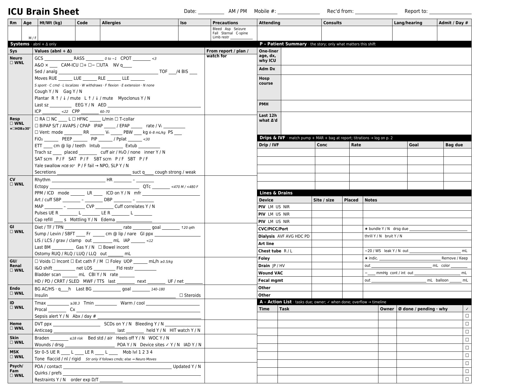
Front: the report side, filled in the order you hear report.
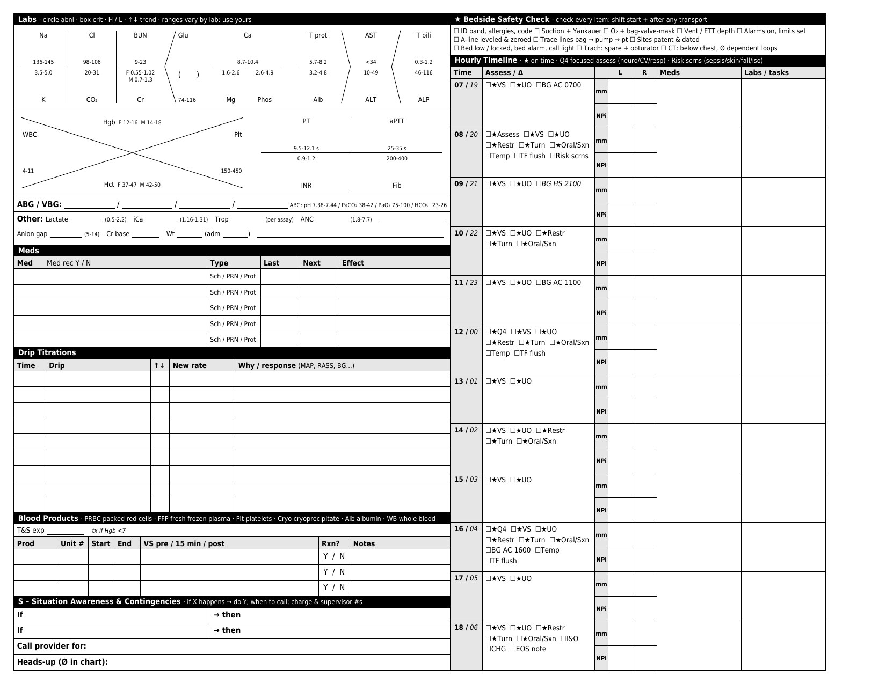
Back: the working side, for labs, meds, titrations, and the hourly timeline.
Additional sources
You'll do a full assessment at the start of shift and a focused reassessment at minimum q4h, plus after any change or intervention. Assessments in the ICU are more granular than what you did in school, and they're systems-based.
| Item | How to do it and what it means |
|---|---|
| Best motor response (S, C, L, W, F, E, N) | Test each limb. S spontaneous purposeful movement; C follows commands (GCS motor 6); L localizes to central pain, reaching above the clavicle (5); W withdraws (4); F abnormal flexion, decorticate (3); E extension, decerebrate (2); N none (1). Use a central stimulus (trapezius squeeze or supraorbital pressure) for localizing; a nail-bed stimulus tests withdrawal. A new difference between sides is a lateralizing sign: report it now (26.3, 26.18). |
| Strength 0–5 (Medical Research Council scale) | 0 no contraction; 1 flicker; 2 moves with gravity eliminated; 3 moves against gravity; 4 against some resistance; 5 normal.5 Only valid in a patient who follows commands; otherwise record motor response instead. Compare side to side and to the last exam; a pronator drift is a sensitive sign of subtle arm weakness. |
| Tone (flaccid / normal / rigid) | Move each limb passively. Acute flaccidity follows a new stroke or spinal shock. Rigidity or spasticity suggests an upper motor neuron lesion, and new rigidity with fever raises neuroleptic malignant syndrome or serotonin syndrome (look for clonus and hyperreflexia; 30.2). |
| Plantar response (↑ / ↓ / mute) | Stroke the lateral sole from heel toward the toes with a blunt object. Normal is flexor (↓, toes curl down). An extensor response (↑, big toe up, toes fan) is a Babinski sign, an upper motor neuron finding. “Mute” means no response. A new Babinski sign is a change to report. |
| Cough, gag, corneal | Brainstem reflexes. Cough: watch during suctioning (the carina). Gag: per policy, often observed with oral care. Corneal: a wisp of sterile gauze or saline drop at the edge of the cornea should cause a blink (cranial nerves V and VII). Loss of these with deep sedation or paralysis is expected; loss without them is a brainstem warning (26.23). The FOUR score formally scores brainstem reflexes (26.3).6 |
| Asterixis | Ask the patient to hold the arms out with wrists extended. A flapping, brief loss of posture is asterixis: a metabolic encephalopathy sign (hepatic, uremic, hypercapnic). |
| Myoclonus | Sudden, brief, shock-like jerks. Causes include uremia, drug toxicity (for example cefepime, opioid metabolites in renal failure, serotonin syndrome), and anoxic injury. It can be confused with seizure activity: time it, describe it, and ask whether EEG is needed (26.21). |
| Neurovascular checks (NV q__h) | Distal to any injury, cast, line, or procedure site: color, temperature, capillary refill, pulses, sensation, movement, and pain with passive stretch. The six P's (pain, pallor, pulselessness, paresthesia, paralysis, poikilothermia) are late signs of arterial occlusion or compartment syndrome (46.1). |
Additional sources
When something goes wrong and your mind blanks, fall back to this. It works every time.
| Sign | What it often means |
|---|---|
| New confusion or agitation | Hypoxia, hypoglycemia, hypoperfusion, sepsis, or drug effect. In an elderly patient, new confusion is a vital sign. Check glucose and sats immediately. |
| Rising respiratory rate | The single most sensitive and most ignored predictor of deterioration. A creeping RR from 18 to 26 over three hours is a compensating patient. |
| Falling urine output | Hypovolemia, low cardiac output, AKI. Track hourly; <0.5 mL/kg/hr for consecutive hours is a call. |
| Escalating pressor requirement | Worsening shock, undrained source, adrenal insufficiency, acidosis, or a problem with the line/pump. Look at the trend over hours, not the current number. |
| Rising lactate | Tissue hypoperfusion. A lactate that isn't clearing with resuscitation is a bad sign and a reason to call. |
| Widening pulse pressure or narrowing | Narrow = low stroke volume / vasoconstriction (hypovolemia, cardiogenic shock, tamponade). Wide = distributive/septic, aortic regurgitation, or rising intracranial pressure (with bradycardia, Cushing's response; 26.12). |
| New arrhythmia | Check K+, Mg++, ischemia, hypoxia, acidosis, and your drips. |
| The gut feeling | Experienced nurses' intuition about a "bad-looking" patient is real and predictive. If something feels off and you can't name it, say exactly that to your preceptor. |
| Situation | First moves |
|---|---|
| Hypotension / shock | Verify with manual cuff and check the art line. Trendelenburg only briefly if at all. Fluid bolus per order, ensure adequate access, start/increase pressor per protocol, get a lactate, look for the cause (bleeding? sepsis? cardiogenic? tamponade? tension pneumo? drug?). Call. |
| Acute hypoxemia | Increase FiO2, sit them up, suction, listen to breath sounds. If vented, disconnect and bag while running DOPES (Dislodgement, Obstruction, Pneumothorax, Equipment failure, Stacked breaths). Call RT and provider. |
| Unstable tachyarrhythmia | ACLS. Assess stability first. Pads on the patient. Get a 12-lead, K+/Mg++, and the code cart at the door. |
| Bradycardia with poor perfusion | ACLS — atropine 1 mg IV (repeat every 3–5 min, maximum 3 mg),1 pacing pads on, transcutaneous pacing or an epinephrine or dopamine infusion if atropine fails. Check for AV-nodal blockers, hyperkalemia, ischemia, and hypoxia. |
| Acute mental status change | Glucose first, always. Then sats, vitals, pupils, focal deficits, recent sedation/opioids, and a look at the last labs (Na, ammonia, CO2). If stroke is possible — time last known well, stroke alert. |
| Hypoglycemia | Treat per protocol (IV dextrose, such as D50 or D10, if unable to take PO), recheck in 15 min, find and fix the cause — and if on an insulin drip, address the drip. |
| Active bleeding | Direct pressure, large-bore access, type & cross, hold anticoagulants, notify provider, anticipate products and reversal agents. |
| Seizure | Protect the airway, side-lying, O2, suction, time it, glucose, benzodiazepine per order, don't restrain, note characteristics for the neuro exam. |
Patients who are not on a monitor still show early signs of deterioration. Compare everything with the patient's baseline on arrival.
| System | Look for |
|---|---|
| Neurologic | Change in alertness; newly disoriented to person, place, time, or situation; speech changes; can't swallow; suddenly lethargic or drowsy; new facial asymmetry; unequal pupils; sudden extreme personality change; agitation, restlessness, or panic. |
| Respiratory | A sudden rise or fall in respiratory rate; breathlessness; noisy breathing; can't speak in full sentences; unequal chest expansion; trachea no longer midline; accessory muscle use; blue lips or fingertips. |
| Cardiovascular | Delayed capillary refill; mottling; unequal pulses between limbs; cyanosis. |
| Skin | Flushed or pale; hot or cold to touch; sweating or clammy; mottled. |
| Pain | Sudden new pain of any origin, including chest pain. |
| GI and abdomen | Distension; nausea or vomiting. |
| GU | Sudden incontinence; urgency or fullness with inability to void. |
| Musculoskeletal | Sudden change in strength, symmetry, or coordination. |
Additional sources
Clear, closed-loop communication with the provider: lead with the problem, the numbers, and what you need. AI-generated illustration.
Use SBAR. Have the chart open, the last vitals, current drips and doses, and recent labs in front of you before you dial. Know what you want.
S — Situation: "This is [your name], RN in the ICU calling about Mr. Reyes in room 7. His MAP has been in the 50s for the last 30 minutes despite increasing norepinephrine."
B — Background: "He's a 64-year-old admitted last night with urosepsis. He's on norepinephrine, currently at [dose], up from [dose] at 2200. He received 2 liters earlier."
A — Assessment: "He's more somnolent than he was, his urine output has dropped to 15 mL over the last two hours, his extremities are cool and mottled, and his 0200 lactate came back at 4.8, up from 3.1."
R — Recommendation: "I think he needs to be reassessed at the bedside. Would you like me to add vasopressin, give another fluid bolus, or send a repeat lactate and cultures? I'm also wondering whether we need to look at a source that isn't controlled."
The R is what separates a confident nurse from a nervous one. Having a recommendation — even a wrong one — shows you're thinking. And say explicitly if you need someone to come see the patient: "I'd like you to come look at him."
There are two different problems here, and they have different fixes. If the patient is unstable or getting worse, call the rapid response team now: any nurse can, at any time, and you do not need the provider's permission or a callback first. If the patient is stable but your concern is not being resolved (the provider is not answering, or the plan does not address what you are seeing), escalate up the chain of command: charge nurse → nursing (house) supervisor → attending physician → medical director or chief of service → administrator on call. Escalating is a professional obligation, not an insult. Use the words "I'm concerned" and "I need help now." Most institutions have a formal safety-concern escalation phrase and written time frames for callbacks — find out what yours are .
Under stress, people forget words, not facts. Having the first sentence ready is what gets the rest said. These scripts use TeamSTEPPS tools: check-back (closed-loop communication), CUS (Concerned, Uncomfortable, Safety issue), and the Two-Challenge Rule.1
| Situation | What to say |
|---|---|
| The patient is crashing | Lead with the ask, then the facts: "This is [name], RN in ICU room 7. I need you at the bedside now. Mr. Reyes’s MAP is 48 on norepinephrine 0.3 mcg/kg/min and he is newly confused. I have called a rapid response." SBAR can follow once help is on the way. |
| Closing the loop on an order | Repeat every order back, including drug, dose, route, and timing: "Let me read that back: vasopressin 0.03 units/min, continuous, through the central line. Correct?" Wait for "yes." Telephone and verbal orders follow your policy, usually emergencies only. |
| No callback | Note the time of each page. If the patient is unstable, do not wait: call the rapid response team. If stable, tell the charge nurse: "I paged Dr. Lee at 0312 and 0324 about a MAP of 58 and a urine output of 10 mL/hr. I haven’t heard back and I need help escalating." |
| The plan does not fit what you see (CUS) | "I’m concerned that his lactate went from 3.1 to 4.8 and he is mottled to the knees. I’m uncomfortable waiting until morning. I think this is a safety issue. I need you to come and see him." |
| Still not resolved (Two-Challenge Rule) | State the concern twice, clearly. If it is still not addressed and the patient is at risk, you are expected to take the next step: "I hear you, and I’m still concerned. I’m going to involve the charge nurse and the supervisor." Then do it. |
| An order you believe is unsafe | Clarify before you refuse: "I want to make sure I have this right: 40 mEq of potassium chloride IV push? I can’t give potassium as an IV push; it can cause cardiac arrest.2 Can we give it as 10 mEq/hr through the central line with the patient on the monitor?" If it stays unsafe, do not carry it out; escalate and document (43.1). |
Chart what happened, not what you think about it: the time, who you notified and how, the findings you reported, the response and orders received, what you did, and how the patient responded. Avoid "MD aware" with no content, blame, opinions about colleagues, and any mention of an event report (Section 12).
Example: 0312 MAP 58–62 for 20 min on norepinephrine 0.2 mcg/kg/min; UO 10 mL/hr x 2 h; skin cool, mottled to knees; lactate 4.8 (2200: 3.1). 0312 and 0324 paged Dr. Lee, no callback. 0326 charge RN notified. 0330 rapid response called. 0335 Dr. Lee at bedside; orders received for vasopressin 0.03 units/min and repeat lactate. 0405 MAP 68–72.
Figure 11-1. Two escalation paths. A deteriorating patient gets a rapid response call at once, whatever else is happening. An unresolved concern climbs the chain of command; your hospital's policy names the exact steps and time frames. Original diagram.
I-PASS is the most studied handoff structure: in a large multicenter study it cut medical errors by 23% and preventable adverse events by 30%.3 The structure is what does the work. Many ICUs adapt it (for example, dropping illness severity because every ICU patient is "watcher" or worse); follow your unit's version. SBAR remains the standard for calls about a change in condition (above).
| Part | What goes in it |
|---|---|
| I — Illness severity | Stable, watcher, or unstable. "Watcher" means you have a specific worry, and you say what it is. |
| P — Patient summary | A one-liner (age, diagnosis, why ICU), the hospital course, and the last 12 hours: what changed and why. Only what matters this shift. |
| A — Action list | Tasks due, with a time and an owner: labs to draw, results to chase, meds due, consults, procedures. Mark what is done, pending, and why. |
| S — Situation awareness and contingencies | What might go wrong and what to do about it (below), plus anything not in the chart that the next nurse needs. |
| S — Synthesis by receiver | The receiving nurse summarizes the key points and the plan back, and asks questions. This is closed-loop communication applied to handoff. |
Write two or three “if → then” plans for the problems most likely this shift, and agree on them with the provider when you can. Examples: If MAP <65 on norepinephrine about 0.25 mcg/kg/min → start vasopressin per order and call (Surviving Sepsis 2021 suggested adding vasopressin at about 0.25–0.5 mcg/kg/min of norepinephrine;4 the 2026 update suggests adding it once doses are escalating,5 21.2). If K+ <3.5 on the insulin drip → hold insulin, replace per protocol, recheck in 2 hours. If the patient fails the SBT → back to full support, notify RT and the team.
Additional sources
Your documentation serves three audiences, and only one of them is present while you write. The first is the next clinician, who needs to know what happened. The second is the quality and regulatory apparatus. The third — the one nobody thinks about at 0400 — is a plaintiff's attorney, a defense attorney, a board of nursing investigator, or a jury, reading your entries years later with no memory of the night and no context except what you wrote.
The medical record is the primary evidence in nursing malpractice litigation and in board of nursing disciplinary proceedings. Complete, accurate, contemporaneous documentation is consistently identified as the strongest single element of a nurse's legal defense; conversely, documentation gaps are among the most common findings in cases resolved against nurses.1 This section covers how to write a record that protects the patient first and, as a consequence, protects you.
The American Nurses Association's Principles for Nursing Documentation establishes that documentation must be accessible, accurate, relevant, consistent, auditable, thoughtful, timely, contemporaneous, sequential, reflective of the nursing process, and retrievable on a permanent basis.2 In practical terms, six characteristics govern every entry:
| Characteristic | What it requires |
|---|---|
| Factual | Objective, observable, measurable data. What you saw, heard, measured, and did — not what you concluded, assumed, or felt about it. "Patient stated 'I feel like I can't breathe'; RR 32, SpO2 88% on 4 L NC, accessory muscle use noted" rather than "patient appears anxious and short of breath." |
| Accurate | Precise measurements and quantities. "Approximately 200 mL of bright red drainage" rather than "a large amount of bloody drainage." Exact times, exact doses, exact names. |
| Complete | Assessment, intervention, and response. The response is the element most frequently omitted and the one most frequently decisive in review. |
| Timely and contemporaneous | As close to real time as safely possible. The audit trail records when you actually typed it, not when you say the event occurred. |
| Organized and sequential | Chronological, following the nursing process: assessment → intervention → reassessment → communication. |
| Confidential | Accessed only for legitimate care purposes. Every access is logged. |
Nurses generally document assessments and interventions reliably. The elements that are missing when a record is reconstructed for legal review are more specific:
This is the single most consequential omission in nursing documentation. An entry that records an intervention without its outcome does not demonstrate that nursing judgment occurred; it demonstrates only that a task was performed.
| Incomplete | Defensible |
|---|---|
| "Morphine 2 mg IV given for pain." | "2000: Pain 8/10, right upper quadrant, sharp, patient guarding abdomen. Morphine 2 mg IV administered per order. 2030: Reassessed — pain 3/10, patient resting comfortably, RR 16, SpO2 96% on RA, no sedation." |
| "Norepinephrine titrated up." | "0215: MAP 54 (goal ≥65). Verified arterial line leveled and zeroed, square wave test optimally damped, correlated with manual cuff 82/48. Norepinephrine increased from 0.08 to 0.10 mcg/kg/min per protocol. 0225: MAP 68, extremities remain cool, mottling score 2 (unchanged), urine output 15 mL this hour." |
| "Patient repositioned." | "2200: Turned to left lateral with two staff. Sacrum non-blanchable erythema 2 cm, unchanged from admission assessment. Heels floated on pillow. Skin otherwise intact. Patient tolerated without distress; MAP stable 72 during turn." |
Failure-to-communicate and failure-to-escalate are recurrent allegations in nursing malpractice claims. A notification entry is defensible only if it contains all four elements:
If a concern is not resolved, document the escalation. "0410: Reported to Dr. Alvarez that MAP remains 55 after bolus and patient is now not following commands. Dr. Alvarez declined further intervention at this time. 0415: Notified Sarah Kim, RN, charge nurse, of ongoing concern. 0420: Rapid response activated per unit protocol." That sequence documents that the nursing chain of command was followed — which is itself a nursing standard of care, and which protects both the patient and you.
| Avoid | Why | Instead |
|---|---|---|
| Conclusions without data — "patient stable," "no acute distress," "tolerated well" | Meaningless in isolation and contradicted by any adverse outcome that follows | Record the actual parameters that support the conclusion |
| Subjective characterizations — "uncooperative," "difficult," "drug-seeking," "noncompliant," "manipulative" | Reads as bias to a jury, undermines your credibility, and is increasingly recognized as stigmatizing language that affects care quality3 | Describe the behavior objectively and quote the patient: "Patient declined morning medications, stating 'they make me feel sick.' Education provided regarding indication; patient continued to decline. Dr. Reyes notified at 0915." |
| Blame or criticism of colleagues — "night shift failed to," "physician refused to come" | Creates an adversarial record that damages every defendant including you; finger-pointing among providers is a plaintiff's most useful gift | Document facts and times neutrally: "Reported findings to Dr. Alvarez at 0325; no new orders received. Charge nurse notified at 0415." |
| Speculation about causation — "patient fell because the tech left the bed rails down" | An untrained causal conclusion that becomes an admission | "Patient found on floor at 0240 beside bed. Bed in low position, two upper side rails up, call light on floor next to patient." |
| The words "error," "mistake," "accidentally," "incident report" | Occurrence reports are typically protected from discovery in many jurisdictions unless referenced in the medical record — referencing one can waive that protection | Document the clinical facts, the patient's condition, the interventions, and the notifications. File the occurrence report separately and do not mention it in the chart. |
| Non-approved abbreviations | The Joint Commission maintains a "Do Not Use" list; ambiguous abbreviations have caused documented patient harm4 | Write "unit" not "U"; "daily" not "QD"; "every other day" not "QOD"; use a leading zero (0.5 mg) and never a trailing zero (5 mg, not 5.0 mg) |
| Vague quantities and times — "a small amount," "later," "frequently" | Cannot be reconstructed or defended | Measure and timestamp everything |
Document as close to real time as patient safety permits — ideally never more than an hour behind. Retrospectively charting six hours of assessments at 0530 produces errors, omissions, and an audit trail that is difficult to defend.
A late entry is appropriate when documentation was genuinely omitted and you have complete, specific recollection of the events. The requirements:
Format: "10/14/2026 0630 — Late entry for 10/14/2026 0215: [content]."
An addendum adds new information to an existing, complete entry — for example, a lab result that returned after the original note. Mark it clearly as an addendum, reference the original entry by date and time, state the reason for it, and sign and date it as of the day written.
This is the part of modern documentation that new nurses most consistently underestimate. Everything you do in the EHR is recorded, timestamped, and discoverable. Under the Federal Rules of Civil Procedure, electronically stored information — including metadata — is subject to discovery, and plaintiff's counsel routinely obtains the full EHR audit trail in nursing malpractice litigation.
The audit trail records:
| Audit trail finding | How it is characterized in litigation |
|---|---|
| A block of entries typed at 0620 documenting events across an entire shift | "Charting after the fact" — the implication that the nurse did not actually perform the assessments in real time, or reconstructed them to fit a known outcome |
| Entries revised after the patient deteriorated or after a request for records | "Attempting to make the care sound better than it was" |
| A critical lab result that was never opened | Failure to review available clinical information — a direct causation argument |
| A clinical decision support alert overridden in under two seconds | The alert was not meaningfully considered |
| Identical assessment text across multiple shifts | Copy-forward without reassessment — see below |
| Record accessed on a day the nurse was not assigned to the patient | Privacy violation, or post-hoc review suggesting awareness of a problem |
Copying prior documentation forward propagates outdated and inaccurate information, and it is a well-documented source of both patient harm and litigation exposure. Vital signs that never change, an assessment identical to the previous three shifts, or a physical exam finding that persists after the finding resolved are all readily identified by opposing counsel and are corrosive to the credibility of the entire record.
If your EHR permits copy-forward, use it only as a template to be edited — and edit every field. If a finding genuinely has not changed, say so actively: "Sacral erythema unchanged from prior shift, remeasured at 2 cm, non-blanchable."
Charting by exception documents only deviations from a defined standard. It reduces workload, but it creates a specific legal vulnerability: the absence of an entry is indistinguishable from the absence of care. If your unit uses it, know exactly what the defined standard is, be certain that standard is documented somewhere in policy, and document narratively any time a patient's condition, a family interaction, or a clinical event falls outside routine — which in an ICU is frequently.
You will not remember the sequence accurately at 0700. Keep a rough running timeline on paper during the event — times, vitals, interventions, medications, who arrived when — and transcribe it afterward as a late entry clearly labeled as such. Document:
Document the objective scene as found, the assessment (including a neurologic exam and a head-to-toe survey), the patient's own account in quotation marks, notifications, orders received, imaging, the safety measures that were in place at the time, and the post-fall monitoring performed. Do not speculate about cause and do not reference the occurrence report.
Document in the medical record only the clinical facts: what was administered, the patient's condition and monitoring, the interventions performed, and the notifications made. The analysis, the contributing factors, and the word "error" belong in the occurrence report, which is filed separately and is not referenced in the chart. Report it. Always. A disclosed near-miss improves the system; a concealed one is discovered later under far worse circumstances.
Document what was refused, the specific risks explained, the patient's demonstrated capacity to understand, their stated reasoning in quotation marks, who was notified, alternatives offered, and that the patient was told they may return.
Document when the patient was last assessed and by whom, what was found, and the elapsed interval — honestly. Attempting to minimize a gap creates a far worse problem than the gap itself.
Records are requested for many reasons — quality review, peer review, a board complaint, a subpoena, or litigation. Most reviews do not become claims. If you are notified that a record you documented is under review:
| □ | Correct patient, correct encounter, correct date and time |
| □ | Objective, factual, measured — no conclusions without supporting data |
| □ | Assessment, intervention, and response all present |
| □ | Patient statements quoted verbatim where significant |
| □ | Every notification includes time, full name and role, content reported, and response received |
| □ | Escalation up the chain of command documented if a concern was unresolved |
| □ | Safety measures, equipment checks, and code status documented |
| □ | Only approved abbreviations; leading zeros, no trailing zeros |
| □ | No blame, no speculation, no subjective characterization of the patient |
| □ | No reference to an occurrence report |
| □ | No copy-forward without editing every field |
| □ | Late entries and addenda labeled, with both the documentation time and the event time |
| □ | Corrections made only by single line-through (paper) or the EHR amendment function — never obliterated |
| □ | Signed with full name and credentials |
These are the structured assessments you perform every shift. They are frequently treated as box-checking, and they are not: each one exists because clinical impression alone misses the thing it detects, and each one has an action attached. A score you document but don't act on is worse than no score — it creates a record that the problem was identified and ignored.
The organizing framework for daily care of the critically ill, and the structure most of the other tools plug into. Implementation across large health systems is associated with shorter ICU stay, fewer ventilator days, less delirium, and lower mortality — with a dose-response relationship, meaning more complete performance produces better outcomes.1 It is also, almost entirely, nursing work.
| Element | Daily execution | |
|---|---|---|
| A | Assess, prevent, manage pain | Validated tool every shift and PRN (self-report if able, else CPOT or BPS). Treat pain before sedation. Pre-medicate for procedures. |
| B | Both SAT and SBT | Daily coordinated awakening and breathing trials — SAT first, then SBT.2 See Section 25.24. |
| C | Choice of analgesia and sedation | Analgesia-first, light sedation to the ordered RASS goal, non-benzodiazepine agents preferred. |
| D | Delirium assess, prevent, manage | CAM-ICU or ICDSC every shift plus the nonpharmacologic prevention bundle. |
| E | Early mobility | Progressive mobility per protocol — including while intubated. |
| F | Family engagement | Open visitation, presence on rounds, involvement in reorientation and mobility, honest updates. |
Assess at least every 4 hours, and hourly on titrated sedation. Titrate to the ordered RASS goal. Light sedation in the PADIS guideline is roughly −2 to +1;3 the brain sheet template (8.6) uses 0 to −1. Under most ABCDEF bundle policies the provider orders the RASS goal and the parameter for notifying them; any new goal needs a new order, and the RN titrates analgesia and sedation to reach it. Analgosedation comes first, and benzodiazepines are avoided when possible.
| Score | Term | Description |
|---|---|---|
| +4 | Combative | Overtly combative, violent, immediate danger to staff |
| +3 | Very agitated | Pulls at tubes or catheters; aggressive |
| +2 | Agitated | Frequent non-purposeful movement; ventilator dyssynchrony |
| +1 | Restless | Anxious, movements not aggressive |
| 0 | Alert and calm | — |
| −1 | Drowsy | Not fully alert; sustained (>10 sec) awakening with eye contact to voice |
| −2 | Light sedation | Briefly (<10 sec) awakens with eye contact to voice |
| −3 | Moderate sedation | Movement or eye opening to voice, but no eye contact |
| −4 | Deep sedation | No response to voice; movement or eye opening to physical stimulation |
| −5 | Unarousable | No response to voice or physical stimulation |
Procedure: observe first (scores +4 to 0). If not alert, state the patient's name and ask them to open their eyes and look at you (−1 to −3). If no response to voice, physically stimulate by shaking the shoulder and then rubbing the sternum (−4 to −5).4 The dividing line between −2 and −3 is eye contact, and it matters — it's the boundary of assessability for CAM-ICU.
For patients who cannot self-report. Four domains scored 0–2 each — facial expression, body movements, muscle tension, and ventilator compliance (intubated) or vocalization (extubated). Total 0–8; a score >2 (commonly ≥3) indicates significant pain requiring intervention.5 Full scoring detail is in Section 25.22.
Self-report remains the gold standard whenever obtainable. Vital signs are not a pain scale — but a change in them should prompt you to assess with a validated tool. Reassess after every intervention and document the response; that is the part that matters and the part most often omitted.
Screen at least once every shift (many policies require twice on days) and with any mental status change; a positive CAM-ICU is reported to the provider, and the team looks for causes. Assess only if RASS ≥ −3 (if RASS is −4 or −5, the patient is unassessable — document that and recheck later).
Delirium is present when Features 1 AND 2 are present, PLUS either 3 or 4:6
| Feature | How to assess |
|---|---|
| 1. Acute change or fluctuating course | Is there a change from baseline mental status, or has mental status (including RASS) fluctuated in the past 24 hours? |
| 2. Inattention — the cardinal feature | The letters test: read "S-A-V-E-A-H-A-A-R-T" and ask the patient to squeeze your hand on each A. >2 errors is positive. (A picture recognition test is an alternative.) |
| 3. Altered level of consciousness | Any RASS other than 0. |
| 4. Disorganized thinking | Four yes/no questions (e.g., "Will a stone float on water?" "Are there fish in the sea?" "Does one pound weigh more than two?" "Can you use a hammer to pound a nail?") plus a command. >1 error is positive. |
Remember that hypoactive delirium is the most common subtype and the most missed — the quiet, withdrawn, "easy" patient. That is precisely why the tool exists. A positive screen should trigger a search for the cause and a review of sedation, not just a chart entry. The ICDSC (0–8, ≥4 suggests delirium) is an equally validated alternative completed from shift observations.
Figure 13-1. The CAM-ICU decision path. Delirium is present when Features 1 and 2 are both present, plus either Feature 3 or Feature 4. A positive screen is reported, and the team looks for the cause (hypoxia, infection, drugs, withdrawal, metabolic, pain, sleep). Original diagram.
Immobility causes ICU-acquired weakness, delirium, pressure injury, VTE, atelectasis, and prolonged ventilation. Early mobility is safe and feasible even in intubated patients with an adequate safety screen and team, and it is among the most effective delirium interventions available.3
Safety screen before mobilizing (varies by protocol — use yours): adequate neurologic status (able to respond), respiratory stability (FiO2 and PEEP within limits, no escalating requirement), hemodynamic stability (no escalating vasopressors, no active ischemia or arrhythmia), no unstable fracture or active bleeding, and secure lines and airway.
A typical four-level progressive mobility pathway is shown below; your unit's levels and criteria may differ. The provider orders PT/OT as needed, and exclusions are discussed with the provider before starting.
| Level | Who | Typical activity |
|---|---|---|
| Level 1 | Sedated, paralyzed, or unconscious (RASS −4/−5) | Turn q2h, passive range of motion, HOB elevation, chair position in bed |
| Level 2 | Confined to bed but more active and less sedated | Active range of motion and resistance, sitting on the edge of the bed with help |
| Level 3 | Able to take part in more aggressive mobility | Sitting balance, transfer to a chair, standing |
| Level 4 | Able to bear weight | Walking with staff and equipment, including while ventilated |
When to advance: to Level 2 when the patient is more awake and cooperative and hemodynamically stable; to Level 3 after the provider discontinues the bedrest order, the patient is stable, and the chair-position goal is met. Allow 5–10 minutes after each position change before judging hemodynamic tolerance.
Nursing: plan mobility around sedation (an SAT first makes it possible), coordinate with PT/OT and RT, assign enough people, secure every line and the airway with a designated person on the tube, pre-medicate for pain, and monitor vitals and symptoms during and after. Stop for: new arrhythmia, chest pain, significant hemodynamic change, desaturation, dyspnea or distress, falls risk, or line/airway compromise. Document what the patient achieved — the next shift needs to progress from there, not start over.
The Bedside Mobility Assessment Tool (BMAT 2.0), originally the Banner Mobility Assessment Tool, answers a different question from the levels above: how can this patient move safely, and what equipment do you need (gait belt, slide sheet or board, sit-to-stand, ceiling or floor lift)?7 Check each device's weight limit, and partner with PT/OT for transfer plans. Whether your unit uses BMAT and which lifts it stocks.
| BMAT level | Test | Fail means |
|---|---|---|
| 1 — Sit and shake | From semi-reclined, sit at the edge of the bed unsupported for up to 1 minute and reach across the midline to shake your hand with each arm. | Mobility level 1: total assist with lift equipment for repositioning, turning, and transfers. |
| 2 — Stretch and point | While seated, straighten each knee and pump each ankle 3 times. | Level 2: lift equipment for transfers; a powered sit-to-stand may be appropriate. |
| 3 — Stand | Rise from sitting and hold standing balance for up to 1 minute (with their usual walker, cane, or prosthesis). | Level 3: stand aid or sit-to-stand for transfers. |
| 4 — Step | March in place 3 times, then step forward and back with each foot. | Level 4 if passed: may walk, with a walking belt or lift-supported ambulation to build distance safely. |
Stop any level for tachycardia, light-headedness, diaphoresis, or the patient's inability to follow the task.
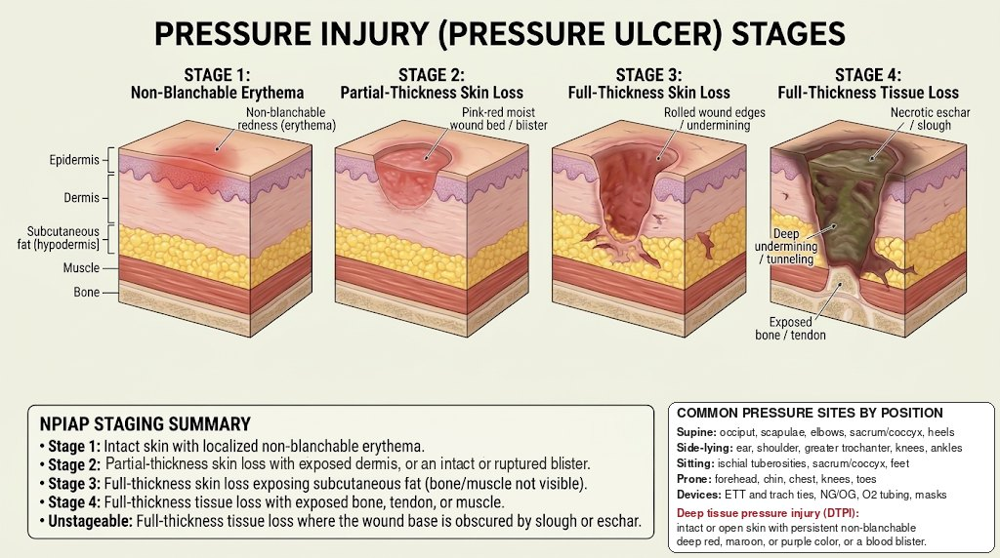
Pressure injury stages and the usual pressure sites by position. In darker skin, Stage 1 redness may not show: look for warmth, firmness, or a color change compared with surrounding skin. Full staging definitions are in 46.7. AI-generated illustration.
Six subscales — sensory perception, moisture, activity, mobility, nutrition, and friction/shear — scored 1–4 each (friction/shear 1–3). Total 6–23; lower is higher risk.
| Score | Risk |
|---|---|
| 19–23 | Minimal/no risk |
| 15–18 | Mild risk |
| 13–14 | Moderate risk |
| 10–12 | High risk |
| ≤9 | Severe risk |
Essentially every ICU patient scores in the at-risk range, which is the point — the score should drive interventions, not just documentation: q2h turns, pressure-redistribution surface, heel offloading (float the heels entirely), moisture management, nutrition consult, and device-related pressure injury checks — ETT and securing devices on the lips, tubing on the ears and nares, pulse oximeter probes, cervical collars, NIV masks, compression devices. Device-related injuries are now a large share of hospital-acquired pressure injuries and are almost entirely preventable. Document existing wounds on admission with photographs per policy — anything undocumented becomes yours.
Tools such as the Morse Fall Scale or Hendrich II are standard. Falls happen in the ICU — especially in delirious, deconditioned, newly extubated, and post-sedation patients, and most commonly around toileting.
Interventions: bed in lowest position with brakes locked, call light and personal items within reach on the intact side, non-skid footwear, adequate lighting, bed and chair alarms, scheduled toileting rather than waiting to be called, clutter-free path, appropriate assistive devices, and orthostatic vital signs before first ambulation after a period of bedrest. Delirium screening is fall prevention — the two are tightly linked. Restraints do not prevent falls and increase delirium, injury, and agitation; use them only when genuinely necessary, with an order, with frequent reassessment, and with an active plan to discontinue.
Dysphagia after extubation is common, under-recognized, and causes aspiration pneumonia. It also follows stroke, neuromuscular disease, and prolonged intubation (post-extubation dysphagia risk rises with duration of intubation).
The Yale Swallow Protocol (the screen on the brain sheet template (8.6)) has two parts. First, a brief pre-screen: alert, oriented, able to follow one-step commands, and an oral-mechanism check. Then, sitting fully upright (HOB 90°), the patient drinks 3 oz (90 mL) of water from a cup or straw without stopping.8 It's a fail if they can't finish without interruption or if they cough or choke during or right after drinking. Fail → keep NPO (including meds by mouth, unless ordered another way) and request a speech-language pathology evaluation. Your hospital's protocol.
Ten domains, total 0–67, with symptom-triggered benzodiazepine dosing. Detail and the important limitations — particularly that it is invalid in intubated, sedated, or non-communicative patients — are in Section 30.1. Screen every admission for alcohol use so you know who needs prophylaxis before day two.
| Assessment | Notes |
|---|---|
| VTE risk (Padua, Caprini) | Verify mechanical and chemical prophylaxis are ordered and actually in place. SCDs on and plugged in is a real and frequently failed check. |
| Sepsis screening | Per your EHR-based or unit tool, at least each shift. |
| Restraint assessment | Order, indication, least-restrictive alternative tried, frequent reassessment, circulation and skin checks, range of motion, and a plan to discontinue. |
| Line necessity review | Daily for every central line and Foley — the single most effective CLABSI and CAUTI intervention is removal.9,10 Ask on rounds. |
| Oral care / VAP bundle11 | Documented per protocol. |
| Glucose monitoring | Per protocol; hourly on insulin infusions. |
| Code status and goals of care | Verify every shift. Running a code on a DNR patient, or failing to resuscitate someone who wanted it, both trace back to documentation nobody checked. |
Your brain sheet's header circles the precautions in force. Each has a short list of things that must be true at the bedside.
| Precaution | What has to be in place |
|---|---|
| Aspiration | HOB ≥30° (fully upright to eat or for meds); swallow screen passed before anything by mouth (13.8); suction set up; feeding tube position checked per policy; oral care on schedule; hold feeds per order before lying flat for procedures. |
| Seizure | Bed low, rails up and padded per policy; suction and oxygen ready; working IV access; nothing in the mouth during a seizure. Time it, describe it, protect the head, turn the patient to the side, and give the ordered benzodiazepine (26.21). |
| Bleeding | For low platelets, anticoagulation, or coagulopathy: soft toothbrush, electric razor, no IM injections, fewest possible sticks, longer pressure on sites, fall prevention, and watch stool, urine, gums, and neuro status. Know the last platelet count and when the anticoagulant was last given or held. |
| Fall | See 13.7. |
| Sternal | After sternotomy: no pushing or pulling up with the arms, splint the chest with a pillow to cough, and lifting limits per the surgeon's order. Rare in a general ICU; follow the specific order. |
| C-spine | Collar on until the provider clears the spine; log-roll with in-line stabilization; HOB or reverse Trendelenburg per order; check skin under the collar every shift. |
| Limb restriction | No BP cuffs, sticks, IVs, or restraints on a restricted limb (dialysis fistula or graft, and others per policy). Post a sign at the bedside and tell the patient and family. |
Restraints are a last resort. They don't prevent falls or line removal reliably, and they increase delirium, injury, and agitation. Try alternatives first: treat pain, delirium, and hypoxia; cover or hide lines; use mitts instead of wrist restraints when that's enough; involve family. Federal rules (CMS, 42 CFR 482.13(e)) apply to every hospital:12
This is the framework most modern ICUs organize daily care around, and implementation is associated with shorter ICU stays, less time on the ventilator, and less delirium.1
Bundles prevent the infections that come from devices. Isolation prevents the ones that travel between patients, and between patients and you. Standard precautions apply to every patient, every time:7 hand hygiene, PPE for any expected contact with blood or body fluids, safe sharps, respiratory etiquette, and cleaning shared equipment.
| Precaution | Typical organisms | What you wear and do |
|---|---|---|
| Contact | MRSA, VRE, multidrug-resistant gram negatives (CRE, ESBL per policy), scabies, many wound infections | Gown and gloves on entry; dedicated equipment (stethoscope, cuff); clean shared items before they leave the room. |
| Contact plus (enteric / "special contact") | C. difficile, norovirus | Gown and gloves; wash hands with soap and water (alcohol does not kill C. difficile spores); sporicidal (bleach) cleaning. |
| Candida auris | An emerging, drug-resistant yeast that persists on surfaces | Contact precautions per policy; a disinfectant effective against it (EPA List P); screening and notification per infection prevention. |
| Droplet | Influenza, pertussis, N. meningitidis (until 24 hours of effective therapy), adenovirus, mumps | Surgical mask on entry (plus eye protection for splash); patient wears a mask for transport. |
| Airborne | Tuberculosis, measles, varicella, disseminated herpes zoster | Negative-pressure airborne infection isolation room, door closed; a fit-tested N95 respirator or PAPR. Staff who are not immune should not care for measles or varicella patients. |
| COVID-19 and other respiratory viruses | Per current CDC and hospital policy | Usually an N95, eye protection, gown, and gloves; aerosol-generating procedures (intubation, bronchoscopy, high-flow oxygen, NIV, open suctioning) raise the risk. |
| Donning (CDC sequence) | Doffing (one CDC sequence) |
|---|---|
| 1. Hand hygiene; 2. gown; 3. mask or respirator (seal check for an N95); 4. goggles or face shield; 5. gloves over the gown cuffs. | 1. Gloves; 2. goggles or face shield (by the strap); 3. gown (roll it inside out away from you); 4. leave the room, then remove the mask or respirator by the straps; 5. hand hygiene. Perform hand hygiene again whenever your hands touch a contaminated surface.8 |
Know who your infection preventionist is, where the isolation signage and PPE carts are, and how a patient is placed on (and taken off) isolation in the EHR.
This will be a large fraction of your census. Know the Hour-1 bundle cold:
Details and the 2026 Surviving Sepsis changes are in 20.1.
Your role: you are usually the one who recognizes it first. Fever or hypothermia, rising RR, new confusion, tachycardia, dropping BP, falling urine output, rising lactate. Then you're the one driving bundle compliance — getting cultures drawn, chasing the antibiotic, pushing the fluid, monitoring the response. Track: MAP, urine output, mentation, lactate clearance, pressor requirement. Reassess perfusion after every intervention.
You'll have long-stay patients: chronic vent-dependent, multi-organ dysfunction, malnutrition, deconditioning, recurrent infections, wounds. What matters here is consistency — turning, skin care, oral care, nutrition, mobility, delirium prevention, and family communication. This is unglamorous work that determines whether the patient walks out. Also: know how goals-of-care conversations happen on your unit and how to raise the question when the trajectory is clearly poor.
| Population | What changes | What you do |
|---|---|---|
| Older adults and frailty | Less physiologic reserve; atypical presentations (sepsis or MI without fever or chest pain); delirium risk; altered drug clearance; skin and fall risk; hearing and vision loss | Baseline function and cognition from the family; delirium prevention (glasses, hearing aids, sleep, mobility, family); start drugs low and go slow; question Beers Criteria drugs (benzodiazepines, strong anticholinergics such as diphenhydramine) with the team;7 early mobility; goals-of-care conversations (42.1). |
| Patients with obesity | Difficult airway and faster desaturation; reduced FRC (atelectasis); harder IV access and imaging; dosing by the right weight; pressure injury in skin folds; equipment limits | Ventilator tidal volume from predicted (ideal) body weight, not actual;8 confirm which weight each drug uses (actual, ideal, or adjusted) with pharmacy; right-sized BP cuff (a small cuff reads falsely high); check bed, lift, and commode weight ratings; reverse Trendelenburg or upright positioning; inspect and dry skin folds. |
| Pregnant patients | Higher heart rate and cardiac output, lower BP and SVR; a lower normal PaCO2 (about 30, a compensated respiratory alkalosis), so a "normal" 40 is retention; lower BUN and creatinine; higher fibrinogen and clotting risk; aortocaval compression after about 20 weeks | Involve obstetrics early (fetal monitoring plan, rapid response team); tilt or wedge to the left (left lateral tilt) or manual left uterine displacement;9 in cardiac arrest, manual left uterine displacement during CPR and preparation for resuscitative cesarean delivery within about 5 minutes (AHA); preeclampsia and postpartum hemorrhage in 46.9 and 27.17. |
| Patients with disabilities or communication barriers | Baseline differs from the "normal" exam; communication devices, interpreters, and caregivers are part of the care | Ask the patient or caregiver what is normal for them; use qualified medical interpreters, not family members, for clinical conversations; ADA accommodations per policy. |
Part III
The physiology and the infusion discipline that every organ-system chapter depends on.
Hemodynamics is the part of ICU nursing that separates you from the floor. Everything below answers one question in different ways: is this patient's tissue getting enough oxygen, and if not, why not? Blood pressure is a poor proxy for that. Learn to think in terms of flow, preload, afterload, contractility, and oxygen balance — then the numbers stop being trivia and start being a story.
Do this first, every time, on every patient. It costs nothing, requires no equipment, and the experienced nurses you admire are doing it in the first ten seconds at the bedside.
| What you assess | What it tells you |
|---|---|
| Mentation | The brain is the most perfusion-sensitive organ you can assess without a machine. New confusion, agitation, or somnolence in a hypotensive patient means cerebral perfusion is failing. This is a hemodynamic finding, not a psych finding. |
| Urine output | Renal perfusion in real time. <0.5 mL/kg/hr sustained is your kidney telling you flow is inadequate. Hourly UOP is one of the most useful hemodynamic numbers you have. |
| Capillary refill time | Press the distal phalanx firmly for ~15 seconds, release, and time the return. >3 seconds suggests impaired peripheral perfusion. It is reproducible, free, and has been used successfully as a resuscitation target in septic shock trials.1 |
| Skin temperature gradient | Run your hand from knee to toe. A sharp, proximally-migrating cold line means peripheral vasoconstriction and low flow. Warm, flushed, bounding extremities with hypotension suggests a distributive (vasodilated) picture instead. |
| Peripheral pulses | Bounding, normal, thready, or absent. Compare bilaterally and to earlier in your shift. A pulse that was 2+ and is now 1+ matters. |
| Pulse pressure | SBP − DBP; normally ~40 mmHg. Narrow pulse pressure suggests low stroke volume and vasoconstriction (hypovolemic, cardiogenic, obstructive shock). Wide pulse pressure with warm skin suggests vasodilation (septic, neurogenic, anaphylactic, liver failure). |
| JVD | Elevated jugular venous pressure = high right-sided filling pressure: RV failure, tamponade, tension pneumothorax, PE, volume overload. Flat neck veins in a hypotensive patient point toward hypovolemia or distributive shock. |
| Lung sounds & work of breathing | Crackles and hypoxia in a hypotensive patient change your fluid plan entirely. Never give a bolus without listening first. |
| Lactate | Not a bedside sign, but the global marker of anaerobic metabolism. Trend it. Clearance matters more than any single value.1 |
Mottling is patchy, reticulated skin discoloration reflecting microcirculatory failure. Ait-Oufella's mottling score grades it by how far the mottling extends from the knee — it's highly reproducible between observers, takes five seconds, and both the score and its change during resuscitation predict survival in septic shock.2,3 It is one of the highest-value free assessments you will ever learn.
Figure 16-1. The knee mottling score (Ait-Oufella), front of the leg. Original drawing; shading shows the extent of mottling, not its exact pattern.
| Score | Extent of mottling on the knee/leg |
|---|---|
| 0 | No mottling |
| 1 | A modest, coin-sized area at the center of the knee |
| 2 | Moderate area, not exceeding the superior edge of the kneecap |
| 3 | Extends up but not beyond the middle of the thigh |
| 4 | Severe — extends up but not beyond the groin fold |
| 5 | Extremely severe — extends beyond the groin fold |
How to use it: assess on the anterior knee with adequate lighting and an uncovered leg. Score it at the start of your shift and again after each resuscitation intervention. A score that climbs is bad news even if the MAP looks acceptable; a score that falls during resuscitation is reassuring. Say it out loud in report and in your provider calls: "His mottling score has gone from 2 to 4 over the last three hours." That sentence gets a physician to the bedside faster than a blood pressure will. Chart the score with your perfusion assessment in the EHR; which screen or field holds it.
Caveat: mottling is harder to appreciate in darker skin tones. Use additional light, compare to the patient's own unaffected skin, and lean more heavily on temperature gradient, capillary refill (which can be assessed on the nail bed or palm), and lactate.
Every invasive pressure — arterial, CVP, PA — runs through the same fluid-filled system: a pressurized bag of flush solution, a flush device, a transducer that turns pressure into an electrical signal, short stiff pressure tubing, and the catheter. Most hospitals now flush with 0.9% sodium chloride without heparin; some still use heparinized saline, which matters for heparin allergy, HIT, and coagulation samples. Every number on the monitor is only as good as this setup, and the three skills that make it true are priming, leveling, and zeroing.
Figure 16-2. A radial arterial pressure system from bag to patient. Original schematic; component shapes vary by manufacturer.
System rules (CDC): replace the transducer, tubing, continuous-flush device, and flush bag together at 96-hour intervals; keep every component sterile; use a closed continuous-flush system; minimize entries; and never run dextrose or parenteral nutrition through the pressure circuit.5
Level the air-fluid interface of the zeroing stopcock to the phlebostatic axis: the 4th intercostal space at half the front-to-back depth of the chest (about the mid-axillary line). It approximates the right atrium, and every pressure is referenced to it. Mark the skin once so every nurse levels to the same point, and use a laser or carpenter's level from the mark to the stopcock.
Figure 16-3. Finding the phlebostatic axis. Original drawing.
Figure 16-4. Three-way stopcock positions. On most stopcocks the handle points to the arm that is OFF; confirm on the kit your unit stocks. Original drawing.
When to zero: at setup; at the start of each shift; after the cable or transducer is disconnected or the patient changes monitors; and any time the number doesn't fit the patient. The manufacturer also advises re-zeroing when the patient's level changes;4 the required frequency is a policy question. Modern disposable transducers drift very little, so re-zeroing rarely fixes a bad number. Check the level and the square wave first.
Note: leveling errors change the absolute pressure reading; they do not change the waveform's shape. Damping errors change the shape. Learn to tell which problem you're looking at.
This tells you whether the tubing system is faithfully reproducing the patient's actual pressure. Do it at the start of every shift on every arterial line, and any time the waveform or the number looks wrong. It takes three seconds.
How: pull (or press) the fast-flush device, hold for about a second, and release abruptly while watching the monitor. The trace will shoot up to a square-topped plateau, then snap back down and oscillate before settling into the normal waveform. Count the oscillations.
Figure 16-5. Reading the square-wave (fast-flush) test. Count the oscillations after you release the flush. Original drawing.
| Result | What you see | Meaning & action |
|---|---|---|
| Optimally damped | 1–2 oscillations after the square wave, then back to a clean waveform | Trust the numbers. Nothing to do. |
| Overdamped | No oscillation — the trace slurs back to baseline; waveform looks rounded and flattened with a lost dicrotic notch | Underestimates systolic, overestimates diastolic. MAP is usually still reasonably accurate. Causes: air bubbles, blood clot, kinked catheter, loose connections, compliant/long tubing, low flush bag pressure, catheter against the vessel wall, arterial spasm. Fix: check and inflate the bag, aspirate and flush per policy, remove bubbles, tighten connections, reposition the wrist, check for kinks. |
| Underdamped | More than 2 oscillations — the trace rings and overshoots; waveform looks exaggerated and spiky | Overestimates systolic, underestimates diastolic (an artificially wide pulse pressure). MAP again usually least affected. Causes: excessive tubing length, stiff tubing, tachycardia, hyperdynamic circulation, catheter whip. Fix: shorten or replace tubing, remove unnecessary stopcocks, use a damping device if your unit has one. |
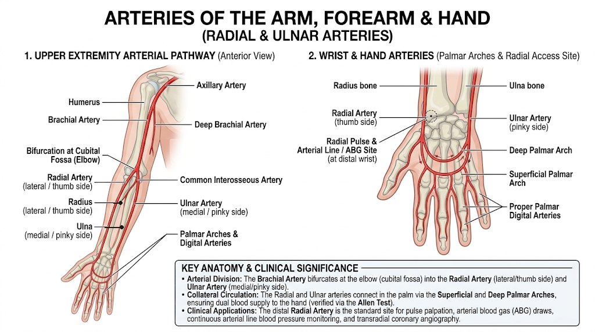
Arteries of the arm and hand. The radial artery at the distal wrist is the usual arterial line and ABG site. Assess collateral flow per hospital policy; the Allen test predicts hand ischemia poorly. AI-generated illustration.
An arterial line gives you beat-to-beat pressure, a waveform full of information, and painless repeated blood sampling. In most ICUs it is radial, and it is the invasive monitor you will manage most. Arterial pressures usually flow into the EHR automatically; your job is to make sure they are true before they are validated or titrated against. Whether waveform strips are required varies.
Do these at handoff, at the start of the shift, and after every transport or position change. They take about two minutes.
This is genuinely important and frequently misunderstood. As a pressure wave travels from the aorta outward, it undergoes distal pulse amplification: wave reflection off the peripheral vasculature makes the systolic peak progressively higher and the diastolic trough lower the further from the aorta you measure.7 So the same heartbeat produces different numbers at different sites.
| Site | Characteristics |
|---|---|
| Radial | Most common; superficial, compressible, good collateral flow via the ulnar artery. Higher systolic and lower diastolic than aortic, with MAP roughly preserved. Positional — wrist flexion damps the trace. Assess collateral circulation per policy before insertion. |
| Brachial | Intermediate waveform. Limited collateral circulation, so ischemic complications are more consequential. Also positional at the elbow. |
| Femoral | More central, so the waveform more closely resembles aortic pressure. Larger vessel, easier in profound shock, less positional. Higher infection and bleeding risk; watch for retroperitoneal hematoma. Requires bedrest and limb positioning. |
| Dorsalis pedis / posterior tibial | Most distal, so the greatest amplification — systolic can read substantially higher than central. Not ideal in peripheral vascular disease or with pressors on board. |
| Axillary | Central-like waveform, used in prolonged shock. Less common. |
Learn to read the shape, not just the number.
Figure 16-6. The normal radial arterial waveform. Original drawing; not to scale.
Figure 16-7. The same true blood pressure seen through an optimally damped, overdamped, and underdamped system. Example numbers. Original drawing.
Figure 16-8. Beat-to-beat patterns worth recognizing on the arterial line. Shaded bands mark inspiration. Original drawing; not to scale.
| Component | What it represents |
|---|---|
| Systolic upstroke (anacrotic limb) | Ventricular ejection. Its steepness reflects contractility — this slope is dP/dt. |
| Systolic peak | Peak systolic pressure. |
| Decline (dicrotic limb) | Ejection ending and runoff into the periphery. |
| Dicrotic notch | Aortic valve closure — the end of systole. Its position on the downslope reflects vascular tone: high on the curve = vasoconstricted / high SVR; low on the curve = vasodilated / low SVR (classic in septic shock). A lost dicrotic notch usually means damping, not physiology. |
| Diastolic runoff | Slope reflects afterload and diastolic time. Steep runoff = vasodilated, low SVR. |
| End-diastole | Lowest point; diastolic pressure. |
| Area under the systolic portion | Proportional to stroke volume — this is the basis of every arterial-waveform cardiac output monitor. |
Pattern recognition worth memorizing:
| Value | Usual adult range | Notes |
|---|---|---|
| Systolic (radial) | ~90–140 mmHg | Reads higher than central (aortic) systolic because of distal amplification (see Sites above). |
| Diastolic | ~60–90 mmHg | Drives coronary perfusion. A very low diastolic suggests vasodilation or aortic regurgitation. |
| Mean arterial pressure (MAP) | ~70–105 mmHg | The monitor integrates the whole waveform. Bedside estimate: diastolic + ⅓ of the pulse pressure. |
| Pulse pressure | ~40 mmHg | Narrow: low stroke volume, vasoconstriction. Wide: vasodilation, aortic regurgitation, stiff arteries. |
| MAP goal | ≥65 mmHg | The standard starting target in shock (Surviving Sepsis 2021 and 2026; the 2026 update suggests 60–65 for patients 65 and older).1,11 The provider's order sets each patient's actual goal and parameters; some patients (neuro, post-thrombolysis) are ordered to systolic limits instead. |
Patient first, then the line, then the monitor. Before you touch the tubing, look at the patient: mentation, color, a pulse, bleeding at the site. A flat line is a disconnection or an arrest until you've proven otherwise.
| What you see | Likely causes | What to do |
|---|---|---|
| Flat line or no waveform | Disconnection; stopcock turned OFF to the patient; cable unplugged; wrong label or scale; clotted or kinked catheter; arrest | Check the patient and site, then trace the system. Reconnect the cable, check stopcock positions, reset the scale, straighten the wrist. If you can't aspirate, see “won't aspirate.” |
| Overdamped (rounded, no notch) | Air, clot, kink, loose connection, low bag pressure, wrist flexion, catheter against the wall | Re-inflate to 300 mmHg, remove bubbles, tighten connections, reposition the wrist, aspirate and flush per policy. Then repeat the square wave (16.4). |
| Underdamped (spiky, ringing) | Long or compliant tubing, extra stopcocks, tachycardia, hyperdynamic circulation | Remove extra extensions and stopcocks; trust the MAP; report it if it persists. |
| Number jumps but the shape is normal | Leveling: transducer moved, bed height or HOB changed | Re-level to the phlebostatic axis, then zero. |
| Blood backing up into the tubing | Bag below 300 mmHg or nearly empty; a loose connection; a stopcock left open | Re-pressurize, hang a new bag before the old one empties, tighten connections, flush the blood back. |
| Won't flush or aspirate | Wrist flexion, kink, or clot | Straighten the wrist and check for kinks. Never force a flush against resistance. Notify the provider; the line may need to be replaced. |
| Art line and cuff disagree | Level, zero, or damping problem; wrong cuff size; severe vasoconstriction (radial reads falsely low on high-dose pressors) | Fix the system first. If a properly tested line still disagrees, report both numbers. Don't titrate a pressor to an unverified number. |
| Waveform worse after a draw | Blood or air left at the stopcock | Flush the line and the sampling port clear, then repeat the square wave. |
| Brief artifact | Fast flush, patient movement, shivering, line being handled | Wait for a stable trace before you read or chart the value. |
With a saline flush, heparin contamination isn't a concern (with heparinized flush it is, especially for coagulation samples), but saline dilution always is: the discard has to clear the catheter and tubing between the artery and the sampling port (the dead space). Evidence sets the minimum at twice the dead space for blood gases and electrolytes.12 Policy volumes are often larger, especially before coagulation studies. Every discard is blood lost, which is why closed blood-conservation systems return it to the patient. Your unit's sampling system and discard volume.
Open system (syringe and stopcock):
Closed system (an in-line reservoir, such as VAMP): slowly pull the reservoir back to draw the clearing volume into it, and close the shut-off valve. Scrub the needleless sampling site and draw the samples with the blunt cannula or transfer device. Then open the valve and return the reservoir blood slowly and smoothly, flush the line and the sampling site, and confirm the waveform. Follow the manufacturer's steps for the specific device.
Flush with the continuous-flush device, never by forceful syringe boluses: vigorous flushing of a radial catheter can drive air or clot backward toward the cerebral circulation.
Arterial catheters cause bloodstream infections at about 0.96 per 1,000 catheter-days in a large meta-analysis, close to short-term central lines.14 Treat the hub with the same discipline: scrub before every entry, minimize entries, and keep the system closed and sterile. Use a sterile transparent dressing and change it when it's damp, loose, or soiled, and on your hospital's schedule (including whether a chlorhexidine dressing is used). Replace the catheter only for a clinical reason; CDC advises against routine replacement.5
| Complication | What it looks like | What to do |
|---|---|---|
| Thrombosis or occlusion (~20% temporary) | Damped trace, can't aspirate; cool, pale hand | Don't force a flush; check distal circulation; notify the provider. Often means removal. |
| Hand ischemia or embolism (permanent <0.1%) | Pain, pallor, mottled or cyanotic fingers, delayed refill, numbness | Emergency: notify immediately. Expect removal and evaluation. |
| Hematoma or bleeding (hematoma ~14%)10 | Swelling, oozing, falling H&H | Direct pressure; check coagulation labs and platelets; mark the edges and watch for spread. |
| Infection | Redness, drainage, fever, new bacteremia | Notify; cultures per order; usually removal. |
| Pseudoaneurysm | Pulsatile mass or bruit at the site, often after removal | Notify; ultrasound per order. |
| Median nerve injury | Numbness or weakness of the thumb and index finger | Notify; document neuro checks. |
| Air embolism | Sudden neuro change or hand ischemia after flushing or a draw | Prevent it: keep air out, never use syringe boluses. Notify immediately. |
| Accidental intra-arterial injection | Severe pain, blanching, or mottling distal to the line | Stop the injection; leave the catheter in place; call the provider now. |
Change it when it's damp, loose, or soiled and at your hospital's interval. The transducer system is changed every 96 hours (16.3).
Arterial pressures are captured automatically; validate them hourly and exclude artifact (a fast flush, a draw, a disconnected line). Each shift, document the line: site, size, insertion date, dressing, waveform quality and square-wave result, level and zero, cuff correlation, distal circulation, and alarms on. Which EHR screen holds each item.
Cardiac Output (CO) = Heart Rate × Stroke Volume. Normal CO is roughly 4–8 L/min; indexed to body surface area, cardiac index (CI) is 2.5–4.0 L/min/m2. Stroke volume is normally ~60–100 mL (SV index 33–47 mL/m2).
Stroke volume has exactly three determinants. Every hemodynamic drug and intervention you give works through one of them, and if you can name which one, you understand the order.
| Determinant | Definition | Assessed by / manipulated with |
|---|---|---|
| Preload | Ventricular filling — the stretch on the myocardium at end-diastole. Frank-Starling: more stretch → more forceful contraction, up to a point, past which more volume does nothing or causes harm. | Assessed: CVP/RAP (poorly), PAOP (poorly), SVV/PPV and PLR (well), echo, IVC collapsibility. Increased with: fluids, blood. Decreased with: diuretics, venodilators (nitroglycerin), positioning, high PEEP. |
| Afterload | The resistance the ventricle must overcome to eject. Left = SVR; right = PVR. | Assessed: SVR calculation, diastolic pressure, dicrotic notch position, distal perfusion. Increased with: vasopressors. Decreased with: vasodilators, nitroprusside, nicardipine, milrinone, ACE inhibitors. |
| Contractility | Intrinsic force of contraction, independent of preload and afterload. | Assessed: echo/EF, dP/dt, response to inotropes. Increased with: dobutamine, milrinone, epinephrine, calcium. Decreased by: ischemia, acidosis, hypoxia, beta blockers, calcium channel blockers, sepsis-induced cardiomyopathy. |
Heart rate matters too, in both directions. Too slow drops CO directly. Too fast shortens diastolic filling time and coronary perfusion time, so CO eventually falls despite the higher rate — which is why rate control in rapid AF can raise blood pressure rather than lower it. Loss of the atrial kick (in AF) costs roughly 20–30% of ventricular filling and can be poorly tolerated in a stiff, non-compliant ventricle.
Useful derived values: SVR = [(MAP − RAP) × 80] / CO, normal ~800–1200 dynes·sec/cm−5 (indexed 1970–2390). PVR = [(mPAP − PAOP) × 80] / CO, normal ~<250. You won't calculate these by hand, but you should know what makes them rise and fall.
A balloon-tipped, flow-directed catheter advanced from a central vein through the right heart into the pulmonary artery. It directly measures RAP, RV pressure, PA pressure, and PAOP; measures cardiac output by thermodilution; and samples true mixed venous blood for SvO2.
PAC use has declined substantially — large trials didn't show mortality benefit in general critical care, and echo plus less-invasive monitors cover most needs. You'll see them mainly in cardiogenic shock, severe pulmonary hypertension, RV failure, complex mixed shock, and advanced heart failure evaluation. Since your unit doesn't do open hearts or transplants, treat this section as physiology education and CCRN preparation rather than daily practice.
As the balloon is inflated and the catheter floats forward, it passes through four distinct pressure environments. Recognizing the transitions is the core skill.
| Location | Typical pressure | Waveform |
|---|---|---|
| Right atrium (RAP/CVP) | 2–6 mmHg | Low-amplitude venous waveform with a, c, and v waves and x and y descents. Small, gentle undulations. |
| Right ventricle | 15–30 / 0–8 mmHg | Sudden dramatic increase in systolic amplitude with a low diastolic near zero, and a steep upstroke. Watch for ectopy here — the catheter is irritating the ventricle. |
| Pulmonary artery | 15–30 / 8–15 mmHg (mean 10–20) |
Systolic stays similar to RV, but the diastolic pressure steps up and a dicrotic notch appears (pulmonic valve closure). The step-up in diastole is the key signal that you've crossed the pulmonic valve. |
| Wedge (PAOP) | 6–12 mmHg | Balloon inflation occludes flow; the trace flattens and drops back to a low-amplitude venous waveform with a and v waves again — morphologically like the RAP tracing, but now reflecting left atrial pressure. |
| Parameter | Normal range |
|---|---|
| Right atrial pressure (RAP) / CVP | 2–6 mmHg |
| Right ventricular pressure | 15–30 / 0–8 mmHg |
| Pulmonary artery pressure (PAP) | 15–30 / 8–15 mmHg |
| Mean pulmonary artery pressure (mPAP) | 10–20 mmHg |
| Pulmonary artery occlusion pressure (PAOP/PCWP) | 6–12 mmHg |
| Left atrial pressure | 6–12 mmHg |
| Left ventricular pressure | 100–140 / 3–12 mmHg |
| Cardiac output / cardiac index | 4–8 L/min / 2.5–4.0 L/min/m2 |
| Stroke volume / SV index | 60–100 mL / 33–47 mL/m2 |
| SVR / SVR index | 800–1200 / 1970–2390 dynes·sec/cm−5 |
| PVR | <250 dynes·sec/cm−5 |
With the balloon inflated, the catheter tip looks through a static column of blood — past the pulmonary capillaries, through the pulmonary veins — at the left atrium. So PAOP is used as a surrogate for left atrial pressure and therefore LV preload (LVEDP).
Interpretation shortcuts: normally PAOP < PA diastolic < PA systolic, and PA diastolic approximates PAOP within a few mmHg. If PA diastolic greatly exceeds PAOP, suspect elevated PVR — pulmonary hypertension, PE, ARDS, hypoxic vasoconstriction. High PAOP with pulmonary edema points to a cardiogenic cause; low PAOP with pulmonary edema points to a non-cardiogenic/ARDS cause.
1. Read at end-expiration. Intrathoracic pressure is closest to atmospheric at end-expiration, so that's when the measured pressure best reflects true transmural cardiac filling pressure. On a spontaneously breathing patient, inspiration lowers intrathoracic pressure, so the trace dips down with inspiration — end-expiration is the highest point of the respiratory undulation. On a mechanically ventilated patient, positive-pressure inspiration raises intrathoracic pressure, so the trace rises with inspiration — end-expiration is the lowest point. Same principle, mirror-image appearance. Always know which kind of breath your patient is taking before you pick a point.
2. Read the waveform, not the monitor's digital number. The digital display averages across the whole respiratory cycle and will be wrong. Freeze the trace, run the cursor, measure at end-expiration.
3. Read at the correct point in the cardiac cycle. Both RAP and PAOP are venous waveforms with a waves (atrial contraction) and v waves (atrial filling against a closed AV valve). You want the mean of the a wave — measure at the base of the a wave, which corresponds to end-diastole, just after the QRS on the simultaneous ECG. For RAP, the a wave follows the P wave closely; for PAOP, the waveform is transmitted through the lungs and is therefore delayed, so the a wave falls roughly after the QRS and the v wave after the T wave.
Abnormal waves are diagnostic:
Figure 16-9. The CVP (right atrial) waveform lined up with the ECG. The a wave follows the P wave, the c wave follows the QRS, and the v wave comes after the T wave. Read the pressure at end-expiration, at the mean of the a wave. The PAOP waveform has the same a and v waves, delayed further after the ECG because the pressure travels back through the lungs. Original drawing; not to scale.
These are your global oxygen-balance numbers. They answer: how much oxygen is the body pulling out of the blood? If delivery falls or consumption rises, tissues extract more, and venous saturation drops.
| Measure | Where sampled | Normal & notes |
|---|---|---|
| SvO2 (mixed venous) | Distal port of a PA catheter, in the pulmonary artery | 60–80% (commonly cited 65–75%). True mixed venous — blood from SVC, IVC, and coronary sinus fully mixed. Requires a PAC. |
| ScvO2 (central venous) | Distal port of an internal jugular or subclavian central line, in the SVC | >70% (roughly 65–75% normal range). Only upper-body venous return. Usually runs a few points higher than SvO2 in critical illness. Much more available than SvO2 — this is the one you'll actually draw. |
How to draw an ScvO2: from the distal lumen of a confirmed central line, waste per policy, draw slowly (aspirating fast pulls arterialized capillary blood and falsely elevates the result), and send on ice or run immediately per your lab's requirements. Label it correctly — a venous gas mislabeled as arterial has caused real harm.
| Finding | Interpretation |
|---|---|
| Low (<65–70%) | Extraction is up because delivery is inadequate or demand is high. Causes: low cardiac output, anemia, hypoxemia, or increased consumption (fever, shivering, pain, agitation, seizure, work of breathing, thyroid storm). Work through those four in order — they map directly onto four interventions: improve flow, transfuse, oxygenate, sedate/cool/rest. |
| High (>80%) | Either delivery genuinely exceeds demand (good), or — more ominously — the tissues can't extract oxygen. Cytopathic/microcirculatory failure in late septic shock, cyanide toxicity, severe left-to-right shunt, hypothermia, or deep sedation/paralysis. A high ScvO2 alongside a rising lactate is a bad combination, not a reassuring one. |
| Falling trend | Often the earliest signal that cardiac output is declining — frequently before blood pressure moves. Trend it. |
Historical note: ScvO2-targeted resuscitation was central to early goal-directed therapy in sepsis; later trials (ProCESS, ARISE, ProMISe) didn't show benefit over usual care, so it's no longer a mandated target.1 It remains genuinely useful as a diagnostic and trending tool.
You will not calculate these by hand at 0300, but understanding them is what makes ScvO2 and lactate interpretable.
| Index | Formula | Normal |
|---|---|---|
| CaO2 arterial O2 content |
(Hgb × 1.34 × SaO2) + (0.003 × PaO2) | ~18–20 mL O2/dL |
| CvO2 venous O2 content |
(Hgb × 1.34 × SvO2) + (0.003 × PvO2) | ~13–16 mL O2/dL |
| DO2 oxygen delivery | CaO2 × CO × 10 | ~900–1100 mL/min Index: 500–600 mL/min/m2 |
| VO2 oxygen consumption |
(CaO2 − CvO2) × CO × 10 | ~200–250 mL/min Index: 120–170 mL/min/m2 |
| O2ER extraction ratio |
(CaO2 − CvO2) / CaO2; approximated by (SaO2 − SvO2) / SaO2 | ~25–30% |
Also worth knowing: normally VO2 is independent of DO2 because the body compensates by extracting more. Below a critical DO2 threshold (~330 mL/min/m2), extraction maxes out and consumption becomes supply-dependent — that's where anaerobic metabolism and lactate production begin.
Modern monitors (FloTrac/Vigileo, HemoSphere, EV1000, PiCCO, LiDCO, ClearSight) derive stroke volume and cardiac output from the arterial waveform, either by pulse contour analysis alone or calibrated by thermodilution or an indicator. These are far more common than PACs in a medical ICU, and they give you continuous CO, SV, SVV, SVR, and often ScvO2.
What the nurse owns:
These are dynamic indicators of fluid responsiveness, and they are far better than static pressures like CVP or PAOP at answering the actual clinical question: if I give this patient fluid, will their stroke volume go up?
The physiology: during positive-pressure ventilation, each mechanical breath transiently increases intrathoracic pressure, reducing venous return and therefore RV and then LV preload. In a patient sitting on the steep part of the Frank-Starling curve (preload-dependent), that cyclic drop in preload produces a large cyclic swing in stroke volume — visible as beat-to-beat variation in the arterial waveform's height. A patient on the flat part of the curve barely varies.
| Measure | Definition | Threshold |
|---|---|---|
| PPV | (PPmax − PPmin) / PPmean, over one respiratory cycle. Derived directly from the arterial pressure trace. | Generally >13% suggests fluid responsiveness |
| SVV | (SVmax − SVmin) / SVmean. Requires a device that computes stroke volume. | Generally >13% (some devices/protocols use 10–15%) |
Meta-analyses suggest PPV is somewhat more accurate than SVV, because SVV involves an additional layer of algorithmic derivation. Values in a gray zone (roughly 9–13%) are indeterminate — use a PLR test instead of guessing.15
These are newer waveform-derived parameters available on some advanced monitors (e.g., the Acumen/HPI software on HemoSphere). They're not universal, but they're increasingly common and they show up in current critical care literature.
The maximum rate of pressure rise during the arterial upstroke. It's a surrogate for left ventricular contractility — a steeper upstroke means a more forcefully contracting ventricle. In practice:
Eadyn = PPV / SVV. Conceptually, it describes the coupling between the ventricle and the arterial system — how effectively a change in stroke volume translates into a change in blood pressure. That's a subtly different and very practical question from "will stroke volume increase?"
| Eadyn | Interpretation and use |
|---|---|
| High (commonly >~0.9–1.0) | Arterial tone is preserved, so an increase in stroke volume will translate into an increase in arterial pressure. In a preload-dependent, hypotensive patient, this predicts that a fluid bolus will actually raise the MAP — not just the cardiac output. |
| Low (commonly <~0.8–0.9) | The arterial system is vasoplegic — extra stroke volume will dissipate into a dilated circuit without raising pressure. Fluid may increase CO but won't fix the blood pressure. This patient's problem is tone, not volume — vasopressor is the more logical next move. |
Why nurses should care: Eadyn helps answer the two questions you actually face at 0300 — "should I push more fluid or add a pressor?" and "can I start weaning the norepinephrine?" A high Eadyn has been studied as a predictor of MAP decrease when vasopressors are reduced, i.e., a marker of who will tolerate a wean. Thresholds vary by study and device, so use your institution's guidance and treat these as decision support, not decision rules.
The PLR is a reversible, self-limited, endogenous fluid challenge. Raising the legs translocates roughly 300 mL of venous blood from the lower body toward the central circulation.15 If stroke volume rises meaningfully, the patient is preload-responsive and will likely respond to actual fluid. If it doesn't, you've learned that without committing a single milliliter — and everything reverses when you put the legs down.
Its enormous advantage: it remains valid in spontaneously breathing patients, in arrhythmias, and at low tidal volumes — exactly the conditions where SVV and PPV fail.
Four categories. Learn the pattern of each and you can often name the shock from the bedside before any monitor confirms it. Note that patients frequently have mixed shock — septic patients develop cardiomyopathy, bleeding patients get infected — and the picture evolves over hours.
| Type | Mechanism | CO/CI | SVR | Preload (CVP/PAOP) | SvO2 | Bedside picture & primary treatment |
|---|---|---|---|---|---|---|
| Hypovolemic | Loss of intravascular volume — hemorrhage, GI losses, burns, DKA, third-spacing | ↓ | ↑ | ↓ | ↓ | Cold, pale, clammy; tachycardic; narrow pulse pressure; flat neck veins; oliguric; high SVV/PPV; positive PLR. Treat: volume — crystalloid and/or blood — and stop the loss. |
| Cardiogenic | Pump failure — MI, decompensated HF, arrhythmia, myocarditis, severe valve disease | ↓ | ↑ | ↑ | ↓ | Cold and wet: cool extremities plus crackles, JVD, edema, S3. Narrow pulse pressure, low dP/dt. Treat: inotropes (dobutamine, milrinone), afterload reduction if pressure allows, diuresis, revascularization, mechanical support. Fluid usually makes this worse — this is the shock where an unthinking 30 mL/kg bolus does harm. |
| Obstructive | Mechanical obstruction to filling or ejection — tamponade, tension pneumothorax, massive PE, severe auto-PEEP | ↓ | ↑ | ↑ | ↓ | Cold and shut down with high filling pressures and often JVD. Tamponade: muffled heart sounds, pulsus paradoxus, equalized pressures. Tension pneumo: absent breath sounds, tracheal deviation, high vent pressures. PE: sudden hypoxia, RV strain. Treat: relieve the obstruction — pericardiocentesis, needle decompression, thrombolysis. Drugs are a bridge, not the fix. |
| Distributive | Pathologic vasodilation — sepsis, anaphylaxis, neurogenic, adrenal crisis, liver failure | ↑ or normal | ↓↓ | ↓ or normal | ↑ or normal | Warm, flushed, bounding pulses, wide pulse pressure, low dicrotic notch, low Eadyn. Treat: fluids first, then vasopressors (norepinephrine), plus source control / epinephrine for anaphylaxis / steroids for adrenal crisis. Late septic shock often develops a cardiogenic component — CO falls and it starts looking cold. |
This module builds hemodynamics from first principles, with the terms, the sorting tables, and worked cases. Read it once slowly; then use the sorting tables as flashcards.
| Term | Definition |
|---|---|
| Hemodynamics | The study of the forces involved in circulating blood: the relationships among pressure, flow, resistance, and volume. |
| Cardiac output (CO) | Blood pumped per minute = HR × SV. Normal 4–8 L/min. |
| Cardiac index (CI) | CO ÷ body surface area. Normal 2.5–4 L/min/m². |
| Stroke volume (SV) | Blood ejected with each beat; normal about 60–100 mL/beat. |
| Preload | Pressure and stretch in the ventricle at the end of diastole (filling). One of the four determinants of CO. |
| Contractility | The heart's ability to change the force and speed of contraction: the squeeze. |
| Afterload | The resistance the ventricle must overcome to eject. SVR for the left ventricle, PVR for the right. |
| SVR / PVR | SVR normal 800–1,200 dynes·sec/cm5; PVR normal under about 250 dynes·sec/cm5. |
| Ejection fraction (EF) | SV ÷ end-diastolic volume. Normal 50–70%; above 70% hyperdynamic; 41–49% mildly reduced; 40% or less reduced. |
| Proximal and distal ports | On a multi-lumen central line, the distal port exits at the catheter tip; the proximal port exits farthest from the tip (nearest the insertion site). |
| Third spacing | Fluid shifting from the vessels into the interstitium or body cavities (for example pancreatitis, sepsis, burns). |
Blood flows: vena cavae → right atrium → tricuspid valve → right ventricle → pulmonic valve → pulmonary arteries → lungs → pulmonary veins → left atrium → mitral valve → left ventricle → aortic valve → aorta → body. So right-sided problems cause symptoms in the body (JVD, edema, liver congestion), left-sided problems cause symptoms in the lungs (crackles, dyspnea), lung problems stress the right heart, and problems in the body (high SVR) stress the left heart. The most important job of the system is delivering oxygen to the tissues; it also delivers nutrients and removes waste.
| System | Signs |
|---|---|
| Neuro | Restlessness, confusion, decreased level of consciousness |
| Cardiac | Tachycardia, palpitations, chest discomfort or pain |
| Respiratory | Tachypnea: less oxygen reaches tissues → anaerobic metabolism → lactic acid → the lungs blow off CO2 to compensate |
| Liver | Elevated LFTs and ammonia |
| Kidneys | Decreased or absent urine output; rising BUN and creatinine |
| GI | Nausea, vomiting, anorexia, hypoactive or absent bowel sounds, constipation or diarrhea |
| Skin | Pale or mottled, cool, delayed capillary refill, weak pulses |
| Sympathetic (fight or flight) | Parasympathetic (rest and digest) | |
|---|---|---|
| Anatomy | Thoracic and lumbar spinal cord | Cranial nerves (especially the vagus, CN X) and sacral spinal nerves |
| Neurotransmitters | Norepinephrine (epinephrine from the adrenal medulla) | Acetylcholine |
| Receptors | Alpha-1, alpha-2, beta-1, beta-2 | Muscarinic |
| Effects | Increases HR and contractility; vasoconstriction | Decreases HR (and atrial contractility); little effect on systemic vascular tone |
| Sensor | Where | Senses | Response |
|---|---|---|---|
| Arterial (high-pressure) baroreceptors | Carotid sinuses (dilated part of each internal carotid just past the bifurcation) and the aortic arch | Stretch of the artery wall (pressure) | Raise or lower HR and contractility; vasoconstriction or vasodilation, within seconds |
| Cardiopulmonary (low-pressure) receptors | Atria, ventricles, pulmonary vessels | Stretch from volume | Change ADH, renin, natriuretic peptides, and sympathetic outflow to the kidneys: salt and water retention or loss |
| Peripheral chemoreceptors | Carotid bodies and aortic bodies | Mainly falling PaO2 (also CO2 and pH) | Increase ventilation and the sympathetic response |
| Central chemoreceptors | Medulla (brainstem) | CO2 and pH (via the CSF) | Increase ventilation |
| Determinant | Raises it | Lowers it |
|---|---|---|
| Heart rate (chronotropy) | Atropine, catecholamines, a pacemaker | Beta blockers, calcium channel blockers, magnesium, cardioversion of a tachyarrhythmia |
| Preload | IV fluids and blood, Trendelenburg or passive leg raise (temporary; only if fluid-responsive), vasopressors (venoconstriction pushes blood back to the heart) | Diuretics, vasodilators, ACE inhibitors and ARBs, fluid and sodium restriction, increased PEEP |
| Contractility (inotropy) | Catecholamines, beta agonists, milrinone, digoxin | Beta blockers, calcium channel blockers, many antiarrhythmics, acidosis, hypocalcemia, hyperkalemia |
| Afterload (SVR) | Vasopressors; the vasoconstriction of heart failure and hypovolemia | ACE inhibitors, ARBs, calcium channel blockers, vasodilators, the IABP |
| Afterload (PVR) | Hypoxia, ARDS and COPD, pulmonary embolism, pulmonary hypertension, increased PEEP, left-sided heart failure | Epoprostenol, endothelin receptor antagonists, PDE5 inhibitors, inhaled nitric oxide |
| Mechanism | Effect |
|---|---|
| PEEP raises intrathoracic pressure | Less venous return → lower RV preload → lower LV preload. PEEP also compresses pulmonary capillaries → higher PVR → lower RV output → less blood to the LV. It lowers LV afterload, which helps a failing LV. |
| Hypoxic pulmonary vasoconstriction (short term) | Pulmonary arterioles constrict where alveoli are hypoxic, shunting blood toward better-ventilated lung, but this raises PVR and RV workload. |
| Prolonged hypoxemia (long term) | Less pulmonary vasodilator and more vasoconstrictor production → vascular remodeling → pulmonary hypertension and RV failure. |
An echo shows anatomy (chamber size, wall thickness, valves, pericardial effusion, intracardiac shunts, the LV outflow tract), function (EF, wall motion, LV diastolic function, RV systolic function, valve flow), and hemodynamics (estimated filling pressures, cardiac output, pulmonary artery pressure, PVR). Bedside point-of-care ultrasound is increasingly used to judge volume status and response to fluid.
| Error or test | Result |
|---|---|
| Transducer too high | Reading falsely low |
| Transducer too low | Reading falsely high |
| Zeroing | Done after leveling; sets atmospheric pressure as zero. Turn the stopcock off to the patient and open to air (remove the cap), press ZERO, then off to air and back to the patient with a new sterile non-vented cap. |
| When to level / zero | Level before first use and with every position change. Zero before first use, whenever the transducer is disconnected from the cable or monitor, and whenever accuracy is in doubt. |
| Square-wave (fast-flush) test | Pull the flush for about 1 second and release. Optimal: the wave squares off, then about 1.5–2 oscillations. Underdamped: more oscillations, falsely high systolic and falsely low diastolic (excess or compliant tubing, catheter whip, many stopcocks). Overdamped: few or no oscillations, falsely low systolic and falsely high diastolic, lost dicrotic notch (air bubbles, clot or kink, low pressure bag, loose connections; a scale set too high can look similar). |
| Complication | Clues and risk factors | Prevention |
|---|---|---|
| Arterial spasm | Early pain, overdamped waveform, falling BP reading; may precede thrombosis | Gentle sampling; report pain and pallor |
| Thrombosis | Decreased distal pulse, pallor or cyanosis distal to the catheter; risks: small artery, large catheter, female sex, peripheral vascular disease, diabetes, long duration | Continuous flush from the pressure bag; remove when no longer needed |
| Air embolism | Sudden neuro change or distal ischemia; flushing an arterial line can send air retrograde toward the brain | Keep the system free of air; prime by gravity; never flush with air in the line |
| Infection | Lower risk than CVCs, higher at femoral sites; risks: poor asepsis at insertion, longer duration | Aseptic access; dressing and tubing changes per policy |
| Bleeding and hematoma | Common with radial and femoral lines; a disconnected line bleeds fast | Luer-lock connections tight; keep the site visible; alarms on |
| Accidental intra-arterial injection | Severe pain, blanching, ischemia, necrosis (direct cell toxicity, obstruction, severe vasoconstriction) | Never give medications through an arterial line; label it; red-striped tubing |
A 32-year-old woman has 24 hours of severe vomiting and diarrhea from presumed viral gastroenteritis and no relevant history.
| Determinant most affected | Preload: she has lost absolute volume. |
| Compensation | Heart rate rises (and SVR rises through vasoconstriction) to hold the cardiac output. |
| Expected findings | Tachycardia; low CVP; narrow pulse pressure; low SV; cool skin, slow capillary refill; low urine output; possible orthostatic hypotension; dry mucous membranes. |
| Goals | Restore volume and perfusion: MAP of 65 or more, urine output of at least 0.5 mL/kg/hour, normal mentation, lactate clearing. |
| Anticipated orders | Isotonic crystalloid boluses, antiemetics, electrolyte replacement (potassium, magnesium), labs (BMP, lactate). |
| How you know it works | Heart rate falls, BP and pulse pressure improve, urine output rises, capillary refill and mentation improve, lactate falls. |
| When to escalate | Hypotension despite fluids, worsening mentation, low urine output for 2 hours, rising lactate, new arrhythmia or a dangerous potassium. |
A 68-year-old man with heart failure has difficulty breathing, jugular venous distension, and pitting edema of the legs.
| Determinant most affected by heart failure | Contractility (in HFrEF). |
| Determinant behind these symptoms | Preload: congestion. The JVD and edema are right-sided (body); the dyspnea is left-sided (lungs). |
| Expected findings | High CVP and PAWP; low SV and CO; high SVR from compensatory vasoconstriction; tachycardia; crackles; weight gain. |
| Goals | Decongest (lower preload), reduce afterload, support oxygenation, and support contractility if output is low. |
| Interventions and diagnostics | Oxygen or NIV (CPAP/BiPAP) for pulmonary edema; IV loop diuretic; vasodilator (for example nitroglycerin) if BP allows; strict I&O and daily weight; BNP or NT-proBNP, BMP, troponin, ECG, chest x-ray, echo; inotrope if hypoperfused. |
| Signs of success | Urine output up, weight down, less work of breathing and oxygen need, crackles and JVD decreasing, better perfusion. |
A 26-year-old woman recently had a port placed for leukemia treatment. The incision is red, swollen, and warm. She has a fever, is diaphoretic, and is confused.
| What is happening | Sepsis, likely from a port-pocket or line infection, in an immunocompromised patient. Evidence: red, swollen, warm incision; fever; diaphoresis; confusion (organ dysfunction). |
| Determinants most affected | Afterload falls (vasodilation, low SVR); preload falls (venodilation and capillary leak); contractility can fall later (septic cardiomyopathy); heart rate rises. |
| Expected findings | Low SVR and MAP; tachycardia; often high CO early (warm, flushed skin, wide pulse pressure); rising lactate. |
| Anticipated orders | Sepsis bundle per protocol: lactate; blood cultures (peripheral and from the port) before antibiotics; broad-spectrum antibiotics within 1 hour (consider neutropenic fever coverage); at least 30 mL/kg crystalloid within 3 hours for hypotension or lactate of 4 or more; norepinephrine for MAP under 65 despite fluids; source control (the port may need removal).1 |
| Signs of success | MAP of 65 or more, lactate falling, urine output improving, clearer mentation. |
| When to escalate | Persistent hypotension after fluids, rising lactate, worsening mental status, new hypoxia, or neutropenic fever. |
Additional sources
Section 16 covers the physiology and the numbers. This section covers the hardware — what the devices are, how they go in, and what you do with them. Arterial lines are in Section 16.5.
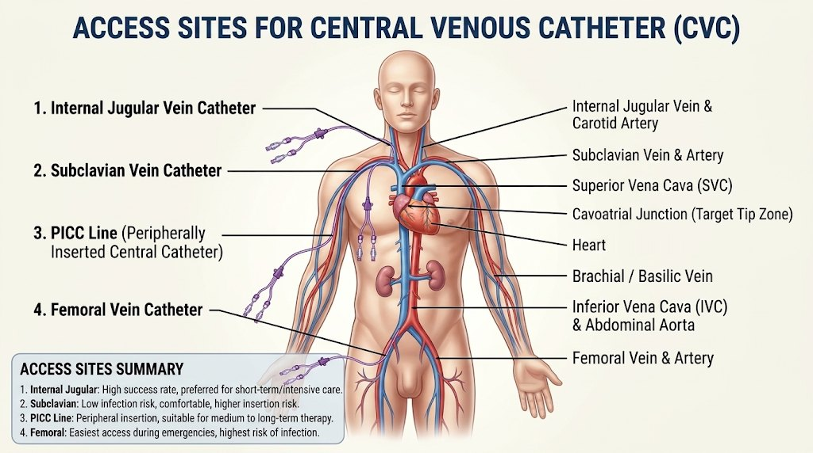
Central venous access sites. For internal jugular, subclavian, and PICC lines, the goal tip position is the cavoatrial junction, confirmed before use per policy; a femoral line ends in the inferior vena cava. AI-generated illustration.
Indications: vasoactive and vesicant infusions, hypertonic or highly concentrated solutions (TPN, 3% saline, concentrated potassium), poor peripheral access, CVP and ScvO2 monitoring, hemodialysis and CRRT, transvenous pacing, PA catheter insertion, and rapid large-volume resuscitation (via a large-bore introducer).
| Type | Description | Considerations |
|---|---|---|
| Non-tunneled CVC (triple/quad lumen) | Percutaneous, into the internal jugular, subclavian, or femoral vein. Days to a few weeks. | The ICU workhorse. Site risk profile: subclavian has the lowest infection risk but the highest pneumothorax risk and is not compressible; internal jugular is a good compromise and is easily ultrasound-guided; femoral has the highest infection and thrombosis risk and should be replaced or removed as soon as feasible. Note that a triple-lumen is a poor resuscitation line — the lumens are long and narrow, so flow is low. |
| Introducer sheath (Cordis, MAC) | Large-bore single lumen, often with a side port | For rapid volume and blood resuscitation and as the conduit for a PA catheter or transvenous pacer. This is the line you want in massive hemorrhage. |
| PICC | Peripherally inserted, tip at the lower SVC or cavoatrial junction. Weeks to months. | Lower insertion risk; can be placed by trained nurses. Higher rates of upper-extremity thrombosis.1 Not ideal for rapid resuscitation (long and narrow). CVP can be measured but is less reliable. |
| Tunneled catheter (Hickman, Broviac) / implanted port | Long-term access with a subcutaneous tunnel or reservoir | Lower infection rates for long-term use. Ports require a non-coring (Huber) needle — never a standard needle.1 |
| Dialysis catheter | Large-bore, high-flow, often tunneled | Not a general-use line. Heparin- or citrate-locked with a concentrated dwell; access is per policy and often restricted to dialysis staff. Never use for routine infusions without an order and without following the lock-withdrawal protocol. |
Figure 17-2. A triple-lumen central venous catheter (typical 7 Fr). Lumen sizes, colors, and port spacing vary by manufacturer. Original drawing; not to scale.
| Lumen | Typical use | Why |
|---|---|---|
| Distal (largest, often 16 G; exits at the tip) | CVP monitoring; large-volume or viscous fluids; blood products | Largest bore and the tip position give the most accurate CVP and the fastest flow. |
| Medial (often 18 G) | Parenteral nutrition, dedicated (INS 2024),1 or a second infusion group | PN gets its own lumen, never shared and never used for draws, to limit infection risk. |
| Proximal (often 18 G; exits farthest from the tip) | Intermittent medications and blood sampling | Keeps draws and boluses away from the lumen running continuous critical drips. |
Lumen use is set by hospital policy and the catheter's instructions.
| Complication | Recognition and response |
|---|---|
| Pneumothorax / hemothorax | Highest with subclavian. Dyspnea, hypoxia, absent unilateral breath sounds, chest pain, rising airway pressures if ventilated. Can be delayed — keep watching after the procedure. Tension pneumothorax needs immediate needle decompression. |
| Arterial puncture | Bright red pulsatile return. Hold prolonged pressure; non-compressible sites (subclavian) are the dangerous ones. Watch for expanding hematoma and airway compromise with a neck hematoma. |
| Air embolism | Sudden dyspnea, hypoxia, hypotension, altered mentation, a "mill-wheel" murmur. Occurs on insertion, on removal, and with an open hub. Emergency response: clamp the line, place the patient in left lateral decubitus with head down (Durant's maneuver), give 100% oxygen, and call. Prevention: Trendelenburg, occlusive dressing on removal, having the patient exhale or bear down during removal, and never leaving a hub open. |
| Arrhythmia | From guidewire or catheter irritation of the RV. Usually resolves with withdrawal. |
| CLABSI | The complication you have the most control over. Scrub the hub for 15 seconds every access, dressing intact and dry with changes per policy, chlorhexidine-impregnated dressing where used, minimize entries, and review necessity daily — removal is the single most effective prevention.2 |
| Thrombosis | Extremity or facial swelling, distended collateral veins, difficulty flushing or aspirating. |
| Catheter migration or malposition | Check the external length at the insertion site each shift and compare to the documented number. Aspiration difficulty, new arrhythmia, or a changed waveform suggest movement. |
A balloon-tipped, flow-directed catheter advanced from a central vein through the right heart into the pulmonary artery. It is the only device that directly measures right heart and pulmonary pressures, cardiac output by thermodilution, and true mixed venous oxygen saturation.
| Port / component | Location and function |
|---|---|
| Distal port (yellow) | Catheter tip, in the pulmonary artery. Continuously transduced for the PA pressure waveform, used to obtain the PAOP/wedge during balloon inflation, and the site for drawing true mixed venous SvO2. Never infuse anything through the distal port other than the continuous flush — and never bolus it. |
| Proximal port (blue) | Approximately 30 cm back, sitting in the right atrium. Transduced for RAP/CVP, and the port through which the thermodilution injectate is delivered. Can be used for fluids and drugs. |
| Balloon inflation port (red, with a locking gate valve) | Inflates the tip balloon — maximum volume typically 1.5 mL. Uses air only, never fluid. Keep it locked in the deflated position whenever you are not actively wedging. |
| Thermistor connector | A temperature sensor near the tip. Measures the temperature change used to calculate cardiac output, and displays core blood temperature. |
| Optional ports | An additional infusion (VIP) port, a fiberoptic bundle for continuous SvO2, pacing ports, and RV ejection fraction capability on some models. |
Inserted through a large-bore introducer sheath, most often in the right internal jugular (the straightest path to the RV). The catheter is advanced with the balloon inflated, letting blood flow carry it forward — hence "flow-directed." The waveform tells the operator where the tip is, and reading that sequence is the core skill.
| Location | Approx. depth (right IJ) |
Pressure | Waveform change |
|---|---|---|---|
| Right atrium | ~15–20 cm | 2–6 mmHg | Low-amplitude venous waveform with a, c, and v waves. Inflate the balloon here once RA pressure is confirmed. |
| Right ventricle | ~30–35 cm | 15–30 / 0–8 mmHg | Sudden dramatic increase in systolic amplitude with a diastolic near zero and a steep upstroke. Watch for ectopy here — the catheter irritates the ventricle; have a defibrillator and lidocaine available. |
| Pulmonary artery | ~40–45 cm | 15–30 / 8–15 mmHg | Systolic stays similar, but the DIASTOLIC PRESSURE STEPS UP and a dicrotic notch appears (pulmonic valve closure). The diastolic step-up is the key signal that the pulmonic valve has been crossed. |
| Wedge (PAOP) | ~45–55 cm | 6–12 mmHg | The trace flattens and drops to a low-amplitude venous waveform with a and v waves — morphologically like the RA tracing, but now reflecting left atrial pressure. Deflate immediately; the PA waveform should return. |
Figure 17-1. Pulmonary artery catheter insertion tracings. The systolic pressure jumps when the tip enters the right ventricle (watch for ectopy); the diastolic pressure steps up when it crosses the pulmonic valve into the pulmonary artery; with the balloon inflated the trace drops to a low a-and-v-wave pattern (wedge). Depths are typical for the right internal jugular. Example pressures. Original drawing; not to scale.
Sources of error: injecting too slowly or unevenly, wrong injectate volume or temperature, injecting at the wrong point in the respiratory cycle, a proximal port that has migrated into the sheath, tricuspid or pulmonic regurgitation (recirculation falsely lowers the measured output), intracardiac shunts, arrhythmias, and rapid concurrent fluid infusion. Continuous cardiac output models use a heated filament rather than bolus injection and give a rolling average.
| Measured or derived | Use |
|---|---|
| RAP/CVP | Right-sided filling. Elevated in RV failure, tamponade, tension pneumothorax, PE, volume overload, and pulmonary hypertension. |
| PA pressures | Pulmonary hypertension, PE, hypoxic vasoconstriction, ARDS. PA diastolic normally approximates PAOP within a few mmHg — if PA diastolic greatly exceeds PAOP, suspect elevated PVR. |
| PAOP | Surrogate for left atrial pressure and LV preload. High PAOP with pulmonary edema points cardiogenic; low PAOP with pulmonary edema points to ARDS. Unreliable outside West zone 3, with high PEEP, and in mitral valve disease. |
| Cardiac output / index | 4–8 L/min; CI 2.5–4.0 L/min/m2. The core measure of pump function. |
| SVR and PVR | Calculated; distinguish vasodilated from vasoconstricted states and quantify RV afterload. |
| SvO2 | 60–80%. Global oxygen supply-demand balance — often falls before blood pressure does. See Section 16.8. |
| CPO and PAPi | Derived indices guiding mechanical circulatory support decisions in cardiogenic shock3 — see Section 22.17. |
Additional sources
Read the room before the pumps: HR 136 and MAP 59 (88/45) are below the usual MAP goal of 65, so assess the patient and titrate per order. A ventilated patient's head of bed should be 30–45°. AI-generated illustration.
Before you touch a pump, you should be able to answer six questions:
| Drug | Reported range | Nursing notes |
|---|---|---|
| Norepinephrine (Levophed) | Often started ~0.01–0.1 mcg/kg/min (weight-based) or ~2–5 mcg/min (non-weight-based); titrated to MAP. Note which unit your brain sheet logs; which unit your pump library uses Institutional variation. Convert: mcg/kg/min × kg = mcg/min (0.1 × 80 kg = 8 mcg/min). Escalating doses prompt provider notification per protocol. | First-line for septic shock per Surviving Sepsis 2021 and 2026.1,2 Alpha > beta. Vesicant. Surviving Sepsis suggests starting it through a peripheral IV rather than waiting for a central line;1,2 in pooled studies, peripheral adverse events were about 2% and mostly minor.3 When to move to a central line (dose, duration) is set by unit protocol, because the evidence does not settle it.2 Institutional variation Details in 21.5. Know your unit’s extravasation protocol and where the phentolamine is. Watch for digital/limb ischemia and reflex bradycardia. |
| Vasopressin | Typically fixed at 0.03 units/min (some go to 0.04); generally not titrated. | Added to norepinephrine rather than escalating norepinephrine further.1 Non-adrenergic, so it works when acidosis blunts catecholamines. Abrupt discontinuation can cause a sharp BP drop — wean deliberately. |
| Epinephrine | ~0.01–0.1 mcg/kg/min, titrated up. | Beta + alpha. First-line in anaphylaxis and arrest. Expect tachycardia, increased lactate (a metabolic effect — don't automatically read it as worsening perfusion), and hyperglycemia. |
| Phenylephrine | Bolus doses and infusion; short duration (~5–20 min). | Pure alpha-1 — raises SVR, causes reflex bradycardia. Useful when you need pressure without chronotropy. Short-acting, so it responds quickly to titration. |
| Dopamine | Dose-dependent effects. | Largely displaced by norepinephrine due to arrhythmia risk.1 If you see it, ask why. |
| Dobutamine | Inotrope, titrated to cardiac output/perfusion. | Increases contractility but vasodilates — can drop the BP. Watch for tachycardia and arrhythmia. Used in cardiogenic shock/low-output states. |
| Nicardipine (Cardene) | Commonly started ~5 mg/hr, titrated in 2.5 mg/hr increments q5–15 min, max often 15 mg/hr. | Calcium channel blocker for hypertensive emergency and neuro BP control. Smooth and titratable. Know the exact BP goal — neuro patients often have tight, specific targets. Watch reflex tachycardia and hypotension on overshoot. |
| Nitroglycerin | Titrated to chest pain/BP. | Venodilator; preload reduction. Contraindicated with recent PDE5 inhibitors and in RV infarct (preload-dependent). Headache is near-universal. Causes tolerance over ~24h. |
| Nitroprusside | Rapid, potent, light-protected. | Cyanide/thiocyanate toxicity risk with prolonged or high-dose use, especially in renal impairment. Requires arterial line. Less common now. |
| Esmolol | Ultra-short-acting beta blocker. | Very titratable — effects gone in minutes if you overshoot. Rate and BP control. |
The modern standard is analgesia-first (analgosedation) and light sedation.4 The goal is the ordered RASS goal, which the provider sets under your unit's ABCDEF bundle policy (13.2). A common default is RASS 0 to −1. Treat pain before you treat agitation — a lot of "agitation" is untreated pain, a full bladder, or a plugged ETT.
| Drug | Nursing notes |
|---|---|
| Fentanyl | Workhorse analgesic; boluses and infusion. Fast on, fast off, hemodynamically friendly compared to morphine. Accumulates in renal/hepatic impairment and with prolonged infusion. Causes ileus and constipation — bowel regimen matters. |
| Propofol | Rapid on/off — the drug of choice when you need frequent neuro exams or a next-morning extubation. Causes hypotension and bradycardia. It's a lipid emulsion: counts as calories (tell the dietitian), raises triglycerides, and tubing/bottle must be changed q12h per policy for infection risk. Watch for propofol-related infusion syndrome (PRIS) at high doses/prolonged use — metabolic acidosis, rhabdo, arrhythmia, rising lactate. Does not provide analgesia. |
| Dexmedetomidine (Precedex) | Sedation without respiratory depression — patients are rousable and cooperative. Favored for delirium reduction and extubation transitions; the 2025 PADIS focused update suggests it over propofol for light sedation in ventilated adults (not for deep sedation or high bradycardia risk).5 Causes bradycardia and hypotension, sometimes profound. Also minimal analgesia. |
| Midazolam (Versed) | Benzodiazepine. Accumulates significantly, especially in renal/hepatic dysfunction and obesity — patients can take days to wake. Benzos are associated with more delirium, so guidelines favor non-benzo agents.4 Still first-line for status epilepticus and alcohol withdrawal. |
| Ketamine | Analgesia and sedation while preserving airway reflexes and blood pressure. Increasingly used as an adjunct to reduce opioid load. |
| Drug | Notes |
|---|---|
| Amiodarone | Typical pattern: load (e.g., 150 mg over 10 min), then a maintenance infusion that steps down after several hours. Watch for hypotension and bradycardia during the load — slow it down if the BP drops. Multiple long-term toxicities (thyroid, pulmonary, hepatic) and a big interaction list including warfarin. Use a filter per policy. |
| Diltiazem (Cardizem) | Weight-based bolus over ~2 min, may repeat, then an infusion (commonly 5–15 mg/hr) titrated to heart rate. Hold for hypotension — know the SBP threshold in the order. Avoid in decompensated systolic heart failure and in wide-complex tachycardia of uncertain origin. |
| Esmolol | Beta blockade with a very short half-life; forgiving. |
| Alarm | What to do |
|---|---|
| Upstream occlusion | The block is between the bag and the pump: check that every clamp is open, the tubing above the pump isn't kinked, the bag isn't empty, and drops are falling in the drip chamber. With a rigid container, open the vent. |
| Downstream occlusion | The block is between the pump and the patient: check the IV site, clamps, stopcocks, and limb position. Pressure can build behind the block, so watch the patient when it clears. |
| Air in line | Close the clamp before you open the door. Assess the air and remove it only per policy and the pump's instructions. Bags at room temperature that haven't been shaken make less air. |
| Door open, infusion complete or KVO, low battery, callback (paused or not started) | Respond before a titrated drip runs out or stops; hang the next bag of a vasopressor before the current one is empty. |
Which pump your unit uses, its care areas, and its alarm settings.
Figure 18-1. A secondary (piggyback) infusion on a large-volume pump. The height difference decides which bag runs. Hanger, clamp, and height details vary by pump; follow the manufacturer's instructions. Original drawing; not to scale.
| Step | What to do |
|---|---|
| Light | Turn on enough light to see every line and connection. |
| Trace | After hand hygiene, trace the line or tube by hand from the patient to its source (bag, pump, feeding set) before you connect, disconnect, inject, or titrate. |
| Think | Before connecting, ask whether this connector belongs on this line and what you expect to happen. |
| Stop | Stop on any mismatch. A concern from a colleague, the patient, or the family is a reason to stop and clarify. |
| Repeat | Re-trace every line at handoff, after transport, and whenever a new device is added. |
Many hospitals teach these steps as a named mnemonic. They follow The Joint Commission's recommendations on tubing misconnections.14
Labeling: label every line near the patient and at the pump with the drug and lumen, and date the tubing so you can see when it's due (intervals in 31.3). Enteral sets use ENFit connectors only, which can't connect to IV tubing.
Every infusion has dead space: the fluid between where the drug enters the set and where it leaves the catheter. Where several infusions join (a manifold, a stopcock bank, a Y-site, a multi-port extension), the volume from that junction to the vein is shared, and the drug in it reaches the patient only as fast as the total flow pushes it. Volumes are small, but ICU drips run slowly, so small volumes hold minutes of drug.16
Figure 18-2. Where a drug joins a carrier, everything between the junction and the vein is shared volume, and the drug in it reaches the patient only as fast as the total flow pushes it. Original drawing; volumes and rates are an example, not to scale.
| Situation | What happens | At the bedside |
|---|---|---|
| Drug alone on its own lumen; rate changed | The line is full of the same drug and the fluid moves as one column, so the new rate reaches the vein almost at once. | A dedicated lumen is the safest home for a titrated drip. |
| Drug joins a carrier or other infusions | A dose change reaches the vein after shared volume ÷ total flow (Figure 18-2). | Allow for the lag before you judge the response or titrate again. |
| Carrier slowed, paused, or stopped | The drug already in the shared volume now moves at the drug's own slow rate. Delivery falls, possibly for a long time. | Treat a carrier on a pressor lumen as part of the drip: on a pump, at a constant rate, labeled, and never paused casually. |
| Carrier sped up or restarted; lumen flushed; a drug pushed or blood drawn through the line | The drug sitting in the shared volume goes in at once: a bolus. | Never flush, push, or draw through a vasoactive lumen. If it happens, expect a spike, watch the patient, and tell the provider. |
| New bag of a different concentration, or a line primed with saline | The new drug arrives only after the old fluid in the line has been pushed through. | Prime new tubing with the drug before connecting, and never prime into the patient. |
| Syringe pump started at a low rate | Mechanical slack delays real delivery. In one bench study at 1 mL/hr, the first fluid took from about 7 to 57 minutes to appear, depending on the pump.17 | Use the pump's prime or purge function before connecting, per its instructions. |
| Downstream occlusion cleared; syringe pump raised or lowered | Pressure built up behind a block, or a height change, can give a small bolus or a pause. | After clearing an occlusion, watch the pressure. Keep a syringe pump at a steady height while it runs. |
| Example | Math | Result |
|---|---|---|
| Drug at 3 mL/hr joins a carrier at 10 mL/hr; 2 mL shared volume | 2 ÷ (3 + 10) × 60 | About 9 minutes before a dose change arrives |
| Same line, carrier stopped | 2 ÷ 3 × 60 | 40 minutes; meanwhile the patient gets less drug |
| Norepinephrine 16 mcg/mL (4 mg/250 mL) in that 2 mL is flushed in; the patient is on 0.1 mcg/kg/min at 80 kg | 2 × 16 = 32 mcg; 0.1 × 80 = 8 mcg/min | 32 ÷ 8 = 4 minutes of drug in a few seconds |
| Same flush with norepinephrine 64 mcg/mL (16 mg/250 mL) | 2 × 64 = 128 mcg | 128 ÷ 8 = 16 minutes of drug in a few seconds |
| Vasopressin 0.03 units/min at 0.4 units/mL (40 units/100 mL) | 0.03 × 60 ÷ 0.4 = 4.5 mL/hr; 2 ÷ 4.5 × 60 | Runs at 4.5 mL/hr, so 2 mL of line holds about 27 minutes of drug |
These are plug-flow estimates with example volumes. The priming volume of each piece is printed on its package; a multi-port extension, a needleless connector, and a catheter lumen together can easily exceed 1 mL. Whether your unit uses carriers on vasoactive lumens, and its bag-change technique, are set by policy.
The pump library does the math when you program by drug and dose. You still need to check it, because a wrong weight, concentration, or unit is caught only by a nurse who knows what the answer should be.
| Want | Formula |
|---|---|
| Concentration | Drug amount ÷ bag volume (convert mg to mcg first: 1 mg = 1,000 mcg) |
| mL/hr for a mcg/kg/min dose | Dose × weight (kg) × 60 ÷ concentration (mcg/mL) |
| mL/hr for a mcg/min dose | Dose × 60 ÷ concentration (mcg/mL) |
| mL/hr for a units/hr or mg/hr dose | Dose ÷ concentration (units/mL or mg/mL) |
| Dose running from a rate (mcg/kg/min) | Rate (mL/hr) × concentration ÷ 60 ÷ weight |
Worked example: norepinephrine 4 mg in 250 mL = 4,000 ÷ 250 = 16 mcg/mL. For 0.1 mcg/kg/min in an 80 kg patient: 0.1 × 80 × 60 ÷ 16 = 30 mL/hr. Sanity check: 0.1 × 80 = 8 mcg/min, and 8 mcg/min × 60 = 480 mcg/hr ÷ 16 = 30 mL/hr.
Answers.
Insulin, heparin and other anticoagulants, opioids, sedatives, paralytics, concentrated electrolytes (especially potassium), vasoactives, chemotherapy, and thrombolytics.1 These require extra checks, extra attention, and no distractions during preparation.
Additional sources
Sepsis is life-threatening organ dysfunction caused by a dysregulated host response to infection (Sepsis-3). Septic shock is sepsis with circulatory and cellular/metabolic abnormality profound enough to substantially increase mortality — clinically, persisting hypotension requiring vasopressors to keep MAP ≥65 plus a lactate >2 mmol/L despite adequate volume resuscitation.1
Screening: SOFA (or a rise of ≥2 points) defines organ dysfunction.1 qSOFA (respiratory rate ≥22, altered mentation, SBP ≤100) was proposed as a bedside prompt, but Surviving Sepsis guidance (2021, and again in 2026) recommends against using it as a single screening tool because of poor sensitivity2,3 — most hospitals use a broader screening tool or an EHR-based alert. Know which one your unit uses and what triggers it.
Most hospitals run a sepsis screen in the EHR: a rule-based alert built on SIRS, NEWS2, or MEWS criteria, or a proprietary model that scores patient data continuously. Treat any alert as a prompt to look, not a diagnosis. Performance varies: in one external validation, a widely used proprietary model missed about two-thirds of sepsis cases and alerted on 18% of all hospitalized patients.4 An alert deserves a look, and the absence of an alert never rules sepsis out. When one fires: look at the patient, check the criteria it lists, notify the provider, and start the bundle per order. Which tool your hospital uses, who receives the alert, and the response workflow.
Your role is disproportionately large here. You are usually the one who recognizes it first — fever or hypothermia, rising respiratory rate, new confusion, tachycardia, falling urine output, mottling, rising lactate. Then you drive bundle compliance: getting cultures drawn, chasing the antibiotic (time-to-antibiotic is a measured outcome; a late antibiotic is your problem to escalate), pushing the fluid, and reassessing perfusion after every intervention. Track: MAP, urine output, mentation, capillary refill, mottling score,8,9 lactate clearance, and pressor requirement.
Beyond the bundle: source control (drain the abscess, remove the line, debride the tissue) is what actually cures sepsis — ask about it. Also: de-escalate antibiotics once cultures return, VTE and stress ulcer prophylaxis, glycemic control, early nutrition, and consideration of corticosteroids in shock requiring ongoing vasopressor support (dosing and stopping: 21.4).
Lactate is produced whenever pyruvate can't enter aerobic metabolism. The Cohen-Woods classification divides the causes, and the distinction changes what you look for.
| Type A — hypoperfusion | Type B — non-hypoperfusion | |
|---|---|---|
| Mechanism | Tissue hypoxia — inadequate oxygen delivery relative to demand, forcing anaerobic metabolism | Impaired lactate metabolism or accelerated production without global tissue hypoxia |
| Causes | All shock states (septic, cardiogenic, hypovolemic, obstructive), severe hypoxemia, severe anemia, carbon monoxide poisoning, cardiac arrest, regional ischemia (mesenteric ischemia, limb ischemia, compartment syndrome — these can raise lactate with a normal blood pressure) | B1 — underlying disease: liver failure (reduced clearance), malignancy, seizures, thiamine deficiency, sepsis itself (mitochondrial dysfunction). B2 — drugs/toxins: metformin, epinephrine and other beta-2 agonists (including albuterol), propofol (PRIS), linezolid, nucleoside reverse transcriptase inhibitors, alcohol, cyanide (including nitroprusside), salicylates. B3 — inborn errors of metabolism. |
| Clinical picture | Signs of shock — hypotension, cool mottled extremities, oliguria, altered mentation | May be well-perfused and hemodynamically stable with a strikingly high lactate |
| Approach | Restore perfusion — volume, cardiac output, oxygen delivery, source control. Follow lactate clearance as a resuscitation target. | Perfusion-directed therapy won't fix it. Identify and remove the offending drug or treat the underlying condition. Give thiamine if deficiency is plausible. |
Section 16.14 covers the hemodynamic signatures in detail. This is the bedside version.
| Type | CO | SVR | Preload (CVP/PAOP) | ScvO2 | Exam |
|---|---|---|---|---|---|
| Hypovolemic | ↓ | ↑ | ↓ | ↓ | Cold, pale, tachycardic, narrow pulse pressure, flat neck veins, oliguric. High SVV/PPV, positive PLR. |
| Cardiogenic | ↓ | ↑ | ↑ | ↓ | Cold and wet — crackles, JVD, edema, S3. Narrow pulse pressure. |
| Obstructive | ↓ | ↑ | ↑ | ↓ | Cold with high filling pressures. Tamponade: muffled sounds, pulsus paradoxus, equalized pressures. Tension pneumo: absent breath sounds, high airway pressures. PE: sudden hypoxia, RV strain (CVP high; PAOP normal or low). |
| Distributive | ↑/nl | ↓↓ | ↓/nl | ↑/nl | Warm, flushed, bounding pulses, wide pulse pressure, low dicrotic notch, low Eadyn. |
"Is this patient dry or wet?" is one of the most frequent questions you'll be asked, and no single measure answers it. Build the picture from several.
| Method | Interpretation and limitations |
|---|---|
| Daily weight | The most honest single measure of fluid balance. Same scale, same time, same clothing. A 2 kg overnight change is water, not tissue. Frequently skipped and frequently the thing that settles the argument. |
| Strict I&O and cumulative balance | Track the running total, not just the shift. Include the hidden intake — drip carriers, diluents, flushes, KVO. Persistent positive balance is independently associated with worse outcomes. |
| Urine output | ≥0.5 mL/kg/hr suggests adequate renal perfusion. Confounded by diuretics, AKI, and obstruction. |
| Physical exam | Dry: dry mucous membranes, poor skin turgor, flat neck veins, tachycardia, orthostasis, sunken eyes, decreased axillary sweat. Wet: JVD, peripheral and sacral edema, crackles, S3, hepatojugular reflux, ascites, weight gain. Note that edema and intravascular volume are different things — a patient can be grossly edematous and intravascularly depleted. |
| Static pressures (CVP, PAOP) | Poor predictors of fluid responsiveness in isolation — this is well established, though they're still widely quoted. Trend rather than treating a single value, and interpret in context (high PEEP and intra-abdominal hypertension falsely elevate both).10 |
| Dynamic indices (SVV, PPV) | Better — but invalid with spontaneous breathing, arrhythmia, low tidal volumes, and several other common conditions. See Section 16.11. |
| Passive leg raise | The most broadly valid test — works in spontaneous breathing and arrhythmia. ≥10% rise in stroke volume/cardiac output is a positive test.10 See Section 16.13. |
| Point-of-care ultrasound | IVC diameter and collapsibility, lung B-lines (wet lungs), cardiac function. Increasingly the standard, and worth learning to recognize what the team is looking at. |
| Labs | BUN:Cr >20:1, rising hematocrit and albumin (hemoconcentration), high urine specific gravity, and low urine sodium suggest depletion. Lactate and ScvO2 reflect the adequacy of what you've done. |
The critical reframe: "fluid responsive" and "needs fluid" are not the same. Roughly half of hemodynamically unstable patients will increase their cardiac output with a bolus10 — but that only helps if they are actually hypoperfused, and giving fluid to the rest causes edema, worsened oxygenation, and harm.
A rapid-onset, IgE-mediated (or non-immune "anaphylactoid") systemic reaction producing massive vasodilation, capillary leak, bronchospasm, and airway edema. It is a form of distributive shock and it can kill within minutes.
Recognition — any of these patterns after an exposure: skin or mucosal involvement (urticaria, flushing, angioedema) plus respiratory compromise or hypotension; or two or more organ systems involved; or hypotension alone after a known allergen. Skin findings are absent in roughly 10–20% of cases — do not require a rash to make the call. Common triggers in the ICU: antibiotics (beta-lactams, vancomycin), contrast, neuromuscular blockers, latex, blood products, chlorhexidine, and foods.
Non-pitting swelling of the deep dermis and submucosa, dangerous because of airway involvement of the lips, tongue, floor of mouth, and larynx. The critical distinction is the mechanism, because it determines whether epinephrine will work.
| Type | Mechanism & clues | Treatment |
|---|---|---|
| Histaminergic / allergic | Mast cell mediated. Urticaria, itching, flushing usually present. Rapid onset after an allergen. | Epinephrine, antihistamines, corticosteroids — treat as anaphylaxis. |
| Bradykinin-mediated: ACE inhibitor–induced | Accumulated bradykinin. No urticaria and no itching — a key differentiator. Can occur after months or years of uneventful ACE inhibitor use, which is why it's missed. Higher incidence in Black patients. Tongue and lips predominate. | Stop the ACE inhibitor permanently and document the allergy. Epinephrine, antihistamines, and steroids are largely ineffective — but are usually given because the mechanism isn't immediately certain and the cost of being wrong is high. Treatment is fundamentally airway management and time. Icatibant, ecallantide, C1 inhibitor concentrate, and fresh frozen plasma are used in some centers with variable evidence. |
| Hereditary / acquired C1 inhibitor deficiency | Recurrent episodes, often with abdominal attacks; family history; no urticaria. | C1 inhibitor concentrate, icatibant, or ecallantide — specific and effective. Standard anaphylaxis drugs don't work. |
| Topic | What to know and do |
|---|---|
| Timing | In septic shock or probable sepsis, the first dose within 1 hour of recognition.3 Give the first doses of all ordered antibiotics before moving on; ask pharmacy which to hang first if access is limited (usually the broadest, fastest-infusing beta-lactam). |
| Cultures first | Blood cultures before antibiotics when that causes no delay (34.2). |
| Beta-lactams (piperacillin-tazobactam, cefepime, meropenem) | Prolonged or extended infusions after the loading dose are now a strong SSC recommendation: they keep levels above the MIC longer.3 Follow the infusion time on the order and do not shorten it. |
| Vancomycin | Dosed to an AUC/MIC target (about 400–600) per the 2020 ASHP/IDSA consensus,11 with pharmacy-timed levels. Infuse no faster than about 1 g per hour (vancomycin infusion reaction: flushing and itching of the face and trunk; slow the rate, it is not an allergy). Trend creatinine. |
| Aminoglycosides (gentamicin, tobramycin, amikacin) | Usually once daily with timed levels; nephrotoxic and ototoxic. Time the level exactly as ordered. |
| Allergy history | About 10% of patients report a penicillin allergy, but fewer than 1% have a true IgE-mediated allergy.12 Ask what happened (rash vs. anaphylaxis, when). Many "allergic" patients safely receive cephalosporins; pharmacy can help clarify. |
| C. difficile | Antibiotics are the main risk; new diarrhea on antibiotics needs testing (34.1) and contact plus precautions with soap-and-water hand hygiene. |
| Stewardship | Ask every day: what is the source, what did cultures show, can we narrow, and what is the stop date? Antibiotic day number is on your brain sheet for that reason. |
Additional sources
Part IV
The clinical chapters. Read these in the week you need them, not all at once.
Section 18 covered how to run a drip safely. This section covers why each cardiac drug does what it does. Once you can name the receptor or channel a drug acts on, you can predict its effects and its side effects without memorizing lists — and you can explain your patient's response to a physician in language that gets taken seriously.
Every drug in this section works by moving one or more of six numbers. Learn what each one means first, and the rest of Section 21 becomes a set of tools for moving them. Each block below gives the plain meaning, an everyday comparison, the normal range, why it matters, a bedside example, and where to read more. Then come the drug categories, and last the receptors the drugs act on.
Abbreviations used here: HR heart rate; SBP and DBP systolic and diastolic blood pressure; CVP central venous pressure; RAP right atrial pressure; PAOP pulmonary artery occlusion ("wedge") pressure; PVR pulmonary vascular resistance.
Figure 21-1. How the six building blocks connect. Preload, contractility and afterload set the stroke volume; heart rate times stroke volume is the cardiac output; cardiac output and SVR together set the MAP. Italic notes show which drug classes push each block up or down. Original diagram.
| MAP | Mean arterial pressure |
|---|---|
| In one sentence | The average pressure in the arteries over one whole heartbeat, systole and diastole together.1 |
| Think of it as | The water pressure in a building’s pipes. The pump can be running, but if the pressure is too low, the faucets on the top floor (the organs) run dry. |
| Normal range | 70–105 mmHg. Estimate: MAP = (SBP + 2 × DBP) ÷ 3.2 |
| What it means clinically | MAP is the pressure that pushes blood into the organs. Keeping vital organs perfused takes a MAP of at least about 60 mmHg.1 In septic shock, Surviving Sepsis recommends an initial MAP target of 65 mmHg.3 Aiming higher (80–85) did not lower mortality in the SEPSISPAM trial, and new atrial fibrillation was more common in the higher-target group.4 In adults 65 and older, accepting a MAP of 60–65 did not significantly change 90-day mortality and meant less vasopressor exposure.5 Your order sets the goal, and some patients carry a different one (21.4). |
| At the bedside | The cuff reads 88/52. MAP = (88 + 104) ÷ 3 = 64. A systolic of 88 can look acceptable, but the order is written for the MAP, and 64 is below a goal of 65. With an arterial line in, check the waveform and do a square-wave test before acting on a surprising number (16.4). |
| Go deeper | 16.5 (normal values and goals), 16.14 (shock signatures), 21.4 (choosing a vasopressor) |
| CO | Cardiac output (and CI, cardiac index: CO adjusted for body size) |
|---|---|
| In one sentence | How much blood the heart pumps each minute: heart rate times stroke volume, where stroke volume is the blood ejected by the ventricle with each beat.6 |
| Think of it as | The pump’s flow rate: liters moved per minute, not how hard it pushes. |
| Normal range | CO 4–8 L/min. CI 2.5–4 L/min/m². Stroke volume 60–100 mL per beat.2 |
| What it means clinically | This is the heart of the matter: flow carries the oxygen. Oxygen delivery (DO2) = arterial oxygen content × CO × 10, normally about 950–1,150 mL/min.2 A normal MAP does not prove a normal cardiac output, because tight vessels can hold the pressure up while flow falls (see SVR below). Rate matters both ways: a very fast rate shortens filling time and can lower stroke volume.6 |
| At the bedside | Rapid atrial fibrillation at 140 with a stroke volume of 30 mL: 140 × 30 = 4.2 L/min. Rate-controlled to 90 with a stroke volume of 55 mL: 90 × 55 = about 5.0 L/min. Slower, yet more flow. |
| Go deeper | 16.6 (determinants of cardiac output), 16.9 (oxygen indices), 16.10 (arterial-based monitoring) |
| Preload | Filling: the load on the muscle before it contracts |
|---|---|
| In one sentence | The stretch of the ventricle’s muscle at the end of filling (end of diastole).6 |
| Think of it as | How full the balloon gets before you let it go. More filling stretches the muscle, and it snaps back harder, up to a point. Overfill it and you gain nothing. |
| Normal range | No direct bedside number. Pressures used as stand-ins: CVP or RAP 2–6 mmHg (right side), PAOP 6–12 mmHg (left side).2 |
| What it means clinically | The Frank-Starling mechanism is the link between filling and the force of the next squeeze, and sustained excess preload eventually impairs the heart.6 Preload falls with bleeding, dehydration, and the venous pooling of sepsis or anaphylaxis.6 A single CVP number is a poor guide to whether fluid will help: pooled across studies, its ability to predict a response to fluid was barely better than chance (area under the curve 0.56).7 The tests that do predict it are in 16.11 and 16.13. Vasopressors are meant to follow adequate volume resuscitation, not replace it.8 |
| At the bedside | A patient with a GI bleed, HR 118, BP 92/60, cool hands: the tank is low. Before the vasopressor conversation, the question is volume, and for a bleed that means blood (Section 28). |
| Go deeper | 16.6, 16.11 (SVV and PPV), 16.13 (passive leg raise), 20.4 (fluid status) |
| Afterload | The load the ventricle pushes against |
|---|---|
| In one sentence | The load the ventricles must overcome to eject blood during systole.6 |
| Think of it as | How hard the heart has to push to get blood out. Pushing water through a pinched garden hose takes more effort than pushing it through an open one. |
| Normal range | No single number. SVR (800–1,200 dynes·sec/cm5) stands in for the left ventricle’s afterload; PVR (100–250 dynes·sec/cm5) for the right.2 |
| What it means clinically | Afterload rises with higher vascular resistance, stiff arteries, systemic hypertension, and, for the right ventricle, pulmonary hypertension.6 More afterload means a smaller stroke volume.9 In heart failure, afterload-reducing drugs work by lowering the total load on the heart and improving how well it empties.9 |
| At the bedside | A patient with a weak left ventricle and BP 190/110 is short of breath with crackles. The heart is pushing against a pinched hose, and lowering the afterload with a vasodilator (21.7) can let it eject more. |
| Go deeper | 16.6, 21.7 (vasodilators), Section 22 (cardiogenic shock and circulatory support) |
| Contractility | The strength of the squeeze |
|---|---|
| In one sentence | The heart muscle’s own ability to generate force at a given preload and afterload.6 |
| Think of it as | How strong the hand squeezing the balloon is, however full the balloon happens to be. |
| Normal range | No single bedside number. The ejection fraction on an echocardiogram is the usual estimate (16.15, Echocardiography). |
| What it means clinically | Norepinephrine and epinephrine acting on beta-1 receptors raise contractility through cAMP (cyclic adenosine monophosphate) and calcium entry into the cell.6 Ischemia, myocardial infarction, cardiomyopathy and myocarditis lower it.6 In septic shock with a weak heart and ongoing poor perfusion despite adequate volume and blood pressure, Surviving Sepsis suggests either adding dobutamine to norepinephrine or using epinephrine alone.3 |
| At the bedside | Two days after a large myocardial infarction (MI): cool, clammy, urine output falling, an echo with a low ejection fraction. The tank is full and the hose is open; the pump is weak. That is the patient the team considers for an inotrope (21.6). |
| Go deeper | 16.6, 21.6 (inotropes), 21.14 (ino, chrono, dromo), Section 22 |
| SVR | Systemic vascular resistance |
|---|---|
| In one sentence | How much the body’s arteries resist flow. It is calculated, not measured: SVR = (MAP − RAP) × 80 ÷ CO.2 |
| Think of it as | The nozzle on the hose. Tighten it and the pressure rises; open it and the pressure falls, with the same pump. |
| Normal range | 800–1,200 dynes·sec/cm5.2 |
| What it means clinically | Rearranging the formula: MAP rises with cardiac output and with SVR. SVR is the number most vasopressors push up and vasodilators push down.9,10 The pattern of SVR and cardiac output sorts shock into its types (16.14, 20.3). |
| At the bedside | Two patients, both with a MAP of 60. Patient A: CO 8, RAP 10, so SVR = (60 − 10) × 80 ÷ 8 = 500, warm and flushed. Patient B: CO 2.8, RAP 14, so SVR = 46 × 80 ÷ 2.8 = about 1,300, cold and mottled. Same MAP, opposite problems: A’s vessels are too loose, B’s pump is failing. |
| Go deeper | 16.10 (arterial-based monitoring), 16.14, 20.3 (differentiating shock states) |
Most cardiac drips fit one of five categories, and the name tells you which building block moves. Some drugs change category as the dose changes; the receptor tables below explain why.
| Category | What it does | Examples | Watch for | Go deeper |
|---|---|---|---|---|
| Vasopressor | Tightens the vessels: SVR up, so MAP up. The nozzle. | Phenylephrine is an alpha-1 receptor agonist.10 Vasopressin acts on V1 receptors, angiotensin II on AT1 receptors.10,11 Norepinephrine constricts through its alpha action and adds some squeeze through its beta action.10 | Excess vasoconstriction, organ ischemia, tachycardia and tachyarrhythmias.8 A pure alpha-1 squeeze can slow the heart by reflex and lower cardiac output.10 | 21.2–21.5 |
| Inotrope | Strengthens the squeeze: contractility up, so stroke volume and CO up. | Dobutamine stimulates the beta receptors of the heart and usually raises stroke volume.10 | Dobutamine usually lowers SVR, so the blood pressure can fall even as output improves.10 | 21.6 |
| Inodilator | Squeeze plus open: contractility up and SVR down. | Milrinone blocks PDE3 (phosphodiesterase 3): a positive inotrope and vasodilator with little effect on heart rate.10 | Falling blood pressure as SVR drops. Half-life about 2.3 hours, longer in renal impairment, so it wears off slowly.10 | 21.6, 21.24 |
| Inoconstrictor | Squeeze plus tighten: contractility up and SVR up. | Epinephrine at higher doses, where alpha-1 vasoconstriction overtakes its beta-2 effect.10 Dopamine above 10 mcg/kg/min. Some reviews call this group inopressors.12 | Tachyarrhythmias.8 Epinephrine raises glucose and blood lactate by itself.10 | 21.4, 21.6 |
| Vasodilator | Opens the vessels: arterial dilators lower afterload, venodilators lower preload.6 | Nitroglycerin, nitroprusside, nicardipine, clevidipine. Afterload reducers lower the load on a failing heart and help it empty.9 | Hypotension and reflex tachycardia (21.14). | 21.7–21.8 |
Section 21.2 has the quick receptor table, and 21.14 has the ino, chrono and dromo view. This table goes one level deeper: the subtypes, where they sit, and which drugs you hang act on each.
| Receptor | Where | When stimulated | ICU drugs that act on it |
|---|---|---|---|
| Alpha-1 (α1) | Vascular smooth muscle | A Gq-coupled receptor: smooth muscle contracts, so the vessels constrict.10,13 | Phenylephrine (alpha-1 only), norepinephrine, epinephrine at higher doses, dopamine above 10 mcg/kg/min. |
| Alpha-2 (α2) | Brain (central) | A Gi-coupled receptor that lowers cAMP. Agonists can cause hypotension, dry mouth and sedation.13 | Dexmedetomidine, a relatively selective, centrally acting alpha-2 agonist; its label warns of hypotension and bradycardia.10 |
| Beta-1 (β1) | Heart | Faster rate (chronotropy) and stronger squeeze (inotropy). High doses can provoke dangerous arrhythmias.13 | Dobutamine, epinephrine, norepinephrine (its beta action), dopamine at 5–10 mcg/kg/min. |
| Beta-2 (β2) | Airways and blood vessels | Bronchodilation; tremor and palpitations. Beta-2 agonists are relatively contraindicated in hypokalemia.13 | Epinephrine at low doses, where beta-2 vasodilation lowers SVR and diastolic pressure.10 |
| Beta-3 (β3) | Fat tissue, bladder | Increased lipolysis (fat breakdown).13 | None among the drips; mirabegron, an oral bladder drug, is the example.13 |
| Dopamine D1 and D2 | Renal, mesenteric and coronary vessels | Vasodilation of those vascular beds.10 | Dopamine below 5 mcg/kg/min. |
| Vasopressin V1 | Vascular smooth muscle | Vasoconstriction through the Gq pathway. In vasodilatory shock, it raises SVR and MAP and lowers the norepinephrine dose needed.10 | Vasopressin. |
| Vasopressin V2 | Kidney | Antidiuresis: the kidney holds on to water.10 | Vasopressin. |
| Angiotensin II AT1 | Vascular smooth muscle | Vasoconstriction, plus increased aldosterone release.11 | Angiotensin II. |
| PDE3 (an enzyme, not a receptor) | Heart and vascular muscle | Blocking it raises cAMP, which raises intracellular calcium and contractile force in the heart and dilates arteries.10 | Milrinone. |
Adrenergic drugs bind to more types of receptor at higher doses: they lose selectivity.13 So the same drip can behave like two different drugs. The table gives what each drug’s label says.
| Drug | Lower doses | Higher doses | What it means at the bedside |
|---|---|---|---|
| Dopamine | Below 5 mcg/kg/min: D1 and D2, dilating renal, mesenteric and coronary vessels. At 5–10: beta-1, raising heart rate and contractility. | Above 10 mcg/kg/min: alpha-1, vasoconstriction and a higher blood pressure.10 | Three drugs in one bag: the rate you set decides which receptors you are hitting. |
| Epinephrine | Beta-2 vasodilation lowers SVR and diastolic pressure, while the beta effects raise rate and squeeze. | Alpha-1 vasoconstriction overtakes the beta-2 vasodilation.10 | Label range in septic shock: 0.05–2 mcg/kg/min. The label names no exact crossover dose.10 |
| Norepinephrine | Vasoconstriction with some beta inotropy across its range; cardiac output generally unaffected.10 | The pressure rise triggers reflex vagal activity, so the heart rate tends to slow rather than climb.10 | |
| Dobutamine | Beta stimulation of the heart, with comparatively mild effects on rate; SVR usually falls. | Onset within 1–2 minutes and a half-life of about 2 minutes, so changes show quickly and fade quickly.10 | |
| Phenylephrine | Alpha-1 at every dose. | The label warns it can cause severe bradycardia and decreased cardiac output.10 | |
| Vasopressin | V1 vasoconstriction. Label ranges: septic shock 0.01–0.07 units/min; shock after cardiac surgery 0.03–0.1 units/min.10 | The pressor effect peaks within 15 minutes and fades within 20 minutes of stopping.10 | |
| Milrinone | No dose switch: PDE3 inhibition throughout. | Mean terminal half-life about 2.3 hours, longer in renal impairment.10 | |
Answers.
Catecholamines (norepinephrine, epinephrine, dopamine, dobutamine, isoproterenol) and phenylephrine, a non-catecholamine (21.17), all act on adrenergic receptors — G-protein-coupled receptors on vascular smooth muscle and cardiac myocytes. Four receptor types account for essentially every effect and side effect you will see.14
| Receptor | Location | Effect when stimulated | Clinical translation |
|---|---|---|---|
| Alpha-1 | Vascular smooth muscle (arterial and venous) | Vasoconstriction → ↑SVR, ↑venous return | Raises blood pressure. Also causes the downsides: reduced peripheral, splanchnic, and renal perfusion; digital ischemia at high doses; reflex bradycardia as the baroreceptors respond. |
| Beta-1 | Myocardium, SA and AV node | ↑Contractility (inotropy), ↑heart rate (chronotropy), ↑conduction velocity (dromotropy) | Raises cardiac output. Also raises myocardial oxygen demand — the reason beta-1 agonists provoke ischemia and arrhythmias. |
| Beta-2 | Vascular smooth muscle of skeletal muscle beds, bronchi | Vasodilation, bronchodilation | Can lower diastolic pressure and SVR. Also drives hypokalemia (intracellular K+ shift), hyperglycemia, tremor, and lactate production. |
| Dopaminergic (DA1) | Renal, mesenteric, coronary vasculature | Vasodilation of those beds | The basis of the old "renal dose dopamine" idea, which has been disproven — it does not prevent renal failure and is not recommended.15–17 |
| Drug | Alpha-1 | Beta-1 | Beta-2 | Net hemodynamic effect |
|---|---|---|---|---|
| Norepinephrine | +++ | ++ | 0/+ | Potent vasoconstriction with modest inotropy. ↑↑SVR, ↑MAP, CO stable or slightly up, HR unchanged or reflexively down. The first-line agent in septic shock.3 |
| Epinephrine | +++ | +++ | ++ | Dose-dependent: beta effects dominate at low dose (↑CO, ↑HR, may drop SVR), alpha effects dominate at higher dose. Most arrhythmogenic. Raises lactate and glucose by a metabolic mechanism — don't automatically read a rising lactate on epinephrine as worsening perfusion. |
| Phenylephrine | +++ | 0 | 0 | Pure vasoconstriction. ↑SVR, ↑MAP, reflex bradycardia, and CO may fall because afterload rises without inotropic support. Useful when you need pressure and can't tolerate tachycardia. Short-acting and forgiving. |
| Dopamine | Dose- dependent | ++ | + | DA effects at low dose, beta at moderate, alpha at high. Largely displaced by norepinephrine because of significantly more arrhythmias and, in some analyses, higher mortality in shock.18–20 If you see it ordered, it's reasonable to ask why (deep dive: 21.19). |
| Dobutamine | 0/+ | +++ | ++ | Inotrope, not a vasopressor. ↑↑CO and ↑HR, but beta-2 activity causes vasodilation — it can lower your blood pressure. See 21.6; deep dive: 21.23. |
| Isoproterenol | 0 | +++ | +++ | Pure beta. ↑↑HR (used for refractory bradycardia and torsades), ↓SVR. Very arrhythmogenic (deep dive: 21.22). |
Two important vasopressors work through entirely different receptors, which is precisely why they're useful when catecholamines are failing. Severe acidosis blunts adrenergic receptor responsiveness, so a patient on escalating norepinephrine with a pH of 7.10 may respond better to an agent that bypasses that pathway.
Titration is a nursing skill with a distinct discipline. The framework:
You won't select the drug, but understanding the logic makes you a better monitor and a better advocate.
| Clinical situation | Usual first-line | Rationale |
|---|---|---|
| Septic / distributive shock | Norepinephrine (deep dive: 21.15), then add vasopressin (deep dive: 21.18) | Restores SVR with modest inotropy and fewer arrhythmias than dopamine or epinephrine. Vasopressin added second rather than escalating norepinephrine (Surviving Sepsis 2021 and 2026).3,21 |
| Cardiogenic shock | Norepinephrine ± an inotrope | Norepinephrine maintains coronary perfusion pressure; an inotrope (dobutamine, milrinone; deep dives: 21.23, 21.24; which one: 21.25) addresses the pump. Balancing them is the whole art here. |
| Anaphylaxis | Epinephrine (deep dive: 21.16) | Alpha reverses vasodilation and edema, beta-2 bronchodilates, beta-1 supports the heart. IM first, infusion for refractory cases. |
| Bradycardia with hypotension | Atropine, then epinephrine or dopamine infusion (dopamine deep dive: 21.19), or pacing; isoproterenol in selected cases (21.22) | Per ACLS. Chronotropic support while the underlying cause is addressed. |
| Hypotension where tachycardia is harmful (e.g., aortic stenosis, some ischemia, tachyarrhythmia) | Phenylephrine (deep dive: 21.17) or vasopressin (21.18) | Raises pressure without beta-driven tachycardia. Phenylephrine's reflex bradycardia can be an advantage here. |
| Neurogenic shock | Norepinephrine or phenylephrine | Loss of sympathetic tone produces vasodilation and often bradycardia; vasoconstriction is the target. |
| Hypovolemic / hemorrhagic shock | Volume and blood | Pressors in an empty tank raise pressure by squeezing an under-filled circuit, at the cost of tissue perfusion. Fix the volume. Pressors here are a bridge only. |
When to start: the shock is resolving. Perfusion is improving (mentation, urine output, capillary refill, mottling, lactate clearing), the source is controlled, and the MAP is holding above the ordered goal. The provider orders the MAP goal and the weaning order. Your job is to wean one agent at a time, in small steps, reassess between steps, and catch the patient who isn't ready. Eadyn (16.12) has been studied as a predictor of who will tolerate a wean. Oral midodrine as a bridge off the last low-dose drip is in 21.21.
| Combination | What the evidence says | At the bedside |
|---|---|---|
| Norepinephrine + vasopressin | No guideline sets an order; Surviving Sepsis 2021 does not address it. The evidence conflicts and its certainty is very low. The two randomized trials favored taking vasopressin off first: in DOVSS (2018), hypotension within 1 hour occurred in 68% when norepinephrine was weaned first vs. 23% when vasopressin was weaned first;23 in RENOVA (2025), 44% vs. 26% (not statistically significant).24 Retrospective US studies favored norepinephrine first. A 2026 meta-analysis of 11 studies (2,280 patients) found no overall difference.25 | Follow the order. Ask whether vasopressin is to be tapered or stopped: abrupt stopping may be what drives the hypotension (a hypothesis; one retrospective study saw more hypotension with abrupt vasopressin stops than gradual ones).26 Never let it stop because a bag ran out Institutional variation. |
| Angiotensin II (Giapreza) as a third agent (deep dive: 21.20) | Prescribing information: once shock has improved, down-titrate every 5–15 minutes by up to 15 ng/kg/min, based on blood pressure.11 No guideline sets its place in the weaning order. | Ask for a team huddle on the weaning order Institutional variation. |
| Inotrope + vasopressor (cardiogenic shock) | No trial sets an order. Pharmacology decides what you watch for: dobutamine wears off within minutes of a change, while milrinone's effects (and its hypotension) last hours after a change, and longer in renal failure (49.1). | Wean per order. After each step, watch for low output returning: cooler extremities, falling urine output, rising lactate, narrowing pulse pressure, new congestion, rising heart rate. Plan to reassess for hours after a milrinone change, not minutes. |
For decades the rule was simple: vasopressors go through a central line. Today many patients start norepinephrine through a peripheral IV, and some never need a central line at all. That shift moved a real responsibility to the bedside nurse, because the safety of a peripheral vasopressor depends almost entirely on the IV you choose, how often you look at it, and how fast you act when it leaks. This section answers the questions in the order you meet them: why practice changed, what central lines cost, when your team chooses peripheral, how to place and protect the line, how long and how high, which concentration, how to grade a leak and how worried to be, how to treat it, and what research still has to settle. The drugs themselves are in 21.15–21.20.
| At a glance | Peripheral vasopressors |
|---|---|
| The guideline | Surviving Sepsis 2026 suggests starting a vasopressor peripherally to restore the MAP rather than delaying it until central access is secured; the certainty of evidence is very low.21 |
| How often it goes wrong | In the largest pooled analysis (49 studies, 33,060 catheters), minor adverse events occurred in 2.3% of peripheral catheters.30 Serious tissue injury is rare (see How worried). |
| Usual guardrails | A good-sized catheter in a large arm vein above the wrist, brisk blood return, a visible site checked every 1–2 hours, and protocol limits on dose, concentration and duration. The exact limits are local. Institutional variation |
| If it leaks | Stop, aspirate, restart elsewhere, and get phentolamine: the norepinephrine label calls for 5–10 mg of phentolamine in 10–15 mL of saline, infiltrated through a fine needle as soon as possible.10 |
| Still unknown | The 2026 panel found the data insufficient to recommend a duration, dose or access route (catheter size or site), and did not consider midlines.21 |
Why was it “central line only” for so long?
Because when a vasopressor leaks into tissue, it squeezes the small vessels there just as hard as it squeezes the ones you want. The norepinephrine label warns that extravasation can cause necrosis and sloughing, and that gangrene of the extremities has occurred, mostly with occlusive vascular disease or prolonged, high-dose infusions.10 The fear was built on vivid case reports.
The evidence: The 2015 systematic review that framed the debate found 85 articles describing 270 patients and 325 events of extravasation or tissue injury, 318 of them peripheral and 7 central; the published record was mostly case reports.31
What changed?
Large protocol-driven cohorts, meta-analyses and a trial sub-study all found that peripheral injury is uncommon and usually minor, while starting through a peripheral IV gets the drug in sooner and lets many patients skip a central line. Surviving Sepsis first suggested starting vasopressors peripherally in 2021, for a short period in a vein proximal to the antecubital fossa.3 The 2026 update kept the suggestion (table above).
At the bedside: the order “start norepinephrine peripherally” is now routine, not a shortcut. What makes it safe is your protocol and your checks, not the drug.
The evidence: In one medical ICU, 734 patients received norepinephrine, dopamine or phenylephrine through peripheral IVs under a protocol (mean 49 hours); 19 (2%) had extravasation, none with tissue injury after phentolamine and nitroglycerin paste, and 13% eventually needed central access.32 A prospective cohort of 635 patients on peripheral norepinephrine had extravasation in 35 (5.5%), mostly with no or minimal tissue injury and none needing surgery.33 A 2021 meta-analysis of 11 adult studies (16,055 patients) put the pooled adverse-event rate at 1.8% (95% CI 0.1–4.8%).34
Can a running central infusion be moved to a peripheral IV so the central line can come out?
Sometimes, and it is a protocol decision. We found no study that tested this switch on its own (our search, November 2026), so teams apply the same peripheral rules: a low and stable dose, a good new IV, and the same checks. Before the line comes out, make sure the peripheral infusion is running, the pump is set for the peripheral bag’s concentration, and the MAP is holding.
How often do central lines cause complications?
More often than most new nurses expect, and the serious ones are serious. A 2024 meta-analysis of 130 studies estimated that about 3% of patients with a central line for 3 days develop at least one serious complication (arterial cannulation, pneumothorax, infection or deep vein thrombosis).35
At the bedside: every day a central line stays in adds infection and clot risk, so “do we still need this line?” is a fair question on rounds.
The evidence: Per 1,000 central lines placed: placement failure 20.4, arterial puncture 16.2, pneumothorax 4.4 and arterial cannulation 2.8; per 1,000 catheter-days: malfunction 5.5, infection 4.8 and DVT 2.7.35 Ultrasound guidance was associated with fewer arterial punctures (13.5 vs 68.8 per 1,000) and pneumothoraces (2.4 vs 9.9 per 1,000).35
So is peripheral simply safer?
Evidence is mixed. Peripheral IVs fail more often, but their failures are smaller. The only randomized comparison of initial access in ICU patients (263 patients, 2013) found more major catheter complications with a peripheral-first strategy than with a central-first one (133 vs 87), none life-threatening and most often insertion difficulty; 46% of the peripheral group never needed a central line.36 That trial was not about vasopressors.
In the CLOVERS sub-study, peripheral starts led to extravasation in 0.6% (3 of 490, two grade 1 and one grade 2, no tissue injury), while 3.7% of patients who got a central line had a line complication, mostly arrhythmias and DVT.37 Those were different patients, not randomized groups.
At the bedside: the honest trade is many small problems (resites, infiltrations) against fewer but bigger ones (pneumothorax, bloodstream infection, clot). Your vigilance is what keeps the small problems small.
When is a peripheral start the right call?
When the patient needs a vasopressor now, the course may be short, the dose is low to moderate, and a central line would delay the drug or is not otherwise needed. In CLOVERS, 84% of eligible patients started vasopressors peripherally, and peripheral starts came a median 4.2 hours after hospital arrival versus 6.3 hours for central starts (about 2.3 hours sooner after adjustment).37
Many patients never need the central line. Across 38 studies, a central line was avoided in a pooled 59.7% of patients.30
The evidence: In CLOVERS, 46.7% of patients alive at 72 hours had received vasopressors only peripherally, and the median peak day-1 norepinephrine dose was 0.12 mcg/kg/min with peripheral initiation versus 0.20 with central.37 In the 635-patient cohort, 51.6% of those started peripherally never needed a central line.33 90-day mortality did not differ significantly between peripheral and central initiation (26.1% vs 37.0%; adjusted odds ratio 0.67, 95% CI 0.39–1.16).37
When does the team move to a central line?
There is no validated trigger, so every protocol sets its own. Common reasons: a rising dose, a second vasopressor, another drug that needs central access, a course expected to run long, no reliable peripheral vein, or an extravasation. The CLOVERS authors list the safety of prolonged peripheral use, dose thresholds for moving to central access, and catheter type as open questions.37
At the bedside: know your unit’s triggers and say them out loud at handoff: “norepinephrine 8 mcg/min peripheral, left forearm 20 gauge, blood return at 0400, protocol limit is X.”
Why your team chooses this. Your team starts peripherally because hypotension that waits for a central line is harm too, and most patients need only a short course. It moves to central access when the dose climbs, the course lengthens, or the IV stops being trustworthy, because the reassuring data come mostly from short, low-dose, closely watched infusions.
Where should the IV be, and what kind?
In a large vein of the arm, above the wrist, in a site you can see. The strongest signal in the data is location: in the 2015 review, 85.3% of peripheral tissue-injury events (174 of 204) were at sites distal to the antecubital or popliteal fossa.31
Protocols agree on avoiding the hand, wrist and leg, and differ on the best arm site:
Hand veins: the 2021 meta-analysis saw more adverse events in hand veins than above the wrist, but the difference was not statistically significant.34
Midlines are a different device. In the 2026 meta-analysis, all 30 venous thromboembolism events occurred in the 4 studies that used midline catheters (pooled 1.4%), while short peripheral catheters had essentially no major events.30 The INS vesicant task force (2024) added an evidence table and strategies for giving vasopressors peripherally over the first 24 hours.39 Whether your unit uses midlines for vasopressors is local.
What keeps a peripheral vasopressor IV safe once it is running?
At the bedside: compare both arms at each check: color, temperature, swelling, capillary refill and pain. A rising norepinephrine requirement with no other explanation is an IV check first, because drug going into tissue is drug not reaching the circulation.
How long can a peripheral vasopressor run?
Evidence is mixed. Nobody knows the safe maximum. Most of the reassuring data come from infusions of hours to a day or two, but injuries have been reported both early and late. In the 2015 review, peripheral tissue injury followed infusions lasting a median of 24 hours (mean 55.9, range 5 minutes to 528 hours).31
Most institutions in the INFUSE pharmacy survey capped peripheral norepinephrine at a median of 24 hours.41 In CLOVERS, 68% of peripheral starters continued peripherally beyond 6 hours.37
At the bedside: the clock is a reminder, not a guarantee. A site that looked perfect at hour 2 can fail at hour 20; check it as carefully late in the infusion as early.
The evidence: The 635-patient cohort first capped peripheral norepinephrine at 48 hours, then removed the cap after few extravasations and no substantial tissue injury.33 In the 2021 meta-analysis, subgroups by duration, care location and catheter gauge showed no significant differences, and most studies were at high or some risk of bias.34 The ICS guidance says the evidence does not establish a safe maximum duration and leaves the maximum rate and duration to local policy.38
How high a dose can go peripherally?
Evidence is mixed. There is no validated ceiling, so every protocol sets its own. The most common maximum peripheral norepinephrine rate in the INFUSE survey was 11–20 mcg/min.41 The 635-patient cohort capped peripheral norepinephrine at 15 mcg/min.33
The 2021 meta-analysis could not analyze dose or concentration, because studies did not report them consistently.34
At the bedside: a dose near your protocol limit is the time to call about central access, not the time to keep going quietly. For an 80 kg patient, 0.12 mcg/kg/min is about 10 mcg/min (our arithmetic).
What concentration should a peripheral bag be?
Whatever your unit standardizes for peripheral use. The common answer is 16 mcg/mL (4 mg in 250 mL). In the INFUSE survey, 16 mcg/mL was the most common maximum peripheral norepinephrine concentration.41 The ICS guidance uses 16 mcg/mL as its standard peripheral concentration and stresses that peripheral and central concentrations are not interchangeable.38
Some units run their usual stronger bag. The 635-patient cohort used the standard 16 mg in 250 mL (64 mcg/mL) to limit dispensing and pump-programming errors and to keep the infusion volume down.33
The label dilution is weaker still: 4 mg in 1,000 mL of 5% dextrose (4 mcg/mL), with stronger solutions for fluid-restricted patients; saline alone is not recommended.10
Evidence is mixed. No study has compared concentrations for peripheral safety; the 2021 meta-analysis could not analyze it either (above). A weaker bag puts less drug in each milliliter that leaks, but means more volume; a stronger bag means less fluid and fewer bag changes. Units choose differently for those reasons.
| Concentration | Rate for 8 mcg/min (our arithmetic) |
|---|---|
| 4 mcg/mL (4 mg/1,000 mL, label) | 120 mL/h |
| 16 mcg/mL (4 mg/250 mL) | 30 mL/h |
| 32 mcg/mL (8 mg/250 mL) | 15 mL/h |
| 64 mcg/mL (16 mg/250 mL) | 7.5 mL/h |
At the bedside: when the patient moves from a peripheral bag to a central bag (or back), the concentration changes and so does the rate for the same dose. Program the new bag from the library entry for that concentration, double-check it, and watch the MAP through the changeover.
Infiltration or extravasation: what is the difference, and how is it graded?
Infiltration is any IV fluid leaking into tissue; extravasation is a leak of a vesicant, a drug that can destroy tissue. Every vasopressor leak is treated as an extravasation. CTCAE version 5.0 defines infusion-site extravasation as leakage of the infusion into the surrounding tissue, with signs such as induration, erythema, swelling, burning and marked discomfort at the site.42
Two scales are in common use, and they grade the same event differently:
| Grade | INS infiltration scale | CTCAE v5.0, infusion site extravasation |
|---|---|---|
| 0 | No symptoms at the site.43 | – |
| 1 | Skin blanched, edema under 1 inch (2.5 cm) in any direction, cool to touch, with or without pain.43 | Painless edema only.42 |
| 2 | Skin blanched, edema 1–6 inches (2.5–15 cm), cool, with or without pain.43 | Erythema with associated symptoms (edema, pain, induration, phlebitis).42 |
| 3 | Skin blanched and translucent, gross edema over 6 inches, cool, mild to moderate pain, possible numbness.43 | Ulceration or necrosis; severe tissue damage; operative intervention indicated.42 |
| 4 | Skin blanched, translucent, tight, leaking, discolored, bruised or swollen; gross, deep pitting edema; circulatory impairment; moderate to severe pain; or infiltration of any amount of blood product, irritant or vesicant.43 | Life-threatening consequences; urgent intervention indicated (grade 5 is death).42 |
Notice the trap: on the INS scale any vesicant leak is grade 4 by definition, so a small, painless norepinephrine leak is “grade 4” there and grade 1 on CTCAE. Research papers usually grade the tissue findings; your unit’s documentation tool decides which scale you chart.
At the bedside: whatever the number, describe the site: size in centimeters (mark the edge with a pen), color, temperature, capillary refill, pain, blisters, and the time. A photo if your policy allows. That description is what the next nurse and the surgeon need.
The evidence: In the 635-patient cohort, most extravasations were grade 0 or 1 on the INS scale.33
How worried should you be?
Calm, but not casual. Serious injury is rare, minor problems are common enough that you will see them, and the rare bad outcome is permanent. Among 29,596 short peripheral catheters, the pooled major adverse-event rate was essentially 0%; the one tissue necrosis in the meta-analysis, which needed a fasciotomy, occurred with a short peripheral catheter.30
Compare that with the roughly 3% serious-complication risk of a 3-day central line (above). Two cautions keep the numbers honest:
At the bedside: the low rates in the studies come from protocols with frequent checks. Your checks are part of why the number is low.
At the bedside: early signs are pain or burning, blanching or a gray-white patch, coolness, swelling, loss of blood return, resistance to flush, or a suddenly rising pressor requirement with no other explanation. The norepinephrine label asks you to check the infusion site often for free flow.10
How does phentolamine work, and how is it given?
Phentolamine blocks alpha receptors, the receptors norepinephrine is squeezing. Injected into the leaked area, it releases the local vasoconstriction so blood flows back in. Its label lists the prevention or treatment of dermal necrosis and sloughing after IV norepinephrine or its extravasation as an indication, and describes its alpha blockade as relatively short in duration.45 A review of noncytotoxic extravasation calls intradermal phentolamine the best agent for vasopressor extravasation.46
Why your team chooses this. The label lists coronary artery disease as a contraindication, including a history of or current myocardial infarction, coronary insufficiency or angina.45 A local injection of a few milligrams is still commonly used in these patients when the alternative is losing tissue; your team weighs that trade-off and may watch the patient more closely.
The evidence: In the 734-patient protocol cohort, all 19 extravasations were treated with local phentolamine and nitroglycerin paste, and none caused tissue injury.32 Evidence for managing extravasation of noncytotoxic drugs is nonexistent or limited to case reports.46
What if there is no phentolamine, or the leak is vasopressin?
Teams reach for other local vasodilators. They are backed only by case reports (above). Vasopressin does not act on alpha receptors, and for vasopressin extravasation topical nitroglycerin is preferred over phentolamine.44
| Agent | Reported dosing | Notes |
|---|---|---|
| Phentolamine (first choice) | 5–10 mg in 10–15 mL saline, within 12 hours (labels above) | Alpha blocker; reverses the cause directly. Watch BP and heart rate. |
| Terbutaline | 1 mg in 10 mL of saline for larger areas (or in 1 mL for a small spot), injected at the edges; may repeat after 15 minutes.44 | Beta-2 agonist; dilates vessels by a different route. Watch heart rate. |
| Nitroglycerin 2% ointment | A 1-inch strip over the area, every 8 hours as needed.44 | Nitric oxide vasodilation. Can be absorbed: watch for hypotension and headache. |
At the bedside: find out today where phentolamine is stocked and whether your unit has an extravasation kit or order set. Looking for the antidote for the first time during a leak is how tissue gets lost.
What is still being studied?
Almost everything above rests on observational data. The questions researchers are working on:
Answers: 1. Stop the infusion, aspirate, restart at another site, and call: a rising requirement with a pale, cool site is extravasation until proven otherwise. 2. Location is the strongest signal in the data: most reported injuries were at sites below the elbow or knee, and the 2021 meta-analysis saw more events in hand veins (not statistically significant). The hand and wrist also have little soft tissue over tendons and joints, so a leak there threatens function. 3. 12 ÷ 16 = 0.75 mL/min = 45 mL/h. 4. INS: grade 4 (any vesicant). CTCAE: grade 1 (painless edema). 5. It blocks alpha receptors locally to reverse the vasoconstriction; 5–10 mg in 10 mL of saline (10–15 mL in the norepinephrine label) within 12 hours; watch BP, heart rate and rhythm.
Inotropes increase contractility. They are for pump failure, not for vasodilation. Giving an inotrope to a vasodilated septic patient will not fix their blood pressure and may worsen it.
| Drug | Mechanism | Hemodynamic profile & nursing considerations |
|---|---|---|
| Dobutamine (deep dive: 21.23; vs milrinone: 21.25) | Beta-1 agonist (with beta-2 activity) | ↑↑Contractility, ↑CO, ↑HR, and ↓SVR from beta-2 vasodilation — so blood pressure can fall even as cardiac output improves. Frequently paired with a vasopressor for that reason. Causes tachycardia, arrhythmias, and increased myocardial oxygen demand; use cautiously in ischemia. Tolerance develops over days. Onset is fast, so it titrates responsively. |
| Milrinone (deep dive: 21.24; vs dobutamine: 21.25) | Phosphodiesterase-3 inhibitor — increases intracellular cAMP without using the adrenergic receptor | An "inodilator": ↑contractility, ↑CO, plus systemic and pulmonary vasodilation — useful in RV failure and pulmonary hypertension. Because it bypasses beta receptors, it still works in patients on chronic beta blockers. Long half-life (hours), so hypotension from over-dosing does not resolve quickly — the opposite of dobutamine. Renally cleared: accumulates in renal impairment and requires dose reduction. Watch for hypotension, arrhythmias, and thrombocytopenia. |
| Epinephrine | Beta-1 + alpha-1 | Inotropy plus vasoconstriction in one agent, used when both are needed. Most arrhythmogenic; raises lactate and glucose metabolically. |
| Digoxin | Na+/K+-ATPase inhibition → ↑intracellular calcium; also increases vagal tone | Mild inotropy with rate control at the AV node. Slow onset, narrow therapeutic window. Hypokalemia potentiates toxicity; renally cleared. Toxicity: nausea, anorexia, visual disturbances (classically yellow-green halos), confusion, bradycardia, and characteristic arrhythmias. Check the level and the potassium. |
| Calcium (chloride/gluconate) | Direct substrate for contraction | Transient inotropy. Genuinely indicated in hypocalcemia, hyperkalemia (membrane stabilization), calcium channel blocker overdose, and massive transfusion with citrate load. Calcium chloride is more concentrated and more caustic — central access strongly preferred. |
Used for hypertensive emergency, afterload reduction in heart failure, aortic dissection, and tight BP targets in neurologic and post-procedure patients. In a true hypertensive emergency, the goal is usually a controlled, partial reduction — no more than about 25% in the first hour, then toward 160/100 mmHg over the next 2–6 hours, then to normal over 24–48 hours (2017 ACC/AHA guideline).49 Dropping the pressure too fast causes cerebral, coronary, and renal hypoperfusion. Exceptions with tighter, faster targets include aortic dissection and some obstetric and neurologic scenarios.
| Drug | Class / mechanism | Nursing considerations |
|---|---|---|
| Nicardipine (Cardene) | Dihydropyridine calcium channel blocker — arterial vasodilation | Smooth, predictable, easy to titrate; a workhorse for hypertensive emergency and neuro BP targets. Commonly started around 5 mg/hr and titrated by 2.5 mg/hr every 5–15 min to a maximum of 15 mg/hr (prescribing information).10 Minimal effect on heart rate directly, but reflex tachycardia occurs. Relatively long offset — overshoot takes time to resolve. Requires a dedicated line per policy; with peripheral administration the prescribing information calls for a site change every 12 hours (phlebitis risk).10 |
| Clevidipine (Cleviprex) | Ultra-short-acting dihydropyridine CCB | Very rapid on/off (half-life ~1 min), excellent when tight minute-to-minute control is needed. Lipid emulsion — same considerations as propofol: caloric load, triglycerides, tubing changes, and contraindicated in egg/soy allergy, severe aortic stenosis, and lipid metabolism disorders. |
| Nitroglycerin | Nitric oxide donor — predominantly venodilation at lower doses, arterial at higher | Preload reduction — first-line for acute pulmonary edema and ongoing ischemic chest pain. Headache is near-universal and expected. Tolerance develops within ~24 hours. Absolutely contraindicated with recent PDE-5 inhibitors (sildenafil or vardenafil within 24 hours, tadalafil within 48 hours) — profound refractory hypotension. Use great caution in RV infarction and other preload-dependent states, where dropping preload can cause abrupt severe hypotension. Adsorbs to some plastics — use the specified tubing. |
| Nitroprusside (Nipride) | Nitric oxide donor — balanced arterial and venous dilation | Extremely potent and rapid, with almost immediate offset. Requires an arterial line and continuous monitoring. Light-sensitive — the bag must be protected from light. See 21.8 for toxicity. Largely superseded by nicardipine and clevidipine for most indications because of the toxicity profile. |
| Hydralazine | Direct arterial vasodilator | Given as intermittent IV push rather than a drip. Unpredictable magnitude and duration of response and marked reflex tachycardia — which is why it's a poor choice in ischemia or dissection without concurrent beta blockade. Delayed onset (~10–20 min) means stacking doses causes late profound hypotension. A common source of preventable hypotension on medical units. |
| Labetalol | Combined alpha-1 and beta blocker | Lowers BP without reflex tachycardia — a major advantage. Push doses or infusion. Avoid in decompensated heart failure, severe bradycardia, high-grade AV block, and reactive airway disease. Widely used in stroke and dissection. |
| Esmolol | Ultra-short-acting cardioselective beta-1 blocker | Half-life ~9 minutes — the most forgiving beta blocker you can run. Reduces rate, contractility, and shear stress; first-line with a vasodilator in aortic dissection (beta blocker first, then vasodilator, to prevent reflex tachycardia and worsened shear).50 |
| Fenoldopam | Dopamine-1 receptor agonist | Arterial vasodilation with increased renal blood flow. Occasionally used with renal impairment. Can raise intraocular pressure. |
Nitroprusside's molecule contains five cyanide groups. As it releases nitric oxide, it liberates cyanide, which the liver converts to thiocyanate via the enzyme rhodanese (using thiosulfate as the sulfur donor); thiocyanate is then cleared by the kidneys. Both steps can be overwhelmed. This makes nitroprusside the drip most likely to poison a patient if run carelessly.
| Cyanide toxicity | Thiocyanate toxicity | |
|---|---|---|
| Setting | Cyanide starts to accumulate above about 2 mcg/kg/min; at the 10 mcg/kg/min maximum the body's buffering is exceeded in under an hour (label)10 | Prolonged infusion. The label advises thiocyanate levels once the cumulative dose passes 7 mg/kg/day with normal kidneys, and keeps the mean rate under 3 mcg/kg/min if eGFR is under 30 (1 mcg/kg/min if anuric) |
| Clearance limited by | Hepatic function and available thiosulfate | Renal function — anuric patients accumulate thiocyanate readily |
| Presentation | Acute: unexplained metabolic (lactic) acidosis, altered mental status, seizures, tachypnea then bradypnea, hemodynamic collapse. A classically described finding is a high venous oxygen saturation with high lactate — tissues cannot use oxygen, so extraction falls. Tachyphylaxis (needing ever-higher doses) is a warning sign. | Gradual, over days: confusion, delirium, tinnitus, blurred vision, nausea, hyperreflexia, weakness, seizures. Also hypothyroidism with prolonged exposure. |
| Treatment | Stop the infusion. Antidotes include hydroxocobalamin (binds cyanide to form cyanocobalamin) and sodium thiosulfate (provides sulfur for detoxification); sodium nitrite is used in some protocols but carries methemoglobinemia risk. High-flow oxygen and supportive care. | Stop the infusion. Dialysis effectively removes thiocyanate. |
Risk factors: renal impairment (thiocyanate), hepatic impairment (cyanide), malnutrition, vitamin B12 deficiency, cardiopulmonary bypass, therapeutic hypothermia, and high or prolonged dosing.
Nursing practice: the prescribing information caps the rate at 10 mcg/kg/min, and if the blood pressure isn't controlled after 10 minutes at that rate, the infusion is stopped.10 Minimize dose and duration — general guidance is to avoid running it beyond about 2–3 days. Protect the bag and tubing from light. Monitor acid-base status and lactate; thiocyanate levels are monitored with prolonged or high-dose infusions and in renal impairment (the label advises levels once the cumulative dose passes 7 mg/kg/day with normal kidneys, and a mean rate under 3 mcg/kg/min if eGFR is under 30, or 1 mcg/kg/min if anuric). Escalate immediately for unexplained acidosis, rising lactate, or new neurologic changes on a nitroprusside drip — and say the word "cyanide" out loud when you call. It is a diagnosis that gets missed because nobody mentions it.
Before you slow anyone down, ask why they are fast. Sinus tachycardia is usually compensatory — pain, fever, hypovolemia, hypoxia, anxiety, withdrawal, anemia, PE, hyperthyroidism. Blunting a compensatory tachycardia can precipitate collapse. Rate control is for tachyarrhythmias, principally atrial fibrillation and flutter with rapid ventricular response.
| Drug | Class | Reported dosing pattern & nursing notes |
|---|---|---|
| Metoprolol | Beta-1 blocker (Class II) | Intermittent IV push, commonly 2.5–5 mg over 2 minutes, repeated at intervals per order. Longer-acting than esmolol. Hold parameters for HR and SBP are standard — know yours. Avoid in decompensated heart failure, severe reactive airway disease, high-grade AV block, and cocaine-associated ischemia (unopposed alpha concern). |
| Esmolol | Ultra-short beta-1 blocker (Class II) | Bolus and infusion. Half-life ~9 min makes it the safest choice when you're unsure a patient will tolerate beta blockade — if they don't, it's gone in minutes. Preferred in dissection, thyroid storm, and labile situations. |
| Diltiazem (Cardizem) | Non-dihydropyridine CCB (Class IV) | Weight-based bolus (roughly 0.25 mg/kg over 2 min, with a repeat at ~0.35 mg/kg if needed), then an infusion commonly 5–15 mg/hr titrated to rate. Hold for hypotension per the ordered SBP threshold. Avoid in decompensated systolic heart failure (negative inotropy), wide-complex tachycardia of uncertain origin, and WPW with atrial fibrillation — AV nodal blockade there can accelerate conduction down the accessory pathway and precipitate VF. |
| Verapamil | Non-dihydropyridine CCB (Class IV) | More negative inotropy than diltiazem; used less often in critical illness for that reason. Same WPW contraindication. |
| Digoxin | Cardiac glycoside | Rate control via increased vagal tone at the AV node. Slow onset (hours), so it is not a drug for acute rate control — but it is useful when hypotension precludes beta blockers and calcium channel blockers, because it doesn't drop blood pressure. Watch potassium and renal function. |
| Amiodarone | Multi-class (Class III predominant) | Used for rate and rhythm control when other agents are contraindicated, particularly in heart failure and critical illness. Slower and less reliable for pure rate control than diltiazem, and it may chemically convert the patient — a stroke risk if the AF has been present >48 hours without anticoagulation. |
| Adenosine | Nucleoside | Not rate control — a diagnostic and therapeutic agent for regular narrow-complex SVT. See 21.12. |
Arrhythmias arise from specific tissues, and drugs act on specific tissues. Matching the two is the whole logic of antiarrhythmic selection.
| Site | Arrhythmias arising there | Agents that act there |
|---|---|---|
| SA node | Sinus tachycardia, sinus bradycardia, sick sinus syndrome | Beta blockers, non-dihydropyridine CCBs, digoxin, ivabradine (slow); atropine, isoproterenol, epinephrine (speed up) |
| Atrial tissue | Atrial fibrillation, atrial flutter, atrial tachycardia | Class I agents (flecainide, propafenone, procainamide), Class III agents (amiodarone, sotalol, dofetilide, ibutilide) |
| AV node | AV nodal reentrant tachycardia (the most common SVT); also the gatekeeper controlling ventricular rate in AF/flutter | Adenosine, beta blockers, diltiazem/verapamil, digoxin — the "AV nodal blocking agents" |
| Accessory pathway (e.g., WPW) | Pre-excited AF, antidromic tachycardia | Procainamide or ibutilide if stable; synchronized cardioversion if not. IV amiodarone and digoxin are on the avoid list with the nodal blockers (22.34).52,53 AV nodal blockers are contraindicated in pre-excited AF — blocking the node pushes conduction down the accessory pathway and can degenerate into VF. |
| Ventricular tissue | PVCs, VT, VF | Amiodarone, lidocaine, procainamide; magnesium specifically for torsades de pointes |
| Purkinje / His system | Conduction blocks, bundle branch blocks | Generally pacing rather than drugs; avoid AV nodal blockers |
The Vaughan Williams system classifies antiarrhythmics by their effect on the cardiac action potential. It is imperfect — many drugs, amiodarone above all, act across multiple classes — and a modernized expanded classification now exists.54 But the original four classes remain the standard framework, and they're what you'll be asked about. 22.33 shows where each class acts on the action potential.
| Class | Mechanism | Examples | Key effects |
|---|---|---|---|
| I | Sodium channel blockers — slow phase 0 depolarization and conduction velocity | — | Subdivided by their effect on action potential duration and repolarization |
| Ia | Moderate Na+ block; prolongs the action potential (also blocks K+) | Quinidine, procainamide, disopyramide | Widens QRS and prolongs QT → torsades risk. Procainamide is used in stable wide-complex tachycardia and pre-excited AF; watch for hypotension and QRS widening — standard practice is to stop for excessive QRS widening or hypotension. |
| Ib | Weak Na+ block; shortens the action potential | Lidocaine, mexiletine, phenytoin | Ventricular tissue only — useless in atrial arrhythmias. Preferentially acts on ischemic/depolarized tissue. Toxicity is neurologic: perioral numbness, tinnitus, confusion, tremor, seizures. Hepatically cleared — accumulates in heart failure and liver disease. |
| Ic | Strong Na+ block; little effect on action potential duration | Flecainide, propafenone | Markedly slows conduction and widens QRS. Contraindicated in structural heart disease and post-MI — the CAST trial found more deaths and cardiac arrests with encainide or flecainide than with placebo in survivors of myocardial infarction.55 Mostly outpatient use ("pill in the pocket"). |
| II | Beta blockers — reduce sympathetic drive, slowing SA and AV nodal conduction (phase 4) | Metoprolol, esmolol, atenolol, carvedilol, propranolol | Rate control, ischemia protection, and one of the few antiarrhythmic classes with proven mortality benefit post-MI and in heart failure. Watch for bradycardia, AV block, hypotension, bronchospasm, and masked hypoglycemia in diabetics. Do not stop abruptly — rebound tachycardia and ischemia. |
| III | Potassium channel blockers — prolong repolarization (phase 3) and the refractory period | Amiodarone, sotalol, dofetilide, ibutilide, dronedarone | Effective for both atrial and ventricular arrhythmias. All prolong the QT interval → torsades risk. QTc monitoring, and correction of potassium and magnesium, are core nursing responsibilities with any Class III agent. |
| IV | Non-dihydropyridine calcium channel blockers — slow SA and AV nodal conduction (phase 0 of nodal tissue) | Diltiazem, verapamil | Rate control in AF/flutter and termination of nodal SVT. Negative inotropy — avoid in decompensated systolic heart failure. Contraindicated in pre-excited AF. |
| Unclassified | Various | Adenosine, digoxin, magnesium, atropine, ivabradine | Don't fit the four classes but are clinically essential — see below. |
| Drug | Primary use | Nursing essentials |
|---|---|---|
| Adenosine | Regular narrow-complex SVT — both diagnostic and therapeutic | Transiently blocks the AV node. Half-life is <10 seconds, so administration technique is everything: rapid IV push into the most proximal port of the largest, most central vein available, immediately followed by a rapid saline flush — ideally using a stopcock or a simultaneous two-syringe technique. Warn the patient it will feel awful for a few seconds: flushing, chest pressure, a sense of impending doom, and a brief period of asystole on the monitor is expected. Print a rhythm strip through the administration — if it doesn't convert, unmasking the underlying atrial rhythm is diagnostically valuable. Effects are prolonged by dipyridamole and carbamazepine, and blunted by caffeine and theophylline. A smaller first dose (often 3 mg) is used with dipyridamole or carbamazepine, after a heart transplant, or through a central line. Avoid in known severe reactive airway disease and in pre-excited/irregular wide-complex rhythms. |
| Amiodarone | VT/VF, AF, broad utility | Load then maintenance infusion, stepping down after several hours. Hypotension and bradycardia during the load are common and usually rate-related — slow the infusion. Use the specified filter and tubing per policy; it adsorbs to PVC and can precipitate. Vesicant/phlebitic — central line strongly preferred for prolonged infusion. Monitor QTc. Long-term toxicities are extensive: thyroid (both hypo- and hyper-), pulmonary fibrosis, hepatic, corneal deposits, photosensitivity, blue-gray skin discoloration. Enormous interaction list, especially warfarin and digoxin — expect their doses to be reduced. |
| Lidocaine | Ventricular arrhythmias | An alternative to amiodarone in ACLS for VF/pulseless VT. Bolus then infusion. Neurologic toxicity is the thing to watch: perioral tingling, tinnitus, slurred speech, confusion, twitching, then seizures. Reduce dose in heart failure, shock, and hepatic impairment. |
| Procainamide | Stable wide-complex tachycardia; pre-excited AF | Slow infusion with continuous monitoring. Standard endpoints for stopping: arrhythmia suppression, hypotension, QRS widening beyond a set threshold, or reaching the maximum cumulative dose. Prolongs QT. Long-term: drug-induced lupus, agranulocytosis. |
| Magnesium sulfate | Torsades de pointes; refractory arrhythmias; hypomagnesemia | First-line for torsades regardless of the serum magnesium level. Also give it a thought any time you're replacing potassium — hypokalemia is refractory to replacement while magnesium is low. Monitor deep tendon reflexes with high-dose administration; loss of reflexes precedes respiratory depression. |
| Atropine | Symptomatic bradycardia | Vagolytic. Per ACLS, 1 mg IV push repeated every 3–5 minutes to a maximum of 3 mg. Give it fast — slow administration or low doses can cause paradoxical bradycardia. Ineffective in high-grade (Mobitz II / third-degree) block and in transplanted hearts — go to pacing or chronotropic infusions. |
| Sotalol / dofetilide / ibutilide | AF rhythm control | Class III agents with substantial QT prolongation and torsades risk. Initiation typically requires telemetry, serial QTc measurement, and strict electrolyte repletion. Dofetilide is renally dosed with a mandated inpatient initiation protocol. |
Most of your patients arrive on several of these. Knowing them matters for three reasons: home medication reconciliation, understanding why a patient presents the way they do (a beta-blocked patient won't mount a tachycardic response to shock), and safe restart decisions as they stabilize.
| Class | Examples | Purpose & what to watch |
|---|---|---|
| Beta blockers | Metoprolol succinate/tartrate, carvedilol, bisoprolol, atenolol, propranolol | HTN, angina, post-MI, HFrEF, rate control. Carvedilol, metoprolol succinate, and bisoprolol have mortality benefit in HFrEF. Watch bradycardia, hypotension, fatigue, masked hypoglycemia. Never stop abruptly — rebound tachycardia, hypertension, and ischemia. |
| ACE inhibitors | Lisinopril, enalapril, ramipril | HTN, HFrEF, post-MI, diabetic nephropathy; mortality benefit in HFrEF. Watch hyperkalemia, rising creatinine, and the dry cough. Angioedema is rare but airway-threatening. Held in AKI and hypotension. |
| ARBs | Losartan, valsartan, olmesartan | Same indications as ACE inhibitors without the cough. Same hyperkalemia and renal considerations. |
| ARNI | Sacubitril/valsartan (Entresto) | HFrEF; superior to ACE inhibitors in trials. Requires a 36-hour washout from an ACE inhibitor because of angioedema risk — a genuine reconciliation trap. |
| Calcium channel blockers | Dihydropyridine: amlodipine, nifedipine. Non-dihydropyridine: diltiazem, verapamil | Dihydropyridines are vascular-selective (HTN, angina; watch peripheral edema). Non-dihydropyridines are cardiac-selective (rate control; watch bradycardia, negative inotropy, constipation). |
| Diuretics | Loop: furosemide, bumetanide, torsemide. Thiazide: hydrochlorothiazide, chlorthalidone, metolazone. Potassium-sparing/MRA: spironolactone, eplerenone | Volume management. Loops and thiazides waste potassium and magnesium; MRAs retain potassium. Spironolactone and eplerenone have mortality benefit in HFrEF. Watch electrolytes, renal function, volume status, and daily weights. |
| SGLT2 inhibitors | Empagliflozin, dapagliflozin | Originally diabetes drugs, now guideline-directed heart failure therapy (both HFrEF and HFpEF) and renal protective. Watch for volume depletion, genital mycotic infections, and euglycemic DKA — ketoacidosis with a near-normal glucose, which is easy to miss. Typically held perioperatively. |
| Statins | Atorvastatin, rosuvastatin, simvastatin | Lipid lowering and plaque stabilization; core secondary prevention. Watch myalgias, rhabdomyolysis (check CK if symptomatic), and transaminase elevation. |
| Antiplatelets | Aspirin; P2Y12 inhibitors: clopidogrel, ticagrelor, prasugrel | ACS and post-stent. Dual antiplatelet therapy after a drug-eluting stent must not be interrupted casually — premature discontinuation risks acute stent thrombosis, which is frequently fatal.56 If someone proposes holding DAPT, that decision belongs to cardiology. |
| Anticoagulants | Warfarin; DOACs: apixaban, rivaroxaban, dabigatran, edoxaban | AF stroke prevention, VTE, mechanical valves (warfarin only). Warfarin: INR monitoring, vitamin K interactions, reversal with vitamin K/PCC. DOACs: renally dosed, no routine monitoring; reversal: idarucizumab for dabigatran; 4-factor PCC for factor Xa inhibitors (andexanet alfa was withdrawn from the US market in December 2025). |
| Nitrates | Isosorbide mononitrate/dinitrate, sublingual nitroglycerin | Angina prophylaxis and treatment. Requires a nitrate-free interval to prevent tolerance. Same PDE-5 inhibitor contraindication as IV nitroglycerin. |
| Antiarrhythmics | Amiodarone, sotalol, flecainide, propafenone, dofetilide, digoxin | Rhythm maintenance. Each carries its class-specific monitoring — QTc, electrolytes, renal and hepatic function, drug levels for digoxin. |
| Others | Hydralazine/isosorbide dinitrate (HFrEF, particularly in self-identified Black patients per guidelines), ivabradine (SA node rate reduction in HFrEF), ranolazine (chronic angina), vericiguat, PCSK9 inhibitors | Increasingly common in guideline-directed medical therapy. Worth recognizing on a med list even if you rarely administer them. |
Every cardiac drug changes one or more of three things. Name which ones, and in which direction, and you can predict most of what you will see on the monitor. Section 49 has the full monograph for each drug; this is the side-by-side view.
| Term | What it changes | Where you see it | Memory hook |
|---|---|---|---|
| Inotropy | Force of contraction | Stroke volume and cardiac output | INO = the INtensity of the squeeze |
| Chronotropy | Heart rate, set by the SA node | HR | CHRONO = the clock (think chronometer) |
| Dromotropy | Conduction speed, mainly through the AV node | The PR interval | DROMO = the road the impulse runs (think hippodrome, a race track) |
| Receptor or action | Effect |
|---|---|
| β1 | Heart: ino, chrono and dromo all up |
| α1 | Vessels: vasoconstriction; no direct effect on rate |
| β2 | Vasodilation and bronchodilation; can cause reflex tachycardia |
| M2 (vagus) | Slows the SA and AV nodes; blocking it (atropine) speeds both |
| Non-DHP calcium channel block | Ino, chrono and dromo all down |
| PDE3 inhibition | Raises cAMP: ino up, with vasodilation |
| V1 / V2 | V1: vasoconstriction (vasopressin). V2: water reabsorption in the kidney |
| A1 (adenosine) | Brief, strong AV nodal block |
| Drug | Mechanism | Ino | Chrono | Dromo | Big picture |
|---|---|---|---|---|---|
| Vasopressors | |||||
| Norepinephrine | α1 > β1 agonist | ▲ mild | ○ reflex offsets β1 | ▲ mild | First-line pressor in septic shock |
| Epinephrine | β1, β2, α1 agonist | ▲ | ▲ | ▲ | Arrest, anaphylaxis; added in septic shock |
| Dopamine | DA → β1 → α1 as the dose rises | ▲ | ▲ | ▲ | Bradycardia after atropine; more arrhythmias than norepinephrine |
| Phenylephrine | Pure α1 agonist | ○ | ▼ reflex | ○ | Squeezes vessels; HR may drop |
| Vasopressin | V1 agonist | ○ | ○ | ○ | Added to norepinephrine; fixed dose |
| Inotropes | |||||
| Dobutamine | β1 agonist | ▲ strong | ▲ mild to moderate | ▲ | Low cardiac output; may drop BP |
| Milrinone | PDE3 inhibitor | ▲ | ○ mild rise possible | ▲ | Inodilator; works in a β-blocked heart |
| Bradycardia | |||||
| Atropine | M2 (vagal) antagonist | ○ | ▲ | ▲ | First-line for symptomatic bradycardia |
| Isoproterenol | β1 + β2 agonist | ▲ | ▲ strong | ▲ | Bridge to pacing |
| Rate control and antiarrhythmics | |||||
| Esmolol | β1 blocker | ▼ | ▼ | ▼ | Short-acting, titratable |
| Metoprolol | β1 blocker | ▼ | ▼ | ▼ | AF/SVT rate control, ACS |
| Labetalol | α1 + β blocker | ▼ mild | ▼ | ▼ mild | Hypertensive emergency |
| Diltiazem | Non-DHP CCB | ▼ moderate | ▼ | ▼ | AF/flutter rate control |
| Verapamil | Non-DHP CCB | ▼ strong | ▼ | ▼ | PSVT; the most negative inotrope here |
| Digoxin | Na/K-ATPase inhibitor | ▲ | ▼ | ▼ | The only drug here with ino up, rate down |
| Amiodarone | Class III | ▼ mild | ▼ | ▼ | VF/VT, AF |
| Adenosine | A1 agonist | ○ | ▼ brief | ▼ strong, brief | Converts or unmasks SVT |
| Vasodilators | |||||
| Nicardipine | DHP CCB | ○ minimal | ▲ reflex | ○ | IV BP control (stroke, ICH) |
| Nitroglycerin | NO donor (venous > arterial) | ○ | ▲ reflex | ○ | ACS chest pain, pulmonary edema |
| Nitroprusside | NO donor (arterial and venous) | ○ | ▲ reflex | ○ | Hypertensive emergency; cyanide risk |
| Sedation | |||||
| Dexmedetomidine | Central α2 agonist | ○ | ▼ | ▼ AV block reported | Arousable sedation |
| Propofol | GABA-A enhancer | ▼ | ▼ possible | ○ | Hypotension is common |
The drug deep dives answer the questions new ICU nurses actually ask, with the trials behind each answer. Choosing and dosing a vasopressor is the prescriber’s decision, so those answers are framed as why your team chooses this: knowing the reasoning lets you monitor for the right things and speak up when the picture changes. Where the evidence is thin or conflicting, it says so. Quick facts live in the 49.1 monograph, titration in 21.3, weaning order in 21.4, and peripheral infusions in 21.5.
| At a glance | Norepinephrine (Levophed) |
|---|---|
| What it is | A catecholamine vasopressor: mostly alpha-1 vasoconstriction, with some beta-1 support of the heart (21.1). |
| First line for | Septic shock, by a strong Surviving Sepsis 2026 recommendation.21 |
| Label dose | Start 8–12 mcg/min and adjust to effect; typical maintenance is 2–4 mcg/min.10 Hospitals differ: many order it in mcg/kg/min. Institutional variation |
| On and off | Steady state within 5 minutes of starting; the pressor effect ends within 1–2 minutes of stopping.10 |
| Biggest risks | Tissue ischemia and extravasation necrosis, marked hypotension if stopped suddenly, and arrhythmias.10 |
How does norepinephrine work?
The label calls it a peripheral vasoconstrictor through alpha-adrenergic action, and an inotropic stimulator of the heart and dilator of coronary arteries through beta-adrenergic action.10 Its net effect is a higher SVR and blood pressure with cardiac output generally unaffected, and the pressure rise brings reflex vagal activity that slows the heart rate.10
It tightens veins as well as arteries, which pushes blood back toward the heart. That extra venous return is why cardiac output usually holds or even rises when norepinephrine starts, including in many patients with weak hearts; pushing a weak heart to a high MAP is the exception.57,58
At the bedside: as preload improves, a patient started on norepinephrine often warms up and makes more urine. If a patient with a weak heart gets cooler or the lactate climbs as the MAP target is pushed higher, report it.
The evidence: When the dose was lowered in 16 patients with septic shock, both the mean systemic filling pressure and the cardiac index fell.57 In 105 patients given norepinephrine early for life-threatening septic hypotension, the cardiac index rose from 3.2 to 3.6 L/min/m² along with markers of preload, including in patients with an ejection fraction of 45% or less.58 The exception in that study: in 17 patients with weak hearts pushed to a MAP of 75 or more, the cardiac index did not rise.58
Are its effects dose-dependent, like dopamine?
Not in the same way. Dopamine’s label splits its effects into dose bands; the norepinephrine label describes the same two actions, vasoconstriction and cardiac stimulation, with no bands.10 Surviving Sepsis 2026 describes it as acting mainly on alpha-1 receptors, with mild beta-1 activity that gives limited inotropic support without raising the heart rate.21 What changes with dose is the size of the effect and the risk: the label ties gangrene of the extremities to prolonged or high-dose infusions and to occlusive or thrombotic vascular disease.10
How fast does it work, and how long does it last?
After an IV infusion starts, the pressor response is rapid and reaches steady state within 5 minutes; the mean half-life is about 2.4 minutes.10 Its action ends mainly through uptake and breakdown in sympathetic nerve endings, and the enzymes COMT and MAO turn it into inactive metabolites.10
At the bedside, that means a pause you didn’t intend (an empty bag, a clamped or kinked line, a paused pump) shows on the arterial line within a minute or two. So does a bolus: flushing a line that carries norepinephrine pushes a burst of drug. Keep the next bag ready and trace the line (18).
What is the starting dose?
The label: an initial 8–12 mcg/min, then adjust to the desired effect, checking blood pressure every 2 minutes until at goal and every 5 minutes after that.10
Units are not standardized: hospitals order it in mcg/min or in mcg/kg/min.59 The starting dose, increments, interval, and the dose that triggers a call come from your order set (21.3). To convert: mcg/min ÷ kg = mcg/kg/min, so 8 mcg/min in an 80-kg patient is 0.1 mcg/kg/min.
Weight-based or not?
Both are in use, and neither has been shown to be better. Evidence is mixed. In obese patients, weight-based dosing did not reach the MAP goal any faster and may simply add up to more total drug, because obese patients seem to need about the same total dose as everyone else.59,60
Both studies were retrospective. The safety point is simpler: know which unit your pump library uses, and say the unit out loud at every handoff.
The evidence: In 287 obese patients with septic shock, weight-based dosing did not reach the goal MAP faster (58 vs 60 minutes) but came with a larger cumulative dose (12.6 vs 10.5 mg) and longer infusions (33 vs 27 hours).59 In another study, obese patients needed lower weight-based doses than non-obese patients at 60 minutes (0.09 vs 0.13 mcg/kg/min) but the same total dose (9 vs 8 mcg/min).60
How high can it go?
The label sets no maximum dose; it says to adjust to the desired hemodynamic effect.10 Doses of 1 mcg/kg/min or more are called high-dose; most patients who need that much do not survive, but some do, so a high dose alone is not a reason to stop.61,62
At the bedside: a climbing dose is a trend to report early, with the MAP, lactate, urine output, and skin checks, not a number to discover at shift change.
The evidence: Studies call 1 mcg/kg/min or more of norepinephrine-equivalent “high-dose”; in five hospitals, 17% of 443 patients who reached it were alive at 90 days, and about 20% of those with septic shock.61 In a 106-patient septic shock cohort on more than 1 mcg/kg/min, 40% were alive at day 28.62 A 1993 trial allowed doses up to 5 mcg/kg/min; the mean dose that worked was 1.5 mcg/kg/min.63
Why your team chooses this. Panel members who add vasopressin start it at a median norepinephrine dose of 0.3 mcg/kg/min (range of the middle half, 0.2–0.5), and those who add epinephrine at a median of 0.8.21 Climbing doses are a reason to call: ask about a second agent and stress-dose hydrocortisone (21.4).
How is it titrated and stopped?
Titrate to the ordered MAP goal (see What Surviving Sepsis 2026 says, below) in the steps your order set allows. The label says to reduce the flow rate gradually and avoid abrupt withdrawal.10 When vasopressin is running too, which comes off first is covered in 21.4.
| Question | Recommendation (strength, certainty) |
|---|---|
| First-line vasopressor | Norepinephrine over dopamine, epinephrine, or selepressin (strong; high certainty against dopamine, low for the other two).21 Norepinephrine over vasopressin or angiotensin II (conditional; low and very low certainty).21 |
| MAP target | An initial MAP of 65 mmHg, held within a range of about 5 mmHg (strong, moderate); 60–65 mmHg suggested for adults 65 and older (conditional, low).21 |
| When to start | A crystalloid bolus first, then a vasopressor if hypotension persists (conditional, very low); in unstable shock, vasopressors and fluid together, case by case.21 |
| Peripheral start | Start peripherally rather than wait for central access (conditional, very low); data are insufficient to set a duration, dose, or site.21 See 21.5. |
| Rising doses | Add vasopressin for escalating norepinephrine (conditional, moderate); add epinephrine if the MAP is still low on both (conditional, very low).21 |
| Weak heart | Either norepinephrine or epinephrine as first-line vasopressor with cardiac dysfunction (conditional, very low); norepinephrine may be preferred with tachyarrhythmias, epinephrine with bradycardia.21 For persistent hypoperfusion with cardiac dysfunction, add dobutamine to norepinephrine or use epinephrine alone (conditional, very low).21 |
Why is norepinephrine the first-choice vasopressor in septic shock?
It raises the pressure with about half the arrhythmias of dopamine, and when the randomized trials in septic shock are pooled, dopamine comes with more deaths as well.18,19 Against vasopressin and angiotensin II, the 2026 panel found that the balance of effects did not favor either one, and weighed that both cost more and are less available than norepinephrine.21
The evidence: In SOAP II (2010), 1,679 patients in shock got dopamine or norepinephrine first: 28-day mortality was 52.5% vs 48.5%, not a significant difference, but arrhythmias occurred about twice as often with dopamine (24.1% vs 12.4%).18 A 2012 meta-analysis of six randomized trials in septic shock then found more deaths with dopamine (relative risk 1.12) and more arrhythmias (relative risk 2.34).19
Why your team chooses this. Norepinephrine raises the MAP mainly by tightening vessels, keeps cardiac output steady, causes fewer arrhythmias than dopamine, and costs less and is easier to get than the alternatives. When it climbs, the plan is usually to add a second drug with a different mechanism rather than keep escalating.
Septic hypotension: when should norepinephrine start?
The guideline answer is in the table above. Evidence is mixed. Starting early gets the shock under control sooner, and delays are linked to more deaths in observational data, but leaning on vasopressors instead of fluid has not changed survival in a large trial.64–66
At the bedside: when the order is to start norepinephrine early, often through a good peripheral IV, the point is not to wait for a central line while the patient stays hypotensive (21.5).
The evidence: In CENSER (310 patients), early low-dose norepinephrine raised shock control at 6 hours (76.1% vs 48.4%) with less cardiogenic pulmonary edema and fewer new arrhythmias, but 28-day mortality was not significantly different (15.5% vs 21.9%).64 In a retrospective study, each hour of delay in the first 6 hours of septic shock was linked to 5.3% higher mortality.65 But in CLOVERS (1,563 patients), a vasopressor-first, restrictive-fluid strategy did not change 90-day mortality compared with a liberal-fluid strategy (14.0% vs 14.9%).66
Why your team chooses this. The panel balanced the possible benefit of early vasopressors for life-threatening hypoperfusion against unnecessary catecholamine exposure in patients whose hypotension fluid can correct quickly.21 Expect an early, often peripheral start for the patient who looks unstable or can’t take more fluid.
When did norepinephrine replace dopamine as the first choice?
The 2008 Surviving Sepsis guideline listed either norepinephrine or dopamine as the first-choice vasopressor (grade 1C).67 SOAP II followed in 2010. The 2012 guideline, published in 2013, made norepinephrine the first choice (1B) and recommended dopamine only in highly selected circumstances (2C).68 The 2026 update kept norepinephrine first, consistent with 2021.21
Septic shock with a weak heart (low cardiac output): norepinephrine plus dobutamine, or epinephrine alone?
Either is reasonable. The one large trial that compared them in septic shock found no clear difference in survival or serious adverse events.69 No winner, and Surviving Sepsis accepts either (table above). The epinephrine side of these questions is in 21.16.
The evidence: In CATS (2007), 330 patients with septic shock were randomized: 28-day mortality was 40% with epinephrine and 34% with norepinephrine plus dobutamine (p = 0.31), with similar serious adverse events.69
Why your team chooses this. Norepinephrine plus dobutamine lets the team turn the squeeze and the tone up or down separately. Epinephrine is one drip on one lumen. On epinephrine, a rising lactate can come from the drug itself, so report it with the rest of the perfusion picture (21.1).
Cardiogenic shock not caused by a heart attack: norepinephrine plus dobutamine, or epinephrine?
Only one small trial answers this. Both raise the cardiac output about equally, but epinephrine costs more in heart rate, rhythm, lactate, and gut perfusion, so the trial authors favored norepinephrine plus dobutamine.70 Evidence is mixed. One open-label pilot trial with physiologic end points, not survival.
At the bedside: on epinephrine, expect a faster heart rate and possibly a rising lactate; report new arrhythmias and any sign of poor gut perfusion (distension, feeding intolerance).
The evidence: In 30 patients with cardiogenic shock resistant to dopamine and dobutamine, excluding shock from myocardial infarction, both regimens raised the cardiac index similarly, but epinephrine brought a higher heart rate, new arrhythmias in 3 patients, a transient rise in lactate, and signs of poorer gut perfusion.70 The authors favored norepinephrine plus dobutamine.70
Cardiogenic shock after a heart attack: norepinephrine or epinephrine?
Norepinephrine. Both give similar pressures and output, but epinephrine drives the heart rate up and, in the only trial, led to far more refractory shock; pooled patient data also link epinephrine to more deaths in cardiogenic shock.71,72 The pooled data were observational, so sicker patients may simply have received epinephrine.
The evidence: In OptimaCC (2018), 57 patients with cardiogenic shock after myocardial infarction were randomized: cardiac index and arterial pressure were similar, but refractory shock occurred in 37% on epinephrine vs 7% on norepinephrine, which stopped the trial early.71 Heart rate rose on epinephrine and stayed flat on norepinephrine.71 An individual-patient meta-analysis of 2,583 patients with cardiogenic shock linked epinephrine to higher short-term mortality (adjusted odds ratio 4.7; 4.2 after propensity matching).72
Why your team chooses this. Norepinephrine supports coronary perfusion pressure without the heart-rate climb and oxygen cost of epinephrine. The pump problem is then handled with an inotrope or mechanical support (22.14).
Dopamine vs norepinephrine in cardiogenic shock?
Norepinephrine. In the large trial that compared them, dopamine was linked to more deaths in the cardiogenic shock subgroup, though not in septic or hypovolemic shock.18 A subgroup result is a signal, not proof, but no trial has found the opposite, and dopamine’s extra arrhythmias are hardest on a failing heart (21.19).
The evidence: In SOAP II’s subgroup analysis, dopamine was linked to higher 28-day mortality in the 280 patients with cardiogenic shock (P = 0.03), but not in septic shock (1,044 patients) or hypovolemic shock (263).18
Is it first line for vasoplegia after cardiac surgery?
In many units, yes. Evidence is mixed. A 2018 review still called norepinephrine the confirmed first-line therapy for vasoplegia, while moving toward several vasopressors together, including early vasopressin.73 One single-center trial favored vasopressin over norepinephrine after cardiac surgery, with fewer complications and less atrial fibrillation (21.18).74
At the bedside: after bypass, expect norepinephrine and vasopressin together early, and watch closely for new atrial fibrillation, which is common after heart surgery.
The evidence: In VANCS (2017), 300 patients with vasoplegic shock after cardiac surgery got vasopressin or norepinephrine: death or severe complications occurred in 32% vs 49%, and atrial fibrillation in 63.8% vs 82.1%, favoring vasopressin, with no difference in digital or mesenteric ischemia.74
Why your team chooses this. Norepinephrine is the familiar, inexpensive base drug after cardiac surgery; vasopressin is often added early to spare catecholamines and their rhythm effects. Which one leads varies by surgeon and unit.
The patient is already in atrial fibrillation. Norepinephrine or phenylephrine?
No randomized trial has tested this. Starting phenylephrine instead lowers the heart rate only slightly and does not change rhythm conversion, length of stay, or survival, and phenylephrine has been linked to new atrial fibrillation itself.75–77
Evidence is mixed. Observational data, small effects. Norepinephrine stays the default unless the rate itself is the problem. The phenylephrine side of these questions is in 21.17.
The evidence: In 1,847 patients with sepsis and atrial fibrillation, starting phenylephrine instead of norepinephrine was associated with a heart rate about 4 beats/min lower at 1 and 6 hours, with no difference in conversion to sinus rhythm, length of stay, or death.75 In a 32-patient trial of first-line phenylephrine vs norepinephrine in septic shock, no hemodynamic or regional perfusion differences were found.76 Phenylephrine is not free of risk either: in a large ICU database, phenylephrine exposure was associated with more new atrial fibrillation (adjusted hazard ratio 1.29).77
New atrial fibrillation with a rapid rate on norepinephrine: should we switch to phenylephrine?
Catecholamines carry a real cardiac cost: new tachyarrhythmias are common on them, and the risk grows with the number of catecholamines and how long they run.78
Adding vasopressin to bring the catecholamine dose down has the best support, from randomized trials; switching to phenylephrine rests on one small retrospective study that did not show a clear benefit.79,80
The evidence: In a surgical ICU, 48% of patients on catecholamine vasopressors had an adverse cardiac event, most often a new tachyarrhythmia, and risk rose with the number of catecholamines and the duration.78 In one retrospective study of 67 patients, switching to phenylephrine was linked to faster rate control before adjustment (hazard ratio 1.99) but not after (1.75, not significant), with no difference in mortality.80 Across 23 randomized trials, adding vasopressin to catecholamines was associated with a lower risk of atrial fibrillation (risk ratio 0.77, high-quality evidence).79
Why your team chooses this. Options include cutting the catecholamine dose by adding vasopressin, switching to phenylephrine, rate or rhythm control (21.9, 21.12), and cardioversion if the patient is unstable (33). Your part: report the new rhythm with the rate, the MAP, and the current drip doses, and get a 12-lead.
Is it immunosuppressive?
Possibly, and the evidence is early. Lab, animal, and patient studies suggest norepinephrine tilts the immune response toward an anti-inflammatory state, which in theory could make infections harder to clear; vasopressin did not do this.81 A 2016 perspective concluded that the evidence in humans is circumstantial.82
Evidence is mixed. These findings have not changed practice: the 2026 guideline still puts norepinephrine first.21
The evidence: In lab cells and mice, norepinephrine dampened inflammatory mediators, raised the anti-inflammatory IL-10, and in septic mice increased the spread of bacteria; in healthy volunteers given endotoxin it raised IL-10; and in 195 patients with septic shock, higher infusion rates went with a more anti-inflammatory cytokine balance.81 Vasopressin showed no such effects in the same experiments.81
“Levophed, leave ’em dead.”
The nickname was common enough to title a 2000 editorial: “Norepinephrine: no more ‘leave ’em dead’?”83 At the time, many considered dopamine the pressor of choice, and norepinephrine was considered deleterious because of fear of excessive vasoconstriction.84 In a 2000 observational study of 97 patients with septic shock, those treated with norepinephrine had lower hospital mortality (62% vs 82%).84 The randomized trials above settled it: norepinephrine is the safer first choice in septic shock.
“Norepinephrine shuts down the kidneys.”
In hyperdynamic septic shock, norepinephrine raised the perfusion pressure and urine flow returned, without apparent harm to renal blood flow.63 The kidneys suffer when it is used to cover an empty tank: see hypovolemia above.
“A higher MAP is safer.”
Pushing the MAP to 80–85 did not lower mortality in SEPSISPAM and brought more new atrial fibrillation.4 In adults 65 and older, accepting a MAP of 60–65 did not significantly change 90-day mortality.5
“It can only run through a central line.”
Across 7 studies of 1,657 patients, the pooled complication rate for peripheral vasopressors was about 6% (very low certainty), and the panel judged that the balance probably favors starting peripherally.21 Peripheral infusions need a protocol and close site checks (21.5).
Answers.
Epinephrine is the first drug in anaphylaxis and cardiac arrest, and a later addition in most shock. This deep dive covers the infusion in shock, in the same question-and-answer format as 21.15. Anaphylaxis is in 20.5, cardiac arrest and push-dose epinephrine are in 24, and quick facts are in the 49.1 monograph. Choosing the drug is the prescriber’s call, so those answers are framed as why your team chooses this.
| At a glance | Epinephrine (Adrenalin) |
|---|---|
| What it is | A catecholamine that hits alpha and beta receptors: pump, rate, and squeeze in one drug, with more vasoconstriction as the dose rises (21.1). |
| First line for | Anaphylaxis and cardiac arrest (20.5, 24). In septic shock it usually comes third, after norepinephrine and vasopressin, or first when the heart is weak (table below). |
| Label dose | Septic shock: 0.05–2 mcg/kg/min, titrated to the MAP goal.10 Your order set may start lower and use smaller steps. Institutional variation |
| On and off | Pressure rises within 5 minutes of an IV dose; the response fades within 15 minutes.10 |
| Biggest risks | Arrhythmias and myocardial ischemia, high glucose and lactate, less flow to the kidneys and gut, and extravasation injury (see Adverse effects). |
How does epinephrine work?
The label says it acts on both alpha and beta receptors and raises the blood pressure three ways: stronger contraction of the heart muscle, a faster heart rate, and constriction of peripheral vessels.10 Systolic pressure and heart rate rise, and most vascular beds tighten, including the renal, splanchnic, mucosal, and skin beds.10
It also has a strong beta-2 effect that norepinephrine lacks. In anaphylaxis that opens the airways. In the circulation it changes metabolism: it increases glycogenolysis and reduces glucose uptake by the tissues, which raises blood glucose and blood lactic acid.10
Are its effects dose-dependent?
Yes, more than norepinephrine’s. At low doses, beta-2 vasodilation lowers the SVR and diastolic pressure; at higher doses, alpha-1 vasoconstriction takes over.10 Think of it as a slope, not a switch: as the dose climbs, expect more squeeze, more vasoconstriction, and more heart rate.
At the bedside, a low-dose start can raise the systolic pressure while the diastolic falls. Watch the MAP and the diastolic, not only the systolic, and remember that diastolic pressure is what perfuses the coronary arteries.
How fast does it work, and how long does it last?
After an IV dose, the effective half-life in plasma is under 5 minutes; on a continuous infusion, steady state takes 10–15 minutes.10 It is broken down quickly to an inactive metabolite, vanillylmandelic acid.10
Two bedside points follow. A paused pump or empty bag shows on the arterial line within minutes, the same as with norepinephrine. And because steady state takes 10–15 minutes, each titration step needs time to show its full effect before the next one, unless the order says otherwise.
What is the starting dose?
The label gives a range for septic shock rather than a single starting dose, and adjusts it periodically, for example every 10–15 minutes, in steps of 0.05–0.2 mcg/kg/min.10
The label dilutes 1 mg in 1,000 mL of a dextrose-containing solution (1 mcg/mL) and does not recommend saline alone.10 ICU bags are usually more concentrated; the starting dose, steps, and call parameters come from your order set (21.3).
Weight-based or not?
In shock, yes: the label dose is in mcg/kg/min. The label also notes that body weight changes how it is handled: higher weight goes with higher plasma clearance.10
Outside shock it is a fixed dose. For anaphylaxis in adults and children 30 kg or more, the label dose is 0.3–0.5 mg of the 1 mg/mL product into the anterolateral thigh, intramuscularly or subcutaneously, no more than 0.5 mg per injection, repeated every 5–10 minutes as needed.10 Cardiac arrest uses 1 mg IV or IO every 3–5 minutes (24.2). The two products and routes are easy to confuse: check the concentration every time (49.1).
How high can it go?
The label range for septic shock tops out at 2 mcg/kg/min.10 Members of the 2026 guideline panel reported adding epinephrine at a median norepinephrine dose of 0.8 mcg/kg/min.21
In cardiac arrest, much higher doses have been tested and failed: high-dose epinephrine did not improve survival to discharge.87 Arrest dosing stays at 1 mg (24.2).
The evidence: A 1992 trial of 650 patients compared up to five doses of 7 mg with 1 mg: high-dose epinephrine did not improve survival to discharge (3% vs 5%), and some patients may have done worse.87
Why your team chooses this. By the time epinephrine is being added to norepinephrine and vasopressin, the team is also asking why the shock is not responding: stress-dose hydrocortisone, a missed source, bleeding, tamponade, or a failing heart (21.4). Report the total pressor load at handoff, not just each drip.
How is it titrated and stopped?
Once the patient is stable, the label weans it in steps to see whether the patient tolerates gradual withdrawal.10 Follow the ordered steps and MAP goal (21.3). When several drips are running, which one comes off first is covered in 21.4.
| Question | Recommendation (strength, certainty) |
|---|---|
| First vasopressor | Norepinephrine is recommended over epinephrine as the first vasopressor in septic shock (strong recommendation, low-certainty evidence).21 |
| Third agent | If the MAP stays low despite norepinephrine plus vasopressin, epinephrine is suggested as the next addition (conditional, very low certainty).21 |
| Weak heart | With cardiac dysfunction, the first vasopressor can be epinephrine or norepinephrine (conditional, very low); epinephrine may suit a slow heart rate and norepinephrine a fast one.21 |
| Low output with poor perfusion | For hypoperfusion that persists with cardiac dysfunction, the choice is epinephrine alone or dobutamine added to norepinephrine (conditional, very low).21 |
Why isn’t epinephrine first line in septic shock?
Not because it fails to raise the pressure. It reaches the MAP goal about as well as norepinephrine and survival is the same, but it brings a higher lactate, a lower pH, and less blood flow to the gut, and in one trial its metabolic effects made clinicians stop it in about one patient in eight.69,88–90
At the bedside: if epinephrine is running, expect the glucose and lactate to rise in the first hours, check the glucose per order, and watch the abdomen and feeding tolerance.
The evidence: In the CAT trial (2008), 280 ICU patients needing a vasopressor got blinded epinephrine or norepinephrine: the median time to reach the MAP goal was similar (35.1 vs 40.0 hours), including in the 158 patients with severe sepsis.88 But epinephrine caused significant, transient metabolic effects that led clinicians to withdraw 18 of 139 patients (12.9%) from it, and 28- and 90-day mortality did not differ.88 In CATS, epinephrine alone and norepinephrine plus dobutamine ended with similar 28-day mortality, while lactate was higher on day 1 and arterial pH lower through day 4 on epinephrine.69 A 2015 meta-analysis found no mortality difference between norepinephrine and epinephrine across 4 trials (relative risk 0.96).89 And in severe septic shock, epinephrine raised the cardiac index more than norepinephrine but lowered splanchnic blood flow.90
Why your team chooses this. Same survival, more side effects, and a lactate you can no longer read cleanly: so norepinephrine goes first and epinephrine is held for a specific job. That is why the guideline recommendation is strong even though the evidence certainty is low.
Why is it used less than it once was?
Three reasons come up in the trials and the label. Its label warns that it can trigger arrhythmias and myocardial ischemia, especially with coronary artery disease or cardiomyopathy.10 It constricts the renal vessels, which can reduce urine output or harm the kidneys.10 And its metabolic effects (glucose, lactate) muddy the picture the team uses to judge perfusion. Evidence is mixed. In CATS, severe arrhythmias were not significantly more common on epinephrine; the case against it rests on side effects and on trials that showed no survival gain, more than on proven harm in septic shock.
When is epinephrine the first-line choice in septic shock?
When the heart is part of the problem. The guideline lets it be the first vasopressor with cardiac dysfunction, and leans toward it when the heart rate is slow (table above). It also comes first whenever anaphylaxis or cardiac arrest is the cause of the shock (20.5, 24).
Why your team chooses this. One drip gives pressure and pump, which helps when the heart is weak and slow, or when the team needs both effects quickly before an inotrope plan or mechanical support is in place.
Septic shock with low cardiac output: norepinephrine plus dobutamine, or epinephrine alone?
Either, by the guideline (table above), and the one large trial, CATS, found no survival winner (details in 21.15). Evidence is mixed. CATS was powered for a large mortality difference; a smaller real difference could have been missed.
Why your team chooses this. Two drugs let the team turn the squeeze and the pump up or down separately, and keep the lactate readable. One drug saves a lumen and a pump channel. If epinephrine is chosen, expect the team to judge perfusion by more than lactate.
Cardiogenic shock not caused by a heart attack: epinephrine, or norepinephrine plus dobutamine?
Usually norepinephrine plus dobutamine. Epinephrine gives about the same cardiac output, but at the price of a faster heart rate, more arrhythmias, a higher lactate, and poorer gut perfusion.70 Evidence is mixed. One small pilot trial measured physiology, not survival.
The evidence: In the only randomized comparison, 30 patients whose cardiogenic shock did not come from a myocardial infarction, epinephrine raised the cardiac index as much as norepinephrine plus dobutamine, but with a faster heart rate, more arrhythmias, a transient lactate rise, and worse markers of gut perfusion.70
Cardiogenic shock after a heart attack: epinephrine or norepinephrine?
Norepinephrine. After a heart attack, epinephrine gives similar pressures but more refractory shock in the one trial, and in large observational studies it is the drug most strongly linked to death and to worsening heart and kidney markers.71,72,91
Evidence is mixed. Apart from the one trial, these are observational: sicker patients may have been the ones given epinephrine, even with statistical adjustment.
At the bedside: on epinephrine after a heart attack, watch for a rising heart rate, new ST changes, chest pain, and new arrhythmias, and report them with the dose.
The evidence: In OptimaCC, 57 patients with shock after myocardial infarction got epinephrine or norepinephrine: blood pressure and cardiac index were similar, but refractory shock was more common on epinephrine (37% vs 7%) and the trial stopped early.71 In CardShock, a prospective study of 219 patients, epinephrine was the only vasopressor or inotrope independently linked to higher 90-day mortality (odds ratio 5.2; 3.0 after propensity adjustment), and it went with marked worsening of cardiac and renal biomarkers.91 A pooled analysis of 2,583 patients pointed the same way (adjusted odds ratio about 4.7 for short-term death).72
Why your team chooses this. After a heart attack, a faster rate and higher oxygen demand cost the most. That is why your team will usually start norepinephrine and treat the pump with an inotrope or mechanical support (22.14), and keep epinephrine for when those are not enough.
Epinephrine plus dobutamine: do they work together?
No randomized trial has tested the pair against either drug alone. Both act on beta-1 receptors (21.1), so adding dobutamine to epinephrine mostly adds more of the same: more inotropy, and more heart rate and arrhythmia risk. The pairings that have been tested, and that the guideline names, are norepinephrine plus dobutamine, or epinephrine alone (table above).
If you see both running, ask what the plan and end points are, and watch the rate and rhythm closely.
Why does lactate go up?
Because the drug drives metabolism, not only because perfusion is failing. The label lists higher blood lactic acid among its effects (see The basics). In septic shock, muscle makes much of the excess lactate through aerobic glycolysis tied to the sodium-potassium pump; blocking the pump with ouabain stopped that overproduction.92 The same group concluded that beta-2 stimulation of aerobic glycolysis is a common mechanism of lactate formation in shock states.93
Epinephrine is a strong beta-2 agonist, so a rising lactate on epinephrine can be the drug at work while the tissues are still perfused. This is a type B lactate (20.2).
So how should I read a lactate on epinephrine?
As one number in the perfusion picture: mentation, urine output, capillary refill, mottling, skin temperature, and ScvO2 if it is available (20). In CAT and CATS (above), the drug’s metabolic effects were early and transient. Evidence is mixed. No bedside test separates drug lactate from hypoperfusion lactate, so a lactate that keeps climbing while the rest of the picture worsens still needs a call.
Why your team chooses this. If lactate climbs and the picture is unclear, your team may switch epinephrine to norepinephrine plus dobutamine, which removes the drug effect and makes the lactate readable again.
“A rising lactate on epinephrine means the shock is getting worse.”
Not necessarily: see Why lactate rises, above. Read it with the rest of the perfusion picture, and report the trend.
“Epinephrine is the strongest drug, so it is the best drug for the sickest heart.”
Stronger is not safer. In cardiogenic shock after a heart attack, epinephrine brought more refractory shock than norepinephrine in the one trial, and higher mortality in the observational studies (above).
“Epinephrine in cardiac arrest saves brains.”
In the largest placebo-controlled trial, epinephrine raised survival slightly but not survival with a good neurologic outcome, and more of its survivors had severe brain injury.94 It brings back more heartbeats; it has not been shown to bring back more good neurologic outcomes. It is still in the ACLS algorithm (24).
The evidence: In PARAMEDIC2, 8,014 out-of-hospital arrests got epinephrine or placebo: 30-day survival was higher with epinephrine (3.2% vs 2.4%), but survival with a favorable neurologic outcome did not differ significantly (2.2% vs 1.9%), and more survivors had severe neurologic impairment (31.0% vs 17.8%).94
Answers.
Phenylephrine is the “pipes, not pump” drug: it squeezes the vessels and does nothing for the heart. That makes it useful in a few specific situations and a poor default in septic shock. This deep dive uses the same question-and-answer format as 21.15 and 21.16. Push-dose use is also in 24.6, and quick facts are in the 49.1 monograph. Choosing the drug is the prescriber’s call, so those answers are framed as why your team chooses this.
| At a glance | Phenylephrine (Biorphen, Neo-Synephrine) |
|---|---|
| What it is | An alpha-1 receptor agonist: it tightens the vessels and raises the SVR and the MAP, and the heart rate falls by reflex.10 |
| Label use | The injection is approved for clinically important hypotension caused mainly by vasodilation during anesthesia.10 Septic shock use is off-label. |
| Where it fits | Hypotension in obstructive HCM, and situations where a faster heart rate would do harm (see Heart conditions). Not a first choice in septic shock (see Septic shock). |
| Label dose | Bolus 40–100 mcg IV, with further boluses of up to 200 mcg every 1–2 minutes as needed; infusion started at 10–35 mcg/min and not above 200 mcg/min.10 Your order set may differ. Institutional variation |
| On and off | A bolus works within 1–3 minutes and lasts about 5–20 minutes.97 |
| Biggest risks | Bradycardia and a lower cardiac output, ischemia of the gut, limbs, and kidneys, and extravasation injury (see Adverse effects). |
How does phenylephrine work?
It binds alpha-1 receptors on vascular smooth muscle and causes vasoconstriction, which raises the systolic, diastolic, and mean pressures and the total peripheral resistance.10 The constriction happens in most vascular beds, including the renal, pulmonary, and splanchnic arteries.10
As the pressure rises, vagal activity increases and the heart rate slows (reflex bradycardia).10 It has little or no beta activity, so it does not make the heart squeeze harder or beat faster.97 That is the whole personality of the drug: more afterload, a slower rate, and no help for a weak pump.
Are its effects dose-dependent?
Not the way epinephrine’s are (21.16). Its receptor profile does not change as the dose rises; the size of the effect does. In 10 septic, vasodilated surgical ICU patients given rising doses from 0.5 to 8 mcg/kg/min over 3 hours, the MAP and SVR rose in a straight line with the dose.98
At the bedside, a higher dose means more squeeze, more reflex slowing, and more afterload for the left ventricle to push against.
How fast does it work, and how long does it last?
The label says the pressure rises within minutes of a bolus, and the effective half-life after an infusion is about 5 minutes.10 The terminal elimination half-life is longer, 2.5 hours, and it is cleared mainly by monoamine oxidase and sulfotransferase into inactive metabolites.10
In practice the effect fades within minutes of stopping the drip, so an empty bag or a paused pump shows on the arterial line quickly, the same as with norepinephrine (21.15).
What is the starting dose?
The label doses are in the at-a-glance table. The label makes an infusion of 20 mcg/mL and a ready-to-use bolus strength of 100 mcg/mL.10 ICU bags may be more concentrated, and the starting dose and titration steps come from your order set (21.3).
The label says to correct low intravascular volume first, and to correct acidosis, which can make phenylephrine less effective.10
Weight-based or not?
The label doses are fixed, in mcg/min. Many studies, and some order sets, use mcg/kg/min instead. Check which unit the order and the pump use every time. Two patient groups respond differently: people with end-stage kidney disease respond more strongly, so the label suggests starting low, and people with Child-Pugh B or C cirrhosis respond less and may need more.10
How high can it go?
The label stops at 200 mcg/min. Research doses have gone higher. Because it is less potent, holding the same MAP takes several times the norepinephrine dose, and studies in septic shock have run it far above the label ceiling.76,99
The evidence: In a 2008 crossover study of 15 patients with septic shock, phenylephrine replaced a mean norepinephrine dose of 0.82 mcg/kg/min at a mean of 4.39 mcg/kg/min for 8 hours.99 In the first randomized trial (below), holding the same MAP took about 2.2 times the norepinephrine dose.76
Phenylephrine is less potent than norepinephrine, so the numbers on the pump look large. A high and climbing dose is a reason to ask about the plan, not a reason to panic.
How is it titrated and stopped?
The label says to adjust the dose to the blood pressure goal.10 It gives no weaning schedule, so follow the ordered steps and MAP goal (21.3). When several drips are running, which one comes off first is covered in 21.4.
| Edition | Position |
|---|---|
| 2008 | Phenylephrine should not be the first vasopressor in septic shock.67,76 |
| 2012 | Not recommended in septic shock except when norepinephrine causes serious arrhythmias, when cardiac output is known to be high with a persistently low pressure, or as salvage after other vasopressors and low-dose vasopressin have failed (strong recommendation, low-quality evidence, grade 1C).68 |
| 2016 | Trial data are limited and it may cause splanchnic vasoconstriction, so its use should be limited until more research is available.100 |
| 2026 | None of the 2026 vasopressor recommendations names phenylephrine: norepinephrine comes first, vasopressin is added next, then epinephrine.21 (21.15, 21.16) |
When was phenylephrine first considered for septic shock?
Its approved use is hypotension during anesthesia; septic shock use is off-label and came later. A 1991 report described phenylephrine as one part of the drug support of septic shock.101 The early guideline caution against it rested on a few small studies from the 1990s, and no head-to-head trial against norepinephrine existed until 2008.76 One of those studies found that oxygen delivery rose in only 3 of 10 patients as the dose climbed.98
What did the first randomized trial find?
Used as the first drug for a short time, phenylephrine and norepinephrine performed alike; swapped in for established norepinephrine, phenylephrine tightened the liver and gut vessels more.76,99
Evidence is mixed. The trial was small, lasted 12 hours, and measured gut perfusion with indirect markers, so the authors could not rule out harm with longer use.76
At the bedside: on phenylephrine in septic shock, check the abdomen, feeding tolerance, and lactate trend, and expect a slower heart rate.
The evidence: In the 2008 trial, 32 patients with septic shock got phenylephrine or norepinephrine as the first vasopressor, titrated to a MAP of 65–75 mmHg for 12 hours: no differences were found in heart function, oxygen transport, or regional blood flow.76 In the earlier crossover study, switching established norepinephrine to phenylephrine caused more vasoconstriction of the liver and gut, with a lower heart rate and a slightly higher lactate.99
Why isn’t it first line in septic shock?
Three reasons. First, physiology: it adds afterload without inotropy, and septic shock can come with a weak heart (21.16). Its label warns that it can cause severe bradycardia and a lower cardiac output, and can worsen heart failure.10 Second, the evidence is thin: the trials above are small and measured physiology, not survival. Third, the largest outcome signal points the wrong way: when a national norepinephrine shortage pushed US hospitals to use phenylephrine in its place, more patients with septic shock died.102
Evidence is mixed. The shortage study is observational and cannot prove that phenylephrine caused the deaths. But no trial has shown a survival benefit to set against it.
The evidence: During the 2011 US norepinephrine shortage, a study of 27,835 patients with septic shock at 26 hospitals found phenylephrine became the main substitute (from 36.2% to 54.4% of patients), and in-hospital mortality rose from 35.9% to 39.6% (adjusted odds ratio 1.15).102
Why your team chooses this. Norepinephrine has outcome trials behind it (SOAP II and the 2012 meta-analysis against dopamine, 21.15) and adds a little beta-1 support. Phenylephrine has neither, so your team keeps it for a specific job, not as the default.
Can it be a second-line drug in septic shock?
Not by the current guideline, which adds vasopressin, then epinephrine (table above). One small trial found the two worked about the same as an add-on drug, with phenylephrine slowing the heart rate.103
The evidence: In a 2010 trial of 54 patients still hypotensive on dopamine, adding phenylephrine or norepinephrine gave similar hemodynamic and metabolic results, except that the heart rate fell and the stroke volume index rose in the phenylephrine group.103
Evidence is mixed. That trial was small, used dopamine as the base drug (now out of favor, 21.15), and did not measure survival. If your team adds it, the usual reason is the heart rate (see Rhythm questions).
Unstable septic shock: is a phenylephrine push a good bridge before norepinephrine?
It can buy minutes, but it is not a substitute for starting the infusion. Surviving Sepsis 2026 suggests starting a vasopressor through a peripheral IV rather than delaying it until central access is in place.21 In practice, pushes are given mostly around intubation, about half of those patients need a drip within half an hour anyway, and many have not yet had their full fluid resuscitation.104
Evidence is mixed. No trial has compared a push-dose bridge with starting norepinephrine right away. Push-dose technique and safety are below and in 24.6.
The evidence: In one emergency department review of 73 patients given phenylephrine pushes, 71.2% were around intubation, 46.5% needed a continuous infusion within 30 minutes, and 65.8% had not received the initial 30 mL/kg of fluid.104
Why your team chooses this. A push covers the gap while the norepinephrine is being hung, or a brief dip during intubation. If pushes are being repeated, the patient needs an infusion, fluid, or both, and the team needs to hear it.
The patient already has atrial fibrillation: norepinephrine or phenylephrine?
There is no randomized trial. In the large sepsis cohort described in 21.15, starting phenylephrine went with a heart rate only about 4 beats/min lower than starting norepinephrine, and conversion to sinus rhythm and survival did not differ.75
Evidence is mixed. A small rate difference, from observational data. For most patients the guideline order (norepinephrine first) still applies.
Atrial fibrillation with a rapid rate on norepinephrine: should we switch?
Switching has not been shown to control the rate faster or to change survival, and phenylephrine itself has been linked to new atrial fibrillation.77,80
The evidence-based way to cut catecholamine exposure is to add vasopressin (21.15).
The evidence: The only direct study, a retrospective review of 67 patients, found faster rate control after switching only before adjustment (hazard ratio 1.99), not after it (1.75), and mortality was the same.80 And phenylephrine is not rhythm-neutral: in an eICU database study, patients exposed to it had more new-onset atrial fibrillation (adjusted hazard ratio 1.29).77
Why your team chooses this. A switch can make sense when the rapid rate itself is driving the hypotension and other steps are in progress: rate or rhythm control (21.9, 21.12), cardioversion if the patient is unstable (33), and fixing the triggers. Your part: report the rate, rhythm, MAP, and drip doses together, and get a 12-lead.
Hypertrophic cardiomyopathy with outflow obstruction (HOCM): why phenylephrine?
Here it is the guideline drug. For patients with obstructive HCM and acute hypotension who do not respond to fluids, the 2020 AHA/ACC guideline recommends IV phenylephrine or another vasoconstrictor without inotropic activity, alone or with a beta-blocker (class 1, level C-LD).105
The logic is in 23.7: a higher afterload keeps the outflow tract open, the slower rate gives the small ventricle time to fill, and anything that makes the heart squeeze harder or faster worsens the obstruction.
Why your team chooses this. Volume first, then phenylephrine, and no inotropes. If you see dobutamine, epinephrine, or a nitrate ordered for a hypotensive patient with known HOCM, ask before you hang it (23.7).
Severe aortic stenosis: why phenylephrine?
An emergency medicine critical care review calls phenylephrine the vasopressor of choice for hypotension in critical aortic stenosis, because pure alpha-1 constriction raises the diastolic pressure that perfuses the coronary arteries, and norepinephrine is a reasonable alternative.106 The valve guideline’s general rule for stenotic valves is to avoid abrupt drops in blood pressure.107
Evidence is mixed. No trial compares vasopressors in severe aortic stenosis; the choice rests on physiology (23.1). The thick ventricle needs a normal rate, so watch that the reflex slowing does not go too far.
Mitral stenosis: why phenylephrine?
Because the problem is the rate. Filling across a narrow mitral valve happens only in diastole, and tachycardia shortens diastole (23.3). A drug that raises the pressure while letting the rate fall protects that filling time. One caution comes from the label: phenylephrine can raise pulmonary arterial pressure.10 Mitral stenosis itself can already cause pulmonary hypertension and right heart strain (23.3).
Evidence is mixed. No trial guides vasopressor choice in mitral stenosis. Rate control and treating new atrial fibrillation (23.3) matter as much as the pressor.
Vasoplegia after cardiac surgery: where does phenylephrine fit?
Its label use is vasodilation during anesthesia, so it is familiar in the operating room. For vasoplegia that persists after bypass, the trial evidence is for other drugs: vasopressin against norepinephrine in VANCS (21.15). A 2021 expert consensus on vasopressors in cardiac surgery advised against dopamine, kept methylene blue for rescue, and suggested vasopressin first or added to norepinephrine when there is pulmonary hypertension or right heart dysfunction; its recommendations name norepinephrine and vasopressin, not phenylephrine.108
Evidence is mixed. Phenylephrine’s place after bypass rests on physiology and operating room practice more than on outcome trials. With right heart failure, its effect on pulmonary pressure (label, above) is a reason for caution.
How is push-dose phenylephrine used?
The label bolus is 40–100 mcg, repeated up to 200 mcg every 1–2 minutes, and the 100 mcg/mL bolus product must not be diluted further.10 Pharmacy-made syringes and prefilled products differ, so read the concentration every time (24.6).
Compared with epinephrine pushes, phenylephrine pushes raise the pressure a little less but are mis-dosed less often, and slowing of the heart rate is the most common problem after them.104,109
At the bedside: after a push, recheck the pressure and heart rate within a minute or two, and have atropine and a plan if the rate drops.
The evidence: In a 2022 emergency department comparison, phenylephrine pushes raised the systolic pressure less than epinephrine pushes (median 26 vs 33 mmHg), and dosing errors were less common with phenylephrine (2.1% vs 12.8%).109 In the earlier review of 73 patients, the mean arterial pressure rose from about 57 to 79 mmHg, and 20.5% had a significant adverse event, most often bradycardia (9.6%).104
Why your team chooses this. Phenylephrine pushes suit a dip from vasodilation, such as after induction drugs, when the heart rate is normal or fast. With a slow rate or a weak heart, the team is more likely to reach for push-dose epinephrine (24.6).
Can we switch phenylephrine to midodrine?
Midodrine is an oral prodrug whose active metabolite, desglymidodrine, is an alpha-1 agonist with a half-life of about 3–4 hours.110 In effect, an oral phenylephrine. Its label is for symptomatic orthostatic hypotension, with a boxed warning about high blood pressure lying down.110
In the one randomized trial, adding midodrine did not get patients off the IV vasopressor any sooner and caused more bradycardia.111 Surviving Sepsis 2026 found the evidence too limited to recommend for or against midodrine.21
The evidence: In the MIDAS trial, 132 ICU patients on a single IV vasopressor got midodrine 20 mg or placebo every 8 hours: time to stopping the IV vasopressor did not differ (median 23.5 vs 22.5 hours), and bradycardia was more common with midodrine (7.6% vs 0%).111
Evidence is mixed. The one randomized trial did not show a faster wean, and the guideline makes no recommendation. Midodrine has its own deep dive in 21.21.
Why your team chooses this. A patient stuck on a low, steady dose who is otherwise ready for the floor is the usual candidate. Watch the heart rate, check the pressure lying flat, and expect the team to stop it if the IV drip is not coming off.
“Phenylephrine always lowers the cardiac output.”
Often, not always. The label warns it can. But it also tightens veins and pushes blood back to the heart. In 20 anesthetized patients whose stroke volume was limited by low preload, phenylephrine raised venous return and the cardiac index rose from about 2.2 to 2.6 L/min/m².112 With a weak or failing ventricle, the afterload effect wins and output falls. Evidence is mixed. Which effect wins depends on the patient’s volume and heart.
“It is ‘just alpha,’ so it is gentle on the organs.”
No. Pure vasoconstriction is exactly what threatens the gut, kidneys, and limbs: see the label warnings above and the crossover study in Septic shock.
“Bradycardia on phenylephrine means stop the drug.”
A slower rate is the expected reflex, and sometimes the reason it was chosen. Report it when it is new, symptomatic, or comes with falling output or pressure.
Answers.
Vasopressin is the non-adrenergic pressor: it squeezes the vessels through its own receptor, not through alpha or beta. In septic shock it is the usual second drug, added to norepinephrine so the norepinephrine does not have to keep climbing. This deep dive uses the same question-and-answer format as 21.15–21.17. The weaning order is also in 21.4, and quick facts are in the 49.1 monograph. Choosing the drug is the prescriber’s call, so those answers are framed as why your team chooses this.
| At a glance | Vasopressin (Vasostrict) |
|---|---|
| What it is | Synthetic arginine vasopressin, the body’s antidiuretic hormone: it constricts vessels through V1 receptors on vascular smooth muscle and holds water through V2 receptors in the kidney.10 |
| Label use | Approved to raise the blood pressure of adults in vasodilatory shock who stay hypotensive despite fluids and catecholamines.10 Other uses (GI bleeding, cardiac arrest) are off-label. |
| Where it fits | The second drug in septic shock, added to norepinephrine (see Septic shock). Vasoplegia after cardiac surgery (see Cardiac surgery). No longer a cardiac arrest drug (see Other uses). |
| Label dose | Septic shock starts at 0.01 units/min and post-cardiotomy shock at 0.03 units/min, titrated up by 0.005 units/min every 10–15 minutes to the pressure goal.10 Many ICUs run a fixed dose instead (see Dosing). Institutional variation |
| On and off | The pressor effect peaks within 15 minutes and fades within 20 minutes of stopping; the half-life is 10 minutes or less.10 |
| Biggest risks | Ischemia of the fingers, toes, skin, and gut; a lower cardiac output; low sodium while it runs and diabetes insipidus after it stops (see Adverse effects). |
How does vasopressin work?
Binding to V1 receptors on vascular smooth muscle releases calcium inside the cell, and the vessel constricts; the antidiuretic effect comes through V2 receptors in the kidney.10 A third receptor, V1b, stimulates the stress-hormone (ACTH and cortisol) axis, and vasopressin and oxytocin can activate each other’s receptors.114
Because it bypasses alpha and beta receptors, it adds pressure without adding catecholamine. That is the whole reason it is paired with norepinephrine. In vasodilatory shock it raises the SVR and the MAP and lowers the norepinephrine requirement, and it tends to lower the heart rate and cardiac output.10
Are its effects dose-dependent?
Not the way epinephrine’s are (21.16): it does not switch receptors as the dose rises. The squeeze gets stronger, and so do the side effects. The label expects adverse reactions to increase at higher doses.10
At low, antidiuretic doses it mainly holds water; at pressor doses it also contracts the smooth muscle of the gut and releases ACTH and prolactin.10
Does it raise the pressure of someone who is not in shock?
Very little. Its effect on vascular tone is marginal in healthy people, while patients in septic shock are hypersensitive to it: infusion rates that do nothing to a healthy person’s pressure correct their hypotension.114 The 1997 study that described the deficiency (below) called it a weak pressor in normal subjects.115
In patients on ACE inhibitors before heart surgery, 0.03 units/min started 20 minutes before bypass did not change the MAP or the pulmonary artery pressure.116
How fast does it work, and how long does it last?
The on and off times are in the at-a-glance table. Steady state takes about 30 minutes of infusion.10 It is broken down by peptidases, and only about 6% leaves the body unchanged in the urine.10 Clearance rises about fourfold in the third trimester of pregnancy, so a pregnant patient may need a higher dose.10
In practice its effect is gone within minutes of the infusion stopping, the same as with the catecholamines, so an empty bag shows on the arterial line quickly (21.4, 49.1).
What is “relative vasopressin deficiency”?
In septic shock, many patients run out of vasopressin: their levels are far lower than the shock would call for, and a small replacement dose raises the pressure strikingly.115 Levels are high early and fall later, so the deficiency tends to show up after the first day or so, in about a third of patients.117 Depleted stores in the posterior pituitary and impaired reflex release are the proposed reasons.114,115
The evidence: In 1997, patients in septic shock had plasma vasopressin levels of about 3 pg/mL, against about 23 pg/mL in patients in cardiogenic shock, although both groups were on catecholamines.115 An infusion of 0.04 units/min in 10 septic patients raised the blood pressure from 92/52 to 146/66 mmHg, mostly by raising the SVR.115 Later work showed that levels are high in almost everyone early in septic shock and fall afterward; a relative deficiency appeared in about a third of patients, mostly after 36 hours.117
The deficiency explains why a small replacement dose works so well on the pressure. Whether replacing it changes survival is a separate question.
| Edition | Position |
|---|---|
| 2008 | Not as the first vasopressor; 0.03 units/min may be added to norepinephrine, with an effect expected to equal norepinephrine alone (grade 2C).67 |
| 2012 | 0.03 units/min can be added to norepinephrine to raise the MAP or to lower the norepinephrine dose; not recommended as the single first vasopressor, and doses above 0.03–0.04 units/min are kept for salvage (ungraded).68 |
| 2016 | Add vasopressin, up to 0.03 units/min, to norepinephrine to reach the MAP target or to lower the norepinephrine dose (weak recommendation, moderate-quality evidence).100 |
| 2021 | Add vasopressin instead of escalating norepinephrine (weak recommendation, moderate-quality evidence); in the panel’s practice it is usually started when norepinephrine is at 0.25–0.5 mcg/kg/min.3 |
| 2026 | Norepinephrine first; when norepinephrine is escalating, add vasopressin (conditional recommendation, moderate certainty); epinephrine comes after both.21 (21.15, 21.16) |
What did the big trials find?
In short: vasopressin reliably raises the pressure and lowers the norepinephrine dose, but no large trial or pooled analysis has shown that it saves lives, whether it is added to norepinephrine or used first.79,118–120 A hint from the first big trial, that patients with less severe shock might do better on it, suggested that starting it earlier could matter.118
The evidence: In VASST (2008), 778 patients with septic shock already on norepinephrine got vasopressin 0.01–0.03 units/min or more norepinephrine: 28-day mortality was 35.4% vs 39.3%, not a significant difference.118 In the prespecified less severe group (norepinephrine 5–14 mcg/min at enrollment), mortality was 26.5% vs 35.7%, a signal that earlier use might help.118 In VANISH (2016), 409 patients got vasopressin (up to 0.06 units/min) or norepinephrine as the first vasopressor: kidney failure-free days did not differ, and neither did 28-day mortality (30.9% vs 27.5%).119 A 2019 meta-analysis of the individual patients in four trials (1,453 patients) found no effect on 28-day mortality (relative risk 0.98).120 A 2018 meta-analysis of 23 trials found lower mortality when vasopressin was added to catecholamines (relative risk 0.89), but not when only the trials at low risk of bias were counted (0.96).79
Evidence is mixed. No trial has shown that vasopressin saves lives. What it reliably does is lower the catecholamine dose, and with it some catecholamine side effects, such as atrial fibrillation (Rhythm, below).
Why isn’t it first line?
Surviving Sepsis 2026 suggests norepinephrine over vasopressin as the first drug, at low certainty, and its panel noted that vasopressin costs more and is less available.21 As the first drug in VANISH it did no better than norepinephrine (above). And it does nothing for a weak heart: the label warns that it can lower the cardiac index.10
Why your team chooses this. Norepinephrine is cheaper, easy to titrate, and has the larger evidence base (21.15). Vasopressin earns its place as the second drug that spares catecholamine.
When is it added as the second drug?
The guideline positions are in the table above. One catch: norepinephrine doses are written either as the base or as the tartrate salt, and the salt dose is about twice the base dose, so a threshold such as 0.25 mcg/kg/min means different things in different hospitals.121
Patients who start vasopressin at higher norepinephrine doses, or with a higher lactate, are more likely to die.122
The evidence: In a cohort of 1,610 patients, each 10 mcg/min higher norepinephrine-equivalent dose when vasopressin started went with 20.7% higher odds of in-hospital death, up to 60 mcg/min, and a higher lactate at the start also went with higher mortality.122
Evidence is mixed. These are observational data: the sickest patients reach high doses, so the dose may mark severity rather than cause harm. Apart from the VASST subgroup, no trial has tested an earlier start against a later one.
Why your team chooses this. Your team adds it when norepinephrine keeps climbing; 21.15 gives the 2026 panel’s median trigger. One expert group suggests weighing how fast the norepinephrine dose is rising, not only how high it is.121 So report the trend: the dose now, an hour ago, and two hours ago.
Does it cause fewer arrhythmias than the catecholamines?
Yes. Adding vasopressin means less atrial fibrillation and fewer arrhythmias, at the cost of a little more ischemia of the fingers and toes.79,120
The evidence: Across 23 trials, atrial fibrillation was less common when vasopressin was added to catecholamines (relative risk 0.77).79 In the pooled individual-patient data, arrhythmias were 2.8 percentage points less common with vasopressin, and digital ischemia 1.7 points more common.120
That trade, fewer arrhythmias for more ischemia of the fingers and toes, is the core of its side-effect profile. The atrial fibrillation questions for each drug are in 21.15 and 21.17.
Vasoplegia after cardiac surgery: why vasopressin?
In the one trial after cardiac surgery, vasopressin led to fewer serious complications and less atrial fibrillation than norepinephrine.74 It was a single-center trial (21.15). A 2021 expert consensus on cardiac surgery suggested vasopressin, first or added to norepinephrine, especially with pulmonary hypertension or a failing right ventricle.108
Evidence is mixed. A 2018 review still named norepinephrine the first-line drug for vasoplegia, with vasopressin added early.73
The evidence: In VANCS, fewer patients on vasopressin than on norepinephrine had death or severe complications (32% vs 49%) or atrial fibrillation (63.8% vs 82.1%).74
Why your team chooses this. With pulmonary hypertension, a weak right ventricle, or new atrial fibrillation, vasopressin’s lack of beta effects and its pulmonary profile (below) make it attractive. The order usually comes from the cardiac surgery or anesthesia team’s protocol.
Should it be started before surgery to prevent vasoplegia?
In patients on ACE inhibitors at home, two small trials found that a low dose started around bypass meant less hypotension and less norepinephrine afterward.116,123
Evidence is mixed. Both trials were small, single-center, limited to patients on ACE inhibitors, and did not measure survival. Prophylaxis is a surgical-team protocol decision, not a routine standard.
The evidence: In a 2003 trial of 27 patients on ACE inhibitors, vasopressin 0.03 units/min started 20 minutes before bypass led to fewer hypotensive episodes after bypass, a lower peak norepinephrine dose, and a shorter ICU stay (1.2 vs 2.1 days) than placebo.116 In a 2010 trial of 50 patients on ACE inhibitors with an ejection fraction of 30–40%, the same dose given through bypass and for 4 hours after it cut vasoplegic shock from 6 patients to 1 and norepinephrine use from 72% to 24%.123
Is it gentler on the pulmonary vessels?
Possibly. In human arteries tested in the lab, vasopressin strongly constricted radial arteries but did not change pulmonary artery tone, while norepinephrine, phenylephrine, and metaraminol constricted both.124
Evidence is mixed. That is a laboratory finding, not a trial. Right heart failure is among the reactions reported after its approval.10
Pulmonary hypertension after cardiac surgery: does it help?
In a small case series, it raised the systemic pressure a great deal while leaving the pulmonary vascular resistance about the same, so the pulmonary pressure fell relative to the systemic pressure.125
Evidence is mixed. A nine-patient case series and the expert consensus above are the evidence. The goal is a systemic pressure high enough to perfuse the right ventricle without raising the pulmonary pressure it pumps against. Watch the pulmonary artery pressures, the CVP, and the cardiac output when it starts.
The evidence: In nine patients after cardiac surgery with low-SVR hypotension and pulmonary hypertension, vasopressin 0.05–0.1 units/min raised the mean arterial pressure from about 47 to 77 mmHg and lowered the pulmonary-to-systemic pressure ratio from 0.66 to 0.47, without a significant change in pulmonary vascular resistance.125
What does it do to the kidneys?
At low doses it constricts mainly the efferent (outflow) arteriole of the glomerulus, which may raise the filtration pressure; early studies reported more urine output and higher creatinine clearance.114
Fewer patients on vasopressin end up on dialysis in several analyses, but the trial built to test the kidneys did not show more kidney-failure-free days.119,120,126
The evidence: In a VASST analysis of 106 patients at the “risk” stage of kidney injury, fewer patients on vasopressin progressed to kidney failure (20.8% vs 39.6%) or needed renal replacement therapy (17.0% vs 37.7%).126 VANISH, designed to test the kidneys, found no difference in kidney failure-free days; fewer patients got renal replacement therapy (25.4% vs 35.3%), but among survivors the gap was small (19.9% vs 22.3%).119 Pooled across four trials, vasopressin lowered the need for renal replacement therapy (relative risk 0.86).120
Evidence is mixed. A possible kidney benefit, mostly in secondary outcomes. Keep the hourly urine output and the sodium on your radar either way.
Does it work in acidosis?
Less well than once taught. In the lab, acidosis blunts norepinephrine but not vasopressin; in patients with septic shock, though, the more acidotic they are, the less likely they are to respond to vasopressin.127,128
The evidence: In arteries from rats with metabolic acidosis, the response to norepinephrine was blunted while the response to vasopressin was preserved.127 But in 1,350 patients with septic shock, each 0.1 fall in arterial pH below 7.40 went with lower odds of responding to vasopressin (odds ratio 0.79) and higher catecholamine doses.128
Evidence is mixed. The old teaching, that vasopressin keeps working after acidosis has blunted the catecholamines, rests on laboratory data. In patients, its response also falls as the pH falls. The 49.1 monograph now says so.
What dose range is used?
The label start and titration are in the at-a-glance table. The trials used 0.01–0.03 units/min (VASST) and up to 0.06 units/min (VANISH).118,119 The label sets no fixed maximum but notes limited data above 0.07 units/min in septic shock and 0.1 units/min after cardiac surgery.10
Vials are diluted to 0.1 or 1 unit/mL, and premixed bags are also made.10 The dose is in units per minute. Diabetes insipidus orders are very different (49.1), so check the indication and the unit every time.
Is it titratable?
Both ways exist. The label titrates it, in steps of 0.005 units/min, to the pressure goal.10 In practice it is usually given at a fixed dose of up to 0.04 units/min, not by weight.121
Your order decides. Check whether yours says fixed or titrate, and never change a fixed dose on your own.
Why your team chooses this. A fixed dose keeps the plan simple: vasopressin does the background work and norepinephrine is the dial. A titrated dose lets the team trim catecholamine further.
Can it go above the standard dose?
In very high norepinephrine requirements, about double the standard dose raised the pressure better and spared more norepinephrine, without more side effects or a change in survival, in one small trial.129
The evidence: In a 2010 trial of 50 patients on norepinephrine above 0.6 mcg/kg/min, 0.067 units/min restored hemodynamics better and needed less norepinephrine than 0.033 units/min, with similar adverse events and the same ICU mortality (52%).129
The highest doses on record are not from shock at all. Older regimens for variceal bleeding ran 0.2–0.4 units/min and up to 0.8 units/min, more than ten times the shock dose, for no more than 24 hours.130
Evidence is mixed. One 50-patient open-label trial supports 0.067 units/min. The 2012 guideline kept doses above 0.03–0.04 units/min for salvage (table above), and the label expects more adverse reactions as the dose rises.
Which comes off first, vasopressin or norepinephrine?
The full table is in 21.4. One trial found less early hypotension when vasopressin came off first, but pooled studies show no overall difference between the two orders.23,25
The evidence: In the DOVSS trial, hypotension within an hour was more common when norepinephrine came off first (68% vs 23%).23 A 2026 meta-analysis of 11 studies found no overall difference between the two orders.25
Evidence is mixed. The randomized trials lean toward taking vasopressin off first; observational studies lean the other way.
Why your team chooses this. Your team sets the order. Wean one drug at a time, reassess after each step, and report hypotension early.
Taper it, or stop it all at once?
The label says to taper by 0.005 units/min every hour, as tolerated, once the target pressure has held for 8 hours without catecholamines.10 One retrospective study found more hypotension when vasopressin was stopped all at once than when it was tapered.26
Evidence is mixed. The case for tapering is the label plus retrospective data. Follow the order, and ask which one it is.
After it stops, watch for reversible diabetes insipidus: a large, dilute urine output and a rising sodium; some patients need vasopressin or desmopressin again.10
Does it suppress the immune system the way catecholamines might?
In the laboratory and animal experiments in which norepinephrine dampened immune responses, vasopressin did not.81 In a VASST substudy of 394 patients, plasma cytokine levels fell more over 24 hours with vasopressin than with norepinephrine.131
Evidence is mixed. Early, mostly laboratory evidence. No trial has shown that it changes infections or survival.
Is it used for GI bleeding?
Rarely now. A 2024 AGA expert review names octreotide the vasoactive drug of choice for variceal bleeding because of its safety profile, started as soon as variceal bleeding is suspected and continued for 2–5 days after endoscopic treatment.132
During an octreotide shortage, one emergency medicine program used vasopressin for variceal bleeding at 0.2–0.4 units/min, given with nitroglycerin to limit heart, gut, and limb ischemia.130 GI bleeding care is in 27.
Is it used in cardiac arrest?
Not anymore. Vasopressin, alone or added to epinephrine, has not improved survival from cardiac arrest in any large trial, and the 2025 AHA guidelines say it offers no advantage over epinephrine.51,133–135
The evidence: In a 2004 trial of 1,186 out-of-hospital arrests, vasopressin 40 units did no better than epinephrine overall; in the asystole subgroup more patients survived to admission (29.0% vs 20.3%) and to discharge (4.7% vs 1.5%).133 A 2008 trial of 2,894 patients found that adding vasopressin to epinephrine did not improve survival to admission (20.7% vs 21.3%) or any other outcome.134 In VAM-IHCA (2021), 501 patients with in-hospital arrest got vasopressin 20 units plus methylprednisolone 40 mg, or placebo, along with epinephrine: more had a return of circulation (42% vs 33%), but 30-day survival did not improve (9.7% vs 12.0%).135 The 2025 AHA guidelines say vasopressin, alone or with epinephrine, offers no advantage as a substitute for epinephrine.51
Evidence is mixed. The asystole and return-of-circulation signals did not become survival benefits. Epinephrine stays the arrest drug (24).
“Vasopressin is never titrated.”
The label titrates it; many ICUs choose a fixed dose instead (see Dosing). Follow your order, and do not assume either way.
“It works when nothing else does, even in severe acidosis.”
The laboratory data say so; the patient data say its response falls as the pH falls (see Kidneys and acidosis).
“It protects the kidneys.”
Maybe. Fewer patients needed dialysis in some analyses, but VANISH, the trial designed to test it, was negative on its main kidney outcome.
“It is a small dose, so stopping it suddenly does not matter.”
It can drop the pressure within minutes and unmask diabetes insipidus. The label tapers it (see Getting off the drip).
Answers.
Dopamine was once a default pressor in many ICUs, and the drip given “for the kidneys.” Today it is rarely a first choice in shock, but it is still in the bradycardia algorithm, and the story of how it fell out of favor is a good lesson in reading evidence. This deep dive uses the same question-and-answer format as 21.15–21.18. Quick facts are in the 49.1 monograph. Choosing the drug is the prescriber’s call, so those answers are framed as why your team chooses this.
| At a glance | Dopamine |
|---|---|
| What it is | A natural catecholamine and the precursor of norepinephrine; it acts on dopamine D1 and D2, beta-1, and alpha-1 receptors, and which effect wins depends on the dose.10 |
| Label use | To improve hemodynamic status in distributive shock or in shock from low cardiac output, after hypovolemia, acidosis, and hypoxia have been addressed.10 Symptomatic bradycardia after atropine is a guideline use (see Bradycardia). |
| Where it fits | Rarely the first drug in septic shock (see Septic shock). One of the options for unstable bradycardia when atropine fails. Not a kidney drug (see Kidneys). |
| Label dose | Start at 2–5 mcg/kg/min, titrate in steps of 5–10 mcg/kg/min by response and tolerance, and do not exceed 50 mcg/kg/min.10 Weight-based. Institutional variation |
| On and off | It acts within 5 minutes, its effect lasts less than about 10 minutes, and its half-life in adults is under 2 minutes.10 |
| Biggest risks | Tachyarrhythmias, tissue ischemia and extravasation injury, and hypotension if it stops suddenly (see Adverse effects). |
How does dopamine work?
Partly on its own receptors and partly through norepinephrine: about a quarter of an infused dose is converted to norepinephrine, and about three quarters is broken down by MAO and COMT into inactive metabolites.10
So the same drip can dilate the kidney and gut vessels, push the heart, or squeeze the arteries. Which one you see depends on the dose and on the patient (next questions).
Are its effects dose-dependent?
Yes, on paper. The label describes three bands: below 5 mcg/kg/min, D1 and D2 receptors dilate the renal, mesenteric, and coronary vessels; at 5–10, beta-1 raises the heart rate and contractility; above 10, alpha-1 constricts the vessels and raises the blood pressure.10
Other references draw the lines in different places, and this guide’s own monograph used 1–3 mcg/kg/min for the low band until this revision. A 2004 review placed the dopaminergic range at up to 3 mcg/kg/min, while the largest meta-analysis of “low-dose” dopamine counted anything up to 5.16,140
Are the dose bands real?
Partly. The receptors are real; the cutoffs are not fixed. The same weight-based rate produces very different blood levels from one person to the next, even in healthy volunteers.141 In critical illness, lower clearance can push levels higher still, and in sepsis the beta effects may dominate even at high concentrations.140
The evidence: In nine healthy men given the same weight-based infusions, plasma dopamine varied 10- to 75-fold; at 10 mcg/kg/min, levels after 10 minutes ranged from 12,300 to 201,500 ng/L.141
Treat the bands as a map of what dopamine can do, not a promise of what a given rate will do in your patient. Titrate to the target in the order (MAP or heart rate), and watch the rhythm at every step.
How fast does it work, and how long does it last?
The on and off times are in the at-a-glance table. About 80% of a dose leaves in the urine as inactive metabolites within 24 hours.10
Because the effect fades within minutes, a sudden stop can cause marked hypotension; the label says to lower the rate gradually while expanding blood volume with IV fluids.10
Why did dopamine fall out of favor?
Because it causes about twice as many arrhythmias as norepinephrine, and because, once the trials were pooled, it came with more deaths in septic shock.18,19 The first warning was observational: in European ICUs, patients given dopamine were more likely to die.20 The guidelines followed (table below).
At the bedside: if dopamine is running, a climbing heart rate or new atrial fibrillation is the side effect to expect and report first.
The evidence: First came an observational signal: in 2006, among 1,058 patients in shock in 198 European ICUs, about a third received dopamine, and dopamine was an independent risk factor for ICU death.20 Then SOAP II (2010) randomized 1,679 patients in shock to dopamine (up to 20 mcg/kg/min) or norepinephrine (up to 0.19 mcg/kg/min): 28-day mortality did not differ significantly, but dopamine roughly doubled the arrhythmias, and more patients had the study drug stopped early (52 vs 13).18 A 2012 meta-analysis of six randomized trials in septic shock then found more deaths and more arrhythmias with dopamine than with norepinephrine.19 The exact numbers are in 21.15.
| Edition | Position |
|---|---|
| 2008 | Norepinephrine or dopamine as the first-choice vasopressor (grade 1C); low-dose dopamine not to be used for renal protection.67 |
| 2012 | Dopamine only as an alternative to norepinephrine in highly selected patients, such as those at low risk of tachyarrhythmias who have an absolute or relative bradycardia (grade 2C); low-dose dopamine should not be used for renal protection (grade 1A).68 |
| 2016 | The same narrow role (weak recommendation, low-quality evidence), and a strong recommendation, on high-quality evidence, against low-dose dopamine for renal protection.100 |
| 2021 | Norepinephrine as the first-line vasopressor over the others (strong recommendation); for the comparison with dopamine, the quality of evidence was rated high.3 |
| 2026 | Norepinephrine over dopamine as the first vasopressor, a strong recommendation made with high certainty.21 (21.15) |
Is it ever reasonable in septic shock now?
Rarely. The 2012 and 2016 guidelines kept it for a few patients with a slow heart rate and a low risk of tachyarrhythmias.68,100 The 2026 recommendation is in the table.
A slow heart rate in shock also needs a cause: ischemia, drugs such as beta blockers, calcium channel blockers, or digoxin, hypoxia, or a high potassium.51
Why your team chooses this. Norepinephrine raises the pressure with fewer arrhythmias and has the trial evidence (21.15). If dopamine is ordered for septic shock, ask what the team is aiming for; a slow heart rate is the usual reason.
Is dopamine a good choice in cardiogenic shock?
Usually not. In the patients with cardiogenic shock in the large comparison trial, dopamine went with more deaths than norepinephrine, although that was a subgroup, not the trial’s main question.18
A 2017 AHA scientific statement noted the higher arrhythmia and mortality signals and the trial’s limits, said norepinephrine may be the vasopressor of choice for many patients in cardiogenic shock, and called the best first-line drug unclear.142
Evidence is mixed. No trial was designed to answer this. Every signal points the same way, and extra arrhythmias are hardest on a failing heart. Inotrope choices are in 21.6 and 22.14.
The evidence: In SOAP II’s 280 patients in cardiogenic shock, dopamine was linked to more deaths than norepinephrine, although cardiogenic shock was a subgroup, not the trial’s main question.18
Why your team chooses this. In cardiogenic shock your team usually pairs norepinephrine for pressure with an inotrope for flow, or moves to mechanical support (22.14), rather than asking dopamine to do both jobs.
Does “renal-dose” dopamine protect the kidneys?
No. Low-dose dopamine does not prevent kidney failure, dialysis, or death in critically ill patients; it raises the urine output for about a day and nothing more.15,16 It did not help the kidneys in acute heart failure either, and in kidneys that are already injured it may tighten the renal vessels instead of opening them.143,144
The evidence: In the ANZICS trial (2000), 328 critically ill patients with early kidney dysfunction got dopamine 2 mcg/kg/min or placebo: peak creatinine (245 vs 249 µmol/L), the need for dialysis (35 vs 40 patients), ICU and hospital stay, and mortality did not differ.15 A 2005 meta-analysis of 61 trials (3,359 patients) found no effect on mortality or renal replacement therapy; urine output rose 24% on day 1, and small day-1 gains in creatinine and creatinine clearance were gone by days 2 and 3.16 In acute heart failure with kidney dysfunction, the ROSE trial (2013) added dopamine 2 mcg/kg/min to diuretics in 360 patients; it did not increase 72-hour urine volume or protect kidney function.143 And in established kidney injury it may hurt: in 2006, the same 2 mcg/kg/min lowered renal vascular resistance in patients with healthy kidneys but raised it in patients with acute renal failure.144
Then why does the urine output go up?
Dopamine acts as a diuretic at the proximal tubule: it raises sodium delivery to the tubular cells and with it their oxygen demand.145
More urine is not a healthier kidney. KDIGO recommends against low-dose dopamine to prevent or treat acute kidney injury (grade 1A).17
Why your team chooses this. When the urine output falls, your team treats the cause: volume, pressure, obstruction, nephrotoxins (27.1). A dopamine drip “for the kidneys” is not part of that plan, so it is fair to ask about an order for one.
Where does dopamine fit in bradycardia?
In the 2025 AHA algorithm for bradycardia with a pulse, atropine comes first; if it fails, transcutaneous pacing and/or a dopamine or epinephrine infusion; dopamine runs at 5–20 mcg/kg/min, titrated to response and tapered slowly.51
In the one small trial that compared them before hospital arrival, pacing and dopamine gave the same survival.51,146
Evidence is mixed. That is one small trial, so the choice between pacing, dopamine, and epinephrine rests on the patient, the cause, and what can start fastest. The pacing steps are in 22.3 and 33.5.
The evidence: A prehospital feasibility trial randomized 82 patients with unstable bradycardia that did not respond to atropine to transcutaneous pacing or dopamine, and survival to discharge did not differ.146
Why your team chooses this. Dopamine raises the heart rate and the pressure together, which suits a slow, hypotensive patient. Your team may prefer epinephrine or pacing; the algorithm allows all three. Pacer pads go on either way (33.5).
What dose range is used?
The label start, steps, and ceiling are in the at-a-glance table. Premixed bags come as 800, 1,600, and 3,200 mcg/mL, and the stronger bags are used when fluid has to be limited.10
In SOAP II, dopamine was titrated in steps of 2 mcg/kg/min up to 20, and open-label norepinephrine was added at that cap.18
Is it weight-based?
Yes, in mcg/kg/min, unlike norepinephrine in many ICUs (21.15). A wrong weight in the pump changes every dose, so check it against a measured weight.
What is the highest dose?
The current label caps it at 50 mcg/kg/min.10 An older label noted that rates above 50 mcg/kg/min had been used safely in advanced circulatory decompensation, and that more than half of adults were maintained below 20 mcg/kg/min.147
In practice, when dopamine climbs past 20, the next step is usually a different or second drug, which is what SOAP II did at its cap.
How is it titrated and weaned?
The label titrates by hemodynamic response and tolerability, in 5–10 mcg/kg/min steps, without naming a time interval.10 Your order or protocol sets the interval.
Wean in steps, not all at once (see How fast does it work), and recheck the MAP and heart rate after each step down.
Why your team chooses this. When dopamine is started for bradycardia, most teams treat it as a bridge to pacing or to fixing the cause. Ask what the plan is if the rate drops again as it is weaned.
Why is dopamine still given to some organ donors?
A low-dose infusion in the brain-dead donor meant that fewer kidney recipients needed dialysis in the first week, and a later look at heart recipients from the same trial found better 3-year survival.148,149
The proposed benefit is protection of the graft against injury during cold preservation, not a pressure effect: dopamine raised the donors’ systolic pressure by only about 4 mmHg.148
Evidence is mixed. One open-label trial for kidneys and a post hoc analysis for hearts. Donor care follows the organ procurement organization’s protocol (26.24).
The evidence: In a 2009 open-label trial at 60 European centers, 264 brain-dead donors who were stable on low-dose norepinephrine were randomized to dopamine 4 mcg/kg/min until cross-clamping (median about 6 hours) or no dopamine; fewer of the 487 kidney recipients needed more than one dialysis in the first week (24.7% vs 35.4%).148 In a post hoc analysis of 93 heart transplants from the same trial, 3-year recipient survival was 87.0% with a dopamine-treated donor vs 67.8% without.149
Does dopamine suppress the immune system?
Dopamine suppresses the anterior pituitary: in critically ill patients it lowers prolactin, growth hormone, and TSH, and a 1996 review urged caution with prolonged infusions.150 Those pituitary axes help drive anabolism and immune function.150
Laboratory and clinical studies link dopamine to lower cytokine and chemokine production, weaker neutrophil chemotaxis, and impaired T-cell proliferation.140
Evidence is mixed. The hormone effects are well documented; whether they change infections or survival has never been tested in a trial. It is one more reason dopamine is not a drip to leave running for days without a clear purpose.
“Low-dose dopamine protects the kidneys.”
Disproven: the trials found no kidney protection, and KDIGO and Surviving Sepsis recommend against it (see Kidneys).
“At 3 mcg/kg/min it is only working on the kidneys.”
The same rate gives very different blood levels in different people, and in sepsis the beta effects can dominate (see the dose-band questions).
“More urine means it is working.”
It raises the urine output for about a day without protecting the kidney (see Kidneys).
“Dopamine is obsolete.”
Not for bradycardia, where it is still in the 2025 AHA algorithm, and it is still studied in organ donors.
Answers.
Angiotensin II (Giapreza) is the newest vasopressor you are likely to hang, and the only one that works through the renin-angiotensin system. You will usually meet it late, in a patient whose pressure is still low on norepinephrine and vasopressin, so the patient is very sick and the team will be watching closely. This deep dive uses the same question-and-answer format as 21.15–21.19, written bedside-first: what the drug does, what it means for the patient, what you watch for, and why the team makes the choices it does. The sources are cited so you can read the studies yourself. Quick facts are in the 49.1 monograph.
| At a glance | Angiotensin II |
|---|---|
| What it is | A synthetic copy of the body’s own angiotensin II that raises blood pressure by tightening vascular smooth muscle through the AT1 receptor and by increasing aldosterone release.11 |
| Label use | To increase blood pressure in adults with septic or other distributive shock.11 |
| Where it fits | An add-on for vasodilatory shock that stays low on other vasopressors; not a first-line drug and not a drug for a weak heart (see Does starting it earlier and Should it be used in cardiogenic shock). |
| Label dose | Start at 20 ng/kg/min and titrate as often as every 5 minutes, in steps of up to 15 ng/kg/min; do not exceed 80 ng/kg/min in the first 3 hours or 40 ng/kg/min after that.11 Nanograms, weight-based. Institutional variation |
| On and off | In the pivotal trial the median time to the target pressure was about 5 minutes, and the plasma half-life is under one minute.11 |
| Biggest risks | Blood clots (VTE prophylaxis is part of the plan), a thousand-fold unit error, and a fast pressure drop if the infusion stops (see Adverse effects). |
How does angiotensin II work?
In the body, the kidney releases renin, renin turns angiotensinogen into angiotensin I, and angiotensin-converting enzyme (ACE), found at high levels in the lining of the lung vessels, converts angiotensin I into angiotensin II.153
Angiotensin II acts on AT1 receptors to constrict blood vessels and to release vasopressin and aldosterone; aldosterone makes the kidney hold sodium and water.153 So the drug squeezes the arteries directly and adds a slower volume-holding effect on top. In the kidney it tightens the outflow (efferent) arteriole more than the inflow, which may help hold filtration pressure.153
At the bedside: expect the MAP to rise within minutes. As it does, the order usually asks you to bring the other pressors down, so the real goal is often a lower norepinephrine dose, not just a higher number.
Why would a patient in shock be short of angiotensin II?
In patients whose shock resists catecholamines, renin is usually high, about three times the upper limit of normal in the largest study, which means the body is trying to make angiotensin II.154
Many of the same patients also have a high angiotensin I to angiotensin II ratio, a sign that the conversion step is not keeping up.155 Because so much ACE sits in the lung vessels, patients with lung injury such as ARDS may be relatively short of angiotensin II.153
Giving angiotensin II skips the broken step. That is the idea behind using it, and it is also why some patients respond to tiny doses and others hardly respond at all (next questions).
Are its effects dose-dependent?
Not in the way dopamine or epinephrine are. It acts through one receptor, so a higher dose means more of the same effect (more constriction), not a different effect. What varies is sensitivity: in the pivotal trial, about half of the treated patients were titrated down from 20 to 5 ng/kg/min or less within 30 minutes, and those patients reached the pressure goal far more often and survived more often.156
At the bedside: note how low you can titrate in the first 30 minutes and report it. A patient who needs very little is behaving like a responder; a patient who still needs a high dose at 30 minutes may not be, and the team will want to know early.
How fast does it work, and how long does it last?
The onset and half-life are in the at-a-glance table. Because the half-life is under a minute, the effect of too much drug is expected to be brief, and so is the effect of the drug itself once it stops.11
At the bedside: treat it like any short-acting pressor: its own lumen, nothing pushed through that line, and the next bag ready before the current one runs out. A paused pump means a falling pressure within minutes.
Does everyone respond?
No. In the pivotal trial, about 70% of patients given angiotensin II reached the blood pressure goal at 3 hours, compared with 23% on placebo.11 After approval, about two thirds of patients in five US centers responded in everyday use, and responders were more likely to survive.157
So roughly one patient in three does not respond, and you will usually know within the first hour or so.
At the bedside: if the MAP is not rising and the other pressors cannot come down, say so. The team may stop it and look for something it has missed (bleeding, a low cardiac output, adrenal insufficiency, a source that has not been controlled).
Can renin predict who will respond?
Maybe. In a later analysis of the pivotal trial, patients whose renin was above the median had lower 28-day mortality with angiotensin II than with placebo, and renin fell much more with angiotensin II than with placebo.154
The authors suggest that a high renin may identify the patients most likely to benefit.154 Evidence is mixed. These findings come from secondary analyses of a single trial, and the authors of a 2024 review say prospective trials still need to confirm them.153
At the bedside: if your team sends a renin level, it is to help decide whether this drug fits the patient. Whether your lab runs renin in-house, and how fast the result comes back, varies.
What else changes the response?
Home medicines do: the label warns that ACE inhibitors may increase the response and angiotensin receptor blockers (ARBs) may decrease it.11 In the trial patients, those who had been on an ACE inhibitor needed less of the other vasopressors on angiotensin II, while those on an ARB had a smaller rise in blood pressure.158
In everyday use, response was more likely in patients with a lower lactate and in those already on vasopressin.157
At the bedside: look at the home medication list. A patient on lisinopril (an ACE inhibitor) may respond briskly; a patient on losartan or valsartan (ARBs) may need more drug or may not respond, and the team should hear that before it starts.
Does starting it earlier improve outcomes?
Maybe, but it is not proven. In an exploratory look at the trial, patients started on angiotensin II while their norepinephrine-equivalent dose was 0.25 mcg/kg/min or less were about half as likely to die by day 28 as those on placebo; when it was started at higher doses, there was no survival difference.159
A small Australian pilot that used angiotensin II as the first vasopressor did not find it harmful compared with matched patients on usual vasopressors, but it did not lower kidney injury.160
Evidence is mixed. An after-the-fact subgroup and a small pilot are hints, not proof. In practice it is still most often added late, when doses are already high.
Why your team chooses this. Most teams add angiotensin II as a third drug, after norepinephrine and vasopressin, when the pressure stays low or the catecholamine dose keeps climbing. Surviving Sepsis 2026 still puts norepinephrine first, and its suggested third drug is epinephrine; the panel also weighed that angiotensin II costs more and is less available than norepinephrine.21 A team may reach for it sooner when catecholamines are causing tachyarrhythmias, or when the patient fits the profile above (high renin, ACE inhibitor at home). Expect pharmacy to be involved; it is often restricted.
| Edition | Position |
|---|---|
| 2021 | Norepinephrine is the first-line vasopressor over the others, angiotensin II included; the evidence on angiotensin II was very limited, and the panel saw a possible role for it as an add-on vasopressor.3,153 |
| 2026 | Norepinephrine over angiotensin II as the first vasopressor, a conditional recommendation on very low-certainty evidence.21 The full 2026 table is in 21.15. |
Does angiotensin II help the kidneys?
There is a hopeful signal, not proof. In the trial patients who were already on dialysis when the study drug started, more of those given angiotensin II were alive at 28 days and more were off dialysis by day 7 than with placebo.161
The proposed reason is the efferent arteriole effect described above, which may hold filtration pressure; the review authors note that missing baseline creatinine values limit how far the finding can be taken.153 When angiotensin II was used as the first vasopressor in the pilot study, peak creatinine, kidney injury, and the need for dialysis were no different from usual care.160
Evidence is mixed. One subgroup and one pilot do not settle it.
At the bedside: watch the urine output and creatinine as you would with any pressor, and do not count on this drug to fix the kidneys. If the patient is on CRRT, keep the circuit running smoothly; clotting of the filter is worth reporting given the clot risk below.
Is it used for vasoplegia after cardiac surgery?
Sometimes, but the evidence is thin. Renin rises after cardiopulmonary bypass and tracks with how severe the vasoplegia is, which is part of the rationale.153
In a 60-patient blinded feasibility trial that compared angiotensin II with norepinephrine during and after cardiac surgery, both kept the MAP on target and kidney injury did not differ significantly; the authors called for a larger trial.162
A 2024 review concluded that more data are needed before angiotensin II is used routinely in cardiac surgery.153 Other options for vasoplegia are in 21.4.
Why your team chooses this. After bypass your team usually starts with norepinephrine and vasopressin. Angiotensin II, methylene blue, or both are rescue options when the pressure will not hold, and the choice depends on the surgeon, the anesthesia team, and what pharmacy stocks.
Should it be used in cardiogenic shock?
Generally not as the main drug. The pivotal trial enrolled only patients with high-output shock: a cardiac index above 2.3 L/min/m², or a central venous oxygen saturation above 70% with a CVP above 8 mmHg.163
Angiotensin II raises afterload, the pressure the left ventricle pushes against. A failing ventricle has less reserve against a higher afterload, which is why lowering afterload helps it and raising it can hurt.9 A 2024 review advises avoiding angiotensin II in shock that is mainly cardiogenic until prospective studies show it is safe and effective there.153
At the bedside: if a patient on angiotensin II has signs of low output (cool extremities, falling ScvO2 or SvO2, rising lactate with a better MAP), report them. The pressure can look better while the flow gets worse.
Does it raise pulmonary pressures?
There is not enough evidence to say. In the one multicenter study that tracked it, 41 patients on mechanical circulatory support for heart failure showed no significant change in mean pulmonary artery pressure or cardiac index over the 12 hours after angiotensin II started.164
In the trial, patients with ARDS had higher blood pressure response rates with angiotensin II than with placebo, although the mortality differences were not significant.153
Evidence is mixed. It has not been tested in a trial of pulmonary hypertension or right ventricular failure. If your patient has either and a PA catheter is in place, trend the PA pressures and cardiac output after each titration and report a rise.
Can it be used in refractory shock on ECMO, a VAD, or an Impella?
Patients on these devices often become vasodilated, partly because their blood is in contact with large artificial surfaces.164 In the multicenter cohort, angiotensin II raised the MAP from about 60 to 70 mmHg within an hour in the heart-failure group and let the other vasopressors come down over 12 hours.164
A smaller single-center series of 14 patients on ECMO or a VAD found that only about a third responded at 3 hours, most did not survive to discharge, and one had a serious clotting event.165
Evidence is mixed. Both studies are retrospective, and these patients are already at high risk of clots.
At the bedside: watch the circuit and pump for clot (changes in flow, power, or circuit pressures, visible fibrin), check that anticoagulation is running and in range, and report new limb color changes.
Why your team chooses this. On mechanical support, angiotensin II is a salvage option that the team weighs against the clot risk and the cost. Expect the cardiac surgery or ECMO team, pharmacy, and the intensivist to decide together.
What dose is used?
The label start, steps, and ceilings are in the at-a-glance table. Doses as low as 1.25 ng/kg/min may be used.11 The vial is diluted in normal saline to 5,000 or 10,000 ng/mL, the vials are stored in the refrigerator, and a diluted bag is discarded after 24 hours.11 Administration through a central venous line is recommended.11
At the bedside: the units are nanograms per kg per minute. Every other pressor you run is in micrograms, so a pump set to mcg instead of ng is a thousand-fold error. Use the pump library entry, check the concentration on the bag against the pump, and get an independent double check.
Is it weight-based?
Yes, in ng/kg/min. A wrong weight in the pump changes every dose, so confirm it against a measured weight, as with the other weight-based drips.
What is the highest dose?
The label ceilings are 80 ng/kg/min in the first 3 hours and 40 after that. In the trial, up to 200 ng/kg/min was allowed in the first 3 hours, yet the median dose at 30 minutes was 10 ng/kg/min, and only 2 of the 114 responders needed more than 80.11,156
In practice, a patient who needs the ceiling dose is unlikely to be a responder, and the team will be rethinking the plan.
How is it titrated and weaned?
Once the shock has improved enough, the label lowers the dose every 5 to 15 minutes in steps of up to 15 ng/kg/min, guided by the blood pressure.11 No guideline sets whether it comes off before or after the other pressors; see 21.4.
At the bedside: wean one drug at a time, recheck the MAP after each step, and never let it stop because a bag ran out.
What don’t we know yet?
Most of what is known beyond the main blood pressure result comes from secondary analyses of the same trial, so those signals are hypotheses for future trials to test.153
Open questions include: whether starting it earlier saves lives (Does starting it earlier); whether a renin level should decide who gets it (Can renin predict); whether it protects the kidneys (Kidneys); whether it is safe in cardiogenic shock, right heart failure, and on mechanical support (the questions above); and where it belongs in the weaning order (21.4). Data on angiotensin II as a first vasopressor still come from small pilot studies.153
“It is only a last-ditch drug for when everything else has failed.”
That is how it is often used, but the hints point the other way: the patients who seemed to benefit most were started at lower doses of other pressors (see Does starting it earlier). It is not proven either way.
“A patient on an ACE inhibitor won’t respond.”
The opposite: ACE inhibitors may increase the response. It is ARBs that may blunt it (see What else changes the response).
“It protects the kidneys.”
There is a signal in patients already on dialysis, not proof (see Kidneys).
“Nanograms, micrograms, close enough.”
A thousand-fold difference. Check the units on the pump every time.
Answers.
Midodrine is the vasopressor you give by mouth or feeding tube. You will usually meet it near the end of an ICU stay, when the patient is getting better but is stuck on a small dose of one drip, and the team hopes a tablet can cover the last of it. This deep dive uses the same question-and-answer format as 21.15–21.20, written bedside-first: what the drug does, what it means for the patient, what you watch for, and why the team makes the choices it does. The sources are cited so you can read the studies yourself. The short version of the phenylephrine-to-midodrine question is in 21.17.
| At a glance | Midodrine |
|---|---|
| What it is | An oral prodrug. The body turns it into desglymidodrine, an alpha-1 agonist that tightens the small arteries and the veins and raises blood pressure.110 |
| Label use | Symptomatic orthostatic hypotension, approved on a surrogate marker (standing blood pressure); the boxed warning says its clinical benefits have not been verified.110 Using it in the ICU to wean IV vasopressors is off-label.168 |
| Where it fits | A possible bridge off the last low-dose drip in a patient whose shock has clearly settled. Not for shock that is still getting worse, and not a substitute for ICU care (see What does it offer and Myths). |
| ICU dose | ICU trials gave 10 or 20 mg every 8 hours.169 Fixed doses in milligrams, not weight-based (see Dosing). Institutional variation |
| On and off | The active drug peaks 1 to 2 hours after a dose, and its half-life is about 3 to 4 hours.110 Far slower on and off than any drip. |
| Biggest risks | Slow heart rate, high blood pressure when lying flat, and urinary retention; bowel ischemia is rare (see Adverse effects). |
How does midodrine work?
Midodrine itself does little: the effect comes from its main metabolite, desglymidodrine.110 The body makes it by removing a glycine from midodrine (deglycination).170 Desglymidodrine activates the alpha-adrenergic receptors of the arterioles and veins, raising vascular tone and blood pressure.110 Think of it as phenylephrine in a tablet: it squeezes the vessels and raises SVR (21.1) without pushing the heart. It does not stimulate the beta receptors of the heart, and it crosses poorly into the brain.110
When the heart rate slows after a dose, it is mainly a vagal reflex to the higher pressure.110
At the bedside: expect the heart rate to drift down, not up, as the pressure rises. That slowing is the side effect you will see most (see Adverse effects).
Are its effects dose-dependent?
In size and in how long they last, not in kind. It works on one receptor type, so a bigger dose gives more of the same squeeze for longer. In the label dose-finding study, 10 mg and 20 mg each raised standing systolic pressure by about 30 mmHg at 1 hour; the rise lasted partly for 2 hours after 10 mg and for 4 hours after 20 mg.110
The price of a bigger dose is pressure that runs high when the patient lies flat: at single 20 mg doses, severe and persistent supine hypertension occurred in about 45% of patients.110
At the bedside: after a dose increase, recheck the blood pressure with the patient lying as they usually are, not only sitting up.
How fast does it work, and how long does it last?
Slowly, compared with a drip. It is well absorbed by mouth (about 93%), and midodrine itself clears with a half-life of about 25 minutes; it is the active drug that lasts.110 Peak and half-life are in the at-a-glance table.
Because the active drug lasts only 3 to 4 hours, dosing every 8 hours leaves big swings between peak and trough, which limits confidence in the trial results, positive and negative.171 Some centers dose every 6 hours instead; in one small retrospective series, the norepinephrine-equivalent dose of patients on IV vasopressors fell by about half (0.10 to 0.05) in the 24 hours after the switch, and the authors called for a prospective trial.172
At the bedside: give it on time; a late dose is a gap in coverage. If the MAP sags, note when it happens relative to the dose times. A dip just before each dose points to the trough, and that pattern is worth reporting.
What does it offer an ICU patient?
In theory, a way off the last drip. Many hospitals keep a patient in the ICU for as long as an IV vasopressor is running.173 A patient who is otherwise ready to leave but needs a little norepinephrine or phenylephrine to hold the MAP is stuck. A tablet that covers that last bit could free the patient, and the bed, sooner.
In the early observational studies, patients given midodrine came off IV vasopressors sooner and had the drip restarted less often.173,174
The evidence: In a 275-patient septic shock cohort, mean IV vasopressor time was 2.9 days with midodrine vs 3.8 days without, and the drip was restarted in 5.2% vs 15%.173
Does it actually get patients off the drip faster?
Probably not, based on the randomized trials. Pooled, the randomized trials found no shorter time on IV vasopressors and no shorter ICU or hospital stay with midodrine, and more bradycardia.169
The evidence: A 2023 meta-analysis of four randomized trials (314 patients) found bradycardia in 15.3% with midodrine vs 2.1% with control, and IV vasopressor restarts in 19.3% vs 28.3% (not significant).169 Two trials that gave 10 mg three times daily reported less vasopressor time; MIDAS (20 mg three times daily) and MAVERIC (10 mg three times daily) did not.169
A larger Canadian trial, LIBERATE, is testing midodrine 10 mg every 8 hours against placebo, with ICU length of stay as the main outcome.175
Evidence is mixed. The observational studies looked positive; the randomized trials so far do not. The dosing interval (every 8 hours for a drug that lasts 3 to 4 hours) may explain part of the gap, but that is a hypothesis.
At the bedside: treat midodrine as a trial, not a fix. Chart the drip rate at each dose time so the team can see whether the drip is actually coming down.
Why your team chooses this. Your team usually considers midodrine only when the shock has clearly settled. A 2022 practice review suggests starting it once the goal pressure has held on one IV vasopressor at a stable or falling dose for at least 24 hours, at no more than about 0.1 mcg/kg/min of norepinephrine, after other causes of low pressure have been dealt with, and not in a patient on epinephrine or dopamine.170 It is not a way to keep a patient in septic shock out of the ICU or to put off starting an IV vasopressor.171 Given the trial results, some teams do not use it at all.
How did it become an ICU staple?
Midodrine was approved in the United States in 1996 for orthostatic hypotension under the FDA accelerated approval rules.176
The first ICU study, in 2013, gave it to 20 surgical ICU patients and found that their IV vasopressor rate fell faster once it started.174 At one large academic center, off-label ICU use rose steadily from 2011 to 2016, to more than 1,100 patients.168
Use grew on observational reports and on the appeal of an oral pressor; the randomized trials came later (previous question).
What does Surviving Sepsis say?
The 2026 guideline found insufficient evidence to make any recommendation on oral midodrine for adults with septic shock who still need vasopressors.21
It neither recommends nor discourages it, so its use is a local decision.
Is it used after cardiac surgery?
It is, but the only direct comparison is a warning sign. In a matched cohort with persistent hypotension after bypass surgery, patients given midodrine had longer ICU stays and higher mortality, with no significant difference in time on IV vasopressors.177 The authors advise caution with routine midodrine after cardiac surgery until prospective studies are done.177
The evidence: In 74 matched pairs, ICU stay was 99 vs 68 hours and mortality 13.5% vs 1.4%; IV vasopressor time was 63 vs 44 hours (not significant).177
Evidence is mixed. This is one retrospective study, and the patients who got midodrine may have differed in ways the matching missed. Still, it is the only direct evidence, and it shows no benefit.
At the bedside: after bypass the heart may still be stunned. A rising lactate, falling urine output, or cooler limbs after midodrine starts is a reason to call, even if the MAP looks better.
Can it be used in heart failure?
With care, and not for a failing heart in shock. The label contraindicates it in severe organic heart disease.110 A failing left ventricle pumps more when afterload falls, so a drug that raises afterload pushes the other way.9
In patients with HFrEF whose low blood pressure limits their heart failure medicines, a 2026 systematic review of five observational studies found mixed results: two linked midodrine to more patients on those medicines and better ejection fractions, and two linked it to more hospital and ICU admissions and higher mortality.178 The reviewers call for randomized trials.178
At the bedside: a patient who arrives on home midodrine needs the home dose and times on the MAR and a plan from the team: continue, hold, or adjust. Watch for congestion (crackles, rising oxygen needs, weight gain) as well as the heart rate.
Why your team chooses this. A team will usually avoid starting midodrine when the low pressure comes from a weak heart; that patient needs the cause treated and, if needed, an inotrope (21.6). Home midodrine in a heart failure patient is a separate decision for the team and cardiology.
What dose is used, and how often?
For orthostatic hypotension the label dose is 10 mg three times a day, during the hours the patient is upright, no closer than 3 hours apart, with no dose after the evening meal or within 4 hours of bedtime.110
ICU use is different. A 2022 practice review starts at 20 mg every 8 hours whatever the kidney function, raises each dose by 5 to 10 mg if the IV vasopressor is not coming down, and goes no higher than 40 mg every 8 hours.170 The every-6-hour approach is under How fast.
At the bedside: it is a tablet on the MAR, not a drip, so it is easy to give late or miss. If the patient is NPO or the tube is clamped, ask how to give it rather than skipping it; whether to crush it for a tube is a pharmacy question.
Is it weight-based?
No. The label dose is a fixed number of milligrams, and blood levels are similar in older and younger adults and in men and women.110
What about the kidneys and dialysis?
About 80% of desglymidodrine leaves by active secretion in the kidney, and the label starts patients with renal impairment at 2.5 mg.110 Both midodrine and desglymidodrine are removed by hemodialysis.110
Evidence is mixed. The label, written for outpatients, starts low in kidney disease; the ICU practice review above starts at 20 mg whatever the kidney function. The label also lists acute renal disease as a contraindication.110 Many ICU patients have acute kidney injury, so this is a question for the prescriber and pharmacist.
At the bedside: if the patient has intermittent dialysis, ask whether a dose should be timed after the run, and watch the pressure closely during and after it.
What is the highest dose?
The label notes that daily totals above 30 mg have been tolerated by some patients but have not been studied systematically.110 ICU protocols have gone up to 40 mg every 8 hours.170 That is 120 mg a day.
The label reports an overdose of 205 mg in a young man, who recovered fully by the next day.110
How long before calling it a failure?
No trial defines it. The 2022 review expects the IV vasopressor dose to start falling within 4 hours of a dose, and it notes that some patients simply do not respond.170 In the largest single-center series, the number of patients still on IV vasopressors fell from 663 to 344 in the first 24 hours after midodrine started.168
Evidence is mixed. Those are observational numbers, and there is no agreed cutoff.
At the bedside: ask the team at the start what result they want and when they will decide (for example, after 24 hours at the top dose they plan to use), so the trial has an end point. If the drip has not come down, the next question is why: ongoing infection, bleeding, adrenal insufficiency, sedation, or a low cardiac output.
How is it weaned and stopped?
The 2022 review keeps the dose steady for the first 24 hours after the last IV vasopressor stops, then lowers it by 5 mg per dose each day until it is off, and holds doses (rather than lowering them) for high blood pressure.170
In the LIBERATE protocol, the study drug continues until 24 hours after the IV vasopressor is off, with no taper described.175
Evidence is mixed. No trial has compared tapering with stopping. At one center, midodrine was still ordered for 67% of patients at ICU discharge and 34% at hospital discharge.179 Patients who went home on it had a higher risk of death at 1 year.179 That is an association, not proof of harm, but it is a reason to make sure someone owns the plan to stop it.
At the bedside: at transfer, hand off the midodrine plan: why it was started, the current dose and times, and the taper or stop date. At discharge, make sure the medication reconciliation asks whether it should continue.
What don’t we know yet?
The authors of the largest single-center series concluded that prospective trials are needed to settle the timing, efficacy, safety, and cost-effectiveness of midodrine in ICU patients.168
Open questions include: whether it shortens ICU stays at all (LIBERATE); the right dose and interval (every 8 or every 6 hours); who responds; whether it is safe after cardiac surgery and in heart failure; how to stop it; and whether going home on it helps or harms.
“Midodrine can keep a septic patient out of the ICU.”
No. It is a weaning aid for stable patients, not a replacement for IV vasopressors in active shock (see Why your team chooses this).
“The trials show it gets patients off drips faster.”
The observational studies suggested it; the randomized trials so far do not (see Does it actually get patients off the drip faster).
“It is just a pill, so it is harmless.”
About 15% of ICU patients had a heart rate under 50 in the largest series, supine hypertension can be severe, and bowel ischemia, though rare, has been reported (Adverse effects).
“The label’s daytime-only schedule applies in the ICU.”
The label schedule is built for outpatients who are upright during the day. ICU orders are usually every 8 hours around the clock (Dosing). Follow the order, check the pressure after each dose, and ask if the times look wrong for your patient.
Answers.
Isoproterenol (Isuprel) is the pure beta drug: it speeds the heart, squeezes harder, and relaxes the blood vessels, with almost no vasoconstriction. You will meet it rarely, usually for a slow heart rate that needs a bridge to pacing, for a specific kind of torsades, after a heart transplant, or in the electrophysiology lab. This deep dive uses the same question-and-answer format as 21.15–21.21, written bedside-first: what the drug does, what it means for the patient, what you watch for, and why the team makes the choices it does. The sources are cited so you can read them yourself.
| At a glance | Isoproterenol |
|---|---|
| What it is | A nonselective beta agonist (beta-1 and beta-2) with very low affinity for alpha receptors.180 A catecholamine, like epinephrine without the alpha. |
| Label use | Current US labels list two uses: shock (distributive, or from low cardiac output) and bronchospasm during anesthesia.180 The uses you will actually see (slow heart rates, torsades, transplant) are off-label and come from guidelines (see What is it used for). |
| Where it fits | A bridge for a slow heart rate when atropine is not enough and the heart is not ischemic; never the definitive fix. Not a septic shock drug (see Sepsis). |
| Adult dose | For bradycardia or AV block, the 2018 bradycardia guideline gives an infusion of 1–20 mcg/min, titrated to the heart rate.181 Not weight-based in adults (see Dosing). Institutional variation |
| On and off | It acts immediately, with a half-life of about 2.5 to 5 minutes.182 Turn it off and the rate falls within minutes. |
| Biggest risks | Ventricular arrhythmias, myocardial ischemia, and a falling blood pressure (see Adverse effects). |
How does isoproterenol work?
It presses only the beta pedals. On beta-1 receptors it makes pacemaker cells reach threshold sooner (a steeper phase 4), so the heart rate rises, and it strengthens contraction.182 On beta-2 receptors it relaxes smooth muscle, which opens the airways and dilates the blood vessels.182
The vessels that open most are in skeletal muscle, then the kidney and gut beds, so peripheral resistance falls; the diastolic pressure drops, the mean pressure usually drops, and the systolic may hold or rise because cardiac output goes up.180
These drugs speed conduction through the AV node and, to a lesser degree, below it in the His-Purkinje system.181
At the bedside: picture a fast, forceful heart pumping into soft, open vessels (21.1). The heart rate and cardiac output go up; the blood pressure may not, and the diastolic usually falls.
Are its effects dose-dependent?
In size, not in kind. Unlike dopamine or epinephrine, there is no alpha effect waiting at higher doses to start squeezing the vessels, so a bigger dose means more rate, more contractility, and more vasodilation. In 25 heart transplant patients, raising the dose from 0.025 to 0.05 mcg/kg/min raised the median heart rate from 84 to 91 and then 102.183
At the bedside: each step up is a bigger demand on the heart muscle. Watch the rate, the rhythm, the ST segments, and the diastolic pressure after every change.
How fast does it work, and how long does it last?
It is broken down mainly by COMT in the liver and other tissues; it is a poor substrate for MAO and is taken up by nerve endings less than epinephrine or norepinephrine.180 Its effect lasts a little longer than epinephrine’s but is still brief.180 The kidneys excrete it, mostly as sulfate conjugates.182
At the bedside: because it wears off in minutes, a line interruption or an empty bag means the rate can fall back fast. Keep a spare bag ready, do not let it run dry, and know the plan if the rate drops (pads on, pacing ready).
What is it used for?
Mostly off-label, in a few narrow situations:
In cardiac arrest it is second-line at most; the two randomized trials in arrest found no better return of circulation or survival to discharge.181
Where does it fit in bradycardia?
Atropine comes first. In the 2025 AHA guideline, atropine is the reasonable first drug for symptomatic bradycardia (class 2a).51 If it does not work, the guideline lists rate-raising adrenergic infusions, with epinephrine and dopamine as its examples, or transcutaneous pacing (class 2b), and transvenous pacing for unstable bradycardia that does not respond to drugs (class 2a).51 Isoproterenol is not named in the ACLS algorithm.
The 2018 ACC/AHA/HRS bradycardia guideline does name it: when the slow rate comes from the sinus node or from second- or third-degree AV block, causes symptoms or low blood pressure, and coronary ischemia is unlikely, isoproterenol, dopamine, dobutamine, or epinephrine may be considered (class 2b).181
Block within or below the His bundle (often with a wide QRS) does not respond to atropine but sometimes improves with catecholamines.181 Isoproterenol brought out an escape rhythm in 68% of pacemaker-dependent patients during generator change.181
At the bedside: whatever drug is running, it is a bridge. Pads on the patient, pacer at the bedside, and the cause looked for: drugs (beta-blockers, calcium channel blockers, digoxin), potassium, ischemia, hypothermia.
Why your team chooses this. When atropine fails, the usual path is the ACLS one: epinephrine or dopamine, or pacing. The bradycardia guideline advises avoiding isoproterenol when there is concern for coronary ischemia, because it raises the heart’s oxygen demand.181 Its vasodilation can also make low blood pressure worse.181 So a team may reach for it when the problem is purely the rate (the pressure is holding and the heart is not ischemic) and prefer epinephrine or dopamine when the pressure is low too, since those add vasoconstriction.
Why would a drug that speeds the heart help torsades?
Because slow rates and pauses help set it off. The onset of torsades is often preceded by a short-long-short sequence of R-R intervals.185 Isoproterenol raises the heart rate and shortens the QT, which makes an R-on-T beat less likely; it can be given as a 10–20 mcg IV push or as an infusion titrated to a heart rate of about 100.185
The 2022 ESC guideline recommends isoproterenol or transvenous pacing to raise the heart rate in acquired long QT with recurrent torsades despite correcting the triggers and giving magnesium (class I).184 The 2025 AHA guideline suggests expert consultation for overdrive pacing or isoproterenol when torsades is linked to bradycardia or pauses.51
The recommendation is for the acquired form (drugs, low potassium or magnesium). In congenital long QT, isoproterenol is contraindicated because it can paradoxically lengthen the QT.185
At the bedside: magnesium first, potassium up, the QT-prolonging drugs stopped (21.12). If isoproterenol starts, the team will name a target rate; report runs of torsades, the QTc, and pauses on the strip.
Why is it used after a heart transplant?
The new heart has no nerve supply, so drugs that work through the vagus nerve do nothing. Atropine is ineffective after transplant because of the denervation, and the 2018 guideline says it should not be used for sinus bradycardia in a transplant patient without reinnervation (class 3, harm).181 At standard doses it caused paradoxical heart block, or less often sinus arrest, in 20%.181 A direct beta agonist works on the receptors themselves. The same guideline calls aminophylline or theophylline reasonable to raise the rate after transplant (class 2a).181
In a 2024 study of 25 patients with right ventricular failure after transplant, isoproterenol raised the heart rate and the cardiac index without changing the pulmonary pressures.183
The evidence: All patients were already on dobutamine and 60% were on VA-ECMO; cardiac index rose from a median of 2.3 to 2.7 and then 3.0 L/min/m², and pulmonary vascular resistance tended to fall (2.9 to 2.3 Wood units), which was not significant.183
Evidence is mixed. This is a small retrospective study without a comparison group. Transplant centers differ in which chronotrope they use.
Is it used for septic shock?
No. The label still lists distributive shock and shock from low cardiac output, at 0.5–5 mcg/min.180 But septic shock is a problem of open, leaky vessels (low SVR), and isoproterenol opens them further and drives the heart faster.
Surviving Sepsis 2026 builds its vasopressor plan from norepinephrine, then vasopressin, then epinephrine, with dobutamine added or epinephrine alone for a weak heart.21 Isoproterenol is not part of that plan.
If you see it ordered for a patient in shock, ask what it is meant to do (usually raise a slow rate) and what the target is.
Why your team chooses this. Your team chooses norepinephrine and its partners for septic shock because they raise the pressure. Isoproterenol raises the rate and cardiac output while lowering resistance, so it fits a slow heart, not leaky vessels.
What dose is used?
For bradycardia or AV block, the bradycardia guideline gives 20–60 mcg IV as a bolus followed by 10–20 mcg doses, or an infusion of 1–20 mcg/min based on the heart rate, and says to watch for ischemic chest pain.181 StatPearls gives 2–10 mcg/min for bradycardia and for refractory torsades.182
For shock, the label mixes 1 mg in 500 mL of D5W and starts at 0.5–5 mcg/min.180 When volume must be limited, solutions up to 10 times stronger have been used.180 Your pharmacy sets the concentration.
Is it weight-based?
Not in adults. Adult infusions are written in mcg/min and pediatric infusions in mcg/kg/min.182 The AHA pediatric starting rate quoted in the label is 0.1 mcg/kg/min, usually 0.1–1.180 The 2024 transplant study dosed adults in mcg/kg/min.183 Check the units on the order and the pump.
How is it titrated, and what is the highest dose?
To a target heart rate or rhythm that the team names. In shock, the label adjusts by heart rate, central venous pressure, blood pressure and urine flow, and advises considering a lower rate or a pause if the heart rate passes 110.180
Rates above 30 mcg/min have been used in advanced shock.180 For bradycardia, the guideline range tops out at 20 mcg/min (above).
At the bedside: ask for three numbers on the order: the target rate, the maximum dose, and the rate or rhythm at which to call. Titrate in small steps and give each step a few minutes; the drug reaches its effect fast.
How is it weaned and stopped?
There is no fixed schedule. Because it wears off in minutes, the drip comes down in steps while you watch the rate. The real question is what holds the rate once it is off: the patient’s own rhythm, a pacemaker, or the cause fixed (a drug cleared, potassium corrected, ischemia treated).
At the bedside: before the last step, confirm the pads are still on and the pacer is ready, and agree with the team on the rate at which to restart or pace.
Where did it come from?
German chemists made isoprenaline (its name outside the US) in the 1940s; it had fewer cardiovascular side effects than adrenaline and became the most widely used inhaled asthma treatment for about 20 years.186
It also helped found receptor pharmacology: comparing it with noradrenaline let Ahlquist separate alpha from beta receptors in 1948.186
In the 1960s, asthma deaths in England and Wales rose as sales of pressurized bronchodilator aerosols climbed, and fell again after doctors were warned.187
The Isuprel label gives 1956 as its first US approval.188
Why is it so expensive?
The price story is about who owned the product, not the chemistry. One hospital paid about $50 a vial in 2013; after Marathon bought the product in 2014 the price rose to about $440, and after Valeant bought it in 2015 it rose to about $2,700, and the hospital pulled it from its crash carts.189
Across 47 US hospitals, the price per milligram went from $26.20 in 2012 to $1,790.11 in 2015, and the number of patients treated fell 35%, while use of dobutamine, whose price was stable, rose 7%.190
Generic isoproterenol from several makers is now sold.180 What it costs your hospital today is a pharmacy question. Your unit may stock it in pharmacy rather than on the crash cart; know where it is before you need it.
What don’t we know yet?
Most of the guidance rests on nonrandomized evidence. The bradycardia guideline’s recommendation for beta agonists in AV block rests on nonrandomized evidence (level B-NR), and for the sinus node on limited data (level C-LD).181
Open questions include: which chronotrope is best when atropine fails; whether its use after transplant changes recovery; and how it compares with dobutamine in the right-heart failure of transplant.
“Isoproterenol is the ACLS drug for bradycardia after atropine.”
Not in the 2025 AHA guideline, which names epinephrine and dopamine, or pacing (see Bradycardia). Isoproterenol comes from the cardiology bradycardia guideline and is used in narrower situations.
“It raises the blood pressure.”
It raises the heart rate and cardiac output, but it lowers resistance and the diastolic pressure, and the mean pressure often falls.
“It is a vasopressor for shock.”
The label still says shock, but Surviving Sepsis does not use it (see Sepsis and shock).
“Torsades is a ventricular arrhythmia, so isoproterenol is always wrong.”
For recurrent torsades from acquired long QT, the ESC guideline recommends it (or pacing). For other ventricular arrhythmias the label lists it as contraindicated, and in congenital long QT it can make the QT longer (see Torsades).
Answers.
Dobutamine is the classic pump drug: it makes a weak heart squeeze harder, with milder effects on the heart rate and the blood vessels than the older catecholamines. It is an inotrope, not a vasopressor, so it treats low cardiac output, not low blood pressure. This deep dive uses the same question-and-answer format as 21.15–21.22, written bedside-first: what the drug does, what it means for the patient, what you watch for, and why the team makes the choices it does. The sources are cited so you can read them yourself.
| At a glance | Dobutamine |
|---|---|
| What it is | A synthetic catecholamine that acts mainly on the beta receptors of the heart; unlike dopamine, it does not release the body’s own norepinephrine.191 |
| Label use | Short-term inotropic support for adults whose heart is failing from depressed contractility, from heart disease or after cardiac surgery.191 Controlled trials do not go beyond 48 hours, and the label warns that long-term use of this drug class has been linked to more hospitalizations and deaths.191 |
| Where it fits | Low cardiac output with poor perfusion: cardiogenic shock, severe decompensated heart failure, and septic shock with a weak heart, usually alongside a vasopressor. Never the first drug for a low blood pressure. |
| Adult dose | Start at 0.5–1 mcg/kg/min and adjust every few minutes; most patients need 2–20 mcg/kg/min, and rarely up to 40.191 Weight-based (see Dosing). Institutional variation |
| On and off | It starts working within 1–2 minutes, can take up to 10 minutes to reach its full effect at a new rate, and has a half-life of about 2 minutes.191 |
| Biggest risks | Tachycardia and arrhythmias (including a fast ventricular rate in atrial fibrillation), a falling blood pressure, ischemia, and an effect that fades over days (see Adverse effects). |
How does dobutamine work?
It presses mostly the beta-1 pedal on the heart muscle (21.1), so each beat is stronger and the stroke volume rises. The drug is a mix of two mirror-image forms: one acts on beta-1 and beta-2 receptors, the other on alpha-1, and the small alpha-1 squeeze is offset by beta-2 vasodilation and the baroreceptor response, so SVR usually falls a little.192
In most patients the systolic pressure rises 10–20 mmHg and the heart rate 5–15 beats/min.191 Occasionally the blood pressure drops sharply; lowering the dose or stopping the infusion usually reverses it.191
At the bedside: picture a stronger pump pushing into slightly softer pipes. Cardiac output and urine output should improve; the blood pressure may rise a little, stay flat, or fall. A good response looks like warmer hands, a clearer mind, more urine and a falling lactate, not necessarily a higher MAP.
Are its effects dose-dependent?
Yes, in size and in side effects more than in kind. Up to about 5 mcg/kg/min in heart failure it mainly strengthens contraction and lowers both pulmonary and systemic resistance; above about 10 mcg/kg/min it brings tachycardia, systemic hypotension and a rise in pulmonary vascular resistance.193
The label describes the usual rises in heart rate and systolic pressure as dose-related, and says a lower dose usually reverses the larger ones.191
At the bedside: the low end does much of the useful work. Each step up buys less output and more rate and rhythm trouble, so recheck the heart rate, ectopy and pressure after every change.
How fast does it work, and how long does it last?
Fast on, fast off (table above). It is cleared by methylation of the catechol and by conjugation; the main metabolite, 3-O-methyldobutamine, is inactive.191
At the bedside: an empty bag, a kinked line or a long pause shows up within minutes as a lower output: a cooler, sleepier patient with less urine. Keep the infusion continuous, hang the next bag before this one runs out, and do not push other drugs through the dobutamine line.
How is it different from isoproterenol?
Dobutamine was built from isoproterenol on purpose (21.22). Its designers changed isoproterenol’s structure to keep the inotropy and cut the rate, rhythm and vascular effects; at equal inotropic doses in dogs, dobutamine had less than a quarter of isoproterenol’s effect on the heart rate.194
In dogs with a weak heart and low blood pressure, dobutamine raised contractility and output and restored the pressure, while isoproterenol caused extreme tachycardia, lowered resistance more, and did not restore the pressure.194 In ischemic dog hearts, dobutamine caused little ectopy, while isoproterenol caused severe ectopic activity.194
So isoproterenol is the drug for a slow rate; dobutamine is the drug for a weak squeeze. Evidence is mixed. These comparisons come from animal studies; in people, dobutamine still speeds the heart at higher doses (above).
Where is it first line, and where is it not?
Guidelines name inotropes as a class, not a favorite. In cardiogenic shock, the 2022 AHA/ACC/HFSA heart failure guideline says intravenous inotropes should be used to maintain systemic perfusion and protect end-organ function (class 1).195 Dobutamine and milrinone are the two main choices (milrinone: 21.24; head to head: 21.25).
In septic shock it is an add-on, not a starter: it joins norepinephrine when a weak heart leaves the patient poorly perfused (see Septic shock).21
It is not first line for a low blood pressure, because it does not reliably raise one, and it is not first line for a slow heart rate. The 2018 bradycardia guideline does list it among the beta agonists that may be considered when a slow rate causes symptoms and ischemia is unlikely (class 2b).181 It is also used to stress the heart for imaging when a patient cannot exercise.192
Where does it fit in severe decompensated heart failure?
Only when the heart cannot keep the organs perfused. The 2021 ESC guideline says inotropes may be considered when the systolic pressure is below 90 mmHg with hypoperfusion despite standard treatment, and are not recommended routinely because of safety concerns.196
For the congested patient whose pressure and perfusion are adequate (warm and wet), the tools are diuretics and vasodilators. In a registry of more than 15,000 patients hospitalized with decompensated heart failure, those given dobutamine or milrinone had higher in-hospital mortality than those given a vasodilator (nitroglycerin or nesiritide), even after adjustment.197
Evidence is mixed. Registry data are observational: the sickest patients get inotropes, so part of that risk is the illness, not the drug. No randomized trial has shown that dobutamine helps or harms survival in this setting.
The evidence: In ADHERE, 15,230 patients received one of the four drugs; the adjusted odds ratios for in-hospital death were 0.46 for nitroglycerin and 0.47 for nesiritide compared with dobutamine.197 In the FIRST trial, the 80 patients with class IIIb–IV heart failure who were on continuous dobutamine at enrollment had a 6-month mortality of 70.5%, against 37.1% in the 391 who were not, and the difference held after adjustment.198
At the bedside: the patient on dobutamine for heart failure needs the same perfusion checks as any shock patient: mentation, skin temperature and color, urine output, lactate, and the PA catheter numbers if one is in. Daily weights and intake and output still matter, and new ectopy or a climbing heart rate gets reported.
Why your team chooses this. Your team uses dobutamine as a bridge: to keep the organs perfused until the cause is fixed, a device is placed, or the heart recovers. The 2022 guideline calls continuous inotropes reasonable as a bridge for stage D patients awaiting a device or transplant (class 2a), an option for palliation in those who are not candidates (class 2b), and potentially harmful long-term for any other reason (class 3).195
Cardiogenic shock: dobutamine together with what?
Usually norepinephrine, so one drip holds the pressure and the other helps the pump. In cardiogenic shock not caused by a heart attack, norepinephrine with dobutamine raised the cardiac index as much as epinephrine alone, with less tachycardia, fewer arrhythmias and no lactate rise.70 (Details in 21.15 and 21.16.)
After a heart attack, the label is cautious: it says experience after myocardial infarction is too limited to establish safety, and that it is unknown whether raising contractility and rate can enlarge an infarct.191
At the bedside: in shock, expect two drips and two targets: norepinephrine to the MAP goal, dobutamine to the output or perfusion goal. Know which number each one is titrated to, and never turn up the dobutamine to fix a low MAP.
What if the patient takes a beta-blocker?
The response can shrink or change. The label warns that dobutamine may not work in a patient who has recently had a beta-blocker, and that peripheral resistance may rise instead.191
In patients with chronic heart failure studied before and after 9–12 months of beta-blocker therapy, carvedilol abolished dobutamine’s rise in heart rate, stroke volume and cardiac index, and pulmonary and systemic resistance rose instead of falling; metoprolol blunted the response less.199 The response to the PDE-3 inhibitor enoximone was kept or even enhanced on either beta-blocker.199
Evidence is mixed. This was a small study (29 patients) with physiologic end points, in stable outpatients rather than shock.
At the bedside: check the home medication list. If the patient was taking carvedilol or metoprolol and dobutamine is not moving the numbers, say so early; the team may raise the dose or switch to milrinone, which works beyond the beta receptor (21.6).
Why your team chooses this. A PDE-3 inhibitor such as milrinone raises cAMP without using the beta receptor (21.6), so many teams reach for it in a patient on carvedilol.
Does it lose its effect over time?
Often, partly. In patients studied over 24–72 hours, the gain in cardiac output held in some and drifted back toward baseline in others.191 Tolerance after a 72-hour continuous infusion was described in 1980.200
The evidence: In 7 patients with heart failure on a steady 5 mcg/kg/min, beta-receptor density on blood cells fell from the first 24 hours and was about a third of baseline by 96 hours, a change the authors tied to tolerance.201
At the bedside: a patient who looked better on day 1 and is cooling down again on day 3 may be developing tolerance, not a new problem. Report it either way; the team may adjust the dose or change agents.
What does it do to pulmonary pressures?
At low doses it tends to help. A systematic review made a weak recommendation, on low-to-moderate evidence, that low-dose dobutamine improves right ventricular function in pulmonary vascular dysfunction.193 Before beta-blockade, dobutamine lowered the mean pulmonary artery and wedge pressures in patients with chronic heart failure.199
At higher doses the picture turns: more tachycardia and a higher pulmonary vascular resistance (see Dose). The same review warns that systemic hypotension is a concern and advises anticipating it and treating it with vasopressors.193
Evidence is mixed. Much of this comes from small human studies and animal work; there is no outcome trial.
At the bedside: with a PA catheter in, watch the PA pressures, CVP and cardiac output with each change. A rising PA pressure together with a climbing heart rate at higher doses is the drug overreaching. A failing right ventricle also depends on a protected systemic pressure, so the vasopressor plan matters as much as the inotrope.
Is dobutamine acceptable in septic shock?
Yes, for one job: a weak heart with poor perfusion despite fluids and a vasopressor. Surviving Sepsis 2026 lists adding dobutamine to norepinephrine, or switching to epinephrine alone, when hypoperfusion persists with cardiac dysfunction; the suggestion is conditional and rests on very low certainty evidence.21
Not as a routine perfusion booster. In septic shock with a persistently high lactate but a normal cardiac index, dobutamine raised the cardiac index and heart rate yet did not improve the microcirculation, lactate, capillary refill or gut perfusion compared with placebo.202 And driving the cardiac index to supranormal targets with high-dose dobutamine raised in-hospital mortality in a 1994 trial of critically ill patients.203
The evidence: Hernandez 2013 gave 20 patients a fixed 5 mcg/kg/min or placebo for 2.5 hours each, in random order and double-blind.202 Hayes 1994 gave 5–200 mcg/kg/min to reach a cardiac index above 4.5 L/min/m²; in-hospital mortality was 54% with the targets and 34% without, although the predicted risk was 34% in both groups.203
At the bedside: before dobutamine starts in sepsis, the MAP should be at goal on a vasopressor and the patient fluid-resuscitated: the label says hypovolemia should be corrected with volume before dobutamine is started.191 Septic patients are often already tachycardic, so watch the rate closely.
Why your team chooses this. Your team adds dobutamine when an echocardiogram, a low cardiac output, or a low ScvO2 shows the heart is part of the problem. If the heart already squeezes well, more inotropy adds rate and oxygen cost without better perfusion.
Septic shock with low cardiac output: dobutamine plus norepinephrine, or epinephrine alone?
Either, by the guideline (above), and the one large trial found no survival winner. CATS randomized 330 patients with septic shock to epinephrine alone or to norepinephrine plus dobutamine, and the two groups did about the same on survival and on safety.69 (Details in 21.15 and 21.16.)
Evidence is mixed. CATS was too small to rule out a modest difference.
Why your team chooses this. Two drugs let the team set the squeeze and the tone separately and keep the lactate readable (epinephrine raises lactate on its own, 21.16). One drug saves a lumen and a pump channel.
Epinephrine plus dobutamine: do they work together?
No trial has tested the pair (21.16). Both stimulate beta-1 receptors, so the combination mostly stacks the same effect: more inotropy, and more heart rate and arrhythmia risk.
At the bedside: if both are running, ask what each one is for and which one comes off first, and set a heart-rate limit with the team.
Why the caution in atrial fibrillation?
Dobutamine speeds conduction through the AV node, so a patient in atrial fibrillation can develop a rapid ventricular response.191 The label still advises a digitalis preparation before starting dobutamine in atrial fibrillation with a rapid ventricular response.191
A faster ventricular rate shortens filling time and raises oxygen demand, which can cancel the gain in squeeze.
At the bedside: know the rhythm before you start. In atrial fibrillation or flutter, watch the ventricular rate after each increase; a rate past the ordered limit is a call. The team may control the rate first, lower the dose, or change agents.
Why your team chooses this. The order often carries a heart-rate ceiling for exactly this reason.
What dose is used?
The label range is in the table above. The concentrate label gives 2.5–15 mcg/kg/min as the usual range.204 Premixed bags come as 1,000, 2,000 and 4,000 mcg/mL.191 Your pharmacy sets the concentration.
Is it weight-based?
Yes, in mcg/kg/min. The label’s infusion-rate tables are built on body weight.204 Check that the weight in the pump matches the weight on the order.
How is it titrated, and what is the highest dose?
The label adjusts it every few minutes by blood pressure, urine output, ectopy and heart rate, and by cardiac output and wedge or central venous pressure when they are measured.191
On rare occasions, rates up to 40 mcg/kg/min have been needed.204 A research protocol once went to 200 mcg/kg/min to chase oxygen-delivery targets.203 That is not a clinical dose, and mortality rose (see Septic shock).
At the bedside: ask for four things on the order: the endpoint (cardiac index, ScvO2, urine output, lactate, or a clinical picture), the maximum dose, a heart-rate ceiling, and the MAP goal for the vasopressor running with it.
How is it weaned and stopped?
There is no label schedule. Because it wears off in minutes, it comes down in steps while you watch perfusion, not just the pressure.
At the bedside: after each step down, recheck mentation, skin, urine output, and the lactate or ScvO2 if ordered over the next hours. A patient who cools down, gets confused, or makes less urine may not be ready; report it rather than pressing on.
Why your team chooses this. After a long infusion, teams usually come down slowly, because the heart may have been leaning on the drug, and a failed wean costs more than a slow one.
What don’t we know yet?
Most of what we know is physiology and observational data. Despite better hemodynamics, dobutamine has not been shown to improve outcomes for heart failure patients.192
Open questions include: whether any inotrope improves survival in cardiogenic shock; which septic patients truly benefit; how to spot tolerance at the bedside; and how it compares with milrinone (21.24, 21.25).
“Dobutamine raises the blood pressure.”
It raises the output. The pressure may rise a little, stay flat, or fall (see How does it work).
“If the MAP is low, turn up the dobutamine.”
The vasopressor owns the MAP. Turning up dobutamine for a low MAP can lower it further and speed the heart.
“More dobutamine always means more output.”
Above the low-to-middle range it buys mostly heart rate, arrhythmia risk and a higher pulmonary resistance (see Dose).
“It works the same in every patient.”
Beta-blockers and days of infusion can blunt it (see Heart failure).
Answers.
Milrinone is the other pump drug. Like dobutamine it makes a weak heart squeeze harder, but it gets there by a different road, it opens the blood vessels more, and it stays in the body for hours instead of minutes. That combination explains almost everything you will do with it: why it helps a patient on a beta-blocker, why it suits a struggling right ventricle, why the blood pressure can sag, and why the kidneys decide how long it lasts. Same question-and-answer format as 21.15–21.23, written bedside-first, with the sources cited. The head-to-head comparison with dobutamine is 21.25.
| At a glance | Milrinone |
|---|---|
| What it is | A selective inhibitor of phosphodiesterase 3 (PDE3), the enzyme that breaks down cAMP in heart and vascular muscle; it is not a beta agonist.207 An “inodilator”: inotrope plus vasodilator. |
| Label use | Short-term intravenous treatment of acute decompensated heart failure; controlled trials do not go beyond 48 hours.207 |
| Where it fits | Low cardiac output with poor perfusion, especially with a high pulmonary pressure, a failing right ventricle, or a beta-blocked heart; usually with a vasopressor in shock. Never the drug for a low blood pressure. |
| Adult dose | Label: an optional loading dose of 50 mcg/kg over 10 minutes, then 0.375–0.75 mcg/kg/min (standard 0.5), not more than 1.13 mg/kg a day.207 Many units skip the load (see Dosing). Institutional variation |
| On and off | Most patients respond within 5–15 minutes; the mean terminal half-life is about 2.3–2.4 hours, and kidney impairment prolongs it significantly.207 |
| Biggest risks | Hypotension that outlasts the infusion, atrial and ventricular arrhythmias, accumulation in kidney failure, and a low platelet count (see Adverse effects). |
How does milrinone work?
Inside a heart cell, the beta-1 signal works by raising cAMP, a messenger that opens the gates for calcium. Dobutamine raises cAMP by pressing the beta-1 pedal; milrinone raises it by blocking the enzyme that breaks cAMP down. Blocking PDE3 lets cAMP build up and protein kinase A activity rise, so more calcium is available for each beat and more is pumped back into storage afterward, which also helps the ventricle relax and fill (lusitropy).208
In vascular muscle the same extra cAMP relaxes the vessel, so arteries and veins open. The label describes the net effect as a higher cardiac output with a lower wedge pressure and lower vascular resistance, a mild-to-moderate rise in heart rate, and no increase in myocardial oxygen consumption.207
At the bedside: picture a stronger pump pushing into wider, softer pipes, with the filling pressures coming down. The cardiac output and urine should rise and the PA pressures, wedge and CVP should fall. The MAP often drifts down a little; a big drop is the drug overshooting or a patient who is dry.
Are its effects dose-dependent?
Yes, in size. There is no switch to a different receptor at higher doses, as with dopamine or epinephrine (21.2). In the label’s dose-response studies, three increasing regimens raised the cardiac index by 25%, 38% and 42%, and lowered the SVR by 17%, 21% and 37%; the MAP fell up to 5% on the two lower regimens and 17% on the highest.207 At high doses it also loses some of its selectivity for PDE3.208
At the bedside: the last step up buys a little more output and a lot more vasodilation. Expect the pressure, not the output, to be the limit.
How fast does it work, and why does the half-life matter so much?
It starts in minutes but leaves over hours. With a half-life of about 2.4 hours (table above), a new rate takes roughly four to five half-lives to settle, about 10–12 hours (our arithmetic, an estimate). Excretion is mainly by the kidneys: after an oral dose, about 83% came out unchanged in the urine and 12% as a glucuronide, and renal clearance is high enough to show active secretion.207
That long tail is the whole story of milrinone safety. A rate change today shows its full effect hours later, and when the drug is stopped, the vasodilation and the arrhythmia risk fade slowly. In a patient whose kidneys are failing, slower still.
At the bedside: compare it with dobutamine, where a problem goes away minutes after you stop (21.23). With milrinone, you prevent problems rather than reverse them: check the pressure trend, the creatinine and the urine output before you go up, not after.
Where is it first line, and where is it not?
Heart failure guidelines name inotropes as a class (21.23), and milrinone is one of the two main ones. Teams lean toward it for a patient on a beta-blocker, a high pulmonary pressure, or a failing right ventricle (below), and away from it when the blood pressure is already low or the kidneys are failing.
It is not a first-line drug for a low blood pressure, for routine decompensated heart failure, or for septic shock. Surviving Sepsis 2026 suggests an inotrope for septic shock with cardiac dysfunction and persistent hypoperfusion, naming dobutamine added to norepinephrine or epinephrine alone; it gives no milrinone-specific advice.21
It also has a role in the operating room and cardiac surgery ICU (21.25). It is used around coronary bypass surgery and heart transplantation, and off label for acute right ventricular failure and pulmonary hypertension.208
What are its advantages over other inotropes?
Five, and each comes with a catch:
What happens in a patient on a beta-blocker?
Milrinone keeps working, because it acts after the receptor. In 20 patients with decompensated heart failure on long-term carvedilol, milrinone raised the cardiac index from 2.0 to 2.6 L/min/m² without a significant change in heart rate, while lowering the mean PA pressure, the wedge pressure and, slightly, the MAP.209 Dobutamine raised the cardiac index in the same patients only at 15–20 mcg/kg/min, doses not usually used in heart failure, and there it pushed up the heart rate, the systemic pressure and the PA pressure.209
In a randomized comparison before and after 9–12 months of beta-blocker therapy, the response to enoximone, a PDE3 inhibitor like milrinone, was preserved or even greater on carvedilol or metoprolol.199
Evidence is mixed. These are small physiologic studies, not outcome trials, and the milrinone doses in the carvedilol study were boluses rather than infusions.
At the bedside: the home medication list matters. A patient on carvedilol whose dobutamine is not working is a classic reason the team switches to milrinone. Ask whether the beta-blocker is being held or continued; that is a prescriber decision, not a nursing one.
Why your team chooses this. A beta-blocker takes days to wash out of the receptors. Rather than wait, many teams pick the inotrope that does not need the receptor.
Can it be combined with a beta agonist such as dobutamine or epinephrine?
Yes, and the effects add, because the two drugs raise cAMP from opposite ends: one makes more, the other slows its breakdown. In patients with severe heart failure given intracoronary infusions, dobutamine increased contractility (dP/dt) by 74% after milrinone, compared with 52% before it.210
The cost adds too: more rate, more arrhythmias, and with milrinone’s vasodilation, often a bigger vasopressor need. No outcome trial has tested the combination. The label describes most of its intravenous experience in patients also on digoxin and diuretics, without a separate interaction warning for digoxin.207
At the bedside: two inotropes on one patient means two different clocks. If the rhythm or pressure gets worse, the dobutamine can come off in minutes; the milrinone effect will linger for hours. Ask which one the team wants reduced first if trouble starts.
Why is it popular for right heart failure?
A failing right ventricle hates afterload. Milrinone lowers the pulmonary resistance while it strengthens the squeeze, which is exactly what that ventricle needs. A systematic review of pulmonary vascular and right ventricular dysfunction in critical care made a strong recommendation, on moderate-quality evidence, that PDE3 inhibitors lower pulmonary vascular resistance and improve right ventricular function, with the warning that hypotension is frequent.193 The same review notes that milrinone combined with vasopressin lowered the ratio of pulmonary to systemic resistance and may be preferable to milrinone with norepinephrine.193
The catch is the coronary blood flow to the right ventricle itself, which depends on the systemic pressure. If milrinone drops the MAP, the right ventricle can get worse, not better, which is why a vasopressor so often runs alongside it.
Evidence is mixed. The benefit is shown on hemodynamics, not on survival. Inhaled milrinone, given to 124 high-risk cardiac surgery patients with pulmonary hypertension before bypass, raised cardiac output and lowered the PA pressure without systemic hypotension, but did not make coming off bypass easier or reduce right ventricular failure (15% vs 14%).211
At the bedside: with a PA catheter, watch the PA pressures and CVP fall and the cardiac output rise. A falling MAP with a rising CVP in right ventricular failure is an emergency pattern: call early.
Why your team chooses this. For a right ventricle in trouble, your team usually wants pulmonary vasodilation plus a protected systemic pressure: milrinone (or an inhaled pulmonary vasodilator) with a vasopressor such as norepinephrine or vasopressin. Which pair is a team and unit choice.
Why the caution in kidney failure?
Because the kidneys are its exit. Data from patients with severe renal impairment show the terminal half-life rises significantly, and the label lowers the infusion rate by creatinine clearance (mL/min/1.73 m²): 0.43 mcg/kg/min at 50, 0.38 at 40, 0.33 at 30, 0.28 at 20, 0.23 at 10 and 0.20 at 5.207 The loading dose is not reduced.
The trap is the patient whose creatinine rises after milrinone starts. The dose was right for yesterday’s kidneys; today the drug is building up, and so is the vasodilation and the arrhythmia risk.
Evidence is mixed. Sources differ on how far to go. One review says milrinone should be avoided in end-stage renal disease and acute kidney injury,208 while the label gives rates down to a creatinine clearance of 5. That is one reason a team may pick dobutamine instead (21.25).
At the bedside: check the creatinine and urine output before it starts and every day after, and tell the team when either changes. The label also asks for close monitoring of fluids, electrolytes and kidney function, and for potassium to be corrected before or during the infusion.207 On dialysis, ask how the dose was chosen.
Does milrinone improve outcomes in decompensated heart failure?
No trial has shown that it does, and some suggest harm. That is why it is a rescue drug for poor perfusion, not a routine add-on.
In OPTIME-CHF, patients hospitalized with worsening heart failure who did not clearly need an inotrope spent no fewer days in hospital on a 48-hour milrinone infusion than on placebo, and had more sustained hypotension needing treatment and more new atrial arrhythmias.212
In a post hoc analysis, milrinone tended to do worse than placebo in ischemic heart failure and better in nonischemic cardiomyopathy.213 In the ADHERE registry, milrinone, like dobutamine, was linked to higher in-hospital mortality than the vasodilators nitroglycerin and nesiritide.197
Long-term use is worse. In PROMISE, oral milrinone taken for months by patients with severe chronic heart failure increased all-cause mortality by 28% compared with placebo, and by 53% in those with class IV symptoms.214 The intravenous label carries that warning, says milrinone has not been shown safe or effective beyond 48 hours, and says there is no evidence that long-term infusions avoid a similar risk.207
The evidence: OPTIME-CHF randomized 951 patients to milrinone 0.5 mcg/kg/min or placebo for 48 hours: median cardiovascular hospital days 6 vs 7; sustained hypotension 10.7% vs 3.2%; new atrial arrhythmias 4.6% vs 1.5%; in-hospital mortality 3.8% vs 2.3% and 60-day mortality 10.3% vs 8.9% (both not significant).212 By etiology, mean hospital days were 13.6 vs 12.4 on milrinone vs placebo in ischemic and 10.9 vs 12.6 in nonischemic heart failure.213 PROMISE randomized 1,088 patients to 40 mg of oral milrinone a day or placebo, with a median follow-up of 6.1 months.214
Evidence is mixed. OPTIME-CHF excluded patients who needed an inotrope, so it does not tell us about cardiogenic shock (21.25), and registries cannot separate the drug from how sick the patients were.
At the bedside: when milrinone is running for heart failure, the same perfusion checks apply as in shock: mentation, skin, urine, lactate, filling pressures. The aim is to bridge to something: recovery, a device, a transplant, or a comfort-focused plan (21.25).
Why your team chooses this. Your team reaches for milrinone when the heart cannot perfuse the organs, not to shorten an ordinary admission. OPTIME-CHF is the reason for that line.
What about atrial fibrillation?
Milrinone slightly shortens conduction time through the AV node, so the label raises the risk of a faster ventricular rate in atrial flutter or fibrillation and suggests considering digitalis before starting.207
It also makes new atrial fibrillation more likely: more new atrial arrhythmias than placebo in OPTIME-CHF (above). After elective cardiac surgery, milrinone use was an independent risk factor for postoperative atrial fibrillation, with an odds ratio of about 4.9 in a cohort of 232 patients.215
At the bedside: know the baseline rhythm, and watch the ventricular rate and the pressure together. New atrial fibrillation on milrinone is a call: the lost atrial kick plus the vasodilation can drop the pressure fast.
Is a loading dose needed?
The label gives one (table above), but many ICUs leave it out. OPTIME-CHF started milrinone without a loading dose specifically to avoid hypotension.212 A bolus of a vasodilator with a half-life of hours, into a patient whose pressure is already marginal, is the setup for a long hypotensive spell.
At the bedside: if a load is ordered, it runs over 10 minutes on a pump, never as a push, with the pressure checked often during and after. If the patient is hypotensive, ask whether the team still wants it.
Why your team chooses this. Skipping the load trades a slower start (hours instead of minutes to full effect) for a safer pressure. In a stable but low-output patient that trade usually wins; in a crashing one the team may still load.
What dose is used, is it weight-based, and what is the highest dose?
Weight-based, in mcg/kg/min, with the label range and ceiling in the table above, reduced for the kidneys (above). Premixed bags hold 200 mcg (0.2 mg) per mL in 5% dextrose.207
Some protocols start below the label minimum. The DOREMI trial, for example, titrated milrinone in five steps from 0.125 mcg/kg/min to above 0.5.216
At the bedside: as with any weight-based drip, confirm the weight in the pump matches the order, and the concentration matches the bag.
How is it titrated, weaned and stopped?
Slowly. Because each change takes hours to settle, increases come in small steps, spaced out, and are judged on output and perfusion, with the pressure as the limit. The label says the duration of therapy should depend on how the patient responds.207 There is no label weaning schedule.
A stop behaves like a slow taper, because the drug fades over hours on its own. Many teams step down, or simply stop, and then watch perfusion for the rest of the shift.
At the bedside: after a decrease or a stop, the patient can look fine for an hour and then cool down. Recheck mentation, skin, urine, and lactate or ScvO2 if ordered, through the next several hours, not just the next 15 minutes.
Any line and compatibility rules?
Furosemide should not be given in an IV line containing milrinone, because the two form a precipitate.207 Loop diuretics and milrinone are often ordered together, so plan your lumens. The label also asks you to watch the infusion site for extravasation.207 Line and lumen policy is local.
What don’t we know yet?
Whether milrinone improves survival in any acute setting; whether it truly beats dobutamine anywhere (21.25); the best dose in kidney failure; how to dose it on dialysis; and whether the inhaled route helps outcomes, not just numbers. After cardiac surgery, a meta-analysis of 20 randomized trials found no overall difference in mortality with milrinone, but the highest-quality trials showed a trend toward more deaths.217
The evidence: Majure 2013: 1,037 patients; mortality 2.2% with milrinone vs 2.1% with control (RR 1.15, 95% CI 0.55–2.43); in the low-risk-of-bias trials, 5.2% vs 1.3% (RR 2.71, 95% CI 0.82–9).217
“Turn off the milrinone and the hypotension goes away.”
Not quickly. Stopping is right, but the vasodilation fades over hours (longer with poor kidneys), so the patient often needs volume or a vasopressor in the meantime.
“Milrinone doesn’t cause arrhythmias because it isn’t a catecholamine.”
It raises cAMP just like the catecholamines; ventricular arrhythmias in the label trials and atrial arrhythmias in OPTIME-CHF prove the point (above).
“It is safe to keep a patient on it for weeks because it doesn’t wear off.”
Its effect lasts, but long-term PDE3 inhibition increased mortality (PROMISE, above). Long infusions are a deliberate bridge or a comfort choice, not a default.
“Milrinone is the better inotrope.”
In the one randomized shock trial it was not (21.25).
Answers.
Both drugs make a weak heart squeeze harder, and teams argue about them constantly. This section puts them side by side and walks through the situations where the choice comes up: cardiogenic shock, a patient on carvedilol, cardiac surgery, the patient waiting for a transplant, and inotropes for comfort at the end of life. The short answer is that no trial has crowned a winner, so the choice is made patient by patient. Knowing the trade-offs lets you predict the choice and watch for the right problems. The drug details and their sources are in 21.23 (dobutamine) and 21.24 (milrinone).
| Feature | Dobutamine (21.23) | Milrinone (21.24) |
|---|---|---|
| How it works | Presses the beta-1 receptor (more cAMP made) | Blocks PDE3 (less cAMP broken down), after the receptor |
| On a beta-blocker | Blunted, especially on carvedilol | Keeps working |
| On and off | Minutes on, minutes off (half-life about 2 minutes) | Minutes on, hours off (half-life about 2.4 hours) |
| Way out | Metabolized (methylation, conjugation) | Kidneys; accumulates in kidney failure |
| Heart rate | Rises, more at higher doses | Little change |
| Blood pressure | Usually a small rise; can fall | Usually a small fall; more vasodilation |
| Pulmonary pressures | Fall at low doses, can rise at high doses | Fall |
| Over days | Partial tolerance | No tachyphylaxis seen over 48–72 hours |
| Long infusions | Eosinophilic myocarditis reported | Not seen in the same home program |
| If trouble starts | Stop it and the effect is gone in minutes | Stop it and wait hours; support the pressure meanwhile |
Each row is sourced in 21.23 and 21.24.
In cardiogenic shock, which one?
Either. The one randomized trial found no difference. In DOREMI, adults in cardiogenic shock were randomized, double-blind, to milrinone or dobutamine, and the composite of in-hospital death, resuscitated cardiac arrest, transplant or mechanical support, heart attack, stroke and new dialysis did not differ between the drugs.216 In-hospital death on its own did not differ either, and neither did the safety outcomes, including sustained hypotension and arrhythmias.216
The evidence: DOREMI (single center, Ottawa) enrolled 192 patients, most in SCAI stage C shock: composite outcome 49% with milrinone vs 54% with dobutamine (relative risk 0.90, 95% CI 0.69–1.19); in-hospital death 37% vs 43% (relative risk 0.85, 95% CI 0.60–1.21); new renal replacement therapy 22% vs 17%; arrhythmia needing treatment 50% vs 46%.216
Evidence is mixed. The trial was powered to find a large difference in favor of milrinone, so it cannot rule out a smaller one in either direction.216 A larger trial would be needed to settle it.
At the bedside: whichever is chosen, the nursing job is the same: perfusion checks, rhythm, and the MAP goal for the vasopressor running alongside. What changes is the clock: dobutamine problems settle in minutes after a change, milrinone problems in hours.
Why your team chooses this. Without a winner, teams choose by the patient in front of them: dobutamine when the kidneys are failing, the pressure is marginal, or the team wants to be able to switch it off fast; milrinone when the patient takes a beta-blocker, the pulmonary pressures are high or the right ventricle is failing, or the heart rate or ectopy is already a problem on dobutamine.
My patient takes carvedilol. Does that decide it?
It pushes toward milrinone. Carvedilol blocks the beta receptor dobutamine needs (21.23); milrinone works past it (21.24). In the carvedilol study, the difference was practical: milrinone raised the output at ordinary doses with no real change in heart rate, while dobutamine needed doses of 15–20 mcg/kg/min to do the same and raised the rate and pressures to get there.209
There is a longer-term angle too. Beta-blockers are part of what keeps heart failure patients alive, and milrinone makes it easier to keep them going. In a cohort on palliative inotropes, milrinone patients were more often discharged on a beta-blocker, and continuing a beta-blocker and a RAAS inhibitor predicted survival at 6 months.218
Evidence is mixed. This comes from a 20-patient physiology study and an observational cohort, not a trial of carvedilol users in shock.
At the bedside: report early when dobutamine is not moving the numbers in a patient on a beta-blocker. Ask whether the beta-blocker is held or continued, and expect a different heart-rate and pressure picture after a switch to milrinone.
After cardiac surgery, which one?
Both are used, often by surgeon and anesthesia habit. In a randomized multicenter trial of 120 patients with low output after cardiac surgery, milrinone and dobutamine were judged appropriate and comparable for treating the low-output syndrome.219
The worries are on the milrinone side: more atrial fibrillation after surgery and a trend toward more deaths in the best randomized trials (21.24). In a Danish registry of 1,452 cardiac surgery patients, intraoperative milrinone was linked to higher 30-day and 1-year mortality than dobutamine after adjustment.220
The evidence: Nielsen 2018: 30-day mortality 8.5% with milrinone vs 4.3% with dobutamine (standardized risk difference 4.06%, 95% CI 1.23–6.89); 1-year 17.9% vs 11.7%.220
Evidence is mixed. The Danish data are observational: sicker patients may have received milrinone. The randomized trials are small and mostly measure hemodynamics, not survival.
At the bedside: in the cardiac surgery ICU, new atrial fibrillation, a falling pressure, and a rising creatinine are the three things to watch on milrinone; tachycardia and ectopy on dobutamine.
Why your team chooses this. A high PA pressure or a struggling right ventricle after bypass favors milrinone (often with a vasopressor or an inhaled pulmonary vasodilator); a patient prone to atrial fibrillation or with poor kidneys favors dobutamine. Many cardiac surgery units have a house default.
For a patient waiting for a heart transplant, which one?
Either works as a bridge. In the only randomized trial in hospitalized transplant candidates, 36 patients received dobutamine or milrinone for about two months on average, with no difference in hemodynamics, deaths, need for added drugs, or need for a balloon pump or LVAD before transplant.221 Ventricular arrhythmias needing more antiarrhythmic therapy were frequent with both drugs.221
The long time on a drug brings in one more factor: the home-inotrope study that found eosinophilic myocardial hypersensitivity only with dobutamine suggests that a rising eosinophil count should prompt a switch to milrinone.206
The evidence: Aranda 2003: mean doses 4.1 mcg/kg/min dobutamine and 0.39 mcg/kg/min milrinone, for 50 and 63 days on average; drug acquisition cost $16,270 with milrinone vs $380 with dobutamine (2003 prices).221
At the bedside: long infusions mean long-term central lines, so infection prevention, line care and a backup pump plan matter as much as the drug. On a long dobutamine infusion, watch the eosinophil count on the CBC.
Palliative inotropes: which one, and do they help?
Palliative inotropes are continuous infusions, often at home, for patients with end-stage heart failure who will not get a device or a transplant. The goal is fewer symptoms and fewer admissions, not a longer life; the 2022 US guideline allows them for that purpose (21.23).
In a series of 197 patients discharged on inotropes, most of them on milrinone, those treated for palliation or who chose inotropes over an LVAD lived a median of 9 months, with 1-year survival of 48% and 2-year survival of 38%.222
In another cohort of 248 patients on palliative milrinone or dobutamine, 1-year mortality was 58% with milrinone and 84% with dobutamine, but the type of inotrope did not predict survival once discharge medicines and other illnesses were taken into account.218
Evidence is mixed. All of this is observational. In the 248-patient cohort, chronic kidney disease was more common in the dobutamine group and beta-blockers more common at discharge in the milrinone group, which could explain much of the difference.218
At the bedside: these are goals-of-care conversations as much as drug choices. Make sure the patient and family know what the infusion can and cannot do, what happens if the line gets infected or the pump fails, and who to call. Bring in palliative care if the team has not.
Why your team chooses this. For home use, teams weigh the kidneys (milrinone accumulates), the beta-blocker (milrinone lets it continue), cost and home-infusion coverage, and the patient’s goals.
So is there a winner?
No. In shock (DOREMI) and in transplant candidates (Aranda) the randomized trials found no difference; the observational studies point both ways (cardiac surgery favors dobutamine, palliative cohorts favor milrinone) and are confounded by who received which drug. An earlier hospital review found similar in-hospital mortality with dobutamine-based and milrinone-based therapy for advanced decompensated heart failure, at a far lower drug cost for dobutamine.223
The evidence: Yamani 2001: 329 patients; in-hospital mortality 7.8% on dobutamine vs 10% on milrinone; average drug cost per patient $45 vs $1,855 (2001 prices).223 Generic prices have changed since; cost today depends on your pharmacy contract.
What does exist is a set of reliable trade-offs, in the table above. That is why the same team can choose dobutamine for one patient and milrinone for the next.
At the bedside: when a new inotrope is ordered, ask yourself the five questions the team asked: How are the kidneys? What is the pressure? Is there a beta-blocker? What are the pulmonary pressures and the right ventricle doing? Will we need to switch it off fast?
“Milrinone is the better drug for cardiogenic shock.”
DOREMI tested exactly that hypothesis and did not confirm it (above).
“Milrinone causes hypotension; dobutamine causes arrhythmias.”
Both can do both. In DOREMI the rates of sustained hypotension and arrhythmias did not differ significantly (above).
“You can’t give either one with a beta-blocker on board.”
Milrinone works fine past a beta-blocker; dobutamine may need much higher doses (above).
“The newer drug must be safer.”
Neither is new, and both carry the same long-term warning for this drug class (21.23, 21.24).
Answers.
Additional sources
Standard paper speed is 25 mm/sec: each small box = 0.04 sec, each large box = 0.20 sec. Vertically, 10 mm = 1 mV. What each interval is measuring inside the cell, and what changes it, is in 22.33.
| Component | Normal | Represents / what abnormal means |
|---|---|---|
| P wave | <0.12 sec (3 boxes), <2.5 mm tall | Atrial depolarization. Tall/peaked = right atrial enlargement; wide/notched = left atrial enlargement. Absent = AF, junctional, or atrial standstill (think hyperkalemia). |
| PR interval | 0.12–0.20 sec (3–5 small boxes) | Start of atrial depolarization to start of ventricular depolarization — mostly AV nodal delay. >0.20 = first-degree AV block. <0.12 with a delta wave = pre-excitation (WPW). |
| QRS duration | 0.06–0.10 sec (<3 small boxes) | Ventricular depolarization. >0.12 = bundle branch block, ventricular rhythm, paced, hyperkalemia, or sodium channel blocker toxicity. |
| QT interval | Varies with rate; roughly <half the R-R interval at normal rates | Total ventricular depolarization + repolarization. |
| QTc (rate-corrected) | Normal roughly <450 ms (men), <460 ms (women). Clearly prolonged above ~470 ms (men) and ~480 ms (women), the 99th percentile. >500 ms = high torsades risk | The number you monitor and act on. On a QT-prolonging drug, act at QTc >500 ms or a rise of ≥60 ms from baseline: notify, check and replete K+ and Mg2+, and question the drug (AHA/ACCF 2010).1 Measure in the same lead each time; Bazett's correction overestimates at fast heart rates. |
| ST segment | Isoelectric (at baseline) | Elevation = injury; depression = ischemia (or reciprocal change, or digoxin effect, or strain). |
| T wave | Upright in most leads, <5 mm limb / <10 mm precordial | Ventricular repolarization. Peaked = hyperkalemia; inverted = ischemia; flattened with U waves = hypokalemia. |
| U wave | Usually absent or tiny | Prominent U waves = hypokalemia (classic), bradycardia, some drugs. |
| Rate | 60–100 bpm | Quick method: 300 ÷ number of large boxes between R waves. Irregular rhythm: count R waves in a 6-second strip × 10. |
Rhythm recognition is the highest-yield thing you can pre-learn before you start. Every rhythm below should be automatic by week four. 22.33 explains how rhythms start, and 22.34 is the bedside approach to a fast one.
| Rhythm | Description | Causes | Treatment |
|---|---|---|---|
| Normal sinus | Rate 60–100, regular, P before every QRS, normal intervals | — | — |
| Sinus bradycardia | <60, otherwise normal | Athletic conditioning, sleep, vagal stimulation (suctioning, vomiting, Valsalva), beta blockers, CCBs, digoxin, increased ICP, hypothyroidism, hypothermia, inferior MI, hypoxia (late and ominous) | Treat only if symptomatic. ACLS: atropine 1 mg q3–5 min (max 3 mg); if ineffective → transcutaneous pacing, dopamine or epinephrine infusion. Fix the cause. |
| Sinus tachycardia | >100, gradual onset/offset, P waves may hide in T waves at high rates | Almost always compensatory: pain, fever, hypovolemia, hypoxia, anemia, anxiety, withdrawal, PE, hyperthyroidism, stimulants, heart failure | Treat the cause, not the rate. Blunting a compensatory tachycardia can cause collapse. Rate-control drugs are generally the wrong answer here. |
| Sinus arrhythmia | Sinus rhythm with rate varying with respiration | Normal, especially in the young | None |
| Rhythm | Description | Causes | Treatment |
|---|---|---|---|
| Atrial fibrillation | Irregularly irregular, no discernible P waves, fibrillatory baseline. "RVR" when ventricular rate >100 | HTN, valve disease, heart failure, ischemia, sepsis, hypoxia, PE, thyrotoxicosis, alcohol, electrolytes, post-op (very common), sleep apnea | Unstable → synchronized cardioversion. Stable → rate control (diltiazem, beta blocker, digoxin, amiodarone) and anticoagulation per CHA2DS2-VASc. Cardioversion of AF present >48 h without adequate anticoagulation or TEE carries stroke risk. Always look for and treat the trigger. |
| Atrial flutter | Regular sawtooth flutter waves, atrial rate ~250–350; ventricular rate often a fixed ratio (2:1 → ~150) | Same as AF | Same as AF. A regular narrow tachycardia at exactly ~150 should always make you think 2:1 flutter. Often more responsive to cardioversion and ablation than AF. |
| SVT (AVNRT) | Regular, narrow, 150–250, abrupt onset/offset, P waves buried or retrograde | Reentry circuit at the AV node; triggered by caffeine, stimulants, stress, hypoxia | Vagal maneuvers → adenosine rapid push with flush → beta blocker or diltiazem. Unstable → synchronized cardioversion. Print a strip through adenosine administration. Approach: 22.34. |
| MAT | Irregular, ≥3 distinct P wave morphologies, rate >100 | Classically COPD, also hypoxia, theophylline, hypokalemia | Treat the underlying lung disease and hypoxia. Avoid beta blockers in bronchospasm; CCBs or magnesium are often used. |
| PACs | Early, abnormally shaped P wave with normal QRS | Caffeine, stress, electrolytes, ischemia, stretch | Usually none. May herald AF. |
| Rhythm | Description | Causes | Treatment |
|---|---|---|---|
| Junctional rhythm | 40–60, narrow QRS, absent/inverted/retrograde P waves. Accelerated junctional 60–100 | SA node failure, digoxin toxicity, ischemia (especially inferior MI), beta blockers | Treat if symptomatic; address the cause. Check digoxin level. |
| 1st-degree AV block | PR >0.20, constant, every P conducts | Aging conduction system, AV nodal drugs, ischemia, electrolytes | Usually none. Monitor for progression. |
| 2nd-degree Type I (Wenckebach) | Progressively lengthening PR until a QRS is dropped, then resets. "Longer, longer, longer, drop." | AV nodal level — increased vagal tone, inferior MI, AV nodal drugs | Usually benign and requires no treatment unless symptomatic. Atropine if symptomatic. Hold offending drugs. |
| 2nd-degree Type II (Mobitz II) | Constant PR with sudden dropped QRS, no warning. Often wide QRS. | Infranodal (His-Purkinje) disease — anterior MI, degenerative conduction disease | Serious. Can progress abruptly to complete block. Pacing — transcutaneous pads on standby immediately, then transvenous/permanent. Atropine is generally ineffective and may worsen it. Notify immediately. |
| 3rd-degree (complete) | AV dissociation — P waves and QRS complexes march independently. Escape rhythm 20–40 (wide) or 40–60 (narrow junctional). | Anterior or inferior MI, degenerative disease, drugs, Lyme, hyperkalemia | Emergency. Pads on, prepare for pacing; chronotropic infusion as a bridge. Atropine rarely works in wide-complex escape. Cardiology now. |
| Rhythm | Description | Causes | Treatment |
|---|---|---|---|
| PVCs | Early, wide, bizarre QRS with no preceding P; compensatory pause. Bigeminy/trigeminy; couplets; multifocal | Electrolytes (K+, Mg++), ischemia, hypoxia, caffeine, stimulants, catheters irritating the ventricle | Check and replete K+ and Mg++, oxygenate, look for ischemia. Increasing frequency, multifocal PVCs, couplets, or R-on-T warrant attention. |
| Monomorphic VT | Regular, wide (>0.12), >100, uniform morphology. ≥3 beats = VT; >30 sec or unstable = sustained | Scar from prior MI, active ischemia, cardiomyopathy, electrolytes, drugs | Pulseless → defibrillate (ACLS). Unstable with a pulse → synchronized cardioversion. Stable → antiarrhythmic (procainamide, amiodarone or sotalol; 22.34) with expert consultation.2 Never assume a wide-complex tachycardia is SVT with aberrancy — treat as VT until proven otherwise. |
| Polymorphic VT / Torsades | Wide, irregular, with QRS amplitude twisting around the baseline | Torsades: prolonged QT — drugs, hypokalemia, hypomagnesemia, hypocalcemia, congenital. Non-torsades polymorphic VT: ischemia | Magnesium sulfate IV is first-line for torsades regardless of serum level.1 Stop QT-prolonging drugs, correct electrolytes, consider overdrive pacing or isoproterenol. Pulseless → defibrillate. |
| Ventricular fibrillation | Chaotic, no identifiable complexes, no output | Ischemia/MI, electrolytes, hypoxia, drugs, electrocution, R-on-T | Immediate defibrillation + high-quality CPR per ACLS.3 Epinephrine, amiodarone or lidocaine. Treat H's and T's. |
| Idioventricular / AIVR | Wide, regular, 20–40 (idioventricular) or 40–100 (accelerated) | AIVR is a classic reperfusion rhythm post-PCI or post-lytics; also a dying heart's escape | AIVR after reperfusion is usually benign and self-limited — do not suppress it. Assess perfusion. Idioventricular escape in a deteriorating patient is peri-arrest. |
| Asystole | Flat line; confirm in two leads and check leads/gain | Prolonged arrest, hypoxia, the H's and T's | CPR + epinephrine. Not shockable. Treat reversible causes. |
| PEA | Organized electrical activity with no pulse | The H's and T's: Hypovolemia, Hypoxia, Hydrogen ion, Hypo/hyperkalemia, Hypothermia; Tension pneumothorax, Tamponade, Toxins, Thrombosis (pulmonary), Thrombosis (coronary) | CPR + epinephrine + find and fix the cause. PEA is a cause-hunting rhythm; bedside ultrasound is often decisive. Not shockable. |
Indicated for symptomatic bradycardia unresponsive to drugs, high-grade AV block (Mobitz II, third-degree), and bradyasystolic arrest — and as standby whenever those are threatened.
Transvenous pacing is placed by a provider via a central vein into the RV; you'll assist, monitor the site and thresholds, keep the generator secured with spare batteries, and watch for dislodgement, arrhythmia, and perforation. Epicardial wires follow cardiac surgery (not your population). Permanent pacemakers/ICDs: know the patient's device, the magnet response policy, and that a firing ICD in a conscious patient is an emergency requiring immediate evaluation.
ACS spans a spectrum of acute myocardial ischemia caused by plaque rupture and thrombus:
| Type | ECG | Troponin | Management priority |
|---|---|---|---|
| Unstable angina | Normal, or ST depression / T inversion | Negative | Antithrombotic therapy, risk stratification, often angiography. Increasingly rare as a diagnosis in the hs-troponin era. |
| NSTEMI | ST depression, T-wave inversion, or nonspecific/normal | Elevated | Medical therapy plus risk-stratified invasive approach — timing (immediate, early, or delayed angiography) depends on risk and instability. |
| STEMI | ST elevation in ≥2 contiguous leads (or new LBBB in the right context) | Elevated (but do not wait for it) | Immediate reperfusion. Primary PCI is preferred, with a target first-medical-contact-to-device time of ≤90 minutes (≤120 min if transfer is required).4,5 Fibrinolytics if timely PCI isn't achievable. |
Nursing recognition: chest pain or pressure, but also — and especially in women, older adults, and people with diabetes — dyspnea, nausea, epigastric discomfort, fatigue, diaphoresis, syncope, or new arrhythmia with no chest pain at all. A 12-lead within 10 minutes of arrival, or of new symptoms in a patient already admitted, is the standard (2025 ACC/AHA ACS guideline).4 That decision belongs to you, and you don't need to ask permission to get one.
Your immediate actions: 12-lead ECG, place on continuous telemetry, IV access (two if possible), oxygen only if SpO2 <90% (routine oxygen in normoxic patients offers no benefit and may cause harm),4,5 vital signs including bilateral BPs, notify the provider, draw troponin and labs, and prepare for the cath lab. Serial ECGs — a single normal ECG does not exclude ACS, and ongoing symptoms with a changing ECG is a reason to repeat it.
Cardiac troponins I and T are structural proteins released with myocardial injury, and they are highly cardiac-specific. High-sensitivity assays detect much lower concentrations far earlier, which changes practice in three ways: faster rule-out, more detectable but non-ACS elevations, and a shift in emphasis from a single value to the delta between serial draws.
| Medication | Purpose | Nursing considerations |
|---|---|---|
| Aspirin | Irreversible COX-1 platelet inhibition | 162–325 mg chewed (non-enteric-coated) as early as possible — chewing speeds absorption. One of the few interventions with clear mortality benefit. Give it early; document the time. |
| Nitroglycerin | Preload reduction, coronary vasodilation, symptom relief | SL q5 min ×3, then IV drip if ongoing pain, hypertension, or heart failure. Contraindicated within 24 h of sildenafil or vardenafil, or 48 h of tadalafil and in RV infarction (preload-dependent — can cause abrupt profound hypotension). Check the right-sided ECG in inferior MI before giving nitrates. It relieves symptoms but has no mortality benefit. |
| Morphine / opioids | Analgesia when nitrates don't relieve pain | Reduces pain and sympathetic drive, but observational data associate morphine with delayed and reduced absorption of oral P2Y12 inhibitors and worse outcomes, so current guidance is to use it judiciously rather than routinely.5 |
| Oxygen | Only for hypoxemia | Give only if SpO2 <90% (or respiratory distress). Routine supplemental oxygen in normoxic ACS patients does not improve outcomes and hyperoxia may cause coronary vasoconstriction. This changed — don't practice the old way. |
| Beta blocker | Reduces myocardial oxygen demand, arrhythmia, mortality | Oral within 24 h if no contraindication. Do not give in cardiogenic shock, acute heart failure, hypotension, bradycardia, high-grade block, or cocaine-associated ischemia. IV beta blockade in an unstable patient can precipitate shock. |
| Statin | Plaque stabilization, anti-inflammatory | High-intensity statin early, regardless of baseline lipids. |
| Anticoagulant | Prevents thrombus propagation | Heparin, enoxaparin, or bivalirudin per protocol — see 22.8. |
| P2Y12 inhibitor | Second antiplatelet agent | See 22.7. Timing of loading relative to angiography varies by institution and syndrome. |
The old "MONA" mnemonic is outdated in both order and content: aspirin comes first and matters most, oxygen is conditional, and morphine is now used sparingly.
Platelet activation depends on ADP binding the P2Y12 receptor. Blocking it, on top of aspirin, is dual antiplatelet therapy (DAPT) — the foundation of post-ACS and post-stent care.
| Drug | Type | Characteristics & nursing notes |
|---|---|---|
| Clopidogrel (Plavix) | Thienopyridine; irreversible; prodrug | Requires hepatic activation via CYP2C19 — poor metabolizers get reduced effect, and some centers genotype. Slowest onset. Weakest platelet inhibition, but the most forgiving bleeding profile and the usual choice when bleeding risk is high or the patient also needs an anticoagulant. Hold ~5 days before major surgery. |
| Ticagrelor (Brilinta) | Cyclopentyltriazolopyrimidine; reversible; not a prodrug | Faster and more potent than clopidogrel; superior outcomes in ACS trials. Twice-daily dosing — adherence matters and missed doses are riskier. Distinctive side effects: dyspnea (common, usually benign, frequently mistaken for heart failure or PE) and bradyarrhythmias/ventricular pauses. Requires low-dose aspirin only (higher aspirin doses reduce its benefit). Hold at least 3 days before CABG (2021 revascularization guideline; some centers use 5).6 |
| Prasugrel (Effient) | Thienopyridine; irreversible; prodrug with more reliable activation | Most potent and fastest of the oral agents. Highest bleeding risk. Contraindicated with prior stroke or TIA; generally avoided age ≥75 or weight <60 kg. Typically given after coronary anatomy is known (i.e., in the cath lab), not upstream. Hold ~7 days pre-surgery. |
| Cangrelor | IV, reversible | Immediate onset, offset within ~1 hour. Used periprocedurally and as a bridge in patients who can't take oral agents (intubated, NPO, vomiting) or who need surgery soon. Its rapid offset is the entire point. |
| Agent | Class | Notes |
|---|---|---|
| Unfractionated heparin | Indirect thrombin inhibitor (antithrombin potentiator) | Weight-based bolus and infusion, titrated by aPTT or anti-Xa. Advantages: short half-life, reversible with protamine, usable in renal failure. Monitor platelets for HIT. |
| Enoxaparin (LMWH) | Predominantly anti-Xa | Subcutaneous, weight-based, predictable — usually no monitoring, though anti-Xa levels are used in obesity, pregnancy, and renal impairment. Renally cleared: dose-reduced in CrCl <30. Only partially reversed by protamine. Lower HIT risk than UFH. |
| Bivalirudin | Direct thrombin inhibitor | Used periprocedurally, particularly with HIT or high bleeding risk. Short half-life; renally cleared; no specific reversal agent. |
| Argatroban | Direct thrombin inhibitor | The agent of choice in HIT because it's hepatically cleared — usable in renal failure. Prolongs INR, which complicates warfarin bridging. |
| Fondaparinux | Indirect factor Xa inhibitor | Used in NSTEMI when managed medically; requires supplemental anticoagulation if the patient goes to PCI (catheter thrombosis risk). Renally cleared. |
| GP IIb/IIIa inhibitors (eptifibatide, tirofiban; abciximab is no longer sold in the US) |
Final-common-pathway platelet inhibition | Potent; used selectively in the cath lab for high thrombus burden or bail-out. High bleeding risk and can cause profound thrombocytopenia — check a platelet count within hours of starting. Use has declined with potent oral P2Y12 agents. |
| Fibrinolytics (tenecteplase, alteplase, reteplase) | Clot lysis | For STEMI when timely primary PCI is unavailable. Screen rigorously for absolute contraindications (prior ICH, known intracranial malignancy or AVM, ischemic stroke within 3 months, active bleeding, suspected aortic dissection, significant closed head trauma within 3 months). After administration, monitor intensively for bleeding, especially intracranial — any new headache, neurologic change, or altered mentation is an emergency. Reperfusion arrhythmias (particularly AIVR) are expected. |
Your post-PCI nursing priorities are covered in the patient populations section: access site checks on the ordered schedule, distal pulses, retroperitoneal bleed awareness, vagal response recognition, telemetry, serial ECGs and troponins, chest pain reassessment, contrast-induced nephropathy monitoring, and hydration per order.
Contiguous leads look at the same wall from adjacent angles. ST elevation in ≥2 contiguous leads defines a STEMI territory. Reciprocal ST depression in the opposite leads increases specificity considerably.
| Territory | Leads | Reciprocal changes | Usual culprit artery |
|---|---|---|---|
| Septal | V1–V2 | — | LAD (proximal septal branches) |
| Anterior | V3–V4 (often V1–V4) | II, III, aVF | LAD |
| Anteroseptal / extensive anterior | V1–V4 (± I, aVL) | II, III, aVF | Proximal LAD — the "widowmaker"; largest territory, highest risk of cardiogenic shock and heart block |
| Lateral | I, aVL, V5–V6 | II, III, aVF | Left circumflex or diagonal branch of LAD |
| Inferior | II, III, aVF | I, aVL | RCA in ~80% (ST elevation in III > II favors RCA), left circumflex in the rest |
| Posterior | V7–V9 (posterior leads) | Seen indirectly as ST depression with tall R waves and upright T waves in V1–V3 | RCA or left circumflex |
| Right ventricular | V4R (right-sided leads V3R–V6R) | — | Proximal RCA |
1. Inferior STEMI → get a right-sided ECG. Up to about 40% of inferior MIs involve the right ventricle. RV infarction is preload-dependent: these patients need fluid, and nitrates, morphine, and diuretics can cause catastrophic hypotension. The classic triad is hypotension, JVD, and clear lung fields. If you see inferior ST elevation, ask for V4R before anyone gives nitroglycerin.
2. ST depression in V1–V3 → think posterior MI. Isolated posterior MI is frequently missed because the standard 12-lead has no posterior leads — you see the mirror image. Tall R waves and upright T waves with ST depression in V1–V3 should prompt posterior leads V7–V9. A missed posterior STEMI is a missed reperfusion opportunity.
STEMI equivalents worth recognizing: new left bundle branch block in the right clinical setting, de Winter T waves (upsloping ST depression with tall symmetric T waves in the precordials), Wellens' syndrome (deep or biphasic T-wave inversions in V2–V3 during a pain-free interval, indicating critical proximal LAD stenosis), and hyperacute T waves. These get cath lab activation despite absent classic ST elevation. In a paced rhythm or LBBB, Sgarbossa criteria are used — know that the concept exists and that a "you can't read a STEMI through an LBBB" answer is outdated.
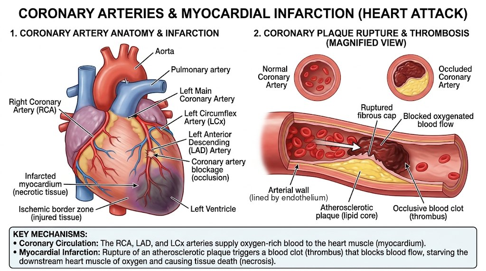
Coronary arteries and an LAD occlusion. Usual ECG territories: LAD, V1–V4 (anterior); RCA, II, III, aVF (inferior); circumflex, I, aVL, V5–V6 (lateral). AI-generated illustration.
Two arteries arise from the aortic root and supply everything.
| Artery | Supplies | Occlusion consequences |
|---|---|---|
| Left main | Divides into the LAD and left circumflex | Catastrophic — supplies the majority of the LV. Often presents with ST elevation in aVR with diffuse ST depression. Very high mortality; emergent revascularization. |
| Left anterior descending (LAD) | Anterior wall, anterior two-thirds of the interventricular septum, apex, and (via septal perforators) the bundle branches | Largest infarct territory. Anterior MI → pump failure, cardiogenic shock, and infranodal blocks (Mobitz II, new BBB) — these blocks are ominous and often need pacing. |
| Left circumflex (LCx) | Lateral and posterolateral LV; supplies the SA node in ~40% and the AV node in ~10% | Lateral MI. More often "electrically silent" on a standard 12-lead — a reason posterior leads matter. |
| Right coronary artery (RCA) | Right atrium, right ventricle, inferior wall; supplies the SA node in ~60% and the AV node in ~90%; gives off the posterior descending artery in right-dominant circulation (~85% of people) | Inferior MI → bradyarrhythmias and AV nodal blocks (usually Wenckebach, usually transient and atropine-responsive) plus RV infarction. Also papillary muscle involvement. |
A pathologic Q wave is a negative deflection at the start of the QRS that is ≥0.04 sec (1 small box) wide and/or >25% of the height of the following R wave, in a lead where it doesn't belong.
| Complication | Typical timing | Recognition & nursing implications |
|---|---|---|
| Arrhythmias | Immediate to days | The most common early complication and the leading cause of pre-hospital death. VF/VT (especially first hours), AF, bradyarrhythmias and blocks (inferior), AIVR with reperfusion. Continuous telemetry, K+ ≥4.0 and Mg++ repleted, defibrillator accessible. |
| Cardiogenic shock | Hours to days | Usually large anterior MI with >40% LV involvement. See 22.14. The leading cause of in-hospital death after MI. |
| Acute heart failure / pulmonary edema | Hours to days | New crackles, hypoxia, S3, rising oxygen requirement. Killip classification stratifies this and predicts mortality. |
| Papillary muscle rupture → acute MR | 2–7 days | Usually inferior MI (posteromedial papillary muscle has a single blood supply). Sudden severe dyspnea and pulmonary edema, new holosystolic murmur, large v waves on PAOP. Surgical emergency. |
| Ventricular septal rupture | 3–5 days | Sudden hemodynamic collapse with a new harsh holosystolic murmur and thrill; oxygen "step-up" between RA and RV on PAC sampling. Surgical emergency. |
| Free wall rupture | 3–7 days | Sudden tamponade, PEA arrest, death. Frequently unsurvivable. Risk factors include first MI, late presentation, and steroids/NSAIDs. |
| Pericarditis | 2–4 days (early); Dressler's weeks later | Pleuritic chest pain worse lying flat, better sitting forward, friction rub, diffuse ST elevation with PR depression. Treated with aspirin/colchicine — NSAIDs and steroids are generally avoided early post-MI (impaired healing, rupture risk). |
| LV aneurysm | Weeks | Persistent ST elevation weeks after MI is the classic clue. Risk of thrombus, heart failure, arrhythmia. |
| LV mural thrombus / embolism | Days to weeks | Especially with large anterior MI and apical akinesis. Stroke risk — anticoagulation often added. |
| RV infarction | With inferior MI | Hypotension + JVD + clear lungs. Fluid-responsive; nitrates and diuretics are dangerous. |
| Reinfarction / stent thrombosis | Any time | Recurrent pain with new ECG changes and re-rising troponin. Stent thrombosis is often a dramatic STEMI. Ask about DAPT adherence. |
Practical note: days 3–7 post-MI are the mechanical complication window. A patient who was stable and suddenly develops a new murmur, sudden dyspnea, or abrupt hemodynamic collapse in that window needs an urgent echo and a surgical conversation. Listen to hearts. New murmurs in a post-MI patient are a nursing finding that changes everything.
Cardiogenic shock is a state of inadequate tissue perfusion caused by primary cardiac dysfunction despite adequate or elevated filling pressures. Acute MI — typically large anterior infarction — is the most common cause; others include decompensated chronic heart failure (an increasingly large share), myocarditis, valve failure, arrhythmia, tamponade, and post-cardiotomy states. Mortality remains high (roughly 30–50% in contemporary series).
Working definition: sustained hypotension (commonly SBP <90 for ≥30 minutes or requiring support to maintain it) plus evidence of end-organ hypoperfusion — cool extremities, mottling, oliguria (<30 mL/hr), altered mentation, elevated lactate — with adequate or raised filling pressures.
What you'll see at the bedside: cold, clamped, and wet. Narrow pulse pressure, cool mottled extremities, rising lactate, falling urine output, dropping ScvO2, crackles and hypoxia, JVD, an S3, and often a rising creatinine and transaminases (cardiorenal and congestive hepatopathy).
The Society for Cardiovascular Angiography and Interventions staging system is now the standard shared language, and each stage carries a distinct mortality. Its practical value is that it lets you communicate trajectory, not just a snapshot — and it's designed so nurses can apply it.
| Stage | Name | Description |
|---|---|---|
| A | At risk | No current signs of shock, but at risk — e.g., large MI, acute decompensated heart failure.7 Normal perfusion, normal labs. |
| B | Beginning (pre-shock) | Hypotension or tachycardia without hypoperfusion. Normal lactate, warm extremities, normal mentation. This is the window where recognition changes outcomes. |
| C | Classic | Hypoperfusion requiring intervention beyond volume — inotropes, vasopressors, or mechanical support. Cold, wet, elevated lactate, oliguria, altered mentation. |
| D | Deteriorating | Failing to respond — requiring escalation of support (more drugs, more devices) without improvement over ~30 minutes. |
| E | Extremis | Circulatory collapse, often with refractory cardiac arrest, ongoing CPR, or maximal multi-device support. Highest mortality. |
A modifier for cardiac arrest is applied on top of the stage, since arrest independently worsens prognosis. Older systems you may still hear: the Killip class (I–IV, based on clinical heart failure findings post-MI) and the Forrester classification (four quadrants of cardiac index vs. PAOP — "warm and dry," "warm and wet," "cold and dry," "cold and wet").
Why this matters to you: the point of staging is early detection at stage B. A patient who is tachycardic and marginally hypotensive but still warm with a normal lactate is far more salvageable than the same patient six hours later. Reporting "I think he's moving from SCAI B to C — his lactate is up and his extremities are getting cool" is a sentence that mobilizes a team.
| Parameter | Direction | Typical value / explanation |
|---|---|---|
| Cardiac index (CI) | ↓↓ | <2.2 L/min/m2 (often <1.8 without support) — the failing pump |
| SVR | ↑ | >1200 — compensatory vasoconstriction; the "cold and clamped" exam |
| PAOP (LV preload) | ↑ | >15–18 mmHg — blood backing up behind the failing LV; causes pulmonary edema |
| CVP / RAP | ↑ | Elevated, markedly so with RV involvement |
| MAP | ↓ | Despite high SVR, because output is so low |
| Pulse pressure | Narrow | Low stroke volume — a bedside tell |
| ScvO2 / SvO2 | ↓ | <60% — tissues extracting more because delivery is low. Often falls before the blood pressure does. |
| Lactate | ↑ | Anaerobic metabolism; failure to clear predicts mortality |
| Urine output | ↓ | <0.5 mL/kg/hr |
| Cardiac power output (CPO) | ↓ | <0.6 W — see below. The strongest single hemodynamic predictor of mortality in cardiogenic shock. |
| PAPi | ↓ with RV failure | <0.9–1.0 suggests RV failure |
Contrast with septic shock, where CI is high or normal and SVR is low. Mixed shock — a septic patient with a cardiomyopathy, or a cardiogenic patient who becomes infected — is common and is why the numbers don't always fit a textbook pattern.
These two derived numbers are the ones the shock team will ask for, and they answer two different questions: how bad is the left side? and is the right side failing too?
CPO (Watts) = (MAP × CO) / 451. It combines pressure and flow into a single measure of the heart's hydraulic pumping work — which is why it outperforms either number alone.
PAPi = (PA systolic − PA diastolic) / RAP — that is, PA pulse pressure divided by right atrial pressure. It reflects the RV's ability to generate pulsatile flow against its own filling pressure.
MCS devices temporarily take over some of the heart's work to maintain perfusion while the heart recovers, or as a bridge to a decision, to a durable device (LVAD), or to transplant. They are ordered along a spectrum of support and invasiveness.
| Device | Support provided | Ventricle | Mechanism / role |
|---|---|---|---|
| IABP | Modest (~0.5–1 L/min equivalent) | LV | Counterpulsation — augments coronary perfusion and reduces afterload. Least invasive, most widely available. |
| Impella (2.5, CP, 5.0/5.5, RP) | Moderate to high (~2.5–5.5 L/min depending on model) | LV (or RV with Impella RP) | Micro-axial pump that actively unloads the ventricle and delivers flow forward. |
| TandemHeart | Up to ~4 L/min | LV or RV | Extracorporeal centrifugal pump with transseptal LA-to-femoral-artery bypass. |
| VA-ECMO | Full cardiopulmonary support | Both + lungs | Complete bypass of heart and lungs. Most support, most complications. |
| Durable LVAD | Full LV support, long-term | LV | Implanted; destination therapy or bridge to transplant. |
Universal nursing themes across all MCS: anticoagulation and its bleeding complications; hemolysis (monitor plasma-free hemoglobin, LDH, haptoglobin, and watch for cola-colored urine); limb ischemia distal to large-bore arterial cannulas (frequent, documented neurovascular checks — this is a nursing responsibility that saves limbs); infection at insertion sites; device migration with position changes and transport; strict HOB and hip/leg positioning limits; thrombocytopenia; and the reality that the device does not fix the underlying problem. Also: these patients often have diminished or absent pulses and non-pulsatile flow, so pulse oximetry and cuff pressures may be unobtainable — arterial line MAP becomes the reference.
A balloon on a catheter positioned in the descending thoracic aorta, ideally just distal to the left subclavian artery and above the renal arteries. It works by counterpulsation, timed to the cardiac cycle.
| Phase | Timing | Physiologic effect |
|---|---|---|
| Inflation | Early diastole, at the dicrotic notch (aortic valve closure) | Displaces blood backward → ↑diastolic pressure ("diastolic augmentation") → ↑coronary artery perfusion, and forward → improved systemic perfusion |
| Deflation | Just before systole (immediately prior to aortic valve opening) | Creates a vacuum effect → ↓afterload, ↓LV wall stress, ↓myocardial oxygen demand, ↑stroke volume |
Net effect: increased oxygen supply and decreased oxygen demand simultaneously — which is why it's useful in ischemic cardiogenic shock and refractory angina. Note that IABP has not demonstrated a mortality benefit in MI-related cardiogenic shock in randomized trials (IABP-SHOCK II), which is why its use has declined and why it's not a guideline-mandated therapy.8
Indications: cardiogenic shock (selected), refractory ischemia, mechanical complications of MI (acute MR, VSD) as a bridge to surgery, high-risk PCI, and refractory ventricular arrhythmias from ischemia.
Contraindications: aortic regurgitation (augmentation worsens regurgitation — absolute), aortic dissection or aneurysm, severe peripheral vascular disease, uncontrolled sepsis, and aortic stents/grafts.
Timing is assessed on the arterial waveform in 1:2 mode, so you can compare assisted and unassisted beats side by side. Correct timing shows: inflation exactly at the dicrotic notch, diastolic augmentation higher than the unassisted systolic peak, an assisted end-diastolic pressure lower than the unassisted end-diastolic pressure, and an assisted systolic peak lower than the unassisted systolic.
| Error | Waveform appearance | Consequence |
|---|---|---|
| Early inflation | Inflation before the dicrotic notch — the augmentation wave encroaches on the systolic peak; the notch is buried | The dangerous one. The balloon inflates while the aortic valve is still open — premature valve closure, increased afterload and LV wall stress, decreased stroke volume, increased myocardial oxygen demand, and potential aortic regurgitation. Fix immediately. |
| Late inflation | Inflation well after the dicrotic notch; a prolonged dip or "U" appears between the notch and augmentation; augmentation is blunted and may not exceed the unassisted systolic | Suboptimal — reduced coronary perfusion augmentation. Not immediately dangerous, but you're not getting the therapy. |
| Early deflation | A sharp, widened U-shaped drop after augmentation, with pressure rising again before the next systole; assisted end-diastolic pressure is not meaningfully lower than unassisted | Suboptimal — afterload reduction is lost, and retrograde coronary and carotid flow can occur. Less dangerous, but ineffective. |
| Late deflation | Assisted end-diastolic pressure is equal to or higher than unassisted end-diastolic; the assisted systolic upstroke is prolonged and widened | The other dangerous one. The balloon is still inflated when the aortic valve opens — the ventricle ejects against an inflated balloon. Markedly increased afterload and myocardial oxygen demand, decreased stroke volume. Fix immediately. |
Figure 22-1. IABP timing on the arterial waveform in 1:2 mode. Top: correct timing. Bottom: the four timing errors; the dashed line marks the unassisted end-diastolic pressure. Early inflation and late deflation are the harmful ones, because the ventricle works against the balloon. Original drawing; values illustrative, not to scale.
A catheter-mounted micro-axial flow pump placed retrograde across the aortic valve (for LV support), with the inlet in the left ventricle and the outlet in the ascending aorta. It continuously pulls blood from the LV and ejects it into the aorta — actively unloading the ventricle, which is a meaningful difference from the IABP's passive counterpulsation.
| Alarm | Likely cause | Nursing response |
|---|---|---|
| Suction | The inlet is up against the ventricular wall or septum, or there isn't enough volume in the LV for the flow being demanded. Diastolic suction events usually mean inadequate preload; continuous suction usually means malposition or thrombus. | Reduce the P-level by 1–2 (generally not below P-2) as the console instructs. Then assess: is the patient hypovolemic (CVP or PAOP <10)? Consider volume per order. Is the RV failing and underfilling the LV? Is the patient in a position that shifted the device? Evaluate position — repositioning requires imaging and a provider. Watch for the warning signs of impending suction: falling flows, reduced mean motor current, and dropping blood pressure. |
| Impella position wrong / "Impella in ventricle" or "in aorta" | Migration — commonly from hip flexion, patient movement, transport, or coughing | Reduce the P-level (often to P-2) to limit harm, ensure the leg is straight and the HOB is down, notify the provider immediately, and prepare for echo or fluoroscopy for repositioning. Do not attempt to reposition the catheter yourself unless that is explicitly within your institution's trained scope. |
| Purge pressure LOW | A leak or loose connection in the purge system, or the purge cassette/tubing is compromised | Inspect the entire purge circuit for disconnections and leaks; tighten connections; check the purge bag volume and that it's correctly spiked and hung. |
| Purge pressure HIGH | Obstruction — kinked tubing, a kinked sidearm, or thrombus in the purge lumen | Check the entire line for kinks; ensure the purge sidearm is straight and not compressed by dressings or positioning. |
| Air in purge system | Air entrained, often from an incorrectly positioned or empty purge bag | Ensure the dextrose bag is upright and not empty; follow the console prompts to de-air per protocol; escalate. |
| Placement signal lost / motor current abnormal | Migration, thrombus, sensor problem, or the device is fully in one chamber | Assess the patient first — perfusion, MAP, flows. Notify the provider. Anticipate echo. |
| Low flow / flow reduced | Suction, hypovolemia, malposition, high afterload, thrombus, or RV failure | Work through the same list: volume status, position, afterload, RV function. Correlate with the patient's actual perfusion — MAP, lactate, urine output, mentation. |
| Pump stopped, or flow very low | Controller or power failure, the pump turned to P-0 or a very low P-level, or thrombus | With flow below about 0.5 L/min, blood runs backward through the catheter from the aorta into the LV, like acute aortic regurgitation (manufacturer IFU).10 Call for help and the device team now, restart per the console prompts, and keep the pump at P-2 or higher while it sits in the ventricle unless the team is removing it. Support the patient while you wait. |
VA-ECMO drains deoxygenated blood from the venous system, pumps it through an oxygenator (which oxygenates and removes CO2), and returns it into the arterial system — bypassing both the heart and the lungs. It provides full cardiopulmonary support.
ECMO patients are managed by dedicated, specially trained teams with a specialist at the bedside or immediately available. Nothing in this section suggests a new graduate should manage one independently. The value in knowing it is recognition, safe transport participation, and understanding what happens to the patient you transfer out.
| Type | EF | Characteristics |
|---|---|---|
| HFrEF (systolic) | ≤40% | Impaired contraction. Dilated, weak ventricle. Has the most robust guideline-directed medical therapy and the clearest mortality benefits. |
| HFmrEF (mildly reduced) | 41–49% | Intermediate; increasingly treated similarly to HFrEF. |
| HFpEF (diastolic) | ≥50% | Impaired relaxation and filling — a stiff ventricle. Associated with hypertension, obesity, diabetes, AF, aging. Fewer proven therapies historically; SGLT2 inhibitors now have evidence. These patients are preload-sensitive in both directions — they decompensate with volume and also tolerate aggressive diuresis poorly. |
Left-sided failure backs up into the lungs: dyspnea, orthopnea, paroxysmal nocturnal dyspnea, crackles, S3, pink frothy sputum in flash pulmonary edema. Right-sided failure backs up into the systemic venous system: JVD, peripheral edema, hepatomegaly, ascites, weight gain, and often nausea and early satiety from gut congestion. Right-sided failure is most often caused by left-sided failure.
Guideline-directed medical therapy for HFrEF now rests on four pillars, each with mortality benefit:11 ARNI (or ACE inhibitor/ARB), beta blocker (carvedilol, metoprolol succinate, or bisoprolol), mineralocorticoid receptor antagonist (spironolactone, eplerenone), and SGLT2 inhibitor. Diuretics relieve symptoms but do not confer mortality benefit. Knowing this framework helps you understand why a team fights to keep these medications on board even when blood pressure is marginal.
BNP / NT-proBNP rises with ventricular wall stretch and supports the diagnosis, but interpret with care: it is elevated in renal failure, AF, PE, sepsis, and advancing age, and it is falsely low in obesity. Patients on sacubitril/valsartan have altered BNP interpretation — NT-proBNP is used instead.
Documentation: daily weights and strict intake and output, every day. If it is not documented correctly, the team cannot see the trend.
Classify the patient using the perfusion/congestion framework — it directly drives therapy:
| Profile | Findings | Approach |
|---|---|---|
| Warm and wet (most common) | Congested but perfusing — dyspnea, edema, JVD, crackles; warm extremities, adequate BP | Diuresis ± vasodilators. IV loop diuretic; consider nitroglycerin for pulmonary edema and hypertension. |
| Cold and wet | Congested and hypoperfused — the most dangerous common profile | Cautious diuresis, plus inotropes and often vasopressors. This is where acute HF becomes cardiogenic shock. |
| Warm and dry | Compensated | Optimize oral therapy; look for another cause of symptoms. |
| Cold and dry | Hypoperfused without congestion — uncommon | Cautious volume, then inotropes if it doesn't help. |
Follow ACLS. You're already certified, so this covers the nursing-specific layer.
As the primary nurse in a code on your own patient, you usually are not the best person on the chest. You are the person who knows the story: the history, the recent events, the labs, the drips, the code status, the allergies, and the timeline. Give that to the code leader clearly. Other essential roles: medication administration, documentation/recorder (this is a genuinely difficult and important job), family presence support, and running for equipment. Learn early who does what on your unit and say out loud what role you're taking.
Also: verify code status early on every patient, every shift. Running a full code on a patient with a DNR order, or failing to resuscitate someone who wanted it, are both preventable tragedies that trace back to documentation nobody checked. And support family presence during resuscitation if your institution permits it — evidence supports it, and it requires a dedicated staff member.
ROSC is the beginning, not the end. Post-arrest syndrome involves brain injury, myocardial dysfunction, systemic ischemia-reperfusion injury, and the persistent underlying cause. Most post-arrest deaths are from neurologic injury or withdrawal of care, which is why this phase matters so much.
| Domain | Management |
|---|---|
| Oxygenation | Titrate FiO2 to a normal saturation (commonly 92–98%).12 Avoid hyperoxia — leaving a patient on 100% oxygen after ROSC worsens reperfusion injury. |
| Ventilation | Target normocapnia (PaCO2 roughly 35–45). Avoid routine hyperventilation, which causes cerebral vasoconstriction; avoid hypercapnia, which raises ICP. |
| Hemodynamics | Avoid hypotension: the 2025 AHA guideline sets a MAP of at least 65 mmHg (some teams aim higher), and SBP below 90 is avoided.12 Fluids, vasopressors, inotropes as needed. Post-arrest myocardial stunning is expected and usually recovers over 24–72 hours. |
| Temperature control | Current AHA guidance supports selecting and maintaining a constant temperature between 32°C and 37.5°C for comatose survivors, maintained for at least 36 hours (2025 AHA guidelines; prehospital cooling isn't recommended), followed by active fever prevention.12,13 The TTM2 trial found no benefit of hypothermia over normothermia with fever prevention, which broadened the acceptable range — but preventing fever remains clearly important.14 Nursing: continuous core temperature monitoring (esophageal, bladder, or intravascular), shivering assessment and management (shivering raises metabolic demand and defeats the therapy — counterwarming, sedation, analgesia, magnesium, and paralytics per protocol), and slow controlled rewarming per policy. |
| Coronary angiography | Emergent for STEMI on the post-ROSC ECG; strongly considered for suspected cardiac cause even without ST elevation, based on the clinical picture. Get a 12-lead as soon as possible after ROSC. |
| Glucose & electrolytes | Avoid both hypo- and marked hyperglycemia. Replete K+ and Mg++ — post-arrest patients are arrhythmia-prone. |
| Seizure management | Seizures and non-convulsive status epilepticus are common and often invisible. Continuous EEG monitoring is recommended for comatose post-arrest patients. Treat seizures; don't assume a still, sedated patient isn't seizing. |
| Neuroprognostication | Multimodal and deliberately delayed. Guidelines advise waiting at least 72 hours after ROSC (and longer if sedation, paralytics, hypothermia, renal or hepatic dysfunction confound the exam) before prognosticating, using a combination of clinical exam, EEG, somatosensory evoked potentials, biomarkers (e.g., neuron-specific enolase), and imaging — never a single finding. Early pessimism becomes a self-fulfilling prophecy. When families ask you at 0300 whether he'll wake up, the honest and correct answer is that it's too early to know and the team will assess it over the coming days. |
| Family | They are in crisis and you are often the only person there. Frequent, plain-language updates. Involve chaplaincy, social work, and palliative care early — palliative involvement is not giving up. |
Fluid accumulating in the pericardial sac raises intrapericardial pressure until the heart cannot fill. It's a form of obstructive shock and it is reversible — which is why recognizing it matters enormously.
Causes: malignancy, uremia, infection, post-MI free wall rupture, aortic dissection, trauma, post-procedural (central line placement, pacemaker lead perforation, PCI, pericardiocentesis), connective tissue disease, and anticoagulation.
Physiology point that explains everything: it's the rate of accumulation, not the volume. A rapidly accumulating 150 mL can be lethal, while a slowly accumulating liter may be tolerated, because a stretched pericardium accommodates.
Thrombus — usually from a lower-extremity DVT — lodges in the pulmonary arterial tree, causing increased pulmonary vascular resistance, RV strain, and impaired gas exchange. Death in PE is from right ventricular failure.
Risk factors (Virchow's triad): stasis (immobility, surgery, long travel, critical illness), hypercoagulability (malignancy, pregnancy, estrogen, inherited thrombophilia, COVID, sepsis), and endothelial injury (trauma, surgery, central lines). Nearly every ICU patient has at least two — which is why VTE prophylaxis is a bundle element you should never let lapse.
Presentation: sudden dyspnea, pleuritic chest pain, tachycardia, tachypnea, hypoxemia, hemoptysis, anxiety, syncope, or unexplained shock. Sudden unexplained hypoxia and tachycardia in a hospitalized patient should always raise PE. The ECG classically shows sinus tachycardia; S1Q3T3 is famous but uncommon; new right heart strain patterns and T-wave inversions in V1–V4 are more meaningful. CT pulmonary angiography is the standard diagnostic test; D-dimer is useful for ruling out in low-probability patients and is nonspecific in the ICU. Echo showing RV dilation and dysfunction is central to risk stratification.
The 2026 AHA/ACC guideline (the first AHA/ACC acute PE guideline, February 2026) replaced the old massive/submassive terms with five clinical categories.18 You will still hear the 2019 ESC risk classes, shown in the second table.
| AHA/ACC 2026 category | Definition | Management direction |
|---|---|---|
| A Asymptomatic | Incidental PE (for example on a cancer staging CT) with no PE symptoms | Individualized; evidence still emerging |
| B Symptomatic, low severity | Low severity score (PESI 85 or less, sPESI 0, or Bova 4 or less) | Often home treatment with an oral anticoagulant; a DOAC is preferred over warfarin in most patients |
| C Symptomatic, elevated severity | Elevated score (PESI above 85, sPESI 1 or more, or Bova above 4); C3 has more RV imaging and biomarker abnormalities | Hospital monitoring and anticoagulation; reperfusion therapy has unclear benefit (class 2b in C3) |
| D Incipient cardiopulmonary failure | D1: transient hypotension (for example syncope). D2: normotensive shock (rising lactate, AKI) | Systemic thrombolysis, catheter-directed therapy, mechanical thrombectomy, or surgery may be considered (class 2b) |
| E Persistent hypotension or cardiopulmonary failure | E1: persistent or recurrent hypotension, cardiogenic shock. E2: refractory shock, often cardiac arrest ("catastrophic PE"). Formerly "massive" or high-risk PE | Urgent reperfusion: systemic thrombolysis, catheter-directed therapy, or mechanical thrombectomy (class 2a, no longer systemic lysis first by default); mechanical support in selected patients |
A respiratory modifier is added to categories C to E when oxygenation is significantly impaired. A PE response team (PERT) assessment is recommended for categories C to E.18 LMWH is preferred over unfractionated heparin for parenteral anticoagulation in categories C to E1.18
| ESC risk category | Older US term (before 2026) | Defining features | Management direction |
|---|---|---|---|
| High risk | Massive | Hemodynamic instability — cardiac arrest, obstructive shock, or persistent hypotension (commonly SBP <90 for >15 min or requiring vasopressors) not from another cause | Anticoagulation plus reperfusion: systemic thrombolysis, catheter-directed therapy, or surgical embolectomy. VA-ECMO in selected cases. Mortality is high. |
| Intermediate-high risk | Submassive | Hemodynamically stable, but both RV dysfunction (on echo or CT) and elevated cardiac biomarkers (troponin, BNP); elevated PESI class III–V | Anticoagulation with close monitoring in a higher-acuity setting; rescue reperfusion if the patient deteriorates. This is the group that decompensates — and often the group you're watching overnight. |
| Intermediate-low risk | Stable, with either RV dysfunction or elevated biomarkers, but not both | Anticoagulation; monitored setting. | |
| Low risk | Low-risk | Stable, no RV dysfunction, normal biomarkers, low PESI/sPESI | Anticoagulation; some patients are candidates for early discharge or outpatient management. |
The PESI and simplified PESI (sPESI) scores use clinical variables (age, cancer, heart failure, chronic lung disease, heart rate, blood pressure, oxygen saturation) to predict 30-day mortality and are part of the stratification. Many hospitals have a PERT (Pulmonary Embolism Response Team) for rapid multidisciplinary decision-making — find out whether yours does and how it's activated.
| Right heart cath (RHC) | Left heart cath (LHC) | |
|---|---|---|
| System used | Venous | Arterial |
| Common access | Femoral vein, a brachial or antecubital vein (the patient needs IV access in the middle of the elbow of the arm to be used, plus another IV elsewhere), or the internal jugular | Radial artery (wrist) or femoral artery (groin) |
| What is done | A PA (Swan-Ganz) catheter is floated through the RA and RV into the PA; pressures and saturations are measured on the way in and out (RA, RV, PA, PAWP, CO, a saturation run for shunts). It may stay in or come out. | Catheters engage the coronary ostia; contrast is injected to look for coronary disease; a catheter in the LV measures LVEDP and compares LV with aortic pressure (aortic valve).19 Significant lesions can be treated with balloons and stents (PCI). |
| Common indications | Pulmonary hypertension; heart failure (acute, exacerbation, new onset; transplant or LVAD evaluation); valve disease; tamponade; shunts; complications of ACS; fluid status in kidney or liver disease; acute PE; chronic lung disease | ACS and MI; coronary artery disease; new heart failure; valve disease; new arrhythmias (for example new AF, VT, or after a code); congenital disease; pre-surgical evaluation |
| Question | RHC | LHC | Why |
|---|---|---|---|
| The patient took home warfarin or a DOAC. Is that OK? | Notify the provider; practice varies because it is a venous procedure. | Generally no, unless emergent: notify the provider. | Arterial access bleeds more, so anticoagulants are usually held before a LHC. |
| Give SC or IV heparin or enoxaparin before? | Usually yes, but verify the order or clarify. | Review the orders or clarify with the provider. | Indication and dosing decide. |
| Aspirin and a P2Y12 inhibitor (clopidogrel, ticagrelor)? | Okay to give. | Highly recommended to give, per the order. | They help prevent thrombosis during stenting. |
| Extra IV fluid? | Usually not needed. | Often ordered before and after to lower the risk of contrast-associated AKI. | Contrast is nephrotoxic. Fluids may be withheld or limited in ESRD or decompensated HF: ask the provider. |
After either: access-site checks and distal circulation (Section 15, including the TR Band and FemoStop), vital signs on the post-procedure schedule, bed rest or activity per access site and closure method, creatinine trend after contrast, and any medication holds after contrast per protocol (for example metformin in kidney impairment).
A left ventricular assist device (for example the HeartMate 3, the durable LVAD now implanted in the US; the HeartWare HVAD was withdrawn in 2021, but some patients still have one) is a continuous-flow pump from the LV apex to the aorta, powered through a driveline that exits the abdomen. These patients may come to any ICU with bleeding, infection, stroke, arrhythmia, or device problems. Call the patient's VAD coordinator and the implanting center early.
| Topic | What is different |
|---|---|
| Pulse and BP | Often no palpable pulse; cuff and pulse oximetry can fail. Measure MAP with a Doppler and manual cuff (the first sound heard approximates the MAP) or an arterial line. Typical MAP goal about 70–90 mmHg per the center. |
| Controller values | Speed (rpm, fixed), flow (L/min, estimated), power (watts), and pulsatility index. Rising power with flow suggests pump thrombosis; low flow with low pulsatility suggests low preload (bleeding, dehydration, RV failure) or a suction event; low flow can also mean high afterload (hypertension). |
| Low-flow alarm | Check the patient first: MAP (hypertension lowers flow; a high MAP is a problem on a continuous-flow pump), bleeding and hemoglobin, volume status, RV failure, arrhythmia, and tamponade. Check the controller and connections. Never change the speed yourself; call the VAD team. |
| Suction events | The LV collapses around the inflow: ventricular arrhythmias, low flow. Usually treated with fluids and correcting the cause. |
| Anticoagulation | Warfarin (INR goal per center, often 2–3). Aspirin was routine, but many centers now omit it with the HeartMate 3 after the ARIES-HM3 trial;20 follow the center. GI bleeding (from AV malformations) and stroke are common. |
| Driveline | Sterile dressing changes per protocol; secure it so it cannot be pulled; infection is a major complication. |
| Power | Never disconnect both power sources at once; keep spare batteries and the backup controller with the patient. |
This subsection is the layer under the rhythm tables. 22.1 gives the normal ECG numbers and 22.2 names each rhythm; here is why they look the way they do. It covers the two kinds of heart cell and their action potentials, the channel each antiarrhythmic class works on, the three ways an arrhythmia starts, the wiring of the heart and the arteries that feed it, refractory periods, what each ECG interval is measuring inside the cell, and what potassium, magnesium, calcium, ischemia, pH and QT-prolonging drugs do to all of it. You do not need to recite ion currents at the bedside. You need them once, so that a wide QRS, a long QT or a drug that “works at the AV node” means something. 22.34 then uses this for the fast rhythms.
| At a glance | Electrophysiology in five lines |
|---|---|
| Two cell types | Working cells (atria, ventricles, Purkinje fibers) fire on sodium and conduct fast. Pacemaker cells (SA and AV nodes) fire on calcium and conduct slowly. |
| Three ions | Sodium in = the QRS. Calcium in = the plateau, the squeeze, and conduction through the AV node. Potassium out = the T wave and the QT. |
| Three mechanisms | Automaticity (a focus fires on its own), triggered activity (an extra beat set off by the beat before), re-entry (an impulse running in a circle). |
| Two refractory periods | Absolute: nothing gets through. Relative (the T wave): a beat can get through and can start VF. |
| Your part | Measure the intervals the same way each time, know the potassium and magnesium, know which drugs on the MAR touch which channel, and say what you see. |
What is an action potential?
A heart cell at rest is a tiny battery, negative inside. An action potential is that voltage flipping to positive and coming back, as channels in the cell wall open and close in a fixed order and let ions through. One action potential is one beat of that cell. The ECG is the sum of millions of them.
The working cells of the atria and ventricles rest at a stable, strongly negative voltage, about 85 millivolts below zero, held there mainly by one potassium current (IK1).22 Their action potential has five phases: a fast upstroke carried by sodium rushing in (phase 0), a brief early dip as a potassium current opens (phase 1), a long plateau in which calcium coming in is balanced by potassium going out (phase 2), repolarization as the calcium channels close and the delayed potassium currents IKr and IKs carry the cell back down (phase 3), and rest (phase 4).22
At the bedside: phase 0 across the ventricles is the QRS, the plateau is the ST segment, and phase 3 is the T wave. Anything that slows sodium entry widens the QRS. Anything that slows potassium exit lengthens the QT. Those two sentences explain most of the drug and electrolyte effects in this subsection.
How are pacemaker cells different?
Cells of the SA node have no stable resting voltage: after each beat the voltage drifts slowly upward until it reaches threshold and the cell fires again, and that slow diastolic drift is what makes them pacemakers.23 A large part of the drift comes from the “funny” current (If), which switches on as the cell repolarizes; sympathetic stimulation increases it and speeds the rate, and vagal stimulation decreases it and slows the rate.23 The upstroke of a nodal cell is carried by the slower L-type calcium current instead of the fast sodium current, which is why impulses cross the AV node slowly.22
Evidence is mixed. How much of the pacemaker drift comes from the funny current in the cell wall and how much from rhythmic calcium release inside the cell is still debated.23 It does not change what you do.
At the bedside: this is why the drugs sort the way they do. Beta blockers, calcium channel blockers (diltiazem, verapamil), digoxin and adenosine slow the SA and AV nodes because nodal cells run on calcium and autonomic tone. Lidocaine, a sodium channel blocker, does nothing to a nodal rhythm. A drug that blocks sodium channels shows up as a wider QRS; a drug that works at the node shows up as a slower rate or a longer PR.
| Phase | Working cell (atrium, ventricle, Purkinje) | Pacemaker cell (SA, AV node) | On the ECG |
|---|---|---|---|
| 4 | Flat rest; potassium holds it | Slow upward drift (funny current, calcium) | Baseline between beats; the slope sets the heart rate |
| 0 | Sodium in, very fast | Calcium in, slower | Ventricles: the QRS. AV node: part of the PR interval |
| 1 | Brief potassium dip | None | The J point |
| 2 | Plateau: calcium in, potassium out | None | ST segment |
| 3 | Potassium out | Potassium out | T wave; the end of the QT |
How do the Vaughan Williams classes map onto the action potential?
Each class is named for the channel or receptor it acts on. 21.11 has the full table with the drugs and their nursing points; this is the short map.
| Class | Target | What it does to the cell | What you see |
|---|---|---|---|
| I | Sodium channel | Slows phase 0 in working cells, so the impulse travels more slowly | Wider QRS (most with Ic, least with Ib); Ia also lengthens the QT |
| II | Beta receptor | Flattens the phase 4 drift and slows calcium entry in the nodes | Slower sinus rate, longer PR |
| III | Potassium channel (mainly IKr) | Slows phase 3, so the cell stays refractory longer | Longer QT |
| IV | L-type calcium channel | Slows the nodal upstroke | Slower sinus rate, longer PR, slower ventricular rate in AF |
The classes group drugs by their main target: sodium channel block (I), beta blockade (II), potassium channel block that prolongs repolarization (III) and calcium channel block (IV).24 Many drugs act on more than one target, and a modernized classification published in 2018 adds classes for drugs the original scheme left out, including a class for ivabradine, which blocks the funny current.24 Adenosine works through its own receptor on nodal cells, opening a potassium channel that briefly holds the cell negative and stops conduction through the AV node.24
At the bedside: read the class off the monitor. On a sodium channel blocker (procainamide, flecainide, or an overdose of a tricyclic antidepressant), watch the QRS width. On a potassium channel blocker (amiodarone, sotalol, dofetilide, ibutilide), watch the QTc. On a nodal drug, watch the rate, the PR interval and the blood pressure. Measure before the first dose so you have a baseline to compare with.
Why do sodium channel blockers act more at fast rates, and QT-prolonging drugs more at slow rates?
Sodium channel blockers bind to channels that are open or inactivated and come off between beats, so the faster the rate, the more channels stay blocked; the class Ic drugs come off slowest and class Ib fastest.24 That is called use dependence, and it is why a patient on flecainide can show a much wider QRS when the heart rate climbs.
Drugs that block IKr do the opposite: they prolong repolarization most when the heart rate is slow, so the QT lengthens further during bradycardia and after a pause.25 That is why torsades tends to start after a pause (22.2).
The evidence: The Cardiac Arrhythmia Suppression Trial gave encainide, flecainide or placebo to 1,498 survivors of myocardial infarction whose ventricular ectopy the drugs had suppressed; after a mean of 10 months, 63 patients on the drugs and 26 on placebo had died or had a cardiac arrest.26 Fewer ectopic beats on the monitor did not mean fewer deaths. It is the reason class Ic drugs are avoided in structural heart disease (21.11) and the reason nobody treats asymptomatic PVCs with an antiarrhythmic.
What are the three mechanisms?
Arrhythmias come from abnormal impulse formation (automaticity or triggered activity), from abnormal impulse conduction (re-entry), or from both together.27
| Mechanism | What is happening | Examples | How it behaves |
|---|---|---|---|
| Automaticity | A group of cells reaches threshold on its own, faster than it should, or cells that are not pacemakers start to fire | Sinus tachycardia, multifocal atrial tachycardia, accelerated junctional rhythm, accelerated idioventricular rhythm | Warms up and cools down; follows the cause (fever, catecholamines, hypoxia) |
| Triggered activity | An extra depolarization rides on the back of a normal beat: early (during phase 2 or 3) or delayed (after the beat is over) | Early: torsades de pointes with a long QT. Delayed: digoxin toxicity, catecholamine excess | Depends on the beat before; early type is worse after a pause, delayed type is worse at fast rates |
| Re-entry | An impulse travels around a circuit and re-excites tissue that has already recovered | AVNRT, AVRT (accessory pathway), atrial flutter, VT from an old infarct scar | Starts and stops abruptly; rate is fixed and regular |
Enhanced automaticity is a normal pacemaker firing faster, as the SA node does under sympathetic drive, and abnormal automaticity is firing from atrial or ventricular cells that have been partly depolarized, for example by ischemia.27 Early afterdepolarizations arise when repolarization is prolonged and are the trigger for torsades de pointes; delayed afterdepolarizations arise when the cell is overloaded with calcium, as in digitalis toxicity or strong catecholamine stimulation.27 Re-entry needs a circuit, a one-way block in part of it, and conduction slow enough that the tissue ahead of the impulse has recovered by the time the impulse comes around.27
Why does the mechanism matter to me?
Because it predicts what will work. A circuit can be broken: by a vagal maneuver or adenosine if the AV node is part of it, or by a synchronized shock that makes the whole circuit refractory at once (33.4). An automatic focus is not a circuit. It may pause and then pick up where it left off, so the treatment is the cause.
Multifocal atrial tachycardia is the example: the 2015 ACC/AHA/HRS guideline notes that cardioversion is not useful for it, and treatment is aimed at the underlying condition.28
At the bedside: describe the onset when you report a tachycardia. “It went from 88 to 180 in one beat” points to re-entry. “It has climbed from 100 to 135 over the last hour” points to a sinus tachycardia with a cause to find: pain, fever, bleeding, hypoxia, withdrawal, a pulmonary embolus. If the monitor stores it, print the first beats of the run; the way a rhythm starts is often the most useful strip there is.
What path does a normal beat take?
SA node (high right atrium) → both atria → AV node → bundle of His → right bundle branch and left bundle branch (which splits into anterior and posterior fascicles) → Purkinje fibers → ventricular muscle. The AV node is the slow point on purpose. The delay gives the atria time to finish filling the ventricles, and it shows on the ECG as most of the PR interval.
The AV node and His bundle are normally the only electrical connection between the atria and the ventricles; an accessory pathway is an extra connection that bypasses the node.28 The AV node conducts more slowly the faster it is driven, which limits how many atrial impulses reach the ventricles, while most accessory pathways conduct without that slowing.28 That filtering is what keeps the ventricular rate survivable in atrial fibrillation, and losing it is what makes atrial fibrillation with an accessory pathway dangerous (22.34).
Which artery feeds which part?
| Structure | Usual blood supply | What it means in an MI |
|---|---|---|
| SA node | Right coronary artery in about 6 of 10 people, a left-sided branch (usually the circumflex) in the rest | Sinus bradycardia or sinus pauses with an inferior or a lateral MI |
| AV node | Right coronary artery in about 9 of 10 | Inferior MI: first-degree block, Wenckebach, sometimes complete block with a narrow escape rhythm |
| His bundle and bundle branches | Mostly septal branches of the left anterior descending artery | Anterior MI: new bundle branch block, Mobitz II, complete block with a wide, slow escape rhythm |
In a dissection study of 150 adult hearts, the SA node artery arose from the right coronary artery in 63% and from the left coronary system in 37%, and the AV node artery arose from the right coronary artery in 90% and the left in 10%.29 In the same study the origin of the AV node artery followed coronary dominance, and the origin of the SA node artery did not.29 A second anatomical series found that the His bundle was supplied by the left coronary artery alone in 73% of hearts, and that the arteries to the right and left bundle branches all came from the left coronary artery.30
AV block with an inferior MI is usually at the level of the AV node, with a narrow escape rhythm, and usually resolves; AV block with an anterior MI is usually below the node, signals a large infarct, and carries a worse outlook.31
At the bedside: know which wall is infarcting (22.10) and you know which block to expect. With an inferior MI, a lengthening PR and dropped beats are common and often settle; report them, hold nodal drugs per order, and keep atropine within reach. With an anterior MI, a new bundle branch block or a single non-conducted P wave with a constant PR is a different event: put pacing pads on, tell the provider now, and do not wait for the second dropped beat (22.3, 33.5).
What is a refractory period?
The time after a cell fires during which it cannot fire again, or can fire only abnormally. It exists because of the sodium channel.
Sodium channels close into an inactivated state within a few milliseconds of opening and cannot reopen until the cell has repolarized.22 From the upstroke until partway through phase 3, no stimulus of any strength produces a conducted beat: the absolute (effective) refractory period. Near the end of phase 3, some channels have recovered and some have not: the relative refractory period. A beat that lands there can conduct, but slowly and unevenly.
Uneven recovery from one region to the next is one of the conditions that lets an early beat block in one direction, conduct in the other, and start re-entry.27
Where do I see refractory periods at the bedside?
How do the intervals in 22.1 line up with the cell?
| On the strip | What is happening | What lengthens or widens it |
|---|---|---|
| P wave | Atrial depolarization (sodium) | Hyperkalemia flattens and then erases it |
| PR interval | Travel through the atria, the AV node (calcium, slow) and the His-Purkinje system (sodium, fast) | Vagal tone, beta blockers, diltiazem, verapamil, digoxin, adenosine, inferior ischemia, hyperkalemia |
| QRS | Phase 0 spreading through the ventricles | Bundle branch block, a ventricular or paced beat, hyperkalemia, sodium channel blockers, an accessory pathway (delta wave) |
| ST segment | The plateau; all ventricular cells at about the same voltage | Ischemia shifts it; hypocalcemia stretches it |
| T wave | Phase 3 repolarization (potassium) | Hyperkalemia peaks it; hypokalemia flattens it; ischemia inverts it |
| QT interval | The whole ventricular action potential, start of phase 0 to end of phase 3 | IKr-blocking drugs, hypokalemia, hypomagnesemia, hypocalcemia, bradycardia, hypothermia, inherited long QT |
The QT interval shortens as the heart rate rises, so it is corrected for rate; the AHA/ACCF/HRS standards call a corrected QT of 450 ms or more in men and 460 ms or more in women prolonged.33 The same standards point out that the QT includes the QRS, so a wide QRS from a bundle branch block or pacing lengthens the measured QT without any change in repolarization, and they recommend adjusting for it.33 A QRS of 120 ms or more in an adult is the cut-off for a complete bundle branch block.34
At the bedside: measure the QT in the same lead every time, from the start of the QRS to the end of the T wave, and correct it the way your unit does. If the QRS is wide or paced, say so when you report the QTc, because the number overstates the risk. A QTc over 500 ms, or 60 ms above the patient’s baseline, on a QT-prolonging drug is a call to the provider and the pharmacist (22.1).
What does a high potassium do?
A high potassium outside the cell makes the resting voltage less negative, which inactivates sodium channels: the upstroke weakens, conduction slows, and the tissue eventually becomes inexcitable.35 It also speeds repolarization, which is the tall, narrow, peaked T wave.35 The classic order is peaked T waves, then a longer PR and flatter P waves, then a widening QRS, then a sine wave, then VF or asystole (27.7).
The ECG is not a safe screen: in 90 inpatients with a potassium of 6 mEq/L or higher, only about half had any ECG change and fewer than one in five met strict criteria for peaked T waves.36 Of the patients in that series who went on to an arrhythmia or cardiac arrest, only one had met the strict ECG criteria beforehand.36
At the bedside: a normal strip does not make a potassium of 6.8 safe, and the changes do not have to come in order. Treat the lab value and the trend as the order says. A slow, wide, bizarre rhythm with no P waves in a patient with kidney failure is hyperkalemia until the potassium says otherwise; the first drug is IV calcium per order, not an antiarrhythmic (24.2, 27.7).
What does a low potassium do?
A low potassium reduces the repolarizing potassium currents, so repolarization takes longer and early afterdepolarizations appear; it also slows the sodium-potassium pump, which loads the cell with calcium and produces delayed afterdepolarizations.35 On the strip: flatter T waves, ST depression, a U wave that grows until it merges with the T, and more atrial and ventricular ectopy.
Hypokalemia adds to the effect of every IKr-blocking drug and is one of the main correctable risk factors for torsades.1,25 It also raises the risk of digoxin toxicity (21.14).
At the bedside: on a patient with ectopy or a QT-prolonging drug, the potassium and magnesium belong in the same breath as the rhythm. Know your replacement protocol (27.18) and recheck on schedule. Potassium moves with pH, insulin and beta agonists as well as with losses, so expect it to fall when an acidosis is corrected or an insulin infusion starts (25.36).
Why your team chooses this. For a patient with drug-induced QT prolongation and torsades, the AHA/ACCF statement supports replacing potassium to the high-normal range, 4.5 to 5 mEq/L, while noting that the evidence for that target is limited.1 Many units use a floor of 4.0 for cardiac patients in general.
Why does magnesium keep coming up?
A low magnesium rarely travels alone: it usually comes with a low potassium, and the potassium is hard to correct until the magnesium is replaced.37 IV magnesium sulfate, 2 g, is the first treatment for torsades de pointes whatever the serum magnesium is.1
The evidence: In the original report, a single 2 g bolus of magnesium sulfate stopped torsades within 1 to 5 minutes in 9 of 12 patients and a second bolus stopped it in the other 3, without shortening the QT interval.38
At the bedside: magnesium quiets the triggered beats; it does not fix the QT. The run can come back until the drug is stopped and the potassium is corrected, so keep the defibrillator pads on and the strip running (22.2, 49.3).
And calcium?
A low calcium lengthens the plateau, so the ST segment and the QT get longer while the T wave itself keeps its shape; a high calcium shortens the QT.37 Torsades from hypocalcemia alone is uncommon.37 In the ICU, look for a low ionized calcium after massive transfusion (27.4), in pancreatitis and in sepsis.
What does ischemia do to the cell?
Within minutes of losing its blood supply, a region of muscle leaks potassium into the space around its cells, turns acidic and runs short of ATP; its cells rest at a less negative voltage, conduct slowly, and have shorter action potentials.39 The voltage difference between ischemic and healthy muscle drives a current across the border, which appears on the ECG as ST-segment shift, and the mix of slow conduction and uneven recovery is the setting for re-entry and VF.39 When flow returns, a surge of calcium into the cells can set off triggered and automatic rhythms.39 Accelerated idioventricular rhythm after reperfusion is the common, usually harmless example (22.2).
At the bedside: new ventricular ectopy, a run of VT or a new conduction block in a patient with chest pain or ST changes is ischemia talking. Get the 12-lead, report it, and expect the team to treat the artery, the potassium and the magnesium before reaching for an antiarrhythmic (22.4).
And acidosis?
Acidosis depresses the sodium current and the connections between cells, which slows conduction, and it raises the calcium inside the cell, which favors delayed afterdepolarizations.40 It also moves potassium out of cells, and correcting it moves potassium back in (25.36). Alkalosis does the reverse and lowers the ionized calcium as well.
At the bedside: a patient who is acidotic, hypoxic and on catecholamines has three reasons for ectopy before any drug is counted. Shocks and pacing also capture less reliably in severe acidosis, hyperkalemia and hypoxia (22.3). When you report an arrhythmia in a sick patient, bring the last gas and the potassium with you.
How do so many unrelated drugs prolong the QT?
Nearly all of them block the same potassium channel, the one that carries IKr, and so slow phase 3.25 Antiarrhythmics do it on purpose (class Ia and class III). Haloperidol and other antipsychotics, ondansetron, methadone, macrolide and fluoroquinolone antibiotics and azole antifungals do it as a side effect (21.12).
The risk is not the same for every patient: it rises with female sex, older age, hypokalemia, hypomagnesemia, bradycardia, heart failure, kidney or liver impairment that raises the drug level, a QT that was long to begin with, and more than one QT-prolonging drug.1,41
What does torsades look like before it happens?
The warning signs on the monitor are a QTc above 500 ms, a rise of 60 ms or more from baseline, T and U waves that distort or grow after a pause, visible beat-to-beat alternation of the T wave, and new ventricular ectopy, couplets or short polymorphic runs that begin after a pause.1 Torsades typically starts with a short-long-short sequence: an early beat, a pause, then a beat whose long QT is interrupted by the next early beat.1
At the bedside: if you see PVCs that follow pauses in a patient with a long QT, do not chart “occasional PVCs.” Print the strip, measure the QTc, list the QT-prolonging drugs on the MAR, check the potassium and magnesium, and call. Ask for the pharmacist’s review; they will know which drug can be swapped.
Why your team chooses this. The AHA/ACCF statement’s steps for torsades are to stop the offending drug, give IV magnesium, correct the potassium, and raise the heart rate with temporary pacing or isoproterenol when the runs are pause-dependent.1 A faster rate shortens the QT and removes the pauses that set off each run (21.22). A sustained or pulseless run is defibrillated, because a polymorphic rhythm cannot be synchronized (33.4).
Case 1: the long QT nobody added up. A woman on day 4 of treatment for pneumonia has had loose stools for two days.
| The picture | Invented for teaching |
|---|---|
| Monitor | Sinus rhythm 58. QTc 448 ms on admission, 522 ms now. PVCs, each one following a pause. |
| Context | On a fluoroquinolone, ondansetron as needed, and haloperidol overnight for agitation. Potassium 3.2, magnesium 1.5. |
More than one IKr blocker, a low potassium, a low magnesium, a slow rate and female sex: five risk factors from the list above. The pause-dependent PVCs are the last warning. What you do: print the strip, report the QTc and the rise of 74 ms (our arithmetic), list the three drugs, ask for electrolyte replacement and a pharmacy review, and put pads on. What you do not do is wait for the next scheduled ECG.
Case 2: the wide rhythm that is not VT. A man who missed two dialysis sessions is weak and short of breath.
| The picture | Invented for teaching |
|---|---|
| Monitor | Regular wide rhythm at 104, QRS 0.18 s, no visible P waves, tall narrow T waves merging with the QRS. |
| Context | Blood pressure 96/58, awake. Potassium pending. |
Slow for VT, very wide, no P waves, in a patient who cannot excrete potassium. Electrolyte disturbance is on the list of causes of a wide QRS rhythm alongside ventricular tachycardia and bundle branch block.32 Say “I think this is hyperkalemia” when you call, have calcium ready, and get the potassium run now (27.7). The lesson: the channel explains the strip. Inactivated sodium channels give a wide QRS whatever the cause.
Case 3: two blocks, two arteries. Two patients on the same night each drop a beat.
| The picture | Invented for teaching |
|---|---|
| Monitor | Patient A: PR lengthening over three beats, then a dropped QRS; narrow QRS. Patient B: constant PR, one P wave with no QRS; new right bundle branch block with left axis deviation. |
| Context | Patient A: inferior MI, stented 6 hours ago. Patient B: anterior MI, stented 3 hours ago. |
Patient A has Wenckebach at the AV node, in the territory of the right coronary artery; it is common after an inferior MI and usually settles. Patient B has block below the node, in the territory of the left anterior descending artery, with two of three fascicles already out. Patient B gets pacing pads and a call now (22.2, 22.3).
Answers: 1. Sodium in the ventricle, calcium in the AV node. Diltiazem slows the node; lidocaine has no effect there and acts only on ventricular tissue. 2. Use dependence: a sodium channel blocker blocks more channels at faster rates. Report it; a widening QRS on a class I drug is a warning. 3. Re-entry. A vagal maneuver or adenosine if the AV node is in the circuit, or synchronized cardioversion (22.34). 4. The right coronary artery in about 9 of 10 people; AV nodal block (first-degree, Wenckebach, sometimes complete with a narrow escape), usually transient. 5. So the shock lands on the R wave and not on the T wave, the relative refractory period, where it could start VF. 6. No. The ECG misses many cases; treat the level and the trend. 7. Any four of: a second QT-prolonging drug, low potassium, low magnesium, bradycardia or pauses, female sex, older age, heart failure, kidney or liver impairment, a long baseline QT.
22.2 lists each rhythm on its own. At the bedside a fast rhythm does not arrive with a label, so this subsection works the other way: from what you can see in the first minute to the short list of things it can be, and from there to what the team does and why. Four questions, always in the same order: Is the patient unstable? Is the QRS narrow or wide? Is the rhythm regular or irregular? Is this a rhythm problem at all, or a sinus tachycardia with a cause? 22.33 has the cell-level reasons. The drug details are in 21.9 to 21.12 and the Section 49 monographs, and the cardioversion steps are in 33.4; they are linked here, not repeated.
| At a glance | Fast rhythm with a pulse |
|---|---|
| Unstable | Synchronized cardioversion, whatever the rhythm is called. Pads on, sedation if there is time. |
| Narrow and regular | Sinus tachycardia, AVNRT, AVRT, flutter with fixed block, atrial tachycardia. Vagal maneuver, then adenosine. |
| Narrow and irregular | Atrial fibrillation, flutter with variable block, multifocal atrial tachycardia. Rate control; no adenosine. |
| Wide and regular | VT until proven otherwise. No verapamil or diltiazem. |
| Wide and irregular | AF with a bundle branch block, pre-excited AF, or polymorphic VT. No AV nodal blockers until pre-excitation is excluded. |
| Always | A 12-lead during the rhythm if the patient can wait for it, a strip running through every intervention, and the potassium and magnesium. |
What makes a tachycardia “unstable”?
The 2025 AHA guideline defines instability by what the rhythm is doing to the patient: hypotension, acutely altered mental status, signs of shock, ischemic chest discomfort or acute heart failure.3 The rate and the look of the strip are not on the list. A patient with a rate of 150 who is gray and confused is unstable. A patient with a rate of 210 who is talking to you and has a blood pressure is not, yet.
For an unstable patient with a narrow or a wide complex tachycardia, the recommendation is synchronized cardioversion, with sedation whenever feasible.3 The steps and the starting energies are in 33.4. A patient with no pulse is in cardiac arrest: start compressions and defibrillate VF or pulseless VT (22.26).
At the bedside: your first actions are the same for every fast rhythm. Look at the patient and check a pulse and a blood pressure. Call for help and say “unstable tachycardia” or “stable tachycardia” out loud. Put the defibrillator pads on. Check the IV. If the patient is stable, get a 12-lead now, before anyone gives a drug; if not, start the strip recording and prepare for the shock. Who may sedate and who may deliver the shock is set by policy.
Is the rhythm the problem, or the patient?
The AHA algorithm asks first whether the heart rate is appropriate for the clinical condition, and notes that the rate is typically 150 per minute or more when a tachyarrhythmia is the cause.3 Sinus tachycardia is the commonest fast rhythm in the ICU and it is almost always a response: to pain, fever, bleeding, hypovolemia, hypoxia, anemia, withdrawal, a pulmonary embolus or sepsis (21.9).
Clues that it is sinus: a P wave before every QRS (look in the T wave of the beat before), a rate that drifts up and down over minutes instead of sitting on one number, and a gradual onset on the trend screen. Shocking or slowing a sinus tachycardia does not treat it and can take away the cardiac output the patient is depending on.
What can it be?
A narrow QRS means the ventricles are being activated the normal way, down the His-Purkinje system, so the rhythm starts above the ventricles. Regularity splits the list.
| Rhythm | Regular? | What marks it | What adenosine or a vagal maneuver shows |
|---|---|---|---|
| Sinus tachycardia | Yes | P before each QRS; gradual onset; a cause | Gradual slowing, then back up |
| AVNRT (re-entry inside the AV node) | Yes | Abrupt onset; P waves hidden in or just after the QRS | Stops |
| AVRT (re-entry down the node and back up an accessory pathway) | Yes | Abrupt onset; P wave after the QRS; delta wave on old sinus ECGs in some | Stops |
| Atrial flutter, fixed block | Yes | Ventricular rate near 150 (2:1); sawtooth in II, III, aVF | Ventricular rate drops for a few seconds and the flutter waves show; then resumes |
| Focal atrial tachycardia | Yes | Abnormal P wave before each QRS | AV block with P waves marching on; some stop |
| Atrial fibrillation | No | No P waves; no pattern to the R-R intervals | Brief slowing only |
| Flutter with variable block | No, but in groups | Sawtooth; R-R intervals are multiples of each other | Brief slowing; flutter waves show |
| Multifocal atrial tachycardia | No | Three or more P wave shapes; lung disease | Little or nothing |
The 2015 ACC/AHA/HRS guideline sorts regular narrow tachycardias the same way, by whether P waves are visible and where they fall, and uses the response to adenosine as the next diagnostic step.28 Atrial fibrillation, flutter and the individual SVTs are covered in more depth in their own subsection; here the point is the sorting.
What is a vagal maneuver, and how well does it work?
Anything that makes the vagus nerve fire hard for a few seconds, which slows conduction through the AV node. If the node is part of a re-entry circuit, the circuit breaks.
The guideline recommends vagal maneuvers as the first step for a stable regular SVT.28 The modified Valsalva maneuver has the patient strain for 15 seconds sitting up, then lie flat at once with the legs raised to 45 degrees for 15 seconds.42
The evidence: In the REVERT trial of 428 emergency patients with stable SVT, 43% returned to sinus rhythm within one minute with the modified maneuver and 17% with a standard Valsalva maneuver.42
At the bedside: the strain has to be hard: about what it takes to move the plunger of a 10 mL syringe by blowing into it, a common bedside substitute for a pressure gauge. Have a second person ready to drop the head of the bed and lift the legs. Keep the strip running. Carotid sinus massage is a provider’s maneuver, done after listening for a bruit; whether nurses coach a Valsalva maneuver without an order is unit policy.
What does adenosine show?
Adenosine is recommended for a regular narrow complex tachycardia, and it is both treatment and test.3,28 It blocks the AV node for a few seconds (22.33). What happens in those seconds names the rhythm:
The evidence: In the dose-ranging trials, 6 mg ended 62% of episodes of paroxysmal SVT and 12 mg ended 91%, against 16% with placebo.43
At the bedside: the technique and the dose adjustments are in 21.12 and 49.3. Three things belong to you: the strip is recording before the push, the defibrillator is in the room, and the patient has been told that the next ten seconds will feel terrible and will pass. Adenosine can itself set off atrial fibrillation, which is usually brief but is dangerous if the patient has an accessory pathway.28 That is one reason the pads go on first.
Why your team chooses this. When adenosine fails or the SVT keeps coming back, the guideline lists IV diltiazem, verapamil or a beta blocker for a stable patient, and synchronized cardioversion when drugs fail or cannot be used.28 Diltiazem and verapamil are avoided when the patient may have systolic heart failure, when the rhythm could be VT, and in pre-excited atrial fibrillation.28 Rate control for atrial fibrillation and flutter is in 21.9.
What can it be?
A wide complex tachycardia is ventricular tachycardia, a supraventricular tachycardia conducted with a bundle branch block (one the patient already had, or one brought on by the rate), a supraventricular tachycardia conducted down an accessory pathway, a paced rhythm, a QRS widened by an electrolyte disturbance or a drug, or artifact.32 Artifact is real: toothbrushing, chest physiotherapy and tremor can all look like VT on one lead. Check the patient, the other leads and the arterial or pleth waveform before you call it.
Why “VT until proven otherwise”?
Three reasons, and each one stands without the others.
1. It usually is. In a series of 150 consecutive patients with a wide complex tachycardia, 122 (81%) had VT, 21 had SVT with aberrant conduction and 7 had conduction down an accessory pathway.44 A history of myocardial infarction, heart failure or recent angina points strongly to VT.45
2. Looking well does not make it SVT. Patients in VT can be awake with a normal blood pressure, and that appearance is a recognized reason VT gets mislabeled as SVT.44,46 Stability tells you how fast you must act. It does not tell you the rhythm.
3. The two mistakes do not cost the same. Treat an SVT as if it were VT (cardioversion, procainamide, amiodarone) and the patient is treated. Treat VT as if it were SVT with verapamil or diltiazem and the patient can arrest. When 25 patients in sustained VT were given IV verapamil, 11 (44%) developed severe hypotension or lost consciousness and needed immediate cardioversion.47 The 2017 AHA/ACC/HRS guideline classes verapamil and diltiazem as potentially harmful in a wide complex tachycardia of unknown origin.2
At the bedside: the phrase to avoid is “it is probably just SVT with aberrancy.” If someone reaches for diltiazem in a wide rhythm, ask the question out loud: “Are we sure this is not VT?” You are allowed to be the person who asks.
What on the ECG points to VT?
The provider or cardiology makes this call. Knowing the clues tells you what to capture.
| Clue | What it means |
|---|---|
| AV dissociation | P waves marching through at their own slower rate, unrelated to the QRS. The ventricles are running themselves. |
| Capture and fusion beats | An occasional narrow or half-narrow beat in the middle of the run: a sinus impulse that got through. |
| Very wide QRS | Over 0.14 s with a right bundle pattern or over 0.16 s with a left bundle pattern. |
| Extreme axis | QRS negative in I and aVF (“northwest”); a tall initial R wave in aVR. |
| Concordance | Every QRS from V1 to V6 points the same way, all up or all down. |
| No RS complex in any chest lead, or a slow one | More than 0.10 s from the start of the R to the bottom of the S. |
| A different shape from the old ECG | If the patient has a known bundle branch block and the tachycardia looks identical to it, SVT becomes more likely. |
AV dissociation, capture or fusion beats, a QRS wider than 140 ms with a right bundle pattern or 160 ms with a left bundle pattern, a northwest axis, precordial concordance and an initial R wave in aVR all favor VT.32 The clues come from studies that compared the surface ECG with the diagnosis made in the electrophysiology laboratory.48–50
The evidence: The four-step Brugada algorithm had a sensitivity of 98.7% and a specificity of 96.5% for VT in the 554 tachycardias of the original report.49 Evidence is mixed. When five ECG methods were later compared on the same independent set of tracings, their overall accuracy ran from about 69% to 78%.51 So an algorithm that says “SVT” is not strong enough to overrule the default.
At the bedside: what the team needs from you is a 12-lead during the tachycardia, a 12-lead after it ends, the longest rhythm strip you can print, and the old ECG from the chart. Add the history that changes the odds: prior MI, heart failure, an ICD, dialysis, the last potassium, and any sodium channel blocking or QT-prolonging drug on the MAR.
Can adenosine be given in a wide complex tachycardia?
Only if the rhythm is regular and monomorphic, and the patient is stable.3 The 2022 ESC guideline takes the same position for a regular, tolerated wide complex tachycardia when SVT is suspected.52
The evidence: In a review of 197 patients given adenosine for a regular wide complex tachycardia, 90% of those with SVT and 2% of those with VT responded, and no patient needed emergency treatment for an adverse effect.53
A response is not proof of SVT, because a few forms of VT in structurally normal hearts also stop with adenosine.2 Adenosine is not given for an irregular or polymorphic wide rhythm.3 The next heading explains why.
Why your team chooses this. For a stable, regular, monomorphic wide complex tachycardia the choices are a drug or a planned shock under sedation. The 2017 AHA/ACC/HRS guideline rates IV procainamide as reasonable and IV amiodarone or sotalol as options that may be considered.2 The 2022 ESC guideline recommends cardioversion as the first treatment for tolerated monomorphic VT when the risk of sedation is low.52 The 2025 AHA guideline recommends synchronized cardioversion for a stable wide complex tachycardia when vagal maneuvers and drugs are ineffective or contraindicated.3 Evidence is mixed. The one randomized comparison, PROCAMIO, was small (62 patients analyzed): major cardiac adverse events within 40 minutes occurred in 9% with procainamide and 41% with amiodarone, and the tachycardia ended in 67% and 38%.54 Teams still often choose amiodarone when the ventricle is weak or the blood pressure is soft, because procainamide lowers blood pressure and is given slowly. Whichever is chosen, the dosing, the stop rules (hypotension, a widening QRS) and the tubing are in 49.3. Your part during the infusion: blood pressure every few minutes, QRS width and QTc against the baseline, pads on, and a plan agreed in advance for what happens if the pressure falls.
What can a wide, irregular tachycardia be?
Three things. Atrial fibrillation in a patient with a bundle branch block: irregular, every QRS the same shape, rate usually under 200. Polymorphic VT, including torsades: the QRS changes shape and size continuously and the patient is usually unstable (22.2). And atrial fibrillation conducted down an accessory pathway, called pre-excited AF.
Pre-excited AF is irregular and often very fast, with QRS complexes that vary in width and shape from beat to beat as impulses reach the ventricles by the pathway, the node, or both.28 A shortest interval between two pre-excited beats of 250 ms or less, a rate of 240 per minute for that pair (our arithmetic), marks a pathway able to drive the ventricles into fibrillation.28
Why are AV nodal blockers dangerous here?
In ordinary AF the AV node protects the ventricles by letting only some impulses through (22.33). An accessory pathway has no such limit. Block the node and every impulse that reaches the ventricles now goes down the pathway; several of these drugs also drop the blood pressure, and the reflex adrenaline speeds the pathway further.
In patients with Wolff-Parkinson-White syndrome in atrial fibrillation, IV verapamil sped up the ventricular response instead of slowing it.55 The ACC/AHA/HRS guidelines class digoxin, diltiazem, verapamil, beta blockers and IV amiodarone as potentially harmful in pre-excited AF, and the 2023 atrial fibrillation guideline lists adenosine with them.28,56
The recommended treatment is synchronized cardioversion if the patient is unstable, and IV procainamide or ibutilide if stable.28,56 The 2019 ESC guideline agrees and advises against amiodarone.32
At the bedside: this is the rhythm where the nurse’s description changes the order. “AF with RVR, rate 230” gets diltiazem. “Irregular, wide, the QRS keeps changing shape, rate 230, I am worried about pre-excitation” gets a second look. A ventricular rate well above 200 in AF is the tip-off, because a healthy AV node rarely conducts that fast. Look in the chart for the words WPW, delta wave, short PR, or a prior ablation. Pads on, 12-lead, and hold the nodal blocker until the provider has seen the tracing.
| Situation | What the guidelines say | Your part |
|---|---|---|
| Any tachyarrhythmia with a pulse and signs of instability | Synchronized cardioversion, sedating whenever feasible; adenosine can be considered if the rhythm is narrow and regular.3 | Pads, SYNC, sedation drawn up, airway equipment, strip (33.4) |
| Stable SVT that does not respond to vagal maneuvers and drugs | Synchronized cardioversion is recommended when drug therapy fails or is contraindicated.28 | Same, with planned sedation |
| Stable monomorphic wide complex tachycardia | First line or after a drug, depending on the guideline and the sedation risk (above) | Same; 12-lead before and after |
| Pre-excited AF | Unstable: shock. Stable: procainamide or ibutilide, with the shock as backup (above) | No nodal blockers; pads on throughout |
| Atrial fibrillation or flutter | A first shock of at least 200 J is reasonable for atrial fibrillation, and 200 J may be reasonable for flutter.3 | Anticoagulation plan and the 48-hour question (33.4) |
| Polymorphic VT, or any rhythm the device cannot sync to | Unsynchronized shock at defibrillation energy (33.4) | Do not wait for a sync marker in a crashing patient |
| Sinus tachycardia, multifocal atrial tachycardia | Not cardioverted; treat the cause (22.33) | Find the cause |
Doses, administration and monitoring are in 21.9, 21.12 and the Section 49 monographs. This table is only the sorting.
| Drug | Use in a tachycardia with a pulse | Do not use, or use with care |
|---|---|---|
| Adenosine | Regular narrow complex tachycardia; regular, monomorphic wide complex tachycardia in a stable patient | Irregular or polymorphic wide rhythms; pre-excited AF. Caution in severe reactive airway disease, and smaller doses in the settings listed in 21.12 |
| Diltiazem, verapamil | SVT after adenosine; rate control in AF and flutter | Any wide complex tachycardia of unknown cause; pre-excited AF; systolic heart failure; hypotension |
| Beta blockers (metoprolol, esmolol) | SVT after adenosine; rate control in AF and flutter | Pre-excited AF; decompensated heart failure; bronchospasm; hypotension |
| Procainamide | Stable monomorphic wide complex tachycardia; stable pre-excited AF | Long QT; watch for hypotension and a widening QRS |
| Amiodarone | Stable monomorphic VT; rate or rhythm control in AF when other drugs are unsuitable | Pre-excited AF; long QT with torsades |
| Sotalol | An option for stable monomorphic VT | Long QT, low potassium or magnesium, kidney impairment, heart failure |
| Ibutilide | Stable pre-excited AF; conversion of AF or flutter | Long QT, low potassium or magnesium; torsades risk for hours afterward |
| Magnesium | Torsades de pointes | Not a treatment for other wide rhythms |
| Digoxin | Slow-onset rate control in AF when blood pressure is low | Pre-excited AF; not for acute conversion |
Sotalol and ibutilide both prolong the QT and can cause torsades, so the potassium and magnesium are corrected first and the QTc is followed afterward.1
A woman recovering from an abdominal operation presses her call light: her heart is “pounding out of nowhere.”
| The picture | Invented for teaching |
|---|---|
| Monitor | Regular narrow rhythm at 186. No P waves seen. The trend screen shows the rate went from 82 to 186 in one beat. |
| Patient | Awake, anxious, blood pressure 112/70, SpO2 97%. No chest pain. |
The read:
She converts on the second Valsalva attempt, with a pause and a few PVCs before sinus rhythm returns at 88. That brief pause is expected. Get the 12-lead in sinus rhythm: a short PR with a delta wave would mean an accessory pathway and a different conversation about which drugs are safe for her.
A man with COPD and pneumonia has a heart rate that has sat at 150 for two hours, unchanged by a fluid bolus, acetaminophen or sleep.
| The picture | Invented for teaching |
|---|---|
| Monitor | Regular narrow rhythm at 150. Something that could be a P wave or a T wave before each QRS. |
| Patient | Blood pressure 124/76, comfortable. |
The read:
After adenosine the QRS complexes stop for four seconds and a sawtooth baseline at 300 per minute runs across the strip; then the rate returns to 150. Adenosine did not fail. It made the diagnosis. The treatment now is the atrial flutter pathway: rate control or cardioversion, and a decision about anticoagulation (21.9, 33.4).
A man with an old anterior MI and an ejection fraction of 30%, admitted with heart failure, tells you he feels “a little fluttery.”
| The picture | Invented for teaching |
|---|---|
| Monitor | Regular wide rhythm at 172, QRS 0.16 s. Every few seconds a narrower, different-looking beat. |
| Patient | Blood pressure 104/66, awake, speaking in full sentences. |
The read:
What you do: pads on, 12-lead, call with the words “wide complex tachycardia, prior MI, I think this is VT,” send a potassium and magnesium, and bring the cardioversion and sedation supplies to the room. No verapamil, no diltiazem. The team will choose a drug or a planned shock (above), and he can become unstable at any point while they decide.
A 28-year-old is admitted after an evening of heavy drinking, with palpitations.
| The picture | Invented for teaching |
|---|---|
| Monitor | Irregular rhythm, rate swinging between 190 and 260. QRS complexes of different widths: some narrow, most wide, no two runs alike. |
| Patient | Blood pressure 98/60, pale, awake. |
The read:
What you do: pads on, 12-lead, and say it plainly: “I do not want to give the diltiazem until you have seen this; it is wide, irregular and over 200.” Expect procainamide or ibutilide if the pressure holds and a synchronized shock if it does not.
A man is 14 hours out from a bowel resection.
| The picture | Invented for teaching |
|---|---|
| Monitor | Narrow regular rhythm at 138 with a P wave before each QRS. The rate was 96 at the start of the shift and has climbed steadily. |
| Patient | Blood pressure 92/54 from 118/70, urine output 15 mL in the last hour, abdomen firmer, hemoglobin pending. |
The read:
What you do: call with the trend, not the rate: bleeding or sepsis is the working diagnosis. The treatment is volume, blood and the surgeon (20, 29).
Answers: 1. Hypotension, acutely altered mental status, signs of shock, ischemic chest discomfort, acute heart failure. 2. A vagal maneuver (modified Valsalva), then adenosine. 3. It usually is VT (about 8 in 10); a stable appearance does not exclude it; and treating VT as SVT with a calcium channel blocker can cause collapse, while treating SVT as VT does no harm. 4. Verapamil and diltiazem; 11 of 25 patients in VT given verapamil had severe hypotension or lost consciousness. 5. Irregular, wide with a changing QRS shape, and very fast (often over 200). Avoid digoxin, diltiazem, verapamil, beta blockers, adenosine and IV amiodarone. 6. Atrial flutter, usually 2:1 before the adenosine. 7. Polymorphic VT, or when the device cannot synchronize and the patient is deteriorating (33.4).
Additional sources
Narrowing of the aortic valve, most often from calcific degeneration in older adults or a congenital bicuspid valve presenting earlier. The LV faces a fixed obstruction and responds with concentric hypertrophy — a thick, stiff, non-compliant ventricle that fills poorly and has high oxygen demand with impaired coronary supply.
Classic triad (each carries a worse prognosis): angina, syncope, and dyspnea/heart failure. Once symptomatic, untreated survival falls sharply. Exam: a harsh crescendo-decrescendo systolic murmur at the right upper sternal border radiating to the carotids, with a delayed and diminished carotid upstroke (pulsus parvus et tardus) and a narrow pulse pressure.
Treatment: valve replacement — surgical (SAVR) or, increasingly, transcatheter (TAVR), which has expanded from high-risk to intermediate- and low-risk patients.1 Post-TAVR nursing: access site care (Section 15 on post-PCI care applies), continuous telemetry for new conduction block (the valve sits adjacent to the conduction system — new left bundle branch block and complete heart block are common, and some patients need a permanent pacemaker), stroke surveillance, bleeding, and AKI.
The aortic valve fails to close, so blood leaks back into the LV during diastole. Causes: valve disease (bicuspid, endocarditis, rheumatic) or aortic root pathology (dilation, dissection, Marfan syndrome). The LV receives both its normal filling and the regurgitant volume → eccentric hypertrophy and dilation.
Chronic AR is tolerated for years, then presents with heart failure. Exam: a blowing early diastolic murmur at the left sternal border, a wide pulse pressure with bounding "water-hammer" pulses, and a low diastolic pressure. Acute severe AR — from endocarditis or type A dissection — is entirely different: the unprepared LV cannot dilate acutely, so it presents as sudden cardiogenic shock and pulmonary edema, often without a loud murmur or a wide pulse pressure. It is a surgical emergency and is frequently misdiagnosed.
Nursing implications:
Narrowing of the mitral valve, overwhelmingly from rheumatic heart disease. Blood cannot move freely from the left atrium into the LV, so pressure backs up: LA enlargement → pulmonary venous congestion → pulmonary hypertension → right heart failure. The LV itself is usually normal.
Presentation: exertional dyspnea, orthopnea, hemoptysis, fatigue, and often atrial fibrillation from the dilated left atrium. Exam: a low-pitched diastolic rumble at the apex with an opening snap, and a loud S1.
1. Tachycardia. Filling across a stenotic mitral valve happens in diastole, and tachycardia shortens diastole disproportionately. A patient who is stable at 80 can be in pulmonary edema at 140. Rate control is the treatment, and fever, pain, anemia, and hypovolemia all drive the rate up.
2. New atrial fibrillation. Loss of the atrial kick plus the rapid rate is a classic trigger for acute decompensation. Also, the enlarged left atrium in MS carries a very high thromboembolic risk — these patients require anticoagulation with warfarin, not a DOAC (DOACs are contraindicated in moderate-to-severe mitral stenosis and mechanical valves).1
Also: maintain preload but avoid volume overload — the margin is narrow. Watch for right heart failure signs (JVD, edema, hepatomegaly) and for hemoptysis. Pregnancy and any high-output state (sepsis, thyrotoxicosis) are poorly tolerated.
Treatment: rate control, anticoagulation, diuresis for congestion, and mechanical relief — percutaneous balloon mitral valvuloplasty or valve replacement.
The mitral valve fails to close, so blood regurgitates from the LV into the LA during systole. Primary MR is a valve problem (myxomatous degeneration/prolapse, endocarditis, rheumatic, papillary muscle rupture after MI). Secondary/functional MR is a ventricular problem — a dilated LV pulls the valve apparatus apart.
Chronic MR produces gradual LA and LV dilation and eventual heart failure and AF. Exam: a holosystolic murmur at the apex radiating to the axilla.
Acute severe MR — classically papillary muscle rupture 2–7 days after an inferior MI — is a different disease: sudden severe dyspnea and flash pulmonary edema, cardiogenic shock, and a new murmur that may be soft or absent because pressures equalize rapidly. On a PA catheter you see large v waves on the PAOP tracing — a genuinely useful finding. It is a surgical emergency, often bridged with an IABP.
Nursing implications:
Treatment: surgical repair or replacement; transcatheter edge-to-edge repair (MitraClip) for selected patients; guideline-directed medical therapy for secondary MR.
Ventricular dilation with impaired systolic function — a large, thin-walled, poorly contracting ventricle. This is the classic HFrEF phenotype.
Causes: ischemic (most common), idiopathic, viral myocarditis, alcohol, toxins (anthracyclines, trastuzumab), peripartum, thyroid disease, tachycardia-mediated, infiltrative disease, and genetic.
Nursing implications: these patients live on guideline-directed medical therapy — ARNI/ACE inhibitor, beta blocker, MRA, and SGLT2 inhibitor (Section 22).3 They are prone to ventricular arrhythmias and sudden cardiac death (many have an ICD), to mural thrombus with low ejection fractions (anticoagulation is often added), and to functional MR. They decompensate with volume, with arrhythmia, with ischemia, and with nonadherence. Inotropes may be needed acutely; advanced options include LVAD and transplant.
A genetic (usually autosomal dominant sarcomere) disorder causing inappropriate LV hypertrophy, typically asymmetric and septal, in the absence of another cause. The problem is diastolic: a thick, stiff, poorly relaxing ventricle with a small cavity, high filling pressures, and a mismatch between muscle mass and coronary supply.
It is the most common cause of sudden cardiac death in young athletes. Presentation ranges from asymptomatic to dyspnea, angina, palpitations, syncope (especially exertional — a red flag), arrhythmia, and heart failure. Many patients have an ICD for primary prevention.
Roughly two-thirds have a dynamic left ventricular outflow tract (LVOT) obstruction — that subset is HOCM.4
The hypertrophied septum narrows the outflow tract. As blood accelerates through that narrowed channel during systole, the resulting Venturi effect (plus direct drag on the valve apparatus) pulls the anterior mitral leaflet forward into the outflow tract — this is systolic anterior motion (SAM). Two consequences follow simultaneously:
Crucially, the obstruction is DYNAMIC, not fixed. It worsens with anything that makes the ventricle smaller, emptier, or more forcefully contracting. That single fact drives all management.
| Makes obstruction WORSE | Makes obstruction BETTER |
|---|---|
| ↓Preload — hypovolemia, diuretics, nitrates, venodilators, Valsalva, standing, positive pressure ventilation, high PEEP, spinal/epidural anesthesia | ↑Preload — volume, squatting, leg raise, supine position |
| ↓Afterload — vasodilators, sepsis, anaphylaxis, dihydropyridine calcium channel blockers, hydralazine, propofol | ↑Afterload — phenylephrine, vasopressin, handgrip |
| ↑Contractility — inotropes (dobutamine, dopamine, epinephrine, milrinone, digoxin), catecholamine surge from pain, anxiety, or hypovolemia | ↓Contractility — beta blockers, non-dihydropyridine calcium channel blockers (verapamil, diltiazem), disopyramide |
| Tachycardia and loss of atrial kick (new AF) | Rate control and sinus rhythm |
Your trained instinct for a hypotensive patient is fluid, then an inotrope, then a pressor with beta activity. In HOCM, giving an inotrope for hypotension makes the patient worse and can kill them. More contractility means more obstruction means less output means more hypotension — a lethal spiral. Dopamine, dobutamine, epinephrine, and milrinone are all potentially harmful in obstructive HCM.4
The correct sequence for hypotension in HOCM:
Avoid: nitroglycerin, hydralazine, dihydropyridine calcium channel blockers, aggressive diuresis, and all inotropes. Propofol's vasodilation is a real concern — discuss induction agents if the patient needs intubation. High PEEP reduces preload and can worsen obstruction.
Definitive treatment: beta blockers or verapamil first-line; disopyramide as an add-on; mavacamten (a cardiac myosin inhibitor) is a newer targeted therapy that directly reduces hypercontractility and LVOT gradients; and for refractory symptoms, septal reduction by surgical myectomy or alcohol septal ablation.4 ICDs for sudden death risk. Family screening is recommended because it's heritable.
Note: SAM also occurs after mitral valve repair and, transiently, in hypovolemic or hyperdynamic critically ill patients without underlying HCM — the management principles are the same.
Inflammation of the pericardium. Causes: viral or idiopathic (most common), post-MI (early pericarditis at 2–4 days; Dressler's syndrome weeks later), uremia, post-cardiac-surgery or post-procedure, autoimmune disease, malignancy, tuberculosis, radiation, and drugs.
| Feature | Findings |
|---|---|
| Chest pain | Sharp and pleuritic; worse lying flat and with inspiration; relieved by sitting up and leaning forward. That positional pattern is the single most useful discriminator from ACS, and it's a history you take. |
| Friction rub | A scratchy, high-pitched, often triphasic sound, best heard at the left sternal border with the patient leaning forward at end-expiration. Evanescent — it comes and goes, so absence doesn't exclude it and you should listen repeatedly. |
| ECG | Diffuse concave ("saddle-shaped") ST elevation across multiple territories with PR-segment depression, and PR elevation in aVR. Without the reciprocal changes and territorial distribution of a STEMI. Evolves through stages over days. |
| Labs / imaging | Elevated inflammatory markers (CRP, ESR); troponin may be mildly elevated with myocardial involvement (myopericarditis). Echo for effusion. |
Treatment: high-dose NSAIDs or aspirin PLUS colchicine — colchicine substantially reduces recurrence and is standard, not optional.5 Treat the underlying cause (dialysis for uremic pericarditis). Corticosteroids are generally avoided first-line because they increase recurrence,5 and NSAIDs are avoided in early post-MI pericarditis (impaired healing and rupture risk) — aspirin is used instead. Restrict strenuous activity until resolved.
Nursing: position of comfort (upright, leaning forward — and tell the patient this, because it helps immediately), pain assessment and analgesia, serial ECGs, and vigilance for progression to effusion and tamponade — a patient whose pain improves while their blood pressure falls and JVD appears is not getting better. Also watch for constrictive pericarditis as a late complication.
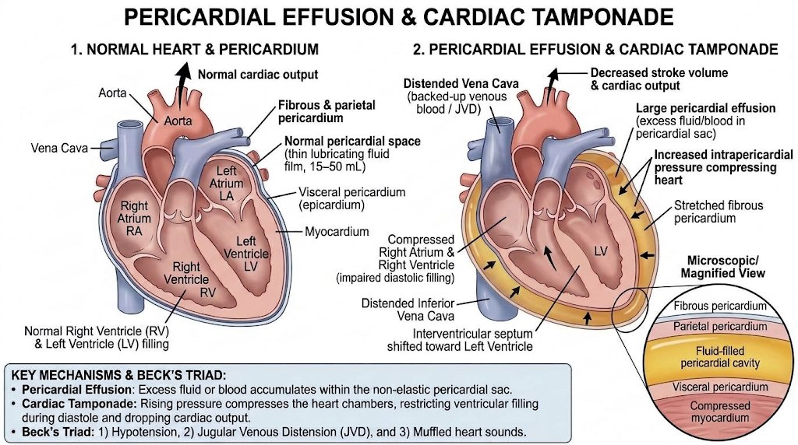
Pericardial effusion and tamponade. Fluid that builds quickly can cause tamponade at only 100–200 mL, because the sac cannot stretch in time. Watch for pulsus paradoxus on the arterial line (Figure 16-8). AI-generated illustration.
Covered in detail in Section 22.28 — the essentials, restated because it is reversible and missed:
The foramen ovale is a fetal interatrial communication that normally seals after birth. It remains probe-patent in roughly 25% of adults — making it a common anatomic variant, not a disease. It matters only when it becomes clinically significant.
| Problem | Explanation |
|---|---|
| Paradoxical embolism | Normally left atrial pressure exceeds right, so the flap stays shut. When right atrial pressure transiently exceeds left — Valsalva, coughing, straining, positive pressure ventilation, pulmonary hypertension, PE, RV failure — blood shunts right-to-left, and a venous clot can cross directly into the arterial circulation. Result: cryptogenic stroke, or arterial embolism to the coronary, visceral, or peripheral circulation. |
| Refractory hypoxemia | A right-to-left shunt that bypasses the lungs entirely — and, being a true shunt, it is refractory to supplemental oxygen. Consider a PFO in a patient with unexplained hypoxemia that doesn't improve with FiO2, particularly with elevated right-sided pressures (PE, RV failure, ARDS with high PEEP, pulmonary hypertension, post-pneumonectomy). |
| Platypnea-orthodeoxia syndrome | A distinctive and diagnostically useful pattern: dyspnea and desaturation that WORSEN when upright and IMPROVE when supine — the reverse of nearly every other cardiopulmonary condition. Caused by positional changes in shunt geometry. If you notice a patient whose saturation drops when you sit them up and recovers when you lay them down, that is a reportable finding and it points here. |
| Air embolism risk | A right-to-left shunt allows venous air to reach the arterial circulation. Meticulous air-free technique on all IV lines matters in these patients. |
Diagnosis: agitated saline ("bubble") contrast echocardiography — agitated saline is injected intravenously while imaging the heart, and bubbles appearing in the left atrium within a few cardiac cycles indicate an intracardiac shunt. The nurse typically performs the injection and the provocative maneuver — a Valsalva or cough at the moment of injection transiently raises right atrial pressure and unmasks a shunt that isn't visible at rest. Doing that maneuver at the correct moment is what makes the study diagnostic; a poorly timed one produces a false negative. Transesophageal echo is more sensitive; transcranial Doppler is an alternative.
Management:
Distinguish a PFO from an atrial septal defect (ASD), which is a true structural defect with a fixed left-to-right shunt causing right heart volume overload, a fixed split S2, and eventual pulmonary hypertension — a different entity with different management.
Learn your unit's cart in your first week — open every drawer, physically. Contents are standardized within an institution, and you should be able to find things without reading labels. Cart checks are usually a shift or daily nursing responsibility; do them properly and note the lock number and expiration dates.
| Location | Typical contents |
|---|---|
| On top | Defibrillator/monitor with pads, paddles, gel, and ECG cables; often a backboard and a sharps container. Verify the defibrillator is plugged in and self-testing daily — a dead defibrillator is a catastrophic finding at the wrong moment. |
| Airway drawer | BVM with reservoir and masks, oral and nasal airways, laryngoscope handles and blades (or video laryngoscope), ETTs in a range of sizes, stylets, bougie, syringes for cuffs, supraglottic airways (LMA), ETCO2 detector/capnography, suction catheters, Yankauer, tube holders, lubricant, magill forceps. |
| Medication drawers | ACLS drugs (see 24.2) — usually in prefilled syringes; plus atropine, calcium chloride, sodium bicarbonate, dextrose 50%, naloxone, magnesium, adenosine, and often a reversal agent set. |
| IV / access drawer | IV catheters including large bore, IV start kits, tubing, extension sets, saline flushes, IV fluids (NS, LR), intraosseous device and needles, blood tubes, ABG kits, three-way stopcocks. |
| Procedure drawer | Central line kits, arterial line kits, chest tube and thoracostomy tray, needle decompression catheters, pericardiocentesis tray, sterile gowns, gloves, drapes, chlorhexidine, suture, scalpel. |
| Side / bottom | IV pole, oxygen tubing and flowmeter, portable suction, pressure bag, transcutaneous pacing cables and pads, documentation forms/code sheet. |
| Drug | Indication | Dose & nursing notes |
|---|---|---|
| Epinephrine | All arrest rhythms | 1 mg IV/IO q3–5 min.1 Give early in non-shockable rhythms (asystole/PEA) — earlier administration is associated with better outcomes.1 In shockable rhythms, after the first or second shock. Follow every peripheral drug with a 20 mL flush and raise the arm. |
| Amiodarone | Refractory VF/pulseless VT | 300 mg IV/IO bolus, then 150 mg for a second dose.1 Given after epinephrine and defibrillation in refractory cases. |
| Lidocaine | Alternative to amiodarone in VF/pVT | 1–1.5 mg/kg, then 0.5–0.75 mg/kg. |
| Atropine | Symptomatic bradycardia | 1 mg IV q3–5 min, max 3 mg. Push fast — slow administration or low doses can cause paradoxical bradycardia. Ineffective in high-grade (Mobitz II / third-degree) block and in transplanted hearts — go to pacing. No longer part of the asystole/PEA algorithm. |
| Adenosine | Regular narrow-complex SVT | 6 mg rapid IV push, then 12 mg if needed. Half-life <10 seconds — push into the most proximal port of the largest vein with an immediate rapid flush (stopcock or two-syringe technique). Warn the patient. Print a strip through administration. Avoid in irregular wide-complex rhythms and severe reactive airway disease. |
| Magnesium sulfate | Torsades de pointes | 1–2 g IV. First-line for torsades regardless of the serum level. Not routine in other arrest rhythms. |
| Calcium chloride / gluconate | Hyperkalemia, hypocalcemia, calcium channel blocker overdose, massive transfusion | Membrane stabilization in hyperkalemia — buys time but does not lower potassium. Calcium chloride is more concentrated and caustic; central access preferred. Do not run in the same line as bicarbonate — they precipitate. |
| Sodium bicarbonate | Hyperkalemia, tricyclic antidepressant and sodium channel blocker toxicity, severe pre-existing acidosis | Not routine in cardiac arrest. Reserved for specific indications. Incompatible with calcium and with catecholamines — flush between. |
| Dextrose (D50 or D10) | Hypoglycemia | Check a glucose in every arrest and every altered patient. D50 or D10 per protocol; D10 is less damaging if it extravasates. Reversible and instantly correctable. |
| Naloxone | Suspected opioid-related arrest or respiratory failure | See Section 50.5 for titration cautions. |
| Vasopressors post-ROSC | Post-arrest hypotension | Norepinephrine, epinephrine, or dopamine infusions to maintain the ordered MAP, at least 65 mmHg (2025 AHA).2 Have an infusion ready before ROSC. |
Route: IV is preferred; IO is equivalent and should be established quickly if IV access fails. Endotracheal administration is a last resort with unreliable absorption. Every peripheral drug gets a 20 mL flush and limb elevation — otherwise it sits in the tubing during low-flow CPR.
The reversible causes. In PEA and asystole, the rhythm is not the problem — the cause is, and finding it is the whole task. Point-of-care ultrasound during pulse checks is often decisive.
| Cause | Clues | Treatment |
|---|---|---|
| Hypovolemia | Trauma, GI bleed, sepsis, third-spacing; collapsed IVC on ultrasound; hyperdynamic empty heart | Volume, blood products, stop the bleeding |
| Hypoxia | Preceding respiratory failure, cyanosis, airway problem, low ETCO2 | Oxygenate and ventilate; verify the airway with capnography |
| Hydrogen ion (acidosis) | Known DKA, renal failure, prolonged arrest, ABG | Ventilation, perfusion; bicarbonate in specific cases |
| Hypo/hyperkalemia | Renal failure, dialysis, crush injury, rhabdomyolysis; peaked T waves or widened QRS preceding arrest | Hyper: calcium, insulin/dextrose, bicarbonate, albuterol, dialysis. Hypo: replace potassium and magnesium. |
| Hypothermia | Environmental exposure, drowning, prolonged down time; core temperature | Active rewarming. Prolonged resuscitation is warranted — "not dead until warm and dead." Defibrillation and drugs may be ineffective until rewarmed. |
| Hypoglycemia (taught in some versions) | Diabetic, insulin, alcohol, liver failure | Check a glucose. D50. |
| Tension pneumothorax | Trauma, central line placement, mechanical ventilation with high pressures, absent unilateral breath sounds, tracheal deviation, JVD | Immediate needle decompression, then chest tube. Do not wait for imaging. |
| Tamponade (cardiac) | Trauma, post-procedure (line, pacer, PCI), malignancy, uremia, post-MI rupture; JVD, muffled sounds, effusion with diastolic collapse on ultrasound | Pericardiocentesis |
| Toxins | History, pill bottles, track marks, characteristic toxidrome, wide QRS (sodium channel blockade), bradycardia (beta blocker / calcium channel blocker) | Specific antidotes — see Section 30. Consider prolonged CPR and ECMO for reversible poisonings. |
| Thrombosis (pulmonary) | Sudden collapse, preceding dyspnea and hypoxia, risk factors, RV dilation on ultrasound | Thrombolysis during CPR is reasonable when PE is strongly suspected; consider prolonged resuscitation and ECMO |
| Thrombosis (coronary) | Preceding chest pain, ischemic ECG changes | Emergent PCI post-ROSC; mechanical support |
The standard NBG code uses letters for: (1) chamber paced, (2) chamber sensed, (3) response to sensing, (4) rate modulation, (5) multisite pacing. A = atrium, V = ventricle, D = dual, O = none; response: I = inhibited, T = triggered, D = dual.
| Mode | Meaning |
|---|---|
| VVI | Paces the ventricle, senses the ventricle, inhibited by a sensed native beat. A simple demand backup mode. |
| DDD | Paces and senses both chambers with dual response — preserves AV synchrony. The most physiologic common mode. |
| AAI | Atrial pacing with intact AV conduction — sinus node disease only. |
| DOO / VOO | Asynchronous — paces at a fixed rate with no sensing. Used temporarily, e.g., with a magnet or in the OR with electrocautery. Risk of R-on-T. |
| Problem | What you see | Causes & response |
|---|---|---|
| Failure to capture | Pacer spike with no resulting complex | Lead displacement or fracture, output set too low, fibrosis, electrolyte abnormality (especially hyperkalemia), acidosis, hypoxia, some antiarrhythmics. Increase output, reposition patient, correct metabolic causes, call. |
| Failure to sense (undersensing) | Pacer spikes appearing where they shouldn't — competing with the native rhythm; risk of R-on-T | Sensitivity set too low (number too high), lead problem, low-amplitude intrinsic signal. Adjust sensitivity, call. |
| Oversensing | Missing pacer spikes — the device inhibits inappropriately, sensing artifact, myopotentials, or T waves as beats | Can cause dangerous pauses in a pacer-dependent patient. Reduce sensitivity, look for electrical interference, call. |
| Failure to output | No spikes at all when they should be present | Battery depletion, lead fracture, disconnection, generator failure. Emergency in a dependent patient — be ready for transcutaneous pacing. |
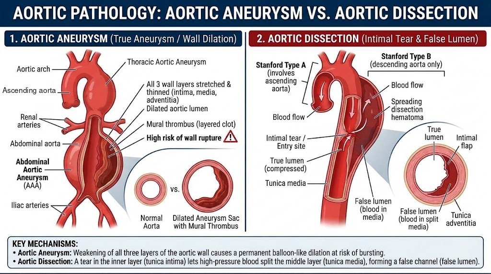
Aortic aneurysm vs. dissection. Type A (ascending aorta) is a surgical emergency; Type B is usually managed medically with heart rate and blood pressure control, beta-blocker first. AAA repair is usually considered at a diameter of 5.5 cm or more in men or 5.0 cm in women, or with rapid growth (2022 ACC/AHA).3 AI-generated illustration.
A tear in the aortic intima allowing blood to track into the media, creating a false lumen that can propagate, occlude branch vessels, rupture, or extend into the pericardium.
| Stanford classification | Description & management |
|---|---|
| Type A | Involves the ascending aorta (regardless of where it started). Surgical emergency — untreated mortality rises roughly 1–2% per hour in the first 48 hours.3 Complications: cardiac tamponade, aortic regurgitation, coronary occlusion (can present as an inferior MI), stroke. |
| Type B | Descending aorta only. Usually managed medically with aggressive impulse control, unless there is malperfusion, rupture, refractory pain, or rapid expansion — then endovascular repair (TEVAR). |
Presentation: abrupt, severe, "tearing" or "ripping" chest or back pain, maximal at onset. Pulse or blood pressure differential between limbs (measure both arms — this is a nursing finding that makes the diagnosis), new aortic regurgitation murmur, neurologic deficits, syncope, limb ischemia, abdominal pain from mesenteric malperfusion, or oliguria from renal malperfusion. It is frequently mistaken for ACS — and giving anticoagulants or thrombolytics to a dissection is catastrophic.
Give the beta blocker FIRST (esmolol or labetalol), and then the vasodilator (nicardipine or nitroprusside). Giving a vasodilator first causes reflex tachycardia, which increases shear stress and can extend the dissection. This sequence is a genuine, testable, life-or-death detail.
Also: aggressive pain control (pain drives sympathetic surge — opioids are part of the treatment, not just comfort), continuous arterial line monitoring in the arm with the higher pressure, type and cross, avoid straining, and serial pulse and neurovascular checks in all four extremities. Keep the patient NPO and prepare for the OR in Type A.
The minutes before an arrest are where an ICU nurse changes outcomes. Falling blood pressure, a slowing or widening rhythm, rising oxygen needs, new confusion, or a rising lactate can each be the warning. Prepare as if the arrest is coming, and call early.
| Call | The rapid response team or the provider to the bedside now. Say it plainly: “I think this patient may arrest.” |
| Pads and cart | Pads on (anterior-posterior), the defibrillator on and ready to pace, the code cart in the room. |
| Access | Two working IVs or an IO, and a lumen you know is free for pushes (not the pressor lumen; Section 18). |
| Airway | Oxygen on, suction set up, a BVM with a PEEP valve at the head of the bed. If intubation is coming, the team plans for post-intubation collapse (Section 25). |
| Pressors | Ask for a norepinephrine or epinephrine infusion to be ready, and push-dose doses if ordered. |
| Causes | Glucose, potassium, gas and lactate, hemoglobin. Work through the H’s and T’s (24.3) now, not after the arrest. |
| Code status | Confirm it, and tell the family what is happening. |
Small IV boluses of a vasopressor buy minutes while an infusion is started, for example around intubation or a sudden drop in pressure. They are a bridge, not a treatment, and no outcome data show they beat a well-run infusion.4
| Epinephrine | Phenylephrine | |
|---|---|---|
| Concentration | 10 mcg/mL | 100 mcg/mL ready-to-use product, which must not be diluted further.5 Pharmacy-made and prefilled syringes differ, so read the label. |
| Usual dose | 5–20 mcg (0.5–2 mL) every 2–5 min | Label: 40–100 mcg (0.4–1 mL) to start, then boluses of up to 200 mcg (2 mL) every 1–2 min as needed.5 |
| Effect | Alpha and beta: raises blood pressure and heart rate | Pure alpha: raises blood pressure; heart rate may fall |
| Watch for | Tachycardia, arrhythmia, hypertensive overshoot | Bradycardia, hypertensive overshoot |
Figure 24-1. Epinephrine concentrations at the bedside. US labels now state mg/mL; the ratio terms are still heard. Mix-ups between them have caused 10-fold and 100-fold overdoses. Original drawing.
Additional sources
Respiratory management is the other half of ICU nursing. This section replaces the shorter ABG and ventilator material from earlier drafts of this guide and covers gas exchange, monitoring, airways, ventilation, ARDS, sedation and delirium, and weaning as one continuous subject — because that's how it works at the bedside.
Everything downstream makes sense once this does. Gas exchange requires four things, and respiratory failure is always a failure of one or more of them.
| Requirement | What can go wrong | Clinical example |
|---|---|---|
| Ventilation — air reaching alveoli | Hypoventilation, obstruction, weakness | Opioid overdose, COPD exacerbation, Guillain-Barré, mucus plug |
| Diffusion — gas crossing the alveolar-capillary membrane | Thickened or fluid-filled membrane | Pulmonary edema, ARDS, pneumonia, fibrosis |
| Perfusion — blood reaching ventilated alveoli | Blocked or absent pulmonary blood flow | Pulmonary embolism, shock, cardiac arrest |
| V/Q matching — ventilation and perfusion in the same place | Mismatch or shunt | See below |
The V/Q concepts you'll use constantly:
Oxygen delivery to tissue depends on hemoglobin, saturation, and cardiac output — not PaO2. Review Section 16.9 if that isn't yet automatic. Also know the oxyhemoglobin dissociation curve conceptually: a right shift (acidosis, hypercarbia, fever, high 2,3-DPG) means hemoglobin releases oxygen more readily to tissue; a left shift (alkalosis, hypocarbia, hypothermia, stored blood) means hemoglobin holds on more tightly. Practically: the steep portion of the curve is why a saturation dropping from 90% to 85% represents a much larger PaO2 fall than 99% to 94% does — sats below ~90% deteriorate fast.
Going deeper: 25.36 covers the physiology, venous samples, the anion gap with its albumin correction and delta ratio, potassium shifts and a step-by-step approach; 25.37 covers metabolic acidosis in full, 25.38 metabolic alkalosis, 25.39 respiratory acidosis, 25.40 respiratory alkalosis and 25.41 mixed disturbances as worked cases.
Use one systematic method, identically, every time.
| Pattern | Gas | Common ICU causes |
|---|---|---|
| Respiratory acidosis | ↓pH, ↑CO2 | Hypoventilation: COPD, over-sedation, neuromuscular weakness, inadequate minute ventilation, obstruction, fatigue |
| Respiratory alkalosis | ↑pH, ↓CO2 | Hyperventilation: pain, anxiety, sepsis, PE, hypoxia, over-ventilation on the vent, liver failure, salicylates |
| Metabolic acidosis | ↓pH, ↓HCO3 | Anion gap: DKA, lactic acidosis, renal failure, toxins. Non-gap: diarrhea, large-volume saline, renal tubular acidosis |
| Metabolic alkalosis | ↑pH, ↑HCO3 | Vomiting or NG suction, diuretics, hypokalemia, excess bicarbonate, contraction alkalosis |
ROME — Respiratory Opposite (pH and CO2 move opposite directions), Metabolic Equal (pH and HCO3 move together). Also calculate the anion gap = Na − (Cl + HCO3), normal ~8–12, in any metabolic acidosis.1 Mixed disorders are common in the ICU — a septic patient with a lactic acidosis who is also over-ventilated has both.
Nursing practicalities: draw from an arterial line where possible (waste per policy), expel air bubbles immediately (they falsely raise PaO2 and lower PaCO2), run the sample promptly or ice it per your lab, document the FiO2/vent settings at the time of the draw (a gas without settings is uninterpretable), and hold pressure adequately after a percutaneous stick. A venous blood gas is acceptable for pH and CO2 trends in many situations but tells you nothing reliable about oxygenation — know which one you have.
Quick-reference ABG sheets often teach the classic three steps (pH, then PaCO2 and HCO3, then compensation). Two corrections make it safer in the ICU. First, a normal pH does not prove full compensation: the body rarely brings the pH all the way back to normal (chronic respiratory alkalosis is the exception), so a normal pH with an abnormal PaCO2 and HCO3 usually means two disorders at once. Second, some sheets label the "ARDS ABG" as a respiratory acidosis; early ARDS more often shows hypoxemia with a respiratory alkalosis (the patient is breathing fast). Respiratory acidosis comes later, with fatigue, or deliberately with lung-protective ventilation (permissive hypercapnia).
| Primary disorder | Expected compensation |
|---|---|
| Metabolic acidosis | Expected PaCO2 = 1.5 × HCO3 + 8 (± 2) (Winter's formula).1 Higher than expected: a respiratory acidosis too. Lower: a respiratory alkalosis too. |
| Metabolic alkalosis | PaCO2 rises about 0.7 mmHg per 1 mEq/L rise in HCO3. |
| Respiratory acidosis | Acute: HCO3 rises about 1 per 10 mmHg rise in PaCO2. Chronic: about 3.5–4 per 10. |
| Respiratory alkalosis | Acute: HCO3 falls about 2 per 10 mmHg fall in PaCO2. Chronic: about 4–5 per 10. |
| ABG (pH / PaCO2 / HCO3) | Interpretation |
|---|---|
| 7.28 / 55 / 25 | Acute (uncompensated) respiratory acidosis: hypoventilation (for example over-sedation). |
| 7.32 / 30 / 15 | Metabolic acidosis with appropriate respiratory compensation: expected PaCO2 = 1.5 × 15 + 8 = 30.5 (± 2). Calculate the anion gap next. |
| 7.36 / 60 / 32 | Chronic respiratory acidosis, compensated (expected HCO3 about 24 + 2 × 3.5 = 31): typical COPD. |
| 7.50 / 30 / 23 | Acute respiratory alkalosis: pain, anxiety, early sepsis, PE, or early ARDS. |
| 7.40 / 25 / 15 | A normal pH that is not normal: metabolic acidosis (HCO3 15) and a PaCO2 lower than the expected 30.5, so a respiratory alkalosis too. Think salicylate toxicity or sepsis. |
Capnography continuously measures exhaled CO2, displaying a numeric ETCO2 (normal 35–45 mmHg) and a waveform. It is the single best real-time monitor of ventilation, and it detects problems well before the pulse oximeter does — a desaturating patient has already been in trouble for a minute or two, while capnography changes instantly.
Uses: confirming and continuously verifying ETT placement, monitoring ventilation in sedated or non-intubated patients, assessing CPR quality and detecting ROSC, trending ventilation in DKA and other acidoses, and detecting apnea, obstruction, and circuit disconnection.
ETCO2 normally runs a few mmHg below PaCO2 (the gradient reflects dead space). A widening gradient means increasing dead space — think PE, low cardiac output, or high PEEP.
| Change | Causes |
|---|---|
| Sudden loss to zero | Emergency. ETT dislodgement or esophageal placement, complete obstruction, circuit disconnection, ventilator failure, cardiac arrest. Assess the patient immediately — do not silence the alarm. |
| Gradual rise | Hypoventilation, rising CO2 production (fever, sepsis, shivering, overfeeding), absorbed CO2, decreasing minute ventilation |
| Gradual fall | Hyperventilation, falling cardiac output, hypothermia, decreasing metabolic rate, developing hypovolemia |
| Sudden fall (not to zero) | Sudden drop in pulmonary blood flow — massive PE, sudden hypotension, partial circuit leak or partial obstruction |
The normal waveform is a rectangular box with four phases. Learn the shape; the abnormal shapes are diagnostic.
| Phase | What's happening | Appearance |
|---|---|---|
| Phase I | Early exhalation of dead space gas (no CO2) | Flat baseline at zero |
| Phase II | Mixed dead space and alveolar gas | Rapid, steep upstroke |
| Phase III | Alveolar plateau — pure alveolar gas | Nearly flat plateau; the end of this plateau is the ETCO2 value |
| Phase IV / 0 | Inspiration — fresh gas washes CO2 away | Sharp downstroke back to baseline |
| Abnormal waveform | Appearance | Meaning |
|---|---|---|
| "Shark fin" | Loss of the sharp Phase II upstroke and the flat plateau — the waveform becomes a sloping, curved ramp | Bronchospasm / obstructive disease — asthma, COPD exacerbation, or a partially obstructed ETT. Prolonged expiratory time means alveoli empty unevenly. Watch the shape resolve as bronchodilators work — it's a real-time treatment response monitor. |
| "Curare cleft" | A notch or dip in the middle of the plateau | The patient is taking a spontaneous breath during the plateau — classically returning neuromuscular function in a paralyzed patient, or patient-ventilator dyssynchrony. A signal to reassess paralysis and sedation. |
| Rising baseline (Phase I above zero) | The waveform doesn't return to zero | Rebreathing — inadequate expiratory time, faulty valve, exhausted CO2 absorber, or too-low fresh gas flow. |
| Prolonged plateau with steep slope | Upsloping Phase III | Uneven alveolar emptying — obstructive disease, again. |
| Flat line at zero with no waveform | No waveform at all | Apnea, disconnection, esophageal intubation, complete obstruction, or arrest. Check the patient first, the equipment second. |
| Small, low-amplitude waveforms | Waveform present but blunted | Partial obstruction, cuff leak, low cardiac output, or a sampling line problem. |
The AHA recommends continuous quantitative waveform capnography in intubated patients during CPR. It does three jobs no other monitor does:
Prognostic note: a persistently very low ETCO2 (often cited as <10 mmHg after 20 minutes of high-quality ACLS in an intubated patient) is associated with very poor likelihood of ROSC and is one component teams consider in decisions to terminate resuscitation. It is one data point among many — never the sole criterion — and it's unreliable in specific settings such as very high dead space or when bicarbonate has just been given.
Titrate to a target saturation, not to a device. Common targets: 92–96% for most patients, 88–92% in chronic CO2 retainers (COPD) to avoid suppressing respiratory drive and worsening V/Q matching. Hyperoxia causes harm — more oxygen is not safer.
| Device | Flow | Approx. FiO2 | Notes |
|---|---|---|---|
| Nasal cannula | 1–6 L/min | ~24–44% | Low-flow, variable — actual FiO2 depends on the patient's own inspiratory flow and breathing pattern. Comfortable; allows eating and talking. Humidify above 4 L. |
| Simple face mask | 6–10 L/min | ~35–55% | Must run ≥6 L to flush CO2 from the mask. |
| Venturi mask | Per adapter | 24–60%, precise | The only high-flow, fixed-performance low-tech device — delivers a known FiO2 regardless of breathing pattern. Ideal when precision matters, especially in COPD. |
| Non-rebreather | 10–15 L/min | ~60–90% | Keep the reservoir bag inflated — if it collapses on inspiration, flow is too low. A short-term bridge, not a plan. A patient on a non-rebreather who is still hypoxic needs escalation now. |
| High-flow nasal cannula (HFNC) | Up to 60–70 L/min | 21–100%, precise | Heated and humidified. Delivers a set FiO2, washes out nasopharyngeal dead space, and generates a modest amount of PEEP. Well tolerated, allows eating and speaking. Strong evidence in hypoxemic respiratory failure. Watch for the patient who looks comfortable but is failing — escalating flow/FiO2 requirements, persistent tachypnea, and rising work of breathing predict the need for intubation, and delayed intubation on HFNC is associated with worse outcomes. |
| Bag-valve mask | 15 L/min | Up to ~100% with reservoir | Rescue device. Two-person technique (one seals the mask with a two-handed C-E grip, one squeezes) is far more effective than one. Ventilate at a controlled rate — over-bagging causes gastric insufflation, aspiration, and reduced venous return. |
Positive pressure delivered through a mask or helmet, avoiding intubation entirely when it works.
| Mode | What it does | Best evidence / indications |
|---|---|---|
| CPAP | One continuous pressure throughout the cycle. Recruits alveoli, improves oxygenation, reduces preload and afterload. | Acute cardiogenic pulmonary edema (strong evidence — improves outcomes and reduces intubation), obstructive sleep apnea. |
| BiPAP | Two pressures: IPAP (inspiratory, supports the breath and increases tidal volume) and EPAP (expiratory, equivalent to PEEP). The difference between them determines ventilation and therefore CO2 clearance. | COPD exacerbation with hypercapnic respiratory acidosis (strongest evidence — reduces intubation and mortality), acute cardiogenic pulmonary edema, some neuromuscular and obesity hypoventilation, and selected immunocompromised patients. |
Adjustments in plain language: to improve oxygenation, increase FiO2 or EPAP/CPAP. To improve ventilation (lower the CO2), increase IPAP — widening the IPAP–EPAP gap.
Contraindications: respiratory or cardiac arrest, inability to protect the airway, depressed mental status or uncooperativeness, excessive secretions, active vomiting or high aspiration risk, hemodynamic instability, facial trauma or surgery, recent upper GI surgery, undrained pneumothorax.
Your role is preparation, assistance, monitoring, and documentation — and preparation is where you add the most value. Learn your unit's airway setup once, thoroughly, and you will never be the person scrambling.
Waveform capnography is the standard — a persistent waveform over several breaths. Then: bilateral chest rise, equal breath sounds in both axillae, absence of epigastric sounds, fogging in the tube (unreliable alone), improving saturation, and a chest x-ray for depth (tip roughly 2–6 cm above the carina). Document the lip/tooth line and report it at every handoff.
Intubation is one of the most dangerous procedures in the ICU. In the INTUBE study of 2,964 critically ill adults in 29 countries, 45.2% had at least one major adverse event: cardiovascular instability in 42.6%, severe hypoxemia in 9.3%, and cardiac arrest in 3.1%.3 Most of that collapse is predictable.
| Spot the high-risk patient | Already on a vasopressor, hypotensive, or with a shock index (HR ÷ SBP) above about 0.9 (for example HR 110, SBP 100: 110 ÷ 100 = 1.1); sepsis, bleeding or hypovolemia; RV failure, PE, or tamponade; severe metabolic acidosis. Say so out loud before the drugs go in. |
| Pressor ready, not just available | A norepinephrine infusion connected and ready to start (many teams start it before induction when the pressure is low), and push-dose doses drawn up and labeled (24.6). |
| Fluid only for a reason | Give a bolus when the patient is hypovolemic or fluid-responsive. A routine 500 mL bolus for everyone did not prevent cardiovascular collapse in the PREPARE II trial.4 |
| Preoxygenate well | In the PREOXI trial, preoxygenation with noninvasive ventilation roughly halved hypoxemia during intubation compared with an oxygen mask (9.1% vs. 18.5%).5 Ask RT for NIV or high-flow before the attempt when it is safe. |
| Induction agent | The provider chooses the drug and dose for the hemodynamics. In the 2025 RSI trial (2,365 adults), ketamine did not lower 28-day mortality compared with etomidate (29.6% vs. 30.9%) and caused more peri-intubation cardiovascular collapse (22.1% vs. 17.0%).6 Whichever is used, expect the pressure to fall. |
| Severe metabolic acidosis | In DKA, salicylate toxicity, or severe lactic acidosis, the fast breathing is the compensation. A standard ventilator rate removes it, the pH falls, and arrest can follow. Tell the team the patient's respiratory rate and PaCO2 before intubation so the settings can match that minute ventilation, and get a gas soon after. |
| After the tube | Blood pressure every 1–2 minutes for the first 10–15 minutes (cuff cycling or arterial line); sedation and analgesia started promptly; bag slowly (about 10 breaths a minute), because fast bagging causes auto-PEEP and hypotension. |
Know where the difficult-airway cart is before you need it (video laryngoscope, bougie, supraglottic airways, and a cricothyrotomy kit). When intubation fails, the sequence is: call for help early, ventilate with a two-person bag-valve mask plus an oral or nasal airway, then a supraglottic airway as a rescue, then a surgical airway if the patient can't be intubated or oxygenated.
| Device | Use and nursing points |
|---|---|
| Laryngeal mask (LMA, i-gel) | Sits over the laryngeal inlet. A rescue when intubation fails and a bridge to a definitive airway; can be an intubation conduit for some models. Sized by weight on the device (an LMA size 3 for about 30–50 kg, 4 for 50–70 kg, 5 for 70–100 kg; check the package). |
| King LT(S)-D | A tube placed blindly into the esophagus with two cuffs inflated through one pilot balloon. Sized by height: size 3 (yellow) 4–5 ft, size 4 (red) 5–6 ft, size 5 (purple) over 6 ft. Inflate only enough to seal (the syringe and connector are marked by size). Common in EMS and as a rescue in arrest. |
Limits: supraglottic airways don't reliably protect against aspiration, may leak at high airway pressures, and are a temporary airway. Don't use one in a patient with an intact gag reflex, and avoid the King with known esophageal disease or a caustic ingestion.7 After placement, confirm with a continuous ETCO2 waveform, secure it, and expect an exchange to an ETT.
RSI pairs an induction agent (immediate unconsciousness) with a neuromuscular blocker (rapid paralysis), given in quick succession to optimize conditions and minimize aspiration risk.8
| Drug | Reported dose | Profile |
|---|---|---|
| Etomidate | ~0.2–0.4 mg/kg IV; onset ~1 min, duration ~3–8 min | The most hemodynamically neutral induction agent — the common choice in shock and in head injury. Causes transient adrenal suppression (cortisol synthesis inhibition), which is debated but rarely changes practice for a single dose; in the 2025 RSI trial, etomidate had no higher mortality than ketamine.6 May cause myoclonus. No analgesia. |
| Ketamine | ~1–2 mg/kg IV | Dissociative; preserves respiratory drive and airway reflexes, provides analgesia, and is a bronchodilator — excellent in status asthmaticus. Sympathomimetic, so it usually supports blood pressure — though in catecholamine-depleted shock it can drop pressure. In the 2025 RSI trial it caused more peri-intubation cardiovascular collapse than etomidate (22.1% vs. 17.0%), with no mortality benefit. Emergence reactions are less clinically significant than historically taught; the old concern about raised ICP is largely refuted. |
| Propofol | ~0.5–2 mg/kg IV, dose-reduced if unstable | Fast on/off, anticonvulsant, blunts airway reflexes well. Causes significant hypotension and myocardial depression — generally avoided or heavily dose-reduced in shock. |
| Midazolam | Variable | Slower and less reliable for induction; causes hypotension. Used when other agents aren't available. |
| Drug | Reported dose / timing | Profile |
|---|---|---|
| Succinylcholine (depolarizing) | ~1.5 mg/kg IV; onset ~30–60 sec, duration ~3–5 min (some sources 6–10) | Fastest onset and shortest duration. Contraindications matter enormously: personal or family history of malignant hyperthermia, known or suspected hyperkalemia, crush injury or rhabdomyolysis, burns or denervation injury more than ~24–72 hours old (upregulated receptors cause massive potassium release and arrest), and some neuromuscular diseases. Raises serum potassium in everyone. When in doubt in an ICU patient, rocuronium is safer. |
| Rocuronium (non-depolarizing) | ~1–1.2 mg/kg for RSI; onset ~45–60 sec, duration ~30–60+ min | Nearly as fast at RSI doses, with far fewer contraindications (essentially only prior anaphylaxis). The long duration is the trade-off: if the airway fails, the patient stays paralyzed. Sugammadex reverses it rapidly and should be available. Also remember: a long-acting paralytic means sedation must be running before the patient can be aware. |
| Vecuronium / cisatracurium | Slower onset | Used for maintenance paralysis rather than RSI. Cisatracurium undergoes Hofmann elimination (organ-independent) — the preferred infusion agent in renal and hepatic failure. |
Adjuncts you may see: fentanyl for sympathetic blunting, lidocaine (historical, largely abandoned), and push-dose vasopressors for peri-intubation hypotension.
| Letter | Problem | Recognition & action |
|---|---|---|
| D | Dislodgement — the tube has moved out, into the esophagus, or down into a mainstem bronchus | Check the lip line against the documented number, listen for bilateral breath sounds (unilateral = right mainstem — pull back), and check the capnography waveform — loss of waveform is dislodgement until proven otherwise. Prepare for reintubation. |
| O | Obstruction — mucus plug, blood, kinked tube, biting | Attempt to pass a suction catheter — if it won't pass, the tube is obstructed. Suction, insert a bite block, consider bronchoscopy. High peak pressures with a normal plateau points here. |
| P | Pneumothorax (especially tension) | Sudden hypoxia, absent or diminished breath sounds unilaterally, high peak pressures, hypotension, JVD, tracheal deviation (late). Tension pneumothorax is treated immediately with needle decompression, not with a chest x-ray. Get help. |
| E | Equipment failure — circuit disconnection or leak, ventilator malfunction, oxygen source failure, deflated cuff | This is why you bag: if the patient improves on the BVM, the problem is the machine. Trace the circuit end to end. |
Many versions add S for Stacked breaths / auto-PEEP (breath stacking in obstructive disease — disconnecting from the vent and allowing full exhalation is both diagnostic and therapeutic) making it DOPES. Learn it with the S.
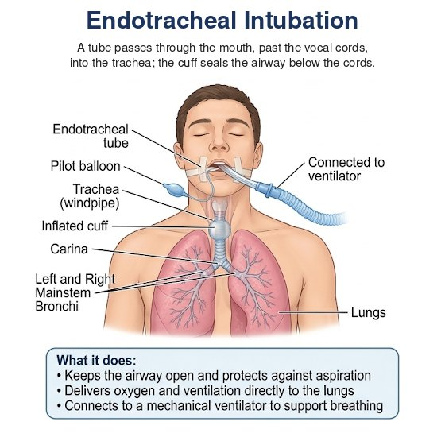
An endotracheal tube in place. The tip should sit about 2–6 cm above the carina on chest x-ray; document the lip line every shift. AI-generated illustration.
From the 2022 AARC guideline on artificial-airway suctioning.10 Many ICUs use in-line (closed) suction (25.13).
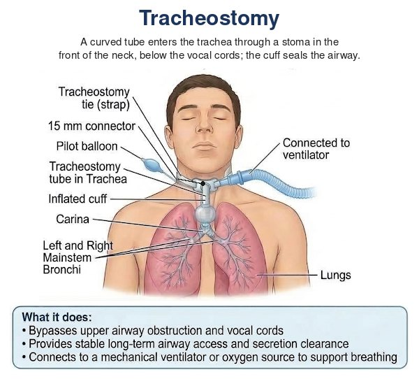
A cuffed tracheostomy tube, front view. The stoma lies below the vocal cords, so a patient with a trach can be oxygenated through the stoma in an emergency. AI-generated illustration.
A surgical or percutaneous airway placed through the anterior neck. Indications: prolonged mechanical ventilation, failure to wean, upper airway obstruction, inability to protect the airway, and secretion management. Advantages over an ETT: less sedation required, better oral care and communication, easier weaning, reduced dead space, and improved comfort and mobility.
Accidental decannulation in a fresh tracheostomy (generally within the first ~7 days, before the tract has matured) is an airway emergency. The tract can close, and blind reinsertion can create a false passage. Call for immediate help, oxygenate over the stoma and/or the mouth and nose (occluding the stoma), and follow your institution's algorithm. In a mature stoma, reinsertion with the obturator is generally feasible — know your policy and your scope.
Obstruction: remove and replace/clean the inner cannula first — this resolves most obstructions immediately. Then attempt suction. If a suction catheter won't pass and the patient can't be ventilated, escalate emergently.
Bleeding: minor stomal bleeding is common early. Pulsatile or large-volume bleeding, or a "sentinel bleed," raises tracheo-innominate artery fistula — a rare, catastrophic, and often fatal complication typically occurring within the first few weeks. This is an immediate call for help and surgical emergency.
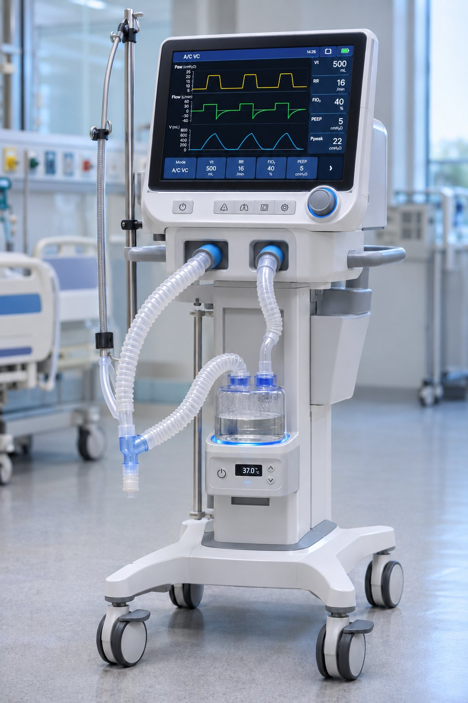
A generic ICU ventilator with a heated humidifier in the inspiratory limb. Your unit's model and screens may differ. AI-generated illustration.
What the ventilator does: delivers positive pressure to inflate the lungs (the opposite of the negative pressure of spontaneous breathing) to support oxygenation, support ventilation, reduce the work of breathing, and protect the airway.
Consequences of positive pressure you should keep in mind: reduced venous return and therefore reduced cardiac output and blood pressure; increased ICP; ventilator-induced lung injury with excessive volumes or pressures; VAP risk; and the need for sedation.
Supplies that live at every vented patient's bedside — verify at the start of every shift:
Figure 25-1. A heated-humidifier ventilator circuit. Original schematic; parts and their order vary by manufacturer and unit.
| Setting | Typical range | What it does |
|---|---|---|
| FiO2 | 0.21–1.0 | Oxygenation. Wean down toward ≤0.6 as tolerated — prolonged high FiO2 causes oxygen toxicity and absorption atelectasis. |
| PEEP | 5–20+ cm H2O | Oxygenation. Keeps alveoli open at end-expiration, recruiting lung and reducing shunt. Higher PEEP can reduce venous return and blood pressure, and raise the risk of barotrauma. |
| Respiratory rate | 12–20+ | Ventilation (CO2). Part of minute ventilation. |
| Tidal volume (VT) | 4–8 mL/kg predicted body weight | Ventilation. Note predicted body weight, based on height and sex — lungs don't grow with obesity. Setting tidal volume on actual weight is a real and harmful error. |
| Inspiratory pressure | Set in pressure modes | The pressure applied above PEEP during inspiration; volume then varies with compliance. |
| I:E ratio | Typically 1:2 | Inspiratory to expiratory time. Obstructive patients need a longer expiratory time (1:3, 1:4) to avoid breath stacking. |
| Flow rate / inspiratory time | Varies | How fast the breath is delivered. Inadequate flow causes air hunger and dyssynchrony in a distressed patient. |
| Trigger sensitivity | Flow or pressure | How much effort the patient must make to initiate a breath. Set too insensitive = patient works hard for nothing; too sensitive = auto-triggering. |
| Pressure | Target | Meaning |
|---|---|---|
| Peak inspiratory pressure (PIP) | Generally <35 cm H2O | The highest pressure in the circuit. Reflects both airway resistance and lung compliance. |
| Plateau pressure (Pplat) | <30 cm H2O | Measured during an inspiratory hold with no flow — so it reflects alveolar pressure and lung compliance only. This is the number that predicts ventilator-induced lung injury. |
| Driving pressure | Generally <15 cm H2O | Pplat − PEEP. Increasingly recognized as strongly associated with mortality in ARDS — arguably a better target than tidal volume alone. |
| Auto-PEEP (intrinsic PEEP) | Ideally zero | Measured with an expiratory hold. Air trapped from incomplete exhalation. Causes hypotension, dyssynchrony, and barotrauma. Common in COPD and asthma. |
| Mean airway pressure | — | Average over the cycle; correlates with oxygenation and with hemodynamic impact. |
Figure 25-3. Peak vs. plateau pressure in volume control: telling an airway problem from a lung problem. Example values, PEEP 5. Original drawing.
Every mode answers three questions: what triggers the breath (patient or machine), what limits it (volume or pressure), and what cycles it off (time, volume, or flow).
| Mode | How it works | Use & cautions |
|---|---|---|
| Assist Control — Volume (AC/VC) | Set rate and set tidal volume. Every breath — machine-triggered or patient-triggered — delivers the full set volume. | Most support, most rest. Guarantees minute ventilation and tidal volume, which is why it's standard for lung-protective ventilation in ARDS. Pressure varies with compliance — watch plateau. Risk: a tachypneic patient triggers many full breaths → respiratory alkalosis and breath stacking/auto-PEEP. |
| Assist Control — Pressure (AC/PC) | Set rate and set inspiratory pressure; volume varies with compliance. | Limits pressure directly. Tidal volume is not guaranteed — if compliance worsens, volumes fall silently. Monitor exhaled tidal volume closely. |
| SIMV | Set mandatory breaths synchronized with patient effort; breaths between mandatory breaths are the patient's own size, usually with added pressure support. | Historically used for weaning; largely superseded because it can increase work of breathing. You'll still see it. |
| Pressure Support (PSV) | No set rate. The patient triggers every breath; the vent adds a set pressure to assist. The patient controls rate, timing, and volume. | A spontaneous mode. Used for weaning and for spontaneous breathing trials. Requires an intact respiratory drive — apnea backup settings matter. |
| CPAP | Continuous pressure only, no inspiratory support. | Fully spontaneous. Common SBT configuration (CPAP alone or with minimal pressure support). |
| PRVC (and similar dual modes) | Targets a set tidal volume while delivering it with the lowest pressure necessary, adjusting breath to breath. | Attempts to combine the guarantees of volume control with the pressure-limiting of pressure control. Widely used. |
| APRV | Prolonged high pressure with brief timed releases; the patient breathes spontaneously throughout. | A rescue/recruitment strategy in severe hypoxemia. Requires specific expertise — and it looks alarming if you don't know what you're seeing. |
Figure 25-2. Pressure, flow, and volume over time in volume control vs. pressure control (two breaths each). Original drawing; not to scale.
Every manufacturer's display differs, but they all show the same four categories. Learn to read your unit's screen in your first week — ask RT to walk you through it.
| Alarm | Think |
|---|---|
| High pressure | Resistance or compliance problem: coughing, biting, secretions/plug, kinked tube, bronchospasm, pneumothorax, pulmonary edema, ARDS, dyssynchrony, patient moving. Suction and listen first. |
| Low pressure / low exhaled volume / low minute ventilation | A leak: circuit disconnection (check the ETT-to-tubing junction first), cuff leak or deflation, extubation, chest tube air leak, or the patient's spontaneous efforts falling off. |
| High respiratory rate | Pain, anxiety, hypoxia, acidosis, fever, inadequate support, dyssynchrony, delirium. Treat the cause. |
| Apnea | Over-sedation, neurologic event, disconnection, exhaustion. Assess immediately. |
| Auto-PEEP / air trapping | Insufficient expiratory time. Disconnecting briefly relieves it and confirms it. |
Never silence an alarm you don't understand. Look at the patient, then the waveform, then the settings. If the patient looks bad, disconnect and bag while you sort it out.
Figure 25-4. Three waveform problems you can spot at the bedside. Original drawing; not to scale.
Dyssynchrony means the patient and the ventilator disagree about when or how a breath happens. It is common: in one study, about a quarter of patients had dyssynchrony on 10% or more of their breaths, and that level is associated with longer ventilation and higher mortality.11,12 Report what you see; RT and the provider change the settings.
| Type | What you see | Common causes | What usually helps |
|---|---|---|---|
| Ineffective triggering (missed efforts) | The patient's chest or abdomen moves, or the flow or pressure waveform dips, but no breath comes | Auto-PEEP, a trigger set too insensitive, weak effort, too much support | Treat auto-PEEP (below); RT adjusts the trigger or support |
| Double triggering (breath stacking; Figure 25-4) | Two breaths with no exhale between; exhaled volume nearly double the set volume | Strong drive with a short set inspiratory time or small set volume | Treat pain, anxiety, acidosis, and fever; RT adjusts time, flow, or mode. In ARDS, stacked breaths defeat lung protection13 |
| Flow starvation (Figure 25-4) | A scooped inspiratory pressure curve in volume control; visible air hunger | Set flow lower than the patient wants | RT raises the flow or changes to a pressure-targeted mode; treat the drive |
| Cycling problems | Late: the patient pushes against the end of the breath (a pressure spike). Early: a second breath follows at once | Cycle-off setting mismatched to the patient | RT adjusts the expiratory trigger or inspiratory time |
| Auto-triggering | Breaths delivered with no patient effort; a rate higher than the patient's own | Circuit leak, water in the circuit, heartbeat oscillations, a trigger set too sensitive | Drain the circuit, find the leak; RT adjusts the trigger |
| Reverse triggering | A ventilator breath sets off a diaphragm contraction, often in deeply sedated patients; can cause stacking | Ventilator-driven reflex | Report it; RT and the provider adjust settings or sedation |
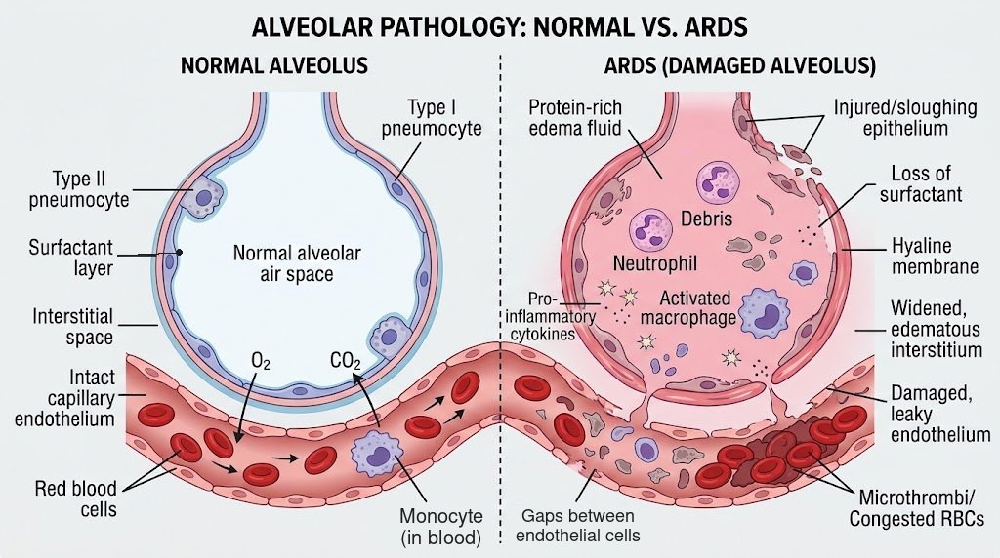
A normal alveolus vs. ARDS: protein-rich edema, hyaline membranes, lost surfactant, and leaky capillaries. Alveolar macrophages normally live in the air space on the alveolar surface; the cell shown in the capillary is a blood monocyte. AI-generated illustration.
ARDS is acute, diffuse, inflammatory lung injury causing increased alveolar-capillary permeability, non-cardiogenic pulmonary edema, loss of aerated lung, decreased compliance, and severe shunt. It is a syndrome, not a disease — there is always an underlying cause.
Causes: direct lung injury (pneumonia, aspiration, inhalation injury, near-drowning, pulmonary contusion) and indirect (sepsis — the most common, pancreatitis, massive transfusion, trauma, shock, drug overdose).
| Severity | P/F ratio | Approximate mortality |
|---|---|---|
| Mild | 200 < P/F ≤ 300 | ~27% |
| Moderate | 100 < P/F ≤ 200 | ~32% |
| Severe | P/F ≤ 100 | ~45% |
A new global definition (2023–2024, sometimes called "Berlin 2.0") was developed to address limitations of the Berlin criteria — notably by including patients on HFNC and NIV rather than only intubated patients, allowing SpO2/FiO2 ratios when arterial gases aren't available, and accommodating resource-limited settings with ultrasound-based imaging criteria.15 You may see either definition referenced. The 2024 global definition adds non-intubated patients on high-flow oxygen at 30 L/min or more, or NIV or CPAP with at least 5 cm H2O, and accepts an SpO2/FiO2 ratio of 315 or less (when SpO2 is 97% or below) in place of the P/F ratio.15
This is the intervention with the clearest mortality benefit, and it comes from the landmark ARDSNet trial.
Turning the patient face-down improves oxygenation by recruiting dependent dorsal lung regions, improving V/Q matching, redistributing pleural pressure and lung strain more evenly, and improving secretion drainage. In the PROSEVA trial, early prolonged proning in severe ARDS produced a substantial mortality reduction — one of the few interventions in critical care with an effect of that size.18
Applied in a general sequence when lung-protective ventilation isn't enough.
| Strategy | Notes |
|---|---|
| Optimize the basics first | Confirm true lung-protective settings, adequate PEEP, effective sedation and synchrony, secretion clearance, diuresis if fluid-overloaded, and that the underlying cause is being treated. Many "refractory" cases are under-optimized. |
| Prone positioning | The rescue therapy with the best mortality evidence. Should be considered early, not last. |
| Neuromuscular blockade | Short-course paralysis (commonly cisatracurium, often ~48 hours) eliminates dyssynchrony and reduces lung strain. Evidence is mixed (ACURASYS vs. ROSE trials), so it's used selectively rather than routinely. Requires deep sedation — always verify sedation before and throughout. |
| Higher PEEP / recruitment maneuvers | PEEP titrated by a table or by esophageal manometry. Sustained recruitment maneuvers can cause hypotension and barotrauma and are used cautiously — monitor the blood pressure closely during them. |
| Inhaled pulmonary vasodilators | Inhaled nitric oxide or epoprostenol improve V/Q matching and oxygenation but have not shown a mortality benefit — used as a bridge. Nitric oxide requires methemoglobin monitoring and cannot be stopped abruptly (rebound hypoxemia and pulmonary hypertension). |
| APRV | An alternative recruitment-focused mode in expert hands. |
| VV-ECMO | For the most severe refractory hypoxemia or hypercapnia, in selected patients at an ECMO center (EOLIA trial and subsequent analyses).20 Recognizing the patient who needs referral and escalating early is the deliverable for your unit, when your hospital does not offer ECMO — late referral worsens outcomes. |
| Conservative fluids, nutrition, VTE and GI prophylaxis, early mobility | Not glamorous, but these determine whether the patient walks out. |
ICU Liberation's ABCDEF bundle is the organizing framework for care of the ventilated patient. Implementation across large health systems is associated with shorter ICU stay, fewer ventilator days, less delirium, and lower mortality — with a dose-response relationship, meaning more complete performance produces better outcomes. Most of it is nursing work.
| Element | What you actually do | |
|---|---|---|
| A | Assess, prevent, and manage pain | Validated tool every shift and PRN (CPOT or BPS if nonverbal, 0–10 if able to report). Treat pain before sedation. Assume procedures hurt — turning, suctioning, dressing changes, line placement. |
| B | Both SAT and SBT | Daily coordinated spontaneous awakening trial and spontaneous breathing trial. See 25.24. |
| C | Choice of analgesia and sedation | Analgesia-first; light sedation to the ordered RASS goal; prefer non-benzodiazepine agents (propofol, dexmedetomidine) over benzodiazepines, which are associated with more delirium. |
| D | Delirium: assess, prevent, manage | CAM-ICU or ICDSC every shift; nonpharmacologic prevention bundle. See 25.26–25.27. |
| E | Early mobility and exercise | Progressive mobility — range of motion, sitting, dangling, standing, ambulating — even while intubated, with the right team and safety screen. This is safe and feasible and prevents ICU-acquired weakness. |
| F | Family engagement and empowerment | Open visitation, family presence on rounds, involving them in reorientation and mobility, honest updates. Reduces family PTSD and helps the patient. |
The modern standard is analgesia-first (analgosedation): treat pain adequately, then add sedation only if still needed — rather than sedating a patient who is actually in pain. Untreated pain causes agitation, tachycardia, hypertension, dyssynchrony, delirium, immunosuppression, and long-term psychological harm.
| Agent | Notes |
|---|---|
| Fentanyl | The workhorse: fast on, fast off, hemodynamically friendly compared with morphine. Boluses and infusion. Accumulates with prolonged infusion and in hepatic impairment. Causes ileus and constipation — a bowel regimen is not optional. |
| Hydromorphone | Longer-acting; useful for intermittent dosing. |
| Morphine | Histamine release → hypotension and pruritus; active metabolites accumulate in renal failure causing prolonged sedation and neurotoxicity. |
| Remifentanil | Ultra-short-acting, organ-independent metabolism. Offset in minutes. No accumulation. |
| Ketamine | Increasingly used as an opioid-sparing adjunct — analgesia without respiratory depression, and it preserves blood pressure. |
| Multimodal adjuncts | Scheduled acetaminophen, gabapentinoids for neuropathic pain, regional anesthesia and epidurals where appropriate, and nonpharmacologic measures — repositioning, warmth, music, family presence, and simply explaining what you're about to do. |
A validated behavioral pain scale for patients who cannot self-report. Self-report remains the gold standard whenever the patient can provide it — use CPOT only when they can't.
| Domain | Score | Description |
|---|---|---|
| Facial expression | 0 | Relaxed, neutral |
| 1 | Tense — frowning, brow lowering, orbit tightening, levator contraction | |
| 2 | Grimacing — all of the above plus eyelids tightly closed | |
| Body movements | 0 | Absence of movement / normal position |
| 1 | Protection — slow cautious movements, touching or guarding the pain site | |
| 2 | Restlessness/agitation — pulling at tubes, attempting to sit up, thrashing, not following commands | |
| Muscle tension (passive flexion/extension of upper limb) | 0 | Relaxed — no resistance |
| 1 | Tense, rigid — resistance to movement | |
| 2 | Very tense or rigid — strong resistance, inability to complete movement | |
| Ventilator compliance (intubated) or Vocalization (extubated) | 0 | Tolerating ventilator / talking in normal tone or silent |
| 1 | Coughing but tolerating / sighing, moaning | |
| 2 | Fighting the ventilator — asynchrony, blocking ventilation, alarms / crying out, sobbing |
Total: 0–8. A score >2 (commonly ≥3) indicates significant pain requiring intervention. Assess at least every shift and with every intervention; assess before and after analgesia to evaluate response. Document the reassessment — the response to your intervention is the part that matters and the part most often omitted.
Note: vital signs alone are not a valid pain scale — tachycardia and hypertension are nonspecific — but a change in them should prompt you to assess for pain using a validated tool. The BPS (Behavioral Pain Scale) is an equally validated alternative; use whichever your unit has standardized.
Target the ordered RASS goal (a common default is 0 to −1). Deeper sedation is reserved for specific indications (severe ARDS, paralysis, raised ICP, refractory status epilepticus). Assess RASS at least every 4 hours and hourly on titrated infusions. If the patient is at goal, titrate down.
| Agent | Profile and nursing considerations |
|---|---|
| Propofol | Rapid on/off — the choice when frequent neuro exams or next-morning extubation are the plan. Hypotension and bradycardia are common. Lipid emulsion: counts as calories (tell nutrition), raises triglycerides, and tubing/bottle changed q12h per policy for infection risk. Watch for propofol-related infusion syndrome (PRIS) at high doses or prolonged use — metabolic acidosis, rising lactate, rhabdomyolysis, hyperkalemia, arrhythmia, and cardiac failure. No analgesia. |
| Dexmedetomidine (Precedex) | Alpha-2 agonist. Sedation without respiratory depression; patients are rousable and cooperative. Favored for delirium reduction and extubation transitions; the 2025 PADIS focused update suggests it over propofol in ventilated adults.21 Causes bradycardia and hypotension, sometimes profound, especially with a loading dose. Mild analgesic effect only. |
| Midazolam / lorazepam | Benzodiazepines. Accumulate substantially — especially in renal and hepatic dysfunction and obesity — and patients can take days to wake. Associated with more delirium, so guidelines favor non-benzodiazepine agents. Still first-line for status epilepticus and alcohol withdrawal. Lorazepam infusions carry propylene glycol toxicity risk (osmolar gap, metabolic acidosis, AKI). |
| Ketamine | Adjunct providing sedation and analgesia while preserving hemodynamics and respiratory drive. |
| Antipsychotics (haloperidol, quetiapine) | Used for agitated delirium symptom control. They do not prevent or shorten delirium and are not a sedation strategy. Monitor QTc — and see Section 21.12's warning about additive QT-prolonging drugs. |
| Agent | Reverses | Critical cautions |
|---|---|---|
| Naloxone (Narcan) | Opioids — competitive mu-receptor antagonist. Onset 1–2 min IV. | In the ICU, titrate in small increments to restore adequate respiration — not to full wakefulness. Giving a full dose to an opioid-dependent or post-op patient precipitates acute withdrawal, severe pain, agitation, hypertension, tachycardia, arrhythmias, and flash pulmonary edema. Its half-life is shorter than most opioids, so re-sedation is expected — the patient needs continued monitoring and may need repeat doses or an infusion. Never give it and walk away. |
| Flumazenil | Benzodiazepines — competitive GABA-A receptor antagonist. | Rarely used in the ICU, and deliberately so. It can precipitate refractory seizures — particularly in patients on chronic benzodiazepines, in mixed overdoses (especially with TCAs or other pro-convulsants), and in known seizure disorders. It also precipitates acute withdrawal. Shorter half-life than most benzodiazepines, so re-sedation occurs. The safer approach to benzodiazepine over-sedation in a critically ill patient is usually supportive care and time. If it is ordered, know why, and have seizure precautions and airway support ready. |
| Sugammadex | Rocuronium/vecuronium — encapsulates the drug. | Rapid and complete reversal, including from deep block. Should be available whenever rocuronium is used for RSI. Does not reverse succinylcholine or cisatracurium. Can interact with hormonal contraceptives. |
| Neostigmine (+ glycopyrrolate) | Non-depolarizing NMBAs | Acetylcholinesterase inhibitor; requires some spontaneous recovery to work. Muscarinic effects (bradycardia, secretions) are why an anticholinergic is co-administered. |
After days of continuous opioids, benzodiazepines, or dexmedetomidine, the body adapts, and stopping or weaning too quickly can cause iatrogenic withdrawal. Daily SATs and titrating down at goal (25.24) are still the routine; this is about the patient who has been on drips a long time.
The Awakening and Breathing Coordination protocol pairs a daily spontaneous awakening trial with a daily spontaneous breathing trial. Coordinating them — doing the SAT first, then the SBT — produces more ventilator-free days and better outcomes than either alone.23 This is a nurse-and-RT-driven process, typically done in the early morning, and it is one of the highest-value things you'll participate in.
Safety screen — hold the SAT if: the patient is on active sedation for seizures or alcohol withdrawal, is receiving a neuromuscular blocker, has active agitation requiring escalating sedation, has active myocardial ischemia, has raised ICP, or is on high or escalating vasopressor support (criteria vary by protocol — use yours).
Perform: stop (or substantially reduce) sedative infusions. Analgesia for active pain is generally continued — this is an awakening trial, not a pain trial.
Pass: the patient opens eyes to voice, follows simple commands, and remains calm — typically able to perform three or four simple tasks.
Fail: sustained anxiety or agitation, RR >35 for several minutes, SpO2 <88%, respiratory distress, acute arrhythmia, or hemodynamic instability. Restart sedation at half the prior dose and titrate up — restarting at the previous rate defeats the purpose.
Readiness screen: the underlying cause of respiratory failure is improving; adequate oxygenation (commonly P/F >150–200, FiO2 ≤0.4–0.5, PEEP ≤5–8); hemodynamic stability with minimal or no vasopressors; an intact respiratory drive; adequate cough and manageable secretions; and no significant acidosis. Some units use the rapid shallow breathing index (RSBI = respiratory rate ÷ tidal volume in liters), where <105 predicts a higher likelihood of successful weaning.
Perform: place the patient on minimal support — CPAP with low pressure support (commonly 5/5), or a T-piece — for 30 minutes to 2 hours.
Failure criteria to watch continuously: RR >35 sustained, SpO2 <90%, HR >140 or a >20% change, SBP >180 or <90, sustained accessory muscle use, paradoxical abdominal breathing, diaphoresis, marked anxiety or agitation, or new arrhythmia. Return to full support and rest the patient rather than pushing through; failing an SBT and being rested is normal, not a setback.
Pass → assess for extubation: a passed SBT is necessary but not sufficient. Also required: adequate mental status to protect the airway, effective cough, manageable secretion burden, and consideration of a cuff-leak test in patients at risk for laryngeal edema (prolonged intubation, traumatic intubation, large tube).
A flexible scope passed through the ETT, tracheostomy, or upper airway to visualize the airways, obtain samples, or perform therapy.
Indications: diagnostic sampling (bronchoalveolar lavage or protected brush for suspected pneumonia or VAP, biopsy for malignancy or interstitial disease), therapeutic clearance of mucus plugs or lobar atelectasis, evaluation and management of hemoptysis, foreign body removal, assessment of airway trauma or inhalation injury, and guiding percutaneous tracheostomy or difficult intubation.
An acute, fluctuating disturbance of attention, awareness, and cognition caused by an underlying medical condition. It is extremely common in ventilated ICU patients, and it is independently associated with longer ICU stay, prolonged ventilation, long-term cognitive impairment, and increased mortality. It is not a benign inconvenience and it is not "just ICU psychosis."
| Subtype | Presentation |
|---|---|
| Hyperactive | Agitated, restless, pulling at lines, combative. Easily recognized — and the least common. |
| Hypoactive | Withdrawn, flat, quietly inattentive, slow to respond. The most common and most frequently missed, and associated with worse outcomes. Often mistaken for depression, fatigue, or "a good patient." |
| Mixed | Fluctuating between the two — common. |
Risk factors: advanced age, baseline cognitive impairment or dementia, benzodiazepines, deep sedation, mechanical ventilation, sepsis, immobility, sleep disruption, pain, restraints, dehydration, sensory deprivation (missing glasses and hearing aids), metabolic derangement, and alcohol or substance withdrawal.
Treatment: address the cause and apply the nonpharmacologic bundle. Antipsychotics do not prevent delirium and do not shorten its duration — they are used only for distressing agitation or symptoms threatening safety, at the lowest effective dose, with QTc monitoring. Dexmedetomidine is often preferred over benzodiazepines when sedation is needed in a delirious patient.
Delirium must be screened for with a validated tool, not eyeballed — clinical impression misses the majority of cases, especially hypoactive delirium. Screen at least once a shift (many policies require twice on day shift), and with any mental status change (13.4).
Assess only if the patient is arousable (RASS ≥ −3). Delirium is present when Features 1 and 2 are present, plus either 3 or 4.
| Feature | Assessment |
|---|---|
| 1. Acute onset or fluctuating course | Is there a change from baseline mental status, or has it fluctuated in the past 24 hours (including fluctuating RASS)? |
| 2. Inattention | The letters test ("SAVEAHAART" — squeeze on A) or a picture test. More than 2 errors = positive. This is the cardinal feature. |
| 3. Altered level of consciousness | Any RASS other than 0 (alert and calm). |
| 4. Disorganized thinking | Four simple yes/no questions (e.g., "Will a stone float on water?") plus a command. More than 1 error = positive. |
The ICDSC (Intensive Care Delirium Screening Checklist) is an equally validated 8-item alternative scored 0–8, with ≥4 suggesting delirium; it can be completed from observations over the shift, which some units prefer. Use whichever your unit has standardized, and document the result — a positive screen should trigger a search for the cause and a review of sedation, not just a note.
A processed-EEG monitor using a forehead sensor to produce a dimensionless number from 0 (isoelectric EEG) to 100 (fully awake), estimating depth of hypnosis.
| BIS value | Interpretation |
|---|---|
| 90–100 | Awake |
| 70–90 | Light to moderate sedation |
| 40–60 | General anesthesia / deep sedation — the usual target for a paralyzed or deeply sedated patient |
| <40 | Deep hypnotic state; burst suppression at very low values (sometimes an intentional target in refractory status epilepticus or raised ICP) |
Where it's genuinely useful: the chemically paralyzed patient, in whom RASS and CPOT are meaningless because the patient cannot move, grimace, or fight the ventilator. Also used in barbiturate coma and titrated deep sedation.
Indications in the ICU: facilitating intubation; severe ARDS with dyssynchrony or refractory hypoxemia (short course, commonly ~48 hours); therapeutic hypothermia with refractory shivering; raised ICP unresponsive to other measures; status asthmaticus with severe dyssynchrony; and selected procedures.
| Agent | Notes |
|---|---|
| Cisatracurium | Undergoes Hofmann elimination — spontaneous degradation independent of the liver and kidneys. The preferred infusion agent in renal or hepatic failure, and the agent used in most ARDS trials. |
| Rocuronium | Rapid onset; hepatically cleared. Reversible with sugammadex. |
| Vecuronium | Hepatic and renal clearance — accumulates significantly in organ dysfunction, causing prolonged paralysis. |
| Succinylcholine | Intubation only, never an infusion. See 25.9 for its contraindications. |
Complications: prolonged paralysis after discontinuation (especially with vecuronium in organ failure), ICU-acquired weakness and critical illness myopathy (risk increased with corticosteroid co-administration), pressure injuries, corneal injury, VTE, and awareness. Use the shortest effective duration — a daily "paralytic holiday" or reassessment of need is common practice.
A peripheral nerve stimulator delivers four successive electrical stimuli (2 Hz over 2 seconds) over a peripheral nerve, and you count the resulting muscle twitches. It objectively measures depth of neuromuscular blockade so you can titrate to the minimum effective dose.
| Twitches | Approx. receptor blockade | Interpretation |
|---|---|---|
| 4/4 | <~75% | Minimal or no block — likely underdosed if paralysis is the goal |
| 3/4 | ~75% | Light block |
| 2/4 | ~80% | The usual ICU target — typically 1–2 twitches. Effective paralysis with the ability to recover. |
| 1/4 | ~90% | Deep block — acceptable in some protocols |
| 0/4 | ~100% | Too deep for most indications — reduce or hold the infusion per protocol. Over-blockade prolongs recovery and increases weakness. |
Fade — progressively weaker twitches across the four — indicates non-depolarizing blockade; depolarizing blockade (succinylcholine) characteristically shows no fade. Recovery is often assessed by the TOF ratio (fourth twitch amplitude ÷ first); a ratio >0.9 is the accepted threshold for adequate recovery from residual blockade.
A consolidated shift checklist. Most of these appear elsewhere in this guide; this is the version to work from at the bedside.
| Domain | Actions |
|---|---|
| Airway | Verify tube position and lip line; secure the tube; cuff pressure per policy; suction only as indicated with pre-oxygenation; assess secretion character and volume; in-line suction; humidification. |
| Ventilator | Verify settings against orders each shift and after changes; review alarm limits with RT; monitor PIP, plateau, and exhaled tidal volume; note total vs. set respiratory rate; assess for dyssynchrony; check circuit integrity and drain condensate away from the patient. |
| Oxygenation & ventilation | Continuous SpO2 and capnography; ABGs as indicated with settings documented; wean FiO2 toward target saturation. |
| VAP prevention | HOB 30–45°; oral care with toothbrushing per policy, often every 2–4 hours (no routine chlorhexidine); subglottic suctioning if available; daily SAT and extubation readiness assessment; hand hygiene; avoid unnecessary circuit changes.9 |
| Sedation, pain, delirium | CPOT and RASS on schedule; analgesia-first; target the ordered RASS goal and titrate down when at goal; CAM-ICU each shift; daily SAT; delirium prevention bundle.25 |
| Mobility | Progressive mobility per protocol, including while intubated; range of motion at minimum; PT/OT involvement. |
| GI & nutrition | Early enteral nutrition per protocol; HOB elevated; tolerance monitoring; stress ulcer prophylaxis; bowel regimen (opioids plus immobility guarantee constipation); oral care. |
| Skin & VTE | q2h turns; heel offloading; device-related pressure injury checks — ETT and securing device on the lips, tubing on the ears and face, pulse oximeter probes; Braden; VTE prophylaxis mechanical and chemical. |
| Safety | BVM, suction, and reintubation equipment at the bedside verified each shift; alarms audible and appropriately limited; restraints only when necessary with frequent reassessment and documentation; two people minimum for any repositioning or transport. |
| Communication & humanity | Provide a communication board or writing tool; explain everything before you do it, even to a sedated patient; orient continuously; involve family; protect sleep; give them their glasses and hearing aids. Assume the patient can hear you. Survivors remember far more than staff expect, and what they remember shapes their recovery. |
A tube placed in the pleural space (or mediastinum) to evacuate air, fluid, blood, or pus and restore negative intrapleural pressure so the lung can re-expand.
| Indication | Notes |
|---|---|
| Pneumothorax | Air in the pleural space. Tube placed apically / anteriorly because air rises. Tension pneumothorax is treated first with immediate needle decompression. |
| Hemothorax | Blood. Large-bore tube, placed basally / posteriorly because fluid settles. Monitor output volume closely — large or briskly continuing output is a surgical indication. |
| Pleural effusion / empyema / chylothorax | Fluid or pus drainage. |
| Post-thoracic surgery | Routine drainage and lung re-expansion. |
Modern units are single disposable systems with three functional chambers:
Removal: typically when drainage is minimal, there's no air leak, and the lung is re-expanded on x-ray. Pre-medicate for pain. The patient is asked to perform a Valsalva maneuver or hold their breath at end-inspiration during removal; an occlusive dressing is applied immediately, and a follow-up chest x-ray is obtained. Monitor afterward for recurrent pneumothorax and subcutaneous emphysema.
| Alarm | Common causes | First actions |
|---|---|---|
| High pressure (peak) | Coughing, biting, secretions, kinked tube or circuit, water in the circuit, bronchospasm, mainstem intubation, pneumothorax, falling compliance, patient-ventilator dyssynchrony | Look at the patient; suction; bite block; check the tube depth and circuit; listen to both sides. Compare peak with plateau: high peak with a normal plateau is airway resistance; both high is compliance (25.14). |
| Low pressure, low tidal volume, or low minute ventilation | Disconnection, a leak (circuit, cuff, chest tube air leak), the ETT pulled back above the cords, reduced patient effort | Reconnect; check the cuff pressure and the tube depth; listen for a leak at the mouth. If unsure, bag the patient on 100% oxygen and call RT. |
| Apnea | Over-sedation, neurologic change, a spontaneous mode with no effort, disconnection | Stimulate; check sedation; switch to a mode with a backup rate per RT and the provider. |
| High respiratory rate | Pain, anxiety, delirium, acidosis, hypoxemia, fever, dyssynchrony, auto-triggering from a leak or water | Assess and treat the cause; ABG; tell RT and the provider. |
| Low SpO2 or high ETCO2 | DOPE (25.10): Displacement, Obstruction, Pneumothorax, Equipment; also breath stacking (auto-PEEP) | Disconnect and bag with 100% oxygen if the cause is not obvious; call for help. |
| Mode | How it works | Nursing points |
|---|---|---|
| Pressure-regulated volume control (PRVC, VC+, AutoFlow) | Volume-targeted, pressure-controlled breaths: the ventilator adjusts the pressure breath to breath to reach the set tidal volume | If the lungs get stiffer, pressure rises to deliver the volume; watch the peak pressure and the delivered volume. Strong effort can make the ventilator lower its support. |
| SIMV with pressure support | Set mandatory breaths synchronized with the patient; spontaneous breaths between are pressure-supported | Used less often now; watch the spontaneous tidal volumes. |
| Pressure support (PSV, CPAP + PS) | Every breath is patient-triggered and supported by a set pressure; there is no set rate (apnea backup ventilation starts if the patient stops breathing) | Used for weaning and SBTs; watch the respiratory rate, tidal volume, and apnea alarms. |
| APRV (airway pressure release ventilation) | A long high pressure (P-high, T-high) with brief timed releases (P-low, T-low); the patient breathes spontaneously throughout | A recruitment mode for severe hypoxemia; the numbers look unusual; avoid deep sedation if the team wants spontaneous breathing; do not change settings without RT. |
Keep at the bedside of every tracheostomy patient: a spare tube of the same size and one size smaller, the obturator, suction, oxygen, a bag-valve mask, and the tracheostomy information (size, date, and whether the upper airway is patent) posted per policy.
This subsection opens the acid-base chapter; 25.37 to 25.40 take the four primary disorders one at a time, and 25.41 works through mixed disturbances as bedside cases. The basic method for reading a gas (pH, then PCO2 and HCO3, then compensation) and the compensation formulas are in 25.2 and are not repeated here. What follows is the layer underneath: what pH is and why the body defends it, how the lungs and kidneys do that, the four primary disorders, what a venous sample and the chemistry panel can and cannot tell you, the anion gap and its two refinements, how pH moves potassium, and one step-by-step approach that ties it together. Metabolic acidosis, the disorder you will meet most in the ICU, has its own subsection (25.37), followed by metabolic alkalosis (25.38), respiratory acidosis (25.39) and respiratory alkalosis (25.40).
| At a glance | Acid-base foundations |
|---|---|
| The number | Normal arterial pH is 7.36 to 7.44, and the body makes about 1 mEq of acid per kilogram every day (about 70 mEq in a 70 kg adult) that has to be dealt with to keep it there.29 Most labs, and 25.2, round the range to 7.35–7.45. |
| Two organs | The lungs set the PCO2 and the kidneys set the bicarbonate, and each can be adjusted on its own.29 |
| Two speeds | Respiratory compensation is complete within about 12 to 24 hours; the kidneys need 3 to 5 days to reach their full response to an acid load.29 |
| Always calculate | The anion gap in every metabolic acidosis, corrected for a low albumin, then the delta ratio if the gap is high. |
| Always check | The potassium. It moves with the pH, and treating the acidosis moves it again. |
What is pH actually measuring?
The concentration of free hydrogen ions (acid) in the blood. The scale is upside down and logarithmic: a lower pH means more acid, and a small change in the number is a large change in acid. A pH of 7.40 is a hydrogen ion concentration of about 40 nanomoles per liter, a tiny amount compared with sodium or potassium, which are measured in millimoles.1 That is why the pH is reported to two decimal places and why a move from 7.40 to 7.10 is a big event: the acid concentration has doubled (our arithmetic: 10−7.1 is about 79 nmol/L).
Acidemia or acidosis: is there a difference?
Yes, and using the words carefully keeps you out of trouble with mixed disorders. Acidemia and alkalemia describe the blood (a pH below or above the normal range); acidosis and alkalosis describe the processes that push the pH down or up.1 A patient can have two processes at once and a normal pH. The pH tells you which one is winning, not how many there are.
Why does a low pH matter to the patient in front of me?
Severe acidemia, a pH of about 7.20 or lower, is linked to weaker cardiac contraction, vasodilation, arrhythmias, hyperkalemia and a blunted response to catecholamines.30,31
At the bedside: this is the patient whose norepinephrine dose keeps climbing with little to show for it. When a pressor seems to have stopped working, look at the last pH and tell the team; the acidosis may be part of the reason. Watch the monitor for ectopy and peaked T waves, and look at how the patient is breathing: deep, fast breaths are the lungs compensating, and a patient who stops doing that is tiring, not improving.
What are the body’s defenses, in order?
Three, working at three speeds. First, buffers soak up acid on the spot. The bicarbonate and carbon dioxide pair is the most important buffer, because it is large and because its two halves are regulated separately.29 Second, the lungs change how much CO2 is exhaled, which changes the PCO2 within minutes to hours. Third, the kidneys change how much bicarbonate the blood holds, which takes days (table above).
It helps to see pH as a ratio: bicarbonate (the kidneys’ number) over PCO2 (the lungs’ number). Anything that lowers bicarbonate or raises PCO2 lowers the pH. Compensation is the other organ moving its number in the same direction to pull the ratio back.
What exactly do the kidneys do?
Two jobs. They filter about 4,500 mEq of bicarbonate a day and have to reclaim nearly all of it, 70 to 80% of it in the proximal tubule.29 They also make new bicarbonate by excreting the day’s acid, roughly half to two-thirds of it as ammonium and the rest as titratable acid.29 When acidosis persists, the kidneys can raise ammonium excretion several-fold, which is their main reserve.29 Potassium changes that reserve: a high potassium suppresses ammonia production and a low potassium increases it.29
At the bedside: each organ failing takes away one defense. A patient with acute kidney injury or advanced kidney disease has lost the slow defense, so acid accumulates day by day. A patient who is deeply sedated or paralyzed on a set ventilator rate has lost the fast one: the ventilator will not breathe faster because the bicarbonate fell. In that patient a new metabolic acidosis shows up as a falling pH with an unchanged PCO2, and someone has to decide whether to change the ventilator. That conversation starts with you reporting the gas along with the current rate and tidal volume.
Why does compensation take the pH only part of the way back?
Compensation returns the pH toward normal but does not overshoot it, so a pH that has landed on the other side of 7.40, or a PCO2 or bicarbonate outside the expected range, means a second disorder is present.1 The expected ranges for each disorder are in the compensation table in 25.2.
Each primary disorder is named for the number that moved first: a low bicarbonate (metabolic acidosis), a high bicarbonate (metabolic alkalosis), a high PCO2 (respiratory acidosis) or a low PCO2 (respiratory alkalosis).1 The causes below are the ICU short list; each disorder gets full treatment in its own subsection.
| Disorder | What moved first | Compensation | The question to ask |
|---|---|---|---|
| Metabolic acidosis | HCO3 down | Lungs: PCO2 down (breathing deeper and faster) | Is an acid being added (lactate, ketones, a toxin, kidney failure) or is bicarbonate being lost (diarrhea, the kidney, saline)? See 25.37. |
| Metabolic alkalosis | HCO3 up | Lungs: PCO2 up (breathing less) | Where did the acid or chloride go (vomiting, gastric suction, diuretics), and what is keeping the kidney from correcting it (low volume, low chloride, low potassium)? See 25.38. |
| Respiratory acidosis | PCO2 up | Kidneys: HCO3 up, over days | Why is ventilation not keeping up: the drive (sedation, opioids), the nerves and muscles, the lungs and airways, or the ventilator settings? See 25.39. |
| Respiratory alkalosis | PCO2 down | Kidneys: HCO3 down, over days | What is driving the breathing: hypoxemia, pain or anxiety, sepsis, a pulmonary embolism, the liver, a drug, or a ventilator set too high? See 25.40. |
At the bedside: more than one of these at a time is normal in the ICU. A septic patient with lactic acidosis who is over-ventilated has two; a patient with COPD on diuretics has two. Name each one separately when you report, because each has its own cause and its own fix.
The method is in 25.2: pH, then PCO2 and HCO3, decide which one matches the pH, check compensation against the table, then look at oxygenation separately. Three reminders from there are worth carrying into this chapter: a normal pH does not mean a normal gas; a gas without the FiO2 and ventilator settings written beside it cannot be interpreted; and the anion gap comes from the chemistry panel, not from the gas, so the two should be drawn close together in time.
Can a venous gas stand in for an arterial one?
For pH, usually yes. For CO2, only as a screen. For oxygen, no. In a meta-analysis of 18 studies and 1,768 patients, arterial pH was only about 0.03 higher than peripheral venous pH.32 PCO2 did not agree well enough to swap: the 95% prediction interval for the difference between arterial and venous values ran from −10.7 to +2.4 mmHg, and arterial PO2 was about 37 mmHg higher than venous.32
At the bedside: a venous gas is a reasonable way to follow the pH in DKA or to trend a metabolic acidosis without repeated arterial sticks. When the PCO2 or the oxygen matters, the team will want an arterial sample before acting on it. Label every sample arterial or venous, because the person reading it cannot tell from the numbers alone. Which sample your unit uses for which purpose is set locally.
The evidence: An earlier review of emergency department studies found venous bicarbonate within about 1.4 mmol/L of arterial on average, with 95% limits of agreement of roughly ±5 mmol/L, and judged venous pH and bicarbonate usable in patients who are not in shock.33
Why are there two different bicarbonate numbers in the chart?
Because they are measured differently. The “CO2” on a chemistry panel is total carbon dioxide measured in venous serum; about 95% of it is bicarbonate, so it is read as the bicarbonate.34 The bicarbonate printed on a blood gas is not measured at all; the analyzer calculates it from the measured pH and PCO2.34 The two usually sit within a couple of mEq/L of each other.
At the bedside: use the chemistry-panel value for the anion gap, since the sodium and chloride come from the same tube. If the two bicarbonates disagree by a wide margin, suspect the sample first: drawn at different times, a tube that sat, or a venous sample from an arm with a tourniquet left on. Redraw before the team chases it.
What is the anion gap, and why does it sort metabolic acidosis so well?
The anion gap is the sodium minus the sum of the chloride and the bicarbonate.1,35 Blood is electrically neutral, so the “gap” is not empty; it is the anions the panel does not measure, mostly albumin. When an acid is added to the blood, its hydrogen ion uses up bicarbonate and its anion stays behind. If that anion is chloride (as with saline or diarrhea), the chloride rises and the gap does not change. If it is lactate, a ketone or a toxin metabolite, nothing on the panel rises to replace the lost bicarbonate, and the gap widens. So a high gap means “an acid we are not measuring has been added,” and the list of what that can be is short (25.37).
The normal range depends on the analyzer: with modern ion-selective electrodes it is roughly 3 to 11 mEq/L, lower than the 8 to 16 reported with older methods.35 Use the range your lab prints. The patient’s own earlier gap, if one is on file, is the best baseline of all.
Why correct for albumin?
Because most ICU patients have a low albumin, and a low albumin hides a gap. Albumin is the main unmeasured anion, so for every 1 g/dL the albumin is below 4, about 2.5 mEq/L should be added to the measured anion gap.1,36
At the bedside: a septic patient with an albumin of 2.0 and a measured gap of 11 looks normal. Corrected, the gap is 16 (11 + 2.5 × 2, our arithmetic), and the lactate deserves a look. If the albumin was not drawn with the panel, ask whether it can be added.
The evidence: A very low or negative gap is a finding too: it points to a low albumin, a paraprotein, or lithium or bromide in the blood.35
What is the delta ratio (delta gap) for?
It checks whether a high-gap acidosis is the only metabolic disorder present. In a pure anion gap acidosis the rise in the gap is roughly matched by the fall in bicarbonate, and the delta ratio, the rise in the gap divided by the fall in bicarbonate, tests that.1,37
| Delta ratio | What it suggests |
|---|---|
| Below 1 | The bicarbonate has fallen more than the gap explains, so a normal-gap (hyperchloremic) acidosis is present as well.1,37 |
| 1 to 2 | A high-gap acidosis on its own; the ratio averages about 1.6 in lactic acidosis and sits closer to 1 in ketoacidosis, because ketones are lost in the urine.1,37 |
| Above 2 | The bicarbonate started high: a metabolic alkalosis, or a compensated chronic respiratory acidosis, lies underneath.1 |
Two worked examples (our arithmetic, using 12 as the normal gap and 24 as the normal bicarbonate):
Evidence is mixed. The cutoffs are approximate, because normal gaps and normal bicarbonates differ from person to person, so the ratio is a prompt to look for a second disorder and not a diagnosis by itself.37
How does pH move potassium?
As a rule, acidemia moves potassium out of cells and alkalemia moves it in.38 The old picture of hydrogen ions swapping places with potassium is too simple; the shift runs through the cell’s sodium and bicarbonate transporters, and that is why the kind of acid matters. A mineral (non-gap, hyperchloremic) acidosis shifts far more potassium out of cells than an organic acidosis such as lactic acidosis, and respiratory disorders shift less than metabolic ones.38
At the bedside: do not expect the potassium to track the pH by a fixed amount. A patient with a lactate of 8 and a potassium of 6.5 probably has another reason for the potassium (kidney injury, tissue breakdown, a drug), so report both and do not write the potassium off as “just the acidosis.”
Then why is the potassium high in DKA?
In DKA the high potassium at presentation comes mainly from the lack of insulin and from hypertonicity, more than from the acid itself.38 Insulin, beta-2 stimulation and alkalemia all drive potassium into cells.38 So the moment insulin starts, the potassium falls, and it falls from a body that is already depleted (25.37).
What does this mean when the acidosis is being treated?
Whatever corrects the pH pulls potassium back into cells: insulin, bicarbonate, a higher ventilator rate, even an albuterol treatment. A potassium that was normal during the acidosis can be low an hour later. An acidosis with a low potassium at the start narrows the cause: diarrhea and proximal or distal renal tubular acidosis lose potassium along with bicarbonate.39
At the bedside: before bicarbonate or an insulin infusion starts, know the last potassium and when the next one is due. Keep the patient on the monitor, have replacement ordered before you need it, and check the magnesium, since a low magnesium makes potassium hard to replace (27.18).
The standard physiological read goes in a fixed order: the history, the pH, the primary disorder, the expected compensation, the anion gap, and then the delta ratio.1 The version below adds the bedside pieces.
Worked example (our arithmetic). A patient in septic shock: pH 7.22, PCO2 28, HCO3 11; Na 138, Cl 104, albumin 2.4; lactate 6. Acidemia, with a low bicarbonate: metabolic acidosis. Expected PCO2 by Winter’s formula = 1.5 × 11 + 8 = 24.5 (± 2), so 28 is a little higher than it should be: the patient is not breathing off as much CO2 as this acidosis calls for. Gap = 138 − 115 = 23; corrected for albumin = 23 + 2.5 × 1.6 = 27. Rise in gap = 15, fall in bicarbonate = 13, ratio about 1.2: a high-gap acidosis without a second metabolic disorder. Reported in one sentence: “high-gap metabolic acidosis, lactate 6, and the PCO2 is higher than expected, so I am worried about the work of breathing.” That last clause is the part that changes what happens next.
Answers: 1. The lungs (complete in about 12 to 24 hours); the kidneys (3 to 5 days). 2. Measured gap = 136 − 114 = 22; corrected = 22 + 2.5 × 2 = 27. 3. Rise in gap 15 (27 − 12), fall in bicarbonate 10 (24 − 14), ratio 1.5: a high-gap acidosis alone. 4. Neither pairing is trustworthy 3 hours apart; the gap needs sodium, chloride and bicarbonate from the same tube, so use the panel’s own CO2 with its own sodium and chloride, and repeat the gas if the pH matters now. 5. No. The level is high because insulin is missing and the blood is hypertonic; the body is depleted, and the level will fall once insulin starts.
Metabolic acidosis is the acid-base disorder behind most of the gases you will send at 0300: the septic patient, the DKA admission, the overdose, the kidney that has stopped working. This subsection sorts the causes the way the anion gap sorts them, then takes each in turn: what is happening, what the patient looks like, which tests confirm it, what you watch and do, and why the team treats it the way it does. It builds on 25.36 and points to 20.2 (lactate types), 27.16 (DKA and HHS) and 30.2 (toxidromes) where the detail already lives.
| At a glance | Metabolic acidosis |
|---|---|
| What it is | A primary fall in bicarbonate, from an acid being added, bicarbonate being lost, or the kidneys failing to excrete the daily acid load.1,39 |
| Expected response | The PCO2 should fall to about 1.5 × the bicarbonate + 8 (± 2), which is Winter’s formula.1 Higher than that means the patient is not keeping up (25.2). |
| First sort | The anion gap, corrected for albumin (25.36): high gap or normal gap. |
| The treatment | The cause. Bicarbonate is a bridge for selected patients, not the fix (Treatment concepts, below). |
| The trap | Potassium: often normal or high while the body is depleted, then falling fast as the acidosis is treated. |
| High anion gap: an unmeasured acid was added | Normal anion gap: bicarbonate was lost or chloride was added |
|---|---|
| The mnemonic GOLD MARK covers the list: Glycols (ethylene and propylene), Oxoproline, L-lactate, D-lactate, Methanol, Aspirin, Renal failure and Ketoacidosis.40 | Bicarbonate lost from the gut (diarrhea, fistulas, ureteral diversions) or from the kidney (renal tubular acidosis), impaired acid excretion in kidney disease, and large volumes of chloride-rich fluid such as saline.39 |
In the ICU three causes account for most high-gap acidosis: lactate, ketones and kidney failure. Check those first; go looking for toxins when they do not explain the gap or the story suggests an ingestion.
What does the patient look like?
The lungs answer a falling bicarbonate by blowing off CO2, so the classic sign is deep, fast, sighing breathing (Kussmaul breathing) without the wheeze or crackles of a lung problem. The patient may say they cannot catch their breath while the oxygen saturation is normal. Nausea, vomiting, abdominal pain and drowsiness are common and not specific. With severe acidemia come hypotension that responds poorly to pressors and an irritable heart (25.36).
At the bedside: count the respiratory rate yourself for a full minute and describe the depth. A respiratory rate of 32 with a clear chest and a normal saturation is a metabolic acidosis until a gas says otherwise. A patient whose rate is falling while the bicarbonate is not rising is tiring, and needs the provider at the bedside.
Why does diarrhea cause acidosis?
Diarrheal fluid carries bicarbonate out of the body, and whether acidosis develops depends on both how much bicarbonate the fluid holds and how much of it there is; secretory diarrhea causes acidosis more often than inflammatory diarrhea.39 Potassium is lost in the stool as well, so the usual picture is a normal-gap acidosis with a low potassium.39
At the bedside: measure the stool. Output from a rectal tube or fecal management system, an ileostomy or a fistula counts in the I&O, and liters a day explains a falling bicarbonate. Expect potassium and magnesium replacement, watch for volume depletion, and protect the skin. High-output C. difficile, tube-feeding intolerance and laxative overuse are the common ICU sources.
How does the team tell a gut cause from a kidney cause?
Usually from the history. When it is unclear, the urine answers it. The urine anion gap (urine sodium plus potassium minus chloride) is a stand-in for urine ammonium: when the kidneys are responding properly to an acidosis, as in diarrhea, it is clearly negative, roughly −20 to −50 mEq/L, and a value that is less negative or positive suggests the kidneys are not excreting ammonium.39
Evidence is mixed. The urine anion gap misleads when the urine sodium is below about 25 mEq/L, as in a volume-depleted patient, and when other anions such as ketones are in the urine.39 In those cases the team may use the urine osmolal gap or simply treat the volume depletion and recheck.
At the bedside: the order is a random urine for sodium, potassium and chloride (sometimes osmolality and pH). Send it before a diuretic dose if you can, and note on the handoff that it was sent.
Can IV fluid cause it?
Yes: large volumes of 0.9% saline, which contains no bicarbonate, lower the serum bicarbonate and raise the chloride, a pattern called dilution acidosis, and recognizing it avoids unnecessary testing.39
Why your team chooses this. When the chloride is climbing and the bicarbonate is drifting down after several liters of saline, the team often switches to a balanced crystalloid (lactated Ringer’s or Plasma-Lyte). The acidosis itself is usually mild; the point is to stop adding to it and to stop it from being mistaken for a worsening illness. Fluid choice is covered in Section 28.
Why does lactate rise in septic shock?
For more than one reason, which is why a single number can mislead. The two types (A, from poor oxygen delivery; B, from everything else) are laid out in 20.2. In sepsis the lactate reflects tissue hypoperfusion, faster glycolysis driven by epinephrine acting on beta-2 receptors, and slower clearance by the liver and kidneys, in proportions that differ from patient to patient.31 Surviving Sepsis 2026 suggests measuring lactate in adults with possible sepsis.41
At the bedside: trend it. Draw the repeat at the ordered time, from a free-flowing sample, and send it promptly, because a tube that sits keeps making lactate. A lactate that falls with resuscitation is reassuring; one that rises on an epinephrine infusion may be the drug (21.16); one that is high with a normal blood pressure should make you ask what is ischemic (20.2). Report the lactate with the MAP, the urine output, the skin and capillary refill, and the pressor doses, since the number means little alone.
What are the less common causes?
Lactic acidosis without shock has a long list: metformin, thiamine deficiency, liver failure, seizures, malignancy, propofol infusion syndrome, linezolid, nucleoside reverse transcriptase inhibitors, cyanide and carbon monoxide.31 Three deserve a closer look because the nurse is often the one holding the clue.
The evidence: In ethylene glycol poisoning, some analyzers read the metabolite glycolate as lactate, producing a falsely high lactate.43
Why your team chooses this. The team treats the cause of a lactic acidosis (perfusion, the infection, the ischemic bowel, the drug) and uses the lactate as a marker of whether that is working. Giving bicarbonate to make the number look better does not treat the patient; where it may still have a place is under Treatment concepts.
All three come from the same switch: too little insulin effect for the amount of counter-regulatory hormone, so fat is broken down and the liver turns it into ketoacids. They differ in the glucose, the severity and the treatment.
DKA: what defines it, and what closes it?
The 2024 consensus requires three things together: diabetes or a glucose of 200 mg/dL or more, a beta-hydroxybutyrate of 3.0 mmol/L or more (or urine ketones of 2+ or more), and a pH below 7.3 or a bicarbonate below 18 mmol/L.44 The full DKA and HHS comparison, fluids, insulin rates, the dextrose switch and the transition to subcutaneous insulin are in 27.16. The acid-base points that belong here:
Potassium in DKA, in depth: why is it the dangerous part?
Because the number you see first is not the truth. Days of osmotic diuresis and vomiting have emptied the body’s potassium stores, while the lack of insulin and the hypertonic blood hold the serum level up (25.36). The first potassium is often normal or high in a patient who is profoundly depleted. Then treatment pushes potassium into cells from three directions at once: insulin, the correction of the acidosis, and fluids that dilute it and restore urine losses. The level can fall quickly, and a low potassium stops hearts.
| Potassium before or during insulin | 2024 consensus |
|---|---|
| Below 3.5 mmol/L | Hold insulin and give potassium at 10 to 20 mmol per hour until the level is above 3.5.44 |
| 3.5 to 5.0 mmol/L | Add 10 to 20 mmol of potassium to each liter of IV fluid to keep the level between 4 and 5.44 |
| Above 5.0 mmol/L | Give no potassium, and recheck the level every 2 hours.44 |
At the bedside: do not start the insulin infusion until you have seen a potassium result, and say the number out loud in handoff. Confirm urine output before potassium goes in. Keep the patient on continuous monitoring and look for flattened T waves, U waves and new ectopy. Check that potassium is ordered in the fluids once the level is in range, check the magnesium and phosphate, and draw the scheduled labs on time: the 2-hour and 4-hour panels are safety checks, not paperwork. Maximum potassium rates and concentrations for peripheral and central lines are set by policy.
Starvation ketosis: when does it matter?
During a prolonged fast the liver makes ketones as the brain’s alternative fuel, and blood ketone levels climb over days to weeks to several millimoles per liter.45 Because some insulin is still being secreted, the ketosis of simple fasting is held in check and the acidosis is usually mild.45 It matters in the ICU as an amplifier. Starvation, pregnancy, alcohol and SGLT2 inhibitors are recognized settings for ketoacidosis with a near-normal glucose.44
At the bedside: a patient who has been NPO for days, is on an SGLT2 inhibitor (the “-gliflozins”) or is pregnant can have a significant ketoacidosis with a glucose that looks fine. If the gap is up and the lactate does not explain it, ask for a beta-hydroxybutyrate. Treatment is carbohydrate (and insulin when the cause is diabetic); when feeding restarts after a long fast, watch the phosphate, potassium and magnesium for refeeding.
Alcoholic ketoacidosis: how is it different from DKA?
Alcoholic ketoacidosis follows heavy drinking that ends in vomiting and little or no food: glycogen is used up, insulin is low, stress hormones are high, and the liver turns fat into ketones.46 The glucose is usually low, normal or only mildly raised, which separates it from DKA.46
Alcohol metabolism raises the ratio of NADH to NAD, which pushes the ketones toward beta-hydroxybutyrate; the nitroprusside ketone test does not detect beta-hydroxybutyrate, so it can read weak or negative despite a severe ketoacidosis.46 A serum beta-hydroxybutyrate settles it.
Treatment is IV dextrose and saline, thiamine, and replacement of potassium, magnesium and phosphate; insulin is usually not needed.46
At the bedside: give the thiamine with or before the first dextrose as ordered, check a glucose on arrival and regularly after, and expect several electrolyte replacements at once. These patients are also at risk of alcohol withdrawal (30.1). The vomiting often adds a metabolic alkalosis, so the pH can look better than the bicarbonate and the gap would suggest; that mixed picture is the first worked case in 25.41.
Toxidromes, antidotes and the general approach to overdose are in 30.2 and 30.3. Call Poison Control early. What follows is the acid-base side: how each poison produces its pattern and which tests expose it.
Salicylates: why two disorders at once?
Salicylate stimulates the respiratory center in the brainstem directly, causing a respiratory alkalosis, and uncouples oxidative phosphorylation, causing an anion gap acidosis, so adults typically show both together.47 The gas can look deceptively mild because the two offset each other (the 7.40 / 25 / 15 practice gas in 25.2 is this picture).
Acidemia is the danger: it converts more salicylate to the non-ionized form that crosses into the brain.47
Why your team chooses this. Sodium bicarbonate is given to alkalinize the blood and the urine, aiming for a urine pH of about 7.5 to 8, which keeps salicylate out of the brain and traps it in the urine.47 Potassium has to be replaced at the same time, because with hypokalemia the kidney cannot produce an alkaline urine.47 The team avoids sedation and intubation when it can: if the PCO2 is allowed to rise even briefly, the pH drops and salicylate moves into the brain, so a patient who must be intubated needs a ventilator set to match the high minute ventilation they were generating.47
At the bedside: check the urine pH as often as ordered and report a value below target; follow the serial salicylate levels until they are clearly falling; watch the potassium. Brain glucose can be low even when the blood glucose is normal, so dextrose is given for any change in mental status.47 Tell the team at once about new confusion, a falling respiratory rate, or new oxygen need.
The evidence: The EXTRIP workgroup recommends hemodialysis for altered mental status, for new hypoxemia requiring oxygen, when standard therapy is failing, and for a salicylate level above 100 mg/dL (above 90 mg/dL with impaired kidney function); it suggests it for a level above 90 mg/dL (above 80 with impaired kidney function) and for a pH of 7.20 or lower.48
Methanol and ethylene glycol: where does the acid come from?
The parent alcohols are not the main poisons; alcohol dehydrogenase converts methanol to formic acid and ethylene glycol to glycolic and oxalic acids, and those metabolites cause the acidosis and the organ injury.43 That delay is the treatment window: block the enzyme early and the acids never form.
What is the osmolal (osmolar) gap, and how is it used?
The osmolal gap is the measured serum osmolality minus the calculated one (2 × sodium + glucose ÷ 18 + BUN ÷ 2.8, plus ethanol ÷ 3.7 if ethanol is present, in US units); a gap above about 10 suggests an unmeasured small molecule such as a toxic alcohol.43
Timing decides what you see: early, the parent alcohol raises the osmolal gap with little acidosis; as it is metabolized, the osmolal gap falls and the anion gap rises, so a normal osmolal gap late in the course does not rule the poisoning out.43
Evidence is mixed. The osmolal gap is neither sensitive nor specific: ketoacidosis, lactic acidosis and kidney failure can raise it too, so it supports the diagnosis but cannot make or exclude it alone.43
At the bedside: the osmolal gap needs a measured serum osmolality, a chemistry panel and an ethanol level drawn at the same time. Draw them together, and send them before fomepizole or dialysis if that does not delay treatment. A direct methanol or ethylene glycol level is a send-out at many hospitals and can take hours to days, which is why the team treats on suspicion.
What are the eye findings in methanol poisoning?
Formic acid injures the optic nerve and retina, so methanol poisoning causes blurred or dimmed vision and visual field loss that can progress to permanent blindness.43 Patients describe it as looking through a snowstorm (30.2).
At the bedside: ask every patient with a suspected ingestion about their vision, in plain words, and check pupils with each neuro assessment. A new visual complaint is reported immediately. New vision deficits are one of the EXTRIP criteria for hemodialysis in methanol poisoning, along with coma, seizures, severe or persistent acidosis and a very high level.49
What about urine oxalate crystals in ethylene glycol poisoning?
Oxalate binds calcium and precipitates in the kidney tubules, causing acute kidney injury and sometimes a low calcium; calcium oxalate crystals in the urine support the diagnosis, but they are not always present, so a urinalysis without crystals does not exclude it.43
At the bedside: send the urinalysis with microscopy when asked, track hourly urine output and the creatinine, and watch the ionized calcium and the QT interval.
And urine fluorescence under a Wood’s lamp?
It is a historical test and an unreliable one. Some antifreeze contains fluorescein dye to help mechanics find leaks, and the idea was that the urine of someone who drank it would glow under ultraviolet light. In the 1990 study that started it, six volunteers swallowed fluorescein; their urine fluoresced visibly in all of them at 2 hours and in 60% at 4 hours.50 When emergency physicians were tested on blinded samples, their sensitivity was 35%, their specificity 75% and their accuracy 48%, and the authors concluded the test is of limited diagnostic use.51 Urine from most children who had swallowed no antifreeze fluoresced as well.52 Not every antifreeze contains the dye, and it is gone from the urine within hours. A glowing urine does not make the diagnosis and a dull one does not exclude it. If someone at the bedside suggests it, the answer is the osmolal gap, the anion gap, the history and a level.
How are toxic alcohols treated?
Fomepizole blocks alcohol dehydrogenase so the parent alcohol is not turned into acid; the label dose is 15 mg/kg, then 10 mg/kg every 12 hours for 4 doses, then 15 mg/kg every 12 hours, and every 4 hours during hemodialysis because dialysis removes the drug.53 Cofactors are added to steer metabolism toward less toxic products: folic or folinic acid for methanol, thiamine and pyridoxine for ethylene glycol.43
The evidence: For ethylene glycol, EXTRIP recommends hemodialysis for coma, seizures or acute kidney injury or an anion gap above 27 mmol/L, and suggests it for an anion gap of 23 to 27 or, in a patient on fomepizole, an ethylene glycol level above 50 mmol/L or an osmolal gap above 50.54 (50 mmol/L is about 310 mg/dL, our arithmetic.) Intermittent hemodialysis is the preferred method, and it can stop once the anion gap is below 18 mmol/L.54
Why your team chooses this. Fomepizole stops new acid from forming but does nothing about the acid already made, and the parent alcohol then leaves the body slowly. Dialysis removes the alcohol and its acid metabolites together and corrects the pH. So the team gives fomepizole first, on suspicion, and adds dialysis when the acidosis is severe, an organ is already injured, or the level is very high.
Are there hospital-acquired versions?
Propylene glycol, the solvent in IV lorazepam and some other drugs, can accumulate during high-dose infusions and cause a high osmolal gap and an anion gap acidosis.43 Oxoproline (pyroglutamic acid) accumulates with sustained acetaminophen use, typically in malnourished patients.40
At the bedside: a patient on days of a lorazepam infusion, or on scheduled acetaminophen while septic and malnourished, who develops an unexplained gap is worth mentioning to the pharmacist and the team by name of drug.
Why does a failing kidney cause acidosis, and what does it look like?
The kidney stops excreting the daily acid load, mainly because it can no longer make enough ammonium (25.36). In chronic kidney disease the acidosis appears in most patients once the GFR falls below 20 to 25% of normal, and the bicarbonate usually settles between 12 and 22 mEq/L.55 It can be normal-gap, high-gap or both: early on, chloride replaces the lost bicarbonate; later, retained anions such as phosphate and sulfate widen the gap.55 A bicarbonate below 12 mEq/L is unusual from kidney failure alone and should prompt a search for a second source of acid.55
At the bedside: in acute kidney injury the same thing happens over days, faster in a catabolic or septic patient. Watch the trend across morning labs, not one value, together with the potassium, the urine output and the fluid balance. Kidney failure also removes the patient’s ability to clear lactate, ketones, salicylate and metformin, so every other acidosis in this subsection is worse with it.
Why your team chooses this. KDIGO advises starting renal replacement therapy emergently when life-threatening changes in fluid, electrolyte and acid-base balance exist.56 An acidosis the kidney cannot correct, especially with a high potassium or fluid overload, is one of the common reasons your patient goes on dialysis (27.3). Whether bicarbonate can delay that is the subject of the trials below.
In RTA the kidney’s filtering function is near normal but the tubules mishandle acid or bicarbonate. It always gives a normal-gap acidosis. Three types matter in adults; the potassium and the urine pH tell them apart.
| Type | What is broken, and what you see | Causes you will meet |
|---|---|---|
| Distal (type 1) | The distal nephron cannot secrete hydrogen ion, so the urine stays alkaline (a pH above about 5.3 to 5.5) despite the acidosis; the potassium is low, and kidney stones and nephrocalcinosis are complications.57 | Sjögren syndrome, lupus, amphotericin B and lithium.57 |
| Proximal (type 2) | The proximal tubule cannot reclaim filtered bicarbonate, so bicarbonate spills into the urine until the serum level falls to about 16 to 20 mmol/L, after which the urine can become acidic; the potassium is low.57 | Multiple myeloma, carbonic anhydrase inhibitors, topiramate, tenofovir and ifosfamide.57 |
| Hyperkalemic (type 4) | Too little aldosterone effect in the collecting duct cuts both potassium and acid excretion; the potassium is typically 5.5 to 6.5 mmol/L and the bicarbonate 18 to 22 mmol/L.57 | Diabetes with low renin and aldosterone, obstructive uropathy, and drugs: potassium-sparing diuretics, trimethoprim, heparin, ACE inhibitors, NSAIDs and calcineurin inhibitors.57 |
At the bedside: type 4 is the one that develops in the hospital. A patient on heparin, trimethoprim-sulfamethoxazole, spironolactone or tacrolimus whose potassium creeps up with a mild normal-gap acidosis fits it, and the first step is usually reviewing those drugs. In types 1 and 2 the urgent problem is the low potassium, which can be severe enough to cause weakness and arrhythmias.
The evidence: Distal RTA usually corrects with 1 to 2 mmol/kg/day of alkali, while proximal RTA needs far more, 10 to 15 mmol/kg/day, usually as a potassium salt.57
| Suspected cause | Tests the team orders | Nursing points |
|---|---|---|
| Any metabolic acidosis | Blood gas; chemistry panel with albumin; anion gap, corrected (25.36) | Draw the gas and the panel together. Record FiO2 and ventilator settings with the gas (25.2). |
| Lactic acidosis | Lactate, repeated; cultures and source work-up; liver panel; medication review | Free-flowing sample, sent promptly. Trend with perfusion signs (20.2). |
| DKA | Glucose, beta-hydroxybutyrate (or urine ketones), venous pH, potassium, panels every 2 to 4 hours (27.16) | Potassium result before insulin. Hourly glucose on the infusion. |
| Starvation or alcoholic ketoacidosis | Serum beta-hydroxybutyrate (urine ketones can under-read), glucose, ethanol level, magnesium, phosphate | Thiamine with the first dextrose. Withdrawal monitoring (30.1). |
| Salicylate | Salicylate level, repeated until falling; gas; potassium; urine pH | Urine pH checks on schedule. Report mental status or breathing changes at once. |
| Methanol or ethylene glycol | Measured serum osmolality, panel and ethanol together (osmolal gap); toxic alcohol levels if available; urinalysis with microscopy; ionized calcium; creatinine | Same-time draws. Ask about vision. Hourly urine output. |
| Kidney failure | BUN, creatinine, potassium, phosphate; urine output trend | Strict I&O and daily weights (27.6). |
| Diarrhea or RTA | Potassium; urine sodium, potassium and chloride (urine anion gap); urine pH | Measure stool output. Send urine before diuretics when possible. |
What is the first principle?
Treat what is making the acid or losing the bicarbonate. Insulin and fluids for DKA, dextrose for alcoholic ketoacidosis, perfusion and source control for septic lactic acidosis, fomepizole and dialysis for toxic alcohols, alkalinization for salicylate, stopping the drug for metformin or propylene glycol, volume and potassium for diarrhea. When the cause is fixed, an organic acidosis corrects itself, because the body turns lactate and ketones back into bicarbonate. Everything else in this section is support while that happens.
Should the patient get sodium bicarbonate?
Evidence is mixed. Sometimes, for selected patients, and the trials explain where the line is. Surviving Sepsis 2021 suggested against bicarbonate to improve hemodynamics or reduce pressor needs in hypoperfusion-induced lactic acidemia, and suggested it for septic shock with a pH of 7.2 or lower and acute kidney injury (AKIN stage 2 or 3).58
The evidence: In BICAR-ICU, 389 ICU patients with a pH of 7.20 or lower were randomized to 4.2% sodium bicarbonate, aiming for a pH above 7.30, or to no bicarbonate; the composite of death by day 28 or organ failure at day 7 was not different (66% vs 71%).30 In the prespecified group with acute kidney injury, 28-day mortality was lower with bicarbonate (46% vs 63%) and fewer patients received renal replacement therapy (51% vs 73%).30 BICARICU-2 then tested that group directly in 627 patients with a pH of 7.20 or lower and moderate to severe acute kidney injury: 90-day mortality was the same (62.1% vs 61.7%), but renal replacement therapy was used less often with bicarbonate (35% vs 50%).59
Why your team chooses this. For a severe metabolic acidosis with kidney injury, bicarbonate may spare the patient dialysis, or buy time to arrange it, without a proven effect on survival. For lactic acidosis with working kidneys, or for DKA above a pH of 7.0, it has not been shown to help, so most teams hold it. The pH threshold and the product (ampules or an infusion) are set by the provider and your unit’s practice.
What does bicarbonate cost the patient?
In BICAR-ICU, metabolic alkalosis, hypernatremia and hypocalcemia were more frequent in the bicarbonate group.30 Bicarbonate buffering also generates carbon dioxide, which the patient has to exhale.31 And it pushes potassium into cells (25.36).
At the bedside: before and after a dose, know the potassium, the ionized calcium and the sodium. On a ventilated patient the end-tidal CO2 rises for a few minutes after a push; a patient who cannot increase ventilation may see the PCO2 climb. The 8.4% ampules are a concentrated sodium load; check the line and the compatibility of whatever else is running in it before you give it. Recheck the gas at the time ordered, since the goal is a pH out of the danger zone and not a normal bicarbonate.
The evidence: In BICARICU-2 the bicarbonate was given as 125 to 250 mL infusions of the 4.2% solution over 30 minutes, to a maximum of 1 liter in 24 hours.59
What is the ventilator’s role?
The lungs are doing half the work of keeping the pH livable, so protect that work. A patient breathing 30 times a minute to hold a PCO2 of 20 will crash if sedation, fatigue or an intubation takes that away. When such a patient is intubated, the initial ventilator settings need to approximate what the patient was doing, then be adjusted from a gas soon after. This is the same reasoning as in salicylate poisoning (above), applied to every severe metabolic acidosis.
At the bedside: if you are giving a sedative or opioid to a patient with a significant metabolic acidosis, watch the respiratory rate and depth closely afterward, and treat a falling rate as an emergency, not as the drug working. After intubation, expect an early gas and tell RT and the provider what the patient’s rate was before.
When is dialysis the treatment?
When the kidney cannot clear the acid, or when the acid itself can be dialyzed out: severe acidosis with kidney failure, metformin-associated lactic acidosis, salicylate, methanol and ethylene glycol (each above). Dialysis corrects the pH and removes the cause in the same session, which bicarbonate cannot do.
Answers: 1. Hold the insulin, tell the provider, and give potassium as ordered (10 to 20 mmol per hour) until the level is above 3.5. 2. Probably not: a closed gap with a lagging bicarbonate after liters of saline is the expected normal-gap phase; confirm with a beta-hydroxybutyrate and the resolution criteria in 27.16. 3. A serum beta-hydroxybutyrate; thiamine with dextrose-containing fluid, then electrolytes. 4. Any rise in PCO2 drops the pH, which moves salicylate into the brain; if it cannot be avoided, the ventilator has to match the patient’s own high minute ventilation. 5. No. By 12 hours the parent alcohol may have been metabolized, closing the osmolal gap and opening the anion gap. 6. Hyperkalemic (type 4) renal tubular acidosis from the drugs; expect a medication review.
Metabolic alkalosis is the quiet acid-base disorder of the ICU. It rarely announces itself the way an acidosis does; it builds over days in the patient on a diuretic, the patient with a gastric tube to suction, and the patient with COPD whose CO2 the ventilator has just corrected. It matters because an alkaline pH slows breathing, lowers potassium and ionized calcium, and can keep a patient on the ventilator. This subsection explains what starts it, what keeps it going, how one urine test sorts the causes, and what you watch and do. The method and the compensation rule are in 25.2 and the foundations in 25.36.
| At a glance | Metabolic alkalosis |
|---|---|
| What it is | A primary rise in serum bicarbonate and arterial pH, with a compensating rise in PCO2 from slower, shallower breathing.60 |
| Expected response | The PCO2 should climb about 0.7 mmHg for each 1 mEq/L that the bicarbonate sits above normal.1 Checking it is covered in 25.2. |
| Two questions | What generated the extra bicarbonate, and what is stopping the kidneys from getting rid of it? |
| First test | A spot urine chloride: below 20 mEq/L or above it. |
| Why it matters | In critically ill patients a pH of 7.55 or higher from metabolic alkalosis is associated with a significantly higher death rate.60 |
| The traps | A low potassium that will not correct until the chloride and magnesium are replaced, and slow breathing in a patient you are trying to wean. |
What starts a metabolic alkalosis?
Bicarbonate rises in one of three ways: alkali is swallowed or infused (sodium bicarbonate or its precursors citrate, acetate and gluconate), hydrochloric acid is lost from the stomach, or the kidney makes new bicarbonate, as it does under aldosterone excess and with loop and thiazide diuretics.61 Potassium depletion adds to it, because as potassium leaves the cells hydrogen ions move in to take its place.61 That first step is called generation.
Why do the kidneys not simply excrete the extra bicarbonate?
Healthy kidneys do, and quickly. Volunteers given as much as 1,000 mEq of sodium bicarbonate a day for weeks excreted it with almost no change in their serum bicarbonate.61 So an alkalosis that lasts always has a second problem behind it. That is why the disorder is described in two phases: in the maintenance phase the vomiting or the diuretic may already have stopped, but the alkalosis persists because the kidney cannot excrete bicarbonate normally.60
A useful picture is the bicarbonate threshold: the blood level above which the kidney stops reclaiming filtered bicarbonate and lets the rest spill into the urine. Normally the threshold sits near the normal bicarbonate, so any excess is spilled. In a maintained alkalosis the threshold has been reset upward. Three things hold it up: the proximal tubule reclaims more of the filtered bicarbonate, the distal tubule keeps generating new bicarbonate, and a lower filtration rate means less bicarbonate is filtered in the first place.61
What are the four maintenance factors?
| Factor | What it does in the kidney | Where you see it, and the fix |
|---|---|---|
| Volume depletion | A contracted effective arterial volume makes the proximal tubule hold on to sodium, and bicarbonate is reclaimed along with it.61 | Vomiting, gastric suction, over-diuresis. Dry mucosa, low urine output, tachycardia. Fix: sodium chloride. |
| Chloride depletion | The collecting duct secretes bicarbonate in exchange for chloride through a transporter called pendrin, so when little chloride reaches it the kidney cannot secrete bicarbonate.60,62 | The same patients; serum chloride low, urine chloride below 20. Fix: chloride, as sodium chloride and potassium chloride. |
| Hypokalemia | A low potassium acidifies the inside of the tubule cells, which steps up hydrogen ion and ammonium secretion and turns down bicarbonate secretion through pendrin.61 | Diuretics, gastric losses, aldosterone excess. Fix: potassium chloride (27.18), with magnesium. |
| Aldosterone excess | Aldosterone drives sodium reabsorption in the distal nephron, and the electrical gradient this creates pulls hydrogen ions and potassium into the urine.61 | Secondary, from low volume (it resolves with volume), or primary, from the adrenal gland or a drug (it does not). |
Reviews add two more that matter in the ICU: a low glomerular filtration rate and a raised PCO2.60 Evidence is mixed. Experts disagree on whether lost volume or lost chloride is the true culprit; the argument for chloride is that the alkalosis corrects when chloride is replaced even if volume is not, which is why the older name “contraction alkalosis” is giving way to chloride-depletion alkalosis.62 At the bedside the two are usually lost and replaced together.
At the bedside: the four factors travel as a pack. The patient on furosemide with a gastric tube to suction is volume depleted, chloride depleted, hypokalemic and running a high aldosterone, all at once. When the bicarbonate on the morning panel has crept from 26 to 34 over four days, read the chloride and the potassium beside it, add up the gastric output and the diuretic doses, and bring that picture to rounds.
What does an alkaline pH do to the patient?
Severe alkalemia constricts arterioles, including those of the brain and the heart, lowers the potassium and the ionized calcium, depresses breathing, and can cause tetany, seizures, confusion and arrhythmias that are hard to control.63 It also shifts the oxygen curve to the left, so hemoglobin holds its oxygen more tightly.64
The compensation is hypoventilation, which begins within minutes to hours and varies a good deal from one patient to the next.61 The lungs are protecting the pH by retaining CO2, and they do it at the cost of oxygenation.
At the bedside: look for slow, shallow breathing and a saturation that drifts down on the same oxygen, especially overnight. Look for muscle cramps, twitching, tingling around the mouth and a positive Chvostek sign (27.7), and for new ectopy or a longer QT on the monitor. In a patient failing breathing trials for no clear reason, check the bicarbonate: a pH of 7.52 tells the respiratory center to breathe less, and no amount of coaching overrides it.
Why do vomiting and gastric suction cause alkalosis?
Gastric fluid holds about 150 mEq/L of chloride and 40 to 140 mEq/L of hydrogen ion, but only 10 to 15 mEq/L of potassium.61 When that hydrochloric acid is lost instead of passing on to the small bowel, the bicarbonate the stomach generated while making it stays in the blood.61
At first the kidney spills the extra bicarbonate, and sodium and potassium go out with it, so the patient becomes volume depleted; later the low volume, the shift of potassium and the secondary rise in aldosterone hold the alkalosis in place.61 That is why vomiting causes hypokalemia even though gastric fluid contains little potassium: most of the potassium is lost in the urine.
Late in the course the urine turns acid even though the blood is alkaline, the “paradoxical aciduria” of a kidney that is saving sodium at any price.61
What do I do about it?
At the bedside: measure and record gastric output every shift and report a rising total; a liter or more a day is enough to do this. Expect chloride-containing fluid and potassium replacement. Ask whether the tube still needs to be on suction. Whether gastric output is replaced milliliter for milliliter, and with which fluid, is set by the order or the unit. Tube care is in 31.5.
Why your team chooses this. When gastric drainage cannot be stopped, an acid-suppressing drug (a proton pump inhibitor or an H2 blocker) lowers the acid content of what is lost.61 That is one reason a patient with a long-term venting tube is kept on one even without a bleeding risk.
How do diuretics cause it?
Loop and thiazide diuretics are frequent causes of hypokalemia and metabolic alkalosis: they send more sodium and fluid to the distal nephron and raise aldosterone, so chloride, potassium and hydrogen ions are lost together.61
The urine chloride rises and falls with the drug: high while a dose is working, low once it has worn off.61 That timing matters for the urine test below.
The patient is still fluid overloaded. Now what?
Why your team chooses this. When the diuretic has to continue, the team may add a potassium-sparing diuretic such as spironolactone, or acetazolamide, which makes the kidney spill bicarbonate; acetazolamide wastes potassium, so potassium replacement usually has to be stepped up.61 Saline would correct the alkalosis and undo the diuresis, so in the edematous patient the fix is chloride as potassium chloride plus a change of diuretic, not volume.
At the bedside: give scheduled potassium and magnesium replacement on time and recheck levels as ordered; after acetazolamide, expect the bicarbonate to fall over a day or two and the potassium to fall with it. Replacement protocols and maximum rates are local.
Why do ventilated patients with COPD become alkalotic?
A patient with chronic CO2 retention carries a high bicarbonate as compensation; when the PCO2 is brought down quickly, the bicarbonate is left behind and the pH swings alkaline, which is called post-hypercapnic alkalosis.61,65 The kidney can let that bicarbonate go only if it has enough chloride and potassium to work with.64 Many of these patients arrive on diuretics and steroids, eat little and have a gastric tube, so the maintenance factors are all present.
The evidence: In one series of 84 ventilated patients with COPD, post-hypercapnic alkalosis developed in 20% and was associated with longer ventilator dependence and a longer ICU stay.66
How is it prevented and treated?
Why your team chooses this. For a chronic CO2 retainer the ventilator target is the patient’s own baseline PCO2 and a safe pH, reached gradually, and not a textbook 40.64 A PCO2 of 55 with a pH of 7.38 may be exactly right for this patient. Chloride and potassium are replaced so the kidney can do the rest.
Evidence is mixed. Acetazolamide lowers the bicarbonate in these patients, but it has not been shown to get them off the ventilator sooner.67
The evidence: DIABOLO randomized 382 ventilated patients with COPD and metabolic alkalosis to intravenous acetazolamide, 500 to 1,000 mg twice daily, or placebo: the median time on the ventilator was 136.5 versus 163.0 hours, a difference that was not statistically significant (P = 0.17), although bicarbonate fell and there were fewer days of alkalosis.67
At the bedside: know the patient’s baseline. An old gas, or a bicarbonate of 32 to 36 on an outpatient chemistry panel, tells you this patient lives with a high PCO2. Say so when a new gas shows a “normal” PCO2 of 40 with a pH of 7.55: that patient is being over-ventilated for their own normal (25.40).
What other alkali sources hide in the ICU?
Citrate, acetate and gluconate are converted to bicarbonate as the body metabolizes them, so they count as alkali.61 The ICU sources are the citrate in blood products and in citrate anticoagulation for dialysis circuits, the acetate in parenteral nutrition and some balanced crystalloids, and bicarbonate infusions. With markedly reduced kidney function even a modest alkali load can cause alkalosis, because the bicarbonate cannot be filtered and excreted.61
What if the patient is not volume depleted and saline does not help?
When the urine chloride is above 20 mEq/L in a patient who is volume expanded, the causes are states of mineralocorticoid excess: primary hyperaldosteronism, severe Cushing syndrome, mineralocorticoid drugs, licorice (which blocks the enzyme that keeps cortisol off the aldosterone receptor), renin-secreting tumors and the inherited Liddle syndrome.61 These patients are usually hypertensive and hypokalemic, and giving saline only adds volume.
Bartter and Gitelman syndromes behave like a permanent loop or thiazide diuretic: the volume is low but the urine chloride stays high.61 Severe potassium depletion, the milk-alkali syndrome and refeeding after a fast complete the list.61
At the bedside: the clue is the combination: high bicarbonate, low potassium that keeps falling despite replacement, and high blood pressure in a patient who is not dry. The team may send renin and aldosterone levels and review the medication list, including fludrocortisone and high-dose steroids.
Which tests sort it out?
| Test | What it tells the team | Nursing points |
|---|---|---|
| Blood gas with the chemistry panel | A high bicarbonate with a low chloride on the panel is also what compensation for chronic respiratory acidosis looks like, so the panel alone cannot separate the two.61 The pH on the gas does (25.36). | Draw them together. Record oxygen and ventilator settings with the gas (25.2). |
| Spot urine chloride | A urine chloride below 20 mEq/L points to volume and chloride depletion (vomiting or gastric suction, a diuretic that has worn off, post-hypercapnia); above 20 mEq/L points to a diuretic still acting, a tubular disorder or mineralocorticoid excess.61 | Send it before the next diuretic dose and write the time of the last dose on the handoff. |
| Potassium and magnesium | Hypokalemia both causes and maintains the alkalosis (table above); a low magnesium keeps the potassium from correcting (27.7). | Replace per protocol; recheck on schedule. |
| Volume status and blood pressure | Dry and normotensive or hypotensive fits the chloride-depleted group; expanded and hypertensive fits mineralocorticoid excess. | Daily weights, strict I&O including gastric and stool output. |
| Renin and aldosterone | Ordered when the urine chloride is high without a diuretic to explain it. | Note current diuretics and spironolactone on the requisition if asked. |
Why urine chloride and not urine sodium?
During the hours when the kidney is spilling bicarbonate, sodium is dragged into the urine with it, so the urine sodium can read high in a patient who is volume depleted, while the urine chloride stays low throughout.61 In metabolic alkalosis the chloride is the honest number.
How is it treated?
By removing the cause and then each maintenance factor. Sodium chloride restores volume and chloride and lets the kidney excrete bicarbonate, and a rising urine chloride is the sign that it is working.61 Potassium chloride repairs the potassium deficit and lowers the bicarbonate directly, as potassium moves back into cells and hydrogen ions move out.61 The chloride salt is the point: potassium given as acetate adds alkali (above).
For the patient who cannot take volume, the tools are potassium chloride, a potassium-sparing diuretic and acetazolamide (Diuretics, above). For mineralocorticoid excess the treatment is the source of the hormone and a drug that blocks its effect, not saline.
For severe alkalemia that cannot wait, or when chloride and potassium replacement is unsafe or has failed, the remaining options are dilute hydrochloric acid given through a central vein and dialysis.63 Dialysis against a low-bicarbonate bath is used rarely.64 Hydrochloric acid infusions are uncommon, pharmacy-prepared and central-line only, and many hospitals do not offer them.
What is my part?
At the bedside: stop the alkali you can see: ask about bicarbonate or acetate in the fluids and nutrition, and whether antacids are still needed. Keep an accurate count of gastric output and diuretic response. Give chloride and potassium on time and watch the monitor while potassium runs (27.18). Watch breathing and saturation, because the patient is hypoventilating to compensate; capnography helps (25.3). As the alkalosis corrects, expect the respiratory rate to pick up and breathing trials to go better. With saline, watch for fluid overload in the patient with a weak heart or failing kidneys.
Answers: 1. Volume depletion, chloride depletion, hypokalemia and secondary aldosterone excess, all four. 2. Send the urine first, then give the dose, and note the time of the previous dose. 3. Volume and chloride depletion; chloride replacement as sodium chloride and potassium chloride, and removing the cause. 4. Saline would add back the volume being removed; acetazolamide makes the kidney spill bicarbonate, with extra potassium replacement. 5. Post-hypercapnic alkalosis: the ventilator brought a chronically high PCO2 down to 40 and the compensating bicarbonate was left behind.
Respiratory acidosis is the acid-base name for a patient who is not moving enough air. The PCO2 is high because the lungs are not clearing the CO2 the body makes, and the cause can sit anywhere from the brainstem to the alveoli to the ventilator. This is the disorder where the nurse is most often the first to know: the patient who is harder to wake after an opioid dose, the neuromuscular patient whose voice is fading, the patient on noninvasive ventilation whose mask is leaking. The gas method and the acute and chronic compensation rules are in 25.2; capnography is in 25.3.
| At a glance | Respiratory acidosis |
|---|---|
| What it is | A primary rise in PCO2 above 45 mmHg with a pH below 7.35.64 |
| One idea | The arterial PCO2 settles where CO2 production and alveolar ventilation balance, so it rises when alveolar ventilation falls or when production rises and ventilation cannot follow.68 |
| Expected response | The kidneys retain bicarbonate, and the full response takes 3 to 5 days.64 The acute and chronic rules are in 25.2. |
| The treatment | Ventilation and the cause. Oxygen treats the hypoxemia, not the CO2. |
| The trap | A pulse oximeter says nothing about the PCO2 or the pH, so a patient on supplemental oxygen can have a reassuring saturation while the CO2 climbs.69 |
What sets the PCO2?
Two things: how much CO2 the body is making and how much fresh gas reaches working alveoli each minute (one idea, above). Minute ventilation is rate times tidal volume, but part of every breath only fills the airways and never meets blood. That part is dead space. Alveolar ventilation is what is left, and it is the number that clears CO2.
At the bedside: a fast rate is not the same as good ventilation. A patient breathing 36 times a minute with tiny breaths is mostly moving dead space and can be retaining CO2. Describe depth as well as rate, and on a ventilator read the exhaled tidal volume and minute ventilation, not just the rate (25.16).
What does a high CO2 do to the patient?
Acute hypercapnia causes headache, anxiety, irritability and confusion and, as it deepens, drowsiness and coma (CO2 narcosis); it also dilates the blood vessels of the brain and raises intracranial pressure.64 Severe hypercapnia can bring arrhythmias, a falling cardiac output and hypotension.64 Hypercapnia usually arrives together with hypoxemia.64
At the bedside: the early signs are behavioral: a patient who was restless and is now sleepy, who drifts off mid-sentence, or who has a new morning headache. Flushed skin, a bounding pulse and a flapping tremor come later. New drowsiness in a patient on oxygen, on opioids or sedatives, or recently extubated is a rising CO2 until a gas says otherwise. Stimulate the patient, sit them up, check the airway, put on capnography if it is available (25.3), and call.
A breath starts as a signal in the brainstem, travels down the spinal cord and nerves, crosses to the muscles, moves the chest wall, and pulls gas through the airways into the alveoli. A break at any link raises the PCO2. The first three links are the non-pulmonary causes: the lungs are healthy and simply are not being driven. The fourth is intrinsic lung and airway disease: the drive is high and the lungs cannot answer it.
| Link | Causes | What you see |
|---|---|---|
| Central drive (brainstem) | Sedatives, opioids, general anesthesia and alcohol, stroke, head injury, encephalitis and cerebral edema depress the respiratory center.64 Severe metabolic alkalosis does too (25.38). | Slow or shallow breathing without distress; a quiet chest; small pupils with opioids. The patient is not working hard, and that is the problem. |
| Neural link (cord, nerves, junction) | Guillain-Barré syndrome, myasthenia gravis, amyotrophic lateral sclerosis, multiple sclerosis, tetanus, and drugs and toxins that block the neuromuscular junction, such as paralytics and organophosphates.64 High cervical cord injury belongs here (46.3). | Weak cough, soft voice, trouble with secretions, short sentences, breathing with the neck muscles or the abdomen moving inward on inspiration. |
| Muscles and chest wall | Muscular dystrophies, kyphoscoliosis, obesity hypoventilation, and muscle weakness from a low or high potassium or a low phosphate.64 Fatigue after a long period of hard breathing ends here as well. | Rapid shallow breathing that is slowing; a patient who says they are tired of breathing. |
| Airways and lungs | COPD, asthma, laryngospasm and angioedema, atelectasis, pneumothorax, ARDS, pulmonary edema, pulmonary embolism and pulmonary fibrosis.64 | Obvious work of breathing: accessory muscles, wheeze or silence, prolonged exhalation, crackles. |
| The ventilator | Settings that deliver too little minute ventilation, permissive hypercapnia chosen on purpose, and mechanical problems such as a displaced tube or a pneumothorax.64 | Low exhaled volumes or minute ventilation alarms, a rising end-tidal CO2, high pressures (25.33, 25.10). |
Why is the neuromuscular patient the dangerous one?
Because the PCO2 is the last number to change. Weak muscles keep the gas normal until they fail, and then it changes within hours. The team follows bedside breathing tests, not the gas. In Guillain-Barré syndrome a vital capacity below 20 mL/kg, a maximal inspiratory pressure weaker than −30 cm H2O or a maximal expiratory pressure below 40 cm H2O predicted the need for a ventilator, the “20/30/40 rule”.70
At the bedside: trend the numbers respiratory therapy gets and report the direction, and report what you can see without a device: the patient can no longer count to 20 in one breath, cannot lift the head off the pillow, is pooling saliva. Do not wait for the saturation to fall (46.9).
Why can oxygen raise the CO2 in a patient with COPD?
In patients with COPD who retain CO2, high-concentration oxygen can push the PCO2 up, mainly by worsening the match between ventilation and blood flow in the lung and by releasing CO2 from hemoglobin (the Haldane effect); the fall in respiratory drive is the smaller part.71 So the old explanation, that oxygen “switches off the hypoxic drive,” is only a piece of it.
Guidelines set a target saturation of 88 to 92% for patients at risk of hypercapnic respiratory failure.69 The same range is in 25.6.
The evidence: In a randomized trial of 405 patients treated for a presumed COPD exacerbation before reaching hospital, oxygen titrated to a saturation of 88 to 92% was followed by 4% mortality, against 9% with high-flow oxygen.72
At the bedside: titrate to the ordered range and do not overshoot it; a saturation of 99% on 6 liters in a CO2 retainer is a finding to act on. Hypoxemia still kills faster than hypercapnia, so never withhold oxygen from a hypoxemic patient: give enough to reach the target and get a gas. The target range for each patient comes from the order.
When does the team start noninvasive ventilation?
Why your team chooses this. For a COPD exacerbation with respiratory acidosis, a pH of 7.35 or lower, guidelines recommend bilevel noninvasive ventilation, which lowers the need for intubation and the death rate.73 The machine adds pressure to each breath so the tidal volume rises and the tired muscles rest; it treats the CO2 in a way that oxygen cannot.
At the bedside: mask fit and tolerance decide whether it works. Stay at the bedside for the first minutes, watch the exhaled tidal volume and the leak, and protect the bridge of the nose. A patient who cannot protect the airway, is vomiting, or is getting sleepier on the mask needs the provider now. The timing of the repeat gas after starting is set by the order or protocol. Setup and alarms are in 25.7 and 35.3.
What about asthma?
Early in an acute asthma attack the patient hyperventilates and the PCO2 is low; severe asthma that is not reversed goes on to respiratory acidosis.64 So a PCO2 that has “normalized” to 40 in a patient who is still working hard is not good news. It is the halfway point on the way up, and it means the patient is tiring.
In severe airflow obstruction each breath starts before the last one has been fully exhaled, trapping gas in the lungs (dynamic hyperinflation, or auto-PEEP), which raises the work of breathing and can drop the blood pressure by blocking venous return.14 On a ventilator the answer is a slower rate and a longer time to exhale, which is why the team accepts a high PCO2 in these patients (25.10).
Pneumonia, pulmonary edema and pulmonary embolism: acidosis or alkalosis?
Usually alkalosis first. Hypoxemia and receptors in the diseased lung stimulate breathing, so these conditions typically begin with a low PCO2, and respiratory acidosis is a late finding that appears when the disease is severe or the patient is exhausted.68 That is why pulmonary edema and pulmonary embolism appear on the cause lists of both disorders (table above, and 25.40). A rising PCO2 in pneumonia or pulmonary edema means the patient is failing and usually needs ventilatory support.
On a ventilator, a rise in alveolar dead space raises the PCO2 at unchanged settings; high PEEP with a low cardiac output is one cause.64 A large pulmonary embolism does the same, and the clue is an end-tidal CO2 that falls while the arterial PCO2 rises (25.3, 22.29).
Why would the team accept a high PCO2 on purpose?
Why your team chooses this. In ARDS the low tidal volume strategy that lowered mortality accepts a higher PCO2, with an arterial pH goal of 7.30 to 7.45, as the price of protecting the lung from over-stretch.16 This is permissive hypercapnia (25.17). The gas looks abnormal and the plan is working. The exception is the patient with raised intracranial pressure, where a high CO2 dilates cerebral vessels (26.16).
Can the body simply make too much CO2?
Fever, shivering, seizures, sepsis and overfeeding with carbohydrate all raise CO2 production; a healthy person breathes more and the PCO2 does not change, but a patient with no reserve or on fixed ventilator settings cannot, and the PCO2 rises.68 Sodium bicarbonate is another source, because the bicarbonate that buffers acid is converted to CO2 that then has to be exhaled.31
At the bedside: when the PCO2 or the end-tidal CO2 rises on unchanged settings, look for the reason the patient is making more: a new fever, rigors, agitation, a seizure, a recent bicarbonate push, or a feeding rate well above the goal. Treating the fever or the shivering is treating the gas.
How do I tell acute from chronic?
In acute respiratory acidosis buffering raises the bicarbonate only slightly, so the pH falls sharply; over 3 to 5 days the kidneys retain bicarbonate and the pH climbs back toward normal.1,64 The numbers are in the compensation table and practice gases in 25.2. Three patterns cover most patients:
| Pattern | The gas | What it means |
|---|---|---|
| Acute | pH clearly low, PCO2 high, bicarbonate near normal | Something just happened: a drug, an obstruction, fatigue. This is an emergency. |
| Chronic | pH low-normal, PCO2 high, bicarbonate high | The patient lives here (COPD, obesity hypoventilation, chronic neuromuscular disease). This is their baseline, not a number to fix. |
| Acute on chronic | pH low, PCO2 above the baseline, bicarbonate high | A chronic retainer who has decompensated. The pH, not the PCO2, tells you how sick they are. |
At the bedside: the chemistry panel helps before any gas is drawn. A bicarbonate of 34 on admission in a patient with COPD says chronic retention (25.36 explains what the panel bicarbonate is). Note it in the handoff, because it changes the oxygen target and the ventilator target.
The two respiratory disorders are mirror images in the brain: a high PCO2 dilates cerebral vessels and a low PCO2 constricts them.64 The rest of the comparison follows the same pattern.
| Respiratory acidosis (25.39) | Respiratory alkalosis (25.40) | |
|---|---|---|
| The problem | Too little alveolar ventilation for the CO2 made | More alveolar ventilation than the CO2 made requires |
| The drive | Low, blocked, or high but unanswerable | High, and the lungs can answer it |
| The patient | Drowsy, headache, flushed; later obtunded | Lightheaded, tingling, cramps, anxious |
| Brain vessels | Dilate; intracranial pressure rises | Constrict; cerebral blood flow falls |
| Kidney response | Retains bicarbonate over 3 to 5 days | Excretes bicarbonate over 2 to 3 days |
| What it signals | Ventilatory failure, now or coming | A stimulus to find: hypoxemia, sepsis, embolism, pain, the liver, a drug |
| The fix | Support ventilation and treat the cause | Treat the cause; rarely the PCO2 itself |
How is it treated?
Treatment is to restore ventilation and treat the cause, with oxygen for the hypoxemia given carefully enough that it does not worsen the hypercapnia.64 In practice that is a ladder: open and clear the airway, stimulate and reposition, reverse the drug if there is one (30.3, 49.8), bronchodilators for airflow obstruction, noninvasive ventilation (25.7), then intubation and mechanical ventilation.
Evidence is mixed. Giving sodium bicarbonate for a respiratory acidosis is controversial and is not routine.64 It adds CO2 for lungs that are already failing to clear it (above).
In chronic hypercapnia the PCO2 is lowered gradually and only as far as the patient’s baseline, because rapid correction can cause seizures and arrhythmias and reduce blood flow to the brain.64 It also leaves a metabolic alkalosis behind (25.38).
What is my part?
At the bedside: sit the patient up. Hold the next sedative or opioid dose and call if the patient is harder to rouse or the rate has fallen; have the bag-valve mask, suction and reversal agents within reach. Encourage cough and deep breaths, clear secretions, and keep the mask or the circuit sealed. Reassess mental status, respiratory rate and depth, and end-tidal CO2 after every change, and repeat the gas when ordered. Tell the team the patient’s baseline bicarbonate if you know it.
Answers: 1. Central drive. Stimulate, open the airway, support breathing with a bag-valve mask if needed, call, and prepare the reversal agent; the saturation is being held up by the oxygen. 2. No. The PCO2 rises last in neuromuscular weakness; a vital capacity below 20 mL/kg meets the 20/30/40 rule. 3. Titrate it down to the ordered target (usually 88 to 92%) while watching the saturation, do not remove it, and get a gas. 4. Acute on chronic: the bicarbonate of 34 shows long-standing retention, and the pH of 7.25 shows a new rise on top of it. 5. No. The pH is within the 7.30 to 7.45 goal of the lung-protective strategy; this is permissive hypercapnia.
Respiratory alkalosis is less a disease than a signal. The PCO2 is low because something is telling the patient to breathe more than the body’s CO2 production requires, and the work is to find out what. Sometimes the answer is pain or fear. Often in the ICU it is hypoxemia, early sepsis, a pulmonary embolism, a failing liver, or a ventilator set too generously. The method and compensation rules are in 25.2; this subsection is about the stimuli, the causes and what to do.
| At a glance | Respiratory alkalosis |
|---|---|
| What it is | A primary fall in PCO2 below 35 mmHg with a pH above 7.45.64 |
| One idea | Alveolar ventilation is higher than CO2 production calls for, which almost always means the drive to breathe has been turned up.68 |
| Expected response | The kidneys excrete bicarbonate, and the full response takes 2 to 3 days.64 The rules are in 25.2. |
| The treatment | The stimulus. The low PCO2 itself is rarely the target. |
| The trap | A low PCO2 can also be the lungs compensating for a metabolic acidosis. Read the bicarbonate and the pH before calling it anxiety (25.37). |
The respiratory center takes input from oxygen sensors in the neck, from receptors in the lung, from the blood and spinal fluid around the brainstem, and from the higher brain. Any of them can turn breathing up. Sorting a respiratory alkalosis means asking which one is talking.
| Stimulus | How it works and what causes it | Bedside clue |
|---|---|---|
| Hypoxemia | A low arterial PO2 drives breathing through the peripheral chemoreceptors, though not strongly until the PO2 falls below about 50 to 60 mmHg.68 Lung disease, high altitude, right-to-left shunts. | Low saturation, or a saturation that needs more oxygen than it did. |
| Tissue hypoxia | Severe anemia, hypotension and cardiogenic shock stimulate breathing as well, even when the arterial PO2 is acceptable.64 Too little oxygen is being delivered. | Tachypnea with a normal saturation in a patient who is pale, hypotensive or mottled (20.3). |
| Pulmonary receptors | Receptors in the lung itself stimulate breathing in pneumonia, pulmonary embolism, pulmonary edema, asthma, pneumothorax and pulmonary fibrosis.64,68 | Tachypnea that persists after oxygen has corrected the saturation. |
| Direct central stimulation | Salicylates, progesterone, nicotine and the methylxanthines (theophylline, aminophylline) act on the respiratory center, as do sepsis, fever, liver failure and brain disorders such as meningitis and trauma.64 | Deep, regular, fast breathing with a clear chest; look at the temperature, the medication list, the liver panel and the neuro exam. |
| Psychological | Pain, anxiety and psychosis raise ventilation through the higher brain.64 | Fits the situation and settles when the pain or fear is treated. A diagnosis made after the others are excluded. |
| The machine | Mechanical ventilation is a common cause when the delivered minute ventilation is more than the patient needs.64 | Set rate or volume high for the patient, or a patient triggering far above the set rate (below). |
What does a low PCO2 do to the patient?
An acute fall in PCO2 constricts the blood vessels of the brain and lowers cerebral blood flow, which causes lightheadedness and confusion; patients also describe numbness and tingling around the mouth and in the hands and feet, and cramps, and seizures are rare.64 The alkalemia lowers the potassium and the ionized calcium and makes hemoglobin hold oxygen more tightly.63,64 In patients with cardiac ischemia, acute respiratory alkalosis has been linked to atrial and ventricular tachyarrhythmias.64
In critical illness hypocapnia is not harmless: it has been associated with injury to the brain and the lung, which is why it is avoided unless there is a specific and brief reason for it.74
At the bedside: carpal spasm, tingling and a positive Chvostek sign in a hyperventilating patient come from the fall in ionized calcium (27.7). Check the potassium and watch the monitor. The symptoms themselves frighten the patient and drive more hyperventilation, so explain what is happening while you treat the cause.
Which lung problems present this way?
Most of them, early. Pneumonia, pulmonary edema, pulmonary embolism, early asthma and early ARDS all start with a low PCO2 (25.39 explains why the PCO2 rises later). Supplemental oxygen can hide the hypoxemia, so the tachypnea and the low PCO2 may be the only abnormal findings.
At the bedside: an unexplained respiratory alkalosis in a tachypneic patient deserves two thoughts before any other: pulmonary embolism and early sepsis. Look for the risk factors and the rest of the picture (22.29, 20.1), and report the respiratory rate you counted, not the one on the monitor. A PCO2 that returns to normal while the patient still looks unwell may mean fatigue, not recovery.
Liver disease?
Respiratory alkalosis is the most common acid-base disorder in patients with liver disease.75 Substances the failing liver does not clear are thought to stimulate the respiratory center. For a patient with cirrhosis a PCO2 in the low 30s with a slightly low bicarbonate is the usual state, so a PCO2 of 42 after a sedative is a relative rise worth reporting (27.19).
Pregnancy?
Progesterone stimulates the respiratory center, so a normal pregnancy runs a compensated respiratory alkalosis, with a PCO2 near 30 mmHg and a bicarbonate a few points below the non-pregnant range.64,76 A PCO2 of 40 in a pregnant patient with asthma or pneumonia is therefore already CO2 retention. Section 15 covers the pregnant patient in the ICU.
Cyanotic heart disease?
When blood bypasses the lungs through a right-to-left shunt, as in cyanotic congenital heart disease, the arterial PO2 stays low however much oxygen is given, so the hypoxic drive and the low PCO2 persist.68 These adults have a chronic, compensated respiratory alkalosis and a low saturation that is normal for them; ask what their baseline is.
Brain lesions?
Stroke, meningitis, encephalitis, head injury and tumors can stimulate the respiratory center directly.64,68 Sustained deep, rapid breathing from a brainstem lesion is called central neurogenic hyperventilation and is one of the abnormal breathing patterns listed in 26.12. A new pattern in a neuro patient is a change in the exam: report it with the pupils and the level of consciousness.
High altitude?
At altitude the low inspired oxygen drives hyperventilation, and over days the kidneys excrete bicarbonate to bring the pH back toward normal.68 You will meet it in the ICU as a baseline in a patient transferred from altitude, or as a history clue.
Drugs, sepsis and recovery from acidosis?
Salicylate poisoning produces a respiratory alkalosis together with a metabolic acidosis (25.37, 30.2). Sepsis is on every cause list, and a fast respiratory rate is often its first sign (20.1). Hyperventilation can also continue for a time after a metabolic acidosis has been corrected.64 That is why the PCO2 stays low for hours after the bicarbonate has recovered in treated DKA.
And psychogenic hyperventilation?
It is real, common and a diagnosis of exclusion in the ICU. Treat pain, explain, stay with the patient and coach slow breathing. Evidence is mixed. Breathing into a paper bag is still described for anxiety-related hyperventilation, but when it was tested the oxygen level in the bag fell substantially while the CO2 rose only modestly, and deaths have been reported in patients whose hyperventilation was in fact caused by hypoxemia or a heart attack.64,77 In a monitored unit there is no reason to use it. Follow your unit’s practice.
How does a ventilated patient end up alkalotic?
Three ways. The set rate or tidal volume is more than the patient needs. The patient is triggering extra breaths because of pain, anxiety, fever, hypoxemia or a brain injury, and each triggered breath is a full breath. Or the ventilator is triggering itself, from a circuit leak, water in the tubing or a trigger set too sensitive (25.33).
At the bedside: compare the set rate with the total rate. If they match, the settings are driving the alkalosis and the conversation is with respiratory therapy and the provider. If the total is well above the set rate, the patient is driving it: look for pain, a full bladder, fever, secretions, a kinked tube and hypoxemia before asking for more sedation.
Is hyperventilation ever used on purpose?
Why your team chooses this. For raised intracranial pressure deliberate hyperventilation is a short bridge only: guidelines for severe traumatic brain injury advise against prolonged prophylactic hyperventilation to a PCO2 of 25 mmHg or less.78 The same vasoconstriction that lowers the pressure also cuts blood flow to injured brain (26.16). After cardiac arrest the target is likewise a normal PCO2 (22.27).
What about the chronic CO2 retainer?
A patient whose own normal PCO2 is 55 is being hyperventilated at 40. The pH, not the PCO2, shows it, and the result is the post-hypercapnic alkalosis described in 25.38.
How is it treated?
Treatment is directed at the underlying cause, and rapid correction of the PCO2 is avoided.64 Oxygen for hypoxemia, antibiotics and source control for sepsis, anticoagulation for an embolism, analgesia for pain, a cooler patient for fever, a ventilator change for over-ventilation. When a severe hypocapnia has been present for some time it is corrected slowly, because a sudden rise in PCO2 dilates vessels abruptly and has been linked to reperfusion injury in the brain and the lung.64,74
Why your team chooses this. Sedating a patient to slow the breathing treats the number and can hide the cause. The team sedates for hyperventilation only after hypoxemia, sepsis, embolism, pain and a metabolic acidosis have been considered. If the low PCO2 is compensation for a metabolic acidosis, taking it away with a sedative or a low set rate can drop the pH dangerously (25.37).
What is my part?
At the bedside: count the rate for a full minute and describe the pattern. Check the saturation, the temperature and the pain score. Read the gas as a whole: pH, PCO2 and bicarbonate together. On a ventilator, compare set and total rates and look for auto-triggering with respiratory therapy. Check potassium, ionized calcium and phosphate if ordered, and treat symptoms of a low calcium as reportable. Reassure and coach the anxious patient, but only after you have looked for the dangerous causes.
Answers: 1. Pulmonary embolism and early sepsis (also pneumonia and pain). 2. No. The pH is acidemic and the bicarbonate is low: a metabolic acidosis, and the low PCO2 is the expected compensation (1.5 × 12 + 8 = 26, ± 2). 3. At the patient: pain, fever, hypoxemia, secretions, agitation, then auto-triggering with respiratory therapy; the set rate is not the cause. 4. No. Normal in pregnancy is near 30, so 41 is CO2 retention in a tiring patient. 5. Chronic compensated respiratory alkalosis, the usual pattern in liver disease.
Most ICU gases are not one disorder. A patient in septic shock breathes fast, makes lactate and has received liters of saline. A patient with COPD takes a diuretic and a steroid. Each process pushes the pH its own way, and the gas shows only the sum. This subsection closes the acid-base chapter: a short method for finding a second or third disorder, twelve bedside cases, and practice cases with answers. The compensation rules are in 25.2, the anion gap and the delta ratio in 25.36, and the four primary disorders in 25.37 to 25.40. They are used here, not repeated. Every gas and panel below is invented for teaching. Every calculation is our arithmetic, using 12 as the normal gap and 24 as the normal bicarbonate, as in 25.36.
| At a glance | Mixed disturbances |
|---|---|
| What it is | A mixed disturbance is two or more primary acid-base disorders present in the same patient at the same time.1 They can push the pH the same way or cancel each other out. |
| How common | About one-third of patients with COPD have more than one acid-base disorder, most often a respiratory acidosis with a metabolic alkalosis.79 |
| Four clues | Suspect a mixed disturbance when the pH is normal although the PCO2 and bicarbonate are clearly not, when the PCO2 and bicarbonate have moved in opposite directions, when the compensation is not the expected size, or when the delta ratio is above 2.79 |
| The limit | Three at once: two metabolic disorders plus one respiratory disorder. There is only one PCO2, so a patient cannot have a respiratory acidosis and a respiratory alkalosis together. |
| Always | Match every disorder you name to a cause in this patient, and compare with the patient’s own baseline. |
What do I add to the usual read?
Three checks, in the same order every time, after you have named the primary disorder from the pH (25.2).
Then compare with the patient’s own baseline. The rules assume the patient started at a PCO2 of 40 and a bicarbonate of 24. A chronic CO2 retainer, a pregnant patient and a patient with cirrhosis did not.
Why does a normal pH not reassure me?
Compensation on its own almost never carries the pH all the way back to 7.40, so a pH in the normal range with a PCO2 and a bicarbonate that are both abnormal means two disorders are offsetting each other.1
At the bedside: two offsetting disorders are two problems, and treating one unmasks the other. Sedate away a respiratory alkalosis, or stop the vomiting, and the pH can move a long way in an hour. When you report a normal pH with abnormal numbers, say so: “the pH is 7.40 but the gap is 26.”
Which combinations will I see most?
| Combination | Usual pH | Where (case number below) |
|---|---|---|
| Metabolic acidosis + respiratory acidosis | Very low | Cardiac arrest (4), severe asthma (3), pulmonary edema (10), COPD with sepsis (6), septic shock on a fixed ventilator rate (12) |
| Metabolic acidosis + respiratory alkalosis | Near normal, either side | Salicylates (11), liver disease with shock (8), early sepsis |
| Metabolic alkalosis + respiratory acidosis | Near normal, with a very high bicarbonate | COPD on a diuretic and a steroid (5) |
| Metabolic alkalosis + respiratory alkalosis | Very high | Pregnancy with vomiting (9); an over-ventilated patient with gastric suction |
| High-gap + normal-gap acidosis | Low | Diarrhea with shock (7), septic shock after saline (12), DKA during treatment (25.37) |
| High-gap acidosis + metabolic alkalosis | Near normal | Alcoholic ketoacidosis with vomiting (1); DKA or kidney failure with vomiting |
| Triple disorder | Anything | Alcoholic ketoacidosis (1), septic shock (12), pregnancy with vomiting and ketosis (9) |
A man is admitted after a three-day binge that ended in two days of vomiting and no food. He is tremulous, his heart rate is 118 and he is breathing 26 times a minute. This is the mixed case promised in 25.37.
| The numbers | Invented for teaching |
|---|---|
| Gas | pH 7.47, PCO2 28, HCO3 20 |
| Panel | Na 136, Cl 86, HCO3 20, K 3.1, glucose 82, albumin 4.0, lactate 2.4, beta-hydroxybutyrate 6.5, magnesium 1.3, phosphate 1.9 |
The read (our arithmetic):
Alcoholic ketoacidosis often arrives mixed: the ketoacidosis itself, a metabolic alkalosis from prolonged vomiting with volume contraction, and a respiratory alkalosis from hyperventilation, as in withdrawal, with the final pH set by the balance among them.46
The evidence: In one series of 24 patients with alcoholic ketoacidosis, 7 were alkalemic.46
At the bedside: judge severity by the gap and the ketone level, not the pH. Give thiamine with or before the first dextrose as ordered, check the glucose on arrival and on schedule, and expect the potassium, magnesium and phosphate to fall once dextrose runs, so know when each recheck is due. Score withdrawal (30.1). Consciousness is usually clear in alcoholic ketoacidosis, so a patient who is confused or hard to wake needs another cause looked for.46 Think hypoglycemia, a head injury, a toxic alcohol (25.37) or Wernicke encephalopathy, and tell the provider.
Why your team chooses this. The treatment is dextrose with saline, thiamine and electrolyte replacement, and neither insulin nor bicarbonate is recommended.46 Dextrose switches off ketone production. Saline with potassium chloride restores volume and gives the kidney the chloride it needs to let go of the extra bicarbonate (25.38). As the ketones clear, the body turns them back into bicarbonate, so the hidden alkalosis can show itself on the next panel: a bicarbonate that overshoots to the low 30s is expected, not a new problem.
A patient with COPD who is known to retain CO2 is recovering on the unit. Yesterday’s gas, from an arterial line that has since been removed, was pH 7.36, PCO2 60, HCO3 33. Today’s sample is a radial stick that took three attempts. The patient was grimacing and breathing 30 times a minute while it was drawn.
| The numbers | Invented for teaching |
|---|---|
| Gas | pH 7.43, PCO2 50, HCO3 32 |
| Panel | Na 139, Cl 96, HCO3 32, K 3.9 (gap 11) |
The read (our arithmetic):
Evidence is mixed. The teaching that a painful stick makes patients hyperventilate enough to change the result has not held up when tested: in 19 people, the pH and PCO2 during an unanesthetized arterial puncture were the same as in samples obtained painlessly.80 A later study that used capnography in 24 outpatients found the respiratory rate rose only from about 19 to 21 breaths a minute during the puncture, with no change in end-tidal CO2.81 Both studies were small and neither enrolled a distressed ICU patient after three attempts. So do not assume the stick explains a surprising gas, and do not rule it out when you watched the patient hyperventilate through it.
At the bedside: write down what you saw with the sample: the respiratory rate before and during the draw, the number of attempts, the oxygen device and flow. Let the patient settle before drawing when there is time. Rule out the sample itself: an air bubble lowers the PCO2 (25.2), a venous sample reads a higher PCO2 and a lower pH (25.36), and a delayed sample drifts. If the result does not fit the patient in front of you, say so and ask about a repeat before anything is changed. Who draws arterial samples and whether local anesthetic is used are set locally.
Why your team chooses this. The team reads this gas against yesterday’s, not against the textbook, and repeats a result that does not fit before changing the oxygen, the mask or the ventilator. One surprising value, drawn during a struggle, is a reason to look again and not yet a reason to act.
A young adult with severe asthma has had continuous albuterol for three hours. The arrival gas was pH 7.50, PCO2 30, HCO3 23. Now the patient speaks in single words, the chest is quieter than it was and the eyes keep closing.
| The numbers | Invented for teaching |
|---|---|
| Gas | pH 7.25, PCO2 42, HCO3 18 |
| Panel | Na 139, Cl 103, HCO3 18, K 3.2, albumin 4.2, lactate 5.2 |
The read (our arithmetic):
Simple respiratory alkalosis is the most common finding in acute asthma, seen in 48% of 229 hospitalized episodes in one series.82 In that series metabolic acidosis was present in 28% of episodes, and of the 60 episodes with respiratory acidosis, 62% had a metabolic acidosis as well.82 The lactate is thought to come from several places at once: the overworked respiratory muscles, tissue hypoxia, and the beta-agonist treatment itself.82,83
The evidence: In 18 adults given high-dose inhaled albuterol for severe asthma, the mean lactate reached 2.94 mmol/L by the end of treatment, significantly above baseline.84
At the bedside: two different patients have a rising lactate after hours of albuterol. One is moving more air, speaking in longer sentences, with a PCO2 that is falling: that lactate is mostly the drug, and the team may space the treatments. The other is this patient: a quieter chest, fewer words, drowsiness and a PCO2 that is climbing. Report the gas with the trend and with what you hear and see. Remember that the deep, fast breathing of a lactic acidosis can be mistaken for worsening asthma, which leads to more albuterol and more lactate. Watch the potassium, which albuterol drives into cells, and keep the patient on the monitor.
Why your team chooses this. Both acidoses have one fix: open the airways and rest the muscles. The team continues bronchodilators and steroids and decides early about ventilatory support, because a tiring patient with asthma can arrest. If the patient is intubated, the ventilator is set with a slow rate and a long time to exhale, accepting a high PCO2 to avoid air trapping (25.39). Bicarbonate does not treat either cause.
A patient has return of circulation after 14 minutes of CPR for pulseless electrical activity. This is the first gas on the ventilator after the pulse came back.
| The numbers | Invented for teaching |
|---|---|
| Gas | pH 7.03, PCO2 58, HCO3 15 |
| Panel | Na 140, Cl 103, HCO3 15, K 5.1, lactate 9 |
The read (our arithmetic):
During CPR the arterial gas misleads: in 16 patients who had catheters in place when they arrested, arterial pH averaged 7.41 and arterial PCO2 32 mmHg, while mixed venous pH averaged 7.15 and mixed venous PCO2 74 mmHg.85 So little blood reaches the lungs during compressions that the blood which does get there is over-ventilated, while CO2 piles up on the venous side, where the tissues are. The authors concluded that arterial gases may fail as guides to acid-base management during resuscitation.85
At the bedside: during a code, label every sample arterial or venous and write the time on it, and do not let a good-looking arterial gas reassure anyone. After the pulse returns, the first gas sets the ventilator: record the rate, tidal volume and FiO2 with it, and expect a repeat soon after any change. The potassium will fall as the pH corrects, and the lactate should fall if perfusion is restored; a lactate that climbs after the pulse returns is a finding to report. The ventilation target after arrest is in 22.27. Which labs are drawn and how often after resuscitation come from the post-arrest orders.
Why your team chooses this. The 2025 American Heart Association guidelines continue to advise against the routine use of sodium bicarbonate in adult cardiac arrest, rating it as no benefit.86 The acidosis of arrest is corrected by flow and by ventilation: good compressions first, then a circulation and a ventilator set to the gas. Bicarbonate makes CO2, which needs flow to be cleared (25.39). If your team gives it during a code, it is for a specific cause they have identified, and that is a separate decision (22.26).
A patient with severe COPD, whose usual PCO2 is about 60, takes furosemide for leg edema, is finishing a week of prednisone and also takes theophylline. The admission is for weakness, nausea and poor intake.
| The numbers | Invented for teaching |
|---|---|
| Gas | pH 7.45, PCO2 62, HCO3 42 |
| Panel | Na 138, Cl 86, HCO3 42, K 2.9 (gap 10) |
The read (our arithmetic):
In COPD the usual drivers of an added metabolic alkalosis are diuretics with volume depletion, hypokalemia and steroids.79 Theophylline adds its own effects when the level runs high: in the overdose series quoted in its label, vomiting occurred in 73 to 93% of acute overdoses and hypokalemia in 79 to 85%.87 It also stimulates the respiratory center (25.40). So a rising theophylline level can deepen the alkalosis through vomiting, lower the potassium further and change the breathing, all at once.
At the bedside: an alkaline pH blunts the drive to breathe (25.38), so this patient may breathe more slowly and retain more CO2: count the rate and watch for new sleepiness. A potassium of 2.9 in a patient on theophylline and inhaled beta-agonists is an arrhythmia risk, so keep the monitor on and check the magnesium. Nausea, tremor and a fast heart rate are reasons to ask whether a theophylline level has been sent. Track intake, output and weight. Replacement protocols and maximum potassium rates are local.
Why your team chooses this. Potassium chloride comes first because it supplies both missing ions. The diuretic is reduced or changed, the steroid course is kept as short as the lungs allow, and acetazolamide is sometimes added (the evidence for it is mixed; 25.38). The goal is this patient’s own baseline, a bicarbonate near 32 with a PCO2 near 60, and not a bicarbonate of 24. At a PCO2 of 62, a bicarbonate of 24 would give a pH of about 7.21 (our arithmetic), which is the second gas in the next case.
The same kind of patient, with a baseline of pH 7.36, PCO2 60, HCO3 33, on two different days.
Day A: an exacerbation. Increasing breathlessness for two days, now hard to rouse.
| The numbers | Invented for teaching |
|---|---|
| Gas | pH 7.26, PCO2 80, HCO3 35 |
| Panel | Na 140, Cl 95, HCO3 35 (gap 10) |
The read (our arithmetic):
An exacerbation puts an acute respiratory acidosis on top of the chronic one, and it is counted among the mixed disorders of COPD.79
Day B: pneumonia with sepsis. Febrile, hypotensive, on the ventilator.
| The numbers | Invented for teaching |
|---|---|
| Gas | pH 7.21, PCO2 62, HCO3 24 |
| Panel | Na 140, Cl 98, HCO3 24, albumin 3.0, lactate 6 |
The read (our arithmetic):
In COPD an added metabolic acidosis most often comes from heart failure, pulmonary edema, kidney failure, sepsis or severe hypoxia.79
At the bedside: know the baseline. Look for an old gas and for the CO2 on old chemistry panels, and say the baseline when you report: “the bicarbonate is 24, and the usual is 33.” A normal bicarbonate in a CO2 retainer is a finding. On Day A, watch mental status and the mask, and keep the oxygen in the ordered range (25.39). On Day B, remember that this patient has no breathing reserve to compensate with, so the pH falls quickly as the lactate rises.
Why your team chooses this. On Day A the team starts noninvasive ventilation for a pH of 7.35 or lower and titrates oxygen to the ordered range (25.39). On Day B the treatment is the sepsis: source control, antibiotics, perfusion. The ventilator is aimed at the patient’s usual PCO2 and a safe pH, since driving the PCO2 to 40 would wash out the bicarbonate the patient depends on (25.38).
A patient with severe Clostridioides difficile colitis has passed about three liters of liquid stool a day for three days. The blood pressure is 84/50 and the mouth is dry.
| The numbers | Invented for teaching |
|---|---|
| Gas | pH 7.26, PCO2 23, HCO3 10 |
| Panel | Na 134, Cl 108, HCO3 10, K 2.8, albumin 3.2, lactate 4 |
The read (our arithmetic):
Severe diarrhea with shock is more than a normal-gap acidosis: in 21 patients with cholera and hypovolemic shock the mean bicarbonate was 11.4 mmol/L with an anion gap of 20.2, raised by concentrated serum proteins, lactate and phosphate.88 Rehydration corrected both the low bicarbonate and the high gap in those patients.88
At the bedside: a low potassium during an acidosis means the body is badly depleted, because acidemia should be pushing potassium out of cells (25.36). Everything that corrects the pH will lower it further, so have replacement running and the monitor on before the pH improves, and check the magnesium. Measure the stool volume; it is the input the team needs for replacement. This patient is compensating fully by breathing deeply, so a rate that slows or a PCO2 that drifts up is fatigue. If the patient is also vomiting, expect the bicarbonate to look better than the patient does: an alkalosis is covering part of the loss.
Why your team chooses this. Volume comes first, because restoring perfusion clears the lactate and lets the kidneys work. Large volumes of 0.9% saline can cause a normal-gap acidosis of their own, which is one reason the team may reach for a balanced crystalloid in a patient who is already hyperchloremic.39 Potassium is replaced alongside. Whether to give bicarbonate for a severe normal-gap acidosis is a provider decision covered in 25.37.
A patient with decompensated cirrhosis takes furosemide and spironolactone. The usual gas is pH 7.45, PCO2 31, HCO3 21, the chronic respiratory alkalosis of liver disease (25.40). The admission is for vomiting blood, with a blood pressure of 82/46.
| The numbers | Invented for teaching |
|---|---|
| Gas | pH 7.35, PCO2 24, HCO3 13 |
| Panel | Na 130, Cl 100, HCO3 13, albumin 1.8, lactate 7 |
The read (our arithmetic):
Critically ill patients with cirrhosis commonly develop a metabolic acidosis, much of it lactic, and the failing liver clears lactate poorly.31,75 Their low albumin has an alkalinizing effect and hides the anion gap, so the uncorrected gap can look normal.36,75
At the bedside: the pH is false comfort here; the lactate and the corrected gap are the signals. The fast breathing is holding the pH up. If the patient is sedated for endoscopy or intubated and the PCO2 rises to 40, the same bicarbonate gives a pH of about 7.13 (our arithmetic). Tell the team about the gas before sedation is given, and make sure the ventilator settings are discussed against it. Follow mental status closely, since encephalopathy and shock look alike, and trend the lactate after each intervention.
Why your team chooses this. The treatment is the bleeding and the shock: blood, control of the source and perfusion (27.19). The team follows the lactate trend and does not expect one value to clear quickly, because the liver that should clear it is the organ that has failed. The diuretics are held, since they can add a metabolic alkalosis and worsen kidney perfusion (25.38).
A patient at 11 weeks of pregnancy has had a week of vomiting that does not stop and has lost weight. She is weak and lightheaded.
| The numbers | Invented for teaching |
|---|---|
| Gas | pH 7.55, PCO2 35, HCO3 30 |
| Panel | Na 133, Cl 88, HCO3 30, K 2.7 (gap 15); urine ketones large |
The read (our arithmetic):
Progesterone-driven hyperventilation keeps the PCO2 below the non-pregnant range throughout pregnancy.76 So her respiratory alkalosis is the normal state of pregnancy (25.40), and it means her lungs will not compensate for a metabolic alkalosis the way the rule in 25.2 predicts. A pH of 7.55 or higher is the range linked to worse outcomes in critically ill patients (25.38).
At the bedside: a potassium of 2.7 with a pH of 7.55 is an arrhythmia risk: monitor, replace as ordered and check the magnesium. For prolonged vomiting in pregnancy, ACOG advises giving thiamine before any dextrose infusion to prevent Wernicke encephalopathy.89 Report new confusion, abnormal eye movements or an unsteady gait at once. Track weight, intake, output and urine ketones. Fetal assessment and the obstetric plan come from the obstetric team (Section 15).
Why your team chooses this. Sodium chloride with potassium chloride treats the alkalosis, because chloride is what lets the kidney excrete the extra bicarbonate (25.38), and antiemetics stop it at the source. Dextrose after thiamine ends the ketosis. Nothing is done about the PCO2: it is physiologic, and it will still be near 30 when she is well.
A patient arrives in acute cardiogenic pulmonary edema: sitting bolt upright, blood pressure 198/110, pink frothy sputum, saturation 84%. The first gas was pH 7.47, PCO2 31, HCO3 22. Forty minutes later the patient is quieter and harder to rouse.
| The numbers | Invented for teaching |
|---|---|
| Gas | pH 7.18, PCO2 50, HCO3 18 |
| Panel | Na 138, Cl 102, HCO3 18, lactate 5 |
The read (our arithmetic):
In 81 consecutive cases of cardiogenic pulmonary edema, isolated respiratory alkalosis was the most common pattern (41%), followed by metabolic acidosis (22%), metabolic alkalosis (10%) and respiratory acidosis (9%); 23% had no disturbance.90
The evidence: In that series, higher mortality went with a pH below 7.40, age over 70 and acute myocardial infarction.90
At the bedside: a patient with pulmonary edema who becomes calm and sleepy has not improved; the CO2 is rising. Keep the patient upright, keep the oxygen on, have the noninvasive ventilation mask at the bedside and report the change now. Follow the blood pressure closely once a vasodilator is running and the urine output after the diuretic. Over the next two or three days look for the next disorder: a rising bicarbonate with a falling potassium and chloride from the diuretic (25.38).
Why your team chooses this. Guidelines recommend bilevel noninvasive ventilation or CPAP for acute respiratory failure caused by cardiogenic pulmonary edema.73 Positive pressure treats the CO2 and unloads the heart in the same breath, and with a vasodilator and a diuretic both acidoses usually clear within hours. Because the cause is treatable that quickly, the team treats the cause and does not give bicarbonate.
An older adult who has been taking several aspirin-containing products for weeks of back pain is brought in confused, with ringing in the ears, a temperature of 38.4 and a respiratory rate of 32. The salicylate level is high.
| The numbers | Invented for teaching |
|---|---|
| Gas | pH 7.46, PCO2 20, HCO3 14 |
| Panel | Na 140, Cl 104, HCO3 14, K 3.4 |
The read (our arithmetic):
Salicylate stimulates the respiratory center directly and at the same time produces a high-gap metabolic acidosis, so adults typically present with both and a pH that is normal or alkaline.47 As the pH falls, more salicylate crosses into the brain, which is why acidemia in this poisoning is treated as an emergency.47
At the bedside: the fast, deep breathing is protecting the brain. Anything that slows it, a sedative for agitation or an opioid, can drop the pH within minutes, so question those orders and report a falling rate or new drowsiness immediately. Check mental status and temperature on schedule, send the repeat levels on time until they are clearly falling, and during the bicarbonate infusion check the urine pH and the potassium as ordered. How often each is checked is set by the order or protocol.
Why your team chooses this. A bicarbonate infusion raises the blood and urine pH, which keeps salicylate out of the brain and traps it in the urine (25.37). Potassium is replaced because the urine will not alkalinize while the potassium is low. Hemodialysis is recommended for severe poisoning, including a patient with altered mental status.48 The team avoids intubation when it can; if it cannot, the ventilator has to match the patient’s own very high minute ventilation (25.37).
The first night after surgery for a perforated bowel. The patient is intubated and deeply sedated on a set rate of 16, has received five liters of 0.9% saline, and the norepinephrine dose has doubled since midnight. A simpler septic shock gas, in a patient breathing without a ventilator, is worked through in 25.36.
| The numbers | Invented for teaching |
|---|---|
| Gas | pH 7.15, PCO2 38, HCO3 13 |
| Panel | Na 142, Cl 114, HCO3 13, albumin 2.0, lactate 5 |
The read (our arithmetic):
At the bedside: “the PCO2 is normal” is the trap in a sedated patient. Report this gas with the set rate, the total rate and the tidal volume, and say that the patient is not breathing over the ventilator. A pH this low is one reason the norepinephrine is working less well (25.36), so the gas belongs in the same sentence as the rising dose. Keep a running total of the fluids given and their type, and trend the chloride with the lactate.
Why your team chooses this. The treatment is the sepsis: source control, antibiotics and perfusion. For further fluid, Surviving Sepsis 2021 suggests balanced crystalloids instead of normal saline for resuscitation.58 The team may raise the minute ventilation if the lungs allow it, weighing that against lung-protective limits (25.39). Evidence is mixed. Whether bicarbonate helps at this pH depends on the patient, and the trials are summarized in 25.37.
Work each one in the same order: the pH, the primary disorder, the compensation, the gap and delta ratio, then the story.
Answers (our arithmetic): 1. No. The gap is 140 − (90 + 24) = 26, a rise of 14 with no fall in bicarbonate: a high-gap acidosis (check ketones) exactly offset by a metabolic alkalosis from vomiting. Add 14 back and the bicarbonate started near 38. 2. Two acidoses. The PCO2 is up and the bicarbonate is down. Winter’s formula predicts 30.5, so a PCO2 of 50 is a respiratory acidosis (the opioid, the post-seizure state) on top of a metabolic acidosis (lactate from the seizure). Get a panel for the gap. 3. Two alkaloses: a metabolic alkalosis from gastric suction and a respiratory alkalosis from the ventilator. For a bicarbonate of 30 the PCO2 should be about 44, and the machine is holding it at 30. Check the potassium and the rhythm, and report the gas with the settings. 4. Two. For a chronic PCO2 of 58 the expected bicarbonate is 24 + 3.5 × 1.8 = about 30; the measured 37 and a pH above 7.40 mean a metabolic alkalosis from the diuretic has been added. 5. Simple. Winter’s formula gives 32 (± 2) and the PCO2 is 33. The gap is 135 − (109 + 16) = 10. One disorder, a normal-gap acidosis from diarrhea. Not every gas is mixed. 6. Three. The gap is 140 − (96 + 18) = 26, a rise of 14 against a fall in bicarbonate of 6, ratio 2.3: a lactic acidosis with a metabolic alkalosis (gastric suction) underneath. Winter’s formula predicts 35 and the PCO2 is 26: a respiratory alkalosis from sepsis as well.
Additional sources
Neuro nursing rewards consistency above all else. A single neuro exam means very little; the same exam performed the same way by successive nurses, compared over hours, is one of the most sensitive monitors in the hospital. You will frequently be the first person to detect a deterioration, and often before any machine does.
| Structure | Function | What injury there looks like |
|---|---|---|
| Frontal lobe | Motor cortex, executive function, judgment, personality, Broca's speech area (dominant side) | Contralateral weakness, personality and behavior change, disinhibition, poor judgment, expressive aphasia |
| Parietal lobe | Sensation, spatial awareness, proprioception | Contralateral sensory loss, neglect (typically with non-dominant/right-sided injury), inability to localize |
| Temporal lobe | Hearing, memory, Wernicke's comprehension area (dominant side) | Receptive aphasia, memory deficits, seizures, visual field cuts |
| Occipital lobe | Vision | Contralateral visual field loss, cortical blindness |
| Cerebellum | Coordination, balance, fine motor control | Ipsilateral ataxia, dysmetria, nystagmus, gait instability. Cerebellar hemorrhage can compress the brainstem and obstruct CSF — a surgical emergency. |
| Brainstem (midbrain, pons, medulla) | Consciousness (reticular activating system), cranial nerves, respiratory and cardiovascular centers, all ascending and descending tracts | Catastrophic. Coma, cranial nerve deficits, abnormal respiratory patterns, hemodynamic instability, posturing. Brainstem findings are always urgent. |
| Thalamus / basal ganglia | Sensory relay; movement modulation | Common site of hypertensive hemorrhage; contralateral deficits, altered consciousness |
| Hypothalamus / pituitary | Autonomic and endocrine regulation, temperature | Diabetes insipidus, SIADH, temperature dysregulation — all common after brain injury |
Blood supply: the anterior circulation (internal carotids → anterior and middle cerebral arteries) supplies most of the cerebral hemispheres; the posterior circulation (vertebral → basilar → posterior cerebral arteries) supplies the brainstem, cerebellum, and occipital lobes. The Circle of Willis connects them, providing collateral flow — which is why some occlusions are tolerated far better than others.
The meninges, outermost in: dura, arachnoid, pia. Bleeding location follows these planes and determines the clinical picture — see 26.19.
This one principle explains nearly all of neurocritical care. The skull is a rigid, fixed-volume box containing three components:
| Component | Approx. share | Notes |
|---|---|---|
| Brain tissue | ~80% | Largely fixed; expands with edema or mass lesions |
| Blood | ~10% | Arterial and venous; changes with CO2, blood pressure, and venous outflow |
| Cerebrospinal fluid | ~10% | The most readily displaced — which is why a ventriculostomy works |
Because the total volume is fixed, an increase in any one component must be offset by a decrease in another, or intracranial pressure rises. The brain compensates first by displacing CSF into the spinal subarachnoid space and increasing CSF absorption, then by reducing cerebral venous blood volume. These buffers are limited.
Two derived numbers you must know cold:
Scored 3–15 across three domains. Always report the components, not just the total — E3V4M6 conveys far more than "13," and a total can be identical in two very different patients.
| Eye opening (E) | Verbal response (V) | Motor response (M) — best limb |
|---|---|---|
| 4 — Spontaneous | 5 — Oriented | 6 — Obeys commands |
| 3 — To voice | 4 — Confused | 5 — Localizes to pain |
| 2 — To pain | 3 — Inappropriate words | 4 — Withdraws from pain |
| 1 — None | 2 — Incomprehensible sounds | 3 — Abnormal flexion (decorticate) |
| 1 — None | 2 — Abnormal extension (decerebrate) | |
| T — intubated (document as VT or 1T) | 1 — None |
Interpretation: 13–15 mild, 9–12 moderate, ≤8 severe — the traditional threshold at which airway protection is considered ("less than eight, intubate," which is a guide, not a rule).
The FOUR score (Full Outline of UnResponsiveness) is used in some units, particularly for intubated patients, because it assesses brainstem reflexes and respiratory pattern rather than verbal response.
Pupils are a direct window on the brainstem and on cranial nerves II (afferent) and III (efferent). Document size in millimeters, shape, equality, and reactivity/briskness — never just "PERRLA."
| Finding | Meaning |
|---|---|
| Unilateral fixed and dilated ("blown") | Emergency. Compression of CN III, classically from uncal herniation — the temporal lobe pushed against the midbrain, usually by an expanding ipsilateral mass. The blown pupil is typically on the same side as the lesion, with contralateral weakness. Call immediately. |
| Bilateral fixed and dilated | Severe global injury, brainstem damage, profound hypoxia, or drug effect (atropine, high-dose catecholamines, anticholinergics). Grave, but always exclude drug and metabolic causes. |
| Bilateral pinpoint, reactive | Opioids (most common) or pontine lesion. Clonidine and dexmedetomidine also cause miosis. |
| Midposition and fixed (4–6 mm) | Midbrain injury. Also a criterion in death by neurologic criteria evaluation. |
| Oval or irregular | Often an early sign of rising ICP and CN III compression — a subtle finding that precedes a blown pupil. Worth reporting. |
| Sluggish reactivity | Early compression, rising ICP, sedation, or hypothermia. A pupil that was brisk and is now sluggish is a change. |
| Anisocoria (unequal) | Up to ~1 mm difference is physiologic in about 20% of people — establish the baseline. A new or widening difference is not. |
Confounders to document: prior eye surgery, cataracts, prosthetic eye, trauma, topical mydriatics or miotics (including nebulized ipratropium reaching the eye under a mask — a classic cause of a unilaterally dilated pupil that panics everyone), and severe hypothermia.
Automated pupillometry is increasingly standard. It gives a quantitative NPi (Neurological Pupil index) — generally, NPi ≥3 is normal and <3 abnormal, with 0 indicating a non-reactive pupil — plus objective size, constriction velocity, and latency. It removes inter-rater variability and detects change earlier than the human eye. If your unit has one, use it and trend it.
Sudden focal neurologic deficit from interruption of cerebral blood flow. Time is brain — an estimated ~1.9 million neurons are lost per minute in a large vessel occlusion.
Recognition: the public BE-FAST mnemonic — Balance loss, Eye/vision change, Face droop, Arm weakness, Speech difficulty, Time to call. In the hospital, watch for sudden weakness or numbness (usually unilateral), facial droop, aphasia or slurred speech, visual loss or field cut, sudden severe headache, ataxia, vertigo, or altered consciousness.
Your immediate actions on suspected stroke: activate the stroke alert per policy, establish last known well, check a point-of-care glucose (hypoglycemia is the great stroke mimic and is instantly correctable), obtain vital signs, perform the NIHSS, establish IV access (two lines, one large-bore for contrast), keep the patient NPO until a swallow screen is passed, obtain an emergent non-contrast head CT (to distinguish ischemic from hemorrhagic), and get labs including coags and platelets. Elevate the head of bed per order — often flat or low in acute ischemic stroke to maximize perfusion, but always confirm the ordered position, because it differs from hemorrhage management.
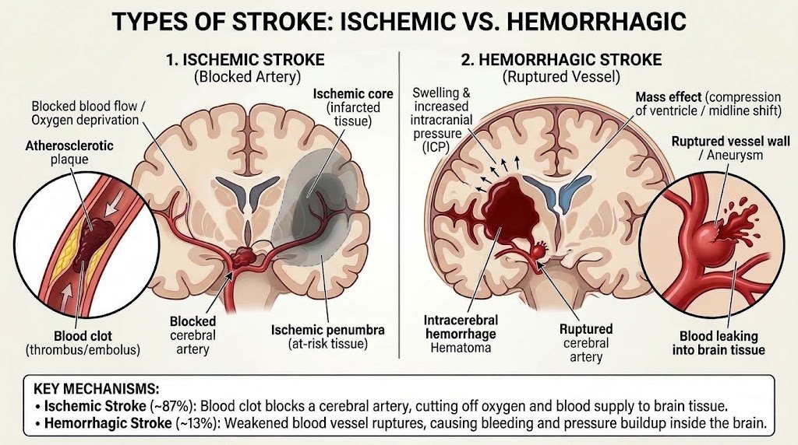
Ischemic vs. hemorrhagic stroke. About 87% of strokes are ischemic, 10% intracerebral hemorrhage, and 3% subarachnoid hemorrhage (AHA 2025). Ruptured aneurysms most often cause subarachnoid hemorrhage; the deep bleed drawn here is typical of hypertensive hemorrhage. AI-generated illustration.
| Ischemic (~87%) | Hemorrhagic (~13%) | |
|---|---|---|
| Mechanism | Occlusion — thrombotic (local plaque), embolic (commonly cardiac, especially atrial fibrillation), or hypoperfusion (watershed) | Rupture — intracerebral hemorrhage (usually hypertensive, in basal ganglia/thalamus/pons/ cerebellum) or subarachnoid hemorrhage (usually aneurysmal) |
| Presentation | Focal deficits, often with a stuttering or maximal-at-onset course; headache less common | More often severe headache, vomiting, rapidly decreasing level of consciousness, seizures, and markedly elevated blood pressure. SAH: classic "worst headache of my life," thunderclap onset, neck stiffness. |
| Diagnosis | Non-contrast CT often normal early; CT angiography/perfusion and MRI define the lesion and salvageable tissue | Non-contrast CT shows blood immediately — which is exactly why the CT comes before any thrombolytic |
| Blood pressure goal | Permissive hypertension generally — the penumbra depends on collateral flow. Thresholds for treatment are high unless thrombolysis or thrombectomy is planned (see 26.11). Lowering BP inappropriately extends the infarct. | Controlled lowering. ICH: for an SBP of 150–220, lowering to about 140 (range 130–150) is reasonable (2022 AHA/ASA), avoiding drops below 130 and large swings (26.30).2 SAH: control before aneurysm securing to reduce rebleeding. Nicardipine or clevidipine infusion. |
| Treatment | IV thrombolysis and/or mechanical thrombectomy; antiplatelets; secondary prevention | Stop the bleeding: reverse anticoagulation urgently, control BP, neurosurgical evaluation, EVD for hydrocephalus, aneurysm clipping or coiling in SAH, nimodipine for SAH vasospasm prophylaxis |
| Anticoagulation | Often started or resumed after a delay | Reversed emergently — this is a first-hour priority |
A standardized 15-item scale scored 0–42 quantifying stroke severity. It's used for treatment decisions, prognosis, and — most relevant to you — as an objective way to detect change over time.
| # | Item | Range |
|---|---|---|
| 1a–c | Level of consciousness; LOC questions (month, age); LOC commands (open/close eyes, grip/release) | 0–3, 0–2, 0–2 |
| 2 | Best gaze (horizontal eye movement) | 0–2 |
| 3 | Visual fields | 0–3 |
| 4 | Facial palsy | 0–3 |
| 5a/5b | Motor arm, left and right (scored separately) | 0–4 each |
| 6a/6b | Motor leg, left and right | 0–4 each |
| 7 | Limb ataxia | 0–2 |
| 8 | Sensory | 0–2 |
| 9 | Best language (aphasia) | 0–3 |
| 10 | Dysarthria | 0–2 |
| 11 | Extinction and inattention (neglect) | 0–2 |
Rough severity bands: 0 no stroke; 1–4 minor; 5–15 moderate; 16–20 moderate-severe; 21–42 severe. An NIHSS ≥6 is commonly used as one marker suggesting large vessel occlusion and thrombectomy candidacy.
Practical rules: score what you observe, not what you think the patient can do; score the first attempt; do the items in order; don't coach. Frequency is protocol-driven and intensive after reperfusion therapy — commonly q15min ×2 hours, q30min ×6 hours, then q1h to 24 hours. Certification is free online and takes about an hour — do it before you start. It's one of the highest value-per-minute things you can prepare.
Note a known limitation: the NIHSS is weighted toward left-hemisphere/dominant function, so a large right-hemisphere or posterior circulation stroke can produce a deceptively low score. A patient with a modest NIHSS but a devastating deficit is not a contradiction — report what you see.
| Territory | Characteristic findings |
|---|---|
| Middle cerebral artery (MCA) — most common | Contralateral hemiparesis and sensory loss, face and arm worse than leg; gaze preference toward the lesion; contralateral homonymous hemianopia. Left (dominant) MCA: aphasia. Right MCA: neglect, anosognosia (denial of deficit), spatial disorientation. A malignant MCA infarct with massive edema can herniate around day 2–5 — watch for declining consciousness in that window. |
| Anterior cerebral artery (ACA) | Contralateral weakness with leg worse than arm; abulia, apathy, personality change; urinary incontinence. |
| Posterior cerebral artery (PCA) | Contralateral homonymous hemianopia with macular sparing, often without significant weakness; visual agnosia, memory impairment. |
| Vertebrobasilar / posterior circulation | The "D's": dizziness, diplopia, dysarthria, dysphagia, dysmetria — plus ataxia, vertigo, nausea, nystagmus, crossed findings (ipsilateral face, contralateral body), and altered consciousness. Basilar occlusion can produce locked-in syndrome and is often fatal — frequently missed early because the presentation is nonspecific. |
| Cerebellar | Ipsilateral ataxia, dysmetria, nystagmus, vertigo, vomiting, truncal instability. Cerebellar swelling compresses the brainstem and obstructs the fourth ventricle — a decompressible, survivable emergency if caught. Deteriorating consciousness in a cerebellar stroke is a surgical call. |
| Lacunar (small penetrating vessels) | Classic syndromes: pure motor, pure sensory, ataxic hemiparesis, dysarthria-clumsy hand. Notably without cortical signs — no aphasia, no neglect, no visual field loss. |
General rule: cortical/hemispheric lesions produce contralateral deficits; cerebellar lesions produce ipsilateral deficits; brainstem lesions produce crossed deficits.
Language is left-hemisphere dominant in over 95% of right-handed people and in the majority of left-handed people.
| Type | Location | Presentation & nursing implications |
|---|---|---|
| Broca's (expressive, non-fluent) | Inferior frontal lobe, dominant hemisphere | Comprehension intact; production impaired. Halting, effortful, telegraphic speech; difficulty finding words; often accompanied by right-sided weakness. Patients are typically aware and frustrated — this is distressing and deserves patience. Nursing: allow time, use yes/no questions, offer a communication board or writing, don't finish their sentences reflexively, and don't raise your voice — they hear and understand you perfectly. |
| Wernicke's (receptive, fluent) | Superior temporal lobe, dominant hemisphere | Production fluent; comprehension impaired. Speech flows normally in rhythm and rate but is full of neologisms and substitutions and often makes no sense ("word salad"). Patients are frequently unaware of the deficit and may seem confused or agitated. Nursing: use gestures, demonstration, pictures, and simple one-step visual cues. Do not assume a patient who is speaking fluently understands you — verify with a demonstrated command. This is routinely mistaken for delirium or psychiatric illness. |
| Global | Large dominant-hemisphere lesion | Both production and comprehension severely impaired. Usually a large MCA infarct with dense hemiparesis. |
| Conduction | Arcuate fasciculus | Fluent speech, intact comprehension, but impaired repetition. |
| Dysarthria (not aphasia) | Motor pathways, cranial nerves, cerebellum | A motor speech problem, not a language problem. Slurred or weak articulation, but language content, comprehension, reading, and writing are intact. Distinguishing dysarthria from aphasia matters — a dysarthric patient can write you a complete sentence. |
Because optic fibers cross at the chiasm, lesions behind the chiasm produce contralateral field loss in both eyes. The deficit is in the visual field, not the eye — a common source of confusion.
| Pattern | Lesion location | Description |
|---|---|---|
| Homonymous hemianopia | Optic tract, radiations, or occipital cortex (contralateral) | Loss of the same half of the visual field in both eyes — e.g., a left MCA or PCA stroke causes loss of the right half of vision in each eye. The most common post-stroke visual deficit. |
| Quadrantanopia | Partial radiations — temporal loop ("pie in the sky") or parietal | Loss of one quadrant of the field in both eyes. |
| Bitemporal hemianopia | Optic chiasm — classically a pituitary tumor | Loss of both outer (temporal) fields — "tunnel vision." |
| Monocular vision loss | Optic nerve or retinal artery (before the chiasm) | One eye only. Amaurosis fugax — transient monocular blindness — is a carotid warning sign. |
IV thrombolysis dissolves the clot. Practice has shifted meaningfully in recent years: tenecteplase (TNK) 0.25 mg/kg (maximum 25 mg) as a single IV bolus is now recommended as an alternative to — and at many centers has replaced — alteplase for eligible patients within 4.5 hours, with particular support in large vessel occlusion.3 Its single-bolus administration is operationally much simpler than alteplase's bolus-plus-60-minute-infusion.
Window: generally within 4.5 hours of last known well, with extended-window and imaging-selected (perfusion mismatch) protocols at comprehensive stroke centers. Mechanical thrombectomy for large vessel occlusion extends considerably further — commonly up to 24 hours in imaging-selected patients — which is why establishing last known well matters even for late presenters.
Normal ICP is 5–15 mmHg; sustained values above ~20–22 mmHg generally prompt treatment.1
| Category | Findings |
|---|---|
| Earliest and most important | A change in level of consciousness — restlessness, irritability, confusion, increasing drowsiness, slowing responses. This precedes everything else, and it is a nursing finding. Anyone can read a number; noticing that a patient who followed commands two hours ago now needs repeated prompting is the skill. |
| Early | Headache (worse in the morning, with coughing, straining, or lying flat), nausea and projectile vomiting without nausea, visual changes, papilledema, pupillary sluggishness or new anisocoria, oval pupil. |
| Late | Worsening motor response, unilateral fixed dilated pupil, posturing, hemiparesis, abnormal respiratory patterns (Cheyne-Stokes, central neurogenic hyperventilation, ataxic), and finally coma. |
| Very late — herniation | Cushing's triad: hypertension with a widening pulse pressure, bradycardia, and irregular respirations. This is a terminal sign of brainstem compression, not an early warning. If you are seeing Cushing's triad, the opportunity to intervene has largely passed — which is exactly why the earlier signs matter so much. |
Herniation syndromes worth recognizing: uncal (ipsilateral blown pupil, contralateral weakness, decreasing LOC), central (progressive rostral-to-caudal deterioration), subfalcine (midline shift under the falx), and tonsillar (cerebellar tonsils through the foramen magnum — brainstem compression, respiratory arrest, death).
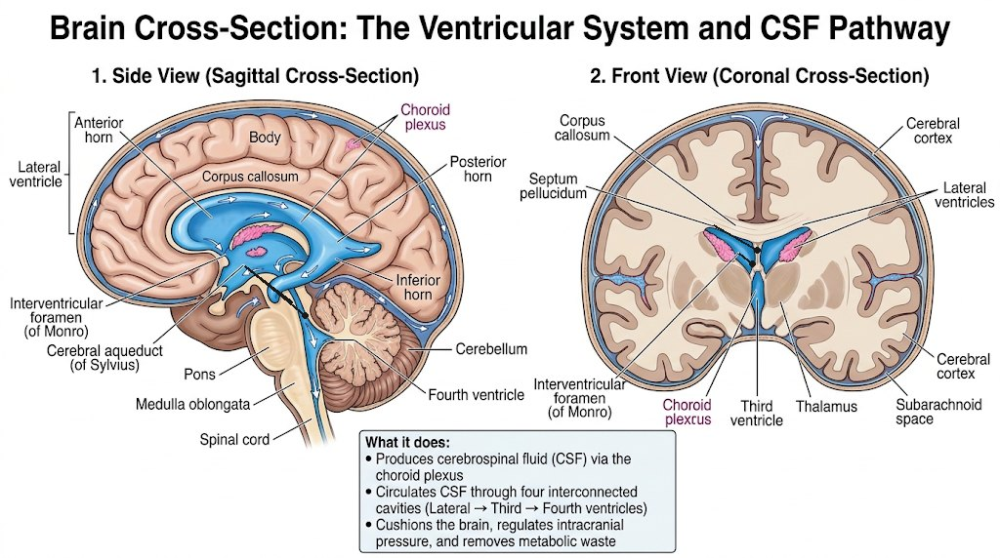
The ventricles and CSF flow. An EVD drains CSF from a lateral ventricle; level the transducer to the foramen of Monro (tragus) as ordered. AI-generated illustration.
| Device | Location | Characteristics |
|---|---|---|
| External ventricular drain (EVD) / ventriculostomy | Catheter in a lateral ventricle, usually via a right frontal burr hole | The gold standard. Uniquely allows both measurement of ICP and therapeutic CSF drainage, plus intrathecal drug administration and CSF sampling. Can be recalibrated/re-zeroed externally. Highest infection risk of the options; risk of hemorrhage on insertion; can become obstructed or malpositioned. Difficult to place if ventricles are compressed. |
| Intraparenchymal monitor (e.g., fiberoptic "bolt") | Brain parenchyma | Easy to place, lower infection risk, accurate. Cannot drain CSF, and cannot be re-zeroed after insertion — drift over days is a known limitation. |
| Subarachnoid / subdural / epidural | Respective spaces | Less accurate; used less often. |
| Non-invasive surrogates | — | Optic nerve sheath diameter on ultrasound, transcranial Doppler, pupillometry. Useful adjuncts; not replacements. |
ICP waveform — each cardiac cycle produces three peaks: P1 (percussion, arterial pulsation, normally tallest), P2 (tidal, reflects brain compliance), and P3 (dicrotic, follows aortic valve closure). Normally P1 > P2 > P3. When P2 becomes elevated and exceeds P1, it indicates decreased intracranial compliance — the brain is running out of buffer. This is an early warning that often precedes a sustained ICP rise, and recognizing it is a genuinely advanced nursing skill worth learning.
Lundberg A waves ("plateau waves") — sustained ICP elevations of 50–100 mmHg lasting 5–20 minutes — are always pathologic and indicate critically exhausted compliance. Report immediately. B waves (shorter, rhythmic) suggest reduced compliance. C waves are generally not clinically significant.
EVD management is high-stakes, protocol-driven nursing. National patient safety initiatives exist specifically because EVD errors cause serious harm. Learn your unit's protocol precisely.
Figure 26-1. Leveling an external ventricular drain. The zero is the tragus (foramen of Monro) per your policy; the drip chamber is set at the ordered height above it. An error in either direction misreads the ICP and changes how much CSF drains. Original drawing; not to scale.
Most institutional policies direct clamping the EVD for transport and for repositioning, then re-leveling and reopening on arrival. Be aware that this is not risk-free — studies of intrahospital transport with routine clamping have documented meaningful rates of post-transport ICP elevation — so reassess and re-level promptly on arrival, and monitor the patient closely during any clamped period. Never move a patient with an EVD alone, and never let the system be transported unsecured.
A probe placed in the white matter directly measures the partial pressure of oxygen in brain tissue — the end product of oxygen delivery, cerebral blood flow, and cellular extraction. It's used as part of multimodal monitoring in severe traumatic brain injury and subarachnoid hemorrhage.
When PbtO2 falls, work through the delivery chain — this is a structured nursing assessment:
Management escalates in tiers. Everything in Tier 0 is nursing work, is available immediately, and is frequently what actually resolves the problem.
| Tier | Interventions |
|---|---|
| Tier 0 — foundational (nursing) | Head of bed elevated 30° (per order) to promote venous drainage. Head midline and neutral — neck rotation or flexion obstructs jugular venous outflow, and this is one of the most common and most easily fixed causes of an ICP spike. Loosen the ETT ties and any cervical collar if they are compressing the neck. Avoid hip flexion >90°. Treat pain and agitation. Maintain normothermia — fever markedly increases cerebral metabolic demand and is treated aggressively. Maintain normoglycemia, normonatremia or the ordered target, and normoxia. Prevent seizures. Prevent straining — bowel regimen, antiemetics, avoid Valsalva. Cluster and space stimulating care. |
| Tier 1 | CSF drainage via EVD. Sedation and analgesia optimization (propofol is favored — it lowers cerebral metabolic rate and is short-acting for exams). Hyperosmolar therapy — see below. CPP optimization with fluids and vasopressors. |
| Tier 2 | Neuromuscular blockade (eliminates shivering, coughing, and dyssynchrony — with deep sedation always confirmed first). Deeper sedation. Mild hyperventilation as a temporizing measure only. Consideration of decompression. |
| Tier 3 — rescue | Decompressive craniectomy. Barbiturate coma (pentobarbital, titrated to burst suppression on continuous EEG — causes profound hypotension, immunosuppression, ileus, and prolonged clearance). Therapeutic hypothermia (evidence is mixed; used selectively). |
| Therapy | Mechanism | Nursing considerations |
|---|---|---|
| Hypertonic saline (3%, 23.4% bolus) | Osmotic gradient draws water from brain tissue into the vasculature; also expands intravascular volume | Increasingly preferred over mannitol, particularly in hypotensive or hypovolemic patients because it expands rather than depletes volume. Concentrated solutions require central access (3% is sometimes given peripherally per policy; 23.4% is central-only). Monitor serum sodium and osmolality on a set schedule — targets are ordered, and both under- and over-correction cause harm. Watch for volume overload and pulmonary edema in cardiac or renal patients, hyperchloremic acidosis, and phlebitis. Avoid rapid sodium swings. |
| Mannitol | Osmotic diuretic; also reduces blood viscosity, improving flow | Causes diuresis, so it can produce hypovolemia and hypotension — dangerous when CPP is marginal. Monitor strict I&O, serum osmolality (a gap and an upper limit are usually specified), sodium, potassium, and renal function. Use a filter per policy and inspect for crystallization — the drug crystallizes when cold. Rebound cerebral edema can occur with prolonged use and a disrupted blood-brain barrier. Contraindicated in established AKI/anuria and severe hypovolemia. |
| Sedation and analgesia | Reduce cerebral metabolic rate and the response to stimulation | Propofol favored for its short offset (allowing exams) and metabolic suppression; watch hypotension, which directly lowers CPP. Treat pain first. |
| Hyperventilation | Hypocarbia → cerebral vasoconstriction → reduced cerebral blood volume → rapidly reduced ICP | A short-term rescue measure only, for impending herniation while definitive therapy is arranged. Prolonged or aggressive hyperventilation causes cerebral ischemia by reducing blood flow, and the effect wanes within hours as the CSF pH equilibrates. Target mild hypocarbia per order; never routinely hyperventilate a brain-injured patient, and watch for inadvertent hyperventilation from an over-set ventilator rate or a tachypneic patient. |
| Neuromuscular blockade | Eliminates coughing, shivering, straining, and ventilator dyssynchrony | Deep sedation and analgesia must be confirmed running first — see Section 25 on paralysis. Removes your neuro exam entirely, so ICP, PbtO2, pupillometry, and continuous EEG become your monitors. |
| Antiepileptics | Prevent seizure-driven metabolic surges | Levetiracetam is common (fewer interactions, no level monitoring required); phenytoin/fosphenytoin require level monitoring and cause hypotension and arrhythmia with rapid infusion — respect the maximum rate. |
| Corticosteroids | Reduce vasogenic edema | Indicated for edema around tumors and abscesses (dexamethasone). NOT indicated in traumatic brain injury — the CRASH trial demonstrated increased mortality. This is a distinction worth knowing. |
| Nimodipine | Calcium channel blocker | Specific to aneurysmal subarachnoid hemorrhage — reduces poor outcomes from delayed cerebral ischemia/vasospasm. Given enterally (never IV — inadvertent IV administration has caused deaths). Causes hypotension; hold parameters are common, and the usual approach when the pressure drops is to divide the dose rather than skip it. Do not omit doses. |
Abnormal, stereotyped motor responses to noxious stimulus indicating severe brain injury. Both are worse than purposeful movement, and decerebrate is worse than decorticate.
| Type | Appearance | Localization & meaning |
|---|---|---|
| Decorticate (abnormal flexion) GCS M3 |
Arms flexed and adducted, hands clenched toward the core; legs extended and internally rotated with plantar flexion | Lesion above the midbrain — cerebral hemispheres, internal capsule, or thalamus. Corticospinal tract disruption. Memory aid: arms flexed toward the "core" = decorticate. |
| Decerebrate (abnormal extension) GCS M2 |
Arms extended, adducted, and pronated (palms turned outward/down); neck may extend, teeth clenched; legs extended with plantar flexion | Lesion at or below the midbrain/upper pons — brainstem. More ominous, and often a sign of impending or ongoing herniation. |
| Flaccid GCS M1 | No motor response at all | The most severe — deep brainstem injury or spinal cord involvement. Always exclude paralytics, deep sedation, and spinal cord injury as causes. |
| Type | Location / vessel | Classic presentation | CT appearance & management |
|---|---|---|---|
| Epidural (extradural) | Between skull and dura; usually middle meningeal artery, often with a temporal skull fracture | The classic "lucid interval" — brief loss of consciousness, then apparent recovery, then rapid deterioration as the arterial bleed expands. Young patients, trauma. | Biconvex / lens-shaped, does not cross suture lines. Arterial and fast — a true surgical emergency; excellent outcomes with prompt evacuation, catastrophic without. A patient with a head injury who "seems fine" needs continued observation for exactly this reason. |
| Subdural (SDH) | Between dura and arachnoid; bridging veins | Acute: significant trauma, rapid decline. Chronic: elderly, alcohol use, anticoagulated patients, after minor or forgotten trauma; presents insidiously over days to weeks with headache, confusion, personality change, or gait disturbance — frequently mistaken for dementia or delirium. | Crescent-shaped, crosses suture lines. Venous and slower. Management ranges from observation to burr-hole drainage or craniotomy. Ask about anticoagulants and about falls — every time. |
| Subarachnoid (SAH) | Subarachnoid space; usually a ruptured berry aneurysm, or trauma | "Worst headache of my life," thunderclap onset, neck stiffness, photophobia, vomiting, transient or sustained loss of consciousness, sometimes seizure. | Blood in the basal cisterns and sulci. Three phases of danger: (1) rebleeding, highest in the first 24 hours — BP control and early aneurysm securing by clipping or coiling; (2) hydrocephalus — often needs an EVD; (3) delayed cerebral ischemia / vasospasm, peaking roughly days 4–14 — nimodipine, euvolemia, transcranial Dopplers, and induced hypertension only to treat symptomatic delayed cerebral ischemia (prophylactic “triple-H” is not recommended; 2023 AHA/ASA). On night shift in that window, a new focal deficit or declining exam is vasospasm until proven otherwise. Hyponatremia (cerebral salt wasting vs. SIADH) is common and must be distinguished, because the treatments are opposite. |
| Intracerebral (ICH) | Within the brain parenchyma — basal ganglia, thalamus, pons, cerebellum | Sudden focal deficit with headache, vomiting, decreased consciousness, and markedly elevated blood pressure. Usually hypertensive; also amyloid angiopathy (lobar, elderly), AVM, tumor, coagulopathy. | Priorities: reverse anticoagulation emergently, control blood pressure (commonly to a systolic in the ~130–140 range in eligible patients, avoiding precipitous drops), hematoma expansion surveillance in the first hours with repeat imaging, seizure and ICP management, and neurosurgical evaluation. Cerebellar hemorrhage is a specific surgical emergency because of brainstem compression. |
| Intraventricular (IVH) | Within the ventricles | Often an extension of ICH or SAH | Obstructs CSF flow → hydrocephalus → EVD. Blood in the ventricles worsens prognosis. |
| Procedure | Description & nursing implications |
|---|---|
| Craniotomy | Bone flap removed for access and replaced at the end. For tumor resection, hematoma evacuation, aneurysm clipping, AVM resection. |
| Craniectomy (decompressive) | Bone flap NOT replaced, allowing the swollen brain to expand outward. Used for refractory intracranial hypertension and malignant MCA infarction. The critical nursing point: never position the patient on the operative side, and post a sign at the bed — there is no skull protecting the brain. A protective helmet is required for mobility. The flap is stored (abdominal pocket or frozen) and replaced later at cranioplasty. Watch for the "sinking skin flap" syndrome and for the flap becoming tense — a tense, bulging flap site means rising ICP. |
| Burr hole | A small opening — for chronic subdural drainage, EVD or ICP monitor placement, biopsy. |
| Aneurysm clipping | Open surgical clip across the aneurysm neck. Requires craniotomy; longer recovery than coiling but durable. |
| Endovascular coiling / flow diversion | Catheter-based aneurysm treatment — less invasive. Post-procedure: groin/radial access site care as in Section 15, plus neuro checks. Often requires antiplatelet therapy with flow diverters. |
| Transsphenoidal hypophysectomy | Pituitary tumor removal through the nose and sphenoid sinus. Distinctive nursing care: no nose blowing, no straws, no coughing or straining, no NG tube placement, avoid Valsalva. Watch for CSF rhinorrhea (clear drainage — test for glucose/halo sign, and report immediately: meningitis risk), and monitor for diabetes insipidus (massive dilute urine output, rising sodium) and adrenal insufficiency. Frequent visual field checks. |
| VP shunt | Ventriculoperitoneal shunt for chronic hydrocephalus. Watch for shunt failure (returning ICP symptoms) and infection. |
A needle placed into the lumbar subarachnoid space (usually L3–L4 or L4–L5, below the termination of the spinal cord) to obtain CSF or measure opening pressure.
Indications: suspected meningitis or encephalitis (the most common urgent indication), suspected SAH with a negative CT, measuring opening pressure (idiopathic intracranial hypertension, normal pressure hydrocephalus), diagnosing inflammatory and demyelinating disease, and therapeutic drainage or intrathecal medication.
Death determined by the irreversible cessation of all functions of the entire brain, including the brainstem. It is legally and clinically death — not a coma, not a persistent vegetative state, and not "brain dead but still alive." Language matters enormously here, both for accuracy and for families. The 2023 AAN/AAP/CNS/SCCM consensus practice guideline is the current standard in the U.S. and consolidated prior adult and pediatric guidance.
The definitive test of medullary respiratory function. At least one apnea test is required.5 The patient is pre-oxygenated and normalized, then disconnected from the ventilator (with oxygen delivered) while CO2 is allowed to rise; the test is positive when no respiratory effort occurs despite a defined rise in PaCO2 (thresholds are specified in the guideline and your policy). Nursing role: pre-oxygenate to protocol, ensure hemodynamic stability beforehand, monitor continuously throughout, and know the criteria to abort — significant hypotension, hypoxemia, or arrhythmia. Draw serial gases on schedule. The guideline includes specific modifications for patients on ECMO.
Used when the clinical exam or apnea test cannot be completed or is confounded — not as a routine substitute.5 Options include cerebral angiography, nuclear medicine perfusion scintigraphy, and transcranial Doppler. Each has limitations, and the guideline specifies which are acceptable.
One of the most important and most misunderstood parts of neurocritical care nursing.
Federal Conditions of Participation require hospitals to notify the OPO of every imminent death and every death, on defined clinical triggers — typically a ventilated patient with a severe neurologic injury meeting specific criteria, and always before withdrawal of life-sustaining therapy is discussed. Notification is not a commitment to anything; it simply starts the evaluation.
The request must be made by trained OPO staff or a designated requestor, not by the bedside nurse or the treating physician. This is both a regulatory requirement and an evidence-based one: trained requestors obtain markedly higher authorization rates and cause less family distress. Approaching a family prematurely or without training can permanently foreclose the option and cause real harm. If a family raises donation spontaneously, acknowledge it warmly, tell them you'll connect them with the people who can answer their questions properly, and notify the OPO.
Decoupling is the principle: the conversation about death or prognosis is kept separate in time from the conversation about donation. Families need to understand and accept the death first.
| Pathway | Description |
|---|---|
| Donation after brain death (DBD) | The patient is declared dead by neurologic criteria while organ perfusion is maintained mechanically. Historically the most common pathway and generally yields the most transplantable organs. |
| Donation after circulatory death (DCD) | The patient does not meet DNC criteria, but a decision has been made — independently — to withdraw life-sustaining therapy. Death is declared by circulatory criteria after a defined observation period following asystole, and recovery proceeds. Requires careful coordination and typically occurs in the OR or a designated location. |
| Tissue donation | Cornea, skin, bone, heart valves, vessels — possible after any death, including circulatory death on any unit. |
After authorization, care shifts from patient management to donor management, usually with the OPO coordinator directing goals, but with you providing the hands-on nursing. The quality of this care directly determines how many people receive a transplant. Physiologic instability after brain death is the rule, not the exception:
And throughout: continue to treat the patient's body with complete dignity, continue to support the family, and honor whatever rituals or presence they need. Many units hold an honor walk or a moment of silence — participate if you can. The family's experience of these hours is something they carry for the rest of their lives, and you are the person shaping it.
Sections 26.25 to 26.32 build the neuro foundations in workbook style: the anatomy behind the exam, common errors in neuro teaching sheets corrected, and two stroke cases worked through.
| Structure | Job | What injury looks like |
|---|---|---|
| Cerebral cortex (gray matter) | Thinking: perception, voluntary movement, language, reasoning. Gray matter is where neuron cell bodies are; white matter is the myelinated axons that connect them. | Focal deficits that match the lobe (26.8) |
| Basal ganglia | A gatekeeper: allows wanted movements and suppresses competing ones | Movement disorders; a common site of hypertensive bleeds and lacunes |
| Thalamus | The relay station for sensory and motor signals to the cortex | Hemisensory loss, hemiparesis, aphasia, memory and executive problems |
| Cerebellum | Quality control: smooth, balanced, timed movement | Ataxia, vertigo, nystagmus; swelling can compress the brainstem and the fourth ventricle |
| Midbrain | Eye movements and pupils (CN III, IV), visual and auditory reflexes, arousal | Pupil and gaze abnormalities, decreased LOC |
| Pons | Bridge between cerebrum and cerebellum; breathing rhythm; facial sensation and movement; horizontal gaze | Decreased LOC, hemiparesis, facial weakness, dysarthria, dysphagia, gaze palsy; locked-in syndrome |
| Medulla | "Life support": heart rate, BP, breathing, swallowing, cough | Respiratory failure, arrhythmia, dysphagia, ataxia, crossed sensory loss |
| Space | Location | Bleed |
|---|---|---|
| Epidural | Between the skull and the dura | Epidural hematoma (usually arterial) |
| Subdural | Between the dura and the arachnoid | Subdural hematoma (bridging veins) |
| Subarachnoid | Between the arachnoid and the pia; CSF flows here | Subarachnoid hemorrhage (aneurysm, trauma) |
| Suffix | Meaning | Neuro procedure |
|---|---|---|
| -ostomy | Create an opening | Craniostomy (burr hole): a hole into the epidural or subdural space to evacuate a hematoma (usually subdural) or start a craniotomy; a drain may stay 24–48 hours. |
| -otomy | Cut into | Craniotomy: bone flap replaced at the end. Watch for bleeding, worsening LOC, new pupil changes, and seizures. |
| -ectomy | Remove | Craniectomy: bone flap not replaced (stored in an abdominal pocket or frozen) to let the swollen brain expand. Protect the defect: no pressure on it, a helmet for mobility per order, fall precautions, signage; check the abdominal incision. |
| -plasty | Repair | Cranioplasty: repairs the skull later. |
Neuro checks are brief, frequent assessments (LOC, orientation, GCS, motor strength, pupils) looking for acute change. A neuro exam is a full assessment (adding sensation, speech, cranial nerves, reflexes) that sets the baseline. For the unconscious patient, a useful order is: Breathing, Movements, Consciousness, Motor, Reflexes.
| Wave | Origin | What it tells you |
|---|---|---|
| P1 (percussion) | Arterial pulse (systole) | Rises with higher systolic pressure. |
| P2 (tidal) | Brain compliance | When P2 rises above P1, the brain is not tolerating volume: compliance is falling and ICP is likely to climb. Treat it as an early warning. |
| P3 (dicrotic) | Aortic valve closure | Follows P2. |
| Type | Features |
|---|---|
| Focal aware (simple partial) | No loss of awareness; may be motor, sensory, or autonomic depending on the area. |
| Focal impaired awareness (complex partial) | The most common seizure type in adults; staring, automatisms, 1–2 minutes with amnesia; often preceded by a focal aware seizure. |
| Generalized tonic-clonic | Loss of consciousness; stiffening (tonic) then rhythmic jerking (clonic); post-ictal confusion. |
| Absence | Brief staring and unresponsiveness without motor activity. |
| Nonconvulsive status | Altered mental status with ongoing seizure activity on EEG and few or no movements: common after brain injury and SAH. Continuous EEG finds it. |
Provoked (acute symptomatic) seizures occur close in time to a brain insult (stroke, TBI, encephalitis) or a systemic problem (metabolic derangement, withdrawal, intoxication, overdose). Status epilepticus is seizure activity lasting 5 minutes or more, or recurrent seizures without return to baseline.6 Stroke is the most common cause of new seizures in older adults (the strongest association is after about age 60).
| Time (AES 2016) | Phase | Typical drugs (per order) |
|---|---|---|
| 0–5 min | Stabilize | ABCs, oxygen, monitor, time it, glucose check (give thiamine before dextrose if malnourished), IV access. |
| 5–20 min | First line: a benzodiazepine | Lorazepam 0.1 mg/kg IV (max 4 mg per dose, may repeat once), or midazolam 10 mg IM (over 40 kg), or diazepam 0.15–0.2 mg/kg IV (max 10 mg per dose).6 |
| 20–40 min | Second line | Fosphenytoin 20 mg PE/kg (max 1,500 mg PE), or valproate 40 mg/kg (max 3,000 mg), or levetiracetam 60 mg/kg (max 4,500 mg).6,7 (The ESETT trial found these equally effective.)7 |
| 40–60 min | Refractory | Intubation and anesthetic infusions (midazolam, propofol, pentobarbital) with continuous EEG. |
| Anti-seizure medicine | Spectrum and notes |
|---|---|
| Levetiracetam (Keppra) | Broad; few interactions; often preferred after stroke and in ICU patients. Watch for irritability. |
| Valproate (Depakote) | Broad; hepatotoxicity, pancreatitis, thrombocytopenia, high ammonia; avoid in pregnancy. |
| Lacosamide (Vimpat) | Broad: focal seizures and, as an add-on, generalized tonic-clonic seizures; also used in status; PR prolongation. |
| Lamotrigine (Lamictal) | Broad; slow titration because of rash (Stevens-Johnson). |
| Phenobarbital | Broad spectrum (some sheets list it as narrow): focal and generalized tonic-clonic seizures; sedation and respiratory depression. |
| Phenytoin / fosphenytoin | Focal and generalized tonic-clonic (worsens absence); hypotension and arrhythmia with IV loading; levels (correct for albumin) (30.4). |
| Carbamazepine (Tegretol) | Narrow: focal seizures; hyponatremia; many interactions. |
| Type | Mechanism | Clues |
|---|---|---|
| Thrombotic | Clot forms locally, most often on atherosclerotic plaque (also hypercoagulable states) | Stepwise, waxing and waning symptoms |
| Embolic | Clot forms elsewhere and travels (AF, valves, endocarditis, tumor, air, fat) | Sudden, maximal at onset; more likely to undergo hemorrhagic transformation |
| Lacunar | A small infarct from occlusion of a single small penetrating artery, from lipohyalinosis of the vessel wall in chronic hypertension and diabetes | Pure motor, pure sensory, ataxic hemiparesis; thalamus, internal capsule, basal ganglia, pons, deep white matter; about a quarter of ischemic strokes |
| Cryptogenic | No cause found by discharge (about 25%) | Look for occult AF, PFO |
| Minutes from recognition (inpatient) | Actions |
|---|---|
| 0–10 | ABCs and oxygen to keep SpO2 above 94%; call the stroke alert; establish the last known well; point-of-care glucose (treat if low); IV access and labs; 12-lead ECG; NPO; NIHSS. |
| 10–20 | Focused history and medications (anticoagulants!), weight, neuro exam; to CT (non-contrast head CT, with CTA if a large vessel occlusion is suspected) without delay. |
| 20–45 | Imaging interpreted; decide on thrombolysis and thrombectomy; BP to 185/110 or less if a thrombolytic is planned. |
| Within 60 (goal sooner) | Thrombolytic given if eligible; thrombectomy team activated or transfer arranged. |
| 2026 AHA/ASA guideline: key numbers | Recommendation |
|---|---|
| Thrombolysis window | Within 4.5 hours of onset; treat as fast as possible and do not delay for CTA or perfusion imaging. Extended window (4.5–9 hours, or wake-up stroke within 9 hours of the midpoint of sleep) with salvageable tissue on perfusion imaging, or a DWI-FLAIR mismatch on MRI. |
| Drugs | Tenecteplase 0.25 mg/kg (max 25 mg) single bolus, or alteplase 0.9 mg/kg (max 90 mg). |
| Thrombectomy (anterior large vessel occlusion, ICA or M1) | Within 6 hours with NIHSS 6 or more and ASPECTS 3–10;3 6–24 hours with selection criteria; some large-core patients (ASPECTS 0–2, or 3–5 beyond 6 hours) now qualify; basilar occlusion within 24 hours with NIHSS 10 or more.3 |
| BP after treatment | Below 180/105 for 24 hours after thrombolysis. Lowering systolic below 140 after thrombolysis gave no benefit, and after successful thrombectomy it caused harm.3 |
| Glucose | Treat hypoglycemia; tight insulin control (80–130) gave no benefit. |
| Post-thrombectomy | Care |
|---|---|
| Monitoring | Neuro checks and vitals often every 15 minutes × 4, every 30 minutes × 2, then hourly × 4, then per protocol; access site and distal pulses each time; bleeding (hematoma, retroperitoneal); TR Band removal when ordered. |
| TICI score (revascularization) | 0 none; 1 minimal; 2a partial (under half); 2b substantial (half or more);8 2c near complete; 3 complete. The provider scores it, and post-procedure BP targets depend on it. |
Stroke quality measures (The Joint Commission): dysphagia screen before anything by mouth;9 NIHSS on arrival; imaging promptly; VTE prophylaxis by the end of hospital day 2; antithrombotic by the end of day 2; anticoagulation for AF at discharge; statin at discharge; stroke education; smoking cessation counseling; rehabilitation assessment; continuous cardiac monitoring for at least 24 hours; follow-up imaging 24 hours after thrombolysis before antithrombotics.9
| Intracerebral hemorrhage (ICH) | Subarachnoid hemorrhage (SAH) | |
|---|---|---|
| Where | Into brain tissue; the second most common stroke type | Below the arachnoid, into the CSF; spreads quickly and raises ICP |
| Causes | Hypertension and cerebral amyloid angiopathy (major); bleeding disorders, anticoagulants, tumors, hemorrhagic transformation of an infarct, cocaine and amphetamines | Ruptured aneurysm (the most common non-traumatic cause); AVM; trauma |
| Presentation | Progresses over minutes to hours: headache, vomiting, decreased LOC, high BP, seizures | Sudden, severe "worst headache of my life" (thunderclap); neck pain or stiffness; vomiting; brief loss of consciousness |
| BP | 2022 AHA/ASA: for SBP 150–220, lowering to a target of 140 (range 130–150) is reasonable, started within 2 hours; avoid dropping below 130 and avoid large swings2 | Before securing, keep SBP at or below 160 and avoid hypotension; after securing, higher pressures are allowed per order (induced hypertension for DCI) |
| Other | Reverse anticoagulants fast (vitamin K plus 4-factor PCC for warfarin; 4-factor PCC for factor Xa inhibitors, since andexanet alfa is no longer sold in the US; idarucizumab for dabigatran; protamine for heparin); surgery or minimally invasive evacuation for selected patients | Secure the aneurysm within 24 hours (clipping, or coiling, stent, or flow diverter);10 nimodipine; EVD for hydrocephalus |
| Complication | What to know |
|---|---|
| Rebleeding | Highest in the first hours to days before securing: stool softeners, antiemetics, analgesia, anxiolysis, a quiet room, BP control, avoid oversedation. |
| Vasospasm and delayed cerebral ischemia (DCI) | New focal deficits or decreased LOC, typically days 4–14. Diagnosed with transcranial Doppler, CTA, or angiography. Nimodipine 60 mg every 4 hours for 21 days, by mouth or tube only (never IV);10 if it causes hypotension, the dose is often split (30 mg every 2 hours) rather than stopped: call the provider. Treatment of DCI: euvolemia and induced hypertension (norepinephrine, phenylephrine), sometimes inotropes; balloon angioplasty or intra-arterial vasodilators (verapamil, nicardipine, milrinone). Prophylactic hypervolemia ("triple H") is not recommended. |
| Hydrocephalus | Common and early; sudden decline in LOC with signs of high ICP; needs an EVD, sometimes a permanent shunt. |
| Hyponatremia | Common; raises the risk of vasospasm and longer stays. Cerebral salt wasting (hypovolemic) and SIADH (euvolemic) share high urine osmolality, high urine sodium, and low serum uric acid. Do not fluid-restrict after SAH (it worsens DCI):10 treat with isotonic or hypertonic saline, and fludrocortisone for salt wasting, per order. |
| Seizures and nonconvulsive status | Watch closely; continuous EEG if the exam is poor or unexplained. |
| Cardiac and pulmonary | Stress cardiomyopathy, arrhythmias (QT prolongation), neurogenic pulmonary edema. |
| Epidural hematoma | Subdural hematoma | |
|---|---|---|
| Location | Above the dura: rapid arterial bleeding (often middle meningeal artery with a skull fracture) | Below the dura: bridging veins; acute or chronic |
| Classic course | Loss of consciousness → a brief lucid interval → rapid decline; ipsilateral dilated pupil, contralateral weakness; Cushing's triad late | Acute: rapid decline, pupil change, hemiparesis. Chronic (older or anticoagulated patients): gradual headache, confusion, personality change, gait change, falls |
| Treatment | Emergent evacuation if large or symptomatic | Burr holes, craniotomy, or watchful waiting depending on size, midline shift, GCS, and ICP; reverse anticoagulants |
| Condition | Key points |
|---|---|
| Hydrocephalus | Obstructive (blocked CSF flow, for example a tumor or a clot in the fourth ventricle); communicating (impaired reabsorption: SAH, meningitis); hypersecretory (rare, choroid plexus tumors). Shunts (VP to the abdomen, VPL to the pleura, VA to the heart): malfunction looks like the original symptoms (headache, LOC change, vomiting, vision change); watch the destination too (abdominal pain, respiratory change, cardiac problems). |
| Brainstem injury | Abnormal breathing patterns (Cheyne-Stokes, apneustic, ataxic); neurogenic hypertension; arrhythmias (tachycardia from catecholamine surge, bradycardia from high ICP, ventricular arrhythmias from QT prolongation); central fever; loss of shivering or sweating. |
| Acute toxic-metabolic encephalopathy | Diffuse brain dysfunction (delirium) without a structural lesion, from acid-base, electrolyte, osmolar, liver or kidney failure, sepsis, drugs, or thiamine deficiency (Wernicke). Treat the cause; stop contributing drugs; delirium prevention (reorientation, sleep, early mobility, daylight and activity by day, glasses and hearing aids, family, pain control). |
| Encephalitis | Inflammation of the brain: viral (HSV-1 is the most common identified cause of sporadic encephalitis; West Nile is the most common mosquito-borne cause in the US) or autoimmune. Headache, fever, altered mental status, seizures; HSV often causes temporal-lobe signs (personality change, aphasia). Start IV acyclovir as soon as HSV is suspected;11 MRI, EEG, LP with PCR. |
| Bacterial meningitis | Classic triad: fever, neck stiffness, altered mental status (all three in fewer than half; nearly all have at least two of fever, headache, stiff neck, altered mentation). Blood cultures, then dexamethasone with or just before the first antibiotic dose, and empiric antibiotics without delay (CT before LP only for specific indications).12 Droplet precautions until 24 hours of effective therapy if meningococcus is possible. Complications: raised ICP, hydrocephalus, infarction, seizures, hearing loss. |
| Neurogenic shock | Injury at T6 or above: hypotension, bradycardia, warm skin, poor temperature control. MAP target per AO Spine 2024 (at least 75–80, not above 90–95, for 3–7 days; 46.3). Older teaching uses 85–90. |
A 48-year-old man with hypertension, AF, and type 2 diabetes who often skips his medicines is admitted with AF with RVR on an amiodarone drip. At 20:20 his partner says he "doesn't look right." His smile droops on the right, he can lift his right arm only briefly, he answers "Phone. Arm." to a question, and he holds up two fingers with his left hand on command. Vitals: BP 188/105, HR 110, RR 16, SpO2 90% on room air, temperature 99.1 °F. Last known well: 19:45.
| What is happening? | An acute ischemic stroke, almost certainly embolic from AF (non-adherence), in the left MCA territory: right face and arm weakness and expressive aphasia. |
| Priority action | Call the stroke alert now; establish the last known well (19:45). |
| Concerning vitals | SpO2 90% (give oxygen to keep it above 94%); BP 188/105 (above the 185/110 limit for thrombolysis: it must be lowered first); HR 110 (AF with RVR). |
| First 10 minutes | ABCs and oxygen; stroke alert; glucose; IV access and labs; 12-lead ECG; NPO; NIHSS; ask about anticoagulants. |
| GCS | E4 V3 M6 = 13 (record "aphasic": the verbal score reflects language, not consciousness). |
| NIHSS item | Finding | Score |
|---|---|---|
| 1a LOC | Alert | 0 |
| 1b Questions | Month wrong ("May"; the scan is dated April 24); age not answered | 2 |
| 1c Commands | Closes eyes; makes a fist with the left hand | 0 |
| 2 Gaze | Follows side to side | 0 |
| 3 Visual | No response to threat in the right upper and lower quadrants: complete right hemianopia | 2 |
| 4 Face | Right lower-face droop with the forehead spared (eyes squeeze shut): partial | 2 |
| 5a Left arm | Holds 10 seconds | 0 |
| 5b Right arm | Some effort against gravity, falls to the bed at 3 seconds | 2 |
| 6a Left leg | Holds 5 seconds | 0 |
| 6b Right leg | Falls immediately: no effort against gravity | 3 |
| 7 Ataxia | Left limbs smooth; right limbs too weak to test (ataxia is scored only out of proportion to weakness) | 0 |
| 8 Sensory | Grimaces on the left, not the right; because he is aphasic, the NIHSS rules suggest 1 (a 2 needs severe loss clearly shown)13 | 1 |
| 9 Language | Fragmentary speech, most objects misnamed, sentences not read: severe aphasia | 2 |
| 10 Dysarthria | Mildly slurred, understandable | 1 |
| 11 Extinction | No evidence given | 0 |
| Total | 15 |
| Ischemic or hemorrhagic? | More likely ischemic: AF with poor adherence, focal deficits that fit one vessel (left MCA), no headache or vomiting. Only imaging can tell. |
| CT (20:35) | Early left MCA ischemic change and a hyperdense left MCA sign (suspected large vessel occlusion); no bleed. |
| Candidate for thrombolysis? | Probably yes (within 4.5 hours, disabling deficit, no bleed), once the BP is below 185/110 and contraindications are excluded: anticoagulant use (a DOAC in the last 48 hours or an INR above 1.7 on warfarin rules it out), recent bleeding, surgery, or stroke. He is also a thrombectomy candidate (suspected M1 occlusion, NIHSS 6 or more): CTA and the neurointerventional team. |
| TNK dose | 0.25 mg/kg × 82 kg = 20.5 mg (under the 25 mg maximum); at 5 mg/mL = 4.1 mL, as a single IV push over about 5 seconds, within 60 minutes of recognition (sooner is better). |
A 60-year-old woman with hypertension and CAD on warfarin is admitted for chest pain. At 13:45 she has a terrible headache, nausea, a stiff painful neck, dizziness, slurred speech, and confusion. Vitals: BP 220/150, HR 115, RR 28, SpO2 95%, temperature 99.3 °F.
| Initial priorities | Stroke alert; airway and vomiting precautions (side-lying, suction); neuro checks; glucose; urgent non-contrast head CT; stop anticoagulants and send coagulation labs; prepare for BP lowering and reversal. Thunderclap headache with neck stiffness on warfarin suggests a bleed. |
| Most concerning vitals | BP 220/150 (bleed expansion) and RR 28; HR 115. |
| GCS | E4 V4 (confused) M6 = 14. |
| NIHSS item | Finding | Score |
|---|---|---|
| 1a LOC | Alert | 0 |
| 1b Questions | Month wrong, age right | 1 |
| 1c Commands | Closes eyes; makes a fist with the wrong hand | 1 |
| 2 Gaze | Must turn her head to follow to the right: partial gaze palsy | 1 |
| 3 Visual | Counts fingers in both right fields but not the left: complete left hemianopia | 2 |
| 4 Face | Symmetric smile and eye closure | 0 |
| 5a, 5b Arms | Each drifts but does not hit the bed | 1 + 1 |
| 6a, 6b Legs | Each drifts but does not hit the bed | 1 + 1 |
| 7 Ataxia | Smooth | 0 |
| 8 Sensory | Equal and sharp | 0 |
| 9 Language | Fluent but with errors (paraphasias, "rat" for mouse, "traffic light thing"): mild to moderate | 1 |
| 10 Dysarthria | Slurred but understandable ("Tib-Tap," "Fiffy-Fiffy") | 1 |
| 11 Extinction | No evidence given | 0 |
| Total | 11 |
| Ischemic or hemorrhagic? | More likely hemorrhagic: warfarin, severe hypertension, sudden severe headache, vomiting, neck stiffness. |
| CT (14:00) | A small acute midbrain hemorrhage (about 12 × 24 × 8 mm) with mild edema; no hydrocephalus. |
| Thrombolysis? | No: intracranial hemorrhage is an absolute contraindication. |
| Priority goals now | Prevent hematoma expansion: lower SBP toward 140 (130–150) smoothly with a titratable infusion (nicardipine or clevidipine); reverse warfarin immediately (4-factor PCC plus IV vitamin K, per INR and protocol). Hourly neuro checks (often more often) watching for hydrocephalus or expansion (a midbrain bleed can obstruct the aqueduct); repeat CT; head of bed 30°; seizure precautions; glucose and temperature control; neurosurgery consult; ICU-level care. |
Additional sources
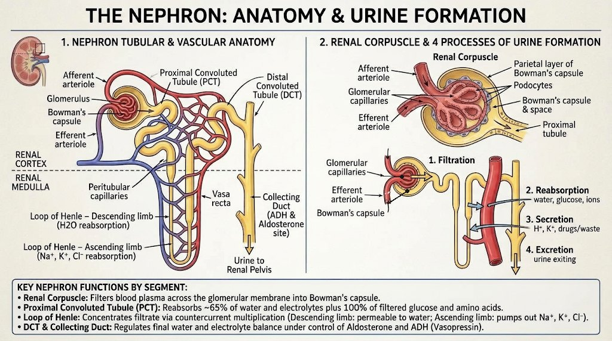
The nephron. ACE inhibitors and ARBs relax the efferent arteriole and NSAIDs constrict the afferent arteriole, so both lower filtration pressure; watch the creatinine. The efferent arteriole is drawn blue but carries arterial blood. AI-generated illustration.
AKI is classified by where the problem is relative to the kidney. This matters because the three categories have opposite treatments — giving fluid to an intrinsic AKI with volume overload causes harm, and withholding it from a prerenal patient prolongs injury.
| Type | Mechanism & causes | Clues | Management direction |
|---|---|---|---|
| Prerenal (most common in the ICU) |
Decreased renal perfusion with structurally normal kidneys. Hypovolemia (bleeding, GI losses, burns, diuresis), decreased cardiac output, distributive shock, hepatorenal syndrome, and drugs that impair autoregulation — NSAIDs (constrict the afferent arteriole) and ACE inhibitors/ARBs (dilate the efferent arteriole). | BUN:Cr ratio >20:1; concentrated urine (high specific gravity, high osmolality); FENa <1%, urine sodium <20; bland sediment; clinical volume depletion or low output state. | Restore perfusion — fluids and/or improve cardiac output; hold nephrotoxins and ACE/ARB/NSAIDs. Rapidly reversible if caught early. Prolonged prerenal states progress to ATN. |
| Intrinsic (intrarenal) | Damage to the kidney itself. Acute tubular necrosis (ATN) is by far the most common — from ischemia (prolonged prerenal state, shock) or toxins (aminoglycosides, vancomycin, amphotericin, contrast, myoglobin in rhabdomyolysis, hemoglobin, tumor lysis). Also acute interstitial nephritis (drug allergy — PPIs, beta-lactams, NSAIDs), glomerulonephritis, and vascular causes. | BUN:Cr ratio ~10–15:1; isosthenuric urine (specific gravity fixed ~1.010); FENa >2%, urine sodium >40; muddy brown granular casts in ATN; WBC casts and eosinophiluria in AIN; RBC casts in glomerulonephritis. | Remove the insult and provide supportive care. ATN typically has oliguric, maintenance, and polyuric recovery phases — the polyuric phase can produce dangerous volume and electrolyte losses, so don't relax when the urine comes back. |
| Postrenal (obstructive) | Obstruction to urine flow — BPH, malignancy, stones, clots, neurogenic bladder, and an obstructed or kinked Foley. | Anuria or fluctuating output; distended bladder; hydronephrosis on ultrasound or bladder scan. | Relieve the obstruction. Often instantly reversible — and it's the one category a nurse can frequently diagnose and fix. Bladder scan and flush or replace the Foley before you accept "the kidneys are failing." Anticipate post-obstructive diuresis afterward, which can be massive; monitor output hourly and replace losses per order. |
KDIGO staging uses creatinine rise and urine output:
| Stage | Serum creatinine | Urine output |
|---|---|---|
| 1 | 1.5–1.9× baseline, or a rise of ≥0.3 mg/dL within 48 hours1 | <0.5 mL/kg/hr for 6–12 hours |
| 2 | 2.0–2.9× baseline | <0.5 mL/kg/hr for ≥12 hours |
| 3 | ≥3.0× baseline, or creatinine ≥4.0 mg/dL, or initiation of renal replacement therapy | <0.3 mL/kg/hr for ≥24 hours, or anuria ≥12 hours |
Also called contrast-associated AKI (CA-AKI). Iodinated contrast can cause renal vasoconstriction and direct tubular toxicity, classically producing a creatinine rise at 48–72 hours that usually peaks around days 3–5 and often resolves within 1–2 weeks.
Risk factors: pre-existing CKD (the dominant one), diabetes with nephropathy, advanced age, volume depletion, heart failure, hypotension, high contrast volume, repeated contrast exposure within a short interval, IABP, and concurrent nephrotoxins.
Nursing role: identify at-risk patients and flag them before the study; ensure the ordered periprocedural hydration is actually given; hold nephrotoxins where ordered (NSAIDs, aminoglycosides, and per policy, metformin — the concern with metformin is lactic acidosis if AKI develops, not contrast toxicity itself); establish a baseline creatinine and trend it at 48–72 hours; and monitor urine output.
Emergent indications — AEIOU: Acidosis (refractory metabolic), Electrolytes (refractory hyperkalemia), Intoxications (dialyzable toxins — methanol, ethylene glycol, lithium, salicylates, metformin), Overload (refractory volume overload with pulmonary edema), Uremia (encephalopathy, pericarditis, bleeding from platelet dysfunction).
| Modality | Characteristics | Nursing considerations |
|---|---|---|
| Intermittent hemodialysis (IHD) | 3–5 hours, typically 3×/week. Fast, efficient solute and fluid removal via diffusion across a dialyzer. | Poorly tolerated hemodynamically — rapid fluid shifts cause intradialytic hypotension, the most common complication. Pre- and post-dialysis weights are the measure of ultrafiltration. Hold antihypertensives and dialyzable medications per order (many antibiotics are removed and are dosed after dialysis — check). Monitor for disequilibrium syndrome in a newly dialyzed uremic patient (headache, nausea, confusion, seizures from rapid urea shifts). Protect the access. |
| SLED (sustained low-efficiency dialysis; also PIRRT) | A standard dialysis machine run slowly: typically 6–12 hours (often 8), daily or most days, with lower blood and dialysate flows (one ICU series: 200 and 350 mL/min). | Used for patients too unstable for IHD, especially where CRRT isn't run. Hemodynamic tolerance in studies is comparable to CRRT. Expect:is comparable to CRRT. Expect: hourly vitals and MAP watch (hypotension is still the main complication; pressor needs can rise), often no anticoagulation (a clotted circuit ends the run early), and drug timing — many antibiotics are removed, so ask pharmacy when to give doses relative to the run. Track ultrafiltration goal and net balance, potassium and phosphate (both can fall), and temperature. Off-time between runs allows procedures and travel. Who runs SLED and what you document Institutional variation. |
| CRRT | Continuous, 24 hours/day. See 27.4. | The modality for the most unstable patients (27.4). |
| Peritoneal dialysis | See 27.5. | — |
Continuous, slow solute and fluid removal over 24 hours, delivering far gentler fluid shifts than IHD. It is the renal replacement modality for the hemodynamically unstable patient — the one on vasopressors who cannot tolerate intermittent dialysis.
Which renal replacement modalities your ICU offers varies. Many ICUs run CRRT; some use SLED (27.3) for patients who can't tolerate intermittent HD; some transfer these patients. Know which applies to yours. If your unit can't provide what a patient needs, that is a transfer conversation: recognize the trajectory early (worsening acidosis, rising potassium, refractory volume overload, uremia, anuria) and raise it before it becomes an emergency at 0300.
| Modality | Mechanism | Notes |
|---|---|---|
| SCUF | Ultrafiltration only | Fluid removal alone, no significant solute clearance. For pure volume overload. |
| CVVH | Convection — solvent drag; replacement fluid given pre- and/or post-filter | Better clearance of middle-molecular-weight solutes. |
| CVVHD | Diffusion — dialysate runs countercurrent | Better clearance of small solutes (urea, potassium). |
| CVVHDF | Both convection and diffusion | The most commonly used. Comparative data suggest CVVHDF achieves longer circuit lifespan and less venous chamber thrombosis than CVVH or CVVHD alone. |
Figure 27-1. A CRRT circuit with regional citrate anticoagulation (CVVHDF). Red: blood leaving the patient and the citrate and calcium safety points. Navy: blood returning. Two different ionized calcium values are followed: the post-filter sample (kept low, proving the circuit is anticoagulated) and the patient's own (kept normal). Original drawing; not to scale.
| Quantity | How it works | Worked example |
|---|---|---|
| Delivered dose | KDIGO recommends an effluent of 20–25 mL/kg/hr delivered.2 Downtime (filter changes, transport, alarms) cuts the delivered dose, so prescriptions often run higher. | 80 kg × 25 = 2,000 mL/hr. Down 4 of 24 hours: 2,000 × 20 ÷ 24 = 1,667 mL/hr, only about 21 mL/kg/hr |
| Filtration fraction (post-filter replacement) | The share of plasma water pulled off as it passes the filter: ultrafiltrate ÷ plasma flow, where plasma flow = blood flow × (1 − hematocrit). Above about 20–25%, the blood thickens in the filter and it clots. | Blood flow 200 mL/min × 60 = 12,000 mL/hr; Hct 30%: plasma 8,400 mL/hr. Replacement 1,500 + net removal 150 = 1,650 mL/hr; 1,650 ÷ 8,400 = 20% |
| Net fluid removal | What the machine takes off beyond what it puts back. It is ordered per hour and is only part of the patient's balance: count every drip, flush, and feed too. | Net removal 100 mL/hr with 90 mL/hr of other intake leaves the patient only 10 mL/hr negative |
| Alarm | Meaning | Response |
|---|---|---|
| Access pressure too negative | The machine can't pull blood in — inflow problem | Catheter against the vessel wall, kinked, clotted, or the patient is hypovolemic. Reposition the patient or the limb, check for kinks, assess volume status, temporarily reduce blood flow rate per protocol. |
| Return pressure high | Resistance to returning blood | Kink, clot in the return limb or catheter, or catheter malposition. Check the line and the patient's position. |
| Transmembrane pressure (TMP) rising | The filter is clogging | Early sign of impending filter clotting. Check anticoagulation adequacy, filtration fraction, and hematocrit. Notify — adjusting settings early can save the circuit. |
| Air detected | Air in the circuit | Stop — do not return the blood. Follow protocol; air embolism is the feared event. |
| Filter clotted | Circuit failure | The patient loses the circuit blood volume (often 150–250 mL) if it can't be returned — relevant in anemia. Anticipate a new circuit and lost therapy time; document the downtime, since it affects the delivered dose. |
Dialysate is instilled into the peritoneal cavity through a permanent catheter; the peritoneal membrane serves as the filter. Solutes diffuse across it, and water is removed by osmosis driven by the dextrose concentration of the dialysate (higher dextrose = more ultrafiltration).
The cycle: fill (instill the ordered volume), dwell (the exchange period), drain (by gravity). Continuous ambulatory PD is done manually; automated/cycler PD runs overnight.
Advantages: gentler hemodynamics, no vascular access needed, no anticoagulation, and patients can do it at home. Disadvantages: slower clearance (inadequate for severe hyperkalemia or acute poisoning), peritonitis risk, and it's frequently impractical in the ICU — particularly after abdominal surgery, with an open abdomen, or with respiratory compromise, since the instilled volume splints the diaphragm.
| Test | Normal | Interpretation in the ICU |
|---|---|---|
| Creatinine | 0.6–1.2 mg/dL | Product of muscle metabolism; the standard marker of GFR. Lags injury by 24–48 hours. Falsely low in low muscle mass (elderly, cachectic, amputees, cirrhosis) — a "normal" creatinine in a frail 85-year-old may represent substantial renal impairment. Trend against the patient's own baseline, not the reference range. |
| BUN | 7–20 mg/dL | Nonspecific — rises with dehydration, GI bleeding (absorbed protein), high protein intake, steroids, and catabolic states, and falls with liver failure and malnutrition. |
| BUN:Cr ratio | ~10–15:1 | >20:1 suggests prerenal (or GI bleed); ~10–15:1 suggests intrinsic. |
| eGFR | >90 mL/min/1.73 m2 | Calculated. Not valid in acute, changing kidney function — the equations assume steady state. Use for chronic staging and drug dosing, not for tracking an evolving AKI. |
| FENa | — | <1% prerenal, >2% intrinsic (ATN). Invalid if the patient has received diuretics — use FEUrea (<35% prerenal) instead, which is unaffected. |
| Urine sodium | — | <20 prerenal (kidney is avidly retaining sodium); >40 intrinsic. |
| Urine specific gravity / osmolality | 1.005–1.030 | High/concentrated in prerenal; fixed at ~1.010 (isosthenuric) in ATN because the tubules can't concentrate; very low in diabetes insipidus. |
| Urinalysis with microscopy | — | The cheapest and most underused test in AKI. Muddy brown granular casts = ATN. WBC casts and eosinophils = interstitial nephritis. RBC casts and dysmorphic RBCs = glomerulonephritis. Bland sediment supports prerenal or postrenal. |
| Urine protein / albumin:creatinine | — | Glomerular disease screening. |
| CK / myoglobin | CK <200 U/L | Markedly elevated in rhabdomyolysis; myoglobin is directly nephrotoxic. Suspect it with crush injury, prolonged immobility ("found down"), seizures, extreme exertion, statins, and cocaine. Look for tea- or cola-colored urine that is dipstick-positive for blood but shows no RBCs on microscopy — that mismatch is the classic clue. Treatment is aggressive IV fluids. |
| Potassium, bicarbonate, phosphate, calcium, magnesium | See 27.7 | The derangements that make AKI dangerous. In renal failure, expect high potassium and phosphate, low calcium and bicarbonate. |
| Biomarkers (NGAL, TIMP-2×IGFBP7) | — | Detect injury earlier than creatinine. Available at some centers; not yet universal. |
| Electrolyte | Normal | Low: causes / signs | High: causes / signs |
|---|---|---|---|
| Sodium | 135–145 mEq/L |
Hyponatremia. SIADH, heart/liver/renal failure, diuretics, cerebral salt wasting, adrenal insufficiency, hypotonic fluids, psychogenic polydipsia. Signs: headache, nausea, lethargy, confusion, seizures, coma. The correction rate is the danger — too rapid causes osmotic demyelination syndrome, generally limiting correction to ~8 mEq/L in 24 hours (slower in high-risk patients). Know the ordered rate and check sodium on the ordered schedule — this is a nursing safety responsibility. | Hypernatremia. Almost always a water deficit — inadequate free water intake in a patient who can't ask for it, diabetes insipidus, osmotic diuresis, GI losses, hypertonic saline. Signs: thirst, weakness, irritability, twitching, seizures, coma. Correct slowly to avoid cerebral edema. |
| Potassium | 3.5–5.0 mEq/L |
Hypokalemia. Diuretics, GI losses, insulin, beta-agonists, alkalosis, hypomagnesemia, refeeding. ECG: flattened T waves, U waves, ST depression, prolonged QT → torsades. Treatment: replace K+ and always check the magnesium — hypokalemia is refractory while Mg is low. NEVER IV push potassium; observe the infusion rate cap and access requirements. | Hyperkalemia. Renal failure, acidosis, tissue breakdown (rhabdo, tumor lysis, hemolysis), ACE/ARB/spironolactone, succinylcholine, blood transfusion. ECG progression: peaked T waves → flattened P waves → prolonged PR → widened QRS → sine wave → arrest. Treatment sequence: (1) calcium to stabilize the myocardium — doesn't lower K+ but buys time; (2) shift it intracellularly with insulin + dextrose, albuterol, and bicarbonate if acidotic; (3) remove it with diuretics, binders (patiromer, sodium zirconium), or dialysis. Also: rule out a hemolyzed specimen before treating an unexpected result — but get an ECG while you redraw. |
| Calcium | Total 8.5–10.5 mg/dL Ionized 1.1–1.3 mmol/L |
Hypocalcemia. Massive transfusion (citrate), pancreatitis, hypoparathyroidism, vitamin D deficiency, hypomagnesemia, alkalosis, CRRT with citrate. Signs: Chvostek's and Trousseau's signs, tetany, paresthesias, laryngospasm, seizures, prolonged QT, hypotension and reduced contractility. | Hypercalcemia. Malignancy and hyperparathyroidism account for most cases; also immobilization, thiazides, granulomatous disease. Signs: "stones, bones, groans, and psychiatric overtones" — plus shortened QT, polyuria, dehydration. Treatment: aggressive isotonic fluids first, then calcitonin and bisphosphonates. |
| Magnesium | 1.5–2.5 mg/dL |
Hypomagnesemia. Extremely common — alcohol use, diuretics, GI losses, PPIs, CRRT, refeeding. Signs: torsades de pointes, arrhythmias, tremor, hyperreflexia, seizures, and refractory hypokalemia and hypocalcemia. Check magnesium any time potassium won't correct. | Hypermagnesemia. Renal failure, magnesium administration (especially obstetric protocols), antacids. Signs: loss of deep tendon reflexes (an early and reliable warning), then hypotension, bradycardia, respiratory depression, cardiac arrest. Check DTRs with any high-dose magnesium infusion. Calcium is the antidote. |
| Phosphate | 2.5–4.5 mg/dL |
Hypophosphatemia. Refeeding syndrome, CRRT, DKA treatment, alcoholism, respiratory alkalosis. Signs: respiratory muscle weakness — a genuine cause of failure to wean from the ventilator — plus reduced cardiac contractility, rhabdomyolysis, hemolysis, confusion. | Hyperphosphatemia. Renal failure, tumor lysis, rhabdomyolysis. Drives hypocalcemia and vascular calcification. Treated with binders and dialysis. |
| Chloride | 98–107 mEq/L | Falls with vomiting and NG suction → metabolic alkalosis. | Large-volume normal saline → hyperchloremic metabolic acidosis — one of the arguments for balanced crystalloids.4,5 |
| Condition | Recognition | Priorities |
|---|---|---|
| Upper GI bleed | Hematemesis or "coffee ground" emesis, melena (black tarry stool). Common sources: peptic ulcer, esophageal/gastric varices, Mallory-Weiss tear, malignancy, erosive gastritis. Rising BUN with a normal creatinine (absorbed blood protein) is a supporting clue. | Two large-bore IVs, type and cross, resuscitate. Transfuse to a restrictive threshold (~Hgb 7) in most patients — over-transfusion in variceal bleeding raises portal pressure and worsens bleeding.6 PPI infusion; for suspected variceal bleeding add octreotide (splanchnic vasoconstriction) and prophylactic antibiotics (ceftriaxone — reduces mortality in cirrhotic GI bleed; this is often forgotten and it matters). Correct coagulopathy. Urgent endoscopy. Protect the airway — massive hematemesis with altered mentation is an intubation indication. Reverse anticoagulants. Monitor for rebleeding. |
| Lower GI bleed | Hematochezia (bright red blood per rectum); brisk upper bleeds can also present this way. Diverticular disease, angiodysplasia, malignancy, ischemic colitis, hemorrhoids. | Resuscitation, transfusion, colonoscopy, CT angiography or interventional radiology embolization for brisk bleeding. |
| Bowel obstruction | Colicky abdominal pain, distension, vomiting, obstipation; high-pitched then absent bowel sounds. Adhesions, hernias, malignancy, volvulus. | NPO, NG decompression, fluid and electrolyte resuscitation (losses are large and often underestimated), serial abdominal exams, imaging, surgical consultation. Watch for signs of strangulation/ischemia: fever, tachycardia, leukocytosis, peritonitis, rising lactate, worsening pain out of proportion to exam. |
| Perforation / peritonitis | Sudden severe pain, rigid board-like abdomen, rebound tenderness, absent bowel sounds, free air on imaging, sepsis. | Surgical emergency. Fluids, antibiotics, source control. |
| Mesenteric ischemia | Pain out of proportion to physical exam — the classic teaching, and it's true. Elderly, AF, atherosclerosis, low-flow states. Rising lactate and a metabolic acidosis, often with a deceptively benign abdomen early. | High mortality, frequently diagnosed late. CT angiography, urgent surgical/vascular involvement, resuscitation. If you have a patient with severe abdominal pain and an unimpressive abdomen and a rising lactate, say the words "mesenteric ischemia" out loud. |
| Hepatic failure / encephalopathy | Jaundice, ascites, asterixis, confusion progressing to coma, coagulopathy, elevated ammonia (correlates poorly with severity — treat the patient). | Lactulose titrated to 2–3 soft stools daily, rifaximin, identify the precipitant (GI bleed, infection including spontaneous bacterial peritonitis, constipation, electrolytes, sedatives, non-adherence). Airway protection with worsening encephalopathy. Watch glucose — the failing liver doesn't gluconeogenese. |
| C. difficile colitis | Profuse diarrhea, leukocytosis (sometimes extreme), abdominal pain, recent antibiotics. | Contact precautions and soap-and-water hand hygiene — alcohol gel does not kill spores. Oral vancomycin or fidaxomicin. Stop the inciting antibiotic where possible. Avoid antimotility agents. Watch for toxic megacolon — distension with a sudden decrease in diarrhea plus systemic toxicity is ominous. |
Autodigestion of the pancreas by prematurely activated enzymes, producing intense local and systemic inflammation. Causes: gallstones and alcohol account for ~70–80%; also hypertriglyceridemia (typically >1000 mg/dL), hypercalcemia, ERCP, trauma, drugs, and infection.
Diagnosis requires 2 of 3: characteristic epigastric pain radiating to the back; lipase or amylase >3× the upper limit of normal (lipase is more specific and stays elevated longer); or characteristic imaging. The enzyme level does NOT correlate with severity — a common misconception. Don't trend lipase to judge how the patient is doing; trend the patient.
Severity is assessed by scoring systems (Ranson's, APACHE II, BISAP) and by the revised Atlanta classification — mild (no organ failure or complications), moderately severe (transient organ failure <48h or local complications), and severe (persistent organ failure >48h). Severe acute pancreatitis behaves like a major burn or sepsis: massive third-spacing, SIRS, ARDS, AKI, and shock.
Nursing priorities: strict I&O and hemodynamic monitoring (third-spacing is massive), respiratory monitoring (ARDS and pleural effusions are common), glucose monitoring (endocrine pancreas involvement), calcium monitoring (saponification causes hypocalcemia — check ionized), pain assessment and management, nausea control, NG decompression only if ileus or intractable vomiting, and surveillance for complications: infected necrosis (new fever and clinical deterioration around week 2–4), pseudocyst, hemorrhage, abdominal compartment syndrome (see 27.12–27.13), and sepsis. Also anticipate alcohol withdrawal in the relevant population — CIWA and prophylaxis.
A temporizing rescue measure for massive variceal hemorrhage uncontrolled by pharmacologic therapy and endoscopy, used as a bridge to definitive treatment (repeat endoscopy, TIPS, or transfer). It is not a treatment; it buys hours.
| Device | Lumens |
|---|---|
| Sengstaken-Blakemore | Three: gastric balloon, esophageal balloon, gastric aspiration |
| Minnesota | Four: gastric balloon, esophageal balloon, gastric aspiration, esophageal aspiration — the esophageal suction port reduces aspiration risk, which is why it is generally preferred |
| Linton-Nachlas | Single large gastric balloon — for gastric varices |
| Procedure | Nursing considerations |
|---|---|
| Exploratory laparotomy | Diagnostic and therapeutic. Large midline incision — significant pain, pulmonary splinting, ileus. Aggressive pain control, incentive spirometry, early mobility. |
| Bowel resection with anastomosis | Watch for anastomotic leak — typically days 5–7: fever, tachycardia, rising WBC, increasing pain, feculent or purulent drain output, sepsis. Report new tachycardia in a post-op abdominal patient; it is often the first sign. |
| Ostomy creation (colostomy, ileostomy) | Assess the stoma: it should be pink/red and moist. Dusky, purple, or black is ischemia — report immediately. Ileostomy output is high-volume and liquid — monitor for dehydration and electrolyte losses (especially sodium, potassium, magnesium) and expect the patient to need more fluid than you'd guess. Peristomal skin protection. Involve the WOC nurse early. Address body image and teaching. |
| Cholecystectomy (usually laparoscopic) | Referred shoulder-tip pain from residual CO2 is expected. Watch for bile leak and retained stones (rising bilirubin, pain, fever). |
| Appendectomy, hernia repair, laparoscopic procedures generally | Escalating abdominal pain, fever, tachycardia, or rising WBC in the first 24–72 hours raises concern for leak, perforation, or a missed injury. Early mobility, DVT prophylaxis, bowel regimen. |
| Whipple (pancreaticoduodenectomy) | High-morbidity. Multiple drains — know what each drains and check output character. Watch for pancreatic fistula (high-amylase drain output), delayed gastric emptying, bleeding, and glucose derangement. |
| Damage control laparotomy | Abbreviated surgery to control hemorrhage and contamination in an unstable patient, with the abdomen left open and definitive repair deferred. Leads to the open abdomen. |
The fascia is deliberately left unclosed — after damage control surgery, to prevent or treat abdominal compartment syndrome, or when planned re-exploration is expected. Temporary closure is usually a negative pressure wound therapy (NPWT) system (an "abdominal vac" — a Barker vac or commercial equivalent) or a mesh/Wittmann patch.
Normal intra-abdominal pressure (IAP) in a critically ill adult is roughly 5–7 mmHg. The bladder is used as a surrogate because the detrusor muscle transmits abdominal pressure passively when the bladder holds a small volume.
Also calculate abdominal perfusion pressure: APP = MAP − IAP, with a commonly cited target of ≥60 mmHg — conceptually identical to CPP in the head, and a better predictor of outcome than IAP alone.
IAH is defined as a sustained IAP ≥12 mmHg.8
| Grade | IAP |
|---|---|
| Grade I | 12–15 mmHg |
| Grade II | 16–20 mmHg |
| Grade III | 21–25 mmHg |
| Grade IV | >25 mmHg |
Risk factors that should prompt monitoring: massive fluid resuscitation, severe acute pancreatitis, major burns, abdominal surgery or trauma, bowel obstruction or ileus, ascites, retroperitoneal or intra-abdominal hemorrhage, sepsis with capillary leak, and prone positioning.
Definition: a sustained IAP >20 mmHg (with or without an APP <60 mmHg) that is associated with new organ dysfunction or failure.8 The pressure number alone is IAH; the addition of organ failure makes it ACS. It is a surgical emergency with high mortality if missed.
| System | Effect |
|---|---|
| Renal | Usually the earliest sign — compression of renal veins and parenchyma causes oliguria progressing to anuria, and it is characteristically refractory to fluid. New oliguria that doesn't respond to a bolus in a patient with a tense abdomen should trigger a bladder pressure. |
| Respiratory | Diaphragm displaced upward → rising peak and plateau airway pressures, falling tidal volumes on pressure modes, hypoxemia, hypercarbia, atelectasis. A ventilated patient whose pressures are climbing with a distended abdomen is a classic presentation. |
| Cardiovascular | Reduced venous return → decreased preload, cardiac output, and blood pressure — despite falsely elevated CVP and PAOP from transmitted intrathoracic pressure. This is a trap: the filling pressures look high while the patient is functionally underfilled. |
| Splanchnic/GI | Bowel ischemia, edema, bacterial translocation — a vicious cycle that worsens the swelling. |
| Neurologic | Raised intra-abdominal pressure raises intrathoracic pressure, impairs cerebral venous drainage, and raises ICP — relevant in a patient with concurrent brain injury. |
Continuous instillation of sterile irrigant through a three-way Foley to prevent clot formation and obstruction in the bladder. Most commonly used after transurethral resection of the prostate (TURP) or bladder tumor resection, and for gross hematuria with clots from any cause (radiation cystitis, hemorrhagic cystitis, trauma, malignancy).
| Condition | Presentation | Management |
|---|---|---|
| Diabetes insipidus (DI) | Massive dilute urine output (often >300 mL/hr sustained), low urine specific gravity (<1.005) and osmolality, rising serum sodium and osmolality, thirst if awake. Central DI follows brain injury, pituitary surgery, or brain death; nephrogenic DI follows lithium, hypercalcemia, or renal disease. | Desmopressin (DDAVP) or vasopressin for central DI; free water replacement; hourly output and frequent sodium monitoring. This is a classic night-shift catch — a neuro patient suddenly making liters of clear urine is DI until proven otherwise, and the sodium can climb dangerously fast. |
| SIADH | Hyponatremia with concentrated urine (inappropriately high urine osmolality and sodium) in a euvolemic patient. Causes: CNS disease, malignancy (especially small cell lung), pulmonary disease, drugs (SSRIs, carbamazepine). | Fluid restriction, hypertonic saline for severe symptomatic hyponatremia, treat the cause. Respect the sodium correction rate limit — osmotic demyelination. |
| Cerebral salt wasting (CSW) | Hyponatremia with concentrated urine and hypovolemia — typically after subarachnoid hemorrhage or brain injury. | The distinction from SIADH is volume status, and the treatments are opposite: CSW needs salt and volume replacement; SIADH needs restriction. Getting it backwards worsens the patient. Your careful I&O, daily weights, and hemodynamic assessment are what let the team tell them apart. |
| Adrenal insufficiency / crisis | Refractory hypotension not responding to fluids and vasopressors, hyponatremia, hyperkalemia, hypoglycemia, fever, abdominal pain, weakness. Precipitated by stress in a patient on chronic steroids, or by abrupt steroid discontinuation, or by adrenal hemorrhage/infarction. | Hydrocortisone immediately — do not wait for a cortisol level in a crashing patient. Fluids, glucose, electrolytes. Think of this in any shock that isn't responding as expected, and specifically ask whether the patient takes chronic steroids — stress-dose steroids are frequently overlooked. |
| Thyroid storm | Fever (often high), marked tachycardia and arrhythmias, agitation progressing to delirium and coma, heart failure, GI symptoms. Precipitated by infection, surgery, iodine load (including contrast), or amiodarone. | Beta blockade (propranolol or esmolol) for symptom control, thionamides (propylthiouracil or methimazole), then iodine given AFTER the thionamide (giving iodine first fuels hormone synthesis — the sequence matters), corticosteroids, cooling, and treating the precipitant. Avoid aspirin (displaces thyroid hormone from binding proteins). |
| Myxedema coma | The opposite: hypothermia, bradycardia, hypoventilation with hypercapnia, hyponatremia, hypoglycemia, and depressed mental status. Elderly, often precipitated by cold exposure, infection, or sedatives. | IV levothyroxine, stress-dose steroids given before thyroid hormone (to avoid precipitating adrenal crisis), passive rewarming, ventilatory support, and treat the precipitant. High mortality. |
| Pheochromocytoma crisis | Paroxysmal severe hypertension, headache, palpitations, diaphoresis. | Alpha blockade BEFORE beta blockade — giving a beta blocker first leaves alpha receptors unopposed and can cause a hypertensive crisis. A classic and dangerous sequence error. |
Both are hyperglycemic emergencies driven by insulin deficiency plus counterregulatory hormone excess, and both feature profound volume depletion. The distinction is the presence of ketoacidosis, and it changes management.
| Parameter | DKA | HHS |
|---|---|---|
| Typical population | Type 1 more often (but type 2 occurs); younger | Type 2; older, often with limited access to water or impaired thirst |
| Onset | Hours to a couple of days | Days to weeks — insidious |
| Glucose | 200 mg/dL or more, or known diabetes (2024 consensus);9 can be lower in "euglycemic DKA" — pregnancy, starvation, alcohol, and notably SGLT2 inhibitors | 600 mg/dL or more, often far higher |
| Arterial pH | <7.30 (mild 7.25–7.30, moderate 7.00–7.24, severe <7.00) | 7.30 or higher — essentially normal |
| Serum bicarbonate | Below 18 mmol/L (with or instead of pH below 7.30; severe <10) | 15 mmol/L or higher |
| Ketones (serum/urine) | Positive: beta-hydroxybutyrate 3.0 mmol/L or more (or urine ketones 2+ or more) | Absent or minimal (beta-hydroxybutyrate below 3.0) — there is enough residual insulin to suppress lipolysis |
| Anion gap | Elevated (>12) — and closing it is the treatment endpoint | Variable, usually normal or mildly elevated |
| Serum osmolality | Variable, usually <320 mOsm/kg | Effective osmolality above 300 (or total above 320) mOsm/kg — the defining feature |
| Fluid deficit | ~3–6 L (roughly 100 mL/kg) | ~8–12 L (roughly 100–200 mL/kg) — substantially greater |
| Mental status | Alert to drowsy; coma less common | More profoundly altered, correlating with osmolality; stupor and coma common |
| Sodium | Often low or normal — correct for hyperglycemia (add roughly 1.6–2.4 mEq/L to measured Na for every 100 mg/dL glucose above 100) | Often normal or high after correction; watch it as glucose falls |
| Potassium | Serum K+ may be normal or HIGH at presentation in both, while TOTAL BODY potassium is profoundly depleted. Acidosis and insulin deficiency shift potassium extracellularly. As soon as insulin and fluids start, potassium falls — sometimes precipitously. This is the thing that kills these patients. | |
| Mortality | ~1–5% | ~10–20% — higher, reflecting age, comorbidity, and severity |
PPH is defined as cumulative blood loss ≥1000 mL, or blood loss with signs of hypovolemia, within 24 hours of birth.10 It is a leading cause of maternal mortality and a large proportion of deaths are judged preventable.
Use the shock index (HR ÷ systolic BP) to see shock before the blood pressure falls. In postpartum hemorrhage, a shock index of 0.9 or more predicts the need for transfusion and a higher level of care, and 1.7 or more calls for urgent intervention.11 Example: HR 120 and SBP 105 give 120 ÷ 105 = 1.14, which is shock with a “normal” blood pressure.
Causes — the four T's:
| Cause | Share | Notes |
|---|---|---|
| Tone | ~70–80% — uterine atony | The uterus fails to contract and clamp the spiral arteries. The most common cause by far. Risk factors: prolonged or precipitous labor, overdistension (multiples, polyhydramnios, macrosomia), high parity, chorioamnionitis, magnesium sulfate, prolonged oxytocin exposure. |
| Trauma | ~20% | Lacerations (cervical, vaginal, perineal), hematoma, uterine rupture, uterine inversion. |
| Tissue | ~10% | Retained placenta or placental fragments; abnormal placentation (accreta spectrum). |
| Thrombin | ~1% | Coagulopathy — DIC, amniotic fluid embolism, abruption, HELLP, anticoagulation, inherited disorders. |
Uterotonic and TXA doses (typical adult doses; give what is ordered and follow your hemorrhage protocol):
| Drug | Dose and route | Avoid or use caution; side effects |
|---|---|---|
| Oxytocin | 10–40 units in 500–1,000 mL IV as a continuous infusion, titrated to uterine tone; or 10 units IM (ACOG 2017).10 | No IV push: rapid injection causes hypotension and tachycardia. Prolonged high doses cause water retention and hyponatremia. |
| Methylergonovine | 0.2 mg IM every 2–4 hours (ACOG 2017). | Avoid in hypertension, preeclampsia, and cardiovascular disease. Causes vasoconstriction (IV use risks sudden severe hypertension), nausea, vomiting. |
| Carboprost (15-methyl PGF2α) | 250 mcg IM every 15–90 minutes, up to 8 doses (2 mg) (ACOG 2017).10 | Avoid in asthma (bronchospasm); caution in heart, lung, liver, or kidney disease. Diarrhea, fever, nausea. |
| Misoprostol | 600–1,000 mcg once, by mouth, under the tongue, or rectally (ACOG 2017). | Fever and shivering, more with higher doses; diarrhea. |
| Tranexamic acid | 1 g IV over 10 minutes, as soon as PPH is diagnosed and within 3 hours of birth. A second 1 g if bleeding continues after 30 minutes or restarts within 24 hours.13 | Do not push fast: a rapid bolus can drop the blood pressure. WHO advises against starting it more than 3 hours after birth.13 Caution with active thrombosis. |
Most US hospitals organize the response in stages, modeled on the California Maternal Quality Care Collaborative (CMQCC) toolkit. Your hospital's algorithm sets the exact triggers and steps. The WHO now also advises acting at 300 mL with any abnormal vital sign (WHO 2025).
| Stage | Triggers | Nursing and team actions | Drugs and blood |
|---|---|---|---|
| 0 Every birth | All patients in labor or giving birth. | Hemorrhage risk assessment; quantified blood loss for every birth. | Oxytocin after birth. Type and screen; type and cross 2 units if high risk. |
| 1 | Cumulative loss over 500 mL (vaginal) or 1,000 mL (cesarean) with continued bleeding; or a vital sign change over 15%, HR 110 or more, BP 85/45 or less, or SpO2 under 95%; or more bleeding during recovery.14 | Activate the hemorrhage protocol and call for help. Stay at the bedside and delegate. Vital signs and SpO2 every 5 min; quantified blood loss every 5–15 min. IV of at least 18 gauge. Fundal massage. Empty the bladder (Foley), strict I&O. A recorder logs every drug, product, and intervention with its time. | Increase oxytocin; add a second uterotonic (doses above). Consider TXA early, within 3 hours of birth. Type and cross 2 units. |
| 2 | Continued bleeding, cumulative loss under 1,500 mL. | OB at the bedside; extra help. Second large-bore IV. Labs: CBC, platelets, PT/INR, aPTT, fibrinogen, metabolic panel, and ionized calcium, with a DIC panel per protocol. Prepare for a tamponade device, repair, or the OR. | Next uterotonic; TXA. Bring 2 units of PRBCs to the bedside and transfuse on clinical signs without waiting for labs, through a blood warmer. Thaw FFP early. |
| 3 | Loss over 1,500 mL, more than 2 units of PRBCs, unstable vital signs, or suspected DIC. | Activate massive transfusion (29.1). Mobilize anesthesia, IR, surgery, and the intensivist. Repeat labs with ABG and ionized calcium; TEG/ROTEM if available (29.5). Warm the patient and all fluids; SCDs. Laparotomy or hysterectomy as needed. | A high FFP-to-PRBC ratio (CMQCC: 4–6 PRBCs to 4 FFP to 1 apheresis platelet pack). Replace fibrinogen and calcium per protocol. |
| Device | Description & nursing considerations |
|---|---|
| Bakri balloon (intrauterine balloon tamponade) |
A silicone balloon inserted into the uterine cavity and inflated with saline (commonly up to ~300–500 mL per protocol) to apply outward pressure against the uterine wall and the bleeding placental bed. Reported effectiveness is high — around 87% in atonic PPH, with somewhat lower success in placental pathology. A drainage port allows monitoring of ongoing bleeding. Nursing: document the inflation volume; monitor and record drainage from the port hourly (continued heavy drainage means it is not working — escalate); maintain any ordered gentle traction; keep the uterotonic infusion running; monitor fundal height (a rising fundus suggests bleeding above the balloon); ensure the bladder is drained with an indwelling catheter; antibiotics are typically given; and know the planned duration (usually removed within ~12–24 hours, often deflated in stages). |
| Vacuum-induced tamponade (JADA system and similar) |
A newer approach that applies low-level suction to actively collapse the uterine cavity and induce contraction, rather than distending it with a balloon. Studies report rapid, effective hemostasis and a favorable safety profile, with no device-related perforations or anaphylaxis in the reported series. Nursing: maintain the ordered vacuum level, ensure the seal and tubing are patent and unkinked, monitor and record blood loss through the system, and follow the manufacturer and institutional protocol for duration and removal. |
| Condom catheter / improvised balloon | A low-resource alternative using a condom tied over a catheter and filled with saline. Effective and worth knowing exists. |
Most PPH patients reach the ICU after the bleeding has been controlled by a balloon, embolization, or hysterectomy. Your job is to catch re-bleeding early and manage the cost of the resuscitation.
Answers.
| Electrolyte | Common IV replacement (follow your protocol) | Safety points |
|---|---|---|
| Potassium chloride | Commonly 10–20 mEq per dose; each 10 mEq raises serum K+ roughly 0.1 mEq/L (variable) | Never IV push. Typical rate limits: about 10 mEq/hr peripherally and up to 20 mEq/hr centrally with continuous ECG (higher only per protocol). Burns peripherally. Check renal function and urine output first; recheck the level; correct magnesium too. |
| Magnesium sulfate | Commonly 1–2 g over 1–2 hours (larger deficits over longer) | Faster infusion causes flushing and hypotension; caution in renal failure; torsades dosing in 22.2. |
| Phosphate (sodium or potassium phosphate) | Commonly 15–30 mmol over several hours | Potassium phosphate also gives potassium (count it); watch calcium (phosphate binds it); avoid in hypercalcemia. |
| Calcium gluconate or chloride | Gluconate 1–2 g IV; chloride (3 times the calcium) usually central | Never in the same line as bicarbonate or phosphate; check ionized calcium; extravasation injury with chloride. |
Most ICUs use nurse-driven replacement protocols with level ranges and doses. Know yours, and recheck levels at the interval it sets.
| Problem | Key points |
|---|---|
| Acute liver failure | New coagulopathy (INR 1.5 or more) with encephalopathy in a patient without known cirrhosis, within weeks.16 Acetaminophen is the most common US cause (N-acetylcysteine, 30.2).16 Risks: cerebral edema and raised ICP, hypoglycemia (check glucose often), infection, AKI. Early referral to a transplant center. |
| Hepatic encephalopathy | Confusion, asterixis, somnolence, coma. Look for the trigger: GI bleeding, infection, constipation, dehydration, sedatives, electrolytes. Lactulose titrated to 2–3 soft stools a day, plus rifaximin; protect the airway if severely encephalopathic. Ammonia levels guide less than the exam does. |
| Variceal bleeding | Large-volume hematemesis. Two large-bore IVs, restrictive transfusion (hemoglobin about 7), octreotide infusion, IV antibiotic prophylaxis (ceftriaxone), endoscopy within 12 hours, balloon tamponade as a bridge (27.10).6 Avoid over-transfusing (it raises portal pressure). |
| Ascites and spontaneous bacterial peritonitis | Fever, abdominal pain, or new encephalopathy in a patient with ascites: diagnostic paracentesis (31.13). SBP is treated with antibiotics and albumin.17 Large-volume taps get albumin per order.17 |
| Hepatorenal syndrome | AKI in advanced cirrhosis without another cause: albumin plus a vasoconstrictor (terlipressin, or norepinephrine in the ICU);17 watch for respiratory failure with terlipressin. |
| Coagulopathy | The INR overstates bleeding risk in cirrhosis (pro- and anticoagulant factors both fall). Do not correct an abnormal INR with plasma just for a number; viscoelastic testing (29.5) guides bleeding patients. |
Additional sources
Fluids are drugs. They have indications, doses, and adverse effects, and "just give a bolus" is not a plan. The two questions to ask before any fluid: is this patient likely to respond? (see the passive leg raise, Section 16) and can they tolerate the volume?
| Fluid | Composition & tonicity | Use and cautions |
|---|---|---|
| 0.9% Normal Saline | Isotonic. Na 154, Cl 154 mEq/L | Ubiquitous, but the chloride load is supraphysiologic — large volumes cause hyperchloremic metabolic acidosis and, in several trials, more renal adverse events than balanced solutions.1 Still first choice in hyponatremia, hypochloremic metabolic alkalosis, and traumatic brain injury (LR is slightly hypotonic and can worsen cerebral edema). Also the only fluid compatible with blood products. |
| Lactated Ringer's / Plasma-Lyte (balanced crystalloids) | Isotonic; electrolyte composition closer to plasma. LR contains lactate (metabolized to bicarbonate); Plasma-Lyte uses acetate/gluconate. | Preferred over saline for most resuscitation, including sepsis (Surviving Sepsis suggests balanced crystalloids) and pancreatitis. Slightly hypotonic — avoid in significant brain injury. LR contains a small amount of calcium, so it is traditionally not run with blood products through the same line (though modern evidence suggests the risk is minimal, follow your policy). The lactate does not meaningfully raise a measured serum lactate. |
| D5W | Isotonic in the bag; effectively free water once the dextrose is metabolized | A free-water source for hypernatremia and for drug dilution. Not a resuscitation fluid — it distributes throughout total body water and contributes almost nothing to intravascular volume. Causes hyperglycemia. |
| 0.45% saline (half-normal) | Hypotonic | Free water replacement in hypernatremia and in DKA/HHS once corrected sodium is normal or high. Never a bolus fluid. |
| 3% saline (hypertonic) | Hypertonic; Na 513 mEq/L | Symptomatic hyponatremia and raised ICP. Central access preferred (3% peripherally per some policies; more concentrated solutions are central-only). Requires scheduled sodium monitoring and strict attention to the correction-rate limit. |
| Albumin (5%, 25%) | Colloid | Selected uses with reasonable evidence: large-volume paracentesis, spontaneous bacterial peritonitis, and hepatorenal syndrome. Sometimes used in sepsis after large crystalloid volumes. No mortality benefit over crystalloid in general resuscitation, and it is harmful in traumatic brain injury (SAFE trial). Expensive. |
| Hydroxyethyl starches | Synthetic colloid | Should not be used in critical illness — associated with increased AKI, renal replacement therapy, and mortality. Mentioned so you recognize the name and know why it is absent. |
| Product | Contents & typical effect | Indications and notes |
|---|---|---|
| Packed red blood cells (PRBCs) | ~250–350 mL. One unit typically raises hemoglobin ~1 g/dL or hematocrit ~3% in a non-bleeding adult. | Restrictive thresholds are the standard: transfuse at Hgb <7 g/dL for most critically ill patients, with a higher threshold (~8) in acute coronary syndrome, active cardiac ischemia, and some post-operative populations.2 Restrictive strategies are equal or superior to liberal ones in most trials. Transfuse one unit, then reassess — single-unit transfusion is now standard practice in the stable patient. Infuse over 2–4 hours (faster in hemorrhage); must complete within 4 hours of leaving the blood bank. |
| Platelets | One apheresis unit typically raises the count ~30–50 K | Common thresholds: <10 K for prophylaxis, <50 K for active bleeding or an invasive procedure, <100 K for CNS or ocular surgery. Infused rapidly. Contraindicated or used with great caution in TTP and HIT — giving platelets in those thrombotic conditions can worsen the process. |
| Fresh frozen plasma (FFP) | All coagulation factors; ~200–250 mL/unit. Requires thawing (expect a delay — order early). | For multi-factor deficiency with active bleeding, massive transfusion, and warfarin reversal when PCC is unavailable. Typically dosed by weight (~10–15 mL/kg). Large volumes — a major cause of TACO. Correcting a mildly elevated INR in a non-bleeding patient with FFP is low-value and carries real risk. |
| Cryoprecipitate | Concentrated fibrinogen, factor VIII, von Willebrand factor, factor XIII, fibronectin. Small volume. | The product for hypofibrinogenemia (commonly transfused for fibrinogen <150–200 mg/dL with bleeding) — DIC, massive transfusion, and obstetric hemorrhage, where fibrinogen falls early and disproportionately. |
| Prothrombin complex concentrate (PCC) | Concentrated vitamin K–dependent factors (II, VII, IX, X); 4-factor products also contain protein C and S. Small volume, no thaw time. | The preferred agent for urgent warfarin reversal — faster, smaller volume, and no TACO risk compared with FFP. Also used in factor Xa inhibitor–associated bleeding where a specific reversal agent isn't available. Thrombotic risk. Give with vitamin K, because PCC's effect wanes before the warfarin does. |
| Whole blood | All components | Increasingly used in trauma and massive hemorrhage protocols at some centers. |
Defined variously (≥10 units PRBCs in 24 hours, or ≥4 units in 1 hour with ongoing bleeding). Modern practice uses balanced ratios approximating whole blood — commonly 1:1:1 plasma to platelets to red cells — rather than red cells alone.3
Complications you monitor for and can prevent:
| Reaction | Presentation | Management |
|---|---|---|
| Acute hemolytic | Fever, chills, flank or back pain, hypotension, hemoglobinuria (dark urine), DIC, shock — typically within minutes. Usually ABO incompatibility. | Life-threatening. Stop, resuscitate aggressively, maintain urine output, treat DIC and shock, send samples for workup. |
| Febrile non-hemolytic | Fever ≥1°C rise, chills, without hemolysis. The most common reaction. | Stop and rule out hemolysis and sepsis first — you cannot assume it's benign. Antipyretics. Leukoreduced products reduce recurrence. |
| Allergic / anaphylactic | Urticaria and itching (mild) to bronchospasm, angioedema, and shock (severe). Severe anaphylaxis raises IgA deficiency. | Mild: stop, antihistamine, may resume per policy. Severe: epinephrine, airway support, full anaphylaxis management. |
| Septic (bacterial contamination) | High fever, rigors, hypotension, shock — classically with platelets (stored at room temperature). | Stop, cultures from patient and unit, broad-spectrum antibiotics, resuscitate. |
| Delayed hemolytic | Days to weeks later: falling hemoglobin, jaundice, positive DAT. | Usually supportive; important for future crossmatching. |
| TACO / TRALI | See 28.3. | See 28.3. |
Both are acute respiratory distress with pulmonary edema during or after a transfusion: TRALI within 6 hours, TACO within 12 hours (the revised ISBT definition).4,5 Together they are among the leading causes of transfusion-related mortality, and distinguishing them matters because the treatments are opposite — TACO needs diuresis, TRALI does not and diuresis can harm.
| TACO (Transfusion-Associated Circulatory Overload) |
TRALI (Transfusion-Related Acute Lung Injury) | |
|---|---|---|
| Mechanism | Hydrostatic pulmonary edema — volume overload from the transfusion in a patient who couldn't accommodate it. Cardiac or renal impairment and a positive fluid balance are the setup. | Increased-permeability (inflammatory) pulmonary edema — a two-hit model: underlying inflammation plus anti-leukocyte antibodies or biologic response modifiers in the product. Non-cardiogenic. |
| Risk factors | Age extremes, heart failure, renal failure, low body weight, rapid or large-volume transfusion, pre-existing positive fluid balance, plasma products (volume). | Recipient inflammation (sepsis, surgery, trauma); products from multiparous female donors historically — which is why plasma is now preferentially sourced from male donors, a mitigation strategy that reduced TRALI substantially. |
| Blood pressure | Hypertension typically | Hypotension typically |
| Fever | Absent | Often present |
| Volume status | Positive balance, JVD, peripheral edema, S3 | Not volume overloaded; JVD absent |
| BNP / NT-proBNP | Elevated, or rising from baseline | Normal or unchanged |
| White count | Unchanged | Transient leukopenia may occur |
| Response to diuresis | Improves | Does not improve; may worsen |
| Management | Stop the transfusion, sit the patient upright, oxygen, diuretics, consider NIV. Prevention: transfuse slowly, one unit at a time, consider pre-transfusion diuretic in at-risk patients, and reassess between units. | Stop the transfusion, supportive care — oxygen, and lung-protective mechanical ventilation if intubation is required. Do not diurese a euvolemic TRALI patient. Usually resolves within 24–96 hours. Report to the blood bank — the donor must be investigated and deferred. |
The 2019 revised consensus definitions explicitly acknowledge that TACO and TRALI can co-occur, with combined hydrostatic and inflammatory edema.4 Report both to hemovigilance; the distinction is not always clean, and you don't need to resolve it at the bedside to act.
| Agent | Mechanism / monitoring | Reversal |
|---|---|---|
| Unfractionated heparin | Potentiates antithrombin. Monitored by aPTT or anti-Xa. Short half-life (~1–1.5 h). | Protamine sulfate — complete reversal. Dosed on the heparin given in the preceding hours. Give slowly: rapid administration causes hypotension, bradycardia, and anaphylactoid reactions. |
| Enoxaparin (LMWH) | Primarily anti-Xa. Usually unmonitored; anti-Xa level in obesity, pregnancy, renal impairment. Renally cleared. | Protamine — partial only (roughly 60–75% of anti-Xa activity). Plan accordingly: a bleeding patient on enoxaparin cannot be fully reversed. |
| Fondaparinux | Indirect factor Xa inhibitor. Renally cleared, long half-life. | No effective reversal. PCC or activated PCC used off-label. |
| Warfarin | Vitamin K antagonist (factors II, VII, IX, X). Monitored by INR. Long onset and offset; enormous interaction list (antibiotics, amiodarone, diet). | Vitamin K (IV for urgent reversal — works over hours, not minutes) PLUS 4-factor PCC for serious bleeding, or FFP if PCC is unavailable. Always give both — PCC works immediately but wears off before the warfarin does. |
| Argatroban | Direct thrombin inhibitor. Hepatically cleared. Monitored by aPTT. | No specific reversal. Short half-life; stop the infusion and support. |
| Bivalirudin | Direct thrombin inhibitor. Renally cleared. Very short half-life. | No specific reversal. Stop and support; dialyzable to a degree. |
| Alteplase / tenecteplase | Fibrinolytic. | No true antidote. Cryoprecipitate (fibrinogen), FFP, platelets, and antifibrinolytics (TXA or aminocaproic acid) for catastrophic bleeding. |
A universal principle in any anticoagulant-associated bleed: stop the drug, apply mechanical control where possible, resuscitate, correct hypothermia and acidosis, check a fibrinogen and platelet count, give the specific reversal agent if one exists — and remember that reversing anticoagulation reinstates the thrombotic risk it was treating. That trade-off belongs to the physician, but knowing it exists helps you understand hesitation.
These prevent clot breakdown rather than promoting clot formation, by blocking plasminogen from binding fibrin.
| Agent | Uses & considerations |
|---|---|
| Tranexamic acid (TXA) | The dominant agent. Strong evidence in: trauma (CRASH-2 — mortality benefit when given within 3 hours of injury; harm when given later, so timing is the whole point),6 postpartum hemorrhage (WOMAN trial — again, early administration),7 traumatic brain injury in selected patients (CRASH-3), surgical bleeding, and menorrhagia. Renally dosed. Adverse effects: seizures at high doses, and a theoretical thrombotic risk that has generally not materialized in the large trials. Nursing point: TXA is time-critical — a delayed dose loses the benefit and may cause harm. If it's ordered, it goes now. |
| Aminocaproic acid | Similar mechanism, used in cardiac surgery and some bleeding disorders. |
An immune-mediated, prothrombotic reaction: antibodies form against heparin bound to platelet factor 4, and the resulting immune complexes activate platelets. The platelet count falls, but the patient's problem is clotting, not bleeding — which is the single most counterintuitive and most important thing to understand about it.
| Type I (non-immune) | Type II (immune — "true HIT") | |
|---|---|---|
| Timing | First 1–2 days | Days 5–10 after heparin exposure (or within hours if exposed in the past 100 days) |
| Platelet fall | Mild, rarely below 100 K | >50% fall from baseline, nadir typically 20–100 K — rarely <20 K |
| Significance | Benign, transient, resolves with continued heparin | Thrombosis in up to ~50% — DVT, PE, arterial thrombosis, limb ischemia, stroke, MI, skin necrosis at injection sites |
The 4Ts score stratifies pretest probability across four domains, each scored 0–2 (total 0–8):8
Low probability is 0–3, intermediate 4–5, high 6–8. A score of 4 or more warrants stopping heparin immediately and starting an alternative anticoagulant while laboratory testing (immunoassay, then a functional serotonin release assay) is pending. Do not wait for confirmation — the thrombotic risk is highest in the first days.
Your role: notice the falling platelet count. Trend platelets on every patient receiving heparin — a >50% drop around day 5–10 should make you say "HIT?" out loud, even if the absolute number still looks acceptable. That observation is entirely a nursing catch, and it prevents limbs and lives.
These bind thrombin (factor IIa) directly, without requiring antithrombin — which is why they work in HIT, where heparin cannot be used at all.
| Agent | Clearance | Notes |
|---|---|---|
| Argatroban | Hepatic | The agent of choice in HIT with renal failure, since it doesn't depend on the kidneys. Typical infusions are around 2 mcg/kg/min with normal organ function and substantially reduced (roughly 0.5–1.2 mcg/kg/min) in hepatic dysfunction — titrated to an aPTT roughly 1.5–3× baseline per protocol. It falsely prolongs the INR, which significantly complicates transitioning to warfarin — expect a specific institutional protocol for that overlap. |
| Bivalirudin | Renal and enzymatic | Very short half-life (~25 min), making it forgiving. Used in HIT, in PCI, and increasingly in mechanical circulatory support and ECMO circuits. Accumulates in renal failure. |
| Dabigatran | Renal (oral agent) | The oral direct thrombin inhibitor — see 28.8. |
Nursing: these are high-alert continuous infusions with no reversal agent (except dabigatran). Weight-based dosing with an independent double-check, monitoring per protocol (aPTT or anti-IIa), meticulous bleeding surveillance, and awareness that stopping the infusion is essentially your only "reversal." Hold before procedures per the ordered interval.
| Drug | Target | Key points |
|---|---|---|
| Apixaban (Eliquis) | Factor Xa | Twice daily. Dose reduced for combinations of age, weight, and creatinine. Generally the most favorable renal and bleeding profile of the group. |
| Rivaroxaban (Xarelto) | Factor Xa | Once daily; must be taken with food at treatment doses for absorption. |
| Edoxaban (Savaysa) | Factor Xa | Once daily. Reduced efficacy at high creatinine clearance — an unusual caveat. |
| Dabigatran (Pradaxa) | Thrombin (IIa) | Most renally cleared of the group — and the only one that is meaningfully dialyzable. Higher GI bleeding and dyspepsia rates. Capsules must not be crushed or opened. |
General features: rapid onset and offset, predictable pharmacokinetics, no routine monitoring, far fewer food and drug interactions than warfarin. All are renally cleared to varying degrees — renal function drives dosing and is the most common source of error. DOACs are contraindicated in mechanical heart valves and in moderate-to-severe mitral stenosis, where warfarin remains required — a distinction worth knowing on medication reconciliation.
Laboratory note: routine PT/INR and aPTT are unreliable for assessing DOAC effect. A normal INR does not mean a patient on apixaban is not anticoagulated. Drug-specific assays (anti-Xa calibrated to the agent; dilute thrombin time or ecarin clotting time for dabigatran) exist but aren't universally available. The most useful piece of information is the time of the last dose — get it, document it, and report it.
| Agent | Reverses | Notes |
|---|---|---|
| Idarucizumab (Praxbind) | Dabigatran | A monoclonal antibody fragment that binds dabigatran with very high affinity. Rapid and near-complete reversal, given as two sequential IV boluses. For life-threatening bleeding or emergency surgery. Rebound anticoagulation can occur; re-dosing is sometimes needed. Hemodialysis is an alternative or adjunct, since dabigatran is dialyzable. |
| Andexanet alfa (Andexxa) | Apixaban, rivaroxaban | No longer available in the US: withdrawn from the US market on December 22, 2025, after the FDA concluded its thrombotic risks outweighed its benefits9 (in the ANNEXA-I trial, thrombosis at 30 days was 14.6% vs. 6.9% with usual care). Still sold in some other countries. You may see it in older references and order sets. |
| 4-factor PCC | Factor Xa inhibitors (off-label) | The usual agent for factor Xa inhibitor bleeding in the US now. Dosed by weight per protocol; thrombotic risk; give with mechanical hemostasis and get the time of the last dose. |
| Activated charcoal | All, if ingestion was recent | Considered within a few hours of the last dose. |
In any DOAC-associated bleed, the fundamentals still dominate: stop the drug, mechanical hemostasis, resuscitate, correct hypothermia and acidosis, transfuse as needed, and get the time of last dose. Because of their short half-lives, time itself is a meaningful part of the reversal strategy in a patient with normal renal function.
Nutrition is not a supportive afterthought — ICU-acquired weakness, impaired wound healing, immune dysfunction, and prolonged ventilation all track with inadequate nutrition. It is also one of the things most often interrupted for avoidable reasons, and protecting it is nursing work.
Nursing responsibilities:
| Emergency | Recognize | Act |
|---|---|---|
| Thrombotic thrombocytopenic purpura (TTP) | Low platelets with hemolytic anemia (schistocytes, high LDH, low haptoglobin), often neuro symptoms, kidney injury, fever | Urgent plasma exchange (a dialysis-type catheter); steroids and caplacizumab per hematology;11 avoid platelet transfusion unless there is life-threatening bleeding. |
| Hemolytic uremic syndrome (HUS) | Hemolysis, low platelets, and AKI, classically after a diarrheal illness | Supportive care, dialysis as needed; complement inhibitor for atypical HUS per specialist. |
| Sickle cell crisis and acute chest syndrome | Severe pain (vaso-occlusive crisis); acute chest syndrome: new infiltrate with chest pain, fever, hypoxia | Opioid analgesia within about an hour of arrival, reassessed often;12 IV fluids judiciously (avoid overload); oxygen for hypoxemia; incentive spirometry; antibiotics and transfusion or exchange transfusion for acute chest syndrome. |
| Superior vena cava syndrome | Face, neck, and arm swelling, distended chest wall veins, dyspnea, headache worse lying down | Head of bed up; airway watch (stridor is an emergency); avoid IVs in the arms if possible; imaging, steroids or radiation for some tumors, stenting. |
| Malignant spinal cord compression | New back pain in a cancer patient, then weakness, numbness, bowel or bladder dysfunction | Emergency: dexamethasone per order, urgent whole-spine MRI, radiation or surgery; spinal precautions; frequent neuro checks. |
| Hypercalcemia of malignancy | Confusion, polyuria, dehydration, constipation, short QT | Isotonic saline, calcitonin, then a bisphosphonate or denosumab per order; avoid thiazides and calcium. |
| Leukostasis and hyperviscosity | Very high white count (leukemia) or paraproteins with confusion, visual change, hypoxia | Hydration, leukapheresis or plasmapheresis, cytoreduction; avoid red cell transfusion unless essential (raises viscosity). |
| Neutropenic fever and tumor lysis syndrome | Fever with an absolute neutrophil count below about 500; rising potassium, phosphate, and uric acid after chemotherapy (46.5) | Neutropenic fever: cultures, then broad-spectrum antibiotics within 1 hour. Tumor lysis: aggressive IV hydration, close electrolyte and urine output monitoring, rasburicase or allopurinol per order. |
Additional sources
An MTP is a pre-defined, rapidly activated pathway that delivers blood products in balanced ratios without waiting for individual lab results. Its purpose is to prevent the dilutional and consumptive coagulopathy that develops when hemorrhage is treated with red cells and crystalloid alone.
Classically a triad — hypothermia, acidosis, and coagulopathy — each worsening the others in a self-reinforcing spiral. Modern trauma resuscitation recognizes a fourth element, making it a diamond: hypocalcemia.
| Element | Why it develops | How it worsens the others |
|---|---|---|
| Hypothermia | Environmental exposure, cold IV fluids and blood products, open cavities, impaired thermoregulation, anesthesia | Coagulation enzymes are temperature-dependent — clotting function falls sharply below 35°C. Also causes platelet dysfunction, arrhythmia, and reduced citrate metabolism (worsening hypocalcemia). |
| Acidosis | Hypoperfusion → anaerobic metabolism; large-volume saline → hyperchloremic acidosis | Directly impairs coagulation factor activity and platelet function; reduces myocardial contractility and blunts catecholamine responsiveness, worsening the shock. |
| Coagulopathy | Consumption, dilution, hypothermia, acidosis, and acute traumatic coagulopathy — an early, endogenous coagulopathy present at arrival in a substantial share of severely injured patients, before any dilution occurs | More bleeding → more shock → more acidosis and more product → more hypothermia. |
| Hypocalcemia | Citrate in transfused products chelates calcium; hypothermia and hepatic hypoperfusion slow citrate metabolism | Calcium is factor IV — essential to the coagulation cascade. Also causes hypotension and reduced cardiac contractility, worsening perfusion. |
| DIC (disseminated intravascular coagulation) | HIT (heparin-induced thrombocytopenia, type II) | |
|---|---|---|
| Mechanism | Systemic activation of coagulation → widespread microthrombi → consumption of platelets and factors → simultaneous thrombosis AND bleeding. A secondary phenomenon, never a primary diagnosis. | Antibodies against heparin–platelet factor 4 complexes activate platelets → thrombosis, with the platelet count falling from consumption. |
| Triggers | Sepsis (most common), trauma, obstetric catastrophe (abruption, amniotic fluid embolism, retained products), malignancy (especially APL), burns, transfusion reaction, snake envenomation, severe pancreatitis | Heparin exposure — any form, any dose, including flushes and coated catheters |
| Timing | With the underlying illness | Days 5–10 after exposure (or within hours if exposed in the prior 100 days) |
| Platelets | Low and falling | >50% fall from baseline; nadir usually 20–100 K — rarely profoundly low |
| Labs | ↑PT/INR, ↑aPTT, ↓fibrinogen, ↑↑D-dimer, schistocytes on smear | Coagulation studies typically normal; diagnosis by 4Ts score then immunoassay and serotonin release assay |
| Bleeding vs. clotting | Both — oozing from lines and mucosa alongside digital ischemia and organ failure | Clotting — thrombosis in up to ~50%. Bleeding is uncommon. |
| Treatment | Treat the underlying cause — that is the treatment. Supportive product replacement guided by bleeding, not by numbers alone: platelets, cryoprecipitate for fibrinogen (commonly <150 mg/dL with bleeding), FFP/PCC. Heparin is used in some thrombotic-predominant presentations. Avoid antifibrinolytics in most DIC. | Stop ALL heparin (including flushes and circuits) and start a non-heparin anticoagulant — argatroban, bivalirudin, fondaparinux, or a DOAC.3 Do NOT transfuse platelets for the count alone. Do NOT start warfarin until platelets recover — risk of venous limb gangrene. See Section 28.6. |
Nursing surveillance for both: trend the platelet count on every patient, inspect all line sites and mucosa for oozing, check stool and urine for blood, perform serial neurovascular checks on all extremities (digital ischemia and limb thrombosis), monitor for new organ dysfunction, and minimize invasive procedures. In DIC, avoid IM injections and use the smallest gauge and fewest sticks possible.
A balloon catheter advanced from the femoral artery into the aorta and inflated to occlude flow distally — a minimally invasive alternative to open aortic cross-clamping for non-compressible torso hemorrhage below the diaphragm. It is a bridge to definitive hemorrhage control, never a treatment, and it buys minutes at the cost of distal ischemia.
| Zone | Anatomy | Use |
|---|---|---|
| Zone 1 | Left subclavian artery to the celiac artery (descending thoracic aorta) | Cardiac arrest from hemorrhage, or hemorrhagic shock with intra-abdominal bleeding. Maximal support — and maximal ischemia. Generally limited to ~30–60 minutes of full occlusion. |
| Zone 2 | Celiac artery to the lowest renal artery | A "no-occlusion zone" — not used for deployment. |
| Zone 3 | Below the lowest renal artery to the aortic bifurcation (infrarenal) | Pelvic hemorrhage and severe pelvic fracture without intra-abdominal bleeding. Spares the visceral and renal circulation, so longer occlusion is tolerated. Also has a conditional recommendation for placenta accreta spectrum. |
Partial or intermittent occlusion (P-REBOA) allows some distal flow, extending tolerable occlusion time and reducing the ischemic burden. It is increasingly favored over complete occlusion.
REBOA is used at trauma centers by specifically trained teams; the evidence base is still evolving and outcome data are mixed. It is included here for recognition and for care of a patient after transfer, not because it will be a routine part of your practice in a medical-surgical ICU.
A viscoelastic whole-blood test that measures clot formation, strength, and breakdown in real time, producing a characteristic tracing. Its advantage over conventional coagulation studies is that it assesses the functional clot — including platelet function and fibrinolysis, which PT/INR and aPTT cannot see — and it can therefore direct targeted product replacement rather than empiric ratios. Studies show TEG-guided strategies can reduce blood product use by up to ~40%.
| Parameter | What it measures | Approx. normal | Abnormal → deficiency → product |
|---|---|---|---|
| R time (reaction) | Time to initial clot formation (amplitude 2 mm) — clotting factor activity | ~4–8 min | Prolonged → factor deficiency or anticoagulation → FFP (or PCC). Shortened → hypercoagulable. |
| K time (kinetics) | Time from R until amplitude reaches 20 mm — speed of clot strengthening | ~1–4 min | Prolonged → low fibrinogen → cryoprecipitate |
| α angle | Rate of clot strengthening — fibrinogen | ~47–74° | Decreased → hypofibrinogenemia → cryoprecipitate (or fibrinogen concentrate) |
| MA (maximum amplitude) | Maximum clot strength — primarily platelet number and function | ~55–73 mm | Decreased → thrombocytopenia or platelet dysfunction (including antiplatelet drugs) → platelets (± DDAVP) |
| LY30 | Percent lysis 30 minutes after MA — fibrinolysis | ~0–8% | Elevated → hyperfibrinolysis → antifibrinolytic (TXA or aminocaproic acid). Seen in severe trauma and after thrombolytics. |
Nursing role: handling matters — TEG requires a properly filled citrated tube, gentle inversion, and running within the specified window (samples degrade). Draw it correctly the first time, because a repeat costs 20–30 minutes in a bleeding patient. Understand that a normal PT/INR does not exclude a functional coagulopathy — a patient on antiplatelets or with hyperfibrinolysis can have perfectly normal conventional labs and a grossly abnormal TEG. Where TEG is available, expect it to be used in trauma, liver transplant, cardiac surgery, and obstetric hemorrhage.
Additional sources
Chronic alcohol use suppresses excitatory glutamate/NMDA activity and enhances inhibitory GABA activity; the brain compensates. When alcohol stops, that compensation is unopposed — producing a hyperexcitable, hyperadrenergic state. It is common, predictable, and lethal when missed, and ICU patients stop drinking abruptly on admission whether or not anyone asked.
| Stage | Onset after last drink | Features |
|---|---|---|
| Minor withdrawal | 6–12 hours | Tremor, anxiety, insomnia, nausea, headache, diaphoresis, mild tachycardia and hypertension |
| Alcoholic hallucinosis | 12–24 hours | Visual, auditory, or tactile hallucinations with an intact sensorium — the patient knows they aren't real. Distinct from DTs. |
| Withdrawal seizures | 12–48 hours | Generalized tonic-clonic, often single or in a brief cluster. A seizure predicts progression — escalate. |
| Delirium tremens (DTs) | 48–96 hours (up to 7–10 days) | The emergency. Global confusion and clouded consciousness, hallucinations, agitation, and severe autonomic instability — fever, marked tachycardia and hypertension, profuse diaphoresis. Untreated mortality is substantial; even treated it carries real risk from arrhythmia, aspiration, injury, and hyperthermia. |
The Clinical Institute Withdrawal Assessment for Alcohol, revised scores ten domains — nausea/vomiting, tremor, paroxysmal sweats, anxiety, agitation, tactile disturbances, auditory disturbances, visual disturbances, headache, and orientation/clouding of sensorium (0–7 each except orientation, 0–4). Total 0–67.
General principles: supportive care and airway management save more lives than any antidote. Assess ABCs, check a glucose, obtain an ECG (looking at QRS and QTc), get a core temperature, consider co-ingestions (acetaminophen and salicylate levels are commonly screened in any intentional overdose), and call Poison Control early — they are free, expert, and available 24 hours. Decontamination (activated charcoal) is time- and substance-limited and carries aspiration risk in an unprotected airway.
| Toxidrome | Features | Examples |
|---|---|---|
| Opioid | Miosis, respiratory depression, depressed mental status (the classic triad); bradycardia, hypotension, hypothermia, decreased bowel sounds | Heroin, fentanyl, oxycodone, methadone |
| Sedative-hypnotic | Depressed mental status with relatively preserved vital signs; slurred speech, ataxia. Respiratory depression mainly with co-ingestion. | Benzodiazepines, alcohol, barbiturates, GHB |
| Sympathomimetic | Agitation, mydriasis, tachycardia, hypertension, hyperthermia, diaphoresis (skin is wet), seizures | Cocaine, methamphetamine, MDMA, bath salts |
| Anticholinergic | "Mad as a hatter, red as a beet, dry as a bone, blind as a bat, hot as a hare" — delirium, flushing, dry skin (the key discriminator from sympathomimetic), mydriasis, urinary retention, absent bowel sounds, hyperthermia | Diphenhydramine, TCAs, antipsychotics, atropine, scopolamine, jimsonweed |
| Cholinergic | "SLUDGE" — Salivation, Lacrimation, Urination, Defecation, GI distress, Emesis; plus bradycardia, bronchorrhea, bronchospasm, miosis, fasciculations. Death is from bronchorrhea and respiratory failure. | Organophosphates and carbamates (insecticides), nerve agents, some mushrooms |
| Serotonin syndrome | Mental status change, autonomic instability, and neuromuscular hyperactivity — clonus (especially lower extremity), hyperreflexia, rigidity. Onset within hours. | SSRIs, SNRIs, MAOIs, linezolid, tramadol, fentanyl, methylene blue, triptans — usually in combination |
| Neuroleptic malignant syndrome | Mental status change, autonomic instability, "lead-pipe" rigidity and hyporeflexia, marked hyperthermia, elevated CK. Onset over days to weeks. | Antipsychotics; abrupt withdrawal of dopaminergic agents |
Serotonin syndrome vs. NMS is a classic distinction: serotonin syndrome is fast onset with hyperreflexia and clonus; NMS is slow onset with rigidity and hyporeflexia. Both cause hyperthermia and can be fatal; both are treated with aggressive cooling, benzodiazepines, and supportive care — with cyproheptadine for serotonin syndrome and dantrolene/bromocriptine sometimes used in NMS.
Each entry separates early from late presentation because the gap between them is where patients are wrongly reassured and discharged, or where a deteriorating patient is misattributed to something else. Call Poison Control early — free, expert, 24 hours.
| Early (0–24 h) | Often completely asymptomatic, or mild nausea, vomiting, malaise, and diaphoresis. This is the trap — the patient looks well and labs are normal while lethal injury is already underway. |
| Late | 24–72 h: right upper quadrant pain and tenderness, rising AST/ALT (often into the thousands), rising INR. 72–96 h: peak hepatotoxicity — jaundice, fulminant hepatic failure, encephalopathy, hypoglycemia, coagulopathy, lactic acidosis, AKI (hepatorenal or direct tubular injury), and death. Survivors recover over 1–2 weeks. |
| Treatment | N-acetylcysteine (NAC) is the antidote and is highly effective when started early — ideally within 8–10 hours of ingestion, but it retains benefit even late and in established hepatic failure. Given IV (21-hour protocol) or oral. Decision is guided by a 4-hour or later level plotted on the Rumack-Matthew nomogram for a single acute ingestion; NAC is started empirically for staggered ingestions, unknown timing, or high-risk presentations. Activated charcoal within ~1–2 hours. Supportive: monitor LFTs, INR, ammonia, glucose (hypoglycemia is common in hepatic failure), lactate, and renal function; correct coagulopathy for bleeding; treat hepatic encephalopathy; early referral to a transplant center for King's College criteria. IV NAC commonly causes an anaphylactoid reaction (flushing, rash, wheeze) during the loading infusion — this is usually managed by slowing the infusion and giving antihistamines, not by stopping therapy. |
| Early | Tinnitus and hearing changes (a hallmark), nausea, vomiting, hyperventilation and tachypnea (direct respiratory center stimulation), diaphoresis, and vertigo. ABG shows an early respiratory alkalosis. |
| Late | The classic MIXED respiratory alkalosis + anion gap metabolic acidosis, then hyperthermia, agitation and confusion progressing to seizures and coma, non-cardiogenic pulmonary edema, hypoglycemia (particularly CNS hypoglycemia with a normal serum glucose), renal failure, and cardiovascular collapse. A falling respiratory rate or a normalizing pH in a salicylate-poisoned patient is an ominous sign of exhaustion, not improvement. |
| Treatment | Urinary alkalinization with a sodium
bicarbonate infusion (target urine pH ~7.5–8) to trap the ionized drug and enhance renal
elimination — and aggressive potassium repletion, because you cannot alkalinize
the urine while the patient is hypokalemic. Hemodialysis for severe toxicity (high
levels, altered mental status, pulmonary or cerebral edema, renal failure, refractory acidosis).
Glucose supplementation. Activated charcoal, potentially multi-dose. Cooling.
Watch Out! Intubation is
dangerous. These patients maintain a very large minute ventilation to compensate; sedating and
paralyzing them, or placing them on a ventilator that under-ventilates, causes the pH to crash and can
precipitate rapid death. If intubation is unavoidable, the team must match or exceed the patient's own
minute ventilation immediately, and dialysis should be arranged urgently. Say this out loud if intubation
is being discussed. |
| Early | Anticholinergic toxidrome — dry mouth and skin, flushing, mydriasis, urinary retention, absent bowel sounds, sinus tachycardia, agitation, and mild confusion. Deterioration can be abrupt, typically within the first 6 hours. |
| Late | Cardiac: progressive QRS widening (sodium channel blockade), a terminal R wave in aVR, right axis deviation, ventricular arrhythmias, refractory hypotension, and cardiac arrest. Neurologic: seizures, coma, respiratory depression. Classic thresholds: QRS >100 ms predicts seizures; QRS >160 ms predicts ventricular arrhythmia. |
| Treatment | Sodium bicarbonate is the antidote for the
cardiac toxicity — boluses (1–2 mEq/kg) then an infusion, targeting a serum pH ~7.45–7.55
and QRS narrowing. The sodium load overcomes the channel blockade and the alkalosis
reduces drug binding. Benzodiazepines for seizures and agitation.
Hypertonic saline and lipid emulsion for refractory cases.
Vasopressors (norepinephrine preferred) for hypotension unresponsive to fluids and bicarbonate. Activated
charcoal if early and the airway is protected.
Watch Out! Avoid class Ia and Ic
antiarrhythmics (procainamide, flecainide) — they add sodium channel blockade and worsen
the toxicity. Avoid physostigmine in TCA overdose — it has precipitated asystole.
Avoid flumazenil in mixed overdose. Serial ECGs with QRS measurement are your monitoring
tool; report a widening QRS immediately. |
| Early | Bradycardia, hypotension, dizziness, fatigue. Bronchospasm in susceptible patients. Onset is usually within 6 hours for immediate-release formulations. |
| Late | Progressive AV block, junctional or ventricular escape rhythms, cardiogenic shock, hypoglycemia (especially in children), seizures and coma, respiratory depression. Propranolol is uniquely dangerous — it is lipophilic (CNS toxicity, seizures) and has sodium channel blocking activity causing QRS widening. Sustained-release formulations produce delayed and prolonged toxicity. |
| Treatment | Escalating: IV fluids → atropine (often ineffective) → glucagon (bypasses the beta receptor — bolus then infusion; expect vomiting) → high-dose insulin euglycemia therapy (a mainstay; large insulin doses with concurrent dextrose) → calcium → vasopressors and inotropes → lipid emulsion for lipophilic agents → transvenous or transcutaneous pacing → ECMO for refractory shock. Sodium bicarbonate for QRS widening with propranolol. Whole-bowel irrigation for sustained-release ingestions per toxicology. Glucose monitoring throughout. |
| Early | Bradycardia and hypotension (non-dihydropyridines — verapamil, diltiazem) or reflex tachycardia with hypotension (dihydropyridines — amlodipine). Dizziness, nausea, flushing. Notably, mental status is often preserved early despite significant hypotension. |
| Late | Refractory shock, complete heart block, asystole, non-cardiogenic pulmonary edema, bowel ischemia, and multi-organ failure. HYPERGLYCEMIA is characteristic (calcium channel blockade impairs insulin release) — and the degree of hyperglycemia correlates with severity. Sustained-release formulations cause markedly delayed onset, sometimes >12–24 hours after ingestion. |
| Treatment | Largely parallel to beta blocker overdose:
calcium (high-dose, repeated), high-dose insulin euglycemia therapy
(the cornerstone in severe poisoning), vasopressors (norepinephrine, epinephrine), glucagon, atropine,
lipid emulsion, pacing, and ECMO. Methylene blue has been used in
refractory vasoplegia. Whole-bowel irrigation for sustained-release ingestions.
The discriminator:
hyperglycemia points to calcium channel blocker; hypoglycemia points to beta blocker.
That single lab often tells the team which they're treating when the history is unclear — and it's
a glucose you can check in 30 seconds. |
| Early | Gastrointestinal and constitutional first: nausea, vomiting, anorexia, abdominal pain, fatigue, weakness, and headache. These frequently precede any rhythm change — a patient on digoxin who stops eating and feels unwell is telling you something. |
| Late | Neurologic/visual: confusion, delirium, visual disturbance — classically yellow-green halos, blurred or colored vision. Cardiac: almost any arrhythmia — bradycardia, all degrees of AV block, atrial tachycardia with block, junctional rhythms, PVCs, and the near-pathognomonic bidirectional ventricular tachycardia. In acute toxicity, hyperkalemia develops and predicts mortality; in chronic toxicity, potassium is often normal or low. |
| Treatment | Digoxin immune Fab (DigiFab) — the
definitive antidote, dosed by known ingestion or serum level and weight, or empirically in
life-threatening toxicity. Indications include life-threatening arrhythmia, hyperkalemia
(>5–5.5 in acute toxicity), and hemodynamic instability. Correct hypokalemia and
hypomagnesemia (which potentiate toxicity), atropine and pacing for bradycardia, magnesium for
ventricular arrhythmias, activated charcoal if early.
Watch Out! After Fab is given,
total digoxin levels become uninterpretable — they measure antibody-bound drug.
Do not chase them. Watch for rebound hypokalemia as potassium shifts back into cells,
and for loss of rate control in a patient who was taking digoxin for atrial fibrillation. Traditional
teaching is to avoid calcium in digoxin-associated hyperkalemia ("stone heart"), though
this is now debated — follow toxicology guidance rather than reflex. |
| Early | An ethanol-like intoxication — slurred speech, ataxia, sedation — but without the smell of alcohol. Labs show an elevated OSMOLAR GAP with a normal or minimally elevated anion gap, because the parent alcohol is present but not yet metabolized. This is the treatable window. |
| Late | As the parent alcohol is metabolized, the osmolar gap closes and a severe anion gap metabolic acidosis opens. Methanol → formic acid → visual disturbance progressing to blindness ("snowfield" vision), retinal edema, basal ganglia injury, coma, seizures. Ethylene glycol → glycolic and oxalic acid → hypocalcemia, calcium oxalate crystalluria, and acute renal failure, plus cardiopulmonary and neurologic injury. |
| Treatment | Fomepizole (preferred) or
ethanol — both block alcohol dehydrogenase, preventing conversion to the toxic
metabolites. Give it before confirmatory levels return if suspicion is high; waiting
loses the window. Hemodialysis for severe acidosis, high levels, renal failure, or
visual symptoms — it removes both the parent alcohol and the metabolites.
Cofactors: folate/folinic acid for methanol; thiamine and pyridoxine for ethylene
glycol. Sodium bicarbonate for severe acidosis. Correct hypocalcemia cautiously in ethylene glycol
(calcium can worsen oxalate precipitation).
The nursing pearl: a
closing osmolar gap with a widening anion gap means the patient is
metabolizing the toxin and getting worse, not better. A "normal" osmolar gap late does not
exclude poisoning. Report the trend, not the snapshot. |
| Early | Headache (the most common symptom), nausea, dizziness, fatigue, and flu-like malaise — frequently misdiagnosed as viral illness, especially when a whole household presents together in winter. |
| Late | Confusion, ataxia, syncope, chest pain and myocardial ischemia, seizures, coma, and death. "Cherry-red" skin is a late and unreliable finding. Delayed neuropsychiatric sequelae — cognitive impairment, personality change, parkinsonism, memory deficits — can appear days to weeks after apparent recovery. |
| Treatment | High-flow 100% oxygen by non-rebreather
immediately (reduces the carboxyhemoglobin half-life from ~4–5 hours on room air to ~60–90
minutes), continued until symptoms resolve and the level normalizes. Hyperbaric oxygen
for severe poisoning — loss of consciousness, neurologic deficit, cardiac ischemia, pregnancy, or a
very high level. Treat acidosis, monitor for myocardial injury with ECG and troponin, and arrange
neuropsychiatric follow-up.
Watch Out! Standard pulse oximetry
reads falsely NORMAL — it cannot distinguish carboxyhemoglobin from oxyhemoglobin. A
saturation of 99% means nothing here. You must send a co-oximetry carboxyhemoglobin
level. Similarly, the PaO2 on a blood gas will look fine, because dissolved oxygen is
normal — it's the hemoglobin that can't carry it. Also consider concurrent
cyanide poisoning in smoke inhalation victims. |
| Early | Anxiety, headache, dyspnea without cyanosis, confusion, tachypnea and tachycardia, and a bitter almond odor detectable by only a minority of people. Onset is rapid with inhalation. |
| Late | Rapid progression to seizures, coma, bradycardia, hypotension, apnea, and cardiac arrest. Laboratory hallmarks: profound anion gap lactic acidosis with a HIGH venous oxygen saturation — tissues cannot extract oxygen, so venous blood stays arterialized (the arterialized venous blood may look bright red). |
| Treatment | Hydroxocobalamin (Cyanokit) 5 g IV over 15
min, may repeat — binds cyanide to form renally excreted cyanocobalamin. Often given with
sodium thiosulfate (a sulfur donor for rhodanese-mediated detoxification).
Sodium nitrite is used in some kits but induces methemoglobinemia and should be avoided
or used cautiously in smoke inhalation (where carbon monoxide already impairs oxygen carriage).
100% oxygen, aggressive supportive care, bicarbonate for acidosis.
Watch Out! Sources you'll actually
encounter: smoke inhalation and NITROPRUSSIDE. In a nitroprusside patient with unexplained
lactic acidosis, altered mentation, or tachyphylaxis, say the word "cyanide" out loud when you
call — it gets missed because nobody mentions it. Hydroxocobalamin turns skin, urine, and
secretions deep red for days and interferes with many colorimetric lab assays and with
pulse oximetry — notify the lab and document it prominently or subsequent results will be
misread. |
| Early | Sedation and drowsiness, miosis, slurred speech, decreased respiratory rate and depth, decreased bowel sounds, nausea, and pruritus. |
| Late | The classic triad: coma, pinpoint pupils, and respiratory depression. Then apnea, hypoxia, hypercapnia, bradycardia, hypotension, hypothermia, non-cardiogenic pulmonary edema, rhabdomyolysis from prolonged immobility, hypoxic brain injury, and death. Note that miosis may be absent with co-ingestants, meperidine, or after significant hypoxia. |
| Treatment | Airway and ventilation first — bag-mask ventilation saves the patient; naloxone is secondary to oxygenation. Naloxone titrated to adequate respiration (see monograph 50.5), with an infusion for long-acting opioids. Anticipate re-sedation and monitor for a prolonged period — methadone, extended-release formulations, and accumulated fentanyl outlast naloxone substantially. Supportive care, warming, rhabdomyolysis screening with CK, and treatment of pulmonary edema. Screen for co-ingestants (acetaminophen, salicylate). Address the underlying substance use disorder with addiction medicine involvement and naloxone prescribing on discharge. |
| Early | Agitation, euphoria, mydriasis, diaphoresis (skin is WET — the key discriminator from anticholinergic), tachycardia, hypertension, tremor, and chest pain. |
| Late | Hyperthermia (a major driver of mortality — temperatures above 41°C are life-threatening), seizures, rhabdomyolysis and AKI, myocardial ischemia and infarction, aortic dissection, intracranial hemorrhage, ischemic stroke, arrhythmias, DIC, and multi-organ failure. MDMA additionally causes hyponatremia (from SIADH plus excess free water intake) with cerebral edema and seizures. |
| Treatment | Benzodiazepines are the cornerstone —
they treat the agitation, hypertension, tachycardia, hyperthermia, and seizures simultaneously, and they
are dosed generously and repeatedly. Aggressive external cooling for hyperthermia
(evaporative cooling, ice packs, cooled fluids) — antipyretics do not work for this mechanism.
Aggressive IV fluids for rhabdomyolysis with CK monitoring. Phentolamine or nitroglycerin
for cocaine-associated chest pain and hypertension. Correct hyponatremia carefully in MDMA. Sodium
bicarbonate for QRS widening (cocaine has sodium channel blocking activity). Paralysis and intubation for
refractory hyperthermia or agitation.
Watch Out! Traditional teaching
cautions against beta blockers in cocaine toxicity because of the concern for unopposed alpha
stimulation causing worsened hypertension and coronary vasoconstriction. This remains a controversial
area, but it is standard teaching and appears on certification exams — the reflexive answer is
benzodiazepines first, and alpha-blockade or nitrates for persistent hypertension.
Hyperthermia is the emergency, not the blood pressure; treat the temperature
aggressively and early. |
| Early | Muscarinic — "SLUDGE" (Salivation, Lacrimation, Urination, Defecation, GI distress, Emesis) plus the "killer B's": Bradycardia, Bronchorrhea, Bronchospasm. Also miosis, blurred vision, and diaphoresis. |
| Late | Nicotinic: fasciculations, weakness, and paralysis including the diaphragm. CNS: confusion, seizures, coma. Death is from respiratory failure — the combination of bronchorrhea, bronchospasm, and respiratory muscle paralysis. An intermediate syndrome of proximal muscle weakness and respiratory failure can appear 24–96 hours later, and a delayed peripheral neuropathy weeks later. |
| Treatment | Decontamination first — and protect
yourself. Remove all clothing, wash the patient with soap and water, and use PPE; secondary
contamination of staff is documented. Atropine in escalating, often very large doses
— titrated to DRYING OF PULMONARY SECRETIONS, not to heart rate. Doses far
exceeding ACLS familiarity (tens to hundreds of milligrams) may be required; do not stop at 3 mg.
Pralidoxime (2-PAM) reactivates acetylcholinesterase before it "ages" — give
early, alongside atropine. Benzodiazepines for seizures. Early intubation and mechanical
ventilation — and avoid succinylcholine, which is metabolized by the same enzyme
and produces markedly prolonged paralysis.
The endpoint that matters: clear lungs and
manageable secretions. Tachycardia is expected with adequate atropinization and is not a reason
to stop. Nurses frequently under-dose atropine here because the doses feel wrong — verify with
toxicology and give what's ordered. |
| Serotonin syndrome | Neuroleptic malignant syndrome | |
|---|---|---|
| Onset | Rapid — within HOURS of a dose increase or a new serotonergic agent | Insidious — DAYS to WEEKS |
| Early | Anxiety, agitation, restlessness, diaphoresis, tremor, diarrhea, mydriasis, tachycardia | Malaise, confusion, rigidity developing gradually, low-grade fever, diaphoresis |
| Late / hallmark | Neuromuscular HYPERactivity: clonus (especially inducible and ocular), HYPERreflexia, myoclonus, rigidity greater in the lower extremities, hyperthermia, autonomic instability, seizures, rhabdomyolysis, DIC | "LEAD-PIPE" rigidity and HYPOreflexia, severe hyperthermia, marked autonomic instability, markedly elevated CK, leukocytosis, altered consciousness, rhabdomyolysis, renal failure |
| Triggers | SSRIs, SNRIs, MAOIs, TCAs, tramadol, fentanyl, linezolid, methylene blue, triptans, ondansetron, dextromethorphan — usually in combination | Antipsychotics (typical and atypical), antiemetics (metoclopramide, promethazine), and abrupt withdrawal of dopaminergic agents (levodopa) in Parkinson's |
| Treatment | Stop all serotonergic agents. Aggressive benzodiazepines. Active cooling. Cyproheptadine (a serotonin antagonist) enterally. Supportive care, fluids for rhabdomyolysis. Severe cases: intubation, paralysis (non-depolarizing), and deep sedation. Avoid antipyretics (the hyperthermia is muscular, not hypothalamic) and avoid physical restraints, which worsen isometric muscle activity and hyperthermia. | Stop the offending agent (or restart the withdrawn dopaminergic agent). Aggressive cooling, fluids, benzodiazepines. Dantrolene for severe rigidity and hyperthermia; bromocriptine or amantadine as dopamine agonists. Supportive care for rhabdomyolysis and renal failure. Recovery takes days to weeks. |
The discriminator to remember: serotonin syndrome is fast, with hyperreflexia and clonus; NMS is slow, with lead-pipe rigidity and hyporeflexia. Both cause hyperthermia, rhabdomyolysis, and death. Both are diagnosed clinically — there is no confirmatory test — which is why your description of the neuromuscular exam matters so much. Check for clonus at the ankles and document reflexes; that finding often makes the distinction.
| Toxin / drug | Antidote |
|---|---|
| Opioids | Naloxone — titrate to respiration, expect re-sedation |
| Benzodiazepines | Flumazenil — rarely used; seizure risk |
| Heparin | Protamine (complete); LMWH — partial only |
| Warfarin | Vitamin K + 4-factor PCC (or FFP) |
| Dabigatran | Idarucizumab; also dialyzable |
| Apixaban / rivaroxaban | 4-factor PCC (andexanet alfa was withdrawn from the US market in December 2025)1 |
| Rocuronium / vecuronium | Sugammadex |
| Non-depolarizing NMBAs (general) | Neostigmine + glycopyrrolate |
| Acetaminophen | N-acetylcysteine |
| Beta blocker | Glucagon, high-dose insulin |
| Calcium channel blocker | Calcium, high-dose insulin |
| Digoxin | Digoxin immune Fab |
| Organophosphates | Atropine (titrated to drying of secretions, not to heart rate) + pralidoxime |
| Methanol / ethylene glycol | Fomepizole, dialysis |
| Cyanide | Hydroxocobalamin, sodium thiosulfate |
| Carbon monoxide | 100% oxygen, hyperbaric |
| Methemoglobinemia | Methylene blue |
| Isoniazid | Pyridoxine (vitamin B6) |
| Iron | Deferoxamine |
| Sodium channel blockade (TCA, cocaine, bupivacaine) | Sodium bicarbonate; lipid emulsion for local anesthetic toxicity |
| Malignant hyperthermia | Dantrolene — see 30.5 |
| Serotonin syndrome | Cyproheptadine + benzodiazepines + cooling |
The nursing responsibility here is timing. A level drawn at the wrong moment is worse than no level — it produces a dose change based on a meaningless number. Know the schedule, protect the draw time, and document the exact time of both the level and the preceding dose.
| Drug | Target range | Timing & notes |
|---|---|---|
| Vancomycin | Increasingly dosed by AUC/MIC (target ~400–600) rather than trough alone; where troughs are used, commonly 10–20 mcg/mL depending on indication | Trough drawn within 30 minutes BEFORE the next dose, and generally at steady state (before the 4th or 5th dose). Nephrotoxic and ototoxic — trend creatinine. Infuse over at least 60 minutes (faster causes "vancomycin infusion reaction," formerly red man syndrome). |
| Aminoglycosides (gentamicin, tobramycin, amikacin) | Varies by drug and dosing strategy (traditional vs. extended-interval) | Trough immediately before the dose; peak typically 30 minutes after the end of the infusion. Nephrotoxic and ototoxic (irreversible hearing loss) — timing accuracy genuinely protects the patient. |
| Digoxin | 0.5–2.0 ng/mL (0.5–0.9 often targeted in heart failure) | Draw at least 6–8 hours after the dose — earlier levels reflect distribution, not effect, and look falsely toxic. Hypokalemia potentiates toxicity. |
| Phenytoin | Total 10–20 mcg/mL; free 1–2 | Trough. Highly protein-bound — in hypoalbuminemia (common in the ICU) the total level underestimates the active drug, so get a free level or a corrected calculation. Binds to tube feeds — hold feeding around the dose per policy. |
| Valproic acid | 50–100 mcg/mL | Trough. Monitor ammonia (can cause hyperammonemic encephalopathy with a normal level), LFTs, platelets. |
| Lithium | 0.6–1.2 mEq/L | Draw 12 hours after the dose. Narrow index; toxicity worsened by dehydration, NSAIDs, thiazides, ACE inhibitors, and renal impairment. Dialyzable. |
| Theophylline | 5–15 mcg/mL | Narrow index — toxicity causes arrhythmia and seizures. |
| Tacrolimus / cyclosporine / sirolimus | Indication-specific | Trough immediately before the morning dose — a level drawn late invalidates transplant dosing for the day. Enormous interaction lists. |
| Heparin (aPTT / anti-Xa) | Per nomogram | Timing per protocol — commonly 6 hours after initiation or a rate change, then daily once therapeutic. Draw from the opposite extremity, never from the line the heparin is infusing through.2 |
A pharmacogenetic disorder of skeletal muscle calcium regulation (most often a ryanodine receptor mutation) in which exposure to a trigger causes uncontrolled intracellular calcium release → sustained muscle contraction → a hypermetabolic crisis. Historically often fatal; with prompt dantrolene, mortality is now low — and the difference is speed.
Triggers: volatile inhalational anesthetics (sevoflurane, desflurane, isoflurane, halothane) and succinylcholine. Nothing else. Local anesthetics, nitrous oxide, propofol, opioids, and non-depolarizing paralytics are safe.
The first and most sensitive sign is an unexplained rise in ETCO2 that doesn't respond to increased minute ventilation — the hypermetabolic muscle is producing enormous amounts of CO2. Then: unexplained sinus tachycardia, tachypnea, muscle rigidity (classically masseter spasm after succinylcholine), mixed respiratory and metabolic acidosis, arrhythmias, and hyperkalemia. Hyperthermia is a LATE sign — sometimes rising 1–2°C every five minutes — and waiting for it costs lives. Later: rhabdomyolysis with cola-colored urine, markedly elevated CK, DIC, renal failure, and arrest.
MH can present hours after anesthesia, so a post-operative ICU patient with unexplained tachycardia, rising ETCO2, rigidity, and acidosis is in scope for you.
Additional sources
The table is the at-a-glance summary; 31.1–31.12 go deeper on each device.
| Device | Key nursing points |
|---|---|
| Central line (CVC/PICC) | Sterile dressing changes per policy, scrub the hub 15 sec, daily necessity review, assess site every shift, know how many lumens and what's in each. Air embolism precautions on insertion/removal (Trendelenburg, Valsalva). Confirm tip placement before use on a new line. |
| Arterial line | Usually radial; NS flush at 300 mmHg (full detail in 16.3–16.5). Level and zero at the phlebostatic axis each shift and with position changes. Square wave test for damping. Alarm limits ON — a disconnected art line can exsanguinate a patient. Assess the distal extremity for perfusion. Never infuse medication into an art line. Label it clearly. |
| Endotracheal tube | Secure it, document lip line every shift, cuff pressure per policy, BVM and suction at bedside. |
| Foley | Hourly output in ICU, bag below bladder, secured tubing, no dependent loops, closed system, and daily necessity review — CAUTI prevention is largely about removing it as soon as possible. |
| NG/OG tube | Placement verification per policy, output volume and character, HOB elevation, secure without pressure on the nares. |
| Chest tube | Assess for air leak, tidaling, drainage volume and character. Keep the system below the chest. Never clamp without an order. Sudden large output or sudden cessation both warrant a call. Occlusive dressing and clamps at bedside. |
| Surgical drains | Strip/milk per surgeon preference only, record output per drain separately, note character changes. |
| Peripheral IVs | Know the gauge and location. For a crashing patient you want two large-bore access points. Assess for infiltration — especially critical with vesicants. |
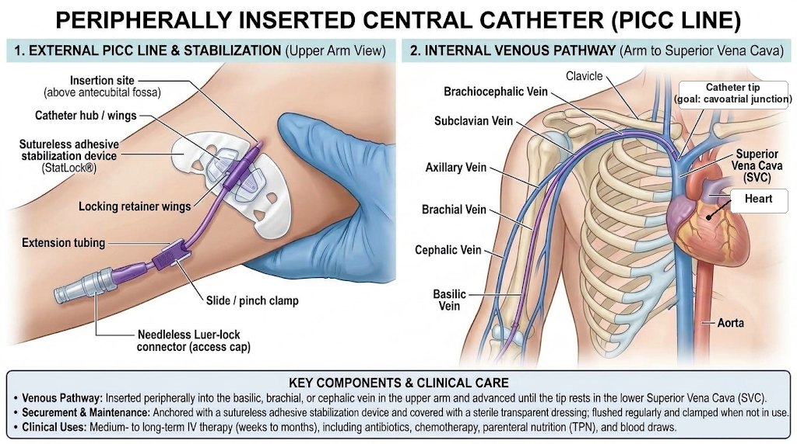
A PICC line threaded up the basilic vein. The tip is drawn higher than the goal; it should sit at the cavoatrial junction. Each shift, compare the external catheter length and upper-arm circumference with the insertion record. AI-generated illustration.
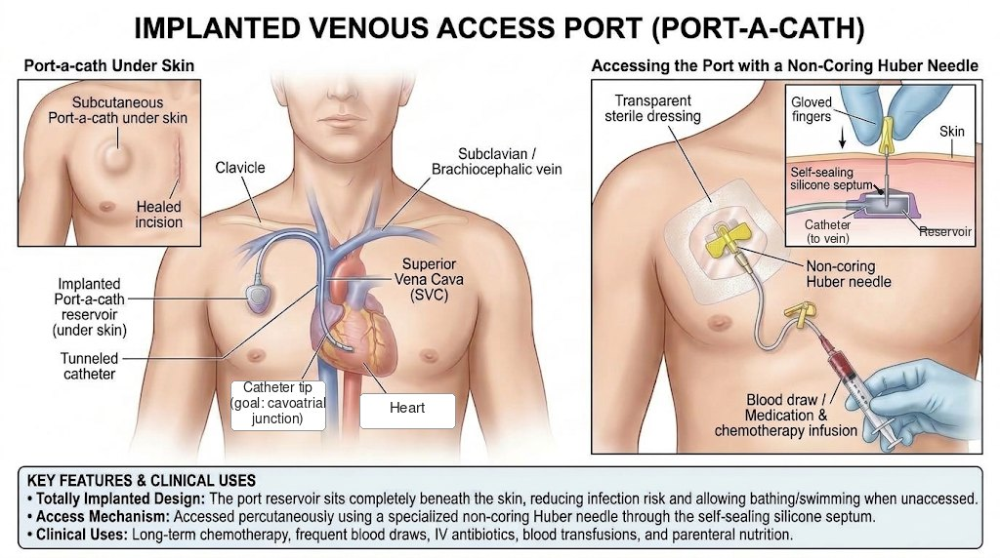
An implanted port accessed with a non-coring (Huber) needle at 90°. The tip is drawn deeper than the goal; it should sit at the cavoatrial junction. AI-generated illustration.
Insertion, complications, and the CLABSI bundle are in 17.1 and 14. Every shift: check the bundle (dressing clean, dry, intact, and dated; necessity reviewed), the external catheter length, and each lumen's patency. Scrub the hub for 15 seconds before every access; where disinfecting caps are stocked, a cap left on for its contact time replaces the scrub (31.3). Ports are accessed only with a non-coring (Huber) needle.1,5
| Active scrub | Passive disinfecting cap | |
|---|---|---|
| How | Scrub the needleless connector (top and threads) with friction before every access, then let it dry completely. | A cap containing 70% isopropyl alcohol stays screwed onto the connector between uses and disinfects it continuously. |
| Agent and time | 70% alcohol, an iodophor, or chlorhexidine (above 0.5%) in alcohol. Scrub and dry times depend on the agent and the connector, commonly about 5–15 seconds of scrub plus full drying (INS 2024).1 Follow your policy's number. | Disinfected once it has been on for the manufacturer's contact time (commonly about 1 minute or more). Before that, or if the cap is missing, scrub. |
| Evidence | The standard. Works only if it is done every time, for the full time, and allowed to dry; adherence is the weak point. | Supported by INS 2024 and SHEA 2022 as an addition to the bundle where stocked; studies show fewer CLABSIs and less hub contamination.1,6 |
| Rules | Never access a wet or unscrubbed hub. A new connector is not sterile once handled. | A cap is single use: once removed, discard it and put a new one on after access. Cap every needleless connector on the line, including unused lumens, and use tip caps for disconnected IV tubing ends where stocked. |
Whether your unit stocks disinfecting caps, and its scrub time, are set by policy.
| Item | Interval (CDC 2011; INS 2024 where stricter). Your hospital's policy may be stricter Institutional variation |
|---|---|
| Transparent dressing, short-term CVC | At least every 7 days, and whenever damp, loose, or soiled |
| Gauze dressing, short-term CVC | Every 2 days, and whenever damp, loose, or soiled |
| Continuous administration sets (no blood, lipids) | No more often than every 96 hours, but at least every 7 days |
| Tubing for blood, blood products, or lipid emulsions | Within 24 hours of starting (CDC 2011). INS 2024 is stricter: blood sets after each unit or at least every 4 hours; lipid emulsion alone every 12 hours.1 |
| Propofol tubing | Every 6 or 12 hours, when the vial is changed, per the manufacturer |
| Arterial transducer system (transducer, tubing, flush device, bag) | Every 96 hours, all together (16.3) |
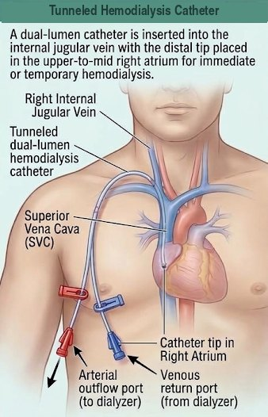
A tunneled hemodialysis catheter: the arterial (red) lumen sends blood to the dialyzer and the venous (blue) lumen returns it. Use it only for dialysis unless policy allows otherwise. AI-generated illustration.
Fistula, graft, and dialysis catheter rules are in 27.3: no BP, sticks, IVs, or restraints on a fistula or graft arm; check thrill and bruit every shift (loss is an emergency); and dialysis catheters are heparin- or citrate-locked and used only per policy. Document the access type (AVF, AVG, HDC, PD) and the thrill and bruit.
| Tube | Key nursing points |
|---|---|
| Salem sump (double lumen) | For decompression and suction. The blue pigtail is an air vent that lets the tube suction gently: keep it above the level of the stomach, never clamp it, and never connect it to suction. If it leaks gastric contents, flush it with air per policy. Usually on low continuous suction (LCS) per order. |
| Levin (single lumen) | No vent, so use low intermittent suction (LIS) only; continuous suction pulls the gastric lining into the holes. |
| Small-bore feeding tube (SBFT, Dobhoff) | For feeding and meds. Confirm placement by x-ray before first use; leave the stylet in until placement is confirmed, and never reinsert it once removed. Flush with about 30 mL of water every 4 hours during continuous feeds and before and after each medication (ASPEN), and give meds one at a time.7 |
| All tubes | Measure and document the external length (cm at the lip or nare) every shift and before use; record output volume and character; keep the HOB ≥30°. Advance tube feeds per the order (an order such as “↑20 q4h” means increase by 20 mL/hr every 4 hours to goal). Nutrition details: 28.9. |
A bridle loops a soft tape behind the vomer bone and clips it to the tube. In a meta-analysis it cut tube dislodgement sharply compared with tape alone (odds ratio about 0.16), at the cost of more nasal skin problems.8 Check the nares and septum every shift, keep the clip off the skin, and never pull on the bridle to reposition the tube. Who places bridles on your unit.
Pumps differ; this example follows the Kangaroo OMNI, a common model. Load the set's cassette fully into the pump, prime it before connecting to the patient, then program the mode (continuous or intermittent), rate, volume, and flush settings per the order. Clear the pump's volume totals at the times your unit totals intake and output. Full steps are in the instructions for use (on the pump's USB or at mykangaroolearning.com).9
| Alert | What to do |
|---|---|
| Feed complete / feed incomplete (green) | Complete: press Done. Incomplete: press Continue Feed to resume the regimen, or Restart Feed for a new one. |
| Pump inactive; low battery (yellow) | Inactive means it hasn't run for over 10 minutes: press Continue. Low battery means about 30 minutes left: plug it in. |
| Patient tube blocked | A clog between the pump and the patient: check for kinks and a closed tube, flush the feeding tube, then restart. |
| Feed error / flush error | Bag empty: refill, press Continue, and re-prime with the patient disconnected. Bag not empty: look for a kink or clog between the bag and the pump. |
| Cassette dislodged; rotor stuck | Reload the cassette and press Continue. Rotor stuck: unplug, clean the rotor with a damp cloth, and reload. |
| System error; dead battery (red) | Press Restart Pump; for a dead battery, plug in and restart. |
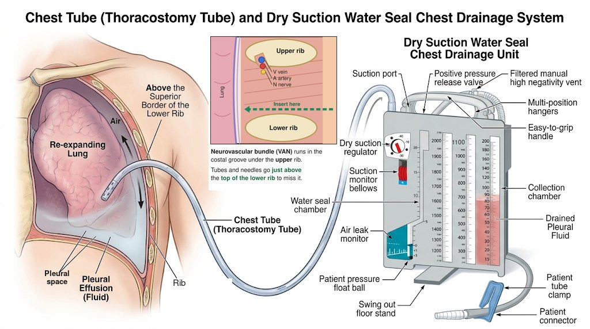
A chest tube and dry-suction drainage unit. Tubes go just above the lower rib to avoid the neurovascular bundle under each rib. Drainage unit models differ; learn the one your unit stocks. AI-generated illustration.
Both are closed-suction drains. A Jackson-Pratt (JP) uses a squeezed bulb; a Hemovac uses a spring-loaded canister. Keep them compressed so they keep suctioning; empty when half full or per order, measure each drain separately, and note color and character (a change to bright red or bilious, cloudy, or foul output gets reported). Secure the tubing so it can't be pulled.
| Drain | Key points |
|---|---|
| Penrose | A soft open tube that drains passively into the dressing, with no suction. Change the absorbent dressing as it saturates and estimate output by counting or weighing dressings. A safety pin or suture keeps it from slipping in. |
| Tunneled pleural or peritoneal catheter (PleurX type) | A chronic, tunneled drain for recurrent effusions or ascites. It stays clamped and is drained intermittently into vacuum bottles, with the volume limited per order and the manufacturer, using sterile technique at the valve. |
| Peritoneal dialysis catheter | Used only for dialysis, by trained staff (27.5). |
| Chest tubes | 31.7 and 25.32. |
Temporary versus chronic: surgical drains such as JP, Hemovac, and Penrose are temporary and come out when output falls; tunneled drains are chronic and managed long-term. Dressings are changed per the surgeon's order and policy (commonly daily and as needed), with the site assessed each time.
Removing a non-tunneled drain (when ordered and within the RN's role on your unit): explain and premedicate if needed; release the suction (open the bulb); remove the dressing and cut the securing suture; have the patient exhale and withdraw the drain in one smooth, steady pull, stopping for resistance; check the tip is intact; apply a dry dressing; and document the output, tip, site, and how the patient tolerated it.
EVD leveling, clamping, and drainage are in 26.13–26.14. Trach care, cuff management, and the bedside spare trach and obturator are in 25.12.
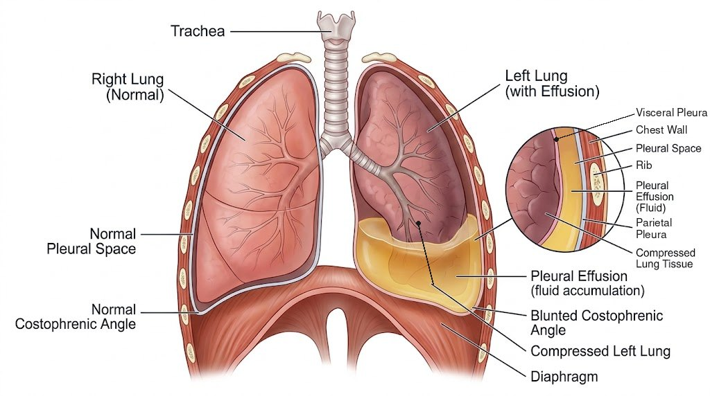
A left pleural effusion. In an upright patient the fluid line usually curves up along the chest wall (the meniscus sign). AI-generated illustration.
For every procedure: confirm consent and the order, check labs and anticoagulants, do the time-out (correct patient, procedure, site, and side), position and monitor the patient, keep emergency equipment and reversal agents ready, give medications as ordered, and document vital signs, medications, the patient's response, specimens sent, and complications.
| Procedure | Nurse role |
|---|---|
| Moderate (procedural) sedation | Full detail in 31.14. One person whose only job is monitoring: continuous SpO2, ECG, capnography, BP at regular intervals, and level of sedation. Have naloxone, flumazenil, suction, oxygen, and a bag-valve mask at the bedside, and monitor until the patient is back to baseline (ASA 2018).17 |
| Rapid sequence intubation | 25.8–25.9; difficult airway: 25.8. |
| Extubation | The patient has passed an SBT and can protect the airway. If high risk for stridor (traumatic intubation, intubated over 6 days, large tube, female, prior unplanned extubation), a cuff-leak test; if it fails, steroids at least 4 hours before extubation (ATS/CHEST 2017). Suction the tube and mouth, sit upright, deflate the cuff, remove the tube, give oxygen (high-flow or NIV for high-risk patients), and watch for stridor, work of breathing, and SpO2. |
| Central line insertion | 17.1 (checklist and stop authority). |
| Arterial line insertion | 16.5. |
| Lumbar puncture | 26.22. |
| Bronchoscopy | 25.25. |
| Bedside tracheostomy | FiO2 100%, deep sedation and often neuromuscular blockade, bronchoscope guidance, and the ETT pulled back under direct view. Keep a spare airway and the reintubation kit ready. Afterward: bleeding, cuff pressure, ties, and the spare trach and obturator at the bedside (25.12). |
| Paracentesis | Empty bladder, supine or slightly elevated. Watch for hypotension and site leakage; record the volume removed. For large-volume taps over 5 L, albumin is usually given, about 6–8 g per liter removed (AASLD 2021), per order.18 |
| Thoracentesis | Ultrasound-guided, with the patient sitting and leaning forward over a table. Stop draining for chest discomfort, a persistent cough, or about 1.5 L (BTS 2023).19 Afterward watch for pneumothorax and re-expansion edema (dyspnea, hypoxia, cough); a chest x-ray per order. |
| Chest tube placement | Analgesia and sedation, positioning (arm above the head), and the drainage system set up and primed per the manufacturer before insertion, with suction per order. Secure the tube, apply an occlusive dressing, and expect a chest x-ray (25.32, 31.7). |
Moderate sedation lets a patient get through a short, uncomfortable procedure (cardioversion, TEE, bronchoscopy, a chest tube, a central line) while still breathing on their own and responding to you. In many hospitals an RN with a documented competency gives the drugs on the provider's order while the provider does the procedure. The danger is that sedation is a continuum: a dose that is moderate for one patient is deep sedation, or general anesthesia, for another.
| Level (ASA) | Responds to | Airway | Breathing | Circulation |
|---|---|---|---|---|
| Minimal (anxiolysis) | Voice, normally | Unaffected | Unaffected | Unaffected |
| Moderate (“conscious sedation”) | Voice or light touch, purposefully | No intervention needed | Adequate | Usually maintained |
| Deep | Only repeated or painful stimulation, purposefully | Intervention may be needed | May be inadequate | Usually maintained |
| General anesthesia | Not arousable, even to pain | Intervention often needed | Often inadequate | May be impaired |
Scope. What an RN may give for procedural sedation is set by the state Board of Nursing, the hospital's sedation policy, and your documented competency. Most policies let a credentialed RN give moderate-sedation drugs (such as midazolam and fentanyl) with the provider present, and keep drugs meant for deep sedation or anesthesia (such as propofol, ketamine, and etomidate) with a credentialed provider who is present for the procedure. A patient who is intubated and already sedated on a propofol infusion is a different situation; follow the order and policy. Institutional variation
| Agent | Use | Typical adult IV dosing (give what is ordered) | Onset and duration | Side effects and cautions |
|---|---|---|---|---|
| Midazolam | Sedation, anxiety relief, amnesia. No pain relief. | Healthy, under 60: no more than 2.5 mg over at least 2 min; wait at least 2 more min before the next dose; a total over 5 mg is rarely needed. 60 or older, debilitated, or chronically ill: no more than 1.5 mg over at least 2 min, then no more than 1 mg over 2 min; a total over 3.5 mg is rarely needed. With an opioid or other depressant: about 30% less, and at least 50% less in older or debilitated patients (label).22 | Sedation in 3–5 min (label).22 Lasts longer in older adults, obesity, and liver or kidney failure. | Respiratory depression and apnea, much worse with an opioid; hypotension; paradoxical agitation. Reversal: flumazenil. |
| Fentanyl | Pain relief | Commonly 25–50 mcg (about 0.5–1 mcg/kg) every 2–5 min to effect, less in older or frail patients (common practice). | Almost immediate. Peak respiratory depression 5–15 min after a dose. Analgesia 30–60 min after a single dose up to 100 mcg (label).23 | Respiratory depression, bradycardia, nausea, itching. Muscle rigidity, including of the chest wall, rises with the dose and speed of injection and can make bagging hard. Reversal: naloxone. |
| Morphine, hydromorphone | Pain relief | As ordered. | Slower peak (morphine about 20 min) and longer action. | Hard to titrate for a short procedure. Morphine releases histamine (flushing, hypotension), and its active metabolite builds up in kidney failure. |
| Propofol, ketamine, etomidate, dexmedetomidine | Deep sedation or anesthesia, given by the credentialed provider per policy (49.4) | Provider-administered. | Propofol and etomidate work in under a minute and wear off in minutes. | You monitor. Propofol: apnea, hypotension. Ketamine: higher BP and HR, secretions, emergence reactions, laryngospasm. Etomidate: myoclonus, adrenal suppression. Dexmedetomidine: bradycardia and hypotension, with little respiratory depression. |
| Agent | Dose | Watch for |
|---|---|---|
| Naloxone (opioids) | Small increments titrated to breathing, commonly 0.04–0.4 mg IV every 2–3 min (49.4). | Onset 1–2 min. Shorter acting than most opioids, so sedation can return. Acute withdrawal, severe pain, hypertension, and flash pulmonary edema with large doses. |
| Flumazenil (benzodiazepines) | 0.2 mg IV over 15 sec. If not awake after 45 sec, 0.2 mg every 60 sec, up to 4 more doses (1 mg total). If sedation returns, repeat at 20-minute intervals, no more than 3 mg in an hour (label).24 | Onset 1–2 min. Shorter acting than midazolam, so sedation can return. Seizures, especially with chronic benzodiazepine use, a seizure disorder, or a tricyclic overdose. |
Set up at the bedside before the first dose. A common memory aid is SOAP-ME:
| Item | Check |
|---|---|
| Suction | Yankauer connected and working. |
| Oxygen | Source on; nasal cannula with an ETCO2 sampling line; a non-rebreather available. |
| Airway | Oral and nasal airways in several sizes, a bag-valve mask with the right size mask, and advanced airway equipment within reach. |
| Pharmacy | Naloxone, flumazenil, and emergency drugs; the code cart nearby. |
| Monitors | SpO2, ECG, NIBP set to cycle, and capnography, with alarms on. |
| Equipment | Defibrillator (pads on for a cardioversion), a working IV, and what the procedure needs. |
| Problem | Early signs | What you do |
|---|---|---|
| Respiratory insufficiency: hypoventilation or apnea | Slow, shallow breathing; rising ETCO2; a flattened or absent waveform. SpO2 falls late, especially on oxygen. | Stop dosing, stimulate, deep breaths, open the airway, bag if needed, call for help, reverse as ordered. |
| Airway obstruction | Snoring or gurgling; chest and belly moving in opposite directions; no waveform despite effort. Laryngospasm: stridor, or silent obstruction. | Head tilt–chin lift or jaw thrust, suction, oral or nasal airway. For laryngospasm: jaw thrust, 100% oxygen with positive pressure by bag-valve mask, and the provider now. |
| Oversedation | Responds only to repeated or painful stimulation, or not at all. | Stop the drugs and the procedure; support the airway; reverse as ordered. |
| Undersedation | Moving, grimacing, crying out, pulling away; rising HR and BP; the procedure cannot go on safely. | First rule out hypoxemia, hypercarbia, a full bladder, and poor positioning. Decide pain (opioid) versus anxiety (benzodiazepine) and give the ordered drug, waiting for the last dose to peak. Tolerance (chronic opioids, benzodiazepines, or alcohol) may need larger doses. If moderate sedation is not enough, the provider stops and plans deeper sedation with an anesthesia team rather than stacking doses. |
| Hypotension | Fall from baseline; dizziness, nausea, pallor. Causes: sedative vasodilation, hypovolemia, a vasovagal response. | Stop or slow dosing; check breathing and SpO2; tell the provider; fluids, leg raise, or a vasopressor as ordered. |
| Bradycardia | Slowing HR, with or without hypotension. Causes: vagal stimulation (bronchoscopy, TEE), opioids, and hypoxemia. | Check oxygenation first; pause the stimulus; tell the provider; atropine or pacing per ACLS if symptomatic (24.2). |
| Tachycardia, hypertension, new dysrhythmia | Pain, anxiety, undersedation, hypoxemia, hypercarbia, or procedural stimulation. | Assess airway and ventilation first, then pain and sedation; 12-lead ECG and the provider for a new rhythm; ACLS if unstable. |
| Aspiration | Vomiting, coughing, new hypoxemia, wheezing. | Turn to the side, suction, oxygen, tell the provider; chest x-ray as ordered. |
| Paradoxical reaction | Restlessness, agitation, disinhibition, or combativeness after a benzodiazepine; more likely in older adults and with heavy alcohol use. | Rule out hypoxemia, hypercarbia, and pain first. Do not keep adding midazolam; tell the provider, who decides the next step (for example, flumazenil or a different plan). |
| Chest wall rigidity | Hard to bag after a fast fentanyl dose. | Call the provider at once: naloxone, or a neuromuscular blocker and intubation. |
| Allergic reaction | Hives, wheezing, hypotension. | Stop the drug; treat as anaphylaxis (20.5). |
Answers.
Additional sources
Part V
Hands-on skills from a typical critical care staged orientation guide and procedural skills checklist, taught step by step with the reason for each step, common errors, documentation, and a self-check. Section 32 maps every checklist item to where it is taught.
Part V turns this guide from a reference into a course. It is built around a typical critical care RN staged orientation guide, modeled on one large health system's program (Stage 0, the Consolidated Stages, and the Procedural Skills Checklist). Every item on that checklist is mapped below to the place in this guide that teaches it. Where the rest of the guide already teaches a skill well, the crosswalk sends you there; where it did not, Sections 33 to 41 teach it step by step, with the reason for each step, the common errors, what to document, and a self-check with answers.
Orientation has two stages. Stage 0 (Setting the Stage) covers the unit's building blocks: resources, the environment of care, workflow, equipment, alerts, codes, resource teams, and quality data. The Consolidated Stages (Synthesis) assess clinical reasoning: assessment, interpretation, planning, implementation, evaluation, patient experience, communication, documentation, and quality and safety. The Procedural Skills Checklist is separate: these hands-on skills can be signed off whenever you perform one in front of a validator, at any point in orientation. Items marked (**) are essential to onboarding. All checklists must be done before you come off precepted orientation; extra checklists may be assigned and completed within six months of hire.
| Your job as the orientee | Why it matters |
|---|---|
| Bring the orientation guide to every shift. | Your validator signs it in real time; nothing is signed from memory. |
| Know the criteria for the stage you are in. | You can steer your assignment toward the items you still need. |
| Look up the policy before you demonstrate a skill. | The checklist validates the facility procedure, not a generic one. Read it first; then this guide explains the why. |
| Ask for feedback right after each skill. | Errors are corrected while the steps are fresh. |
| Update progress at the end of each shift (at least weekly). | Gaps show up early enough to fix before your last precepted week. |
Use this table as your sign-off planner. Circle each item when it is validated.
| Checklist item | Where it is taught |
|---|---|
| ICU care | |
| AED / defibrillator ** (modes, joules, charge and shock, pacing mA and rate, daily check) | 33.3, 33.4, 33.5, 22.3 |
| Electrode lead placement ** and alarm management | 33.1 |
| Bedside monitor ** (set-up, alarms, modules, strips with PR/QRS/QT, history, labels, goal ranges) | 33.1, 22.1 |
| Blood transfusion administration ** (reactions, emergency release, barcode BCTA, pre-transfusion) | 34.9, 28.2, 28.3 |
| Nurse role in assisting the provider ** (bronchoscopy, trach, paracentesis, thoracentesis, chest tube, RSI, moderate sedation, extubation, central and arterial lines, LP) | 31.13, 31.14, 25.8, 25.25, 26.22 |
| Mobility and transfer devices ** (gait belt, walker, lifts, slide boards) | 41.1, 13.5 |
| Restraint application and monitoring ** | 13.12, 41.2 |
| Suction set-up and techniques ** (oral, nasopharyngeal, tracheal, gastric) | 35.1, 25.11 |
| GI and GU | |
| Indwelling urinary catheter ** (insertion, management, early removal) | 31.6, 37.2 |
| Intra-abdominal pressure monitoring | 27.12, 37.3 |
| NG/OG insertion and GI tube management ** (G-tube, J-tube, PEG) | 31.5, 37.1 |
| Ostomies (pouch change, wafer, powder, paste, leak prevention) | 31.12 |
| Rectal tubes ** | 31.10, 37.4 |
| Small-bore feeding tube and tube feeding pumps | 31.5, 28.9 |
| Bladder scanner ** and continuous bladder irrigation ** | 31.6, 37.2, 27.14 |
| Esophagogastric tamponade tube (rationale, RN role in placement) | 27.10 |
| Neuro | |
| Brain death criteria and the death process (donor notification, paperwork) | 26.23, 26.24, 36.7 |
| External ventricular drain (care, safety, indications) | 26.14, 36.1 |
| ICP monitoring | 26.13, 26.16, 36.1 |
| Lumbar drain care and management | 36.2 |
| Pupillometer | 26.4, 36.3 |
| C-collar application and sizing; types on the unit | 36.4 |
| Spinal precautions (log roll indications, technique, 6-person lift) | 36.5, 46.3 |
| Thrombolytic therapy (care and monitoring) | 26.11, 36.6 |
| Invasive lines and access devices | |
| Arterial line management ** and blood sampling | 16.5, 34.3, 34.4 |
| Arterial sheath management and removal | 34.6 |
| Central line management ** (dressing, need review, CLABSI, patency) | 31.2, 31.3, 17.1, 14 |
| Drain management ** and removal of a non-tunneled drain | 31.8 |
| Implanted port (access, management, de-access) | 31.2 |
| Invasive line management ** (arterial, CVP, PA: set-up, strips, normal values, draws, zeroing and leveling) | 16.3–16.5, 17.4, 34.3 |
| IV pumps and line maintenance ** (drug library, alarms, concentrations, tubing labels and limits) | 18, 31.3 |
| Non-invasive and invasive monitoring set-up (NICOM, EV1000, Vigileo, and others) | 34.5, 16.10 |
| Peripheral IV insertion ** (labeling, dressing limits, documentation) | 31.1, 31.3 |
| Post arterial access management ** (TR Band, FemoStop, signs after removal) | 15, 34.6 |
| Rapid infuser ** | 34.8, 29.1 |
| Removal of a non-tunneled central line | 34.7 |
| Respiratory and ventilation | |
| Arterial blood gas ** (radial collection, interpretation) | 25.2, 25.3 |
| Chest tube maintenance and troubleshooting | 25.32, 31.7 |
| Difficult-airway management (LMA, King) | 25.8 |
| Endotracheal tube management ** | 25.11 |
| Noninvasive positive pressure ventilation (CPAP, BiPAP, AVAPS): care, alarms, troubleshooting | 25.7, 35.3 |
| Oxygen therapy and ETCO2 ** (devices, indications, limits) | 25.6, 25.3, 35.2 |
| Prone therapy (indications, P/F ratio, skin) | 25.18, 35.4 |
| Tracheostomy care ** | 25.12 |
| Ventilator management ** (closed suction, VAP/VAE prevention, SAT/SBT, weaning) | 25.13–25.24, 14 |
| Additional skills | |
| Bispectral index (BIS) | 25.28 |
| External fixation, traction, halo; pin care; emergency equipment | 40.2–40.4 |
| Negative-pressure wound therapy (alarms, canister, documentation) | 31.9 |
| Orthopedic bracing, precautions (hip, shoulder, knee, spine), weight bearing | 40.5, 40.6 |
| Peripheral nerve stimulator | 25.30 |
| Temporary pacing (transcutaneous, transvenous, epicardial) | 33.5, 33.6, 24.4 |
| Other skills | |
| Targeted temperature management devices ** | 22.27 |
| 12-lead ECG | 33.2, 22.10 |
| Lab and culture collection (sites, ID and labels, order of draw, central-line draws) | 34.1, 34.3 |
| Blood culture collection ** | 34.2 |
| Behavioral health safety and suicide risk ** (environment, observation levels, de-escalation, BERT, C-SSRS, NPG.08.01.01) | 41.3, 41.4, 46.8 |
| Medication administration | |
| Epidural infusion management (dermatomes, ETCO2, vital signs) | 38.2 |
| IV medication compatibility ** (Y-sites, multi-lumen adaptors) | 18 |
| IV medication titration (monitoring, emergency and block charting) | 18, 38.3 |
| Patient-controlled analgesia ** | 38.1 |
| Burns | |
| Burn depth, wound conversion, coverings, dressings, topical agents, grafts, donor sites, graft take, ear and neck burns, wrapping, infection | 39.1–39.9 |
| Additional learning modules on the checklist | |
| IABP; Impella | 22.19–22.22 |
| CRRT / CVVHD | 27.3, 27.4 |
| Ultrasound-guided peripheral IV | 31.1 |
Many EHRs present the critical care documentation routines in an order like the one below. Learn the order once and your charting gets faster.
| When | Routines |
|---|---|
| Admission (and any change in level of care) | QuickStart; first point of contact (if not done earlier); safety, risk, and regulatory screens: isolation status, skin risk, fall risk, suicide screening, sepsis screening, vaccination screening; vital signs, height and weight (in the critical care flowsheet); MEWS if your unit requires it; health history with allergies and home medications; admission assessment; dysphagia screen (per order or stroke-center requirement); pain assessment; plan of care. |
| Every shift | Vital signs, height and weight per order or unit standard; full shift assessment (focused assessments as needed); safety and risk screens (isolation, skin, falls, sepsis; suicide screen if indicated; vaccination screen if not done at admission); pain assessment and reassessment; RASS and CAM-ICU; lines, drains, and airways; routine daily care; teaching; plan of care. |
| As needed | Alcohol history (AUDIT-C); barcode transfusion screens and pre-transfusion vital signs; CIWA-Ar and COWS when ordered; GCS; incentive spirometry; intake and output; IV drip titration; NIH Stroke Scale; PCA; post-fall assessment; postmortem care; restraints (every 2 hours); train-of-four; ventilator management (in the critical care flowsheet). |
| Discharge or transfer | Plan of care; discharge instructions; discharge medication reconciliation; confirm vaccination screening is complete. |
These are not skills you check off once. Validators look for them every shift.
| Behavior | What good looks like | Tool |
|---|---|---|
| Recognize and respond | You notice subtle abnormal findings early and say what they mean for the plan, including in an emergency. | Section 10; 10, early warning signs by system |
| Plan of care | Review orders, set priorities with a rationale, and adjust when new data arrive. Have a plan for what you will do if things change. | 11 (contingency planning) |
| Clustered care | Group assessments, meds, and turns so the patient rests and the shift flows. | 7 |
| Communicate in SBAR | Situation, background, assessment, recommendation: organized, concise, and ending with a clear ask. | 11 |
| Delegate | Use the five rights of delegation: right task, circumstance, person, directions and communication, supervision and evaluation (NCSBN/ANA 2019).1 You keep accountability, so follow up. | Below |
| Advocate and resolve conflict | State the concern, the risk, and what you need. TeamSTEPPS: CUS (I am Concerned, I am Uncomfortable, this is a Safety issue) and the two-challenge rule (voice a concern at least twice; if it is still unaddressed, go up the chain of command).2 | 11 |
| Service recovery | When something goes wrong for a patient or family, apologize for the experience, listen without defending, fix what you can now, tell them what happens next, and follow up. Escalate to the charge nurse when you cannot fix it. | Below |
| Multimodal pain management | Reassess pain after every intervention; combine non-opioid drugs, regional techniques, opioids, and non-drug measures per order. | 25.21, 38.1 |
| Documentation | All required care documented within a reasonable time: late entries labeled as late. | 12 |
| Quality and safety | Hand hygiene and aseptic technique every time; report hazards and near misses; tie your actions to the quality metrics (CLABSI, CAUTI, falls, pressure injury, sepsis). | 14 |
Before you hand a task to a nursing assistant or other team member, check that the task is within their role and competency, that the patient is stable enough for it, and that you have told them exactly what to do, what to report, and by when. Assessment, care planning, evaluation, teaching, and judgment cannot be delegated. When the task is done, check the result.
Learn, for your hospital: how to call a code (Code Blue), a rapid response, a stroke alert, a sepsis alert, and a behavioral emergency response (BERT); who comes; what you bring and do while you wait; and where the code cart, defibrillator, difficult-airway cart, and rapid infuser live. Know the purpose, criteria, and process for each alert, the facility's resource teams (rapid response, vascular access, wound care, palliative care, pharmacy, case management, chaplaincy, interpreter services), and where the unit's quality and safety data are posted.
Answers.
Most false alarms come from poor electrode contact. The AACN practice alert on alarm management recommends proper skin preparation and changing electrodes daily, because dried gel and poor contact create artifact that looks like arrhythmia and trains everyone to ignore the monitor.1
| 5-lead electrode | Position (continuous monitoring) | Memory hook |
|---|---|---|
| RA (white) | Right infraclavicular area, near the shoulder | White on the right |
| LA (black) | Left infraclavicular area, near the shoulder | Smoke over fire |
| LL (red) | Left lower rib cage or abdomen | (black above red) |
| RL (green) | Right lower rib cage or abdomen (ground) | Snow over grass (white above green) |
| V / chest (brown) | Usually V1: 4th intercostal space, right sternal border | Chocolate close to the heart |
A diagnostic 12-lead needs the limb electrodes on the limbs. Torso placement (as on a monitor) changes the axis and the limb-lead voltages and can hide or mimic an inferior MI.4
| Lead | Placement |
|---|---|
| Limb leads (RA, LA, RL, LL) | Wrists or upper arms and ankles or lower legs; same level on both sides; avoid bone. |
| V1 | 4th intercostal space, right sternal border |
| V2 | 4th intercostal space, left sternal border |
| V3 | Midway between V2 and V4 |
| V4 | 5th intercostal space, left midclavicular line |
| V5 | Left anterior axillary line, same horizontal level as V4 |
| V6 | Left midaxillary line, same horizontal level as V4 |
| Right-sided (V4R) | 5th intercostal space, right midclavicular line: look for RV infarction in an inferior MI |
| Posterior (V7–V9) | Same level as V6: posterior axillary line, scapular line, and left paraspinal: look for posterior MI |
| Mode | Use it for | Key points |
|---|---|---|
| AED | Unknown rhythm in arrest, especially for responders not trained in rhythm recognition | The device analyzes and advises. Follow the voice prompts. |
| Manual (unsynchronized) defibrillation | VF and pulseless VT | Biphasic: the manufacturer's recommended energy (commonly 120–200 J); if unknown, use the maximum. Monophasic: 360 J. Later shocks at the same or higher energy (AHA 2025).5 |
| Synchronized cardioversion | Unstable organized tachycardia with a pulse | The shock is timed to the R wave so it does not land on the T wave. 33.4. |
| Pacing | Symptomatic bradycardia not responding to atropine | Set rate and current (mA); demand mode senses intrinsic beats; fixed mode does not. 33.5. |
Synchronized cardioversion (direct-current cardioversion, DCCV) delivers a shock timed to the QRS to convert an organized tachyarrhythmia to sinus rhythm. Timing matters: a shock on the T wave (the vulnerable period) can cause VF. Which rhythms are cardioverted, and when, is in 22.34.
| Indicated rhythms | Energy (AHA 2025 cardioversion algorithm)6 |
|---|---|
| Atrial fibrillation (most common) | 200 J |
| Atrial flutter | 200 J |
| Narrow regular tachycardia (SVT) | 100 J |
| Monomorphic VT with a pulse | 100 J |
| Polymorphic VT | Not synchronized: defibrillate |
Increase energy for later attempts per the provider's order or protocol. The device may need resynchronizing before each shock; if synchronization is delayed in a crashing patient, switch to unsynchronized shocks.
| Complication | What to do |
|---|---|
| Transient: benign arrhythmias, hypotension, ST/T changes | Monitor; usually resolve. |
| Skin burns | Good pad contact; assess and treat the skin. |
| Thromboembolism (stroke) | Appropriate anticoagulation before and after; neuro checks. |
| VF from an unsynchronized shock | Defibrillate; start CPR. |
| Pulmonary edema (rare) | Oxygen, diuretic per order. |
Section 22.3 explains when and why; this is the bedside sequence. AHA 2025 lists pacing, or an infusion of dopamine or epinephrine, when atropine fails for symptomatic bradycardia.
Transvenous wires go through a central vein into the right ventricle (or atrium). Epicardial wires are sewn onto the heart during cardiac surgery and exit through the skin; by convention, atrial wires exit to the right of the sternum and ventricular wires to the left, but always check the labels. Both connect to an external pulse generator (pacing box).
| Setting | What it does | Nursing check |
|---|---|---|
| Mode (AAI, VVI, DDD, AOO/VOO/DOO) | Chamber paced, chamber sensed, response (24.4) | Matches the order; asynchronous modes only when ordered (risk of R-on-T). |
| Rate | Lower rate the box will allow | Matches the order. |
| Output (mA) | Energy per pulse | Usually set at least 2–3 times the capture threshold; threshold testing per policy and by whoever your policy allows. |
| Sensitivity (mV) | How small a signal the box will "see" | A lower mV number means more sensitive. |
| Problem | You see | First actions |
|---|---|---|
| Failure to pace (no output) | No spikes when the rate is below the set rate | Check connections, the battery, and that the box is on and not paused; be ready for transcutaneous pacing; call. |
| Failure to capture | Spikes with no following complex | Increase output per order or protocol; check connections; reposition the patient; correct K+, acidosis, hypoxia; call. |
| Undersensing | Spikes falling in the native rhythm (risk of R-on-T) | Make it more sensitive (lower the mV number) per order; call. |
| Oversensing | Missing spikes; pauses (the box mistakes artifact or T waves for beats) | Make it less sensitive (raise the mV number) per order; remove electrical interference; call. |
Answers.
| Order (CLSI GP41) | Tube (common cap color) | Examples |
|---|---|---|
| 1 | Blood culture bottles | Cultures |
| 2 | Sodium citrate (light blue) | PT/INR, aPTT, fibrinogen, anti-Xa |
| 3 | Serum tube, with or without clot activator or gel (red, gold) | Chemistries, drug levels |
| 4 | Heparin (green) | Plasma chemistries, ammonia |
| 5 | EDTA (lavender, pink) | CBC, type and screen |
| 6 | Glycolytic inhibitor (gray) | Some glucose and lactate methods |
| Specimen | Technique that gives a valid result |
|---|---|
| Nasal swab (MRSA screen) | Insert the swab about 1 cm into each naris and rotate against the mucosa; use the kit's swab and medium. |
| Wound | Clean with sterile saline first; culture viable tissue, not pus or eschar (Levine technique: rotate the swab over about 1 cm² with enough pressure to express fluid). |
| Sputum | Deep sample, not saliva. With an ETT, use an in-line sputum trap during suctioning. |
| Stool for C. difficile | Only unexplained new diarrhea (3 or more unformed stools in 24 hours) in a patient not on laxatives in the past 48 hours (IDSA/SHEA).3 |
| Urine (catheter) | From the sampling port after scrubbing it, never from the bag. Clean-catch midstream for a non-catheterized patient. |
| Blood | Peripheral venipuncture or per the line-draw policy (34.3). |
A contaminated culture leads to extra antibiotics, more line removals, and a longer stay. The CLSI benchmark is a contamination rate of 1% or less.4
| Method | How it works | Key safety points |
|---|---|---|
| Closed system, syringe | An in-line reservoir (VAMP) draws the clearing volume; a syringe on a needleless cannula takes the sample from the sampling site; the clearing volume is returned. | Fill the reservoir completely; close its shut-off valve before sampling; never remove the syringe without its needleless cannula; aspirate no faster than about 1 mL per second. |
| Closed system, direct draw | Same, with a direct-draw holder so tubes fill from arterial pressure and vacuum. | Clean each tube top; keep the order of draw; detach the holder and cannula as one unit. |
| Open technique, syringe | A waste syringe on the stopcock nearest the patient removes the clearing volume; a second syringe takes the sample. | Waste volume per policy; discard the waste syringe at once so it cannot be confused with the sample; open-system draws carry a higher infection rate than closed systems. |
| Open technique, direct draw | A non-additive tube collects the waste; then specimen tubes. | Same as above; discard the waste tube immediately. |
For every method: verify the orders and group the labs to limit line access; suspend the arterial alarms during the draw and restore them before you leave; use aseptic non-touch technique; flush all blood back out of the tubing and stopcock; watch the skin above and below the insertion site for blanching during the flush; then check the extremity's pulse, capillary refill, and color. ABG syringes: expel air, cap, and mix by rolling. A blood-conservation (closed) system lowers blood loss by roughly a quarter.
| Device type | How it works | Set-up and limits |
|---|---|---|
| Arterial pulse contour (FloTrac sensor on an EV1000, Vigileo, or HemoSphere monitor) | Calculates stroke volume and cardiac output from the arterial waveform; reports SV, CO/CI, SVV. | Enter age, sex, height, weight; zero the sensor; it needs a clean, well-damped arterial waveform. SVV is valid only with controlled ventilation, tidal volume of about 8 mL/kg or more, regular rhythm, and a closed chest (16.11). |
| Volume clamp finger cuff (ClearSight) | Continuous non-invasive BP and CO from a finger cuff | Size the cuff; use the heart reference sensor; unreliable with severe vasoconstriction or poor finger perfusion. |
| Bioreactance (NICOM / Starling) | Chest sensors measure changes in electrical current phase as blood flows | Correct sensor placement; often used for a passive leg raise test (16.13). |
| Transpulmonary thermodilution (PiCCO, VolumeView) | Cold saline injected through a CVC, sensed by a femoral arterial catheter; calibrates pulse contour | Needs a central line and a thermistor-tipped arterial catheter; recalibrate per manufacturer. |
Sheath removal is done by trained nurses or the provider, per policy and competency. Know your policy's coagulation threshold (for example an ACT or aPTT limit) before you start.
| Complication | Clues | Action |
|---|---|---|
| Vasovagal reaction | Sudden bradycardia, hypotension, nausea, sweating during the pull | Keep pressure on; lower the head; fluids and atropine per order; call. |
| Hematoma | Swelling or a firm mass at the site | Manual pressure; mark the edges; notify. |
| Retroperitoneal bleed | Back, flank, or lower abdominal pain; falling BP and rising HR; dropping hemoglobin, often with no visible bleeding | Emergency: call the provider; fluids and blood per order; CT. |
| Pseudoaneurysm or AV fistula | Pulsatile mass, bruit, or thrill | Notify; ultrasound. |
| Limb ischemia | Pain, pallor, cool limb, weak or absent pulse | Notify immediately. |
Radial access after a cath (TR Band) and FemoStop are taught in Section 15 (post-procedure care).
The danger is air embolism: when the catheter comes out, the open tract can suck air into a central vein, especially if the site is above the heart, the patient is hypovolemic, or the patient breathes in during removal.
Rapid infusers (for example the Belmont or the Level 1) warm and pump blood and crystalloid at very high rates for massive hemorrhage and massive transfusion (29.1). Learn the model on your unit and where it is stored.
| Topic | What to know |
|---|---|
| When | Massive hemorrhage or MTP activation, trauma, ruptured aneurysm, major GI or obstetric bleeding. |
| Access | Flow depends on the catheter: large-bore short PIVs (14–16 G), a rapid infusion catheter, or an introducer sheath. Multi-lumen CVC lumens are long and narrow and limit flow. |
| Set-up | Prime per the manufacturer; confirm the air detector and warmer are working; set the rate per order. |
| Fluids | Blood products with 0.9% saline or a fluid the device and blood bank approve. Never run calcium-containing fluids (such as lactated Ringer's) in the same line as blood unless your policy and blood bank allow it. |
| Watch for | Hypothermia (keep everything warmed), low ionized calcium from citrate (give calcium per MTP), hyperkalemia, volume overload, air embolism; track every product and volume. |
| Reaction | Typical signs |
|---|---|
| Acute hemolytic (ABO incompatibility) | Fever, chills, flank or back pain, hypotension, dark urine, bleeding (DIC), a sense of doom |
| Febrile non-hemolytic | Temperature rise of 1°C or more, chills; a diagnosis of exclusion |
| Allergic / anaphylactic | Hives and itching; or wheeze, angioedema, hypotension |
| TACO | Dyspnea, hypertension, crackles, raised JVP, positive fluid balance (28.3) |
| TRALI | Hypoxemia and bilateral infiltrates within 6 hours, often with fever and hypotension (28.3) |
| Septic (contaminated unit) | High fever, rigors, hypotension, especially with platelets |
Answers.
Used for a patient who cannot clear secretions and has no artificial airway. Nasotracheal suctioning enters the lower airway, so it is a sterile procedure.2
| Do | Avoid |
|---|---|
| Explain; sit the patient up; pre-oxygenate; monitor SpO2 and heart rate. | Basilar skull fracture or facial trauma, nasal obstruction, active nasal bleeding or significant coagulopathy, epiglottitis or croup, a recently repaired airway. |
| Lubricate the catheter with water-soluble lubricant; measure nose to earlobe for nasopharyngeal depth. | Applying suction while advancing. |
| Advance on inspiration; apply intermittent suction while withdrawing, for no more than 10–15 seconds.2 | Repeated passes without letting the patient recover. |
| Use a nasal airway (trumpet) if repeated suctioning is expected, to protect the mucosa. | Ignoring bradycardia (vagal), hypoxemia, or arrhythmia: stop and oxygenate. |
Full detail is in 25.6 and 25.3. The point of this table is to match the device to the goal.
| Device | Flow | Approximate FiO2 | Limits |
|---|---|---|---|
| Nasal cannula | 1–6 L/min | About 24–44% | Delivered FiO2 varies with breathing pattern; dries the nose above 4 L. |
| Simple face mask | 5–10 L/min | About 35–50% | At least 5 L/min to wash out exhaled CO2. |
| Non-rebreather | 10–15 L/min | About 60–90% | Reservoir bag must stay inflated; a short-term bridge. |
| Venturi (air-entrainment) mask | Set by the adaptor | 24–50%, fixed | Precise FiO2: useful in COPD with CO2 retention. |
| High-flow nasal cannula | Up to 60 L/min | 21–100% | Heated and humidified; washes out dead space; small PEEP effect; failure needs early recognition. |
| Mode | What it does | Typical use |
|---|---|---|
| CPAP | One continuous pressure throughout the breath: splints alveoli open, raises oxygenation, lowers preload and afterload | Cardiogenic pulmonary edema, obstructive sleep apnea |
| BiPAP (IPAP / EPAP, S/T) | Higher pressure on inspiration (IPAP) and lower on expiration (EPAP); IPAP minus EPAP is the pressure support that moves CO2; a backup rate in S/T mode | Hypercapnic COPD exacerbation, cardiogenic pulmonary edema3 |
| AVAPS (volume-assured) | Adjusts IPAP within a set range to deliver a target tidal volume | Hypoventilation syndromes, neuromuscular disease, COPD |
| Alarm | Common causes | Fix |
|---|---|---|
| High leak / low pressure / disconnect | Poor mask seal, mouth breathing on a nasal mask, disconnected tubing | Refit or resize the mask; chin strap or full-face mask; reconnect. |
| High pressure | Coughing, secretions, kinked tubing, the patient fighting the device | Suction or encourage coughing; straighten tubing; coach breathing; call RT. |
| Low tidal volume / low minute ventilation | Leak, weakness, fatigue, rising CO2 | Check the leak; assess the patient; ABG; call RT and the provider. |
| Apnea / low respiratory rate | Sedation, worsening hypercapnia (CO2 narcosis), sleep apnea | Stimulate; check the backup rate; ABG; escalate. |
| High respiratory rate | Distress, anxiety, pain, worsening failure | Assess; treat the cause; escalate. |
P/F ratio = PaO2 ÷ FiO2 (as a decimal). Example: PaO2 72 on FiO2 0.60 gives 72 ÷ 0.6 = 120. Under the Berlin definition, 200–300 is mild, 100–200 moderate, and 100 or less severe ARDS (with PEEP of at least 5).4 Proning is recommended for moderate to severe ARDS; the PROSEVA trial used a P/F under 150 on FiO2 0.6 or more and PEEP of 5 or more, with prone sessions of at least 16 hours a day (25.18).5
| Before turning | While prone |
|---|---|
| Team of at least 4–5, with RT or another clinician at the head managing the ETT | Turn the head and reposition arms (swimmer's position) about every 2 hours |
| Secure the ETT; know the depth; suction first | Check face, forehead, chin, chest, iliac crests, knees, toes, breasts, and genitals for pressure; foam dressings on bony points |
| Eye care and eyelids closed; empty the stomach or pause feeds per policy | Eye care; watch for facial edema |
| Lines and drains secured and long enough; ECG leads moved to the back | Enteral feeding can usually continue with reverse Trendelenburg; check tolerance |
| Pause the turn and a plan for CPR prone (compressions between the shoulder blades) if needed | ABG within about 1 hour; document the time prone and supine |
Answers.
Section 26.14 explains the principles. This is a typical bedside routine. Learn the brand your unit uses.
| Part | What it does |
|---|---|
| Pressure scale on the pole mount | Sets the height of the drip chamber relative to the zero point; the ordered pressure (mmHg or cmH2O) is read here. |
| Drip chamber and its stopcock | CSF drips in when ventricular pressure rises above the set level; the stopcock empties it into the bag. |
| System 3-way stopcock | Directs the patient line to the drain, to the transducer, or off. |
| Transducer and its stopcock | Converts pressure to the ICP waveform; zeroed to air. |
| Collection bag | Receives CSF from the chamber. |
| Routine | Steps |
|---|---|
| Check the order | Drainage, monitoring, or both; the units (mmHg or cmH2O, used consistently; 1 mmHg = 1.36 cmH2O); the reference point (tragus, for the foramen of Monro); how often to record ICP and drainage; when to notify. |
| Level (each shift, and with any position change, transfer, or odd reading) | Turn the system stopcock off to the patient; position with the ordered head-of-bed angle (commonly 15–30°) and the head midline; align the zero on the scale with the tragus using a laser or carpenter's level; reopen as ordered. |
| Zero (each shift, with transfer, an odd reading, or a disconnected cable) | Turn the transducer stopcock off to the patient and open to air per the manufacturer; press ZERO and wait for 0; replace a vented cap with a new sterile cap; close to air. |
| Record drainage (at least hourly) | Turn the system stopcock off to the patient; record the amount and color in the chamber; empty the chamber into the bag; reopen as ordered. |
| Read ICP (at least hourly) | Close the drain (system stopcock off to the drain) so the transducer reads the patient; confirm the alarm limits; look for a pulsatile waveform with P1, P2, and P3; record; reopen to drain if ordered. Monitoring and draining at the same time gives falsely low readings and risks CSF in the transducer line.1 |
| Transport or repositioning | Empty the drip chamber, clamp the EVD (per order or policy), move the patient, then re-level and reopen. A competent RN goes with the patient. |
Figure 36-1. ICP waveform shapes, two beats each. Read the shape only with the drain closed to the transducer (36.1). P1 (percussion) is the arterial pulse; P2 (tidal) reflects how well the brain tolerates volume; P3 (dicrotic) follows aortic valve closure. Original drawing; not to scale.
| Problem | Check |
|---|---|
| ICP rising | Assess the patient first (neuro exam, pupils, vitals), notify; check stopcocks, clamps, kinks, the chamber height; re-level and re-zero. |
| No drainage for an hour, or a flat waveform | Clamps and stopcocks; kinks; air or blood in the line; the insertion site. If the drain is patent, a drop of CSF appears when the chamber is lowered briefly: do this only if your policy allows, return it to the ordered height at once, and notify the provider if no CSF appears. |
| Sudden large output | Over-drainage: the chamber may be too low or the patient moved; clamp per policy and call. Risks: ventricular collapse, subdural hematoma, herniation. |
| Cloudy or bloody CSF, fever, leakage at the site | Possible ventriculitis or bleeding: report; the dressing is changed sterilely by the staff your policy allows. |
Removal: usually when ICP has normalized, drainage has fallen, and the neuro exam has been stable (often about 48 hours), after a clamp trial or raising the drain level. Watch closely for rising ICP or deterioration for at least 24 hours after removal.
A lumbar drain is a catheter in the lumbar subarachnoid space. It is used to divert CSF after a CSF leak (spine or skull base surgery), to protect the spinal cord during and after thoracoabdominal aortic repair (by lowering CSF pressure so cord perfusion pressure rises), and for diagnostic drainage trials such as normal pressure hydrocephalus.
| Collar | Use |
|---|---|
| Rigid extrication collar (for example Stifneck) | Prehospital and initial trauma; not for long-term wear (higher pressure injury risk). Replaced with a hospital collar per order. |
| Two-piece padded collars (for example Aspen, Miami J, Philadelphia, Vista) | In-hospital immobilization; replaceable pads; sized by the manufacturer's method. |
Indications: a suspected or confirmed unstable spinal injury, or an uncleared spine. Contraindications or cautions: the order says otherwise, or a procedure-specific restriction from neurosurgery.
| Item | Standard |
|---|---|
| Drugs (AHA/ASA 2026) | Tenecteplase 0.25 mg/kg (maximum 25 mg) as a single IV bolus over about 5 seconds; or alteplase 0.9 mg/kg (maximum 90 mg), 10% as a bolus over 1 minute and the rest over 60 minutes. With alteplase, give the drug left in the tubing per policy. |
| Blood pressure | At or below 185/110 before treatment; keep below 180/105 for 24 hours after.4 Lowering further to below 140 systolic gave no benefit. |
| Neuro checks and vital signs | Every 15 minutes for 2 hours, every 30 minutes for 6 hours, then hourly until 24 hours after treatment (more often if BP is high).4 |
| Bleeding precautions for 24 hours | Avoid new arterial punctures, indwelling urinary catheters, and NG tubes if they can wait; no antithrombotics until the 24-hour CT or MRI. |
| Swallow screen | Before anything by mouth. |
Answers.
Insertion and care of NG/OG and small-bore tubes, ostomies, enteral feeding pumps, Foley insertion, the fecal management system, CBI, and esophagogastric tamponade are taught in 31.5, 31.6, 31.10, 31.12, 27.10, and 27.14. This section adds the steps the checklist asks for that are not already there.
| Situation | What to do |
|---|---|
| Every shift | Check the external length or bumper position against the record; the bumper should allow slight in-and-out movement (no tight pull on the skin); the site for leakage, redness, or granulation. |
| Balloon-retained tubes | Check the balloon water volume per the manufacturer (often weekly) with sterile or distilled water. |
| Jejunostomy tubes | Continuous feeding only (no boluses, which cause dumping);1 do not check gastric residuals; flush on schedule to prevent clogging. |
| Tube comes out: new tract (in the first few weeks after placement) | Cover the site, do not reinsert, and notify the provider at once: the stomach may have separated from the abdominal wall, and a blind reinsertion can go into the peritoneum. |
| Tube comes out: mature tract | Cover the site and notify promptly: the tract can begin closing within hours. Replacement only by staff your policy allows. |
Answers.
| Setting | Meaning |
|---|---|
| Demand (bolus) dose | The dose the patient gets each time the button delivers |
| Lockout interval | The minimum time between doses (commonly 6–10 minutes) |
| Basal (continuous) rate | A background infusion: avoided in opioid-naive patients because it raises the risk of respiratory depression |
| Hourly or 4-hour limit | The maximum the pump will deliver in that time |
| POSS level | Description | Action |
|---|---|---|
| S | Sleep, easy to arouse | Acceptable |
| 1 | Awake and alert | Acceptable |
| 2 | Slightly drowsy, easily aroused | Acceptable |
| 3 | Frequently drowsy, arousable, drifts off to sleep during conversation | Unacceptable: decrease the dose per order, monitor closely, notify |
| 4 | Somnolent, minimal or no response to verbal or physical stimulation | Unacceptable: stop the opioid, support breathing, consider naloxone, call |
Epidural analgesia delivers a local anesthetic (bupivacaine, ropivacaine, lidocaine), an opioid (fentanyl, hydromorphone, morphine), or both into the epidural space, giving strong pain relief with lower opioid doses. With PCEA the patient can give set boluses.
| Contraindications | Watch for |
|---|---|
| Patient refusal or inability to use the demand button (for PCEA); infection at the site; coagulopathy or low platelets; certain spinal abnormalities; allergy to the drug; untreated hypovolemia or sepsis. | Hypotension (sympathetic block), urinary retention, motor block, respiratory depression (opioids; delayed with hydrophilic opioids such as morphine and hydromorphone), itching, nausea, infection, and the emergencies below. |
Answers.
ICUs without a burn unit often admit burn patients in the early phase or when they are critically ill; major burns are usually transferred to a verified burn center. The checklist expects you to know burn depth, how wounds deepen, dressings and topical agents, graft care, and infection signs.
| Depth | Layers | Appearance | Sensation | Healing |
|---|---|---|---|---|
| Superficial (1st degree) | Epidermis | Red, dry, blanches, no blisters | Painful | 3–6 days, no scar |
| Superficial partial thickness (2nd) | Epidermis and upper dermis | Blisters, moist, pink, blanches | Very painful | About 1–3 weeks, little scarring |
| Deep partial thickness (2nd) | Into the deep dermis | Pale or mottled, drier, slow capillary refill | Pressure only; less pain | Over 3 weeks; often grafted; scars |
| Full thickness (3rd) | Whole dermis | Leathery, white, brown, or charred; does not blanch | Insensate | Needs excision and grafting |
| Fourth degree | Through skin into fat, fascia, muscle, or bone | Charred, exposed deep tissue | Insensate | Excision, often flaps or amputation |
Burn size is estimated as a percentage of total body surface area (TBSA), counting partial- and full-thickness burns only (not superficial). The rule of nines gives a quick estimate (head 9%, each arm 9%, front and back of the trunk 18% each, each leg 18%, perineum 1%); a Lund-Browder chart is more accurate.1 The patient's palm with fingers is about 1% TBSA.1
A burn has a central zone of coagulation (dead tissue), a surrounding zone of stasis (injured but salvageable), and an outer zone of hyperemia.3 Wound conversion is the progression of a partial-thickness burn to a deeper one in the first days, as the zone of stasis dies.4
| Risk factors for conversion | What you can do |
|---|---|
| Under-resuscitation and hypoperfusion; vasoconstriction; edema (over-resuscitation); infection; wound desiccation; hypothermia; pressure on the burn; smoking, diabetes, older age, and other conditions that impair healing. | Resuscitate to target (not beyond); keep the wound moist with the ordered dressing; prevent infection; keep the patient warm; elevate burned limbs; offload pressure; optimize nutrition. |
| Technique | What it is | Nursing points |
|---|---|---|
| Soaks | A dressing kept moist with a solution, either continuously (through irrigation tubing in the dressing) or on a schedule | Keep it wet to the order; protect surrounding skin from maceration; monitor temperature (wet dressings cool the patient). |
| Wring-outs | Gauze dipped in the ordered solution and wrung out until damp, then applied | Damp, not dripping; reapply on schedule; common over fresh grafts. |
| Dry dressings | Non-adherent contact layer and dry gauze | Used over healed or healing areas and some donor sites; protect and absorb. |
| Agent | Use and cautions |
|---|---|
| Silver dressings (for example nanocrystalline silver, silver foams) | Broad antimicrobial cover; can stay on for several days per product, which means fewer painful changes. |
| Silver sulfadiazine 1% cream | Broad spectrum; avoid on the face; contains a sulfonamide; can cause transient leukopenia; forms a pseudoeschar that can obscure the wound. |
| Mafenide acetate (cream or 5% solution) | Penetrates eschar and cartilage (ears, nose); painful on application; can cause metabolic acidosis (carbonic anhydrase inhibition). Solution is used for soaks over grafts. |
| Bacitracin or petrolatum ointment | Face and small superficial burns. |
| Dilute sodium hypochlorite (Dakin's) and other antiseptic solutions | Soaks and wring-outs per order; concentration matters. |
| Category | Examples | Role |
|---|---|---|
| Biologic (temporary) | Allograft (cadaver skin), xenograft (pig skin), amnion | Temporary cover after excision until autograft is possible; allograft eventually rejects. |
| Synthetic or biosynthetic (temporary) | Biobrane, Suprathel, and similar | Cover clean superficial partial-thickness burns or donor sites; peel off as the wound heals beneath. |
| Bioengineered dermal substitutes | Bilayer dermal regeneration templates (for example Integra) | A scaffold that builds a "neodermis"; later covered with a thin autograft. |
| Permanent: split-thickness skin graft (STSG) | Epidermis and part of the dermis from a donor site; sheet or meshed | Most common permanent cover; meshing covers more area and lets fluid escape. |
| Permanent: full-thickness skin graft (FTSG) | Epidermis and all of the dermis | Small, functional or cosmetic areas (face, hands); less contraction; the donor site is closed primarily. |
| Cultured epithelial autograft (CEA) | The patient's own cells grown in a lab over about 2–3 weeks | For massive burns with few donor sites; very fragile; needs strict protection from shear. |
| Autologous skin cell suspension (RECELL) | Cells harvested from a small donor sample and sprayed onto the wound | Expands coverage from a small donor site; often used with widely meshed grafts. |
| Stage | Timing | What happens |
|---|---|---|
| Fibrin adherence and plasmatic imbibition | First 24–48 hours | A fibrin layer bonds the graft to the bed; the graft is fed by absorbing plasma. |
| Inosculation | About days 2–3 | Graft and bed capillaries connect. |
| Revascularization | About days 4–7 | New vessels grow in; the graft turns pink. |
| Maturation (scaling and desquamation) | About days 7–10 onward | The surface flakes and peels; the graft firms. |
| Re-innervation, pigmentation, scar and contracture | Weeks to months | Sensation returns partly; color changes; scars contract, so splinting, pressure garments, and therapy matter. |
| Non-infected graft or wound | Infected graft or wound |
|---|---|
| Pink, adherent, flat graft; serous drainage; healing edges; pain improving. | Graft loss or lifting; purulent drainage; foul odor; new or spreading redness and swelling; a change in the wound color (dark, black, or green areas); conversion of a partial-thickness area to full thickness; fever or hypothermia, rising heart and respiratory rates, new glucose intolerance or feeding intolerance.5 |
Report signs of infection promptly; expect cultures (or a tissue biopsy), wound changes, and antibiotics per the burn team.
Answers.
| Check | Normal |
|---|---|
| Color and temperature | Pink, warm, the same as the other side |
| Capillary refill | Under 2–3 seconds |
| Pulses distal to the injury | Palpable or Doppler-able, equal to the other side |
| Sensation | Intact light touch in each nerve distribution (for the hand: radial, median, ulnar; for the foot: deep and superficial peroneal, tibial) |
| Movement | Active movement of fingers or toes |
| Pain | Controlled and expected for the injury |
| Type | How it works | Nursing care |
|---|---|---|
| Skin traction (for example Buck's) | A boot or wrap on the skin with a weight (usually limited to a few kilograms) | Remove and reapply the boot per order to check the skin, heels, and peroneal nerve (foot drop); neurovascular checks. |
| Skeletal traction | A pin or wire through bone, with heavier weights | Pin care (40.3); never remove or lift the weights without an order. |
| Precaution | Usual restrictions (confirm the surgeon's orders) |
|---|---|
| Hip: posterior approach | No hip flexion past 90°, no adduction past the midline, no internal rotation. Use an abduction pillow, raised toilet seat, reachers. |
| Hip: anterior approach | Often avoid hip extension combined with external rotation; many surgeons give fewer restrictions. |
| Spine | "No BLT": no Bending, Lifting (often more than about 5–10 lb), or Twisting; log roll; brace on before sitting up if ordered. |
| Shoulder | Sling or immobilizer; no active motion of the arm unless ordered; protect the axillary skin. |
| Knee | Knee immobilizer or hinged brace as ordered; no pillow under the knee after joint replacement (flexion contracture); motion per protocol. |
| Order | Meaning |
|---|---|
| NWB (non-weight-bearing) | The limb does not touch the floor. |
| TTWB / TDWB (toe-touch or touch-down) | Toes or foot touch for balance only; no weight. |
| PWB (partial) | A stated percentage or weight (for example 50%, or 20 lb). |
| WBAT (as tolerated) | The patient bears as much weight as comfortable. |
| FWB (full) | No restriction. |
Teach the order with the device the therapist chose (walker, crutches), and reinforce it every time the patient gets up.
Answers.
Manual lifting injures nurses and patients.1 The NIOSH lifting equation sets about 35 lb (16 kg) as the maximum a caregiver should lift under ideal conditions, and patients are rarely ideal.2 Use equipment.
| Device | Use |
|---|---|
| Gait belt | Steady a patient who can bear weight while standing and walking. Not for lifting a patient who cannot stand. |
| Walker or cane | Per therapy; check the height (hand grips at the wrist crease with arms relaxed). |
| Friction-reducing slide sheet; air-assisted lateral transfer mat | Boosting in bed and bed-to-stretcher transfers. |
| Slide board | Seated transfers for a patient with good upper-body strength and trunk control. |
| Sit-to-stand lift | A patient who can bear some weight and follow directions but cannot stand alone. |
| Full-body mechanical lift (floor or ceiling) | A patient who cannot bear weight. Use the right sling size; two staff per policy. |
The rules, the alternatives, and monitoring are in 13.12. At the bedside: apply the least restrictive device that works, tie quick-release knots to the bed frame (not the side rails), leave two fingers' room under the cuff, and check circulation, skin, range of motion, toileting, fluids, comfort, and continued need every 2 hours, documenting each check.
The Joint Commission's National Performance Goal on suicide risk (NPG.08.01.01; before 2026, NPSG.15.01.01) requires hospitals to reduce the risk of suicide: assess the environment, screen with a validated tool, assess patients who screen positive with an evidence-based process, document the risk level and plan, monitor at-risk patients, give safety planning and follow-up at discharge, and train staff.4 Most hospitals screen for suicide risk at admission and as needed.
| Observation level | What it means |
|---|---|
| Constant 1:1, within arm's length | For the highest risk: a trained observer stays close enough to intervene, including in the bathroom. |
| Constant 1:1, line of sight | The patient is never out of the observer's direct sight. |
| Intermittent (for example every 15 minutes) | For lower risk, per policy and order. |
Agitation in the ICU is often delirium, pain, hypoxia, withdrawal, or fear. Treat causes first. When behavior escalates, verbal de-escalation (from the Project BETA consensus) is the first tool.7
Answers.
Transport is one of the riskiest things you do: monitoring is thinner, help is farther, and the elevator is small. Use a checklist every time.
| Before you leave | Check |
|---|---|
| Is the trip necessary and is the patient stable enough? | Discuss with the provider; the receiving area is ready (no waiting in a hallway). |
| Team | An RN who knows the patient; RT for ventilated patients; a provider for unstable patients per policy. |
| Monitoring | Transport monitor with ECG, SpO2, BP (arterial line transduced if present), and ETCO2 for intubated patients; alarms on.8 |
| Airway and oxygen | Transport ventilator or bag-valve mask with a PEEP valve; full oxygen cylinder (estimate time: an E cylinder holds roughly 0.28 L per psi, so minutes ≈ (psi − 200) × 0.28 ÷ flow in L/min); suction; airway bag. Example: 1,800 psi at 10 L/min: (1,800 − 200) × 0.28 ÷ 10 = about 45 minutes. Plan for delays: if the trip could run longer, take a second cylinder. |
| Drips and lines | Enough volume in every vasoactive and sedation bag for the trip plus delays; pumps charged; lines traced by hand (18) and secured; non-essential infusions capped per order. |
| Drains and devices | EVD clamped per order (36.1); chest tubes upright and below the chest, on water seal if suction is interrupted, never clamped; Foley drained and below the bladder; feeds paused per policy. |
| Emergency | Emergency drugs and defibrillator for unstable patients per policy; know the nearest code cart at the destination. |
| Paperwork | ID band, allergies, code status, and the chart or handoff for the receiving team. |
On arrival and return: reconnect to the unit monitor and ventilator, re-level transducers, reopen drains as ordered, check all lines and pumps, and document the trip and the patient's tolerance.
| Event | What you do |
|---|---|
| Fire (RACE) | Rescue anyone in immediate danger; Alarm (pull station and the emergency number); Confine (close doors); Extinguish if small and safe, or Evacuate. Extinguisher: PASS (Pull the pin, Aim at the base, Squeeze, Sweep). In an ICU, oxygen feeds fire: know where the zone oxygen shut-off valves are and who may close them (usually the charge nurse or RT, after ventilated patients are on cylinders or bagged). |
| Evacuation | Horizontal first (beyond the next set of fire doors), vertical (down stairwells) only if ordered. Plan how each patient moves: ventilated patients are bagged or on transport ventilators; drips on battery; evacuation sleds or sheets for those who cannot be moved in bed. |
| Power failure | Life-support equipment belongs in red (emergency generator) outlets. Check that ventilators and pumps switch to battery; know the battery life; bag patients if a ventilator fails; flashlights and manual BP cuffs. |
| Medical gas failure | Switch to cylinders; bag ventilated patients; notify RT and facilities. |
| Workplace violence | Report every incident, including verbal threats. Use de-escalation (41.4), call BERT or security early, and never stand between an agitated person and the door. |
| Active threat | Know your hospital's plan (often "Run, Hide, Fight").9 In an ICU where patients cannot be moved, staff may need to shelter in place with patients: lock or barricade doors, lights off, silence phones. Follow your hospital's code names and training. |
Learn your hospital's emergency code names, where the evacuation equipment and oxygen shut-off valves are on your unit, and your role in the emergency operations plan.
Additional sources
Part VI
The parts of ICU nursing that are not a disease or a device: end-of-life care and families, the law and errors, and how to grow over your first three years.
More patients die in the ICU than anywhere else in the hospital, and many of those deaths follow a decision to stop treatment. Helping a patient die well, and helping a family through it, is skilled nursing work. So is noticing when a plan no longer matches what the patient would want, and saying so.
| Term | What it means at the bedside |
|---|---|
| Full code | All resuscitation, including compressions, defibrillation, intubation, and vasopressors. |
| DNR (DNAR; "allow natural death") | No CPR or defibrillation if the heart stops. It is not "do not treat": the patient can still receive ICU care, drips, dialysis, and surgery unless other limits are ordered. |
| DNI | No intubation. Clarify what else is acceptable (high-flow oxygen, NIV). |
| Limited or partial code | A specific set of allowed interventions (for example, medications but no compressions). Clarify each item and make sure the order matches what the patient or surrogate actually chose; many hospitals discourage combinations that make little sense physiologically. |
| Comfort-focused care | The goal is comfort, not prolonging life. Monitoring, labs, and treatments that do not add comfort are stopped. |
| Document | What it does |
|---|---|
| Advance directive | The patient's written instructions and/or appointment of a health care agent, used when the patient cannot decide. Find it in the chart on admission and make sure the team knows who the agent is. |
| Out-of-hospital DNR order | A DNR order on a state-approved form that follows the patient outside the hospital, including with EMS. The name, form, and who may sign it vary by state. |
| POLST (or your state's equivalent) | A portable medical order for life-sustaining treatment for seriously ill patients: CPR, scope of treatment, and often artificial nutrition. States use different names, such as POLST, MOLST, POST, or MOST.1 An inpatient order is still needed in the EHR. |
Capacity is a clinical judgment about one decision at one time. It is different from competence, which is decided by a court. A patient with delirium may lack capacity in the morning and have it in the evening; a patient may have capacity for a simple decision but not a complex one.2
| Ability (Appelbaum) | How it shows |
|---|---|
| Communicate a choice | States a clear, consistent choice. |
| Understand the information | Can explain in their own words what the treatment is, its risks and benefits, and the alternatives. |
| Appreciate the situation | Accepts that the information applies to them ("I have a bleed in my brain and could die"). |
| Reason about the options | Weighs the options and explains how they reached the choice, consistent with their values.2 |
State law: many states set specific steps before a patient is treated as lacking capacity, such as a written determination by the attending physician and, in some states, a second clinician. Follow your state's law and your hospital's policy. A patient who has capacity may refuse any treatment, including life-sustaining treatment.
First comes a health care agent named in the patient's advance directive, or a guardian whose court order covers health care decisions (states differ on which comes first). If there is neither, most states set a default order of surrogates in law.3 A common order is:
The order, who qualifies, and what a surrogate may decide (for example, withdrawing life-sustaining treatment) vary by state. Your hospital's policy follows your state's law.
The surrogate decides as the patient would have wanted (substituted judgment), and only if those wishes are unknown, in the patient's best interests. Help families with the question "What would your mother say if she could see herself now?" rather than "What do you want us to do?" Social work, the ethics committee, and risk management help when no surrogate can be found or surrogates disagree.
Ethically and legally, withdrawing a treatment is no different from never starting it. The goal of the medications is comfort. Giving enough opioid or benzodiazepine to relieve dyspnea or distress is appropriate even if it might shorten life (the principle of double effect); giving doses to cause death is not.4
Mottled, cool extremities; long pauses in breathing; gasping (agonal) breaths that look distressing but usually reflect brainstem activity; jaw movement with breathing; falling blood pressure and urine output.
| Practice | What the evidence supports |
|---|---|
| Open presence | The SCCM family-centered care guidelines support family presence in the ICU, including on rounds, and offering family presence during resuscitation with a staff member assigned to support them.6 |
| Family meetings (VALUE) | Value what the family says; Acknowledge emotions; Listen; Understand the patient as a person (ask who they are); Elicit questions. Families who had VALUE-structured end-of-life meetings had less PTSD, anxiety, and depression months later.7 |
| Your part in the meeting | Tell the team before the meeting what the family already understands and what they are worried about; sit with the family; afterward, check what they heard and answer follow-up questions consistently with the plan. |
| Interpreters | Use qualified medical interpreters (in person, video, or phone) for every clinical conversation. Do not use family members, and never children, to interpret. |
| Spiritual care | Offer chaplaincy early, not only at the end; ask about religious or cultural practices around illness and death. |
Moral distress is knowing the right thing to do but feeling unable to do it, often during aggressive care that seems to be causing suffering without benefit. Unaddressed, it drives burnout (Section 5) and nurses leaving the ICU. The AACN 4 A's give a path: Ask yourself whether what you feel is moral distress; Affirm your distress and your obligation to act; Assess its source and your readiness to act; Act to make a change, and keep that change going.8
Answers.
Most nurses never face a lawsuit or a Board of Nursing complaint. The ones who stay safe do the same ordinary things every shift: practice within their scope, follow policy or escalate when they cannot, chart what they saw and did, report errors, and protect privacy.
| Situation | What protects the patient and you |
|---|---|
| Scope | Your RN scope is defined by your state's Nurse Practice Act and Board of Nursing regulations, and narrowed by hospital policy.1 If a policy says a skill needs a competency you do not have yet, you cannot do it, even if asked. |
| An order you think is wrong | Clarify it with the prescriber; if still unsafe, do not carry it out, escalate up the chain of command (charge nurse, then nursing supervisor, then the medical chain), and document the facts. Following an unsafe order is not a defense. |
| Verbal and telephone orders | Only as policy allows (often emergencies only); write it down and read it back; the prescriber signs per policy. |
| An assignment beyond your competence | Say so before you accept it and ask for help or a change (for example, a device you have not been checked off on). Once you accept an assignment and take report, leaving without handing off is patient abandonment. |
| Delegation | You remain accountable for what you delegate (32.4). |
| Concern | Law | How |
|---|---|---|
| Suspected child abuse or neglect | Nurses are mandated reporters in every state.2 Report immediately, within the time your state sets; failing to report can carry penalties. | Your state's child protective services hotline, local social services, or law enforcement. Know your hospital's process (often through social work) and whether telling the person in charge meets your duty in your state. |
| Suspected abuse, neglect, or exploitation of an older or vulnerable adult | Most states make health professionals mandated reporters; the ages and definitions vary. Report promptly. | Your state's Adult Protective Services, or through your hospital's designee and social work. |
| Suspected abuse that caused a death | Report to the medical examiner or coroner and law enforcement. | Through the provider, charge nurse, and risk management. |
| Reportable diseases, injuries, and safety events | Per your state health department and hospital policy. | Usually through infection prevention, the lab, and the event reporting system. |
You do not need proof, only reasonable suspicion, and good-faith reports are protected. Document objective findings (injuries, statements in the person's own words), not conclusions.
| Just culture (Marx) | Behavior | Response |
|---|---|---|
| Human error | An unintended slip or lapse | Console the person; fix the system. |
| At-risk behavior | A drift from safe practice where the risk is not recognized or seems justified (skipping the scan, overriding without checking) | Coach; remove the incentives and barriers that cause the drift. |
| Reckless behavior | Consciously disregarding a substantial, unjustifiable risk | Discipline.5 |
The second victim. Clinicians involved in a serious event often have intrusive memories, guilt, and fear for their career.6 This is normal. Use your hospital's peer support program and the Employee Assistance Program, and support colleagues the same way (Section 5).
| Topic | What to know |
|---|---|
| Multistate license | Most states are in the Nurse Licensure Compact. If your primary state of residence is a member, a multistate license lets you practice in the other compact states. Check nursecompact.com before working in another state, because not every state is a member.7 |
| Renewal | Each state Board of Nursing sets its own renewal cycle (often every two years) and deadline. Know yours, and report a change of address to the Board promptly. |
| Continued competency | Many states require continuing education or another continued-competency option at renewal (for example, contact hours, practice hours, or a national certification such as CCRN), and some require specific topics. Check your Board's current rule and keep certificates for audits. |
| Board complaints | If you are contacted by the Board or a lawyer about a patient, tell your manager and risk management before you respond; consider your own liability coverage. |
| Confidential help programs | Most states have a confidential alternative-to-discipline or peer assistance program for nurses with substance use, mental health, or physical health problems that could affect practice.8 Your Board of Nursing can direct you to it. Asking for help early protects your patients, your license, and you. |
Answers.
Benner's research found that nurses move from novice to advanced beginner in their first year, and that competence (planning care deliberately and managing a full assignment) usually takes two to three years in the same setting.1 Proficient and expert nurses see the whole situation and recognize trouble early. Feeling slow, unsure, and dependent on rules in year one is normal; it is the stage, not a sign you are failing.
| When | Typical focus |
|---|---|
| Orientation (weeks 1–13) | Safe routines, assessment, drips, documentation, asking early. Build your report sheet and your questions list (Sections 1–8). |
| Months 3–6 | Independent on nights with charge nurse support. Expect a hard shift that shakes your confidence; debrief it with someone you trust. |
| Months 6–12 | Two-patient assignments with more acuity; first codes and rapid responses as a participant; learning the devices your unit uses less often. |
| Year 2 | CCRN eligibility (below); the highest-acuity assignments (fresh cardiac surgery patients if your unit takes them (46.10), mechanical circulatory support, renal replacement therapy, multiple pressors); a preceptor or charge nurse course when offered; a unit committee or shared governance council. |
| Year 3 | Precepting, charge, a quality or evidence-based practice project, and planning for graduate school if that is your goal. |
| Credential | Requirement |
|---|---|
| CCRN (Adult) | A current, unencumbered US RN or APRN license, and either 1,750 hours of direct care of acutely or critically ill adult patients in the previous 2 years (875 of them in the most recent year) or 2,000 hours in the previous 5 years (144 in the most recent year). The exam has 150 questions (125 scored) in 3 hours.2 AACN members pay less; check current fees, and ask whether your employer reimburses the exam or offers a certification differential. Section 45 covers the exam and the Synergy Model. Institutional variation |
| BLS and ACLS | Renew before the card expires (typically every 2 years); a lapse can take you off the schedule. |
| NIH Stroke Scale | Per hospital policy (often every 1–2 years). |
| Hospital competencies | Annual skills days, device check-offs, and online modules. Track due dates. |
| RN license | Renewal and any continued-competency requirement (43.6). In some states a national certification counts toward it. |
| Tool | What it is |
|---|---|
| PICOT question | Population, Intervention, Comparison, Outcome, Time. Example: "In mechanically ventilated adults (P), does a nurse-driven sedation protocol (I) compared with usual care (C) shorten time on the ventilator (O) during the ICU stay (T)?"3 |
| Levels of evidence | Systematic reviews and randomized trials at the top; expert opinion at the bottom.3 A guideline is only as strong as the evidence behind each recommendation. |
| Iowa Model | A widely used EBP process: identify a trigger, decide whether it is a priority, form a team, gather and appraise the evidence, pilot the change, then adopt and sustain it.4 |
| PDSA (Plan, Do, Study, Act) | The basic quality improvement cycle: test a small change, measure, learn, and adjust.5 |
| Where to read | AACN's Critical Care Nurse and American Journal of Critical Care (included with membership), AACN Practice Alerts, and the guidelines cited in each section of this guide. |
Part VII
Added after mapping this guide against the Adult CCRN test plan effective November 12, 2025. Covers the exam structure, the AACN Synergy Model, the test-plan topics the rest of this guide does not address, an item-by-item coverage map, and a synthesis section on reading a patient across organ systems.
This part exists because the guide was written for your unit, not for the exam — and those two things are weighted very differently. What follows covers the exam structure, the model the whole exam is built on, and the test-plan topics the rest of this guide does not address. Section 47 maps every test-plan item to where it already lives.
The current Adult CCRN test plan took effect November 12, 2025, following AACN Certification Corporation's 2024 study of practice.1
| Section | Weight |
|---|---|
| I. Clinical Judgment | 80% |
| Endocrine / Hematology / Gastrointestinal / Renal & Genitourinary / Integumentary | 21% |
| Musculoskeletal / Neurological / Behavioral & Psychosocial | 18% |
| Multisystem | 16% |
| Cardiovascular | 13% |
| Respiratory | 12% |
| II. Professional Caring and Ethical Practice | 20% |
Format: 150 multiple-choice questions, of which 25 are unscored pretest items, in a 3-hour sitting.2
Eligibility (Direct Care pathway): a current unencumbered RN or APRN license plus either 1,750 hours of direct care of acutely/critically ill patients in the previous 2 years (with 875 of those in the most recent year), or 2,000 hours in the previous 5 years (with 144 in the most recent year).2 Verify the current requirement with AACN before you apply — you are roughly 12–18 months from eligibility, and this is the number to start tracking now.
The Synergy Model is the conceptual framework underlying the entire CCRN exam, and the source of the Professional Caring and Ethical Practice section. Its core premise is simple: optimal outcomes occur when the competencies of the nurse match the characteristics and needs of the patient.3,4 Questions in Section II are usually written as a scenario in which you must identify which nurse competency the situation calls for.
Each is described on a continuum, generally scored from level 1 (least favorable) to level 5 (most favorable).3
| Characteristic | Definition |
|---|---|
| Resiliency | Capacity to return to a restorative level of functioning using compensatory mechanisms. Low: the frail elderly patient with no reserve. |
| Vulnerability | Susceptibility to actual or potential stressors that may adversely affect outcomes. High: the immunosuppressed or newly extubated patient. |
| Stability | Ability to maintain a steady-state equilibrium. Low: the patient on escalating vasopressors. |
| Complexity | The intricate entanglement of two or more systems — body, family, therapies. High: multi-organ failure with a conflicted family. |
| Resource availability | Personal, psychological, social, technical, and fiscal resources the patient, family, and community bring. Low: uninsured, no support person. |
| Participation in care | Extent to which the patient and family engage in delivering care. |
| Participation in decision making | Extent to which the patient and family engage in decisions. |
| Predictability | Whether a certain course of events is expected. Low: an undiagnosed presentation. |
Seven of these are named directly in the test plan as the content of Section II; the eighth — clinical judgment — is Section I.1
| Competency | What it means, and how it is tested |
|---|---|
| Clinical judgment | Clinical reasoning, decision making, and critical thinking integrated with nursing skill. This is the whole 80% of Section I. |
| Advocacy and moral agency | Working on another's behalf and representing the patient's concerns; resolving ethical and clinical concerns. Tested as: the patient's wishes conflict with the family's or the plan; you escalate an unresolved safety concern; you request an ethics consult. |
| Caring practices | Activities creating a compassionate, supportive, therapeutic environment — vigilance, engagement, responsiveness. Tested as: family presence during resuscitation, comfort measures, dignity at end of life. |
| Collaboration | Working with patients, families, and colleagues to promote each person's contribution toward the patient's goals. Tested as: interdisciplinary rounds, consulting SLP, WOC, pharmacy, palliative care. |
| Systems thinking | Recognizing the interconnectedness within and across systems, and using that to manage resources. Tested as: chain of command, rapid response activation, transfer to a higher level of care, recognizing a system failure rather than an individual one. |
| Response to diversity | Recognizing, appreciating, and incorporating differences — cultural, spiritual, gender, age, values, alternative therapies — into care. Tested as: a religious objection to transfusion; using a professional interpreter rather than a family member. |
| Facilitation of learning | Facilitating patient, family, and staff learning. Tested as: teach-back, discharge education, precepting, tailoring to health literacy. |
| Clinical inquiry | Ongoing questioning and evaluation of practice; innovation through research and experiential learning. Tested as: questioning an outdated practice, participating in EBP work, quality improvement. |
| Exam domain | Where it lives in this guide |
|---|---|
| Cardiovascular (13%) | Sections 21–24; monographs in 49 |
| Respiratory (12%) | Section 25 |
| Endocrine/Heme/GI/Renal/Integumentary (21%) | Sections 27 and 28; integumentary in 46.7 |
| MSK/Neuro/Behavioral (18%) | Section 26; behavioral in 13 and 30; gaps in 46.3, 46.8 |
| Multisystem (16%) | Sections 20, 29, 30; gaps in 46.6 |
| Professional Caring (20%) | Section 45.2 above, plus Sections 11, 12, 5, and 42–44 |
Section 47 is a full item-by-item map. Work from the blueprint percentages: the three largest domains account for 59% of the exam between them (21 + 20 + 18). Weight your study time to match.
Additional sources
These are the Adult CCRN test-plan items that the rest of this guide either omits or mentions only in passing. Depth here is calibrated to the exam, not to your unit — several of these you may never see in your own ICU.
Peripheral arterial disease (PAD) — atherosclerotic narrowing of limb arteries. Claudication progressing to critical limb ischemia: rest pain, non-healing ulcers, gangrene. The six P's of acute arterial occlusion are the testable item: Pain, Pallor, Pulselessness, Paresthesia, Paralysis, Poikilothermia (coolness). Paralysis and paresthesia are the late, limb-threatening findings.
| Intervention | Nursing priorities |
|---|---|
| Peripheral stenting / angioplasty | Access site care as in post-PCI (Section 15). Serial distal pulses, color, temperature, capillary refill, sensation, movement — compared with the pre-procedure baseline and the opposite limb. Antiplatelet therapy adherence. |
| Femoral-popliteal (fem-pop) bypass | Graft patency is the priority — check distal pulses (Doppler if not palpable) on a frequent schedule; a lost pulse is a surgical emergency. Avoid knee flexion and pressure over the graft; no prolonged sitting. Watch for compartment syndrome after revascularization (reperfusion edema) and for bleeding. |
| Carotid endarterectomy (CEA) | Neurologic checks are the priority — new focal deficit suggests thrombosis or embolism. Strict blood pressure control: hypertension risks hyperperfusion syndrome and hematoma; hypotension risks thrombosis. Watch for neck hematoma with airway compromise (a surgical emergency — keep tracheostomy/airway equipment available) and for cranial nerve injury: hoarseness (vagus/recurrent laryngeal), tongue deviation (hypoglossal), facial droop (facial), difficulty swallowing (glossopharyngeal). |
| Venous disorders | Venous stenosis and chronic venous insufficiency — edema, hyperpigmentation, venous ulcers (medial malleolus, shallow, exudative) versus arterial ulcers (distal, punched-out, dry, painful). Compression is treatment for venous ulcers and contraindicated in arterial disease. |
Bleeding into the alveolar space or airways. Massive hemoptysis is variously defined as roughly 100–600 mL in 24 hours — but the practical definition is any volume sufficient to impair gas exchange, because patients die of asphyxiation, not exsanguination.
Causes: bronchiectasis, tuberculosis and other infection, malignancy, pulmonary embolism with infarction, anticoagulation and coagulopathy, pulmonary artery rupture from a PA catheter (Section 17), trauma, and diffuse alveolar hemorrhage from vasculitis or autoimmune disease (Goodpasture syndrome, granulomatosis with polyangiitis) — which presents with hypoxemia, diffuse infiltrates, and a falling hematocrit, often without visible hemoptysis.
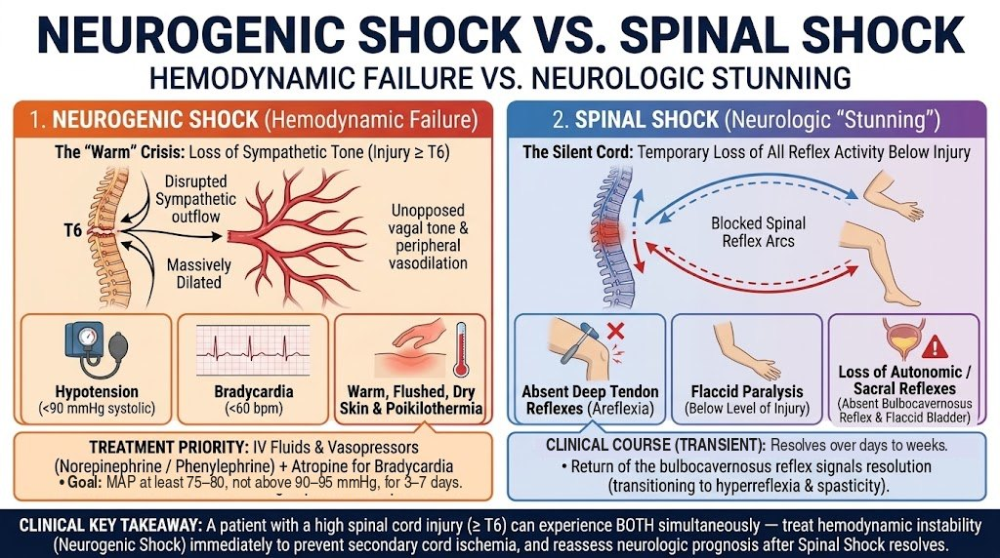
Neurogenic shock (a hemodynamic problem) vs. spinal shock (a reflex problem). A high cord injury can cause both at once. AI-generated illustration.
Primary tumors (glioma, meningioma), metastases (lung, breast, melanoma, renal, colon), abscess, and cysts. They present with the effects of mass effect and surrounding vasogenic edema — progressive headache classically worse in the morning or with Valsalva, new focal deficit, seizure (often the first sign), personality change, and eventually the signs of intracranial hypertension in Section 26.
| Concept | Detail |
|---|---|
| Complete vs. incomplete | Complete = no motor or sensory function below the level, including the sacral segments. Incomplete syndromes: central cord (upper extremities worse than lower — hyperextension in the elderly), anterior cord (motor and pain/temperature lost, proprioception preserved — poorest prognosis), Brown-Séquard (hemisection: ipsilateral motor and proprioception loss, contralateral pain and temperature loss). |
| Level determines airway risk | The diaphragm is C3–C5 (“C3, 4, 5 keep the diaphragm alive”). Injury at or above C5 threatens ventilation; C5–T6 impairs cough and accessory muscles. Monitor vital capacity and negative inspiratory force; anticipate respiratory failure that develops over hours as edema ascends. |
| Neurogenic shock | Loss of sympathetic outflow (injury above ~T6) → hypotension with BRADYCARDIA and warm, dry, flushed skin. Distinguish from hypovolemic shock, which is tachycardic and cool. Treat with fluids, vasopressors (norepinephrine or phenylephrine), and atropine or pacing for bradycardia. MAP is kept higher to protect cord perfusion: the 2024 AO Spine guideline suggests at least 75–80 mmHg, not pushed above 90–95, for 3–7 days (a weak recommendation; the provider orders the target).1 Older guidance used 85–90. |
| Spinal shock | A different phenomenon — transient loss of all reflexes and flaccidity below the injury, resolving over days to weeks. Return of the bulbocavernosus reflex marks its end. Do not confuse spinal shock (a neurologic state) with neurogenic shock (a hemodynamic state). This distinction is heavily tested. |
| Autonomic dysreflexia | A later complication of injury at or above T6: a noxious stimulus below the level (most often bladder distension, then fecal impaction, then skin irritation) triggers unopposed sympathetic discharge → severe hypertension with pounding headache, flushing and sweating above the lesion, pallor below, and reflex bradycardia. Emergency management: sit the patient upright first (orthostasis lowers BP), loosen constrictive clothing, then find and remove the stimulus — check the catheter for kinks first. Antihypertensives only if the pressure does not fall. Untreated it causes stroke and seizure. |
| Ongoing care | Spinal precautions and log-rolling until cleared; VTE prophylaxis (very high risk); bowel and bladder programs; pressure injury prevention (insensate skin); temperature dysregulation (poikilothermia); orthostatic hypotension with mobilization; early rehabilitation. High-dose methylprednisolone is no longer recommended in current guidance. |
Progressive irreversible loss of nephrons over ≥3 months, staged by GFR (G1 ≥90 through G5 <15 mL/min/1.73m2, the last being kidney failure) and by albuminuria.2 Most often from diabetes and hypertension.
Why it matters in the ICU:
| Condition | Recognition and management |
|---|---|
| Neutropenia | Absolute neutrophil count (ANC) <1,500/µL; severe <500; profound <100. ANC = WBC × (% segs + % bands) ÷ 100. Risk rises sharply below 500. |
| Neutropenic fever | An oncologic emergency. A single temperature ≥38.3°C, or ≥38.0°C sustained an hour, in a neutropenic patient.4 The inflammatory response is absent — there may be no infiltrate on chest x-ray, no purulence, no localizing signs. Fever may be the only finding, and it may be the only warning before septic shock.4 Draw cultures and give broad-spectrum antibiotics within one hour; do not wait for a source.5 Protective precautions per policy; meticulous hand hygiene; avoid rectal temperatures, suppositories, and enemas (mucosal breach). Growth factors per oncology. |
| Tumor lysis syndrome | Massive cell lysis — usually 12–72
hours after starting chemotherapy in a bulky, chemosensitive tumor (leukemia, lymphoma), occasionally
spontaneous. The laboratory triad to memorize: hyperkalemia, hyperphosphatemia, and
hyperuricemia, with resulting HYPOcalcemia (calcium precipitates with phosphate) and
acute kidney injury from urate and calcium-phosphate crystal deposition. Arrhythmia,
tetany, seizure, and death follow.6
Management: aggressive IV hydration is the mainstay; allopurinol (prevents urate formation) prophylactically and rasburicase (breaks down existing urate) for established or high-risk disease; treat hyperkalemia (Section 27); treat hypocalcemia only if symptomatic, since giving calcium into a high-phosphate state worsens precipitation; dialysis for refractory derangement.6 Frequent electrolytes, continuous cardiac monitoring, strict I&O. |
Systemic inflammatory response syndrome is defined by two or more of: temperature >38°C or <36°C; heart rate >90; respiratory rate >20 or PaCO2 <32 mmHg; WBC >12,000 or <4,000 or >10% bands.7
Progressive, potentially reversible dysfunction of two or more organ systems following an acute insult, where homeostasis cannot be maintained without intervention.7 Primary MODS results directly from the insult; secondary MODS develops later from the host inflammatory response — the more common and more lethal form. Mortality rises steeply with each additional failing organ. There is no specific treatment: source control, organ support, avoiding iatrogenic injury (lung-protective ventilation, conservative fluids, minimizing sedation and nephrotoxins), and nutrition. Sequential organ scoring (SOFA) tracks it.
| State | Detail |
|---|---|
| Hypothermia | Mild 32–35°C, moderate 28–32°C, severe <28°C. Causes shivering (lost below ~30°C), bradycardia, the Osborn (J) wave on ECG, coagulopathy, and at severe depths ventricular fibrillation that is refractory to defibrillation and drugs until rewarmed. Handle gently — movement can precipitate VF. Rewarming: passive external, active external, and active internal (warmed fluids, lavage, ECMO). “Not dead until warm and dead” — prolonged resuscitation is warranted. |
| Heat stroke | Core >40°C with CNS dysfunction. Exertional (young, exercising, often sweating) versus classic (elderly, environmental, hot and dry). Complications: rhabdomyolysis, AKI, DIC, hepatic failure, ARDS. Rapid cooling is the treatment — evaporative or cold-water immersion, target around 39°C then stop to avoid overshoot. Antipyretics do not work (the hypothalamic set point is normal), and dantrolene is not indicated unless the cause is malignant hyperthermia or NMS. |
| Fever vs. hyperthermia | Fever is a raised set point (antipyretics work); hyperthermia is heat generation exceeding dissipation with a normal set point (antipyretics do not). Malignant hyperthermia (Section 30), NMS, serotonin syndrome, and thyroid storm are hyperthermia. |
Terminology is now drowning (a process, with outcomes of survival or death); "wet," "dry," and "near-drowning" are obsolete terms.
| Condition | Recognition and management |
|---|---|
| Cellulitis | Acute bacterial infection of dermis and subcutaneous tissue — usually Streptococcus or Staphylococcus. Erythema, warmth, edema, tenderness, poorly demarcated borders (contrast erysipelas, which is superficial with sharply defined raised borders). Fever and leukocytosis. Nursing: mark the border of the erythema with a skin pen and date it — spread beyond the mark is the objective sign of failure; elevate the limb; antibiotics; assess for abscess needing drainage, and for the warning signs below. |
| Necrotizing fasciitis | A surgical emergency with high
mortality. Rapidly progressive infection of fascia and subcutaneous tissue.
The cardinal clue is pain out of proportion to the visible findings — early skin
may look unimpressive or resemble cellulitis. Then: rapid progression over hours, edema extending beyond
the erythema, tense woody induration, bullae (especially hemorrhagic), skin necrosis and
dusky discoloration, crepitus, anesthesia of the overlying skin (nerve destruction),
and systemic toxicity with shock. The LRINEC score may support the diagnosis but a normal score does not
exclude it.
Management: immediate surgical debridement — nothing else is definitive. Broad-spectrum antibiotics including clindamycin (antitoxin effect), aggressive resuscitation, and often repeated trips to the OR.10 Delay to surgery is the strongest predictor of death. If you have a patient whose pain is far worse than their skin looks and who is deteriorating, escalate hard. |
| Pressure injury staging | Stage 1: intact skin, non-blanchable erythema. Stage 2: partial-thickness loss, exposed dermis, pink/red moist bed, may be a serum-filled blister — no slough or eschar. Stage 3: full-thickness loss, fat visible, may have slough/eschar and undermining or tunneling. Stage 4: full-thickness with exposed fascia, muscle, tendon, or bone. Unstageable: base obscured by slough or eschar. Deep tissue pressure injury: persistent non-blanchable deep red, maroon, or purple discoloration, or a blood-filled blister — intact or not. Also: medical-device-related pressure injuries conform to the shape of the device; mucosal injuries are not staged.11 Braden and prevention are in Section 13. |
| Skin failure | Skin hypoperfusion and death concurrent with severe dysfunction of other organ systems — the skin failing as an organ, not as a nursing outcome. Includes Kennedy terminal ulcers and other end-of-life skin changes. The distinction matters because these are not always preventable, unlike pressure injury, and documenting the clinical context honestly is important. |
| IV infiltration and extravasation | Infiltration = a non-vesicant leaks into tissue; extravasation = a vesicant does. Vesicant extravasation and its management are in Sections 21 and 49. Grading by INS criteria runs 0–4, with grade 4 including any vesicant, skin blanching or necrosis, or a deep pitting edema and circulatory compromise. |
| Wound assessment | Document location, size (length × width × depth in cm), undermining and tunneling by clock position, wound-bed tissue type (granulation, slough, eschar, epithelial), exudate amount and character, odor, periwound skin, and pain. Healing by primary, secondary, or tertiary intention. Involve the WOC nurse early; nutrition (protein, vitamin C, zinc) is part of wound care. |
New or worsening impairment in physical, cognitive, or mental health arising after critical illness and persisting after discharge.12 PICS-F describes the same phenomenon in family members — anxiety, depression, complicated grief, and PTSD.12
| Domain | Features and risk factors |
|---|---|
| Physical | ICU-acquired weakness (critical illness polyneuropathy and myopathy), reduced pulmonary function, fatigue, contractures. Risk: immobility, prolonged ventilation, sepsis, corticosteroids with neuromuscular blockade, hyperglycemia. |
| Cognitive | Impaired memory, attention, executive function and processing speed — sometimes lasting years. Delirium duration is the strongest modifiable risk factor. |
| Mental health | Anxiety, depression, and PTSD. Risk: delirium, benzodiazepine sedation, deep sedation, physical restraint, delusional or frightening ICU memories, and having no factual memory of the stay. |
Prevention is the ABCDEF bundle (Section 13) — minimize sedation, especially benzodiazepines; daily awakening and breathing trials; screen and treat delirium; early mobility; family engagement.13 Additional measures with evidence: ICU diaries, sleep protection, reorientation, and post-ICU follow-up clinics. Tell patients and families that PICS exists before discharge — survivors frequently believe the cognitive and emotional changes mean something is wrong with them personally.
| Topic | Exam-relevant essentials |
|---|---|
| Neuromuscular disorders | Guillain-Barré: ascending symmetric weakness with areflexia, often post-infectious; monitor vital capacity and negative inspiratory force — falling VC predicts respiratory failure before saturation changes; treat with IVIG or plasma exchange (not steroids); autonomic instability is common. Myasthenia gravis: fatigable weakness worse with use, ptosis and diplopia, bulbar symptoms. Myasthenic crisis (respiratory failure, under-treatment) versus cholinergic crisis (excess anticholinesterase — SLUDGE findings); both cause weakness. Avoid aminoglycosides, magnesium, and neuromuscular blockers. |
| Neurologic storming | Paroxysmal sympathetic hyperactivity after severe brain injury: episodic tachycardia, hypertension, tachypnea, hyperthermia, diaphoresis, posturing. Triggered by stimulation. Treat by minimizing stimuli and with beta blockers (propranolol), gabapentin, clonidine, opioids, and benzodiazepines. Exclude infection, pain, and seizure first. |
| Thyroid disorders | Thyroid storm and myxedema coma are in Section 27. Remember the two sequencing rules: in storm, thionamide before iodine; in myxedema, steroids before thyroid hormone. |
| Maternal/fetal emergencies | Preeclampsia with severe features: systolic BP ≥160 or diastolic ≥110, severe headache, visual change, RUQ or epigastric pain, platelets below 100,000, rising creatinine, or pulmonary edema. Proteinuria is not required for the diagnosis when severe features are present.14 Eclampsia: seizure — magnesium sulfate is treatment and prophylaxis (monitor DTRs, respirations, urine output; calcium gluconate is the antidote). HELLP: Hemolysis, Elevated Liver enzymes, Low Platelets — delivery is definitive.14 Placental abruption (painful bleeding, rigid uterus, DIC risk) versus placenta previa (painless bleeding; no vaginal exam). Position left lateral to relieve aortocaval compression. Postpartum hemorrhage is in Section 27. |
| Peritonitis and abdominal trauma | Peritonitis: rigid board-like abdomen, rebound, absent bowel sounds, sepsis — source control is the treatment. Blunt abdominal trauma: FAST examination, serial abdominal examinations, watch for delayed splenic and hepatic bleeding; grey Turner and Cullen signs indicate retroperitoneal bleeding. Abdominal compartment syndrome is in Section 27. |
| Transplant comorbidity | Lifelong immunosuppression → blunted inflammatory response and atypical infection presentation; nephrotoxicity from calcineurin inhibitors; strict trough timing (Section 30); rejection presenting as graft dysfunction; and higher malignancy risk. Any fever in a transplant recipient is significant. |
The test plan lists cardiac surgery (CABG, valve surgery) under Cardiovascular. Many ICUs never receive a fresh post-operative heart, but the exam assumes you know the first day.
| Problem | What you watch | What you do |
|---|---|---|
| Bleeding | Hourly chest tube output and its trend; hemoglobin, coagulation tests, ionized calcium, temperature | Know the surgeon's report threshold before the patient arrives, and call when output stays above it or keeps rising. Keep the tubes patent per policy. Warm the patient and correct coagulation and calcium per order. |
| Tamponade | High output that suddenly stops; rising and equalizing CVP and PA diastolic pressures; falling cardiac output, hypotension, tachycardia. A localized clot can hide the classic signs. | Call the surgeon at once; expect an echo and a return to the OR or a bedside reopening (23.9). |
| Low cardiac output or vasoplegia | Cardiac index, SvO2, lactate, urine output, temperature of the extremities | Work through preload, rate and rhythm, contractility, and afterload per order (16, 21). |
| Rhythm | Post-operative AF is common (often quoted at 20–40% after CABG, usually on days 2–4); bradycardia and heart block, especially after valve surgery | Rate or rhythm control per order; epicardial wires and the pacing box for bradycardia (33.6). |
| Temperature and glucose | Core temperature; shivering raises oxygen demand. Glucose | Rewarm per protocol. Keep glucose below 180 mg/dL (STS), usually with an insulin infusion.15 |
Additional sources
Every content item in the Adult CCRN test plan effective November 12, 2025, mapped to where it is covered in this guide.1 Items in bold are covered in Part VII because the rest of the guide did not address them.
| Test-plan item | Section |
|---|---|
| Acute coronary syndrome | 22.4–22.9 |
| Aortic aneurysm, dissection, rupture | 24.5 |
| Cardiac infection and inflammatory disease | 23.8 (pericarditis) |
| Cardiac surgery | 46.10, 33.6 (epicardial wires), 23.9 (tamponade) |
| Cardiac tamponade | 22.28, 23.9 |
| Cardiac trauma | 24.3 (H's and T's), 29 |
| Cardiac/vascular catheterization | 15, 22.9 |
| Cardiogenic shock | 22.14–22.17 |
| Cardiomyopathy | 23.5–23.7 |
| Dysrhythmias | 22.1–22.3, 21.9–21.12 |
| Heart failure | 22.24–22.25 |
| Hypertensive crisis | 21.7 |
| Conduction defects (prolonged QT, WPW) | 22.1, 21.11–21.12 |
| Structural/valvular heart defects | 23.1–23.4, 23.10 |
| Vascular disorders (arterial/venous stenosis) | 46.1 |
| Vascular interventions (stents, fem-pop, CEA) | 46.1 |
| Test-plan item | Section |
|---|---|
| Acute pulmonary edema | 22.25, 25.7 |
| Acute pulmonary embolus | 22.29–22.30 |
| ARDS | 25.17–25.19 |
| Acute respiratory failure | 25.1–25.7 |
| Acute respiratory infection (pneumonia) | 14 (VAP), 15 |
| Chronic conditions (COPD, asthma, emphysema) | 25.2, 25.6–25.7, 25.16 |
| Mechanical ventilation complications | 25.10, 25.14–25.16 |
| Pleural space abnormalities | 25.32 (chest tubes), 25.10 |
| Pulmonary hemorrhage | 46.2; also 17.4 (PA rupture) |
| Pulmonary hypertension | 22.30, 21.6 (milrinone), 25.19 |
| Status asthmaticus | 25.9 (ketamine), 25.14 and 25.16 (auto-PEEP), 49.4 |
| Thoracic and airway trauma | 25.32, 29 |
| Thoracic surgery | 25.32 |
| Test-plan item | Section |
|---|---|
| Acute spinal cord injury | 46.3 |
| Brain death (death by neurologic criteria) | 26.23, 36.7 |
| Encephalopathy | 27.8 (hepatic), 26.12 |
| Stroke (hemorrhagic, ischemic) | 26.5–26.11, 26.19 |
| Hydrocephalus | 26.13–26.14, 26.19 |
| Neurogenic shock | 16.14, 20.3, 46.3 |
| Neurologic infectious disease | 26.22 (LP), 26.14 (ventriculitis) |
| Neurological storming | 46.9 |
| Neuromuscular disorders (ALS, GBS, MG) | 46.9 |
| Neurosurgery | 26.20 |
| Neurovascular abnormalities | 26.19–26.20 |
| Seizure disorder | 26.21 |
| Space-occupying lesions (brain tumors) | 46.3 |
| Spinal surgeries | 26.20, 46.3, 36.5, 40.5 |
| Traumatic brain injury | 26.19, 26.12–26.17 |
| Compartment syndrome | 27.13, 46.1, 40.1 |
| Fractures / musculoskeletal trauma | 29, 40 (traction, fixators, neurovascular checks), 30.2 (rhabdomyolysis) |
| Muscular deconditioning | 13.5, 25.29 (ICU-acquired weakness) |
| Agitation, aggression, violence | 13.2, 25.23, 30.1, 41.4 |
| Delirium | 25.26–25.27, 13.4 |
| Medical non-adherence | 21.13, 22.25 |
| Mood disorders, depression, anxiety | 5 |
| Post-intensive care syndrome (PICS) | 46.8 |
| PTSD | 5, 46.8 |
| Self-harm; suicidal ideation | 46.8, 41.3; also 5 |
| Substance use disorder | 30.1 (alcohol withdrawal), 30.2 |
| Test-plan item | Section |
|---|---|
| Adrenal insufficiency | 27.15 |
| Diabetes insipidus | 27.15, 26.24, 36.7 |
| Diabetes mellitus types 1 and 2; hyperglycemia | 27.16, 49.7 (insulin) |
| DKA; HHS | 27.16, 15 |
| Hypoglycemia | 10, 49.7, 24.3 |
| SIADH | 27.15 |
| Thyroid disorders | 27.15, 46.9 |
| Anemia | 28.2, 34 |
| Autoimmune disorders (lupus, MG, GBS) | 46.9 |
| Coagulopathies (ITP, DIC, HIT) | 29.3, 28.6 |
| Myelosuppression (thrombocytopenia) | 28.2, 29.3 |
| Neutropenia; oncologic complications (tumor lysis) | 46.5 |
| Transfusion reactions (TRALI, TACO) | 28.2–28.3 |
| Abdominal compartment syndrome | 27.12–27.13 |
| Acute abdominal trauma | 29, 46.9 |
| Acute GI hemorrhage | 27.8, 27.10 (balloon tamponade) |
| Bowel infarction/obstruction/perforation | 27.8 |
| GI surgeries (Whipple, esophagectomy) | 27.11 |
| Hepatic failure/coma, varices, cirrhosis | 27.8, 27.10 |
| Malnutrition and malabsorption | 28.9, 27.7 (refeeding) |
| Pancreatitis | 27.9 |
| Peritonitis | 27.8, 46.9 |
| AKI / ATN | 27.1–27.2, 27.6 |
| Chronic kidney disease | 46.4 |
| Infections (kidney, urosepsis) | 20.1, 46.4 |
| Cellulitis; necrotizing fasciitis; skin failure; wounds | 46.7 |
| Pressure injury | 46.7 (staging); 13.6, 14 |
| IV infiltration / extravasation | 21.5, 49.1, 46.7 |
| Test-plan item | Section |
|---|---|
| Acid-base imbalance | 25.2, 27.7 |
| Anoxic injury | 22.27 (post-arrest care) |
| Burns | 39, 29.2, 25.9 (succinylcholine caution) |
| Comorbidity in transplant patients | 46.9 |
| Palliative care; end-of-life | 42, 15, 26.23–26.24 |
| Failure to thrive | 15, 28.9 |
| Fluid and electrolyte imbalances | 27.7, 28.1 |
| Healthcare-associated infections | 14, 17.1, 31 |
| Infectious diseases | 20.1, 14 |
| Maternal/fetal complications (eclampsia, HELLP) | 27.17, 46.9 |
| MODS | 46.6 |
| Obesity-related complications | 25.14 (PBW), 25.8 |
| Pain | 25.21–25.22, 13.3 |
| Rhabdomyolysis | 27.6, 30.2 |
| Sepsis | 20.1, 15 |
| Shock states | 16.14, 20.3, 22.14 |
| Sleep disruption / sensory overload | 4, 25.26 |
| Submersion injury | 46.6 |
| SIRS | 46.6 |
| Thermoregulation | 46.6; also 22.27, 30.5 |
| Toxic ingestion/inhalation/exposure | 30.1–30.5 |
| Test-plan item | Section |
|---|---|
| AACN Synergy Model (framework for the whole exam) | 45.2 |
| Advocacy / moral agency | 45.2, 11, 42.7, 5 (moral distress) |
| Caring practices | 45.2, 42.4–42.6, 22.26 (family presence), 26.24 |
| Clinical inquiry | 45.2, 44.3, 6 |
| Collaboration | 45.2, 11, 32.4 |
| Facilitation of learning | 45.2, 12.2 |
| Response to diversity | 45.2, 42.6 (interpreters, spiritual care) |
| Systems thinking | 45.2, 11, 12.7, 43.1, 43.5 |
Transcribed from Adult CCRN Exam Bibliography, AACN Certification Corporation, applying to exams taken on and after November 12, 2025. These are the references AACN's item writers used to validate the correct answer to each exam question — which makes this list more useful for preparation than any commercial review book. Reproduced here as source attribution; obtain the current version from AACN.1
Additional sources
This section exists because of a question worth taking seriously: why did AACN move questions away from cardiovascular and respiratory and toward multisystem and neurological?1
The answer is not that the heart and lungs matter less. It is that the 2024 study of practice described what critical care nurses actually do, and what they actually do is manage patients whose problems refuse to stay inside one organ system. A patient does not have “a respiratory problem.” A patient has septic shock that is simultaneously flooding their lungs, stunning their myocardium, shutting down their kidneys, consuming their platelets, and making them delirious — and the nurse's job is to hold all of that in view at once.
The exam followed the practice. This section is the tool for that kind of thinking, and it is organized around the one concept in the Synergy Model that is explicitly about it: complexity.
The Synergy Model (Section 45.2) defines complexity as the intricate entanglement of two or more systems — body systems, family dynamics, therapies.2 It is easy to read that as a synonym for “sick.” It isn't. It is a specific claim: in a complex patient, the systems are no longer independent, so an intervention aimed at one of them will move the others — and some of those movements will be in the wrong direction.
Four Synergy characteristics turn out to be the most useful bedside questions in a multisystem patient:
| Characteristic | The question it makes you ask |
|---|---|
| Complexity | How many systems are entangled here, and which of my interventions crosses between them? |
| Resiliency | How much reserve does this patient have to absorb what I am about to do? The same 500 mL bolus is trivial in a 30-year-old and a crisis in an 85-year-old with HFpEF. |
| Vulnerability | What is this patient most susceptible to right now that they were not susceptible to yesterday? Neutropenia, a fresh line, a new tracheostomy, a missed DAPT dose. |
| Predictability | Do I know what is likely to happen next? If yes, prepare for it. If no, that unpredictability is itself a reason for closer monitoring and earlier escalation. |
Before the specific cascades, three things connect nearly everything. If you understand these, most cross-system effects become derivable rather than memorized.
DO2 = (Hgb × 1.34 × SaO2 + dissolved O2) × cardiac output. Three organ systems each own one term:
| Term | Owned by | Fails when |
|---|---|---|
| Hemoglobin | Hematologic | Bleeding, marrow suppression, hemolysis, dilution, CKD (erythropoietin deficiency) |
| Saturation | Respiratory | Shunt, dead space, hypoventilation, diffusion failure — and in carbon monoxide poisoning, the saturation reads normal while the carrying capacity is gone |
| Cardiac output | Cardiovascular | Any shock state; and output itself depends on preload (volume/renal), afterload (vascular tone/endocrine), contractility (ischemia, acidosis, electrolytes, sepsis) |
So when tissue oxygenation fails, the question is never “which system?” but “which of the three terms, and what is driving it?” A rising lactate with a normal blood pressure sends you to hemoglobin, saturation, and regional flow — not to the pressor.
Every organ has one, and they are all built the same way: inflow pressure minus the pressure the organ sits inside.
| Organ | Perfusion pressure | Rises against |
|---|---|---|
| Brain | CPP = MAP − ICP | Intracranial pressure |
| Abdominal viscera / kidney | APP = MAP − IAP | Intra-abdominal pressure |
| Myocardium (coronary) | ≈ Diastolic BP − LVEDP | Ventricular filling pressure; tachycardia (shortened diastole) |
| Kidney (renal) | ≈ MAP − central venous pressure | Venous congestion — which is why a fluid-overloaded patient can be hypoperfusing the kidney |
| Lung (right heart) | Depends on PVR and RV afterload | Hypoxia, acidosis, high PEEP, PE |
pH, potassium, calcium, magnesium, and temperature are not “lab values.” They are the conditions under which every other system operates, and they degrade in patterns:
| Derangement | What it does everywhere else |
|---|---|
| Acidosis | Blunts catecholamine receptor responsiveness (your pressors stop working) • reduces myocardial contractility • shifts potassium out of cells • impairs coagulation factor activity • right-shifts the oxyhemoglobin curve (more unloading at tissue) • drives compensatory tachypnea and respiratory fatigue |
| Hypothermia | Impairs coagulation enzymes and platelets • causes arrhythmia • slows drug metabolism and citrate clearance (worsening hypocalcemia) • makes defibrillation ineffective below ~30°C • masks fever |
| Hypocalcemia | Factor IV of the coagulation cascade — coagulopathy • reduced contractility and vasoplegia • prolonged QT • tetany and laryngospasm |
| Hypomagnesemia | Refractory hypokalemia and hypocalcemia • torsades • seizures • arrhythmia |
| Hyperglycemia | Impaired leukocyte function and wound healing • osmotic diuresis and volume loss • worse neurologic outcome after brain injury |
This is why the trauma “diamond of death” (Section 29.2) is a diamond and not four separate problems. Hypothermia, acidosis, coagulopathy, and hypocalcemia are the internal environment collapsing, and each one accelerates the others.
Each of these is a chain you can follow forwards (what will happen next) or backwards (why is this happening). Learning them as chains rather than as separate diseases is the single highest-yield thing in this section.
Sepsis is on the exam under Multisystem, not under Infection, for a reason. It is defined by cross-system failure.4
| System | What sepsis does to it | Where in this guide |
|---|---|---|
| Cardiovascular | Vasoplegia → distributive shock; septic cardiomyopathy — late sepsis develops a cardiogenic component and starts looking cold | 20.1, 16.14, 22.14 |
| Respiratory | ARDS — sepsis is the most common cause; increased work of breathing from compensating for acidosis | 25.17 |
| Renal | AKI from hypoperfusion, inflammation, and nephrotoxic antibiotics | 27.1 |
| Hematologic | Consumptive coagulopathy → DIC; thrombocytopenia | 29.3 |
| Neurologic | Septic encephalopathy and delirium — often the first sign | 25.26 |
| Endocrine | Relative adrenal insufficiency (refractory shock); stress hyperglycemia | 27.15 |
| GI | Ileus, feeding intolerance, gut barrier failure and translocation, hepatic dysfunction | 27.8 |
| Integumentary | Mottling — microcirculatory failure visible on the skin, and one of your best bedside markers | 16.2 |
The nursing consequence: in a septic patient, a new problem in any system is probably not a new disease. Sudden confusion is not necessarily a stroke; a falling platelet count is not necessarily HIT; a rising creatinine is not necessarily contrast. Ask first whether it is the sepsis declaring itself somewhere new.
| Renal failure causes | Which shows up as |
|---|---|
| Potassium retention | Cardiac — peaked T waves → wide QRS → arrest (27.7, 24.3) |
| Metabolic acidosis | Cardiac + pharmacologic — reduced contractility, catecholamine resistance; respiratory — compensatory tachypnea and fatigue |
| Volume retention | Respiratory — pulmonary edema, failure to wean; cardiac — increased preload in a failing ventricle |
| Uremia | Hematologic — platelet dysfunction and bleeding with a normal platelet count; neurologic — encephalopathy; cardiac — uremic pericarditis |
| Loss of drug clearance | Every drug you run — morphine metabolites, midazolam, milrinone, vecuronium, enoxaparin, digoxin, many antibiotics (30.4, 49) |
| Erythropoietin deficiency | Hematologic — anemia → reduced oxygen delivery (46.4) |
| Calcium/phosphate derangement | Cardiac — QT changes; musculoskeletal — renal osteodystrophy |
And in reverse: the kidney is a victim of the heart (low output, venous congestion), the abdomen (intra-abdominal hypertension), the muscle (rhabdomyolysis), the liver (hepatorenal), the blood (hemolysis, tumor lysis), and every nephrotoxin you hang.
| Hepatic failure causes | Which shows up as |
|---|---|
| Reduced factor synthesis | Coagulopathy with rising INR — and the INR is a liver function test here, not an anticoagulation target |
| Ammonia clearance failure | Hepatic encephalopathy → airway risk |
| Portal hypertension | Esophageal varices → catastrophic GI bleeding (27.10); ascites → intra-abdominal hypertension → renal and respiratory compromise |
| Loss of drug metabolism | Argatroban, lidocaine, rocuronium, benzodiazepines, and nitroprusside (cyanide is detoxified hepatically) all accumulate |
| Impaired gluconeogenesis | Hypoglycemia — check the glucose in every encephalopathic cirrhotic |
| Hepatorenal / hepatopulmonary syndromes | Renal failure and hypoxemia caused by the liver |
| Lung wants | Brain objects because |
|---|---|
| Permissive hypercapnia in ARDS (tolerating pH ~7.20) | CO2 is a cerebral vasodilator — hypercapnia raises ICP. Permissive hypercapnia is relatively contraindicated in raised ICP. |
| High PEEP to recruit | Raises intrathoracic pressure → impedes cerebral venous drainage → raises ICP; also lowers MAP → lowers CPP from both directions. |
| Prone positioning | Raises intra-abdominal and intrathoracic pressure and impairs jugular drainage → ICP rise; also removes your neuro exam. |
| Hyperventilation to correct acidosis | Hypocapnia constricts cerebral vessels — useful as brief rescue for herniation, but prolonged hyperventilation causes cerebral ischemia (26.17). |
And in the other direction: neurogenic pulmonary edema after severe brain injury or SAH; loss of airway protection from depressed consciousness; central hypoventilation from brainstem injury; and aspiration from impaired swallow.
The most common multisystem cascade in any ICU is the one that starts with our own interventions.
| Starts with | Leads to |
|---|---|
| Deep sedation (especially benzodiazepines) | Delirium → longer ventilation → immobility → ICU-acquired weakness, VTE, pressure injury, aspiration → longer stay → PICS (46.8). Also hypotension → vasopressors → renal and digital hypoperfusion. |
| Over-resuscitation with fluid | Pulmonary edema and failure to wean → bowel wall edema → intra-abdominal hypertension → renal venous congestion → AKI → more fluid. A closed loop (27.12–27.13). |
| Immobility | Weakness, atelectasis, VTE, insulin resistance, delirium, pressure injury, constipation. |
| Every indwelling device | CLABSI, CAUTI, VAP, pressure injury — which is why daily necessity review is a multisystem intervention, not a paperwork exercise (14). |
| Broad-spectrum antibiotics | C. difficile, resistance, nephrotoxicity, and QT prolongation. |
A practical routine for a complex patient, usable at the start of any shift.
1. Primary insult: urosepsis. 2. Systems involved: cardiovascular, respiratory, renal, hematologic, neurologic — five. This is a complexity problem.
3. Cause or victim? The kidney is a victim (sepsis + hypoperfusion + possible venous congestion from +9 L). The platelets are a victim (consumption) — but check the heparin day count, because day 3–5 is also when HIT starts. The confusion is a victim (sedation accumulation + delirium + septic encephalopathy) rather than a new stroke, though it deserves a glucose and an exam.
4. Failing currency: the lactate is clearing, so global oxygen delivery is improving — but the renal perfusion pressure may be failing from the back end. MAP may be adequate while CVP is high; renal perfusion is MAP minus venous pressure. And +9 L with rising peak pressures raises the question of intra-abdominal hypertension. A bladder pressure is a reasonable thing to ask for.5
5. Costs of the obvious moves: more fluid for the oliguria may worsen the lung, the abdomen, and the kidney it is meant to help. Increasing PEEP for the pressures may drop preload and worsen renal venous congestion. Deepening sedation for the confusion prolongs everything and worsens delirium.
6. Next domino: if this is fluid-overload physiology, the next events are failure to wean and worsening AKI. The interventions that cross systems favorably here are the unglamorous ones — lighten the sedation and do an SAT, reassess volume status properly rather than reflexively bolusing, check a bladder pressure, review every renally cleared drug, and trend the platelets with HIT in mind.
Findings that should immediately make you think about a different system than the one they appear in.
| Finding | Think about |
|---|---|
| New confusion | Hypoxia, hypoglycemia, hypoperfusion, sepsis, drug accumulation, withdrawal — check a glucose and a saturation before you call it delirium |
| Rising respiratory rate | Metabolic acidosis being compensated — often renal, septic, or DKA before it is pulmonary |
| Falling urine output | Cardiac output, intra-abdominal pressure, or venous congestion — not only volume |
| Rising airway pressures | Abdomen (IAH), chest wall, or pulmonary edema — not only the lung; check plateau vs. peak (25.14) |
| Refractory hypokalemia | Magnesium |
| Refractory hypotension on adequate pressors | Acidosis blunting the receptors, adrenal insufficiency, tamponade, pneumothorax, IAH, or occult bleeding |
| Bleeding with a normal platelet count | Uremic platelet dysfunction, antiplatelet drugs, hypothermia, hypocalcemia, or fibrinolysis |
| Falling platelets around day 5–10 of heparin | HIT — a clotting problem masquerading as a bleeding one (28.6) |
| Rising troponin after SAH or arrest | Neurogenic stunning, not necessarily coronary occlusion |
| Hypotension with bradycardia | Neurogenic shock, high spinal injury, beta blocker or calcium channel blocker toxicity, or Cushing's triad — not hypovolemia |
| High lactate with a normal blood pressure | Regional ischemia (mesenteric, limb) or a type B cause such as epinephrine or metformin (20.2) |
| High ScvO2 with a high lactate | Tissues cannot extract — late septic microcirculatory failure or cyanide toxicity (16.8) |
| Failure to wean despite good lungs | Cardiac (unmasked heart failure), neuromuscular (weakness, phosphate), or nutritional |
| Fever in a neutropenic or transplant patient | Emergency — the usual localizing signs will be absent (46.5, 46.9) |
The blueprint change (Section 45.1) is a statement about question design, not just topic counts. A multisystem question does not ask you to recall a fact about one organ; it gives you a patient in whom two or more systems interact and asks what you would do first. The answer is usually determined by:
Neurological questions rose alongside multisystem for a related reason: the brain is the organ most often damaged by other systems — by arrest, by sepsis, by sedation, by hypoglycemia, by sodium shifts, by hypoxia — and the one whose injury is least reversible. Reading the neuro exam as a monitor of everything else, rather than as a separate assessment, is exactly the skill both the exam and the bedside are asking for.
Additional sources
Part VIII
Look-up material. Not meant to be read through.
Every monograph uses the same eleven fields, so you can find what you need fast: Mechanism • Dose • Titration • Pharmacokinetics • Monitoring • Side effects • Critical checks • Watch Out! • Memory tip • Survival tip • Nursing considerations.
The cardiac and sedative monographs also carry three rows from the FDA labels: Ino / chrono / dromo (symbols in 21.14), Contraindications, and Interactions.1 Interactions listed are the ICU-relevant ones, not a full list; ask pharmacy about anything new.
The questions behind this drug, with the trials, are in 21.15.
| Mechanism | Potent alpha-1 agonist with moderate beta-1 activity. Alpha-1 stimulation on arterial and venous smooth muscle → vasoconstriction → ↑SVR and ↑venous return; modest beta-1 inotropy maintains cardiac output. Net: MAP rises, CO stable or slightly up, HR unchanged or reflexively down.2 |
| Ino / chrono / dromo | Ino ▲ mild • Chrono ○ (reflex slowing offsets β1) • Dromo ▲ mild |
| Dose | Weight-based at most institutions: commonly start 0.01–0.05 mcg/kg/min. Some hospitals use non-weight-based mcg/min (typically 2–5 mcg/min start). Know which your pump library uses — confusing the two is a documented and dangerous error. |
| Titration | Commonly by 0.01–0.05 mcg/kg/min every 2–5 minutes to the ordered MAP. Typical working range 0.01–0.5 mcg/kg/min; doses above ~0.5–1 mcg/kg/min usually trigger provider notification per protocol. |
| Pharmacokinetics | Onset ~1–2 min. Half-life ~2–2.5 minutes. Metabolized by MAO and COMT; effect gone within ~5–10 min of stopping. Not renally or hepatically dependent for clearance in a clinically meaningful way. |
| Monitoring | Continuous arterial line MAP (preferred), continuous ECG, urine output hourly, mentation, capillary refill, mottling score, extremity temperature and color, lactate trend, ScvO2 if available. Assess the IV site every 1–2 hours minimum. |
| Side effects | Reflex bradycardia; arrhythmias; digital, splanchnic, and renal ischemia at high dose; peripheral necrosis with extravasation; hyperglycemia; anxiety and headache; tissue ischemia at the infusion site. |
| Contraindications | None listed in the label. Correct hypovolemia first. |
| Interactions | MAOIs (including linezolid) and tricyclic antidepressants: prolonged, severe hypertension. Halogenated anesthetics: VT/VF. May raise glucose. |
| Critical checks | Independent double-check at initiation and bag change. Verify concentration against the pump library. Confirm central access or that peripheral use meets protocol. Confirm the ordered MAP goal and hold/notify parameters. Trace the line bag-to-pump-to-patient. Confirm the next bag is primed and ready. |
| Watch Out! | Vesicant. Extravasation causes severe vasoconstriction, ischemia, and necrosis. Know where phentolamine is stocked before your first shift. Peripheral use follows a protocol: a large arm vein above the wrist, often at or near the antecubital fossa Institutional variation. In a review of published cases, 85% of peripheral tissue-injury events were at sites distal to the antecubital or popliteal fossa (21.5).3 Never let the bag run dry: a one-minute gap can crash the patient. Also — a rising norepinephrine requirement is not always worsening shock; check for an infiltrated line, an empty bag, or a paused pump first. |
| Memory tip | "Levo = Leave the pressure up." Mostly alpha, a little beta — squeeze with a little squeeze-harder. First-line in septic shock per Surviving Sepsis.4 |
| Survival tip | Hang the next bag before the current one is low, and learn your unit's clean-changeover technique in week one. Practice it with your preceptor on a stable patient, not at 0300 on a crashing one. |
| Nursing considerations | Keep the site visible — never under blankets. Reassess perfusion (not just MAP) after every titration. Wean deliberately, one agent at a time. Escalating dose = escalate the conversation: think unaddressed volume, undrained source, acidosis, adrenal insufficiency, tamponade, pneumothorax, or a mechanical line problem. |
The questions behind this drug, with the trials, are in 21.16.
| Mechanism | Potent alpha-1, beta-1, and beta-2 agonist. Dose-dependent: beta effects predominate at low dose (↑CO, ↑HR, may ↓SVR via beta-2); alpha effects dominate at higher dose (↑SVR, ↑MAP).2 Beta-2 also bronchodilates and stabilizes mast cells. |
| Ino / chrono / dromo | Ino ▲ • Chrono ▲ • Dromo ▲ |
| Dose | Infusion (weight-based): ~0.01–0.1 mcg/kg/min, titrated. Cardiac arrest (non-weight-based): 1 mg IV/IO q3–5 min.5 Anaphylaxis: 0.3–0.5 mg of 1 mg/mL (1:1000) IM anterolateral thigh, repeat q5–15 min. Label range in septic shock: 0.05–2 mcg/kg/min.1 Order sets often start lower. |
| Titration | Per your order set, to the MAP or perfusion endpoint. The label adjusts every 10–15 minutes in steps of 0.05–0.2 mcg/kg/min.1 |
| Pharmacokinetics | Onset seconds (IV) / ~5–10 min (IM). Effective half-life under 5 minutes; steady state on an infusion in 10–15 minutes.1 MAO/COMT metabolism. |
| Monitoring | Continuous ECG (highly arrhythmogenic), arterial MAP, glucose, lactate, potassium (beta-2 drives it intracellularly), urine output, perfusion. |
| Side effects | Tachyarrhythmias (the most arrhythmogenic vasopressor), myocardial ischemia from increased oxygen demand, hyperglycemia, hyperlactatemia, hypokalemia, tremor, anxiety, headache, splanchnic hypoperfusion. |
| Contraindications | None listed in the label. |
| Interactions | β-blockers (such as propranolol) can increase its pressor and arrhythmia effects (unopposed alpha); α-blockers, nitrates, and other vasodilators blunt the pressor effect.1 Tricyclics, MAOIs, levothyroxine and diphenhydramine potentiate it; ergot alkaloids may reverse the pressor effect. |
| Critical checks | Independent double-check. Verify the concentration and the indication — 1:1000 (1 mg/mL) vs. 1:10,000 (0.1 mg/mL) confusion is a classic lethal error. Cardiac arrest uses 1:10,000 IV; anaphylaxis uses 1:1000 IM. |
| Watch Out! | The rising lactate on an epinephrine infusion is usually a metabolic (beta-2) effect, not worsening perfusion. Reading it as worsening shock and escalating therapy is a real and documented error. Interpret it alongside mentation, urine output, capillary refill, and mottling. Also: vesicant — same extravasation precautions as norepinephrine. |
| Memory tip | "Epi hits everything" — alpha, beta-1, beta-2. Low dose = beta (pump and lungs); high dose = alpha (squeeze). |
| Survival tip | In anaphylaxis, the mistake is delay, not dose. Reaching for Benadryl before epinephrine is the most common factor in anaphylaxis deaths. IM thigh, then everything else. |
| Nursing considerations | Check glucose and potassium on prolonged infusions. Anticipate ischemia in patients with coronary disease. In anaphylaxis, keep the patient supine with legs elevated — sitting them up can be fatal. Watch glucose; a raised lactate on epinephrine can be a drug effect, so read it alongside the other perfusion signs. |
The questions behind this drug, with the trials, are in 21.17.
| Mechanism | Pure alpha-1 agonist — no beta activity. Arterial and venous vasoconstriction → ↑SVR, ↑MAP, ↑venous return. Baroreceptor response produces reflex bradycardia. Because afterload rises without inotropic support, cardiac output may fall.2 |
| Ino / chrono / dromo | Ino ○ • Chrono ▼ reflex • Dromo ○ |
| Dose | Bolus (non-weight-based): Label bolus dose 40–100 mcg IV, then up to 200 mcg every 1–2 minutes as needed.1 Infusion: label start 10–35 mcg/min, not to exceed 200 mcg/min.1 Some order sets dose by weight (~0.1–3 mcg/kg/min); check the unit. |
| Titration | Rapid — q2–5 min to MAP. Very responsive because of the short duration. |
| Pharmacokinetics | Onset within minutes (IV). Duration ~5–20 minutes for a bolus. Effective half-life about 5 minutes after an infusion; terminal half-life 2.5 hours; metabolized mainly by MAO and sulfotransferase.1 |
| Monitoring | MAP, heart rate (expect it to fall), cardiac output if monitored, perfusion markers, urine output. |
| Side effects | Reflex bradycardia, reduced cardiac output, headache, peripheral and splanchnic ischemia, reflex hypertension, decreased renal blood flow. |
| Contraindications | None listed in the label. |
| Interactions | Stronger effect: MAOIs, tricyclics, oxytocin, atropine, steroids, ergots, atomoxetine, angiotensin, aldosterone. Weaker effect: α-blockers, labetalol and carvedilol, calcium channel blockers, benzodiazepines, ACE inhibitors, PDE5 inhibitors, guanfacine, reserpine. |
| Critical checks | Confirm MAP goal. Verify concentration — push and infusion concentrations differ markedly. Confirm the indication: this is chosen specifically when you want pressure without tachycardia. |
| Watch Out! | Do not use in a patient who needs cardiac output, not just pressure — in cardiogenic shock or a failing ventricle, raising afterload with a pure vasoconstrictor can worsen output. Conversely, it is the agent of choice in HOCM/SAM and severe aortic stenosis (Section 23), where inotropes are harmful. |
| Memory tip | "Phenyl = Pure alpha, Pulse falls." |
| Survival tip | Its short duration is a feature: if you overshoot, it resolves in minutes. That makes it forgiving to learn titration on — and useful when you need a quick, reversible pressure bump for a procedure or position change. |
| Nursing considerations | Can be given peripherally more comfortably than norepinephrine per many protocols, but still causes vasoconstriction — assess the site. Expect the heart rate to drop; that is the drug working, not a complication, unless it becomes symptomatic. |
The questions behind this drug, with the trials, are in 21.18.
| Mechanism | V1 receptor agonist on vascular smooth muscle → vasoconstriction independent of adrenergic receptors. It was long taught that this keeps it working in severe acidosis; the evidence is mixed (21.18). V2 effects on the kidney cause water retention (the basis of its use in diabetes insipidus). |
| Ino / chrono / dromo | Ino ○ • Chrono ○ (reflex slowing possible) • Dromo ○ |
| Dose | Septic shock: FIXED, non-weight-based 0.03 units/min (some protocols allow up to 0.04). Generally NOT titrated. (The label instead starts septic shock at 0.01 units/min and titrates by 0.005 units/min every 10–15 minutes;1 most ICU protocols use the fixed dose. Follow your order.) Diabetes insipidus dosing is entirely different — verify the indication. |
| Titration | None in shock. It is added to norepinephrine rather than escalating norepinephrine further, typically once norepinephrine reaches a moderate dose (Surviving Sepsis 2021 notes it is usually started at norepinephrine 0.25–0.5 mcg/kg/min).4,6 |
| Pharmacokinetics | Pressor effect peaks within 15 minutes and fades within 20 minutes of stopping; half-life 10 minutes or less; steady state after about 30 minutes.1 Broken down by peptidases; about 6% is excreted unchanged in the urine.1 |
| Monitoring | MAP, urine output, sodium, perfusion markers, extremity and digital perfusion, bilirubin and LFTs on prolonged use. |
| Side effects | Digital, mesenteric, and coronary ischemia; hyponatremia (V2 water retention); reduced cardiac output; skin necrosis with extravasation; bradycardia. |
| Contraindications | Allergy to vasopressin; chlorobutanol allergy (10 mL multidose vial only). |
| Interactions | Catecholamines: additive pressor effect. Indomethacin prolongs it; ganglionic blockers increase it. Drugs that cause SIADH (SSRIs, tricyclics, haloperidol, cyclophosphamide) increase the antidiuretic effect; lithium, demeclocycline, foscarnet and clozapine decrease it. |
| Critical checks | Confirm the indication and units — shock dosing is units/min; DI dosing is often units/hr or intermittent. Confirm it is not being titrated unless specifically ordered. |
| Watch Out! | Abrupt discontinuation causes a precipitous blood pressure drop. Because it isn't titrated, it's easy to forget it's doing meaningful work. Wean deliberately, and never simply stop it when a bag empties. If the bag runs out, the patient can crash within minutes — treat it with the same urgency as a norepinephrine gap. |
| Memory tip | "Vaso is fixed, not fiddled." And: non-adrenergic, so it works when the catecholamines have stopped working. |
| Survival tip | When a septic patient is on escalating norepinephrine and you're wondering what's next, the answer is usually "add vasopressin," not "keep going up." Knowing that lets you anticipate the order rather than react to it. |
| Nursing considerations | Assess digits and extremities specifically — ischemic complications are more common than with norepinephrine at equivalent support. Monitor sodium on prolonged infusions. Trend the sodium: the V2 (water) effect can cause hyponatremia. |
The questions behind this drug are in 21.23; dobutamine vs milrinone in 21.25.
| Mechanism | Predominantly beta-1 agonist with beta-2 activity.7 ↑Contractility and ↑heart rate; beta-2 causes vasodilation → ↓SVR. Net: cardiac output rises, but blood pressure may fall. An inotrope, not a vasopressor.2 In most patients the systolic pressure in fact rises 10–20 mmHg; sharp falls are occasional and usually reverse with a lower dose.8 A racemic mixture: the (+) form acts on beta-1 and beta-2 receptors, the (−) form on alpha-1.7 |
| Ino / chrono / dromo | Ino ▲ strong • Chrono ▲ mild to moderate • Dromo ▲ |
| Dose | Weight-based (mcg/kg/min). Label: start at 0.5–1 mcg/kg/min; the usual range is 2–20, and rates up to 40 mcg/kg/min have occasionally been needed.8 |
| Titration | Label: adjust at intervals of a few minutes by heart rate, ectopy, blood pressure and urine output, plus cardiac output and wedge or central venous pressure when measured.8 The aim is output and perfusion (cardiac index, ScvO2, urine output, lactate); rate, rhythm and pressure are the safety limits. Step size and interval come from your order set. |
| Pharmacokinetics | Onset 1–2 min; the full effect of a new rate can take up to 10 min. Half-life about 2 minutes.8 Cleared by methylation of the catechol (COMT) and conjugation; the 3-O-methyl metabolite is inactive.8 Fast on/off makes it responsive. Partial tolerance can appear within 24–72 hours: the output gain holds in some patients and drifts back toward baseline in others, with beta-receptor down-regulation measurable from 24 hours.8–10 |
| Monitoring | Cardiac output/index, MAP, HR, continuous ECG, perfusion, urine output, ScvO2, lactate. |
| Side effects | Hypotension (beta-2 vasodilation), tachycardia, atrial and ventricular arrhythmias, myocardial ischemia from increased demand, headache, tremor, hypokalemia. Label figures: heart rate up 30/min or more in about 10% and systolic pressure up 50 mmHg or more in about 7.5%; more PVCs in about 5%; nausea, headache, angina, chest pain, palpitations and dyspnea in 1–3%.8 Also phlebitis, inflammation after infiltration, stress cardiomyopathy (with stress testing), and hypersensitivity (rash, fever, eosinophilia, bronchospasm).8 Speeds AV conduction: atrial fibrillation can turn into a rapid ventricular response.8 |
| Contraindications | Idiopathic hypertrophic subaortic stenosis (HOCM); prior hypersensitivity to dobutamine. Dextrose premixes may be contraindicated in corn allergy; the products contain a sulfite.8 Little benefit with a fixed obstruction such as severe aortic stenosis; correct hypovolemia first.8 |
| Interactions | Recent β-blocker: dobutamine may not work, and SVR may rise. With nitroprusside: higher cardiac output and lower PCWP than either alone.8 |
| Critical checks | Confirm the endpoint is output/perfusion, not MAP. Confirm whether a concurrent vasopressor is ordered — these are frequently paired for exactly this reason. |
| Watch Out! | Do not use in HOCM/SAM, or in a vasodilated septic patient whose heart is not weak — it worsens outflow obstruction in the first and does nothing useful in the second. Be ready for the blood pressure to fall as you titrate up (more likely if the patient is dry); that is the drug, not a failure, but it needs a plan. |
| Memory tip | "DoBUTamine — it helps the pump, BUT it can drop the pressure." |
| Survival tip | Before you start it, know what number you're chasing. If nobody can tell you the target cardiac index or perfusion endpoint, ask — titrating an inotrope to blood pressure alone misses its purpose. |
| Nursing considerations | Watch for new arrhythmia with every increase. Assess perfusion — warming extremities and improving urine output are the wins, even if the MAP is unchanged. Anticipate declining efficacy after a few days. |
The questions behind this drug are in 21.24; milrinone vs dobutamine in 21.25.
| Mechanism | Phosphodiesterase-3 inhibitor — blocks cAMP breakdown → ↑intracellular cAMP and calcium → ↑contractility and improved diastolic relaxation (lusitropy), plus systemic and pulmonary vasodilation. Label: selective for the PDE3 isozyme and not a beta agonist; cardiac output rises, wedge pressure and vascular resistance fall, and myocardial oxygen consumption does not rise.11 An "inodilator." It bypasses the beta receptor entirely, so it still works in patients on chronic beta blockers.2 |
| Ino / chrono / dromo | Ino ▲ • Chrono ○ (mild rise possible) • Dromo ▲ (enhances AV conduction) The label describes a slight shortening of AV node conduction time and a mild-to-moderate heart-rate rise.11 |
| Dose | Weight-based (mcg/kg/min). Label: loading dose 50 mcg/kg over 10 minutes, then 0.375–0.75 mcg/kg/min (standard 0.5), not more than 1.13 mg/kg/day; lower rates by creatinine clearance (0.43 at 50 down to 0.20 at 5 mL/min/1.73 m²).11 The load is often omitted to avoid hypotension: OPTIME-CHF gave no loading dose for that reason.12 Starting rates below 0.375 (for example 0.125) are used at some units; they are below the label range. Institutional variation |
| Titration | Label: titrate to hemodynamic and clinical response, with duration set by how the patient responds; no step size is given.11 In practice, small increments spaced hours apart: because of the long half-life, changes take hours to settle. Institutional variation |
| Pharmacokinetics | Onset within 5–15 minutes. Mean terminal half-life about 2.3–2.4 hours, significantly longer in severe renal impairment (the label gives no number).11 About 83% is excreted unchanged in the urine.11 Predominantly RENALLY cleared. This is the single most clinically important fact about the drug. |
| Monitoring | MAP, cardiac output/index, HR, continuous ECG, renal function, platelets, potassium, perfusion, urine output. |
| Side effects | Hypotension (often the dose-limiting effect), ventricular and atrial arrhythmias, thrombocytopenia, headache, hypokalemia. Label figures: ventricular arrhythmias 12.1% (sustained VT 1%), supraventricular 3.8%, hypotension 2.9%, headache 2.9%, angina 1.2%, hypokalemia 0.6%, tremor 0.4%, thrombocytopenia 0.4%; rare torsades, bronchospasm, anaphylaxis, liver test changes, infusion-site reactions.11 May also inhibit platelet aggregation.13 |
| Contraindications | Hypersensitivity to milrinone; dextrose premixes may be contraindicated in corn allergy. Not a substitute for surgery in severe obstructive aortic or pulmonic valve disease; may aggravate hypertrophic subaortic stenosis.11 |
| Interactions | The label reports no untoward effects in limited use with digoxin, lidocaine, quinidine, hydralazine, nitrates, diuretics, captopril, heparin, warfarin and insulin, among others.11 Avoid anagrelide (another PDE3 inhibitor).13 Line: furosemide forms a precipitate; never in the same line.11 |
| Critical checks | Check the creatinine and CrCl before starting and daily. Confirm dose reduction in renal impairment. Verify the loading dose decision. |
| Watch Out! | Hypotension from milrinone does NOT resolve quickly when you turn it off. Unlike dobutamine (2-minute half-life), the effect persists for hours — and far longer in renal failure. Reduce or stop it, as the label advises.11 Expect the effect to fade over hours; the patient will usually need volume or a vasopressor meanwhile. Respect this before you titrate up. Also monitor platelets. |
| Memory tip | "MilRINone — RENAL, and it lingers." Contrast with dobutamine: dobutamine is fast on/fast off; milrinone is slow off. |
| Survival tip | Often chosen over dobutamine in patients on chronic beta blockers and in RV failure with pulmonary hypertension, because the pulmonary vasodilation unloads the right ventricle. Knowing that explains why the team chose it. No randomized trial has shown better outcomes than dobutamine (21.25). |
| Nursing considerations | Frequently paired with a vasopressor to offset vasodilation. Ensure a dedicated or compatible lumen. Reassess the dose whenever renal function changes — a patient who develops AKI on milrinone is accumulating drug. Ventricular arrhythmias occurred in 12.1% of patients in the label trials:1 keep the patient on continuous ECG. |
The questions behind this drug, with the trials, are in 21.19.
| Mechanism | Dose-dependent receptor activity. Label bands: below 5 mcg/kg/min, D1 and D2 (renal, mesenteric, and coronary vasodilation); 5–10, beta-1 (↑contractility and rate); above 10, alpha-1 (vasoconstriction).1 About 25% is converted to norepinephrine.1 The bands overlap from patient to patient (21.19). |
| Ino / chrono / dromo | Ino ▲ • Chrono ▲ • Dromo ▲ |
| Dose | Weight-based. Label: start 2–5 mcg/kg/min; maximum 50 mcg/kg/min.1 Bradycardia, per the 2025 AHA algorithm: 5–20 mcg/kg/min.5 |
| Titration | In 5–10 mcg/kg/min steps by response and tolerance.1 Interval per your order or protocol. Taper to stop, with IV fluids; a sudden stop can cause marked hypotension.1 |
| Pharmacokinetics | Onset within 5 minutes; duration under about 10 minutes; half-life under 2 minutes.1 About 75% is metabolized by MAO and COMT.1 |
| Monitoring | Continuous ECG (arrhythmia risk is the main issue), MAP, HR, urine output, perfusion. |
| Side effects | Significantly more arrhythmias than norepinephrine, tachycardia, myocardial ischemia, nausea and vomiting, tissue necrosis with extravasation, suppression of anterior pituitary hormones.1,14,15 |
| Contraindications | Pheochromocytoma. The label also says not to use it with uncorrected tachyarrhythmias or VF. |
| Interactions | MAOIs: effect markedly increased; the label starts at no more than one-tenth of the usual dose. Tricyclics potentiate it. Halogenated anesthetics: ventricular arrhythmias. |
| Critical checks | Verify the intended dose range and the goal — the effect changes character with the dose. |
| Watch Out! | "Renal dose dopamine" is disproven — it does not prevent or treat renal failure and is not recommended.16–18 Dopamine has largely been displaced by norepinephrine in shock because of higher arrhythmia rates and, in some analyses, higher mortality.14,19 If you see it ordered for shock, it is entirely reasonable to ask why. The trials are in 21.19. |
| Memory tip | "Low = kidneys, Mid = heart, High = squeeze" — but remember the low-dose renal claim is a myth. |
| Survival tip | Still commonly used as a chronotropic infusion for symptomatic bradycardia per ACLS.5 That is a legitimate indication — shock is where it has fallen out of favor. |
| Nursing considerations | Vesicant — same extravasation precautions and phentolamine as norepinephrine. Watch the rhythm closely with every titration. |
The questions behind this drug are in 21.20.
| Mechanism | Agonist at AT1 receptors — activates the renin-angiotensin-aldosterone pathway → direct vasoconstriction plus aldosterone and vasopressin release. A third, non-catecholamine, non-vasopressin mechanism, useful when the other two are maxed. |
| Dose | Weight-based. Label: start 20 ng/kg/min; no more than 80 ng/kg/min in the first 3 hours, and a maintenance dose no higher than 40 ng/kg/min; doses as low as 1.25 ng/kg/min may be used.20 Note the nanogram units, which differ from every other pressor you run. |
| Titration | Titrate as often as every 5 minutes, in steps of up to 15 ng/kg/min, to the target pressure;20 then reduce to the lowest effective dose. Once shock improves, down-titrate every 5–15 minutes by up to 15 ng/kg/min (prescribing information).20 No guideline sets its place in the weaning order (21.4) Institutional variation. |
| Pharmacokinetics | Median time to the target MAP about 5 minutes in the pivotal trial.20 Half-life <1 minute.20 Broken down by aminopeptidase A and ACE2 into angiotensin III and angiotensin-(1-7).20 |
| Monitoring | MAP, perfusion, and thrombosis surveillance — DVT and arterial events. |
| Side effects | Thromboembolism, thrombocytopenia, peripheral ischemia, delirium, hyperglycemia, acidosis, tachycardia, fungal infection.20 |
| Critical checks | Verify units (ng/kg/min). A central venous line is recommended.20 Confirm VTE prophylaxis is ordered and in place — this is emphasized in the labeling.20 |
| Watch Out! | Nanograms, not micrograms. A unit error here is a thousand-fold. Double-check the pump library entry and the concentration every time. |
| Memory tip | "The third lever" — catecholamines, vasopressin, and angiotensin II are three separate receptor systems. When one fails, reach for another rather than escalating the same one. |
| Survival tip | Uncommon — but if it appears, the patient is very sick and you should expect the team at the bedside frequently. Ask for a huddle on goals and weaning order. |
| Nursing considerations | Assess extremities and digits for ischemia every shift. Confirm and document VTE prophylaxis. Expensive and pharmacy-restricted at most institutions. |
The questions behind this drug are in 21.22.
| Mechanism | Pure beta agonist (beta-1 and beta-2). Potent chronotrope and inotrope; beta-2 causes vasodilation → ↓SVR and ↓diastolic pressure.21 |
| Ino / chrono / dromo | Ino ▲ • Chrono ▲ strong • Dromo ▲ |
| Dose | Non-weight-based in adults (mcg/min). Bradycardia or AV block (off-label, 2018 ACC/AHA/HRS guideline): 20–60 mcg IV bolus, then 10–20 mcg doses, or an infusion of 1–20 mcg/min by heart-rate response.22 Shock (label): 0.5–5 mcg/min; rates above 30 mcg/min have been used in advanced shock.21 |
| Titration | To the target heart rate or rhythm endpoint (e.g., overdrive suppression of torsades). In shock, the label advises considering a lower rate or a pause if the heart rate passes 110 beats/min.21 |
| Pharmacokinetics | Onset immediate. Half-life 2.5–5 minutes.23 Metabolized mainly by COMT in the liver and other tissues; a poor substrate for MAO.21 |
| Monitoring | Continuous ECG (essential), MAP, ischemia surveillance, potassium, glucose. |
| Side effects | Marked tachycardia, ventricular arrhythmias, myocardial ischemia, hypotension from vasodilation, tremor, hyperglycemia, hypokalemia.21,23 The label also lists angina, palpitations, Adams-Stokes attacks and pulmonary edema.21 |
| Contraindications | Current labels: tachycardia, ventricular arrhythmias, angina pectoris.21 Some references add digoxin toxicity.23 |
| Interactions | Do not give at the same time as epinephrine (serious arrhythmias). Tricyclics, MAOIs, levothyroxine and some antihistamines increase its effect; β-blockers block it.21 |
| Critical checks | Confirm the rate target. Confirm pacing pads are on the patient if it's being used for bradycardia — it's a bridge. |
| Watch Out! | Very arrhythmogenic and markedly increases myocardial oxygen demand while lowering diastolic (coronary perfusion) pressure.21,22 Dangerous in ischemic heart disease. Uncommon in general ICUs — if it appears, expect close physician involvement. |
| Memory tip | "Iso = all beta, no alpha" — fast heart, soft vessels. |
| Survival tip | Main modern uses: refractory bradycardia or heart block as a bridge to pacing, overdrive pacing for torsades, and denervated (transplanted) hearts where atropine doesn't work.22,23 Current labels list only shock and bronchospasm during anesthesia, so these uses are off-label.21 |
| Nursing considerations | Have pacing capability immediately available. Serial ECGs for ischemia. Expect the diastolic pressure to fall. |
| Mechanism | Muscarinic (M2) antagonist. Removes vagal braking at the SA and AV nodes, so the rate rises and AV conduction speeds up. |
| Ino / chrono / dromo | Ino ○ • Chrono ▲ • Dromo ▲ |
| Dose | Non-weight-based. Symptomatic bradycardia: 1 mg IV push every 3–5 minutes, maximum total 3 mg.5 Organophosphate poisoning needs much larger, repeated doses directed by the provider or poison center. |
| Titration | Not titrated: repeat the bolus per ACLS and the order. |
| Pharmacokinetics | Onset within about a minute IV, peak in a few minutes; the effect lasts hours. |
| Monitoring | Continuous ECG, HR and BP during and after each dose; mentation; urine output and bladder volume. |
| Side effects | Tachycardia, dry mouth, urinary retention, blurred vision, delirium, hyperthermia. Doses under 0.5 mg have been linked to paradoxical slowing. |
| Contraindications | None listed in the label. |
| Interactions | The label lists only mexiletine (slower absorption). Expect additive effects with other anticholinergic drugs. |
| Critical checks | Pacer pads on and transcutaneous pacing ready before or as you push. If atropine fails, the AHA 2025 next steps are pacing, or an infusion of dopamine or epinephrine.5 |
| Watch Out! | Atropine often fails in infranodal block (Mobitz II, third-degree block with a wide QRS) and in heart transplant patients (the denervated heart has no vagal tone to block). Do not let repeat doses delay pacing in an unstable patient. In active ischemia, a faster rate raises oxygen demand. |
| Memory tip | Dry as a bone, red as a beet, blind as a bat, hot as a hare, mad as a hatter. |
| Survival tip | Put the pads on before you push. In a wide-QRS high-grade block, expect atropine to fail and be ready to pace. |
| Nursing considerations | Bladder scan after repeated doses, especially in older men. New confusion after atropine in an older patient is often the drug. |
| Mechanism | Dihydropyridine calcium channel blocker — blocks L-type calcium channels in vascular smooth muscle (vascular-selective, minimal direct cardiac effect) → arterial vasodilation → ↓SVR and ↓BP. Also dilates coronary and cerebral vessels. |
| Ino / chrono / dromo | Ino ○ minimal • Chrono ▲ reflex • Dromo ○ |
| Dose | Non-weight-based: start 5 mg/hr. |
| Titration | Increase by 2.5 mg/hr every 5–15 minutes (prescribing information)1 to the ordered BP goal; maximum commonly 15 mg/hr. Once at goal, many protocols reduce to a maintenance rate of ~3 mg/hr. |
| Pharmacokinetics | Onset 5–15 min. Effective half-life ~40–60 min after prolonged infusion (terminal half-life longer) — so the offset is slow. Hepatically metabolized; use caution in hepatic impairment. |
| Monitoring | Continuous arterial line strongly preferred; BP q5–15 min during titration then per protocol. HR (reflex tachycardia), neuro checks in neuro patients, IV site for phlebitis. |
| Side effects | Hypotension (often from overshoot), reflex tachycardia, headache, flushing, nausea, peripheral edema, phlebitis with peripheral administration. |
| Contraindications | Advanced aortic stenosis; hypersensitivity. |
| Interactions | Raises cyclosporine and tacrolimus levels (CYP3A4); cimetidine raises nicardipine. Additive with other antihypertensives. |
| Critical checks | Confirm the exact BP goal — neuro targets are narrow and specific. Dedicated line per policy; rotate peripheral sites q12h per many protocols because of phlebitis. |
| Watch Out! | Slow offset means overshoot takes 30–60 minutes to resolve. Titrating too aggressively in an attempt to hit a number fast is how patients end up hypotensive for an hour — which in a stroke or neuro patient is a real injury. Respect the 5–15 minute interval. Contraindicated in severe aortic stenosis. |
| Memory tip | "Nicardipine = nice and smooth" — predictable and easy to titrate, but slow to come back off. |
| Survival tip | The workhorse for hypertensive emergency and post-stroke and post-neurosurgical BP control. In hypertensive emergency the goal is usually a controlled ~25% MAP reduction in the first hour, not normalization — ask for the target if it isn't explicit. |
| Nursing considerations | Watch for reflex tachycardia; a beta blocker is sometimes added. In aortic dissection, the beta blocker goes first (see esmolol). Assess the peripheral site every shift. On a peripheral line, the label says to change the infusion site every 12 hours to limit phlebitis.1 |
| Mechanism | Ultra-short-acting dihydropyridine CCB — selective arterial vasodilation with essentially no venous or direct cardiac effect. |
| Dose | Non-weight-based: start 1–2 mg/hr; typical range 4–6 mg/hr; maximum commonly 21–32 mg/hr per protocol. |
| Titration | Double the rate every 90 seconds initially, then smaller increments q5–10 min as you approach goal. Extremely responsive. |
| Pharmacokinetics | Onset 2–4 min. Half-life ~1 minute (initial phase) — metabolized by blood and tissue esterases, so clearance is independent of renal and hepatic function. Full BP recovery within ~5–15 min of stopping. |
| Monitoring | Arterial line preferred, BP continuously during titration, HR, triglycerides on prolonged infusions, glucose, and caloric intake accounting. |
| Side effects | Hypotension, reflex tachycardia, atrial fibrillation, headache, nausea, hypertriglyceridemia, and infection risk from the lipid vehicle. |
| Critical checks | Lipid emulsion — change bottle and tubing q12h per policy (same as propofol). Verify no egg or soy allergy. Count the calories with nutrition (~2 kcal/mL). |
| Watch Out! | Contraindicated in egg or soy allergy, defective lipid metabolism, and severe aortic stenosis. The lipid vehicle supports bacterial growth — the q12h change is an infection control measure, not a formality. Also, the caloric load is significant on prolonged infusions and is routinely forgotten. |
| Memory tip | "Clevidipine = clean and quick" — think of it as the propofol of antihypertensives: white, lipid, fast on/off, q12h tubing. |
| Survival tip | Choose it (or expect it chosen) when you need minute-to-minute control — aortic dissection, neuro emergencies, intraoperative and periprocedural. Its forgiveness makes it much less stressful to titrate than nicardipine. |
| Nursing considerations | Do not dilute; invert gently before use. Discard per the manufacturer's time limit once spiked. Watch for reflex tachycardia. |
| Mechanism | Nitric oxide donor → ↑cGMP → smooth muscle relaxation. Predominantly VENODILATION at low doses → ↓preload → ↓LV wall stress and ↓myocardial oxygen demand; arterial dilation at higher doses. Also dilates epicardial coronaries and relieves vasospasm. |
| Ino / chrono / dromo | Ino ○ • Chrono ▲ reflex • Dromo ○ |
| Dose | Non-weight-based: start 5–10 mcg/min; typical range up to 200 mcg/min. Sublingual: 0.4 mg q5 min ×3. |
| Titration | By 5–10 mcg/min q3–5 min to chest pain relief or BP goal. |
| Pharmacokinetics | Onset 1–2 min IV. Half-life ~1–4 minutes. Hepatic metabolism. Tolerance develops within ~24 hours — escalating dose requirements are often tolerance, not worsening disease. |
| Monitoring | BP (arterial line for high doses), HR, chest pain score, serial ECGs, headache, methemoglobin on very high prolonged doses. |
| Side effects | Headache (near-universal and expected), hypotension, reflex tachycardia, flushing, dizziness, tolerance, rarely methemoglobinemia. |
| Contraindications | PDE5 inhibitors (sildenafil, tadalafil, vardenafil) or riociguat; increased intracranial pressure; pericardial tamponade, restrictive cardiomyopathy or constrictive pericarditis; hypersensitivity. |
| Interactions | PDE5 inhibitors and riociguat: severe hypotension. Other antihypertensives: a bigger BP drop. High doses can cause heparin resistance (watch the aPTT or anti-Xa). Do not run it through the same set as blood (pseudoagglutination and hemolysis). |
| Critical checks | Screen for PDE-5 inhibitors (sildenafil, tadalafil, vardenafil) — ask directly, every time. Use the manufacturer-specified tubing (nitroglycerin adsorbs to some PVC). |
| Watch Out! | Absolutely contraindicated within 24 hours of sildenafil or vardenafil, or 48 hours of tadalafil — profound, refractory hypotension. Dangerous in RIGHT VENTRICULAR INFARCTION and other preload-dependent states (severe aortic stenosis, HOCM, tamponade, hypovolemia) — dropping preload causes abrupt severe hypotension. In inferior STEMI, ask for a right-sided ECG (V4R) BEFORE giving nitrates. |
| Memory tip | "Nitro = veins first" — preload reduction. And "no nitrates with the little blue pill." |
| Survival tip | Warn the patient about the headache before you start; it prevents an alarming call and builds trust. It relieves symptoms and congestion but has no mortality benefit in ACS — don't let it delay reperfusion. |
| Nursing considerations | Excellent in acute cardiogenic pulmonary edema with hypertension — often more effective than diuresis in the first hour. Have fluids ready for over-dilation. Wean rather than stopping abruptly in ongoing ischemia (rebound). |
| Mechanism | Nitric oxide donor causing balanced arterial AND venous dilation → ↓preload and ↓afterload. The molecule contains five cyanide groups, released as it acts. |
| Ino / chrono / dromo | Ino ○ • Chrono ▲ reflex • Dromo ○ |
| Dose | Weight-based: start 0.25–0.3 mcg/kg/min; usual range up to 3 mcg/kg/min; maximum 10 mcg/kg/min for no more than ~10 minutes.24 |
| Titration | By 0.5 mcg/kg/min q3–5 min. Extremely potent — small changes produce large effects. |
| Pharmacokinetics | Onset seconds. Half-life ~2 minutes. Metabolized to cyanide, then converted by hepatic rhodanese (using thiosulfate) to thiocyanate, which is renally excreted. Both steps can be overwhelmed. |
| Monitoring | Arterial line required. BP continuously, acid-base status and lactate, mentation, and thiocyanate levels with prolonged or high-dose infusion or renal impairment. Consider venous oxygen saturation. |
| Side effects | Profound hypotension, reflex tachycardia, cyanide toxicity, thiocyanate toxicity, methemoglobinemia, coronary steal, raised ICP. |
| Contraindications | PDE5 inhibitors or riociguat; compensatory hypertension (coarctation, AV shunt); inadequate cerebral circulation; Leber optic atrophy or tobacco amblyopia; acute heart failure with low SVR. |
| Interactions | PDE5 inhibitors and riociguat: severe hypotension. Ganglionic blockers and inhaled anesthetics: a greater BP drop. Additive with other antihypertensives. |
| Critical checks | Protect the bag and tubing from light (light-sensitive — use the opaque cover). Arterial line in place. Check renal and hepatic function. Note the start time and total dose — duration is a safety parameter. |
| Watch Out! | Cyanide toxicity: cyanide accumulates above about 2 mcg/kg/min, and at the 10 mcg/kg/min maximum the buffering is exceeded in under an hour (label)24 — presents as unexplained metabolic (lactic) acidosis, altered mentation, seizures, collapse, with a classically HIGH venous oxygen saturation (tissues can't extract). Tachyphylaxis — needing ever-higher doses — is a warning sign. Thiocyanate toxicity: with prolonged infusions (levels advised past 7 mg/kg/day), and at much lower rates in renal failure — gradual confusion, delirium, tinnitus, blurred vision, weakness over days. If a nitroprusside patient develops unexplained acidosis or neuro change, say the word "cyanide" out loud when you call. It gets missed because nobody mentions it. Antidotes: hydroxocobalamin, sodium thiosulfate; dialysis removes thiocyanate. |
| Memory tip | "Nipride = Not for a long ride." General guidance is to avoid running it beyond ~2–3 days. |
| Survival tip | Largely superseded by nicardipine and clevidipine for most indications precisely because of this toxicity profile. If it's ordered, there's usually a specific reason — ask what it is, and ask what the duration plan is. |
| Nursing considerations | Minimize dose and duration. Higher risk in renal impairment (thiocyanate) and hepatic impairment (cyanide), plus malnutrition, B12 deficiency, and hypothermia. Never run without continuous BP monitoring. Ask about sildenafil, tadalafil or vardenafil use before starting. |
| Mechanism | Combined alpha-1 and non-selective beta blocker (roughly 1:7 alpha:beta ratio IV). Lowers BP by reducing SVR without reflex tachycardia, because the beta blockade prevents it. |
| Ino / chrono / dromo | Ino ▼ mild • Chrono ▼ • Dromo ▼ mild |
| Dose | Push (non-weight-based): 10–20 mg IV over 2 min, may repeat/double q10 min to a cumulative maximum (commonly 300 mg). Infusion: 0.5–2 mg/min, or 2–10 mg/min in some protocols. |
| Titration | Push doses q10 min; infusion titrated q10–15 min to BP goal. |
| Pharmacokinetics | Onset 2–5 min IV, peak 5–15 min. Half-life ~5–8 hours — much longer than esmolol, so overshoot persists. Hepatic metabolism. |
| Monitoring | BP and HR before and after every dose, continuous ECG, respiratory status (bronchospasm), glucose in diabetics, orthostatics before ambulation. |
| Side effects | Bradycardia, heart block, hypotension (including prolonged), bronchospasm, dizziness, scalp tingling, fatigue, masked hypoglycemia, heart failure exacerbation. |
| Contraindications | Asthma or obstructive airway disease; overt heart failure; heart block above first degree; cardiogenic shock; severe bradycardia; severe, prolonged hypotension; hypersensitivity. |
| Interactions | Digoxin and calcium channel blockers: additive bradycardia and AV block. Blunts β-agonist bronchodilators. With nitroglycerin: a bigger BP drop. Line: precipitates with furosemide; incompatible with 5% sodium bicarbonate. |
| Critical checks | Verify HR and BP hold parameters before each dose. Screen for asthma/COPD, decompensated heart failure, bradycardia, and high-grade AV block. |
| Watch Out! | The long half-life means stacking push doses causes late, prolonged hypotension — a common error when the pressure doesn't drop as fast as expected. Wait the full interval. Avoid in decompensated heart failure, severe bradycardia, high-grade block, and severe reactive airway disease. Also avoid in cocaine-associated chest pain per traditional teaching (unopposed alpha concern). |
| Memory tip | "Labetalol = Lowers BP without Launching the heart rate." |
| Survival tip | The default agent for BP control in acute stroke and pre-thrombolysis (target <185/110 before, <180/105 for 24 h after),25 and widely used in preeclampsia and dissection. |
| Nursing considerations | Keep the patient supine during and after IV push. Do not stop chronic beta blockers abruptly (rebound). Document HR with every dose. Check that the patient tolerates sitting up before getting out of bed. |
| Mechanism | Ultra-short-acting cardioselective beta-1 blocker. ↓HR, ↓contractility, ↓AV conduction, ↓myocardial oxygen demand, and ↓dP/dt (rate of pressure rise) — the last is why it's central in dissection. |
| Ino / chrono / dromo | Ino ▼ • Chrono ▼ • Dromo ▼ |
| Dose | Weight-based: optional load 250–500 mcg/kg over 1 min, then infusion 25–200 mcg/kg/min (up to 300 in some protocols). |
| Titration | By 25–50 mcg/kg/min every 5 minutes to HR or BP goal. |
| Pharmacokinetics | Onset ~1–2 min. Half-life ~9 minutes. Hydrolyzed by red blood cell esterases — clearance is independent of renal and hepatic function. Effects gone within ~10–20 min of stopping. |
| Monitoring | Continuous ECG and HR, BP, respiratory status, signs of heart failure, glucose. |
| Side effects | Bradycardia, hypotension, heart block, bronchospasm (less than non-selective agents but real at high doses), infusion site reactions, fatigue. |
| Contraindications | Severe sinus bradycardia; heart block above first degree; sick sinus; decompensated heart failure; cardiogenic shock; IV verapamil-type calcium channel blocker given close in time; pulmonary hypertension; hypersensitivity. |
| Interactions | Digoxin and calcium channel blockers: additive bradycardia and block; fatal arrest has been reported with IV verapamil-type drugs in poor LV function. The label says to avoid esmolol for tachycardia in patients on epinephrine, norepinephrine or dopamine, because it can blunt contractility when SVR is high. |
| Critical checks | Confirm HR and BP hold parameters. Verify weight. Confirm it isn't being used as monotherapy in a preload-dependent or output-dependent patient. |
| Watch Out! | In aortic dissection, the beta blocker goes FIRST, then the vasodilator. Giving a vasodilator first causes reflex tachycardia, which increases aortic shear stress and can extend the dissection. This sequence is a genuine life-or-death detail. Also: avoid in decompensated heart failure, cardiogenic shock, and severe bradycardia. |
| Memory tip | "Esmolol = Escape hatch." If the patient doesn't tolerate beta blockade, it's gone in minutes. The most forgiving beta blocker you can run. |
| Survival tip | Because of its short half-life, it's the right choice when you're uncertain whether a patient will tolerate beta blockade — a test dose you can take back. Widely used in dissection, thyroid storm, and rate control in labile patients. |
| Nursing considerations | Large volumes at high doses — account for the fluid. Watch for site irritation. Transition to a longer-acting agent is usually planned; anticipate the overlap. |
| Mechanism | β1-selective antagonist. Blocks catecholamine effects on the heart: slower rate, slower AV conduction, less contractility and oxygen demand. |
| Ino / chrono / dromo | Ino ▼ • Chrono ▼ • Dromo ▼ |
| Dose | Non-weight-based. Label (acute MI): three 5 mg IV boluses about 2 minutes apart (15 mg total), then oral.1 For AF/flutter rate control, orders are commonly 2.5–5 mg IV over 2 minutes, repeated per order. |
| Titration | Not a drip: repeat boluses by HR and BP response within the ordered limits. |
| Pharmacokinetics | Maximum β-blockade about 20 minutes after an IV dose in the label study.1 Half-life about 3–7 hours. Liver (CYP2D6) metabolism. Oral and IV doses are not equal: about 2.5 mg oral matches 1 mg IV. |
| Monitoring | HR and BP before each dose and about 5 minutes after; ECG (PR interval, block); signs of heart failure; wheeze; glucose in diabetic patients. |
| Side effects | Bradycardia and heart block, hypotension, heart failure exacerbation, bronchospasm (less than nonselective drugs), fatigue. Masks the tachycardia of hypoglycemia. |
| Contraindications | HR under 45; second- or third-degree block without a working pacemaker; PR 0.24 s or more; SBP under 100; decompensated heart failure; hypersensitivity. |
| Interactions | Digoxin and calcium channel blockers (especially IV diltiazem or verapamil): additive bradycardia and block. Strong CYP2D6 inhibitors (fluoxetine, paroxetine, quinidine) raise the level. Clonidine: rebound hypertension if clonidine is stopped. May blunt epinephrine in anaphylaxis. |
| Critical checks | Check HR and BP before each push and hold per ordered parameters. Confirm it is IV tartrate (Lopressor), not oral succinate (Toprol XL), and that the oral dose that follows is converted correctly. |
| Watch Out! | In AF with RVR plus hypotension or sepsis, the fast rate may be keeping the cardiac output up. A β-blocker can crash the pressure. Ask what is driving the rate before you slow it. |
| Memory tip | β1 = 1 heart, β2 = 2 lungs. β1-selective spares the lungs more, not completely. |
| Survival tip | Push it over 1–2 minutes with the monitor in view, and recheck the pressure before the next dose. |
| Nursing considerations | Check glucose in diabetic patients. Never stop a chronic β-blocker abruptly (rebound tachycardia, hypertension, ischemia). |
| Mechanism | Direct arterial vasodilator (precise mechanism incompletely defined; involves smooth muscle hyperpolarization). Arteriolar only — minimal venous effect. |
| Dose | Intermittent IV push, non-weight-based: 5–20 mg q4–6h PRN per order. Not given as a continuous infusion. |
| Titration | Not titrated — intermittent dosing per parameters. |
| Pharmacokinetics | Onset 10–20 minutes (delayed), peak 30–80 minutes, duration 4–12 hours. Half-life ~3–7 hours; longer in slow acetylators. Hepatic acetylation — genetically variable. |
| Monitoring | BP frequently for at least an hour after each dose; HR (reflex tachycardia); fluid status. |
| Side effects | Marked reflex tachycardia, unpredictable magnitude and duration of BP drop, headache, flushing, palpitations, sodium and fluid retention, and with chronic use drug-induced lupus. |
| Critical checks | Note the time of the last dose before giving another. Check the HR — it is a poor choice in a tachycardic patient. |
| Watch Out! | The delayed onset causes dose stacking. A nurse gives a dose, the pressure doesn't move in 15 minutes, another dose is given — and 45 minutes later both hit at once, producing profound prolonged hypotension. This is one of the most common preventable medication-related hypotensive events on any unit. Wait the full interval. Also, the reflex tachycardia makes it a poor choice in ischemia, aortic dissection, and HOCM without concurrent beta blockade. |
| Memory tip | "Hydralazine = slow to start, hard to stop." Unpredictable is the defining word. |
| Survival tip | If a patient needs frequent hydralazine, they probably need a titratable infusion instead. Raising that with the team is appropriate and usually welcomed. |
| Nursing considerations | Commonly used in preeclampsia and in patients without arterial lines. Document time and BP response for every dose so the next nurse can see the pattern. |
| Mechanism | Vaughan Williams Class III predominant (potassium channel blockade → prolonged repolarization and refractory period), but it acts across all four classes — sodium channel, beta, and calcium channel blockade as well. Effective for both atrial and ventricular arrhythmias. |
| Ino / chrono / dromo | Ino ▼ mild • Chrono ▼ • Dromo ▼ |
| Dose | Non-weight-based. Arrest (VF/pVT): 300 mg IV/IO push, then 150 mg.5 Stable arrhythmia: 150 mg over 10 min, then 1 mg/min ×6 hours, then 0.5 mg/min ×18 hours.1 |
| Titration | Not titrated — a fixed stepped protocol. Additional 150 mg boluses may be ordered for breakthrough. |
| Pharmacokinetics | Half-life 40–60 DAYS — extraordinarily long, with extensive tissue distribution. Hepatic metabolism (CYP). Effects persist for weeks after discontinuation. |
| Monitoring | Continuous ECG, QTc, BP (especially during the load), HR, LFTs, TSH and free T4 (baseline and periodically), and pulmonary status. |
| Side effects | Acute: hypotension and bradycardia during the load, QT prolongation, phlebitis. Chronic: thyroid dysfunction (both hypo- and hyper-), pulmonary fibrosis, hepatotoxicity, corneal microdeposits, photosensitivity, blue-gray skin discoloration, peripheral neuropathy. |
| Contraindications | Hypersensitivity, including to iodine; cardiogenic shock; marked sinus bradycardia; second- or third-degree block without a working pacemaker. |
| Interactions | Other QT-prolonging drugs: torsades. β-blockers, calcium channel blockers, digoxin: bradycardia and block. Digoxin level rises (labels differ: halve the dose, or cut it 15–30%; check levels). Warfarin: the label suggests cutting the dose by one-third to one-half and watching the INR. Simvastatin max 20 mg, lovastatin max 40 mg. Sofosbuvir (hepatitis C): severe, symptomatic bradycardia. |
| Critical checks | Use the specified in-line filter per policy (the standard formulation can precipitate). Use glass or non-PVC containers for some formulations — it adsorbs to PVC. Central line strongly preferred for infusion. Verify the step-down time (6 hours) so it isn't missed. |
| Watch Out! | Hypotension during the load is usually rate-related — slow the infusion rather than stopping it (and notify). Vesicant and highly phlebitic peripherally. Enormous interaction list — it raises levels of warfarin (expect the INR to climb; the dose is usually reduced by ~30–50%) and digoxin (dose often halved). Also: it can chemically cardiovert atrial fibrillation, which is a stroke risk if the AF has been present >48 hours without adequate anticoagulation. |
| Memory tip | "Amio touches everything and stays forever" — all four classes, and a two-month half-life. |
| Survival tip | Know the step-down time. Missing the transition from 1 mg/min to 0.5 mg/min at 6 hours is a common and avoidable error — set a reminder at handoff. |
| Nursing considerations | Preferred in patients with heart failure where diltiazem and beta blockers are contraindicated. Check the QTc daily and keep potassium and magnesium repleted. Educate about photosensitivity and long-term monitoring if it's continued. Concentrations above 2 mg/mL need a central line (label).1 |
| Mechanism | Non-dihydropyridine calcium channel blocker (Class IV) — blocks L-type calcium channels in cardiac tissue → slows SA and AV nodal conduction → ↓ventricular rate. Also mild negative inotropy and vasodilation. |
| Ino / chrono / dromo | Ino ▼ moderate • Chrono ▼ • Dromo ▼ |
| Dose | Bolus is weight-based: 0.25 mg/kg IV over 2 min (~20 mg average adult); may repeat at 0.35 mg/kg (~25 mg) after 15 min.1 Infusion is non-weight-based: 5–15 mg/hr. |
| Titration | By 2.5–5 mg/hr q15–30 min to the ordered heart rate goal. |
| Pharmacokinetics | Onset 2–7 min (bolus). Half-life ~3–5 hours; metabolites accumulate with prolonged infusion. Hepatic (CYP3A4) metabolism. |
| Monitoring | Continuous ECG, HR, BP before and after every bolus, signs of heart failure, LFTs on prolonged infusion. |
| Side effects | Hypotension, bradycardia, AV block, heart failure exacerbation (negative inotropy), peripheral edema, headache, elevated LFTs. |
| Contraindications | Sick sinus or second- or third-degree block without a working pacemaker; severe hypotension or cardiogenic shock; IV β-blocker within a few hours; AF/flutter with an accessory pathway (WPW); VT or wide-complex tachycardia; hypersensitivity. |
| Interactions | CYP3A4 inhibitor: raises midazolam, carbamazepine, cyclosporine, lovastatin and quinidine levels. Rifampin can make diltiazem undetectable. β-blockers and digoxin: additive slowing. |
| Critical checks | Verify the SBP hold parameter before every bolus and with titration. Confirm the rhythm is a regular or irregular NARROW-complex tachycardia. Confirm ejection fraction / heart failure status. |
| Watch Out! | Three contraindications that can kill: (1) decompensated systolic heart failure — the negative inotropy can precipitate cardiogenic shock; (2) wide-complex tachycardia of uncertain origin — if it's VT, AV nodal blockade does nothing and the hypotension is catastrophic; (3) pre-excited atrial fibrillation (WPW) — blocking the AV node pushes conduction down the accessory pathway and can degenerate into ventricular fibrillation. Also: never combine IV diltiazem with IV beta blockers without explicit orders — profound bradycardia and asystole. |
| Memory tip | "Dilt for narrow and regular; never for wide or WPW." |
| Survival tip | Before you give it for "a fast rhythm," ask: is this sinus tachycardia? Sinus tach is compensatory — blunting it can cause collapse. Rate-control agents are for tachyarrhythmias, not for a patient who is fast because they're septic, bleeding, or in pain. |
| Nursing considerations | Give boluses over the full 2 minutes with the patient supine. Have fluids ready. In an unstable patient, the answer is synchronized cardioversion, not a drip. |
| Mechanism | Non-dihydropyridine L-type calcium channel blocker at the SA and AV nodes and the myocardium. The most negative inotrope of the calcium channel blockers. |
| Ino / chrono / dromo | Ino ▼ strong • Chrono ▼ • Dromo ▼ |
| Dose | Label: 5–10 mg (0.075–0.15 mg/kg) IV over at least 2 minutes (at least 3 minutes in older patients). If the response is not adequate, 10 mg (0.15 mg/kg) 30 minutes after the first dose.1 |
| Titration | Bolus drug; not usually titrated. |
| Pharmacokinetics | Works within minutes. Liver (CYP3A4) metabolism, so effects last longer in liver disease. |
| Monitoring | Continuous ECG and BP during and after the injection (label).1 |
| Side effects | Hypotension, bradycardia, heart block, asystole, heart failure exacerbation, flushing, constipation. |
| Contraindications | Severe hypotension or cardiogenic shock; sick sinus or second- or third-degree block without a working pacemaker; severe heart failure (unless caused by the SVT); IV β-blocker within a few hours; AF/flutter with an accessory pathway (WPW); VT or wide-complex tachycardia; hypersensitivity. |
| Interactions | IV β-blockers: serious reactions; do not give within a few hours of each other. Raises digoxin, carbamazepine and cyclosporine levels. Lithium: neurotoxicity. Enhances neuromuscular blockers. |
| Critical checks | Confirm a narrow-complex rhythm on a 12-lead before the push. Know the patient's EF. Know where IV calcium is (calcium channel blocker toxicity, 49.8). |
| Watch Out! | Verapamil given for a wide-complex tachycardia that is really VT can cause cardiovascular collapse. In AF with WPW, it can speed conduction down the accessory pathway into VF. |
| Memory tip | Non-DHPs hit the Heart; “-dipines” hit the Pipes. |
| Survival tip | Ask what the EF is. Poor LV function is a reason to question verapamil, because it squeezes the heart less than any other drug here. |
| Nursing considerations | Older patients: give it over at least 3 minutes (label).1 Watch for constipation once on oral therapy. |
| Mechanism | Endogenous nucleoside; activates A1 receptors → transient AV nodal blockade and hyperpolarization → interrupts reentrant circuits that use the AV node. Both diagnostic and therapeutic. |
| Ino / chrono / dromo | Ino ○ • Chrono ▼ brief • Dromo ▼ strong, brief |
| Dose | Non-weight-based: 6 mg rapid IV push, then 12 mg if needed (a second 12 mg may be ordered).1,5 |
| Titration | Not titrated — sequential fixed doses. |
| Pharmacokinetics | Half-life <10 seconds — taken up by red blood cells and endothelium almost immediately. The shortest half-life of any drug you will give. |
| Monitoring | Continuous ECG with a printed rhythm strip running through administration, BP, respiratory status. |
| Side effects | Transient asystole (expected), flushing, chest pressure or tightness, dyspnea, an intense sense of impending doom, bronchospasm, headache, metallic taste. All resolve within seconds. |
| Contraindications | Second- or third-degree block, sick sinus or symptomatic bradycardia, unless a pacemaker is working; hypersensitivity. |
| Interactions | Caffeine and theophylline blunt it; dipyridamole potentiates it; carbamazepine adds to the block; with digoxin or verapamil, VF has been reported (rare). |
| Critical checks | Administration technique is the whole drug. Push as fast as physically possible into the most proximal port of the largest, most central vein available (antecubital or better), immediately followed by a rapid 20 mL saline flush with the arm elevated. Use a stopcock or a two-syringe simultaneous technique. |
| Watch Out! | Warn the patient first — it feels awful for a few seconds and an unprepared patient is genuinely frightened. Contraindicated in irregular wide-complex tachycardia (possible pre-excited AF — can precipitate VF) and in severe reactive airway disease. Effects are markedly prolonged by dipyridamole and carbamazepine (reduce the dose) and blunted by caffeine and theophylline (may need a higher dose). Denervated transplanted hearts are hypersensitive — use a reduced dose. |
| Memory tip | "Fast in, fast out, fast flush." If it doesn't work, it's almost always a technique problem, not a drug problem. |
| Survival tip | Always print a strip through the administration. Even if it doesn't convert, the transient AV block unmasks the underlying atrial rhythm — revealing flutter waves, for instance — which is diagnostically valuable and is lost forever if you didn't record it. |
| Nursing considerations | Have the crash cart nearby and pads available. Expect a several-second pause on the monitor; this is the drug working. Reassure the patient afterward — they will remember it. |
| Mechanism | Class Ib sodium channel blocker — weak, use-dependent blockade that shortens action potential duration. Preferentially binds ischemic and depolarized tissue, which is why it works in ischemic VT. Ventricular tissue only — useless in atrial arrhythmias. |
| Dose | Weight-based bolus: 1–1.5 mg/kg IV, may repeat 0.5–0.75 mg/kg. Infusion: 1–4 mg/min (non-weight-based) or 20–50 mcg/kg/min. |
| Titration | By 0.5–1 mg/min to arrhythmia suppression, within the maximum. |
| Pharmacokinetics | Onset 1–2 min. Half-life ~1.5–2 hours, but prolonged markedly in heart failure, shock, hepatic disease, and after 24 hours of infusion. Hepatic metabolism — clearance is flow-dependent, so low cardiac output means accumulation. |
| Monitoring | Continuous ECG, neurologic status (the key monitoring parameter), levels if prolonged, LFTs, cardiac output status. |
| Side effects | Neurologic toxicity in a predictable progression: perioral numbness and tingling → metallic taste → tinnitus → slurred speech → confusion and agitation → muscle twitching → SEIZURES → coma and respiratory arrest. Also bradycardia, hypotension, heart block. |
| Critical checks | Reduce the dose in heart failure, shock, hepatic impairment, and the elderly. Verify the concentration — lidocaine comes in many strengths and some contain epinephrine (never for IV use). |
| Watch Out! | The neurologic toxidrome is your early warning and it is entirely nurse-detectable. A patient on a lidocaine drip who says their lips feel numb or they hear ringing is telling you they are accumulating drug — report it and expect the rate to be reduced before they seize. Ask about it deliberately every few hours; don't wait for them to volunteer it. Also: cardiac lidocaine and local anesthetic lidocaine are different products — verify. |
| Memory tip | "Lidocaine talks before it seizes" — lips, taste, ears, speech, then trouble. |
| Survival tip | An acceptable alternative to amiodarone for VF/pulseless VT in ACLS, and useful when amiodarone is contraindicated.5 Less useful for stable VT than amiodarone or procainamide. |
| Nursing considerations | Ask specifically about perioral numbness and tinnitus each assessment. Have benzodiazepines and airway equipment available. Lipid emulsion is the treatment for severe local anesthetic systemic toxicity.26 |
| Mechanism | Class Ia — moderate sodium channel blockade (slows conduction, widens QRS) plus potassium channel blockade (prolongs the action potential and QT). Works on atrial, ventricular, and accessory pathway tissue — the last is why it's the drug for pre-excited AF. |
| Dose | Weight-based load: 20–50 mg/min (or ~17 mg/kg) until an endpoint is reached, to a maximum of 17 mg/kg. Maintenance infusion: 1–4 mg/min. |
| Titration | The load is stopped at any of four endpoints — not titrated to a number. |
| Pharmacokinetics | Half-life ~3–4 hours; the active metabolite NAPA is renally cleared and accumulates in renal failure, prolonging QT further. Hepatic acetylation with genetic variability. |
| Monitoring | Continuous ECG with QRS width and QTc measured serially, BP continuously (arterial line ideal), levels of procainamide and NAPA, CBC on prolonged use. |
| Side effects | Hypotension, QRS widening, QT prolongation and torsades, bradycardia, heart block; with chronic use drug-induced lupus and agranulocytosis. |
| Critical checks | Memorize the four stop points — you are the person watching for them: (1) the arrhythmia is suppressed, (2) hypotension develops, (3) the QRS widens by >50% of baseline, or (4) the maximum dose (17 mg/kg) is reached. |
| Watch Out! | Measure and document the baseline QRS and QTc BEFORE you start — you cannot recognize a 50% widening without a baseline, and that is the stop criterion. Avoid in prolonged QT and in renal failure (NAPA accumulation). Do not use with other QT-prolonging agents without explicit discussion. |
| Memory tip | "Procainamide: stop for Suppression, Soft pressure, Stretched QRS, or the Set maximum." |
| Survival tip | The agent of choice for pre-excited atrial fibrillation (WPW), where AV nodal blockers are contraindicated. Also used for stable wide-complex tachycardia. If you see it, expect the patient to have an unusual rhythm — ask what the working diagnosis is. |
| Nursing considerations | Requires close continuous attendance during the load — this is not a set-and-check drug. Have fluids and pads ready. |
| Mechanism | Physiologic calcium antagonist; stabilizes myocardial membranes, suppresses early afterdepolarizations (the trigger for torsades), cofactor for the Na/K-ATPase pump (why hypokalemia is refractory when magnesium is low). Also a smooth muscle relaxant and anticonvulsant. |
| Dose | Non-weight-based. Torsades: 1–2 g IV over 5–15 min (faster in arrest). Repletion: 1–4 g over 1–4 hours. Obstetric protocols use loading plus infusion regimens. |
| Titration | To level and clinical effect; not continuously titrated in most ICU uses. |
| Pharmacokinetics | Onset immediate IV. Renally excreted — accumulates in renal impairment. Half-life variable with renal function. |
| Monitoring | Deep tendon reflexes, respiratory rate, level of consciousness, BP, continuous ECG, magnesium level, urine output, renal function. |
| Side effects | Flushing, warmth, hypotension with rapid infusion, nausea; with toxicity: loss of DTRs → respiratory depression → heart block → cardiac arrest. |
| Critical checks | Check deep tendon reflexes before and during any high-dose infusion. Verify renal function. Confirm the rate — rapid infusion causes hypotension and flushing. |
| Watch Out! | Loss of deep tendon reflexes is the EARLY warning sign of magnesium toxicity and precedes respiratory depression. It is checked by a nurse, at the bedside, and nowhere else. If reflexes are diminishing, stop and notify. Calcium gluconate is the antidote — know where it is. Use with great caution in renal failure. |
| Memory tip | "Reflexes go before respirations." |
| Survival tip | First-line for torsades regardless of the serum magnesium level — you don't wait for a level. And any time potassium won't correct, check the magnesium; that is one of the highest-yield habits in the ICU. |
| Nursing considerations | Give slowly outside of arrest. Document reflexes. Keep calcium gluconate accessible with high-dose infusions. |
| Mechanism | Inhibits the Na/K-ATPase pump → ↑intracellular sodium → ↑intracellular calcium via the Na/Ca exchanger → mild positive inotropy. Separately, it increases vagal tone, slowing conduction at the AV node → rate control. |
| Ino / chrono / dromo | Ino ▲ • Chrono ▼ • Dromo ▼ |
| Dose | Non-weight-based (adjusted for renal function and lean body weight): loading commonly 0.25 mg IV q6h to a total of ~0.75–1.5 mg; maintenance 0.0625–0.25 mg daily. |
| Titration | Not titrated — dosed to level and clinical effect. |
| Pharmacokinetics | Onset 30–120 min IV — slow; not a drug for acute rate control. Half-life ~36–48 hours, much longer in renal impairment. Renally cleared. Narrow therapeutic index. |
| Monitoring | Continuous ECG, HR, potassium, magnesium, calcium, renal function, digoxin level (drawn ≥6–8 hours after the dose). |
| Side effects | Toxicity: nausea, vomiting, anorexia, fatigue, confusion, visual disturbance (classically yellow-green halos, blurred or colored vision), and almost any arrhythmia — classically bradycardia, AV block, atrial tachycardia with block, and bidirectional VT. |
| Contraindications | Ventricular fibrillation; hypersensitivity to digoxin or other digitalis drugs. |
| Interactions | Raise the level: amiodarone, quinidine, verapamil, propafenone, spironolactone, ritonavir. Lower its excretion: ACE inhibitors, ARBs, NSAIDs. Additive slowing: β-blockers, calcium channel blockers, ivabradine. Arrhythmias: rapid IV calcium, sympathomimetics, succinylcholine; proarrhythmia with dofetilide, sotalol and dronedarone. |
| Critical checks | Check the potassium — hypokalemia potentiates toxicity. Check renal function. Verify the level was drawn at the right time before acting on it. |
| Watch Out! | A level drawn less than 6 hours after a dose looks falsely toxic (it reflects distribution, not tissue effect) and has led to inappropriate treatment. Hypokalemia, hypomagnesemia, and hypercalcemia all increase toxicity, as do amiodarone, verapamil, and renal impairment. In acute toxicity, expect hyperkalemia — and it predicts mortality. Antidote: digoxin immune Fab (DigiFab). |
| Memory tip | "Dig makes you see yellow and feel sick." And: low K = high risk. |
| Survival tip | Its niche is rate control in a patient who is hypotensive — unlike beta blockers and diltiazem, it doesn't drop the pressure. That's usually why it's chosen. |
| Nursing considerations | Count an apical pulse for a full minute before administration and hold per parameters. Watch for the GI and visual prodrome — those symptoms are the patient telling you they're toxic before the rhythm does. Label: levels under 0.5 ng/mL lose effect, and levels above 2 ng/mL add toxicity without benefit.1 |
| Mechanism | Synthetic mu-opioid receptor agonist — inhibits ascending pain pathways and alters pain perception. Highly lipophilic, ~100× the potency of morphine. Minimal histamine release, which is why it is hemodynamically friendly. |
| Dose | Weight-based or non-weight-based by institution. Bolus 25–100 mcg IV; infusion commonly 25–200 mcg/hr (or ~0.5–3 mcg/kg/hr). |
| Titration | By 25–50 mcg/hr q15–30 min to a CPOT ≤2 or patient-reported goal. Titrate DOWN when at goal. |
| Pharmacokinetics | Onset 1–2 min, peak 3–5 min. Half-life ~2–4 hours after a single dose — but the context-sensitive half-time lengthens dramatically with prolonged infusion as it saturates fat stores. Hepatic (CYP3A4) metabolism; accumulates in hepatic impairment. |
| Monitoring | CPOT or self-reported pain, RASS, respiratory rate and pattern, SpO2 and capnography in non-intubated patients, BP, bowel function, and pupil size. |
| Side effects | Respiratory depression, sedation, ileus and constipation, nausea, urinary retention, pruritus, miosis, bradycardia, tolerance and dependence, and chest wall rigidity with rapid high-dose bolus. |
| Critical checks | Independent double-check per high-alert policy.27 Verify concentration — fentanyl comes in several. Confirm the sedation goal and that a bowel regimen is ordered. |
| Watch Out! | Accumulation after days of infusion is the thing new nurses underestimate. A patient who was easily arousable on day 1 may take many hours to wake on day 5 at the same rate — that's saturation of fat stores, not a new neurologic event. This is a major reason daily spontaneous awakening trials exist. Also: rapid large boluses can cause chest wall rigidity, which can make bag-mask ventilation impossible — push slowly. |
| Memory tip | "Fentanyl is fast and friendly" — fast on, hemodynamically kind. But it hides in fat. |
| Survival tip | Analgesia first.28 A large share of ICU "agitation" is untreated pain, a full bladder, or a plugged ETT. Before you increase sedation, treat pain and check the obvious. It's the single highest-yield habit in sedation management. |
| Nursing considerations | Pre-medicate before turning, suctioning, dressing changes, and line placement — assume procedures hurt. Reassess and document the response after every intervention. |
| Mechanism | Mu-opioid agonists. Hydromorphone is ~5–7× morphine in potency with less histamine release. Morphine causes significant histamine release → vasodilation, hypotension, and pruritus. |
| Dose | Non-weight-based. Hydromorphone 0.2–1 mg IV q1–4h PRN, or infusion 0.2–3 mg/hr. Morphine 2–5 mg IV q1–4h PRN, or infusion 1–10 mg/hr. |
| Titration | To CPOT/pain goal; intermittent dosing preferred where possible. |
| Pharmacokinetics | Hydromorphone half-life ~2–3 h. Morphine half-life ~2–4 h, but its active metabolites (morphine-6-glucuronide and morphine-3-glucuronide) are RENALLY cleared and accumulate in renal failure, causing prolonged sedation, respiratory depression, and neurotoxicity (myoclonus, hyperalgesia). |
| Monitoring | Same as fentanyl, plus renal function for morphine and BP for histamine-mediated hypotension. |
| Side effects | As fentanyl, plus for morphine: hypotension, flushing, pruritus, bronchospasm. |
| Critical checks | Verify creatinine before choosing morphine. Verify concentration — hydromorphone is potent and small-volume; a mix-up with morphine is a documented overdose pathway. |
| Watch Out! | Avoid morphine in renal failure — metabolite accumulation causes prolonged obtundation and myoclonus that is frequently mistaken for a neurologic event. Hydromorphone and morphine are NOT interchangeable milligram for milligram — hydromorphone is several times more potent, and confusing the two has caused fatal overdoses. Read the label twice. |
| Memory tip | "Morphine and kidneys don't mix." And "Dilaudid is small but mighty." |
| Survival tip | Morphine's venodilation is occasionally used deliberately in acute pulmonary edema — but current guidance uses it sparingly in ACS because it delays P2Y12 absorption and is associated with worse outcomes. |
| Nursing considerations | Bowel regimen for every patient on scheduled opioids. Have naloxone accessible. Assess sedation, not just respiratory rate — increasing sedation precedes respiratory depression. |
| Mechanism | GABA-A receptor agonist — enhances inhibitory chloride conductance → sedation, hypnosis, amnesia, and anticonvulsant activity. No analgesic properties whatsoever. Also reduces cerebral metabolic rate and ICP. |
| Ino / chrono / dromo | Ino ▼ • Chrono ▼ possible • Dromo ○ |
| Dose | Weight-based: ICU sedation commonly 5–50 mcg/kg/min (0.3–3 mg/kg/hr). Induction for intubation 0.5–2 mg/kg (dose-reduced if unstable). |
| Titration | By 5–10 mcg/kg/min every 5–10 minutes to the ordered RASS goal. Very responsive. |
| Pharmacokinetics | Onset 30–60 seconds. Context-sensitive half-time remains short even after prolonged infusion — usually awake within 10–20 minutes of stopping. Hepatic and extrahepatic metabolism. This rapid offset is its defining advantage. |
| Monitoring | RASS, BP (continuously — hypotension is common), HR, triglycerides every 2–3 days on prolonged infusion, lactate and pH, CK, potassium, and caloric accounting with nutrition. |
| Side effects | Hypotension (vasodilation and negative inotropy), bradycardia, apnea, injection site pain, hypertriglyceridemia, pancreatitis, green discoloration of urine (benign), and propofol-related infusion syndrome (PRIS). |
| Contraindications | Hypersensitivity to propofol or its components; allergy to eggs, egg products, soybeans or soy products. |
| Interactions | Opioids, benzodiazepines and inhaled anesthetics: deeper sedation and a bigger drop in BP and cardiac output. Valproate raises the propofol level. |
| Critical checks | Lipid emulsion: change bottle and tubing q12h — this is infection control, not housekeeping. Verify no egg or soy allergy. Confirm a separate analgesic is ordered. Dedicated line or verified-compatible lumen. |
| Watch Out! |
PRIS is rare, lethal, and nurse-detectable. Risk rises with doses above roughly
4–5 mg/kg/hr sustained beyond 48 hours, and in young patients, head injury, and
those on catecholamines or steroids. Watch for the constellation:
unexplained metabolic acidosis, rising lactate, rhabdomyolysis with elevated CK, hyperkalemia,
lipemic serum, new arrhythmia (especially bradyarrhythmia or Brugada-like ECG changes), and cardiac
failure. If you see acidosis and a rising CK in a patient on high-dose propofol,
say "PRIS" out loud. Treatment is immediate discontinuation and supportive care.
And it provides NO analgesia — a patient on propofol alone can be sedated and in severe pain, unable to tell you. |
| Memory tip | "Propofol = fast on, fast off, no pain relief, count the calories, change at 12." |
| Survival tip | The right choice when you need frequent neuro exams or a next-morning extubation — nothing else wakes up as predictably. That's usually why it's chosen over dexmedetomidine or a benzodiazepine. |
| Nursing considerations | Tell nutrition — it delivers ~1.1 kcal/mL of fat, which is substantial. Anticipate hypotension with every increase and have fluids or a pressor plan. Aseptic technique at the hub; the vehicle grows bacteria readily. |
| Mechanism | Highly selective alpha-2 adrenergic agonist acting centrally at the locus coeruleus → reduced sympathetic outflow → sedation that mimics natural sleep, plus mild analgesia and anxiolysis. Minimal respiratory depression — patients remain rousable and cooperative and can often be extubated on it. |
| Ino / chrono / dromo | Ino ○ • Chrono ▼ • Dromo ▼ (AV block reported) |
| Dose | Weight-based: label maintenance range 0.2–0.7 mcg/kg/hr;1 many ICU protocols allow up to 1.5. A loading dose of 1 mcg/kg over 10 min is frequently omitted in critical illness because of hemodynamic effects. |
| Titration | By 0.1–0.2 mcg/kg/hr every 30 minutes — it is slower to titrate than propofol, and impatience here leads to overshoot. |
| Pharmacokinetics | Onset 5–10 min without a load (faster with). Half-life ~2–3 hours; hepatic metabolism — reduce the dose in hepatic impairment. |
| Monitoring | RASS, continuous ECG and HR, BP, CAM-ICU, respiratory status, hepatic function. |
| Side effects | Bradycardia (sometimes profound, including sinus arrest), hypotension, transient hypertension with a loading dose or rapid bolus (peripheral alpha-2B vasoconstriction), dry mouth, nausea, and withdrawal (agitation, hypertension, tachycardia) after prolonged use. |
| Contraindications | None listed in the label. |
| Interactions | Anesthetics, sedatives, hypnotics and opioids: enhanced effects; the dose of either may need lowering. |
| Critical checks | Verify HR and BP hold parameters. Confirm whether a loading dose is intended. Confirm a separate analgesic is ordered — the analgesia is mild. |
| Watch Out! | Bradycardia and hypotension can be profound, particularly with a loading dose, in hypovolemia, in patients with high vagal tone, and in those on beta blockers or digoxin. Have atropine and fluids available. It does NOT reliably provide deep sedation — if a patient needs to be still (paralysis, severe ARDS, raised ICP), this is the wrong agent. Do not stop abruptly after prolonged infusion — withdrawal is real. |
| Memory tip | "Precedex = calm but rousable, slow heart, soft pressure." |
| Survival tip | Favored in delirium and as a bridge through extubation — because it doesn't suppress respiration, it can be continued through and after extubation while other sedatives can't. That's usually why the team chose it. The 2025 PADIS focused update suggests it over propofol for sedation in ventilated adults (conditional, moderate certainty).29 |
| Nursing considerations | Screen for delirium regularly — it reduces but does not eliminate it. Reassess pain independently. Give the drug time to work before titrating again. |
| Mechanism | Benzodiazepines — bind the benzodiazepine site on the GABA-A receptor, enhancing chloride influx → sedation, anxiolysis, anterograde amnesia, muscle relaxation, and anticonvulsant activity. No analgesia. |
| Dose | Midazolam: bolus 1–5 mg IV; infusion 0.5–10 mg/hr (or ~0.02–0.1 mg/kg/hr). Lorazepam: bolus 0.5–2 mg IV; infusion 0.5–10 mg/hr. Status epilepticus and withdrawal protocols use much larger doses. |
| Titration | To RASS goal, or symptom-triggered in withdrawal. In status epilepticus, titrated to seizure suppression on continuous EEG. |
| Pharmacokinetics | Midazolam: onset 2–5 min; half-life ~1–4 h normally, but the active metabolite (alpha-hydroxymidazolam) is RENALLY cleared and accumulates dramatically in renal failure, obesity, hepatic impairment, and prolonged infusion — patients can take days to wake. Lorazepam: onset 5–20 min; half-life ~10–20 h; no active metabolites, so preferred in hepatic impairment and the elderly. |
| Monitoring | RASS, CAM-ICU, respiratory rate and depth, BP, and for lorazepam infusions the osmolar gap, anion gap, lactate, and creatinine. |
| Side effects | Respiratory depression, hypotension, delirium (strongly associated), prolonged sedation, tolerance and dependence, paradoxical agitation (especially in the elderly), withdrawal on discontinuation. |
| Critical checks | Independent double-check. Confirm renal and hepatic function. Confirm a separate analgesic. For lorazepam infusions, check the propylene glycol monitoring plan. |
| Watch Out! |
Benzodiazepines are independently associated with more delirium, and PADIS favors non-benzodiazepine sedation (2018);28 the 2025 focused update goes further and suggests
dexmedetomidine over propofol for ventilated adults (conditional recommendation).29 Reserve benzodiazepines for their
specific indications: status epilepticus, alcohol/benzodiazepine withdrawal, and severe
agitation refractory to other agents.
Lorazepam infusions carry propylene glycol toxicity risk — the vehicle accumulates and causes an osmolar gap, anion gap metabolic acidosis, lactic acidosis, and AKI. If a patient on a prolonged lorazepam drip develops unexplained acidosis, check an osmolar gap and say "propylene glycol" out loud. |
| Memory tip | "Midaz hides in the kidneys; Ativan hides in the vehicle." |
| Survival tip | If a patient has been on a midazolam drip for days and isn't waking during an SAT, that is usually accumulation rather than a new neurologic event — but say it as a question, not a conclusion, and advocate for imaging if anything else doesn't fit. |
| Nursing considerations | Daily SATs matter most with these agents. Restart at half the prior dose after a failed SAT, not at the previous rate. Anticipate withdrawal after prolonged use and expect a taper. |
| Mechanism | NMDA receptor antagonist producing dissociative anesthesia — potent analgesia and amnesia while preserving airway reflexes and respiratory drive. Indirectly sympathomimetic (inhibits catecholamine reuptake) → usually supports HR and BP. Also a bronchodilator. |
| Dose | Weight-based. Induction 1–2 mg/kg IV. Analgesic/adjunct infusion: 0.1–0.5 mg/kg/hr. Sedation infusion: 0.5–2 mg/kg/hr. |
| Titration | By 0.1 mg/kg/hr q15–30 min to pain or sedation goal. |
| Pharmacokinetics | Onset 30 seconds IV. Half-life ~2–3 hours. Hepatic metabolism; the active metabolite norketamine contributes. |
| Monitoring | Pain and sedation scores, BP and HR, secretions, respiratory status, and emergence phenomena on awakening. |
| Side effects | Tachycardia and hypertension, hypersalivation, nystagmus, emergence reactions (vivid dreams, hallucinations, agitation), nausea, laryngospasm (rare), and increased myocardial oxygen demand. |
| Critical checks | Verify the indication and dose range — analgesic doses are far lower than induction doses. Confirm suction is available (secretions). |
| Watch Out! |
In catecholamine-depleted shock, ketamine can DROP the blood pressure — its
support is indirect and depends on endogenous catecholamine reserve. Don't assume it's always
hemodynamically neutral. Use caution in severe coronary disease and uncontrolled hypertension.
Two pieces of old teaching are largely refuted: the concern about raised ICP is not supported by current evidence, and emergence reactions are less clinically significant than historically taught (and are reduced by concurrent benzodiazepine or propofol). |
| Memory tip | "Ketamine keeps" — keeps the airway, keeps the drive, keeps the pressure (usually). |
| Survival tip | Increasingly used as an opioid-sparing adjunct at low doses — excellent analgesia without respiratory depression. Also the induction agent of choice in status asthmaticus because of the bronchodilation. |
| Nursing considerations | Have suction at hand; glycopyrrolate is sometimes given for secretions. A quiet environment during emergence reduces reactions. Reassure the patient beforehand about the dissociative sensation if they're awake. |
| Mechanism | Ultra-short-acting mu-opioid agonist. Uniquely metabolized by non-specific plasma and tissue esterases — entirely independent of hepatic and renal function. |
| Dose | Weight-based: 0.025–0.2 mcg/kg/min. |
| Titration | By 0.025 mcg/kg/min q5 min — effects are immediate. |
| Pharmacokinetics | Context-sensitive half-time ~3–5 minutes regardless of infusion duration — it does not accumulate at all. This is unique among opioids. |
| Monitoring | Pain and sedation scores, respiratory status (apnea risk is immediate), BP, HR. |
| Side effects | Respiratory depression and apnea, bradycardia, hypotension, chest wall rigidity, and notably rapid-onset hyperalgesia and acute tolerance. |
| Critical checks | Never bolus in a non-intubated patient. Ensure a longer-acting analgesic is planned before discontinuation. |
| Watch Out! | Analgesia disappears within minutes of stopping. A patient can go from comfortable to severe pain almost instantly if the infusion is interrupted, the line is disconnected, or the bag runs dry. Have the transition analgesic on board BEFORE you turn it off. This is the most common error with remifentanil. |
| Memory tip | "Remi = right now, and right now it's gone." |
| Survival tip | The ideal agent when you need frequent neuro exams or in severe hepatic and renal failure where every other opioid accumulates. |
| Nursing considerations | Treat any interruption as an urgent problem. Plan the wean and the bridging analgesic explicitly at handoff. |
| Mechanism | Depolarizing neuromuscular blocker — binds nicotinic receptors at the motor endplate and causes sustained depolarization, producing initial fasciculations then flaccid paralysis. Not reversible by neostigmine or sugammadex. |
| Dose | Weight-based: ~1–1.5 mg/kg IV for intubation. Never an infusion in the ICU. |
| Titration | None — single dose. |
| Pharmacokinetics | Onset 30–60 seconds — the fastest available. Duration 3–10 minutes. Hydrolyzed by plasma pseudocholinesterase; prolonged in pseudocholinesterase deficiency. |
| Monitoring | Continuous ECG (potassium-driven arrhythmia), potassium, temperature and ETCO2 (malignant hyperthermia), CK if rhabdomyolysis is suspected. |
| Side effects | Hyperkalemia (rises ~0.5 mEq/L in everyone), bradycardia (especially in children and with repeat dosing), fasciculations and post-operative myalgias, increased intraocular, intragastric, and intracranial pressure, and malignant hyperthermia trigger. |
| Critical checks | Screen for every contraindication before the syringe is drawn. Confirm dantrolene availability where succinylcholine is used.30 |
| Watch Out! |
Contraindications that cause hyperkalemic cardiac arrest — know these cold:
personal or family history of malignant hyperthermia; known or suspected
hyperkalemia; crush injury or rhabdomyolysis;
burns, denervation injury, stroke, or prolonged immobility more than ~24–72 hours
old (upregulated extrajunctional receptors cause massive potassium release); severe sepsis of
prolonged duration; and neuromuscular diseases (muscular dystrophy, ALS, myasthenia). Also raises ICP
— relative caution in head injury.
In a typical ICU patient, rocuronium is the safer default. |
| Memory tip | "Sux is quick but potassium is the risk." |
| Survival tip | Its short duration is the classic argument for it in a difficult airway — but with sugammadex available for rocuronium, that argument has weakened considerably. |
| Nursing considerations | Refrigerated storage for most formulations — check dating on any vial kept at room temperature. Have atropine available for bradycardia. |
| Mechanism | Non-depolarizing competitive nicotinic receptor antagonists at the motor endplate. No fasciculations. Reversible. |
| Dose | All weight-based. Rocuronium: RSI 1–1.2 mg/kg; maintenance infusion ~8–12 mcg/kg/min. Vecuronium: 0.1 mg/kg bolus; infusion ~0.8–1.2 mcg/kg/min. Cisatracurium: 0.15–0.2 mg/kg bolus; infusion ~1–3 mcg/kg/min. |
| Titration | To Train-of-Four 1–2 twitches of 4, assessed q4h and after dose changes. |
| Pharmacokinetics | Rocuronium: onset 45–60 s at RSI doses; duration 30–60+ min; hepatic clearance. Vecuronium: onset 2–3 min; hepatic AND renal clearance — accumulates significantly in organ dysfunction. Cisatracurium: onset 2–3 min; cleared by Hofmann elimination — spontaneous, temperature- and pH-dependent degradation that is entirely independent of the liver and kidneys. |
| Monitoring | Train-of-Four at the ulnar nerve (thumb adduction) with a documented pre-paralytic baseline mA; depth of sedation (BIS); ventilator alarms; eye protection; skin and pressure areas; VTE prophylaxis. |
| Side effects | Prolonged paralysis after discontinuation, ICU-acquired weakness and critical illness myopathy (risk increased with concurrent corticosteroids), corneal abrasion, pressure injury, VTE, and awareness if sedation is inadequate. Rocuronium can cause tachycardia; cisatracurium may cause histamine release at high doses. |
| Critical checks | Establish and document the Train-of-Four baseline mA BEFORE the paralytic starts — without it, later readings are uninterpretable. Verify sedation and analgesia infusions are running with adequate doses. Verify sugammadex availability when rocuronium is used for RSI. |
| Watch Out! |
A sedation infusion running dry on a paralyzed patient is an emergency, not an
inconvenience — the patient is awake, in pain, and unable to signal. Check bag volumes on
every infusion for a paralyzed patient at the start of your shift and before any period you'll
be away from the room.
Vecuronium accumulates in renal and hepatic failure and is a documented cause of days-long paralysis. In organ dysfunction, cisatracurium is the preferred infusion. TOF is affected by edema, hypothermia, and electrode placement — a swollen arm gives a falsely deep reading. Use the same site consistently. |
| Memory tip | "Cis = clean (Hofmann, organ-independent). Vec = venous backup (kidneys and liver both). Roc = rapid (and reversible with sugammadex)." |
| Survival tip | Short-course paralysis in severe ARDS is typically ~48 hours, then reassessed. Advocate for a daily "paralytic holiday" or reassessment of need — the shortest effective duration reduces ICU-acquired weakness. |
| Nursing considerations | Post a sign that the patient is paralyzed. Speak to them normally and explain everything — they may hear you. Everything you'd normally rely on (RASS, CPOT, movement signaling a full bladder or a kinked line) is gone, so increase your physical assessment frequency accordingly. |
| Mechanism | Binds and potentiates antithrombin III ~1000-fold, which then inactivates thrombin (IIa) and factor Xa. It does not dissolve existing clot — it prevents propagation. |
| Dose | Weight-based, per nomogram. Typical VTE treatment: bolus ~80 units/kg, infusion ~18 units/kg/hr. ACS: bolus ~60 units/kg (max 4,000 units), infusion ~12 units/kg/hr (max 1,000 units/hr). Prophylaxis is fixed-dose subcutaneous. |
| Titration | By nomogram only — never by judgment. Adjusted on aPTT or anti-Xa results at protocol intervals. |
| Pharmacokinetics | Onset immediate (IV). Half-life ~60–90 minutes, dose-dependent. Cleared by the reticuloendothelial system and kidneys — usable in renal failure, unlike LMWH. |
| Monitoring | aPTT or anti-Xa at protocol intervals (commonly 6 hours after initiation and after every rate change, then daily once therapeutic). CBC with platelets at baseline and serially, hemoglobin, signs of bleeding, neuro checks. |
| Side effects | Bleeding (the dominant risk), HIT, hyperkalemia (aldosterone suppression), osteoporosis with long-term use, transaminase elevation, and rarely skin necrosis. |
| Critical checks | Independent double-check at initiation and every rate change. Verify the correct weight per policy (actual vs. adjusted body weight — a common and consequential error in obesity). Verify the correct nomogram (VTE vs. ACS vs. other — they differ). Confirm the concentration. |
| Watch Out! |
Draw the level from the OPPOSITE extremity — never from the line the heparin is
infusing through, and never from a heparin-flushed line. A falsely supratherapeutic level leads to a
rate reduction and a subtherapeutic patient.
Trend the platelet count on every heparin patient. A >50% fall around day 5–10 should make you say "HIT?" out loud even if the absolute number still looks acceptable.31 That observation is a nursing catch that prevents limb loss. See Section 28.6. Antidote: protamine sulfate — give slowly; rapid administration causes hypotension, bradycardia, and anaphylactoid reactions. |
| Memory tip | "Heparin: aPTT, platelets, protamine." |
| Survival tip | Its short half-life and complete reversibility are why it's chosen over LMWH in ICU patients — when a procedure or a bleed happens, you can turn it off and have an antidote. That is often the whole reason for the choice. |
| Nursing considerations | Hold per protocol before procedures. Assess for occult bleeding: neuro checks, stool and urine for blood, H&H trend, back or flank pain (retroperitoneal). Minimize IM injections and unnecessary sticks. |
| Mechanism | Direct thrombin inhibitor — binds thrombin's active site directly, without requiring antithrombin. This is why it works in HIT, where heparin cannot be used.31 |
| Dose | Weight-based: ~2 mcg/kg/min with normal organ function; markedly reduced to ~0.5–1.2 mcg/kg/min in hepatic dysfunction (bilirubin >1.5) and in critical illness. No bolus in most HIT protocols. |
| Titration | To an aPTT of roughly 1.5–3× baseline (commonly >60 sec), checked ~2 hours after initiation and each change. |
| Pharmacokinetics | Onset immediate. Half-life ~40–50 minutes, prolonged in hepatic impairment. HEPATICALLY cleared — the defining feature. |
| Monitoring | aPTT per protocol, CBC, hemoglobin, LFTs and bilirubin, bleeding assessment, platelet recovery. |
| Side effects | Bleeding, hypotension, nausea, dyspnea. No HIT risk. |
| Critical checks | Check bilirubin and LFTs before starting and adjust the starting dose accordingly — using the standard dose in hepatic dysfunction causes over-anticoagulation. Independent double-check. |
| Watch Out! | Argatroban falsely elevates the INR. This makes transitioning to warfarin genuinely complicated, and every institution has a specific overlap protocol — find it and follow it exactly rather than improvising. There is no reversal agent; management of bleeding is stopping the infusion and supportive care, relying on the short half-life. |
| Memory tip | "Argatroban = liver; bivalirudin = kidney." Pick based on which organ is working. |
| Survival tip | The agent of choice in HIT with renal failure — which is a very common combination in the ICU. If you see it, HIT is almost certainly the reason. |
| Nursing considerations | Ensure all heparin is removed from the patient's care — flushes, coated catheters, and dialysis circuits included — and that it's on the allergy list. |
| Mechanism | Direct thrombin inhibitor; binds both the active site and the substrate-recognition site of thrombin. Reversible binding. |
| Dose | Weight-based: varies widely by indication — PCI protocols use a bolus plus infusion; HIT and ECMO/MCS protocols typically use infusion only, often ~0.1–0.25 mg/kg/hr, reduced in renal impairment. |
| Titration | To aPTT or anti-IIa per protocol. |
| Pharmacokinetics | Half-life ~25 minutes with normal renal function — very forgiving. Cleared by proteolysis (80%) and renal excretion (20%); half-life extends substantially in renal failure and dialysis. |
| Monitoring | aPTT, CBC, hemoglobin, renal function, bleeding assessment, circuit patency in MCS/ECMO. |
| Side effects | Bleeding, back pain, nausea, hypotension. |
| Critical checks | Verify renal function and the correct indication-specific protocol — PCI and HIT dosing differ substantially. |
| Watch Out! | No reversal agent. In renal failure the half-life lengthens considerably, so "just turn it off" takes much longer than you'd expect. Increasingly used for anticoagulating ECMO and mechanical circulatory support circuits — in those patients the tension between circuit clotting and patient bleeding is constant and requires very close monitoring. |
| Memory tip | "Bival = brief" — the shortest-acting direct thrombin inhibitor, unless the kidneys aren't working. |
| Survival tip | Its short half-life makes it attractive when a procedure may be needed soon. |
| Nursing considerations | Same total-heparin-elimination rule as argatroban when used for HIT. |
| Mechanism | Binds the insulin receptor → glucose uptake into muscle and fat, suppression of hepatic gluconeogenesis and glycogenolysis, and suppression of lipolysis and ketogenesis. Also drives potassium, magnesium, and phosphate intracellularly — which is the source of most of its danger. |
| Dose | Weight-based in hyperglycemic crises: ~0.1 units/kg/hr for DKA and ~0.05 units/kg/hr for HHS.32 General ICU glycemic control uses a non-weight-based nurse-driven titration table. |
| Titration | By protocol table only. Most protocols cap nurse titration around 15 units/hr with provider notification above that. |
| Pharmacokinetics | Onset minutes IV. Half-life ~5–9 minutes — but the biologic effect on glucose lasts longer. Renally and hepatically cleared; insulin requirements fall in renal failure. |
| Monitoring | Point-of-care glucose HOURLY is the usual order; the ADA Standards of Care give the range for IV insulin as typically every 30 minutes to every 2 hours, set by the protocol in use;33 potassium and magnesium and phosphate frequently, anion gap and bicarbonate in DKA, mental status, I&O. |
| Side effects | Hypoglycemia (the dominant risk), hypokalemia, hypomagnesemia, hypophosphatemia, and with rapid osmolar correction, cerebral edema (rare in adults but catastrophic). |
| Critical checks | Independent double-check at initiation and bag change. Check the potassium before starting — most protocols delay insulin until K+ is above 3.5 mmol/L (2024 consensus; older protocols used 3.3)32 until it's replaced. Confirm the correct protocol (DKA vs. HHS vs. glycemic control). |
| Watch Out! |
Potassium is what kills these patients, not glucose. Serum K+ may look normal or high at
DKA presentation while total body potassium is profoundly depleted — and as soon as insulin and
fluids start, it falls, sometimes precipitously.
In DKA the endpoint is RESOLVED KETOACIDOSIS, not the glucose (β-hydroxybutyrate <0.6 mmol/L; a closed gap if it isn't available).32 When glucose falls below 250 mg/dL, you add dextrose to the fluids and keep the insulin running — you do not stop the insulin.32 Stopping it reopens the gap. Give the subcutaneous basal insulin at least 1–2 hours BEFORE discontinuing the drip.32 Stopping without overlap causes rebound hyperglycemia and can return the patient to DKA. This is violated constantly. Never stretch the hourly glucose check to make the shift easier. |
| Memory tip | "Insulin pushes K into the cell." And: close the gap, don't chase the sugar. |
| Survival tip | Look for the trigger of every DKA/HHS — infection, missed insulin, MI, stroke, pancreatitis, steroids, or an SGLT2 inhibitor (which causes euglycemic DKA with a near-normal glucose). Asking "what set this off?" is real clinical work. |
| Nursing considerations | Prime tubing with insulin-containing solution per policy (insulin adsorbs to plastic). Have D50 immediately available. Recheck 15 minutes after treating hypoglycemia. |
See 49.2 above. Frequently run concurrently with the drugs in this section — verify line compatibility with pharmacy.
| Mechanism | Dihydropyridine calcium channel blocker with high lipophilicity and preferential cerebral vascular penetration. Reduces poor outcomes from delayed cerebral ischemia after aneurysmal subarachnoid hemorrhage — the benefit appears to be neuroprotective rather than purely vasodilatory. |
| Dose | Non-weight-based, ENTERAL ONLY: 60 mg PO/NG q4h for 21 days. |
| Titration | Not titrated. If hypotension occurs, the usual approach is to divide the dose (30 mg q2h) rather than skip it. |
| Pharmacokinetics | Half-life ~1–2 hours; extensive hepatic first-pass metabolism. Reduce dose in hepatic impairment. |
| Monitoring | BP before every dose, neuro checks, transcranial Dopplers per protocol. |
| Side effects | Hypotension, headache, flushing, bradycardia. |
| Critical checks | Confirm the enteral route and the BP hold parameter before every dose. |
| Watch Out! |
NEVER give nimodipine intravenously. Inadvertent IV administration — usually by
aspirating the liquid-filled capsule into a syringe and giving it IV — has caused
deaths from cardiovascular collapse. It carries a boxed warning. If the capsule contents
must be extracted for enteral administration, use an oral/enteral-only syringe that cannot
connect to IV tubing and label it. This is one of the clearest never-events in neuro nursing.
Also: do not skip doses for mild hypotension — divide them. Missed doses lose the benefit. |
| Memory tip | "Nimodipine = never IV, never skip." |
| Survival tip | The 21-day course starts at diagnosis. Track which day they're on and communicate it at handoff. |
| Nursing considerations | Give on an empty stomach where possible. Hold tube feeds around the dose per policy. Coordinate timing with other antihypertensives. |
| Mechanism | Levetiracetam: binds synaptic vesicle protein SV2A, modulating neurotransmitter release. Fosphenytoin: a prodrug of phenytoin — sodium channel blockade stabilizing neuronal membranes. Valproate: multiple mechanisms including GABA potentiation and sodium channel blockade. |
| Dose | All weight-based for loading. Levetiracetam ~20–60 mg/kg. Fosphenytoin ~20 mg PE/kg. Valproate ~20–40 mg/kg. |
| Titration | Load then scheduled maintenance dosing; titrated to seizure control and (for phenytoin and valproate) drug levels. |
| Pharmacokinetics | Levetiracetam: renally cleared, no significant interactions, no routine levels. Phenytoin: highly protein-bound, zero-order kinetics at therapeutic levels, extensive interactions. Valproate: hepatic, highly protein-bound. |
| Monitoring | Seizure activity and continuous EEG where indicated; continuous ECG and BP during fosphenytoin/phenytoin loading; levels (free phenytoin in hypoalbuminemia); LFTs, ammonia, and platelets for valproate; renal function for levetiracetam. |
| Side effects | Levetiracetam: sedation, agitation and behavioral change. Fosphenytoin: hypotension and arrhythmia with rapid infusion, nystagmus, ataxia, rash (including SJS/TEN), gingival hyperplasia. Valproate: hepatotoxicity, hyperammonemic encephalopathy (which can occur with a normal drug level), thrombocytopenia, pancreatitis. |
| Critical checks | Respect the maximum infusion rate for fosphenytoin/phenytoin — this is the single most important check. Note that fosphenytoin is dosed in phenytoin equivalents (PE); confusing PE with mg is a documented error. |
| Watch Out! |
Rapid phenytoin or fosphenytoin infusion causes hypotension, bradycardia, and asystole
— the propylene glycol vehicle in phenytoin is the main culprit, and fosphenytoin is safer but not
risk-free. Continuous ECG and BP monitoring during the load is mandatory. Phenytoin is
also a vesicant causing purple glove syndrome with extravasation.
Phenytoin is highly protein-bound, so in the hypoalbuminemic ICU patient the total level underestimates the active drug — ask for a free level rather than dosing off a total that looks subtherapeutic. Phenytoin binds to enteral feeds — hold feeding around the dose per policy or the level will be uninterpretable. |
| Memory tip | "Keppra is kind (renal, few interactions, watch the mood). Phenytoin is fussy (rate, protein, feeds, vesicant)." |
| Survival tip | Levetiracetam has become first-line in many ICU protocols precisely because it avoids all of phenytoin's complications. If a patient becomes agitated or behaviorally changed on it, report that — it's a recognized effect, not just delirium. |
| Nursing considerations | In status epilepticus, the benzodiazepine goes first; these are the second-line agents. Continuous EEG for any patient who stops convulsing but doesn't wake up — non-convulsive status is common and invisible. |
| Mechanism | Competitive mu-opioid receptor antagonist — displaces the opioid from the receptor. |
| Dose | Non-weight-based. In the ICU, titrate in small increments: 0.04–0.4 mg IV, repeated q2–3 min to adequate respiration. Full 0.4–2 mg doses are for out-of-hospital arrest-level respiratory failure. Infusion: approximately two-thirds of the effective bolus dose per hour. |
| Titration | To adequate respiration, not to full wakefulness. |
| Pharmacokinetics | Onset 1–2 min IV. Half-life ~30–80 minutes — SHORTER than most opioids, and far shorter than methadone, extended-release formulations, and accumulated fentanyl. |
| Monitoring | Respiratory rate and depth, SpO2 and capnography, level of consciousness, BP, HR, pain score, and continued monitoring for re-sedation. |
| Side effects | Acute withdrawal — severe pain, agitation, nausea, vomiting, diaphoresis, hypertension, tachycardia, arrhythmias, and flash pulmonary edema. Seizures rarely. |
| Critical checks | Confirm the dilution — ICU titration usually requires diluting the vial. Confirm the opioid involved and its duration. |
| Watch Out! |
Give it and walk away and the patient will re-sedate. Because naloxone is shorter-acting
than the opioid, respiratory depression recurs — often after the team has left the room. The
patient needs continued monitoring and frequently repeat doses or an infusion.
A full dose in an opioid-dependent or post-operative patient precipitates violent withdrawal: uncontrolled pain, catecholamine surge, hypertension, arrhythmias, and flash pulmonary edema that can require intubation. In the ICU, titrate. |
| Memory tip | "Titrate to breathing, not to talking." And "Narcan wears off first." |
| Survival tip | Before reaching for naloxone in a sedated ICU patient, ask whether the problem is actually accumulation that will resolve with dose reduction and time — support ventilation and reduce the infusion rather than precipitating withdrawal, if the patient is otherwise safe. |
| Nursing considerations | Keep it accessible on any unit giving opioids. Have airway support available. Anticipate a very uncomfortable patient and plan analgesia. |
| Mechanism | Competitive antagonist at the benzodiazepine binding site on the GABA-A receptor. |
| Dose | 0.2 mg IV over 15 sec. Reversing procedural sedation: if not awake after 45 sec, repeat 0.2 mg every 60 sec to a maximum of 1 mg. Suspected overdose: 0.2 mg over 30 sec, then 0.3 mg, then 0.5 mg at 1-minute intervals to a cumulative 3 mg (label).24 |
| Titration | To adequate respiration and arousal. |
| Pharmacokinetics | Onset 1–2 min. Half-life ~40–80 minutes — shorter than most benzodiazepines, so re-sedation is expected. |
| Monitoring | Level of consciousness, respiratory status, continuous seizure precautions and ECG, and prolonged observation for re-sedation. |
| Side effects | Seizures, agitation, arrhythmias, acute withdrawal, nausea, vomiting. |
| Critical checks | Screen for chronic benzodiazepine use, seizure disorder, and co-ingestants (especially TCAs and other pro-convulsants) before administration. |
| Watch Out! | Flumazenil is rarely used in the ICU, and that is deliberate. It can precipitate refractory seizures in chronic benzodiazepine users and in mixed overdoses — and those seizures are then very difficult to treat, because the usual first-line drug (a benzodiazepine) has just been blocked.24 The safer approach to benzodiazepine over-sedation in a critically ill patient is almost always supportive care, airway management, and time. If it is ordered, know why, and have seizure precautions and airway support ready before you give it. |
| Memory tip | "Flumazenil unlocks seizures." |
| Survival tip | Its main legitimate use is reversing procedural sedation in a benzodiazepine-naive patient — not undifferentiated overdose. |
| Nursing considerations | Monitor for a prolonged period afterward. Document the indication and the screening you performed. |
| Mechanism | A modified gamma-cyclodextrin that encapsulates rocuronium (and vecuronium) molecules in plasma, creating a concentration gradient that pulls the drug off the neuromuscular junction. It does not act at the receptor at all — a fundamentally different mechanism from neostigmine. |
| Dose | Weight-based: 2 mg/kg for moderate block (TOF 2 twitches), 4 mg/kg for deep block (post-tetanic count 1–2), and 16 mg/kg for immediate reversal after an RSI dose of rocuronium. |
| Titration | Single dose based on depth of block. |
| Pharmacokinetics | Onset 1–3 minutes — dramatically faster and more complete than neostigmine. Renally excreted; use with caution in severe renal impairment. |
| Monitoring | Train-of-Four to confirm recovery (TOF ratio >0.9), respiratory effort and adequacy, and observation for recurrence of blockade. |
| Side effects | Bradycardia (occasionally severe), anaphylaxis, nausea, recurrence of paralysis if under-dosed. |
| Critical checks | Verify weight and the depth of block to select the dose. Confirm availability whenever rocuronium is used for RSI. |
| Watch Out! | It does NOT reverse succinylcholine or cisatracurium — only the aminosteroid agents (rocuronium, vecuronium). It binds hormonal contraceptives, rendering them ineffective for about 7 days — patients of childbearing potential must be counseled to use a backup method. Under-dosing can result in recurrence of paralysis; monitor. |
| Memory tip | "Sugammadex wraps up roc." |
| Survival tip | Its availability is the reason rocuronium has largely displaced succinylcholine for RSI — the "short duration" advantage of succinylcholine matters far less when rocuronium can be reversed in three minutes. |
| Nursing considerations | Document the contraceptive counseling. Ensure sedation remains adequate — reversing paralysis in an under-sedated patient produces an awake, distressed, newly mobile patient with an airway in place. |
| Agent | Mechanism & dosing | Watch Out! and nursing |
|---|---|---|
| Protamine sulfate | A positively charged protein that binds and neutralizes negatively charged heparin. Dosed on the heparin given in the preceding 2–3 hours (~1 mg per 100 units). Onset ~5 min; half-life ~7 min. | Give SLOWLY (over ≥10 minutes) — rapid administration causes hypotension, bradycardia, pulmonary hypertension, and anaphylactoid reactions. Higher risk in patients with prior protamine exposure, fish allergy, vasectomy, or NPH insulin use. Only partially (~60–75%) reverses enoxaparin and does not reverse fondaparinux. Excess protamine is itself an anticoagulant. Monitor aPTT and have resuscitation equipment ready. |
| Vitamin K (phytonadione) | Restores hepatic synthesis of factors II, VII, IX, X. IV 5–10 mg for urgent reversal. Onset is HOURS (peak effect 12–24 h) — it is not an acute rescue. | Give IV slowly, diluted — rapid IV administration can cause anaphylactoid reactions. Always give WITH PCC or FFP in serious bleeding: PCC works immediately but wanes before the warfarin does, so vitamin K provides the durable correction. Recheck the INR at protocol intervals. High doses complicate later re-anticoagulation. |
| 4-factor PCC (Kcentra) | Concentrated factors II, VII, IX, X plus proteins C and S. Dosed by INR and weight. Onset within minutes; small volume; no thaw time. | The preferred agent for urgent warfarin reversal — faster, smaller volume, and no TACO risk compared with FFP. Also used off-label for factor Xa inhibitor bleeding. Thrombotic risk — monitor for MI, stroke, and VTE. Must be given with vitamin K. Verify the product (4-factor vs. 3-factor vs. activated) — they are not interchangeable. |
| Idarucizumab (Praxbind) | Monoclonal antibody fragment binding dabigatran with very high affinity. Two sequential 2.5 g IV boluses. Rapid, near-complete reversal. | Rebound anticoagulation can occur — re-dosing is sometimes needed; monitor coagulation studies. Dabigatran is also dialyzable, which is an alternative or adjunct. Once reversed, the patient's thrombotic indication returns — expect a plan for re-anticoagulation. |
| Andexanet alfa (Andexxa) | Formerly used to reverse apixaban and rivaroxaban. | Withdrawn from the US market in December 2025 (FDA: thrombotic risks outweigh benefits).34 Use 4-factor PCC per protocol for factor Xa inhibitor bleeding, and get the time of the last DOAC dose. |
| Mechanism | Blocks the ryanodine receptor on the sarcoplasmic reticulum → inhibits pathologic calcium release in skeletal muscle → halts the hypermetabolic contraction of malignant hyperthermia. |
| Dose | Weight-based: 2.5 mg/kg IV initially, repeated q5–10 min until the episode resolves;30 large cumulative doses (up to ~10–30 mg/kg) may be required. Continued per protocol for 24–48 hours afterward. |
| Titration | To resolution of hypermetabolism — falling ETCO2, resolving rigidity and tachycardia, normalizing temperature and acidosis. |
| Pharmacokinetics | Onset minutes. Half-life ~4–12 hours. Hepatic metabolism. |
| Monitoring | ETCO2 (the earliest and most sensitive marker), core temperature continuously, ABG and lactate, potassium, CK and myoglobin, urine output and color, coagulation studies, continuous ECG. |
| Side effects | Muscle weakness (including respiratory), phlebitis (highly alkaline), dizziness, hepatotoxicity with prolonged use, respiratory depression. |
| Critical checks | Know which formulation your hospital stocks and where the MH cart is — before you need it. Classic dantrolene requires 60 mL of sterile water per 20 mg vial with vigorous shaking, and an adult dose can take many vials — this needs a dedicated team of several people.30 Newer formulations (Ryanodex) reconstitute in a much smaller volume very quickly. |
| Watch Out! |
Reconstitution time is the rate-limiting step in survival. Assign people to it
immediately and in parallel with everything else — do not have one nurse mixing vials while the
patient deteriorates.
Do NOT give calcium channel blockers with dantrolene — the combination can cause hyperkalemia and cardiovascular collapse.30 MHAUS 24-hour hotline: 1-800-644-9737.30 Call it. And monitor for recrudescence for at least 24–48 hours — MH recurs in a meaningful minority of patients. |
| Memory tip | "ETCO2 rises before the temperature does." Fever is a LATE sign of MH. |
| Survival tip | MH can present hours after anesthesia, so a post-operative ICU patient with unexplained tachycardia, rising ETCO2, rigidity, and acidosis is squarely your problem. Stop the trigger, hyperventilate with 100% oxygen, call for dantrolene, cool (stopping around 38°C), and treat hyperkalemia.30 |
| Nursing considerations | Large fluid volumes with the classic formulation — account for it. Central line preferred (phlebitic). Refer the patient and family for MH testing and document prominently. |
| Agent | Mechanism & dosing | Nursing and Watch Out! |
|---|---|---|
| Glucagon | Activates adenylate cyclase bypassing the beta receptor → ↑cAMP → inotropy and chronotropy. Beta blocker overdose and refractory anaphylaxis in beta-blocked patients. 3–10 mg IV, then infusion. | Causes profound vomiting — protect the airway and have suction ready. Also hyperglycemia. Large doses may exhaust pharmacy supply; alert them early. |
| Calcium (chloride/gluconate) | Direct substrate for excitation-contraction coupling and membrane stabilization. Hyperkalemia, hypocalcemia, calcium channel blocker overdose, massive transfusion (citrate). | Calcium chloride is 3× more concentrated and highly caustic — central access strongly preferred; gluconate is safer peripherally. Do NOT run in the same line as sodium bicarbonate — they precipitate. In hyperkalemia it stabilizes the myocardium but does not lower potassium — it buys time. Use caution in digoxin toxicity. |
| High-dose insulin euglycemia therapy | Insulin is a positive inotrope in the poisoned heart and improves myocardial carbohydrate utilization. Doses far above normal (e.g., 1 unit/kg bolus then 0.5–10 units/kg/hr) with concurrent dextrose. For calcium channel blocker and beta blocker overdose. | The doses look alarming and are correct — verify with pharmacy and toxicology rather than assuming an error. Requires very frequent glucose and potassium monitoring and a concurrent dextrose infusion. Effects take 15–60 minutes; don't abandon it early. |
| Lipid emulsion (ILE) | Creates a "lipid sink" sequestering lipophilic drugs. For local anesthetic systemic toxicity and refractory lipophilic cardiotoxic overdose. 20% lipid: 1.5 mL/kg bolus over 2–3 min if under 70 kg, or 100 mL if 70 kg or more, then about 0.25 mL/kg/min.26 | Interferes with many laboratory assays — alert the lab. Watch for pancreatitis and fat overload. Know where your unit's LAST (local anesthetic systemic toxicity) kit is. |
| Hydroxocobalamin (Cyanokit) | Binds cyanide to form cyanocobalamin, which is renally excreted. For cyanide toxicity including nitroprusside-associated. 5 g IV over 15 min, may repeat. | Turns skin, urine, and secretions deep red for days and interferes with many colorimetric laboratory assays and with pulse oximetry — alert the lab and document it, or subsequent results will be misread. Sodium thiosulfate is often given alongside. |
| Digoxin immune Fab (DigiFab) | Antibody fragments binding digoxin. Dosed by ingested amount or serum level and weight. | After administration, total digoxin levels become uninterpretable (they measure bound drug) — do not chase them. Watch for rebound hypokalemia as potassium shifts back intracellularly, and for loss of rate control in patients taking digoxin for AF. |
Additional sources
Sections 18, 21–22, and 25 explain the physiology and the clinical reasoning behind each drug class. This section is the consolidated bedside reference — the version to skim before a shift or check quickly at 0300. It starts with the nervous system, because once you can name the receptor, most of these drugs stop being a list to memorize and become predictable.
The nervous system divides into the central (brain and spinal cord) and peripheral systems. The peripheral system divides into the somatic (voluntary, skeletal muscle) and the autonomic (involuntary — cardiac muscle, smooth muscle, glands). Nearly every continuous infusion you will run acts on one of three targets: the autonomic nervous system, the central nervous system, or the neuromuscular junction.
| Division | Neurotransmitter & receptors | Effects |
|---|---|---|
| Sympathetic ("fight or flight") |
Norepinephrine and epinephrine acting on adrenergic receptors: alpha-1, alpha-2, beta-1, beta-2, and dopaminergic | ↑Heart rate, ↑contractility, vasoconstriction (or dilation in skeletal muscle beds), bronchodilation, pupil dilation, ↓GI motility, glycogenolysis. Arises from the thoracolumbar cord. |
| Parasympathetic ("rest and digest") |
Acetylcholine acting on muscarinic and nicotinic receptors; the vagus nerve carries most of it | ↓Heart rate, ↓conduction through the AV node, bronchoconstriction, pupil constriction, ↑GI motility and secretions, bladder contraction. Arises from craniosacral outflow. |
| Neuromuscular junction | Acetylcholine on nicotinic receptors of skeletal muscle | Voluntary muscle contraction. The target of paralytics. |
| CNS | GABA (inhibitory), glutamate/NMDA (excitatory), opioid receptors, alpha-2 receptors | Consciousness, sedation, analgesia, seizure threshold. The target of sedatives and analgesics. |
| Receptor | Location | Effect of stimulation | Drugs that stimulate / block |
|---|---|---|---|
| Alpha-1 | Vascular smooth muscle (arterial and venous), bladder neck, pupil | Vasoconstriction → ↑SVR, ↑MAP, ↑venous return. Reflex bradycardia. ↓Peripheral, renal, and splanchnic perfusion at high doses. | Agonists: phenylephrine, norepinephrine, epinephrine, high-dose dopamine. Antagonists: phentolamine, labetalol (partly), prazosin |
| Alpha-2 | Presynaptic nerve terminals; CNS (locus coeruleus) | Negative feedback — inhibits norepinephrine release → ↓sympathetic outflow, ↓HR, ↓BP, sedation and analgesia | Agonists: dexmedetomidine, clonidine |
| Beta-1 | Myocardium, SA and AV node, kidney (renin release) | ↑Contractility (inotropy), ↑rate (chronotropy), ↑conduction (dromotropy) → ↑cardiac output — and ↑myocardial oxygen demand | Agonists: dobutamine, epinephrine, norepinephrine, isoproterenol, dopamine. Antagonists: metoprolol, esmolol, atenolol, bisoprolol |
| Beta-2 | Bronchial smooth muscle, skeletal muscle vasculature, uterus, liver | Bronchodilation, vasodilation (↓SVR, ↓diastolic BP), tocolysis, glycogenolysis, intracellular potassium shift | Agonists: albuterol, terbutaline, dobutamine, epinephrine, isoproterenol. Antagonists: propranolol (non-selective — the reason it causes bronchospasm) |
| Dopaminergic (DA1) | Renal, mesenteric, coronary vasculature | Vasodilation of those beds | Agonists: low-dose dopamine (the "renal dose" concept is disproven), fenoldopam |
| V1 (vasopressin) | Vascular smooth muscle | Vasoconstriction independent of adrenergic receptors — which is why it still works in severe acidosis when catecholamines are blunted | Agonists: vasopressin, terlipressin |
| Muscarinic | Heart, smooth muscle, glands | ↓HR, ↓AV conduction, bronchoconstriction, ↑secretions, ↑GI motility, miosis, bladder contraction | Antagonists: atropine, glycopyrrolate, ipratropium, and the many drugs with incidental anticholinergic effects |
| Nicotinic (NMJ) | Skeletal muscle motor endplate | Muscle contraction | Blockers: succinylcholine (depolarizing), rocuronium / vecuronium / cisatracurium (non-depolarizing) |
Full discussion: Section 21.2–21.6. Doses are ranges reported in the literature to convey scale — use your unit's concentrations, protocols, and pump library.
| Drug | Receptors | Reported range | Primary use | Watch for |
|---|---|---|---|---|
| Norepinephrine | α1+++, β1++ | ~0.01–0.1+ mcg/kg/min, titrated | First-line in septic and most vasodilatory shock | Vesicant. May start through a good peripheral IV per protocol rather than waiting for a central line;1 central access for higher doses or longer runs per your protocol (21.5). Know the extravasation protocol. Reflex bradycardia; digital and splanchnic ischemia at high dose. |
| Vasopressin | V1 | Usually fixed 0.03 units/min (up to 0.04); not titrated in most protocols (the label allows titration) | Added to norepinephrine rather than escalating it further | Abrupt discontinuation causes a sharp pressure drop — wean deliberately. Works in acidosis. |
| Epinephrine | α1+++, β1+++, β2++ | ~0.01–0.1+ mcg/kg/min | Anaphylaxis, arrest, refractory shock, combined inotropy+pressure | Most arrhythmogenic. Raises lactate and glucose metabolically — don't misread the lactate as worsening perfusion. |
| Phenylephrine | α1+++ only | Bolus or infusion; short duration | Pressure without tachycardia (aortic stenosis, tachyarrhythmia, some ischemia) | Reflex bradycardia; cardiac output may fall as afterload rises. Short and forgiving. |
| Dopamine | Dose-dependent | Dose-dependent | Largely superseded | Significantly more arrhythmias than norepinephrine. Ask why if ordered. |
| Dobutamine | β1+++, β2++ | Titrated to output/perfusion | Inotrope — cardiogenic shock, low-output states | Vasodilates — can LOWER blood pressure while improving cardiac output. Tachycardia, arrhythmia, ↑myocardial O2 demand. |
| Milrinone | PDE-3 inhibitor (non-adrenergic) | Titrated | Inodilator — works despite beta blockade; useful in RV failure and pulmonary hypertension | Long half-life — hypotension does not resolve quickly. Renally cleared; accumulates in renal failure. Thrombocytopenia. |
| Angiotensin II | AT1 | Titrated | Refractory vasodilatory shock | Thrombosis risk — emphasize VTE prophylaxis. |
| Isoproterenol | β1+++, β2+++ | Titrated to rate | Refractory bradycardia, torsades (overdrive) | Very arrhythmogenic; ↓SVR. |
Full discussion: Sections 21.7–21.12.
| Drug | Class / mechanism | Use and key nursing points |
|---|---|---|
| Nicardipine | Dihydropyridine CCB — arterial vasodilation | Hypertensive emergency, neuro BP targets. Commonly ~5 mg/hr titrated by 2.5 mg/hr q5–15 min to ~15 mg/hr max. Smooth and predictable, but slow offset — overshoot takes time to resolve. Reflex tachycardia; peripheral phlebitis. |
| Clevidipine | Ultra-short dihydropyridine CCB | Half-life ~1 min — excellent minute-to-minute control. Lipid emulsion: caloric load, triglycerides, q12h tubing changes, contraindicated in egg/soy allergy and severe aortic stenosis. |
| Nitroglycerin | NO donor — predominantly venodilation | Ischemic chest pain, acute pulmonary edema. Headache is universal; tolerance in ~24h. Contraindicated with PDE-5 inhibitors and in RV infarction. Use the specified tubing. |
| Nitroprusside | NO donor — balanced arterial and venous | Potent, near-instant on/off; requires an arterial line. Light-protect the bag. Cyanide toxicity at high dose/short duration; thiocyanate toxicity with prolonged infusion or renal failure — see Section 21.8. Escalate for unexplained acidosis or neurologic change. |
| Esmolol | Ultra-short β1 blocker | Half-life ~9 min — the most forgiving beta blocker. Rate control, dissection, thyroid storm, labile situations. |
| Labetalol | α1 + β blocker | Lowers BP without reflex tachycardia. Push doses or infusion. Widely used in stroke and dissection. Avoid in decompensated HF, bradycardia, high-grade block, reactive airway disease. |
| Diltiazem | Non-dihydropyridine CCB (Class IV) | Rate control in AF/flutter with RVR. Weight-based bolus, then ~5–15 mg/hr. Hold for hypotension per order. Avoid in decompensated systolic HF, wide-complex tachycardia of uncertain origin, and pre-excited AF (WPW). |
| Amiodarone | Multi-class (Class III predominant) | VT/VF, AF. Load then stepped maintenance. Hypotension and bradycardia during the load — slow it down. Filter per policy; vesicant/phlebitic — central preferred. Monitor QTc. Interacts with warfarin and digoxin. |
| Lidocaine | Class Ib | Ventricular arrhythmias only. Watch neurologic toxicity: perioral tingling, tinnitus, confusion, twitching, seizures. Reduce dose in HF, shock, hepatic impairment. |
| Procainamide | Class Ia | Stable wide-complex tachycardia, pre-excited AF. Stop for hypotension, excessive QRS widening, or max dose. Prolongs QT. |
| Magnesium | Unclassified | First-line in torsades regardless of level. Check DTRs with high-dose infusion. |
| Nitric oxide / epoprostenol (inhaled) | Pulmonary vasodilators | Refractory hypoxemia, pulmonary hypertension, RV failure. Do not stop abruptly — rebound hypoxemia and pulmonary hypertension. Monitor methemoglobin with nitric oxide. |
Full discussion: Sections 25.21–25.23. Target the ordered RASS goal (a common default is 0 to −1) and CPOT ≤2 for most patients. Analgesia first.2 If the patient is at goal, titrate down.
| Drug | Mechanism | Profile and cautions |
|---|---|---|
| Fentanyl | Mu-opioid agonist | The workhorse. Fast on/off, hemodynamically friendly. Accumulates with prolonged infusion and hepatic impairment. Ileus and constipation — bowel regimen required. |
| Hydromorphone | Mu-opioid agonist | Longer-acting; good for intermittent dosing. |
| Morphine | Mu-opioid agonist | Histamine release → hypotension and pruritus. Active metabolites accumulate in renal failure → prolonged sedation and neurotoxicity. |
| Remifentanil | Mu-opioid agonist | Ultra-short, organ-independent metabolism. No accumulation. Offset in minutes. |
| Propofol | GABA-A agonist | Rapid on/off — the choice for frequent neuro exams or planned morning extubation. Hypotension and bradycardia. Lipid emulsion (calories, triglycerides, q12h tubing). Watch for PRIS: metabolic acidosis, rising lactate, rhabdomyolysis, arrhythmia. No analgesia. |
| Dexmedetomidine | Alpha-2 agonist | Sedation without respiratory depression; rousable and cooperative. Favored for delirium reduction and extubation transitions (2025 PADIS update: suggested over propofol).3 Bradycardia and hypotension, sometimes profound. Minimal analgesia. |
| Midazolam / lorazepam | GABA-A (benzodiazepine site) | Accumulate substantially, especially in renal/hepatic dysfunction and obesity. Associated with more delirium — guidelines favor non-benzo agents.2 Still first-line for status epilepticus and alcohol withdrawal. Lorazepam infusions: propylene glycol toxicity (osmolar gap, acidosis, AKI). |
| Ketamine | NMDA antagonist | Analgesia and sedation preserving respiratory drive and blood pressure. Opioid-sparing adjunct; bronchodilator. |
| Naloxone | Opioid antagonist | Titrate in small increments to restore respiration, not to full wakefulness. Precipitates withdrawal, severe pain, hypertension, arrhythmia, and flash pulmonary edema. Shorter half-life than most opioids — expect re-sedation and keep monitoring. |
| Flumazenil | Benzodiazepine antagonist | Rarely used in the ICU — can precipitate refractory seizures in chronic benzodiazepine users and mixed overdoses. Supportive care and time is usually safer. |
Full discussion: Sections 25.9, 25.29–25.30.
| Agent | Type / clearance | Notes |
|---|---|---|
| Succinylcholine | Depolarizing; plasma cholinesterase | Fastest onset (~30–60 sec), shortest duration (~3–10 min). Intubation only, never an infusion. Contraindicated in malignant hyperthermia history,4 hyperkalemia, crush injury or rhabdomyolysis, burns or denervation injury >~24–72 hours old, and some neuromuscular diseases. Raises potassium in everyone. |
| Rocuronium | Non-depolarizing; hepatic | Fast at RSI doses (~1–1.2 mg/kg); duration 30–60+ min. Few contraindications. Reversed by sugammadex — have it available when rocuronium is used for RSI. |
| Cisatracurium | Non-depolarizing; Hofmann elimination (organ-independent) | The preferred infusion agent in renal or hepatic failure, and the agent used in the major ARDS trials. |
| Vecuronium | Non-depolarizing; hepatic and renal | Accumulates significantly in organ dysfunction → prolonged paralysis. |
| Infusion | Purpose | Key nursing points |
|---|---|---|
| Insulin | Hyperglycemia, DKA/HHS | Nurse-titrated by protocol table. Hourly glucose. Add dextrose when glucose falls below 250 mg/dL; the endpoint in DKA is resolved ketoacidosis. Insulin waits until K+ >3.5. Overlap subcutaneous basal at least 1–2 hours before stopping. High-alert — independent double-check. |
| Heparin | Anticoagulation | Weight-based per nomogram by indication: VTE ~80 units/kg then ~18 units/kg/hr; ACS ~60 units/kg (max 4,000) then ~12 units/kg/hr (max 1,000). Titrated to aPTT or anti-Xa. Verify the correct weight per policy. Monitor platelets for HIT (Section 28.6). Reversal: protamine. High-alert. |
| Argatroban / bivalirudin | Anticoagulation in HIT | Argatroban is hepatically cleared (use in renal failure) and falsely elevates the INR; bivalirudin is renally cleared with a very short half-life. No reversal agent for either. |
| Sodium bicarbonate | Severe acidosis, some toxicologic indications | Monitor pH, sodium, ionized calcium (bicarbonate lowers it), and potassium. Rarely indicated routinely in lactic acidosis. |
| Potassium, magnesium, phosphate, calcium | Electrolyte replacement | Potassium is NEVER IV push. Observe rate caps and access requirements; peripheral KCl burns. Check DTRs with high-dose magnesium. Calcium chloride is caustic — central preferred. |
| Octreotide | Variceal bleeding | Splanchnic vasoconstriction. Monitor glucose — it affects insulin and glucagon. |
| Proton pump inhibitor infusion | Upper GI bleeding | Bolus then infusion after high-risk endoscopic findings. |
| Antiepileptics (levetiracetam, fosphenytoin, valproate, midazolam infusion) | Seizures, status epilepticus | Respect the maximum infusion rate for fosphenytoin/phenytoin — rapid administration causes hypotension and arrhythmia. Continuous EEG for anesthetic infusions. |
| Nimodipine | Aneurysmal SAH | ENTERAL ONLY — never IV. Inadvertent IV administration has caused deaths. Hold parameters for hypotension; divide the dose rather than skipping it. |
| Vasopressin (endocrine dosing) / DDAVP | Diabetes insipidus | Hourly urine output and frequent sodium. Different indication and dose from the vasopressor use. |
| TPN / lipids | Nutrition | Dedicated lumen; strict aseptic hub care; never stop abruptly (rebound hypoglycemia — have D10 available). Monitor glucose, electrolytes, triglycerides, LFTs. |
| Tube feeding | Nutrition | HOB 30–45°; flush schedule; watch drug interactions (phenytoin, levothyroxine, warfarin); assess tolerance clinically. |
| Continuous bladder irrigation | Clot prevention post-GU procedure | Titrate to output color. True urine output = total drainage − irrigant in. Stop irrigation immediately if outflow stops. |
Whatever is hanging, these habits apply. This is the section to reread in week one and again in week ten.
Additional sources
Ranges below are typical adult textbook ranges. Your hospital's laboratory reference ranges differ slightly for some tests (for example, some labs use sodium 136–145). Use the lab's own range and critical-value list for clinical decisions.
In the ICU you care about trend and rate of change more than any single value. A potassium of 5.8 that was 4.2 six hours ago is more alarming than a stable 5.8 in a chronic dialysis patient.
| Lab | Typical normal | Commonly cited critical | What you do |
|---|---|---|---|
| Sodium | 135–145 mEq/L | <120 or >160 | Neuro checks, seizure precautions. Correction rate matters enormously — too-fast correction of hyponatremia causes osmotic demyelination. Know the ordered correction rate. |
| Potassium | 3.5–5.0 mEq/L | <2.5–3.0 or >6.0–6.5 | EKG and continuous monitoring. High: peaked T waves → widened QRS → sine wave. Anticipate calcium (membrane stabilization), insulin+D50, albuterol, binders, dialysis. Low: replace, and check the magnesium — you can't fix K+ with a low Mg++. |
| Magnesium | ~1.5–2.5 mg/dL | Low → torsades risk | Replace. Check DTRs when giving high-dose Mg — loss of reflexes precedes respiratory depression. |
| Calcium (ionized) | ~1.1–1.3 mmol/L | Low with massive transfusion, citrate | Affects contractility and coagulation. Trend ionized, not total, in critical illness. |
| Phosphorus | 2.5–4.5 mg/dL | Very low impairs respiratory muscle strength | Matters for ventilator weaning and in refeeding syndrome. |
| Glucose | 70–110 mg/dL | <40 or >500 | ICU target commonly 140–180. Treat hypoglycemia immediately and recheck in 15 min. |
| BUN / Creatinine | 7–20 / 0.6–1.2 mg/dL | Trend matters most | Rising creatinine + falling UOP = AKI. Stop nephrotoxins, review contrast exposure, renally dose meds, hold ACE/ARB/NSAIDs per orders. |
| Lactate | <2 mmol/L | >4 mmol/L | Marker of tissue hypoperfusion. Serial lactates guide resuscitation — clearance is the goal. |
| Hemoglobin | ~12–17 g/dL | <7 g/dL | Most ICU patients are transfused at a restrictive threshold (~7, higher in active ACS/bleeding).1 Look for the source. |
| Platelets | 150–400 K | <20 K | Bleeding precautions. A falling count on heparin raises HIT; falling in sepsis raises DIC. |
| WBC | 4.5–11 K | Very high or very low | Both extremes are concerning in sepsis. Look at the differential — bandemia (left shift) is meaningful. |
| INR | ~0.8–1.2 | >5 | Bleeding risk. Reversal agents: vitamin K, PCC, FFP per order. |
| Troponin | Assay-specific | Rising with symptoms | Rises ~3–6h after injury, peaks 12–24h. It's the delta across serial draws that matters. Elevated troponin in sepsis/renal failure is common and not always MI — but always get an EKG. |
| Anion gap | ~8–12 | Widened | Na − (Cl + HCO3). In DKA, closing the gap — not normalizing glucose — is the endpoint. |
Tubes are drawn in a fixed sequence to prevent additive carryover between tubes, which produces falsely abnormal results and forces redraws. The CLSI standard order:2
| # | Tube | Additive | Tests |
|---|---|---|---|
| 1 | Blood cultures | Sterile media | Always first — to minimize contamination.2 See below. |
| 2 | Light blue | Sodium citrate | PT/INR, aPTT, fibrinogen, D-dimer, anti-Xa, TEG |
| 3 | Red (or gold/tiger SST) | None / clot activator + gel | Chemistry, serology, drug levels, troponin (depending on your lab) |
| 4 | Green | Heparin | Chemistry, ammonia, lactate (per lab), some stat panels |
| 5 | Lavender / pink | EDTA | CBC, type and screen/crossmatch, HbA1c |
| 6 | Gray | Sodium fluoride / potassium oxalate | Lactate, glucose (preserved) |
Mnemonic: "Boys Love Ravishing Girls, Ladies Give Out" — Blood culture, Light blue, Red, Green, Lavender, Gray. Verify against your own laboratory's chart, which may differ slightly.
Some labs are only interpretable if drawn at the right moment. Protecting these times is a nursing responsibility, and getting them wrong wastes hours of a patient's care.
| Lab | When to draw | Why the timing matters |
|---|---|---|
| Heparin (aPTT or anti-Xa) | Per your nomogram — commonly 6 hours after initiation or after any rate change, then daily once therapeutic | Drawn too early, the level reflects the bolus rather than steady state and prompts an inappropriate rate change. Draw from the opposite extremity, never from the infusing line. |
| Anti-Xa for LMWH | 4 hours after a subcutaneous dose (peak) | Only interpretable at peak. Used in obesity, pregnancy, and renal impairment. |
| Point-of-care glucose on an insulin infusion | Hourly is the usual order. The ADA Standards of Care give typically every 30 minutes to every 2 hours for IV insulin, by protocol.3 Also 15 minutes after treating hypoglycemia | Insulin infusions change effect rapidly. Stretching the interval to make the shift easier is how patients become hypoglycemic. Never skip a check. |
| Cardiac troponin (hs-cTnI) | 0 and 1 hour, or 0 and 2 hours, per your assay's algorithm | The rapid rule-out/rule-in algorithms depend on a precisely timed second sample. Drawing the second sample late invalidates the algorithm and delays the patient's disposition by hours. It is the delta that diagnoses MI, not the single value. Avoid hemolysis — it invalidates the assay. |
| Lactate | At recognition of sepsis, and repeated within 2–4 hours if elevated | Clearance is the resuscitation target. Draw without a prolonged tourniquet and without fist clenching — both falsely elevate it. Transport per your lab's requirement (some require ice or a gray tube). |
| Vancomycin levels | Most hospitals now dose to an AUC target from pharmacy-timed levels (20.7).4 If a trough is ordered: within 30 minutes before the next dose, at steady state | A level drawn mid-interval is uninterpretable and leads to a wrong dose change. |
| Aminoglycoside peak | 30 minutes after the end of the infusion; trough immediately before the dose | Ototoxicity is irreversible; timing accuracy protects hearing. |
| Digoxin level | ≥6–8 hours after the dose | Earlier levels reflect distribution and look falsely toxic. |
| Immunosuppressant troughs (tacrolimus, cyclosporine) | Immediately before the morning dose | A late draw invalidates transplant dosing for the day. |
| Cortisol | Per order — random in suspected adrenal crisis; otherwise early morning | Marked diurnal variation. In a crashing patient, give hydrocortisone — do not wait for the level. |
| ABG | Document the FiO2 and ventilator settings at the time of the draw | A gas without settings is uninterpretable. Expel air bubbles immediately; run or ice promptly. |
| Ammonia | Draw and transport on ice, immediately; avoid a tourniquet and fist clenching | Rises rapidly in a delayed or improperly handled sample — a very common false elevation. |
| TEG / ROTEM | Properly filled citrate tube, gently inverted, run within the specified window | Samples degrade; a repeat costs 20–30 minutes in a bleeding patient. |
Print this page separately if it's useful. Verify every number against your unit's policy.
| Parameter | Value |
|---|---|
| MAP goal in septic shock | ≥65 mmHg1 |
| Adequate urine output | ≥0.5 mL/kg/hr |
| Mottling score (knee, 0–5) | 0 none → 5 beyond the groin fold; a rising score = worsening perfusion even at goal MAP (16.2) |
| Sepsis fluid resuscitation | At least 30 mL/kg crystalloid within 3 hrs for hypotension or lactate ≥4 (20.1)1 |
| Critical lactate | ≥4 mmol/L |
| RASS target | As ordered (light sedation; commonly 0 to −1) |
| ICU glucose target | ~140–180 mg/dL1 |
| HOB for vented / tube-fed | 30–45° |
| Turn frequency | q2h |
| Transfusion threshold (typical) | Hgb <7 g/dL2 |
| pH / PaCO2 / HCO3 | 7.35–7.45 / 35–45 / 22–26 |
| Anion gap | ~8–12 |
| ETCO2 | 35–45 mmHg (<10 during CPR = poor compressions) |
| Tidal volume (lung-protective) | 4–8 mL/kg predicted body weight3,4 |
| Plateau pressure / driving pressure | <30 / <15 cm H2O3,5 |
| P/F ratio — ARDS | ≤300 mild • ≤200 moderate • ≤100 severe4 |
| Prone positioning | P/F <150; ≥16 hrs/day4 |
| CPOT threshold to treat | >2 (of 8) |
| BIS target (deep sedation/paralysis) | 40–60 |
| Train-of-Four target | 1–2 of 4 twitches |
| RSBI predicting wean success | <105 |
| Normal ICP / CPP target | 5–15 mmHg / 60–70 mmHg |
| CPP formula | MAP − ICP |
| PbtO2 — brain tissue hypoxia | <20 mmHg (normal ~25–35) |
| GCS — consider airway protection | ≤8 |
| Thrombolysis BP: before / after | <185/110 • <180/105 ×24h6 |
| Tenecteplase — stroke dose | 0.25 mg/kg, max 25 mg (NOT the STEMI dose)6 |
| Status epilepticus definition | Seizure ≥5 min, or recurrent without recovery |
| EVD leveling reference | Foramen of Monro (tragus, supine) |
| Normal intra-abdominal pressure | 5–7 mmHg7 |
| Intra-abdominal hypertension | Sustained ≥12 mmHg7 |
| Abdominal compartment syndrome | >20 mmHg plus new organ dysfunction7 |
| Bladder pressure instillation volume | Max 25 mL, supine, end-expiration7 |
| Abdominal perfusion pressure (APP) | MAP − IAP; target ≥60 mmHg7 |
| Na correction rate limit | ~8 mEq/L per 24 hrs |
| Postpartum hemorrhage | ≥1000 mL, or loss with hypovolemia |
| Transfusion — platelets | <10K prophylaxis • <50K bleeding/procedure |
| 1 unit PRBC raises Hgb | ~1 g/dL |
| Massive transfusion ratio | ~1:1:1 plasma : platelets : red cells |
| TACO vs. TRALI | TACO (within 12 hrs): often hypertensive, ↑BNP, responds to diuresis; fever does not rule it out. TRALI (within 6 hrs): often hypotensive and febrile, normal BNP, no response to diuresis. |
| HIT — 4Ts score | ≥4 → stop ALL heparin, start non-heparin agent8 |
| Enteral nutrition start | Within 24–48 hrs if stable |
| Cardiac output / cardiac index | 4–8 L/min / 2.5–4.0 L/min/m2 |
| CVP / RAP | 2–6 mmHg |
| PA systolic / diastolic; PAOP | 15–30 / 8–15 mmHg; PAOP 6–12 mmHg |
| SVR | 800–1200 dynes·sec/cm−5 |
| ScvO2 / SvO2 | >70% / 60–80% |
| O2 extraction ratio | ~25–30% |
| SVV / PPV fluid-responsive | >13% (if valid) |
| Positive passive leg raise | ≥10% rise in SV/CO |
| Transducer level error | ~2 mmHg per inch |
A guide this long carries an implicit and false promise: that if you learn all of it, you will be ready. You will not be, and that is not a failure of the book or of you. Preparation and readiness are different things, and the second one is only ever conferred by doing the work.
What this material can honestly do is shorten the distance between encountering something and understanding it. When your preceptor says the plateau pressure is unchanged, or that the mottling has climbed above the knee, or that the anion gap is still open, you will not lose the next thirty seconds translating. That reclaimed attention — spent on the patient instead of the vocabulary — is the entire value proposition.
Three things are worth saying at the end that do not fit anywhere else.
First: the knowledge decays and the habits do not. In two years you will have forgotten most of the specific numbers in this document, and it will not matter, because you will have looked them up so many times that the ones you actually use will be automatic and the rest will be a search away. What will still be with you is whatever you practiced: looking at the patient before the monitor, asking when you are unsure, calling early, checking the trend. Build those deliberately in the first thirteen weeks, because they are much harder to install later.
Second: you are going to be wrong sometimes, and the response to that is not shame. You will miss something. You will give a medication late. You will not recognize a rhythm you should have recognized. Every nurse who has ever practiced has done these things. The distinction that matters is not between nurses who err and nurses who don't — it is between nurses who disclose, correct, and learn, and nurses who conceal. Be the first kind, unfailingly, from your first week. It is easier to never start hiding than to stop.
Third: notice the good. This work provides an unlimited supply of things that went wrong and almost no structural prompt to remember what went right. The patient who walked out. The family who understood something because of how you explained it. The catch you made at 0400 that nobody else saw and nobody will ever mention. Those happen constantly and they evaporate unless you deliberately hold onto them. Keep a note on your phone if you have to. In year three, when the work is hard, that list is what will still be there.
The ICU will not be easy. Somewhere around month four you will have a shift that makes you seriously consider whether you chose correctly. Nearly everyone has that shift. The ones who stay are not the ones who found it easier — they are the ones who had somebody to text at 0400, who got enough sleep to think clearly, and who understood that feeling overwhelmed at four months is the expected finding rather than a verdict.
Six months to feel functional. A year to feel competent. And the entire time, you will be doing real good for real people, whether or not it feels like it.
Good luck on your first day.
Abbreviations and terms used in this guide. Institutional usage varies; verify local conventions and consult your organization's approved abbreviation list before documenting.
| ABCDEF bundle | ICU Liberation bundle: Assess pain, Both SAT/SBT, Choice of sedation, Delirium, Early mobility, Family engagement |
| ABG | Arterial blood gas |
| ACS | Acute coronary syndrome; also abdominal compartment syndrome (context-dependent) |
| AIVR | Accelerated idioventricular rhythm — a common reperfusion rhythm |
| AKI | Acute kidney injury |
| Anion gap | Na − (Cl + HCO3); normal ~8–12 |
| APP | Abdominal perfusion pressure = MAP − IAP; target ≥60 mmHg |
| APRV | Airway pressure release ventilation |
| ARDS | Acute respiratory distress syndrome |
| ATN | Acute tubular necrosis |
| Auto-PEEP | Intrinsic PEEP from incomplete exhalation (air trapping) |
| BIS | Bispectral index — processed EEG depth-of-sedation monitor; target 40–60 for deep sedation |
| BPS | Behavioral Pain Scale |
| CAM-ICU | Confusion Assessment Method for the ICU — delirium screening tool |
| CaO2 | Arterial oxygen content |
| CI | Cardiac index; normal 2.5–4.0 L/min/m2 |
| CIWA-Ar | Clinical Institute Withdrawal Assessment for Alcohol, revised |
| CLABSI | Central line–associated bloodstream infection |
| CO | Cardiac output = HR × SV; normal 4–8 L/min |
| CPO | Cardiac power output = (MAP × CO) / 451; <0.6 W indicates cardiogenic shock |
| CPOT | Critical-Care Pain Observation Tool; 0–8, treat if >2 |
| CPP | Cerebral perfusion pressure = MAP − ICP; target 60–70 mmHg |
| CRRT | Continuous renal replacement therapy |
| CVP | Central venous pressure (= RAP); normal 2–6 mmHg |
| DAPT | Dual antiplatelet therapy |
| DIC | Disseminated intravascular coagulation |
| DKA | Diabetic ketoacidosis |
| DNC | Death by neurologic criteria |
| DO2 | Oxygen delivery = CaO2 × CO × 10 |
| DOAC | Direct oral anticoagulant |
| DOPES | Ventilator decompensation: Dislodgement, Obstruction, Pneumothorax, Equipment, Stacked breaths |
| Driving pressure | Plateau pressure − PEEP; target <15 cm H2O |
| Eadyn | Dynamic arterial elastance = PPV / SVV |
| ETCO2 | End-tidal carbon dioxide; normal 35–45 mmHg |
| EVD | External ventricular drain (ventriculostomy) |
| FENa | Fractional excretion of sodium; <1% prerenal, >2% intrinsic |
| GCS | Glasgow Coma Scale; 3–15 |
| HFNC | High-flow nasal cannula |
| HFpEF / HFrEF | Heart failure with preserved / reduced ejection fraction |
| HHS | Hyperosmolar hyperglycemic state |
| HIT | Heparin-induced thrombocytopenia |
| HOCM | Hypertrophic obstructive cardiomyopathy |
| IABP | Intra-aortic balloon pump |
| IAH / IAP | Intra-abdominal hypertension / intra-abdominal pressure |
| ICDSC | Intensive Care Delirium Screening Checklist |
| ICP | Intracranial pressure; normal 5–15 mmHg |
| LVOT | Left ventricular outflow tract |
| MAP | Mean arterial pressure |
| MCS | Mechanical circulatory support |
| MH | Malignant hyperthermia |
| MTP | Massive transfusion protocol |
| NIHSS | National Institutes of Health Stroke Scale; 0–42 |
| NIV | Non-invasive ventilation (CPAP/BiPAP) |
| NMBA | Neuromuscular blocking agent |
| NMS | Neuroleptic malignant syndrome |
| NPi | Neurological Pupil index (automated pupillometry); ≥3 normal |
| O2ER | Oxygen extraction ratio; normal ~25–30% |
| PAOP / PCWP | Pulmonary artery occlusion pressure ("wedge"); normal 6–12 mmHg |
| PAPi | Pulmonary artery pulsatility index = (PAS − PAD) / RAP; <0.9 suggests RV failure |
| PbtO2 | Brain tissue oxygen tension; <20 mmHg indicates tissue hypoxia |
| PCC | Prothrombin complex concentrate |
| PEEP | Positive end-expiratory pressure |
| P/F ratio | PaO2 / FiO2; ≤300 mild, ≤200 moderate, ≤100 severe ARDS |
| PFO | Patent foramen ovale |
| PIP | Peak inspiratory pressure |
| Plateau pressure | Alveolar pressure measured on inspiratory hold; target <30 cm H2O |
| PLR | Passive leg raise; ≥10% rise in SV/CO is a positive test |
| PPV / SVV | Pulse pressure variation / stroke volume variation; >13% suggests fluid responsiveness when valid |
| PRIS | Propofol-related infusion syndrome |
| RASS | Richmond Agitation-Sedation Scale; +4 to −5; target as ordered (light sedation) |
| REBOA | Resuscitative endovascular balloon occlusion of the aorta |
| ROSC | Return of spontaneous circulation |
| RSBI | Rapid shallow breathing index = RR / VT (L); <105 favors weaning success |
| RSI | Rapid sequence intubation |
| SAH | Subarachnoid hemorrhage |
| SAM | Systolic anterior motion of the mitral valve |
| SAT / SBT | Spontaneous awakening trial / spontaneous breathing trial |
| SCAI | Society for Cardiovascular Angiography and Interventions (cardiogenic shock staging A–E) |
| ScvO2 / SvO2 | Central venous / mixed venous oxygen saturation; >70% and 60–80% respectively |
| SIADH | Syndrome of inappropriate antidiuretic hormone |
| SOFA | Sequential Organ Failure Assessment |
| SV / SVI | Stroke volume / stroke volume index |
| SVR / PVR | Systemic / pulmonary vascular resistance |
| TACO / TRALI | Transfusion-associated circulatory overload / transfusion-related acute lung injury |
| TAVR | Transcatheter aortic valve replacement |
| TEG / ROTEM | Thromboelastography / rotational thromboelastometry |
| TOF | Train-of-four; target 1–2 twitches of 4 during therapeutic paralysis |
| TXA | Tranexamic acid |
| V/Q | Ventilation/perfusion; shunt = perfusion without ventilation; dead space = ventilation without perfusion |
| VAP / VAE | Ventilator-associated pneumonia / ventilator-associated event |
| VO2 | Oxygen consumption |
| VT | Tidal volume; lung-protective 4–8 mL/kg predicted body weight |
| VTE | Venous thromboembolism |
| WSACS | World Society of the Abdominal Compartment Syndrome |
| Parameter | Value |
|---|---|
| Hemodynamics | |
| MAP goal, septic shock | ≥65 mmHg |
| CPP goal | 60–70 mmHg (MAP − ICP) |
| Cardiac output / index | 4–8 L/min / 2.5–4.0 L/min/m2 |
| CVP / RAP | 2–6 mmHg |
| PA systolic / diastolic; PAOP | 15–30 / 8–15 mmHg; PAOP 6–12 mmHg |
| SVR | 800–1200 dynes·sec/cm−5 |
| ScvO2 / SvO2 | >70% / 60–80% |
| CPO (cardiogenic shock threshold) | <0.6 W |
| PAPi (RV failure threshold) | <0.9–1.0 |
| SVV / PPV fluid responsiveness | >13% (when valid) |
| Positive passive leg raise | ≥10% rise in SV or CO |
| Transducer leveling error | ~2 mmHg per inch |
| Respiratory | |
| pH / PaCO2 / HCO3 | 7.35–7.45 / 35–45 / 22–26 |
| ETCO2 | 35–45 mmHg (<10 during CPR = inadequate compressions) |
| Tidal volume, lung-protective | 4–8 mL/kg predicted body weight |
| Plateau / driving pressure | <30 / <15 cm H2O |
| ARDS severity (P/F) | ≤300 mild • ≤200 moderate • ≤100 severe |
| Prone positioning | P/F <150; ≥16 hours per day |
| RSBI favoring wean success | <105 |
| SpO2 targets | 92–96% general; 88–92% chronic CO2 retention |
| Neurologic | |
| ICP | 5–15 mmHg (treat sustained >20–22) |
| PbtO2 | 25–35 mmHg normal; <20 = tissue hypoxia |
| GCS threshold for airway consideration | ≤8 |
| Thrombolysis BP: before / after | <185/110 • <180/105 for 24 h |
| Tenecteplase stroke dose | 0.25 mg/kg, max 25 mg (NOT the STEMI dose) |
| Sodium correction rate limit | ~8 mEq/L per 24 hours |
| Status epilepticus definition | Seizure ≥5 min or recurrent without recovery |
| Renal / abdominal / metabolic | |
| Adequate urine output | ≥0.5 mL/kg/hr |
| Intra-abdominal pressure | Normal 5–7 mmHg; IAH ≥12; ACS >20 + organ dysfunction |
| Bladder pressure instillation | Maximum 25 mL, supine, end-expiration |
| Anion gap | ~8–12 |
| ICU glucose target | ~140–180 mg/dL |
| Hematology / transfusion | |
| PRBC transfusion threshold | Hgb <7 g/dL (higher in active ACS) |
| 1 unit PRBC raises hemoglobin | ~1 g/dL |
| Platelet thresholds | <10K prophylaxis • <50K bleeding or procedure |
| Massive transfusion ratio | ~1:1:1 plasma : platelets : red cells |
| HIT 4Ts action threshold | ≥4 → stop ALL heparin, start non-heparin agent |
| Assessment tools | |
| RASS target | As ordered (light sedation; commonly 0 to −1) |
| CPOT treatment threshold | >2 (of 8) |
| BIS target (deep sedation / paralysis) | 40–60 |
| Train-of-four target | 1–2 twitches of 4 |
| CAM-ICU | Features 1 + 2, plus 3 or 4 |
| Mnemonic | Meaning |
|---|---|
| DOPES | Ventilator decompensation: Dislodgement, Obstruction, Pneumothorax, Equipment failure, Stacked breaths |
| ROME | ABGs: Respiratory Opposite, Metabolic Equal |
| AEIOU | Emergent dialysis: Acidosis, Electrolytes, Intoxication, Overload, Uremia |
| H's and T's | Reversible arrest causes: Hypovolemia, Hypoxia, Hydrogen ion, Hypo/hyperkalemia, Hypothermia; Tension pneumothorax, Tamponade, Toxins, Thrombosis (pulmonary), Thrombosis (coronary) |
| BE-FAST | Stroke: Balance, Eyes, Face, Arm, Speech, Time |
| SBAR | Situation, Background, Assessment, Recommendation |
| ABCDEF | ICU Liberation bundle |
| Four T's (HIT) | Thrombocytopenia, Timing, Thrombosis, oTher causes |
| Four T's (PPH) | Tone, Trauma, Tissue, Thrombin |
| SLUDGE + killer B's | Cholinergic toxidrome: Salivation, Lacrimation, Urination, Defecation, GI distress, Emesis + Bradycardia, Bronchorrhea, Bronchospasm |
| Order of draw | "Boys Love Ravishing Girls, Ladies Give Out" — Blood culture, Light blue, Red, Green, Lavender, Gray |
| Monro-Kellie | Fixed skull = brain + blood + CSF. One rises, another must fall, or ICP rises. |
| Decorticate | Arms flexed toward the core (GCS M3); decerebrate = extended and pronated (M2, worse) |
| Warm/cold + wet/dry | The two-question bedside sort for shock type |
| Preload / afterload / contractility | The three determinants of stroke volume — every hemodynamic drug acts through one |
| Hgb / SaO2 / CO | The three levers of oxygen delivery |
| PIP vs. plateau | High PIP + normal plateau = resistance (suction/bronchodilate); high PIP + high plateau = compliance (lung/chest wall) |
| Lethal triad / diamond | Hypothermia, acidosis, coagulopathy (+ hypocalcemia) |
| Hyperkalemia sequence | Stabilize (calcium), shift (insulin/D50, albuterol), remove (diuretic, binder, dialysis) |
Each of these appears in a Watch Out! box in the relevant section. They are gathered here because they are the errors most likely to cause irreversible harm.
| Never | Why |
|---|---|
| Never give potassium IV push | Fatal arrhythmia. Observe rate caps and access requirements. |
| Never give nimodipine intravenously | Boxed warning; inadvertent IV administration has caused deaths. Use an oral/enteral-only syringe. |
| Never infuse anything into an arterial line | Intra-arterial drug injection causes catastrophic distal ischemia and limb loss. |
| Never let a vasopressor or sedation bag run dry | A gap in a pressor can crash a patient in under two minutes; a gap in sedation on a paralyzed patient means an awake, paralyzed patient. |
| Never give a paralytic without confirming sedation and analgesia are running | The patient is awake, in pain, and cannot signal it. |
| Never place a speaking valve with the tracheostomy cuff inflated | The patient can inhale but not exhale. This has killed patients. |
| Never clamp a chest tube with an ongoing air leak | Tension pneumothorax. |
| Never leave an IABP idle | Thrombus forms on the balloon within minutes. |
| Never aspirate a PA catheter balloon with a syringe | Balloon rupture and air embolism. Deflate passively. |
| Never leave a PA catheter wedged | Pulmonary infarction and pulmonary artery rupture. |
| Never give a thrombolytic or antithrombotic before the head CT in suspected stroke | Hemorrhagic and ischemic stroke are clinically indistinguishable. |
| Never give a vasodilator before the beta blocker in aortic dissection | Reflex tachycardia increases shear stress and extends the dissection. |
| Never give an inotrope for hypotension in HOCM/SAM | More contractility means more outflow obstruction. Use volume and phenylephrine. |
| Never give nitrates in RV infarction or with recent PDE-5 inhibitor use | Profound refractory hypotension. |
| Never use AV nodal blockers in pre-excited atrial fibrillation (WPW) | Can degenerate into ventricular fibrillation. |
| Never transfuse or start warfarin in active HIT | Platelets worsen thrombosis; warfarin can cause venous limb gangrene. |
| Never alter a medical record after the fact | Converts a defensible clinical case into an indefensible credibility case; often a criminal offense. |
| Never chart in advance | Falsification of the record regardless of intent. |
| Never accept a two-person verification shortcut on blood products | ABO-incompatible transfusion from misidentification is the deadliest and most preventable transfusion error. |
Verify against your laboratory's posted critical value list on your first day — thresholds are institution-specific.
| Value | Threshold |
|---|---|
| Glucose | <40 or >500 mg/dL |
| Potassium | <2.5 or >6.5 mEq/L |
| Sodium | <120 or >160 mEq/L |
| Hemoglobin | <7 g/dL |
| Platelets | <20,000/µL |
| INR | >5 |
| pH | <7.20 or >7.60 |
| PaO2 | <60 mmHg |
| Lactate | ≥4 mmol/L |
| Troponin | New elevation with symptoms (interpret the delta) |
| Ammonia | >100 µmol/L |
| QTc | >500 ms |
| Resource | Find and record |
|---|---|
| Rapid response activation | |
| Code blue activation | |
| ICU charge nurse | |
| ICU pharmacist | |
| Respiratory therapy | |
| Blood bank / MTP activation | |
| Nursing supervisor | |
| Poison Control | 1-800-222-1222 (US) |
| MHAUS malignant hyperthermia hotline | 1-800-644-9737 |
| Suicide & Crisis Lifeline | 988 (US/Canada) |
| Employee Assistance Program | |
| Location: phentolamine (extravasation) | |
| Location: dantrolene / MH cart | |
| Location: difficult airway cart | |
| Location: massive transfusion cooler pickup | |
| Location: rapid infuser and fluid warmer | |
| Location: intraosseous device |
Locators are section numbers (e.g., 25.14 = Section 25, subsection 14), which remain stable across reprints. Drug monographs are in Section 49. Bold locators indicate the principal treatment of a topic.
AACN Synergy Model, 45.2, 47.6
ABCDEF bundle, 13.1, 14, 25.20
Abdominal compartment syndrome, 27.12, 27.13
Abdominal perfusion pressure (APP), 27.12
Aberrancy (aberrant conduction), 22.33, 22.34
ABG, radial artery puncture, 25.2
ACE inhibitors and ARBs, effect on angiotensin II, 21.20
Acetaminophen overdose, 30.2
Acetazolamide, in metabolic alkalosis, 25.38
Acid-base balance, foundations, 25.36
Acidosis, metabolic/respiratory, 25.2, 25.36, 25.37, 25.39, 51
Acidosis, vasopressor response in, 21.18
Action potential, cardiac, 22.33
Acute chest syndrome, 28.10
Acute coronary syndrome (ACS), 22.4–22.9
Acute kidney injury (AKI), 15, 21.19, 27.1, 27.6
Acute liver failure, 27.19
Acute respiratory distress syndrome (ARDS), 25.17–25.19
Acute-on-chronic respiratory acidosis, 25.39, 25.41
Addenda, documentation, 12.4
Adenosine, 21.12, 22.2, 22.34, 24.2, 49.3
Adenosine, as a diagnostic test, 22.34
Admission and daily routines (EBCD), 32.3
Adrenal crisis, 27.15
Adrenalin (epinephrine), 21.16, 49.1
Adrenergic receptors, 21.1, 21.2, 50.2
Adult Protective Services, 43.3
Advance directives, 42.1
Advocacy / moral agency, 5, 11, 45.2
Afterdepolarizations (triggered activity), 22.33
Afterload, 21.1, 16.6
Against medical advice (AMA), 43.2
Air embolism, 17.1, 23.10
Air embolism, central line removal, 34.7
Airborne precautions, 14
Alarm management, 33.1
Albumin-corrected anion gap, 25.36
Alcohol withdrawal, 13.9, 30.1
Alcoholic ketoacidosis, 25.37, 25.41
Aldrete score (modified), 31.14
Alkalosis, metabolic/respiratory, 25.2, 25.36, 25.38, 25.40
Alteplase, 22.8, 26.11
Alternative-to-discipline (peer assistance) programs, 43.6
Amiodarone, 21.12, 22.2, 24.2, 49.3
Anaphylaxis, 20.5, 49.1
Andexanet alfa (withdrawn in the US), 28.8, 49.8
Anemia of chronic kidney disease, 46.4
Angioedema, 20.6
Angiotensin II, 21.2, 21.20, 49.1
Anion gap, 25.2, 25.36, 25.37, 27.16, 51
Anti-reflux valve (Salem sump), 31.5
Antiarrhythmics, 21.11–21.12, 22.33, 22.34, 49.3
Antibiotics, timing and infusion, 20.7
Anticipation, cross-system, 48.4
Anticoagulants and reversal, 28.4, 28.7–28.8, 49.6, 49.8
Antidotes, consolidated, 30.3, 49.8
Aortic dissection, 24.5, 49.2
Aortic regurgitation, 23.2
Aortic stenosis, 21.17, 23.1
APRV, 25.34
Argatroban, 28.7, 49.6
Arrest after cardiac surgery (STS), 46.10
Arterial blood gases, 25.2, 51
Arterial line blood sampling, 16.5, 25.2, 51.A
Arterial line dressing change, 16.5
Arterial line removal, 16.5
Arterial line setup and priming, 16.3
Arterial line troubleshooting, 16.4, 16.5
Arterial line, 16.3–16.4, 16.5, 31
Arterial line, blood sampling methods, 34.3
Arterial line, femoral removal, 16.5
Arterial line, set-up and priming, 34.4
Arterial puncture, hyperventilation during, 25.41
Arterial sheath removal, 34.6
ASA physical status classification, 31.14
Asterixis, 9
Asthma, acid-base in, 25.41
Asystole, 22.2, 24.3
Atrial fibrillation, vasopressor choice, 21.15, 21.17, 21.23, 21.24
Atrial fibrillation/flutter, 22.2, 23.3
Atrioventricular block, drugs for, 21.22
Atropine, 21.14, 49.1
Atropine, 22.2, 24.2, 30.2
Audit trail, EHR, 12.5
Automaticity, 22.33
Auto-PEEP, 25.14, 25.16
Autonomic dysreflexia, 46.3
Babinski sign (plantar response), 9
Bakri balloon, 27.17
Bariatric patients, 15
Beck's triad, 22.28, 23.9
Bedside Mobility Assessment Tool (BMAT), 41.1
Beers Criteria (older adults), 15
Benner, novice to expert, 44
Beta blocker overdose, 30.2
Beta-blockers, response to inotropes, 21.23, 21.24, 21.25
Biorphen (phenylephrine), 21.17, 49.1
Bispectral index (BIS), 25.28, 25.29
Bladder pressure measurement, 27.12
Bladder scan, 31.6
Blakemore tube, 27.10
Blood administration, 34.9, 28.2
Blood cultures, 34.2
Blood cultures, 51
Blood products, 28.2, 28.3, 29.1
Bloodborne pathogen exposure, 14
BMAT (Bedside Mobility Assessment Tool), 13.5
Braden Scale, 13.6, 14
Bradycardia, 21.19, 21.21, 21.22, 22.2, 22.3, 24.2
Brain death (DNC), 26.23
Brain death, RN role, 36.7, 26.23
Brain sheet field map, 8.3
Brain sheet template, 8.6
Brain sheet, 8, 8.1–8.5
Brain tissue oxygenation (PbtO2), 26.15
Brain tumors / space-occupying lesions, 46.3
Brain–heart interactions, 48.3
Brain–lung interactions, 48.3
Bridge to transplant, inotropes, 21.25
Bridle, nasal, 31.5
Bronchoscopy, 25.25
Brown-Séquard syndrome, 46.3
Brugada criteria (VT vs SVT), 22.34
Burnout, 4, 5
Burns, 39.1–39.9
C-SSRS (Columbia Suicide Severity Rating Scale), 41.3
Calcium channel blocker overdose, 30.2
Calcium ratio (citrate accumulation), 27.4
CAM-ICU, 13.4, 25.27
Candida auris, 14
CANDOR (disclosure), 43.5
Capacity, decision-making, 42.2
Capnography, 25.3–25.5, 24.2
Capture and fusion beats, 22.34
Carboprost, 27.17
Cardiac arrest, 22.26, 24.2–24.3
Cardiac arrest, acid-base and bicarbonate in, 25.41
Cardiac arrest, vasopressin in, 21.18
Cardiac output (CO), basics, 21.1
Cardiac output, determinants, 16.6
Cardiac power output (CPO), 22.16, 22.17
Cardiac surgery, inotrope choice, 21.25
Cardiac surgery, the first 24 hours, 46.10
Cardiac tamponade, 22.28, 23.9, 24.3
Cardiogenic shock, 22.14–22.17, 20.3
Cardiogenic shock, inotrope choice, 21.25
Cardiogenic shock, vasopressor choice, 21.15, 21.16, 21.19, 21.20, 21.23
Cardiomyopathy, dilated/hypertrophic, 23.5–23.7
Cardiorenal syndrome; venous congestion, 22.25, 48.3
Cardioversion, synchronized, 22.34, 33.4
Caring practices, 45.2
Carotid endarterectomy (CEA), 46.1
Cascades, cross-system, 48.3
CCRN eligibility hours, 45.1
CCRN eligibility, 44.2, 45
CCRN exam bibliography (AACN), 47.7
CCRN exam structure and weighting, 45.1, 47
Cellulitis, 46.7
Central cord syndrome, 46.3
Central line removal, 34.7
Central lines, 14, 17.1, 31
Central venous catheter, complication rates, 21.5
Cerebral perfusion pressure (CPP), 26.2, 26.16
Cerebral salt wasting, 27.15
Cervical collars, 36.4
Charting by exception, 12.5
Chest tubes, 25.32, 31
Child abuse reporting, 43.3
Chloride-depletion (contraction) alkalosis, 25.38
Chronic kidney disease (CKD), 46.4
Chronotropy, 21.14
Cirrhosis, decompensated, 27.19
Cisatracurium, 25.29, 49.5
Citrate accumulation, 27.4
CIWA-Ar, 13.9, 30.1
CLABSI prevention, 14, 17.1
Clevidipine, 21.7, 49.2
Clinical inquiry, 45.2
CLOVERS trial, peripheral vasopressors, 21.5
Code cart, 24.1
Code status, 42.1
Collaboration (competency), 45.2
Comfort care, 42.4
Compartment syndrome, 40.1
Compensation, expected (acid-base), 25.2, 25.41
Competency crosswalk (orientation checklist), 32.2
Complexity (Synergy characteristic), 45.2, 48.1
Conduction system, anatomy and blood supply, 22.33
Contact precautions, 14
Contingency planning (if→then), 11
Continued competency, 43.6
Continuum of depth of sedation, 31.14
Contractility, 21.1, 16.6
Contraindications, cardiac drugs, 49.1–49.4
Contrast-induced AKI, 27.2
Copy-forward documentation, 12.5
Coronary artery circulation, 22.11
Cost of an intervention elsewhere, 48.1
COWS (opioid withdrawal), 30.6
CPOT, 13.3, 25.22
Cross-system pattern recognition, 48.5
CRRT dose and filtration fraction, 27.4
CRRT, 27.4
Currencies, the three (oxygen delivery, perfusion pressure, internal environment), 48.2
Cyanide toxicity, 21.8, 30.2, 49.2
Cyproheptadine, 30.2–30.3
Dantrolene, 30.5, 49.8
De-escalation, 41.4
Dead space in IV tubing (carriers, boluses), 18
Dead space, 25.1, 25.3
Death by neurologic criteria, 26.23
Death, care after, 42.5
Decannulation, accidental (tracheostomy), 25.35
Defibrillator modes and daily check, 33.3
Delegation, 32.4
Delirium, 25.26–25.27, 13.4
Delta ratio (delta gap), 25.36, 25.41
Dermatomes (epidural), 38.2
Desglymidodrine, 21.17, 21.21
Deterioration, early signs by system, 10
Dexmedetomidine, 25.23, 49.4
Diabetes insipidus, 21.18, 26.24, 27.15
Diabetic ketoacidosis (DKA), 15, 25.37, 27.16, 49.7
Dialysis, 27.3, 27.5
Diarrhea, acid-base in, 25.37, 25.41
DIC, 29.3
Diffuse alveolar hemorrhage, 46.2
Digoxin, 21.6, 30.2, 49.3
Diltiazem, 21.9, 22.2, 49.3
Disclosure of errors, 43.5
DNR and DNI, 42.1
DOACs and reversal, 28.8, 49.8
Dobutamine, 21.6, 21.23, 21.25, 49.1
Dobutamine versus milrinone, 21.25
Dobutrex (dobutamine), 21.23, 49.1
Documentation, legal, 12
Do Not Resuscitate (DNR) order, out-of-hospital, 42.1
Domino / next-domino reasoning, 48.4
Donor site care (burns), 39.6
Dopamine, 21.2, 21.19, 49.1
DOPES, 25.10, 25.16
DOREMI trial, 21.24, 21.25
Dose calculations, practice, 18
Dose-dependent drug effects, 21.1
Double effect, 42.4
Drains, Penrose and tunneled, 31.8
Dressing and tubing change intervals, 31.3
Driving pressure, 25.14, 25.17
Dromotropy, 21.14
Droplet precautions, 14
Drowning / submersion injury, 46.6
Drug deep dives (questions and answers), 21.15, 21.16, 21.17, 21.18, 21.19, 21.20, 21.21, 21.22, 21.23, 21.24, 21.25
Drug interactions, cardiac drugs, 49.1–49.4
Drug monographs, 31
Drug prices (isoproterenol), 21.22
Dyssynchrony, patient-ventilator, 25.16
Eadyn, 16.12
ECG, 12-lead electrode placement, 33.2
Eclampsia / HELLP, 27.17, 46.9
ECMO, venoarterial, 22.23
Edema grading, 9
Electrical storm, isoproterenol in, 21.22
Electrode placement (monitoring), 33.1
Electrolyte imbalances, 27.7, 51
Electrolyte replacement, 27.18
Electrophysiology, cardiac, 22.33
Emergency preparedness, 41.6
Encephalitis, 26.31
Endotracheal suctioning, 25.11
Endotracheal tubes, 25.11
Enteral feeding pumps, 31.5
Eosinophilic myocarditis, dobutamine and, 21.23, 21.24, 21.25
Epidural analgesia and PCEA, 38.2
Epinephrine concentrations (figure), 24.6
Epinephrine plus dobutamine, 21.16, 21.23
Epinephrine, 20.5, 21.2, 21.16, 24.2, 49.1
Erysipelas vs. cellulitis, 46.7
Esmolol, 21.7, 24.5, 49.2
Esophageal balloon tamponade, 27.10
Ethics consultation, 42.7
Ethylene glycol poisoning, 25.37, 30.2
Evacuation, 41.6
EVD leveling (figure), 26.14
Event reporting, 43.5
Evidence-based practice, 44.3
Exam question design, multisystem, 48.6
External fixators and pin care, 40.3
External urinary catheters, 31.6
External ventricular drain (EVD), 26.13, 26.14
Extravasation, vasopressor, 21.5, 49.1, 50.3
Extubation, assisting, 31.13
Facilitation of learning, 45.2
Failure to wean, cardiac cause of, 25.24, 48.3
Falls, 12.6, 13.7
Family meetings (VALUE), 42.6
Family presence, 42.6
Fasting before sedation (NPO), 31.14
Femoral-popliteal bypass, 46.1
FemoStop, 15
Fentanyl, 25.21, 49.4
Fever, ICU definition, 20.1
Fibrinolytics, 22.8, 26.11
Filtration fraction (CRRT), 27.4
Fire safety (RACE, PASS), 41.6
FlexiSeal (fecal management system), 31.10
Fluid responsiveness, 16.11–16.13, 20.4
Fluid status assessment, 20.4
Flumazenil, 25.23, 30.3, 49.8
Foley insertion, 31.6
Foramen of Monro, 26.14
Funny current (If), 22.33
Gastrostomy and PEG tubes, 31.5
Giapreza (angiotensin II), 21.20, 49.1
Glasgow Coma Scale, 26.3
Glucagon, 30.2, 49.8
Graft take (burns), 39.5
Guillain-Barré syndrome, 46.9
H's and T's, 22.2, 24.3
Halo vest, 40.4
Handoff, P–A–S (I-PASS), 11
Heart failure, 22.24–22.25
Heart failure, decompensated, inotropes in, 21.23, 21.24, 21.25
Heart failure, midodrine in, 21.21
Heart failure, patient teaching, 22.24
Heart transplant, bradycardia after, 21.22
Heart–lung interactions, 48.3
Heat stroke, 46.6
Hemianopia, 26.10
Hemodynamics, 16, 17
Hemodynamics, first principles, 16.15
Hemodynamics, practice cases, 16.16
Hemodynamics primer (MAP, CO, preload, afterload, contractility, SVR), 21.1
Hemoptysis, massive, 46.2
Heparin, 18, 28.4, 49.6
Heparin-induced thrombocytopenia (HIT), 28.6, 29.3
Hepatic encephalopathy, 27.19
Hepatorenal syndrome, 27.19
HHS, 15, 27.16
High-alert medications, 19, Appendix C
High-dose vasopressors, 21.15
HIPAA, 43.4
HOCM and SAM, 21.17, 23.7, 49.1
Hub disinfection: scrub or cap, 31.3
Hydralazine, 21.7, 49.2
Hydrocephalus, 26.31
Hydrocortisone, septic shock, 21.4
Hypercalcemia of malignancy, 28.10
Hypercapnia, 25.3, 25.39
Hyperemesis, acid-base in, 25.41
Hyperkalemia, 22.33, 24.3, 27.7, 51
Hypertonic saline, 26.17, 28.1
Hyperventilation, 25.40, 26.16
Hypoglycemia, 8, 24, 49.7
Hypokalemia, ECG and arrhythmia, 22.33, 27.7
Hypothermia (accidental), 46.6
IABP timing errors (figure), 22.20
IABP, 22.19–22.20
Iatrogenic cascade, 48.3
Iatrogenic withdrawal (sedation, opioids), 25.23
ICP waveform shapes (figure), 36.1
ICP waveforms (P1, P2, P3), 26.27
Impella, 22.21–22.22
Impella: pump stopped or low flow, 22.22
Implanted ports, access and de-access, 31.2
Infiltration and extravasation grading (INS, CTCAE), 21.5
Informed consent, 43.2
Inhaled milrinone, 21.24
Inoconstrictors (inopressors), 21.1
Inodilators, 21.1, 21.6, 21.24
Inotropes, 21.1, 21.6, 21.23, 21.24
Inotropy, chronotropy, dromotropy, 21.14
Insulin infusion, 18, 27.16, 49.7
Integumentary assessment, 46.7
Internal environment (pH, K, Ca, Mg, temperature), 48.2
Interpreters, 42.6
Intra-abdominal hypertension, 27.12
Intracranial hemorrhage, 26.19
Intracranial pressure, 26.12–26.17
Intubation, 25.8–25.9
Ion channels, cardiac, 22.33
Iowa Model, 44.3
Isolation precautions, 14
Isoproterenol (Isuprel), 21.2, 21.22, 49.1
Isuprel (isoproterenol), 21.22, 49.1
IV compatibility, 18
Jackson-Pratt and Hemovac drains, 31.8
Joint Commission National Performance Goals, 33.1, 34.1, 41.3
Just culture, 43.5
Ketamine, 25.9, 25.23, 49.4
King LT airway, 25.8
Labetalol, 21.7, 26.11, 49.2
Laboratory values, 51, Appendix D
Lactate, rise on epinephrine, 21.16
Lactic acidosis, type A vs. B, 20.2, 25.37
Lacunar stroke, 26.29
Laryngeal mask airway (LMA), 25.8
Late entries, 12.4
Left ventricular assist device (LVAD), 22.32
Leukostasis, 28.10
Levin tube, 31.5
Levophed (norepinephrine), 21.15, 49.1
License renewal, 43.6
Lidocaine, 22.2, 24.2, 49.3
Line tracing (connection safety), 18
Liver, cross-system effects, 48.3
Loading dose, milrinone, 21.24
Local anesthetic systemic toxicity (LAST), 38.2
Log roll, 36.5
Long QT, acquired, torsades and isoproterenol, 21.22
Lopez valve, 31.5
Low-dose dopamine (kidneys), 21.19
LRINEC score, 46.7
Lumbar drain, 36.2
Lumbar puncture, 26.22
LVAD: low flow, 22.32
Magnesium replacement, 27.18
Magnesium, 22.2, 22.33, 27.7, 49.3
Malignant hyperthermia, 30.5, 49.8
Mandated reporting, 43.3
Massive transfusion protocol, 28.2, 29.1
Mean arterial pressure (MAP), 21.1, 16.5
Mechanical circulatory support, 21.20, 22.18–22.23
Medical examiner cases, 42.5
Medication errors, response, 43.5
Meningitis, bacterial, 26.31
Metabolic acidosis, 25.2, 25.37
Metabolic alkalosis, 25.2, 25.38
Metadata, EHR, 12.5
Metformin-associated lactic acidosis, 25.37
Methanol poisoning, 25.37, 30.2
Methylergonovine, 27.17
Metoprolol, IV, 21.14, 49.2
Midazolam, 25.23, 49.4
Midline catheters, vasopressors through, 21.5
Midodrine, 21.17, 21.21
Milrinone, 21.6, 21.24, 21.25, 49.1
Milrinone versus dobutamine, 21.25
Minimally invasive cardiac output monitors, 34.5
Misoprostol, 27.17
Mitral regurgitation, 22.13, 23.4
Mitral stenosis, 21.17, 23.3
Mixed acid-base disorders, 25.2, 25.36, 25.41
Mobility, progressive, 13.5
Moderate (procedural) sedation, 31.13, 31.14
Modified Valsalva maneuver, 22.34
Monro-Kellie doctrine, 26.2
Moral distress, 42.7
Morphine, 25.21, 49.4
Motor strength grading (0–5), 9
Mottling score, 16.2
Multiple organ dysfunction syndrome (MODS), 46.6
Multisystem thinking, 48
Myasthenia gravis; myasthenic vs. cholinergic crisis, 46.9
Myocardial infarction, complications, 22.13; types, 22.10
Myoclonus, 9, 30.2
Naloxone, 25.23, 30.3, 49.8
Nanogram dosing (angiotensin II), 21.20, 49.1
Narrow complex tachycardia, approach, 22.34
Nasotracheal suctioning, 35.1
Near-infrared vein visualization, 31.1
Necrotizing fasciitis, 46.7
Needlestick injury, 14
Neurogenic stunned myocardium / takotsubo, 48.3
Neuroleptic malignant syndrome, 30.2
Neurologic storming (paroxysmal sympathetic hyperactivity), 46.9
Neuromuscular blockade, 25.29–25.30, 49.5
Neutropenia; neutropenic fever, 46.5
NEX measurement, 31.5
Nicardipine, 21.7, 26.11, 49.2
NIH Stroke Scale, 26.7
NIHSS, practice cases, 26.32
Nimodipine, 26.17, 26.19, 49.7
Nitroglycerin, 21.7, 22.6, 49.2
Nitroprusside, 21.7, 21.8, 49.2
Non-invasive ventilation, 25.7, 25.39
Noninvasive ventilation, alarms, 35.3
Norepinephrine, 21.2, 21.15, 49.1
Nurse Licensure Compact, 43.6
Nutrition, enteral/parenteral, 28.9
Obstetric hemorrhage, staged response, 27.17
Older adults, 15
Opioid use disorder, 30.6
OPTIME-CHF trial, 21.24
Order of draw, 34.1
Order of the draw, 51
Organ donation, 21.19, 26.24
Organ donors, dopamine in, 21.19
Organophosphates, 30.2–30.3
Orthopedic precautions, 40.5
Orthostatic hypotension, midodrine, 21.21
Osborn (J) wave, 46.6
Osmolal (osmolar) gap, 25.37, 30.2
Ostomy pouching, 31.12
Overdoses, 30.2
Oxygen cylinder duration (transport), 41.5
Oxygen cylinder duration, 41.5
Oxygen delivery chain, 16.9, 48.2
Oxygen delivery devices, 25.6
Oxygen indices (DO2, VO2), 16.9
Oxygen-induced hypercapnia (COPD), 25.6, 25.39
Oxytocin, 27.17
P2Y12 inhibitors, 22.7, 22.9
Pacemakers, 24.4; emergent pacing, 22.3
Pacing, temporary transvenous and epicardial, 33.6
Palliative inotropes, 21.25
Pancreatitis, 27.9
Paracentesis, assisting, 31.13
Paralytics, 25.29, 49.5
Paroxysmal sympathetic hyperactivity, 46.9
Passive leg raise, 16.13, 20.4
Patent foramen ovale, 23.10
Patient-controlled analgesia (PCA), 38.1
PDSA cycle, 44.3
Penicillin allergy, 20.7
Perfusion pressure, organ-specific, 48.2
Peri-arrest stabilization, 24.6
Peri-intubation resuscitation, 25.8
Pericarditis, 22.13, 23.8
Peripheral arterial disease (PAD), 46.1
Peritoneal dialysis, 27.5
Permissive hypercapnia, 25.17, 25.39
Phentolamine, 21.5, 49.1
Phenylephrine, 21.2, 21.17, 23.7, 49.1
Phlebostatic axis, 16.3
Phosphate replacement, 27.18
Phosphodiesterase-3 inhibitors, 21.24
PICOT question, 44.3
Pituitary suppression by dopamine, 21.19
POLST and similar portable order forms, 42.1
POSS sedation scale, 38.1
Post-cardiac arrest care, 22.27
Post-extubation stridor, 25.35
Post-hypercapnic alkalosis, 25.38, 25.40
Post-intensive care syndrome (PICS; PICS-F), 46.8
Postmortem care, 42.5
Postpartum hemorrhage, 27.17
Posturing, 26.18
Potassium replacement, 27.18
Potassium, shifts with pH, 25.36, 25.37
PPE, donning and doffing, 14
PPV and SVV, 16.11
Predictability (Synergy characteristic), 45.2, 48.1
Preeclampsia and eclampsia, 46.9
Pre-excited atrial fibrillation, 21.9, 21.10, 22.34
Pregnancy, critical illness in, 15
Preload, 21.1, 16.6
Present on admission (POA), 13.6
Pressure injury staging, 13.6, 46.7
Primacor (milrinone), 21.24, 49.1
Procalcitonin, 20.1
Procedural sedation, 31.14
Procedures, assisting, 31.13
Professional Caring and Ethical Practice, 45.2, 47.6
PROMISE trial (oral milrinone), 21.24
Prone positioning, 25.18
Propofol, 25.23, 49.4
PRVC (VC+), 25.34
Pulmonary artery catheter, 17.2–17.4, 16.7
Pulmonary edema, acid-base in, 25.39, 25.41
Pulmonary embolism, 22.29–22.30
Pulmonary hemorrhage, 17.4, 46.2
Pulmonary hypertension, vasopressor choice, 21.18, 21.23, 21.24
Pupil assessment, 26.4
Pupillometer (NPi), 36.3
Push-dose pressors, 21.17, 24.6
Q waves, 22.12
QT-prolonging drugs, 21.12, 22.33
QTc limits, 22.1
QTc monitoring, 21.12, 22.1, 22.33
R-on-T, 22.33, 24.4, 33.4
Rapid infuser, 34.8
Rapid sequence intubation, 25.9
RASS, 13.2, 25.23
Re-entry, 22.33
REBOA, 29.4
Receptor key (alpha, beta, M2, V1, PDE3), 21.14
Receptors in depth (alpha, beta, dopamine, V1, V2, AT1, PDE3), 21.1
Rectal tube insertion, 37.4
Refeeding syndrome, 27.7, 28.9
Reflex bradycardia and tachycardia, 21.14
Refractory period, 22.33
Relative vasopressin deficiency, 21.18
Renal impairment, milrinone dosing in, 21.24
Renal tubular acidosis (RTA), 25.37
Renal, cross-system effects, 48.3
Renal-dose dopamine, 21.2, 21.19, 49.1
Renin, and the response to angiotensin II, 21.20
Renin-angiotensin-aldosterone system, 16.15
Resiliency (Synergy characteristic), 45.2, 48.1
Respiratory acidosis, 25.2, 25.39
Respiratory alkalosis, 25.2, 25.40
Response to diversity, 45.2
Restraints, 13.12, 13.7
Reversal agents, 30.3, 49.8
Right ventricle as the heart–lung connector, 22.30, 48.3
Right ventricular failure, dobutamine in, 21.23
Right ventricular failure, milrinone in, 21.24
Right vs. left heart catheterization, 22.31
Rocuronium, 25.9, 25.29, 49.5
Safe patient handling, 41.1
Safety precautions, 13.11
Salem sump, 31.5
Salicylate overdose, 25.37, 25.41, 30.2
SBAR, 11
SCAI shock stages, 22.15
Scope of practice, 43.1
Second victim, 43.5
Secondary (piggyback) infusions, 18
Sedation, 25.23, 49.4
Seizure types and medications, 26.28
Seizures, 26.21
Selepressin, 21.18
Self-harm; non-suicidal self-injury, 46.8
Sepsis alerts (electronic), 20.1
Sepsis as archetype multisystem illness, 20.1, 48.3
Sepsis, 15, 20.1
Septic cardiomyopathy, 22.14, 48.3
Serotonin syndrome, 30.2
Sheehan syndrome, 27.17
Shivering, BSAS, 22.27
Shock index, obstetric, 27.17
Shock states, 16.14, 20.3
Shunt, physiologic, 25.1
SIADH, 27.15
Sickle cell crisis, 28.10
Sinus tachycardia, 21.9, 22.2, 22.34
SIRS, 20.1, 46.6
Six P's of arterial occlusion, 46.1
Skills Lab (Part V), 32–41
Skin failure, 46.7
SLED (sustained low-efficiency dialysis), 27.3, 15
Small-bore feeding tube, 31.5
SOAP-ME (sedation equipment check), 31.14
Social media and privacy, 43.4
Sodium bicarbonate, in metabolic acidosis, 25.37
Specimen collection, 34.1
Spectrum IQ pump, 18
Spinal cord compression, malignant, 28.10
Spinal cord injury, acute, 46.3
Spinal shock vs. neurogenic shock, 46.3
Spontaneous awakening/breathing trials, 25.24
Spontaneous bacterial peritonitis, 27.19
Square-wave test, 16.4, 16.5
Starvation ketosis, 25.37
Status epilepticus, 26.21
Status epilepticus, treatment timeline, 26.28
STEMI territories, 22.10
Stopcock positions, 16.3, 16.5
Stress testing, dobutamine, 21.23
Stroke volume, 21.1, 16.6
Stroke, 26.5–26.11
Subarachnoid hemorrhage, complications, 26.30
Succinylcholine, 25.9, 49.5
Sugammadex, 25.23, 49.8
Suicide risk, 41.3
Superior vena cava syndrome, 28.10
Supine hypertension (midodrine), 21.21
Surrogate decision-makers, 42.3
SVT (supraventricular tachycardia), 22.2, 22.34
Swallow screen, 13.8
Swan-Ganz catheter, 17.2–17.4
Synergy Model, AACN, 45.2
Synergy Model, complexity in practice, 48.1
Systemic vascular resistance (SVR), 21.1, 16.6
Systems thinking, 45.2
Tachycardia with a pulse, bedside approach, 22.34
TACO and TRALI, 28.3
Tamponade, cardiac, 22.28, 23.9
Tenecteplase, 22.8, 26.11
Terbutaline, extravasation antidote, 21.5
Terminal extubation, 42.4
Test-plan coverage map, 47
Theophylline, acid-base effects, 25.41
Therapeutic drug levels, 30.4, 51
Thermoregulation, 46.6
Thoracentesis, assisting, 31.13
Three currencies, 48.2
Thrombectomy and TICI, 26.29
Thromboelastography (TEG), 29.5
Thrombolysis, nursing care after, 36.6
Time-sensitive labs, 51
Tolerance to dobutamine, 21.23
Torsades de pointes, 21.22, 22.2, 22.33, 49.3
TR Band deflation, 15
Tracheostomy emergencies, 25.35
Tracheostomy, 25.12
Tracheostomy, bedside placement, 31.13
Traction, 40.2
Train-of-Four, 25.30, 49.5
Tranexamic acid, 27.17, 28.5, 29.1
Transducer leveling and zeroing, 16.3
Transfusion monitoring, 28.2
Transfusion reactions, 28.2–28.3
Transfusion reactions, 34.9, 28.3
Transplant comorbidity, 46.9
Transport of the critically ill patient, 41.5
Trauma diamond of death, 29.2
Triple acid-base disorder, 25.41
TTP (thrombotic thrombocytopenic purpura), 28.10
Tube feeding protocol, 31.5
Tumor lysis syndrome, 46.5
Ultrasound-guided PIV, 31.1
Unstable tachycardia, 21.9, 22.34, 33.4
Urine anion gap, 25.37
Urine chloride, 25.38
Urine fluorescence (Wood’s lamp), unreliable, 25.37
Use dependence (sodium channel blockers), 22.33
Uterotonic drugs, 27.17
Vagal maneuvers, 22.34
Valvular disease, 23.1–23.4
Vancomycin, AUC dosing, 20.7
Variceal bleeding, 21.18, 27.19
Vasodilators, 21.1, 21.7
Vasoplegia after cardiac surgery, 21.15, 21.17, 21.18, 21.20, 21.21
Vasopressin, 21.2, 21.18, 27.15, 49.1
Vasopressin, weaning order, 21.4
Vasopressors, 21.1, 21.2–21.5, 49.1, 50.3
Vasostrict (vasopressin), 21.18, 49.1
Venous blood gas, 25.2, 25.36
Ventilator alarms, 25.33
Ventilator modes, 25.15; settings, 25.14; alarms, 25.16
Ventilator modes, other, 25.34
Ventilatory chain (drive, nerves, muscles, lungs), 25.39
Ventricular fibrillation/tachycardia, 22.2, 24.2
Ventricular tachycardia vs SVT with aberrancy, 22.34
Verapamil, IV, 21.14, 49.3
Vulnerability (Synergy characteristic), 45.2, 48.1
Weaning, vasoactive drips, 21.4, 21.21
Weaning, ventilator, 25.24
Weight-bearing orders, 40.6
Wenckebach, 22.2
Wide complex tachycardia, approach, 22.34
Winter's formula, 25.2, 25.37, 25.41
Withdrawal of life-sustaining treatment, 42.4
Withdrawal, iatrogenic, 25.23
Worked example, complex patient, 48.4
Workplace violence, 41.6
Wound measurement, 31.9
Wound VAC (negative-pressure wound therapy), 31.9
WPW / pre-excited AF, 21.9, 21.10, 22.34, 49.3
Xylazine, 30.6
Yale Swallow Protocol, 13.8
Zeroing a transducer, 16.3
This reference is revised in place. Each change is logged below by date, with the section it touched and whether material was added, revised, corrected, or removed. Tap a section number to go there. Newest changes are listed first.
| Section | Change | What changed |
|---|---|---|
| 21.1 | Added | New subsection, Hemodynamics primer: the basics before the drips. MAP, cardiac output, preload, afterload, contractility and SVR, each with its full name, a plain-language meaning, an everyday comparison, the normal range, what it means clinically, a bedside example, and links to the deeper sections; Figure 21-1 (how the six connect); the five drug categories (vasopressor, inotrope, inodilator, inoconstrictor, vasodilator); receptors in depth (alpha-1, alpha-2, beta-1 to beta-3, dopamine D1 and D2, vasopressin V1 and V2, angiotensin II AT1, and the PDE3 enzyme); dose-dependent effects from the drug labels; and a self-check. Sources added to Section 21: StatPearls (mean arterial pressure, stroke volume, afterload reduction, adrenergic drugs), the Edwards normal hemodynamic values card, SEPSISPAM (Asfar 2014), the 65 trial (Lamontagne 2020), Marik and Cavallazzi 2013 (CVP and fluid responsiveness), Russell 2019, and Nandkeolyar 2021. |
| 21 | Revised | Subsections renumbered: the former 21.1 to 21.13 are now 21.2 to 21.14. Cross-references throughout the guide, the Index, and the earlier entries on this page use the new numbers. |
| Index | Added | Entries for the primer: mean arterial pressure, cardiac output, preload, afterload, contractility, SVR, stroke volume, inotropes, inodilators, inoconstrictors, vasodilators, receptors in depth, and dose-dependent drug effects. |
| 21.15 | Added | New subsection, Drug deep dive: norepinephrine, the first of the drug deep dives in question-and-answer form: an at-a-glance table; mechanism and venous effects; whether it is dose-dependent; onset and half-life; dosing (label start, weight-based vs non-weight-based, high-dose outcomes, titrating and stopping); what Surviving Sepsis 2026 says; why it is first line in septic shock (SOAP II and the 2012 meta-analysis) and when it replaced dopamine; when to start (CENSER, CLOVERS); septic shock with low output (CATS); cardiogenic shock with and without myocardial infarction (Levy 2011, OptimaCC); dopamine in cardiogenic shock; vasoplegia after cardiac surgery (VANCS); baseline and new atrial fibrillation; when it is not first line; adverse effects; immune effects; myths, including “Levophed, leave ’em dead”; fun facts; and a self-check. Prescriber choices framed as “why your team chooses this”; weak or conflicting evidence labeled. 32 new sources. |
| 21.16 | Added | New subsection, Drug deep dive: epinephrine, the second drug deep dive in question-and-answer form: an at-a-glance table; mechanism and dose-dependent effects; onset, half-life and steady state; dosing (label range, weight-based vs fixed doses, highest doses reported, titrating and weaning); what Surviving Sepsis 2026 says about epinephrine; why it is not first line in septic shock (CAT, CATS, the 2015 meta-analysis, splanchnic effects) and why it is used less; when it is first line; septic shock with low output; cardiogenic shock with and without myocardial infarction (Levy 2011, OptimaCC, CardShock, the 2018 pooled analysis); epinephrine plus dobutamine; why lactate rises and how to read it; adverse effects and interactions; myths, including PARAMEDIC2 in cardiac arrest; fun facts; and a self-check. Prescriber choices framed as “why your team chooses this”; weak or conflicting evidence labeled. 10 new sources. |
| 49.1 | Corrected | Epinephrine monograph checked against the Adrenalin label: septic shock range 0.05 to 2 mcg/kg/min, titration every 10 to 15 minutes in steps of 0.05 to 0.2 mcg/kg/min (was 0.01 to 0.05 every 2 to 5 minutes), effective half-life under 5 minutes with steady state in 10 to 15 minutes (was about 2 to 3 minutes), and beta-blockers can increase its pressor and arrhythmia effects (was “blunt it”). Pointer to 21.16 added. |
| 21.17 | Added | New subsection, Drug deep dive: phenylephrine, the third drug deep dive in question-and-answer form: an at-a-glance table (label use, label doses, onset and duration); mechanism and whether it is dose-dependent; onset and half-life; dosing (label start, fixed vs weight-based, kidney and liver disease, highest doses studied, titrating); what Surviving Sepsis said about it in 2008, 2012, 2016 and 2026; when it was first considered for septic shock and the first randomized trial (Morelli 2008); why it is not first line (physiology, small trials, the 2011 norepinephrine shortage study); second-line use (Jain 2010); push-dose bridging before norepinephrine; baseline and new atrial fibrillation; obstructive HCM (2020 AHA/ACC), aortic stenosis, mitral stenosis, and vasoplegia after cardiac surgery; push-dose use; switching to midodrine (MIDAS); adverse effects and interactions; myths; fun facts; and a self-check. Prescriber choices framed as “why your team chooses this”; weak or conflicting evidence labeled. 17 new sources. |
| 49.1 | Corrected | Phenylephrine monograph checked against the Biorphen label: bolus 40 to 100 mcg, then up to 200 mcg every 1 to 2 minutes (was 50 to 200 mcg); infusion started at 10 to 35 mcg/min and not above 200 mcg/min; effective half-life about 5 minutes and terminal half-life 2.5 hours (was about 2 to 3 hours); metabolized mainly by MAO and sulfotransferase (was “hepatic metabolism”). Pointer to 21.17 added. |
| 21.2 | Corrected | Phenylephrine removed from the list of catecholamines: it is a non-catecholamine that also acts on adrenergic receptors (21.17). |
| 21.4, 21.15, 49.1, Index | Revised | The phenylephrine row in 21.4, the atrial fibrillation answer in 21.15, and the phenylephrine monograph in 49.1 now point to 21.17. Index: Biorphen, midodrine, atrial fibrillation vasopressor choice; phenylephrine, drug deep dives, push-dose pressors, vasoplegia, HOCM, aortic stenosis and mitral stenosis now include 21.17. |
| 21.18 | Added | New subsection, Drug deep dive: vasopressin, the fourth drug deep dive in question-and-answer form: an at-a-glance table (label use, label doses, onset and offset); mechanism and receptors (V1, V2, V1b); whether it is dose-dependent; its effect in people who are not in shock; onset, half-life and clearance; relative vasopressin deficiency (Landry 1997, Sharshar 2003); what Surviving Sepsis said about it in 2008, 2012, 2016, 2021 and 2026; the trials (VASST, VANISH, the 2018 and 2019 meta-analyses); why it is not first line; when it is added as the second drug (norepinephrine dose, salt vs base, lactate); arrhythmias; vasoplegia after cardiac surgery (VANCS), prophylaxis before bypass, the pulmonary vessels and pulmonary hypertension after cardiac surgery; the kidneys (VANISH, the VASST kidney analysis); acidosis (laboratory vs patient data); dose range, titration and higher doses (Torgersen 2010); weaning order, tapering and diabetes insipidus after stopping; immune effects; GI bleeding; cardiac arrest (Wenzel 2004, Gueugniaud 2008, VAM-IHCA, the 2025 AHA guidelines); adverse effects and interactions; myths; fun facts; and a self-check. Prescriber choices framed as “why your team chooses this”; weak or conflicting evidence labeled. 27 new sources. |
| 49.1 | Corrected | Vasopressin monograph checked against the Vasostrict label: the pressor effect peaks within 15 minutes and fades within 20 minutes of stopping, steady state comes after about 30 minutes, and it is broken down by peptidases with about 6% excreted unchanged (was “hepatic and renal metabolism”). The statement that it still works in severe acidosis now says the evidence is mixed (21.18). Pointer to 21.18 added. |
| 24.6 | Corrected | Push-dose table, phenylephrine column, checked against the Biorphen label: 40 to 100 mcg to start, then boluses of up to 200 mcg every 1 to 2 minutes as needed (was 50 to 200 mcg every 2 to 5 minutes); the 100 mcg/mL ready-to-use product must not be diluted further. The Biorphen label added to the Section 24 sources. |
| 21.4, 49.1, Index | Revised | The septic shock and tachycardia rows in 21.4 and the vasopressin monograph in 49.1 now point to 21.18. Index: Vasostrict, relative vasopressin deficiency, selepressin, cardiac arrest (vasopressin), pulmonary hypertension (vasopressor choice), acidosis (vasopressor response); vasopressin, drug deep dives, vasoplegia, variceal bleeding and diabetes insipidus now include 21.18. |
| 21.4, 49.1 | Revised | The norepinephrine row in 21.4 and the norepinephrine monograph in 49.1 now point to the deep dive in 21.15. |
| Index | Added | Entries for drug deep dives, Levophed, vasoplegia after cardiac surgery, and high-dose vasopressors; norepinephrine now points to 21.15. |
| 21.19 | Added | New subsection, Drug deep dive: dopamine, the fifth drug deep dive in question-and-answer form: an at-a-glance table (label use, label dose, onset and duration); mechanism, including conversion to norepinephrine; the label dose bands and whether they are real (MacGregor 2000: 10- to 75-fold variation in blood levels at the same dose); onset, half-life and why a sudden stop drops the pressure; what Surviving Sepsis said about dopamine in 2008, 2012, 2016, 2021 and 2026; why it fell out of favor (Sakr 2006, SOAP II, the 2012 meta-analysis); cardiogenic shock (the SOAP II subgroup, the 2017 AHA statement); renal-dose dopamine (ANZICS 2000, Friedrich 2005, Lauschke 2006, ROSE 2013, KDIGO 2012); bradycardia (2025 AHA algorithm, PrePACE); dosing (label start, steps and maximum, weight-based, highest doses, titrating and weaning); deceased organ donors (Schnuelle 2009, Benck 2011); pituitary and immune effects; adverse effects and interactions; myths; fun facts; and a self-check. Prescriber choices framed as “why your team chooses this”; weak or conflicting evidence labeled. 17 new sources. |
| 49.1 | Corrected | Dopamine monograph checked against the dopamine label: dose bands below 5, 5 to 10 and above 10 mcg/kg/min (was 1 to 3, 3 to 10 and above 10); start 2 to 5 mcg/kg/min with a maximum of 50 (was 2 to 20), and 5 to 20 mcg/kg/min for bradycardia per the 2025 AHA algorithm; titration in 5 to 10 mcg/kg/min steps (was 1 to 5 every 5 to 10 minutes) and a taper to stop; onset within 5 minutes, duration under about 10 minutes, half-life under 2 minutes, about 75% metabolized by MAO and COMT and about 25% converted to norepinephrine. The renal-dose, arrhythmia, mortality and pituitary statements are now cited (ANZICS 2000, Friedrich 2005, KDIGO 2012, SOAP II, the 2012 meta-analysis, Van den Berghe 1996). Pointer to 21.19 added. |
| 21.2, 21.4 | Revised | The renal-dose dopamine statement in 21.2 is now cited (ANZICS 2000, Friedrich 2005, KDIGO 2012), as is the statement that dopamine was displaced by norepinephrine because of more arrhythmias and, in some analyses, higher mortality (SOAP II, the 2012 meta-analysis, Sakr 2006). The dopamine row in 21.2 and the bradycardia row in 21.4 now point to 21.19. |
| Index | Added | Entries for renal-dose and low-dose dopamine, dopamine in organ donors, and pituitary suppression by dopamine; 21.19 added to Dopamine, Drug deep dives, Cardiogenic shock (vasopressor choice), Bradycardia, Organ donation, and Acute kidney injury. |
| 21.20 | Added | New subsection, Drug deep dive: angiotensin II, the sixth drug deep dive in question-and-answer form, written bedside-first (each answer gives the plain-language takeaway and what it means for the nurse, with the source cited for further reading): an at-a-glance table (label use, label dose, onset and half-life, biggest risks); how it works (renin, ACE in the lung vessels, AT1 receptors, aldosterone and vasopressin, the efferent arteriole); why patients in shock can be short of angiotensin II; dose sensitivity and what the first 30 minutes tell you; who responds, renin, home ACE inhibitors and ARBs, lactate and vasopressin; whether starting earlier helps; what Surviving Sepsis said in 2021 and 2026; kidneys; vasoplegia after cardiac surgery; cardiogenic shock, pulmonary pressures, and refractory shock on ECMO, VADs and Impella; dosing (nanogram units, label start, steps and ceilings, dilution, central line, highest doses, weaning); adverse effects (clots and VTE prophylaxis, trial exclusions); what is still unknown; myths; fun facts; and a self-check. Prescriber choices framed as “why your team chooses this”; weak or conflicting evidence labeled. 15 new sources; the Giapreza label entry in the Section 21 list was completed. |
| 49.1 | Corrected | Angiotensin II monograph checked against the Giapreza label: start 20 ng/kg/min, no more than 80 ng/kg/min in the first 3 hours and no more than 40 ng/kg/min after that, doses as low as 1.25 ng/kg/min; titration as often as every 5 minutes in steps of up to 15 ng/kg/min; median time to the target MAP about 5 minutes; metabolism by aminopeptidase A and ACE2; central line recommended; tachycardia and fungal infection added to the side effects (was “start ~20 ng/kg/min”, “as often as q5 min”, “degraded by peptidases”). |
| 21.4, 49.1, Index | Revised | The angiotensin II item and weaning-table row in 21.4 and the angiotensin II monograph in 49.1 now point to 21.20. Index: Giapreza, renin and the response to angiotensin II, ACE inhibitors and ARBs (effect on angiotensin II), nanogram dosing; 21.20 added to Angiotensin II, Drug deep dives, Cardiogenic shock (vasopressor choice), Mechanical circulatory support, and Vasoplegia after cardiac surgery. |
| 21.15 | Revised | Norepinephrine deep dive. Rewritten bedside-first, with no facts or citations removed: each answer now opens with the plain-language takeaway and what it means at the bedside (with new “At the bedside” notes), and the trial-by-trial details and numbers moved, unchanged, into a small-print “The evidence” line after it. Affected: venous effects and cardiac output; why first line; when to start; septic shock with a weak heart; cardiogenic shock (with and without a heart attack); dopamine in cardiogenic shock; vasoplegia after cardiac surgery (new “why your team chooses this” box); atrial fibrillation questions; weight-based dosing; high doses; immune effects. |
| 21.16 | Revised | Epinephrine deep dive. Rewritten bedside-first, with no facts or citations removed: each answer now opens with the plain-language takeaway and what it means at the bedside (with new “At the bedside” notes), and the trial-by-trial details and numbers moved, unchanged, into a small-print “The evidence” line after it. Affected: why it is not first line in septic shock; cardiogenic shock (with and without a heart attack); high-dose epinephrine in cardiac arrest; the cardiac arrest myth. |
| 21.17 | Revised | Phenylephrine deep dive. Rewritten bedside-first, with no facts or citations removed: each answer now opens with the plain-language takeaway and what it means at the bedside (with new “At the bedside” notes), and the trial-by-trial details and numbers moved, unchanged, into a small-print “The evidence” line after it. Affected: how high the dose can go; the first randomized trial; why it is not first line (the shortage study); second-line use; push-dose bridging and push-dose results; atrial fibrillation switch; midodrine. |
| 21.18 | Revised | Vasopressin deep dive. Rewritten bedside-first, with no facts or citations removed: each answer now opens with the plain-language takeaway and what it means at the bedside (with new “At the bedside” notes), and the trial-by-trial details and numbers moved, unchanged, into a small-print “The evidence” line after it. Affected: relative vasopressin deficiency; the big trials; when it is added; rhythm; vasoplegia, prophylaxis before bypass, and pulmonary hypertension after cardiac surgery; kidneys; acidosis; doses above standard; weaning order; cardiac arrest. |
| 21.19 | Revised | Dopamine deep dive. Rewritten bedside-first, with no facts or citations removed: each answer now opens with the plain-language takeaway and what it means at the bedside (with new “At the bedside” notes), and the trial-by-trial details and numbers moved, unchanged, into a small-print “The evidence” line after it. Affected: whether the dose bands are real; why it fell out of favor; cardiogenic shock; renal-dose dopamine; bradycardia; organ donors; myth and self-check answer wording. |
| 21.21 | Added | New subsection, Drug deep dive: midodrine, the seventh drug deep dive in question-and-answer form, written bedside-first: an at-a-glance table (what it is, label use and boxed warning, where it fits, ICU dose, onset and half-life, biggest risks); how it works (prodrug, desglymidodrine, alpha-1 on arterioles and veins, no cardiac beta effect, reflex slowing); dose dependence and supine hypertension; onset, half-life, and every-8 vs every-6-hour dosing; what it offers in the ICU and whether it works (observational studies vs the 2023 meta-analysis of randomized trials; LIBERATE under way); how it became an ICU staple; Surviving Sepsis 2026 (insufficient evidence); after cardiac surgery (Tremblay 2020); heart failure (label contraindication, Pavic 2026 review); dosing (label vs ICU practice, not weight-based, kidneys and dialysis, highest doses, when to call it a failure, weaning and continuation at discharge); adverse effects, interactions (linezolid, MAO inhibitors, alpha-blockers, other pressors) and contraindications; what is still unknown; myths; fun facts; and a self-check. Prescriber choices framed as “why your team chooses this”; weak or conflicting evidence labeled. 12 new sources; the midodrine label entry in the Section 21 list was completed. |
| 21.4, 21.17, Index | Revised | The weaning text in 21.4 and the midodrine answer in 21.17 now point to 21.21. Index: desglymidodrine, orthostatic hypotension (midodrine), supine hypertension (midodrine), heart failure (midodrine in); 21.21 added to Midodrine, Drug deep dives, Weaning (vasoactive drips), Bradycardia, and Vasoplegia after cardiac surgery. |
| 21.22 | Added | New subsection, Drug deep dive: isoproterenol, the eighth drug deep dive in question-and-answer form, written bedside-first: an at-a-glance table (what it is, current label uses, where it fits, adult dose, onset and half-life, biggest risks); how it works (beta-1 rate and contraction, beta-2 vasodilation, falling diastolic pressure, AV conduction); dose dependence; onset, metabolism and half-life; what it is used for (bradycardia and AV block, torsades, heart transplant, electrical storm, the electrophysiology lab; second-line at most in cardiac arrest); where it fits in bradycardia (atropine first per the 2025 AHA guideline; isoproterenol is not in the ACLS algorithm but is a class 2b option in the 2018 ACC/AHA/HRS bradycardia guideline when ischemia is unlikely); torsades from acquired long QT (2022 ESC, class I; contraindicated in congenital long QT); heart transplant (atropine ineffective and harmful; Levy 2024); sepsis (label lists shock, Surviving Sepsis 2026 does not use it); dosing, weight-based or not, titration, highest dose, weaning; history (asthma inhalers, Ahlquist's alpha-beta split, the 1960s asthma deaths, 1956 approval); why it became so expensive (2014-2015 price increases, Khot 2017); contraindications, adverse effects, interactions, sulfite, solution checks and overdose; what is still unknown; myths; fun facts; and a self-check. Prescriber choices framed as “why your team chooses this”; weak or conflicting evidence labeled. 11 new sources. |
| 49.1 | Corrected | Isoproterenol monograph checked against the current label: current labels list only shock and bronchospasm during anesthesia (the bradycardia and torsades uses are off-label); dose now gives the 2018 bradycardia guideline regimen (20–60 mcg bolus, then 10–20 mcg, or 1–20 mcg/min) and the label shock dose (0.5–5 mcg/min, over 30 mcg/min in advanced shock); the label's heart rate 110 instruction added; half-life corrected from about 2 minutes to 2.5–5 minutes, with COMT metabolism in the liver and other tissues; contraindications updated to the current label (tachycardia, ventricular arrhythmias, angina pectoris); angina, palpitations, Adams-Stokes attacks and pulmonary edema added to side effects. Pointer to 21.22; 3 sources added to the Section 49 list. |
| 21.2, 21.4, Index | Revised | The 21.2 receptor table and the 21.4 bradycardia row now point to 21.22. Index: Isoproterenol (Isuprel) and Isuprel (new entries); heart transplant, bradycardia after; electrical storm, isoproterenol in; drug prices (isoproterenol); atrioventricular block, drugs for; long QT, acquired; 21.22 added to Drug deep dives, Bradycardia, and Torsades de pointes. |
| 21.23 | Added | New subsection, Drug deep dive: dobutamine, the ninth drug deep dive in question-and-answer form, written bedside-first: an at-a-glance table (what it is, label use, where it fits, adult dose, onset and half-life, biggest risks); how it works (beta-1 inotropy, the two mirror-image forms, beta-2 and baroreceptor offset, usual blood pressure and heart rate changes); dose dependence (low doses lower pulmonary and systemic resistance, higher doses bring tachycardia, hypotension and a higher pulmonary resistance); onset, metabolism and half-life; how it differs from isoproterenol (Tuttle and Mills 1975); where it is and is not first line; severe decompensated heart failure (2021 ESC and 2022 AHA/ACC/HFSA guidelines, ADHERE, FIRST, bridge and palliative use); cardiogenic shock with norepinephrine; patients on beta-blockers (carvedilol vs metoprolol, Metra 2002); tolerance over days; pulmonary pressures and the right ventricle; septic shock (Surviving Sepsis 2026, Hernandez 2013, Hayes 1994); dobutamine plus norepinephrine vs epinephrine alone (CATS); epinephrine plus dobutamine; caution in atrial fibrillation; dosing, titration, highest dose, weaning; contraindications, adverse effects (including eosinophilic myocarditis on long infusions), interactions and overdose; what is still unknown; myths; fun facts; and a self-check. Prescriber choices framed as “why your team chooses this”; weak or conflicting evidence labeled. 16 new sources. |
| 49.1 | Corrected | Dobutamine monograph checked against the current labels (Baxter premixed bags and Hospira concentrate): start at 0.5–1 mcg/kg/min, usual 2–20, occasionally up to 40 (was “start low (2–5)”); titration every few minutes by heart rate, ectopy, blood pressure, urine output and measured hemodynamics (was 1–2.5 mcg/kg/min every 10–30 minutes, “not to blood pressure”); most patients’ systolic pressure rises 10–20 mmHg, with occasional sharp falls; the full effect of a new rate can take up to 10 minutes; metabolism by catechol methylation and conjugation; tolerance can appear within 24–72 hours (was “over ~72 hours”), now cited; label adverse-effect figures, faster AV conduction in atrial fibrillation, stress cardiomyopathy, hypersensitivity, corn allergy (dextrose premixes) and sulfite added; the Watch Out, memory tip and survival tip softened to match. Pointer to 21.23; 4 sources added to the Section 49 list. |
| 21.2, 21.4, 21.6, Index | Revised | The 21.2 receptor table, the 21.4 cardiogenic shock row and the 21.6 inotrope table now point to 21.23. Index: Dobutrex (new entry); beta-blockers, response to inotropes; eosinophilic myocarditis, dobutamine and; tolerance to dobutamine; stress testing, dobutamine; heart failure, decompensated, inotropes in; right ventricular failure, dobutamine in; 21.23 added to Dobutamine, Drug deep dives, Inotropes, Cardiogenic shock, Atrial fibrillation and Pulmonary hypertension (vasopressor choice), and Epinephrine plus dobutamine. |
| 21.24 | Added | New subsection, Drug deep dive: milrinone, the tenth drug deep dive in question-and-answer form, written bedside-first: an at-a-glance table (what it is, label use, where it fits, adult dose, onset and half-life, biggest risks); how it works (PDE3 inhibition, cAMP, inotropy, lusitropy, vasodilation; label hemodynamics); dose dependence (label dose-response); onset, half-life, renal excretion and why the long tail matters; where it is and is not first line (Surviving Sepsis 2026); advantages over other inotropes; patients on beta-blockers (Lowes 2001, Metra 2002); combining with a beta agonist (Colucci 1988); right heart failure and pulmonary pressures (Price 2010 review, inhaled milrinone, Denault 2016); kidney failure and the label renal dose table; outcomes in decompensated heart failure (OPTIME-CHF and its etiology analysis, ADHERE, PROMISE, label warning); atrial fibrillation (label AV conduction, Fleming 2008); loading dose, dosing, titration, weaning and stopping; furosemide line incompatibility; contraindications, adverse effects with label figures, platelets, anagrelide, overdose; what is still unknown (Majure 2013); myths; fun facts; and a self-check. Prescriber choices framed as “why your team chooses this”; weak or conflicting evidence labeled. 11 new sources. |
| 49.1 | Corrected | Milrinone monograph checked against the current label (Baxter premixed bags): label dose added (load 50 mcg/kg over 10 minutes, then 0.375–0.75 mcg/kg/min, standard 0.5, not more than 1.13 mg/kg/day; was “commonly 0.125–0.75”), with the renal dose table and a note that starting rates below 0.375 are below the label range; loading dose often omitted, now cited to OPTIME-CHF; titration framed as label (by response, no step size); half-life corrected to about 2.3–2.4 hours (was ~2.5, “up to 20+ hours” in renal impairment, a figure the label does not give); onset 5–15 minutes and 83% excreted unchanged added; label adverse-effect figures, platelet aggregation, contraindications and precautions (corn allergy, obstructive valve disease, hypertrophic subaortic stenosis), interaction list and anagrelide added; Watch Out and Survival tip softened to match (hypotension fades over hours; no trial shows better outcomes than dobutamine). Pointer to 21.24 and 21.25; 3 sources added to the Section 49 list. |
| 21.1, 21.6, 21.23, Index | Revised | The 21.1 drug categories table and the 21.6 inotrope table now point to 21.24; 21.23 points to 21.24 and 21.25 instead of “the next deep dive”. Index: Primacor (new entry); phosphodiesterase-3 inhibitors; inhaled milrinone; renal impairment, milrinone dosing in; right ventricular failure, milrinone in; OPTIME-CHF trial; PROMISE trial; loading dose, milrinone; 21.24 added to Milrinone, Drug deep dives, Inodilators, Inotropes, Beta-blockers (response to inotropes), Heart failure (decompensated), Atrial fibrillation and Pulmonary hypertension (vasopressor choice), and Eosinophilic myocarditis. |
| 21.25 | Added | New subsection, Drug deep dive: milrinone vs dobutamine, the last Stage 9 deep dive: a side-by-side table; cardiogenic shock (DOREMI, Mathew 2021); patients on carvedilol (Lowes 2001, Sami 2022); cardiac surgery (Feneck 2001, Nielsen 2018, with the 21.24 meta-analysis and atrial fibrillation data); patients awaiting transplant (Aranda 2003, eosinophilic myocardial hypersensitivity); palliative inotropes (2022 AHA/ACC/HFSA guideline, Hashim 2015, Sami 2022); whether there is a winner (no; Yamani 2001 on cost); myths; and a self-check. Prescriber choices framed as “why your team chooses this”; weak or conflicting evidence labeled. 6 new sources. |
| 21.4, 21.6, 49.1, Index | Revised | The 21.4 cardiogenic shock row, the 21.6 inotrope table and the 49.1 dobutamine monograph now point to 21.25. Index: milrinone versus dobutamine; dobutamine versus milrinone; cardiogenic shock, inotrope choice; cardiac surgery, inotrope choice; palliative inotropes; bridge to transplant, inotropes; DOREMI trial; 21.25 added to Dobutamine, Milrinone, Drug deep dives, Beta-blockers (response to inotropes), Eosinophilic myocarditis and Heart failure (decompensated). |
| 21.5 | Revised | Peripheral vasopressors and extravasation rewritten in depth (Stage 10), bedside-first: at-a-glance table; how practice moved from central-only to peripheral starts (Loubani 2015, Cardenas-Garcia 2015, Yerke 2024, Owen 2021, ZhangJian 2026, Surviving Sepsis 2021 and 2026), including moving a running central infusion to a peripheral IV; central line complication rates (Teja 2024) and the only randomized comparison of initial access (Ricard 2013); when your team chooses peripheral and when it moves to central access (CLOVERS sub-study, Munroe 2025); placing and protecting the IV (site, gauge, blood return, checks, midlines; ICS guidance, INS 2024); how long and how high (INFUSE survey); norepinephrine concentration with a rate table; extravasation grading (INS infiltration scale vs CTCAE 5.0) and how worried to be; managing extravasation, phentolamine (label dose, technique, what success looks like, cautions) and alternatives (terbutaline, nitroglycerin; vasopressin leaks); research directions (VIPCA, PULSE); myths; self-check. Institutional variation tags on unit-policy points; mixed evidence labeled. 17 new sources. |
| 18, 50.3 | Corrected | Norepinephrine rows: "central line (strongly) preferred" replaced with the Surviving Sepsis peripheral-start suggestion, the pooled peripheral adverse-event rate (Owen 2021), and a protocol-based move to central access; pointer to 21.5. |
| 18, 50.8 | Corrected | "Mis-programmed and mis-connected lines are a leading cause of ICU medication harm" replaced with cited figures: ICU parenteral administration errors (Valentin 2009), smart-pump infusion errors (Schnock 2017), and the Joint Commission tubing misconnection alert. |
| 49.1 | Corrected | Norepinephrine Watch Out: peripheral site wording softened to a protocol (institutional variation) and the 85% figure cited to Loubani & Green 2015 as tissue-injury events in published cases. |
| Index | Revised | New entries: central venous catheter complication rates; midline catheters, vasopressors through; infiltration and extravasation grading; terbutaline, extravasation antidote; CLOVERS trial, peripheral vasopressors. Extravasation now also points to 50.3; Phentolamine 21.5 in bold. |
| 25.36 | Added | New subsection, Acid-base: the foundations (opens the acid-base chapter; appended after 25.35, nothing renumbered): pH and why it is defended, how the lungs and kidneys keep it, the four primary disorders, a short ABG refresher that links to 25.2, venous samples and the chemistry-panel bicarbonate, the anion gap with albumin correction and delta ratio, potassium shifts, a step-by-step approach with a worked example, and a self-check. |
| 25.37 | Added | New subsection, Metabolic acidosis: high-gap and normal-gap families; diarrhea and saline; lactic acidosis in septic shock and its less common causes; diabetic (potassium in depth), starvation and alcoholic ketoacidosis; salicylates, methanol and ethylene glycol (osmolal gap, eye findings, urine oxalate crystals, urine fluorescence as historical and unreliable); kidney failure; renal tubular acidosis; diagnostic tests by cause; treatment concepts (bicarbonate trials, ventilation, dialysis); myths and a self-check. |
| 25.2, Index | Revised | 25.2 now points to 25.36 and 25.37. Index: new entries for acid-base balance, albumin-corrected anion gap, alcoholic ketoacidosis, delta ratio, ethylene glycol and methanol poisoning, metabolic acidosis, metformin-associated lactic acidosis, osmolal gap, potassium shifts with pH, renal tubular acidosis, sodium bicarbonate in metabolic acidosis, starvation ketosis, urine anion gap, urine fluorescence, venous blood gas; 25.36/25.37 added to Anion gap, Acidosis, Lactic acidosis, Salicylate overdose, Diabetic ketoacidosis and Winter's formula. |
| 25.38 | Added | New subsection, Metabolic alkalosis: generation and maintenance, the bicarbonate threshold, the four maintenance factors (volume, chloride, potassium, aldosterone), gastric losses, diuretics, ventilated patients and post-hypercapnic alkalosis (DIABOLO), volume-resistant causes, urine chloride and other tests, treatment, myths, self-check. |
| 25.39 | Added | New subsection, Respiratory acidosis: why the PCO2 rises, the ventilatory chain (drive, nerves, muscles, lungs, ventilator), the 20/30/40 rule, oxygen in COPD, noninvasive ventilation, asthma and auto-PEEP, pneumonia, pulmonary edema and embolism, permissive hypercapnia, increased CO2 production, acute versus chronic, comparison with respiratory alkalosis, treatment, myths, self-check. |
| 25.40 | Added | New subsection, Respiratory alkalosis: raised drive and its stimuli, effects of a low PCO2, pulmonary causes, non-pulmonary causes (liver disease, pregnancy, cyanotic heart disease, brain lesions, altitude, drugs, psychogenic), mechanical ventilation, treatment, myths, self-check. |
| 25 | Revised | 25.36 intro, the 25.36 four-disorders table and the 25.2 pointer now name 25.38 to 25.40. Index: new entries for acetazolamide in metabolic alkalosis, alkalosis, chloride-depletion alkalosis, hypercapnia, hyperventilation, metabolic alkalosis, oxygen-induced hypercapnia, permissive hypercapnia, post-hypercapnic alkalosis, respiratory acidosis, respiratory alkalosis, urine chloride, ventilatory chain; 25.39 added to Acidosis and Non-invasive ventilation. 19 sources added to Section 25. |
| 25.41 | Added | New subsection, Mixed acid-base disturbances (closes the acid-base chapter; appended after 25.40, nothing renumbered): a short method for spotting a second or third disorder (compensation against 25.2, the delta ratio from 25.36, whether the story fits, the patient's own baseline), a table of common ICU combinations, twelve worked bedside cases (alcoholic ketoacidosis, arterial puncture, asthma, cardiac arrest, COPD on a diuretic, a steroid and theophylline, COPD with an acute disturbance, diarrhea, liver disease, pregnancy with vomiting, pulmonary edema, salicylates, septic shock), myths, and six practice cases with answers. All gases and panels are invented and checked by arithmetic. |
| 25 | Revised | The 25.36 intro, the 25.2 pointer and the 25.37 alcoholic ketoacidosis note now name 25.41. Index: new entries for acute-on-chronic respiratory acidosis, arterial puncture, asthma, cardiac arrest, expected compensation, diarrhea, hyperemesis, pulmonary edema, theophylline and triple acid-base disorder; 25.41 added to Mixed acid-base disorders, Alcoholic ketoacidosis, Delta ratio, Salicylate overdose and Winter's formula. 12 sources added to Section 25. |
| 18, 49.7, 51.B | Corrected | Glucose checks on IV insulin: "ADA supports q30min to q2h" reworded to the 2026 ADA Standards of Care wording (typically every 30 minutes to every 2 hours, by protocol) and cited. |
| 22.33 | Added | New subsection, Cardiac electrophysiology for the bedside: the action potential in working and pacemaker cells, the channel each antiarrhythmic class acts on, automaticity, triggered activity and re-entry, the conduction system and its blood supply, refractory periods, what each ECG interval measures, and how potassium, magnesium, calcium, ischemia, pH and QT-prolonging drugs change them; three short cases and a self-check. 21 sources added to Section 22. |
| 22.34 | Added | New subsection, Narrow and wide complex tachycardia: the bedside approach: stable or unstable, sinus or not, regular or irregular, vagal maneuvers and adenosine as tests, why a wide complex tachycardia is treated as VT, ECG clues, the pre-excited AF trap, when the team cardioverts, a drug indication and contraindication table, five worked cases, myths and a self-check. 15 sources added to Section 22. |
| 21.10 | Corrected | Accessory pathway row: "Procainamide, amiodarone (with caution)" replaced with procainamide or ibutilide if stable and cardioversion if not; IV amiodarone and digoxin are on the avoid list in pre-excited AF (2015 ACC/AHA/HRS SVT and 2023 AF guidelines), now cited. |
| 22.2 | Corrected | Stable monomorphic VT drug list changed from "amiodarone, procainamide, or lidocaine" to procainamide, amiodarone or sotalol (2017 AHA/ACC/HRS guideline), now cited. |
| 21.9, 21.11, 22.1, 22.2, 33.4 | Revised | Pointers to 22.33 and 22.34 added. 21.9 unstable-tachycardia box, the 21.11 modernized-classification sentence and the 21.11 CAST sentence (reworded) are now cited; 4 sources added to Section 21. Index: 27 new entries; 22.33 and 22.34 added to Adenosine, Antiarrhythmics, Cardioversion, Hyperkalemia, Magnesium, QTc monitoring and Torsades de pointes; the WPW locator corrected (22.9 to 21.9, 21.10, 22.34). |
| Section | Change | What changed |
|---|---|---|
| 27.17 | Added | Postpartum hemorrhage: the obstetric shock index (0.9 or more predicts transfusion and higher-level care; 1.7 or more is urgent), a dose table for oxytocin, methylergonovine, carboprost, misoprostol, and tranexamic acid (ACOG 2017; WHO 2017), the ICU phase (handoff, re-bleeding signs, lab and fibrinogen targets, care after embolization, pulmonary edema, magnesium, warming, VTE prevention, Rh immune globulin), later complications including Sheehan syndrome, and a self-check. |
| 27.17 | Added | The staged response to obstetric hemorrhage (CMQCC stages 0 to 3: triggers, nursing and team actions, drugs and blood), the WHO 2025 advice to act at 300 mL with abnormal vital signs, fundal massage technique, the limits of D-dimer after delivery, and the timed record. |
| Index | Added | Entries for each uterotonic, uterotonic drugs, Sheehan syndrome, and the obstetric shock index; tranexamic acid now points to 27.17. |
| 31.14 | Added | New subsection, Moderate sedation and analgesia: the ASA levels of sedation and rescue, RN scope, pre-sedation assessment (consent, ASA physical status, airway, fasting), drug table with label dosing for midazolam and common fentanyl dosing, reversal agents, the SOAP-ME equipment check and clinical management, patient education, complications (respiratory, over- and undersedation, paradoxical, cardiovascular) with interventions, documentation, recovery and discharge (modified Aldrete), and professional and legal guidelines. |
| 31.13 | Revised | The moderate sedation row and the Section 32 crosswalk now point to 31.14. |
| 49.8 | Corrected | Flumazenil dosing now matches the label: for procedural sedation, wait 45 seconds before repeating 0.2 mg every 60 seconds (1 mg maximum); for overdose, 0.2 mg over 30 seconds, then 0.3 mg, then 0.5 mg at 1-minute intervals to a cumulative 3 mg. |
| Index | Added | Entries for procedural sedation, the continuum of depth of sedation, ASA physical status, fasting, the modified Aldrete score, and SOAP-ME. |
| 42 | Revised | State-neutral: code-status documents, capacity, the surrogate order, and medical examiner or coroner cases now describe the framework most US states share, with a pointer to your own state's law. |
| 42.3 | Revised | Default surrogate order is now the common pattern across states, with the variations noted. |
| 43 | Revised | State-neutral: scope of practice, mandatory reporting (43.3 retitled What you must report), licensure, renewal, continued competency, and confidential help programs now apply to any state. |
| 44.2 | Revised | License row no longer names a state. |
| Index | Revised | State labels removed; added out-of-hospital DNR order, POLST and similar forms, and alternative-to-discipline programs. |
| 8 | Revised | Section 8 is now a general guide to building and using a brain sheet: what it is and is not (8.1), how to organize one (8.2), the field-by-field map (8.3), using it from report to handoff (8.4), making it yours (8.5), and a printable two-page template (8.6). Sections 9, 13 and 20 now point to the template's printed defaults. |
| Throughout | Added | Drug names now link to their full monograph in Section 49 (first mention in each subsection), and synchronized cardioversion, defibrillation, and transcutaneous and transvenous pacing link to their skills-lab steps in Section 33. |
| 2, 4–52 | Added | Numbered citations: cited statements carry a superscript number linked to the section's source list, now numbered in order of first use; sources not cited in the text are listed under Additional sources. Added Sepsis-3 (Singer 2016) to Section 20 and the 2021 and 2026 Surviving Sepsis guidelines to Section 11. Part III (16–19) added: the 2018 PADIS guideline, the Awakening and Breathing Controlled trial (Girard 2008), and the 2026 Surviving Sepsis guideline added to Section 18, and INS 2024 to Section 16. Part IV (21–31) added: the Awakening and Breathing Controlled trial added to Section 25 and the WOMAN trial to Section 27; author-year mentions in Sections 21, 24, 25, and 27 replaced by the numbers. Part V Skills Lab (32–41) added. Part VI (42–44) added; the author-year mention in Section 42 replaced by the number. Part VII (45–48) added: the CCRN Exam Handbook, Curley 1998, and Hardin and Kaplow 2017 added to Section 45; Bone 1992, Sepsis-3 (Singer 2016), KDIGO 2024 CKD, Howard 2011 (tumor lysis), the 2018 ASCO/IDSA fever and neutropenia update, IDSA 2014 skin and soft tissue infections, and Needham 2012 (PICS) added to Section 46; the ACOG 2020 mention in 46.9 replaced by the number. Part VIII reference (49–52) added: the 2021 Surviving Sepsis guideline, the 2026 AHA/ASA stroke guideline, and the Giapreza prescribing information added to Section 49; the Surviving Sepsis, AHA 2025, and ASRA 2020 mentions in Section 49 replaced by the numbers. Sections 1 and 3 are experience-based advice and keep their reading lists unnumbered. |
| Section | Change | What changed |
|---|---|---|
| Cover | Revised | Retitled. The Critical Care Field Guide is now Orientation to CCRN: An ICU Nurse's Bedside Reference (cover, page footer, and PDF title). Content is unchanged. |
| Cover | Revised | Cover wording: the edition line now reads November 2026, for any adult ICU (replaces hospital-agnostic), and General edition appears once. |
| Preface | Corrected | Citation verification statement brought up to date: entries with full bibliographic detail were checked against the publisher or PubMed record when added, including the 2026 sepsis, 2025 resuscitation, and 2026 pulmonary embolism guidelines. |
| Foreword | Revised | Describes the guide as a reference and a course, matching the Introduction. |
| Introduction | Corrected | Part I length corrected to about 12 pages (was 20); the back matter row now lists the Revision History. |
| 2 | Revised | CCRN eligibility completed: 875 of the 1,750 hours in the most recent year, with a pointer to both routes in 44.2. |
| 4 | Revised | Caffeine cut-off updated to at least 6 hours, ideally 8 to 9 hours, before sleep (Gardiner 2023 meta-analysis). |
| 5 | Added | Source added for nurse suicide risk (Davis 2021, JAMA Psychiatry). |
| 6; 48.3 table | Corrected | Two cross-references the November 5 renumbering missed: the consolidated drip reference is Section 50 (was 33), and drug monographs are Section 49 (was 32). |
| 10 | Revised | Bradycardia: atropine 1 mg IV every 3–5 minutes to 3 mg, then pacing or an epinephrine or dopamine infusion (AHA 2025). Hypoglycemia: IV dextrose such as D50 or D10 per protocol. Pulse pressure causes expanded, including Cushing's response. SSC 2026 added to sources. |
| 11 | Corrected | Escalation split into two paths: rapid response for a deteriorating patient at any time, and the chain of command (charge nurse, house supervisor, attending, medical director, administrator on call) for an unresolved concern. The old chain placed rapid response in the middle of the chain of command. |
| 11 | Added | Scripts for the hardest calls (crashing patient, check-back, no callback, CUS, Two-Challenge Rule, unsafe order), how to chart an escalation with an example note, and Figure 11-1 (two escalation paths). TeamSTEPPS 3.0 source added. |
| 11 | Revised | Contingency example: vasopressin added at about 0.25 mcg/kg/min of norepinephrine, consistent with Surviving Sepsis guidance. |
| 12.5 | Added | Device-integrated data, structured fields, and free text: validate only monitor values that reflect the patient and annotate artifact; validated values are judged against your actions; smart-pump interfaces still need a rate and dose check; critical information goes in the structured field, not only in free text. |
| 13.4 | Added | Figure 13-1: the CAM-ICU decision path (unable to assess, Features 1 to 4, positive and negative). |
| 14 | Revised | Bundles completed from the 2022 SHEA/IDSA/APIC essential practices: daily chlorhexidine bathing and chlorhexidine-containing dressings (CLABSI); external catheters as an alternative (CAUTI); avoiding intubation when high-flow oxygen or NIV is appropriate, and early mobility (VAP). |
| 15 | Corrected | Sepsis bundle aligned with 20.1 and the 2026 Surviving Sepsis update: antibiotics ideally within 1 hour; at least 30 mL/kg within 3 hours, by adjusted or ideal weight if BMI is above 30; MAP 60–65 may be ordered for patients 65 and older. SSC 2026 added to sources. |
| 15 | Revised | DKA: insulin held while K+ is below 3.5 mmol/L and potassium replaced first; dextrose added once glucose falls below about 250 mg/dL (2024 consensus). |
| 16.7 | Added | Figure 16-9: the CVP waveform lined up with the ECG (a, c, and v waves; x and y descents; where to read). |
| 16.15 | Corrected | CVP normal range made consistent with 16.7 (2–6 mmHg); overdamping now listed as falsely low systolic and falsely high diastolic, and 'wrong scale' removed as a cause of damping. |
| 16.16 | Revised | Case 3 fluid order: at least 30 mL/kg within 3 hours. |
| 16 sources | Corrected | Duplicate Surviving Sepsis 2021 entry removed; 2026 guidelines added. |
| 17.1 | Corrected | PICC tip position: lower SVC or cavoatrial junction. |
| 17.1 | Added | Lumen allocation on a multi-lumen central line, with Figure 17-2: distal for CVP and large volumes, medial dedicated to PN, proximal for intermittent meds and draws; no boluses or draws on the vasoactive lumen (INS 2024). |
| 17.3 | Added | Figure 17-1: pulmonary artery catheter insertion tracings (RA, RV, PA with the diastolic step-up, wedge). |
| 18 | Added | New subsection on dead space, carriers, and boluses: why a rate change on a shared line lags, why stopping a carrier cuts delivery and restarting or flushing it boluses the patient, syringe-pump start-up delay, and worked math (Lovich 2005; Neff 2001). Figure 18-2 added. |
| 18 | Added | Secondary (piggyback) infusions: setup, the closed-clamp and equal-height errors, and keeping continuous high-alert drips off secondaries. Figure 18-1 added. |
| 19 | Revised | Paralytic rule stated plainly (sedation on before, off after); flush bullet now points to the dead-space subsection; vancomycin levels described as AUC-guided. |
| 20 | Corrected | Procalcitonin stop threshold given its unit (0.5 ng/mL); pulmonary embolism row of the shock table notes a normal or low PAOP. |
| 21; 49 | Revised | Vasopressin is usually added at norepinephrine 0.25 to 0.5 mcg/kg/min (SSC 2021); methylene blue serotonin syndrome and G6PD warnings added. |
| 21.3 | Revised | Troubleshooting box covers sudden spikes as well as drops, with the mechanical causes tied to dead space. |
| 21.5 | Corrected | Peripheral vasopressor evidence stated as the studies report it: 85% of tissue injuries distal to the antecubital or popliteal fossa (Loubani 2015); the unsupported 95% after 4 hours figure replaced; Owen 2021 site and duration findings added. |
| 21.7 | Corrected | Hypertensive emergency: no more than about 25% in the first hour, then toward 160/100 over 2 to 6 hours (2017 ACC/AHA). Nicardipine titration 2.5 mg/hr per step with a 12-hour peripheral site change; PDE-5 inhibitor time windows added. |
| 21.8, 21.12 | Added | Nitroprusside labeled cap (10 mcg/kg/min for no more than 10 minutes); smaller first adenosine dose with dipyridamole, carbamazepine, heart transplant, or a central line. |
| 22.3 | Revised | Pacing safety margin stated as the ACLS manual gives it (about 2 mA above the capture threshold; some policies use about 10%). |
| 22.4 | Corrected | 12-lead timing: within 10 minutes of arrival, or of new symptoms in an admitted patient (2025 ACC/AHA ACS guideline); was 'of symptom onset'. |
| 22.7, 22.8 | Corrected | Ticagrelor held at least 3 days before CABG (2021 revascularization guideline); abciximab noted as no longer sold in the US. |
| 22.20 | Added | Figure 22-1: IABP timing in 1:2 mode, correct timing plus the four timing errors. |
| 22.21, 22.22 | Added | Bicarbonate-based Impella purge (FDA 2022) for patients who can't have heparin; new alarm row for a stopped pump or very low flow (backflow below about 0.5 L/min; keep at P-2 or higher in the ventricle). |
| 22.27 | Corrected | Post-arrest MAP floor of at least 65 mmHg (2025 AHA); was 65 to 80. |
| 22.30 | Corrected | ESC table column renamed 'Older US term (before 2026)', since the 2026 AHA/ACC guideline replaced massive and submassive. |
| 22.32 | Added | LVAD: HeartWare HVAD withdrawn in 2021; low flow can mean hypertension; new low-flow alarm row (patient first, never change the speed). |
| 24.1 | Revised | IO placement framed by scope: know where the device is and whether nurses place it on your unit. |
| 24.2 | Corrected | Post-ROSC MAP at least 65 mmHg (2025 AHA), matching 22.27; dextrose row now D50 or D10 per protocol; toxicology cross-reference points to Section 30. |
| 24.5 | Corrected | AAA repair threshold: 5.5 cm in men or 5.0 cm in women (2022 ACC/AHA aortic guideline). |
| 24.6 | Added | New subsection: peri-arrest stabilization checklist and push-dose pressors (doses, bag preparation math, ISMP warning against diluting in flush syringes, double checks). Figure 24-1: epinephrine concentrations and the 10- and 100-fold error. |
| 25.8 | Added | Resuscitate before you intubate: INTUBE event rates, high-risk signs (shock index), pressor ready, fluid only for a reason (PREPARE II), NIV preoxygenation (PREOXI), matching minute ventilation in severe metabolic acidosis, and post-intubation monitoring. |
| 25.9 | Revised | Induction agents updated with the 2025 RSI trial: ketamine did not lower mortality and caused more peri-intubation cardiovascular collapse than etomidate. |
| 25.16 | Added | Dyssynchrony table (ineffective, double, and auto-triggering, flow starvation, cycling problems, reverse triggering) and an auto-PEEP box on detection and management. |
| 25.17 | Revised | 2024 global ARDS definition details: high-flow at 30 L/min or more or NIV/CPAP of 5 or more, and SpO2/FiO2 of 315 or less. |
| 26.6 | Corrected | Stroke type shares in the comparison table now match the figure caption and AHA 2025 statistics (about 87% ischemic, 13% hemorrhagic). |
| 26.14 | Added | Figure 26-1: EVD leveling at the tragus, the drip chamber at the ordered height, what a zero set too high or too low does, and mmHg to cm H2O conversion. |
| 26.19 | Revised | SAH: induced hypertension is for treating symptomatic delayed cerebral ischemia; prophylactic triple-H is not recommended (2023 AHA/ASA). 2026 AHA/ASA ischemic stroke guideline added to sources. |
| 27.4 | Added | Figure 27-1 (CRRT circuit with regional citrate anticoagulation), a citrate accumulation box with the total-to-ionized calcium ratio and a worked example, and a dose and filtration fraction math table (KDIGO 20 to 25 mL/kg/hr delivered). |
| 28.3 | Corrected | Transfusion reaction windows: TRALI within 6 hours, TACO within 12 hours (revised ISBT definition); both had been given as 6 hours. |
| 30 | Corrected | Naloxone cross-reference now points to its monograph (50.5); it pointed to 31.8. |
| 31 | Corrected | Section intro range now reads 31.1 to 31.12. |
| 31.3 | Added | Hub disinfection comparison: active scrub versus passive disinfecting cap (INS 2024, SHEA 2022). |
| 31.3 | Updated | Blood and lipid tubing intervals now note the stricter INS 2024 standard (blood sets after each unit or every 4 hours; lipids alone every 12 hours). |
| 32.2 | Corrected | Crosswalk: difficult-airway devices now point to 25.8 (supraglottic airways); it pointed to 25.9. |
| 33.1, 34.1, 41.3 | Updated | Joint Commission references updated: the National Performance Goals replaced the National Patient Safety Goals on January 1, 2026 (alarm safety NPG.01.05.01; patient identification NPG.01.01.01; suicide risk NPG.08.01.01). |
| 33.5 | Corrected | Transcutaneous pacing safety margin now matches 22.3: about 2 mA above the capture threshold (ACLS), or about 10% by some policies. |
| 36.1 | Added | Figure 36-1: ICP waveform shapes (normal compliance, poor compliance with P2 above P1, and a dampened trace) with the bedside response. |
| 41.5 | Added | Transport oxygen worked example: an E cylinder at 1,800 psi and 10 L/min lasts about 45 minutes. |
| 45.3 | Corrected | The three largest exam domains add up to 59% (21 + 20 + 18), not 55%; Professional Caring now points to Part VI. |
| 45-48 | Corrected | British spellings changed to US spelling (for example hypoxaemia, hyperkalaemia, licence, theatre) to match the rest of the guide. |
| 46.9 | Updated | Preeclampsia severe features updated to ACOG 2020; proteinuria is not required when severe features are present. |
| 46.10 | Added | Cardiac surgery: the first 24 hours (bleeding, tamponade, low output, rhythm, temperature and glucose), with the STS 2017 arrest-after-cardiac-surgery rules. |
| 47 | Updated | Coverage map now points to the Skills Lab, Part VI, and 46.10 (burns, brain death, compartment syndrome, palliative care, the Synergy competencies, and others); status asthmaticus no longer points to 46.6. |
| 49.1, 50.3 | Corrected | Vasopressin half-life is 10 minutes or less (label), not 10-20; notes that the label titrates septic shock from 0.01 units/min while most protocols use a fixed 0.03. |
| 21.8, 49.2 | Corrected | Nitroprusside toxicity thresholds now follow the label: cyanide accumulates above about 2 mcg/kg/min; thiocyanate levels past 7 mg/kg/day; mean rate under 3 mcg/kg/min if eGFR is under 30 (1 if anuric). |
| 49.2, 50.4 | Corrected | Nicardipine titration increment is 2.5 mg/hr (label), matching 21.7. |
| 49.2 | Updated | Nitroglycerin: PDE-5 windows by drug (24 hours sildenafil or vardenafil, 48 hours tadalafil). |
| 49.8 | Corrected | Dexmedetomidine: label maintenance range 0.2-0.7 mcg/kg/hr; protocols up to 1.5. |
| 49.8 | Corrected | Flumazenil maximum is 1 mg for procedural sedation reversal and 3 mg for suspected overdose; lipid emulsion bolus by weight per ASRA 2020. |
| 51.B | Updated | Vancomycin: most hospitals dose to an AUC target (2020 consensus); trough timing kept for when a trough is ordered. |
| 52 | Updated | Quick card: sepsis fluid wording matches 20.1; TACO and TRALI timing and fever; AIS source updated to the 2026 guideline. |
| Index | Added | Index entries for the audit additions (22), including hub disinfection, ICP waveform shapes, push-dose pressors, citrate accumulation, and cardiac surgery. |
| 18, 21.7, 22.6 | Corrected | Consistency sweep: nicardipine increment 2.5 mg/hr in the drip table; nitroglycerin PDE-5 windows by drug (24 hours sildenafil or vardenafil, 48 hours tadalafil) everywhere. |
| 25.18 | Corrected | Prone positioning indication: moderate to severe ARDS with P/F under 150 (the PROSEVA threshold), matching 35.4. |
| 27.17 | Corrected | TXA for postpartum hemorrhage: within 3 hours of birth (WOMAN trial; WHO 2017), not of onset. |
| 18, 25.23, 49.4, 50.5 | Updated | 2025 PADIS focused update: dexmedetomidine is suggested over propofol for sedation in ventilated adults (conditional); the benzodiazepine Watch Out row no longer calls propofol and dexmedetomidine equal. |
| Sources | Updated | The superseded 2019 acute ischemic stroke guideline was replaced with the 2026 guideline in the remaining source lists. |
| 19 | Corrected | Arterial line discard volume sentence reworded (a doubled word). |